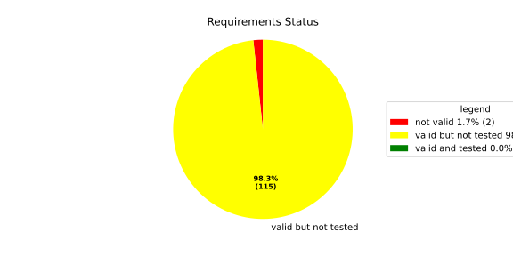
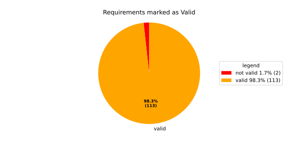
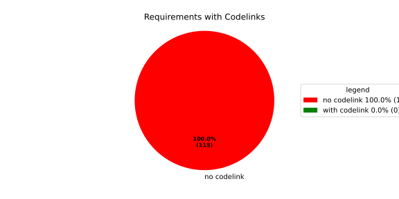

Verification Statistics#
Overview#

In Detail#


No needs passed the filters
Failed Tests
Hint: This table should be empty. Before a PR can be merged all tests have to be successful.
No needs passed the filters
Skipped / Disabled Tests
No needs passed the filters
All passed Tests#
No needs passed the filters
Details About Testcases#
No needs passed the filters
No needs passed the filters
Test Log Files#
tests-report/tests/integration/process_simple_rep_failure/process_simple_rep_failure/test.log
exec ${PAGER:-/usr/bin/less} "$0" || exit 1
Executing tests from //tests/integration/process_simple_rep_failure:process_simple_rep_failure
-----------------------------------------------------------------------------
============================= test session starts ==============================
platform linux -- Python 3.12.12, pytest-9.0.3, pluggy-1.5.0
rootdir: /home/runner/.bazel/sandbox/processwrapper-sandbox/948/execroot/_main/bazel-out/k8-fastbuild/bin/tests/integration/process_simple_rep_failure/process_simple_rep_failure.runfiles/score_itf+
configfile: pytest.ini
collected 1 item
../score_itf+::test_recovery_action_simple_rep_failure
-------------------------------- live log setup --------------------------------
[2026-06-18 05:29:15.981] [INFO] [score.itf.plugins.docker] Executing custom image bootstrap command: tests/utils/environments/x86_64-linux/x86_64-linux.sh
[2026-06-18 05:29:16.262] [DEBUG] [docker.utils.config] Trying paths: ['/home/runner/.docker/config.json', '/home/runner/.dockercfg']
[2026-06-18 05:29:16.262] [DEBUG] [docker.utils.config] Found file at path: /home/runner/.docker/config.json
[2026-06-18 05:29:16.262] [DEBUG] [docker.auth] Found 'auths' section
[2026-06-18 05:29:16.262] [DEBUG] [docker.auth] Found entry (registry='https://index.docker.io/v1/', username='githubactions')
[2026-06-18 05:29:16.270] [DEBUG] [urllib3.connectionpool] http://localhost:None "GET /version HTTP/1.1" 200 823
[2026-06-18 05:29:16.307] [DEBUG] [urllib3.connectionpool] http://localhost:None "POST /v1.48/containers/create HTTP/1.1" 201 88
[2026-06-18 05:29:16.309] [DEBUG] [urllib3.connectionpool] http://localhost:None "GET /v1.48/containers/4463dc4be978eb3d97b7e69f4ea89a4d77d70882bac3ec01a3527c23cb6d7015/json HTTP/1.1" 200 None
[2026-06-18 05:29:16.463] [DEBUG] [urllib3.connectionpool] http://localhost:None "POST /v1.48/containers/4463dc4be978eb3d97b7e69f4ea89a4d77d70882bac3ec01a3527c23cb6d7015/start HTTP/1.1" 204 0
[2026-06-18 05:29:16.464] [DEBUG] [docker.utils.config] Trying paths: ['/home/runner/.docker/config.json', '/home/runner/.dockercfg']
[2026-06-18 05:29:16.464] [DEBUG] [docker.utils.config] Found file at path: /home/runner/.docker/config.json
[2026-06-18 05:29:16.464] [DEBUG] [docker.auth] Found 'auths' section
[2026-06-18 05:29:16.464] [DEBUG] [docker.auth] Found entry (registry='https://index.docker.io/v1/', username='githubactions')
[2026-06-18 05:29:16.474] [DEBUG] [urllib3.connectionpool] http://localhost:None "GET /version HTTP/1.1" 200 823
[2026-06-18 05:29:16.676] [INFO] [tests.utils.testing_utils.setup_test] Test case setup finished
-------------------------------- live log call ---------------------------------
[2026-06-18 05:29:16.840] [INFO] [launch_manager] 2026/06/18 05:29:16.556838 1843807 000 ECU1 LM LM log debug verbose 1 Launch Manager Started !!!!
[2026-06-18 05:29:16.840] [INFO] [launch_manager] 2026/06/18 05:29:16.556838 1843809 000 ECU1 LM LM log debug verbose 1 Loading LCM Configurations...
[2026-06-18 05:29:16.840] [INFO] [launch_manager] 2026/06/18 05:29:16.556838 1843809 000 ECU1 LM LM log debug verbose 1 ECUCFG_ENV_VAR_ROOTFOLDER set successfully
[2026-06-18 05:29:16.841] [INFO] [launch_manager] 2026/06/18 05:29:16.556838 1843811 000 ECU1 LM LM log debug verbose 5 FlatBufferParser::getModeGroupPgName: MainPG ( IdentifierHash: 18079021346025578134 )
[2026-06-18 05:29:16.841] [INFO] [launch_manager] 2026/06/18 05:29:16.556838 1843812 000 ECU1 LM LM log debug verbose 5 FlatBufferParser::getModeGroupPgStateName: MainPG/Startup ( IdentifierHash: 10504605499600661529 )
[2026-06-18 05:29:16.841] [INFO] [launch_manager] 2026/06/18 05:29:16.556838 1843812 000 ECU1 LM LM log debug verbose 5 FlatBufferParser::getModeGroupPgStateName: MainPG/run_target_app_does_report_krunning_in_time ( IdentifierHash: 11934981641920773349 )
[2026-06-18 05:29:16.841] [INFO] [launch_manager] 2026/06/18 05:29:16.556838 1843812 000 ECU1 LM LM log debug verbose 5
[2026-06-18 05:29:16.842] [INFO] [launch_manager] FlatBufferParser::getModeGroupPgStateName: MainPG/run_target_app_does_not_report_krunning_in_time ( IdentifierHash: 7672161913816744053 )
[2026-06-18 05:29:16.843] [INFO] [launch_manager] 2026/06/18 05:29:16.556839 1843813 000 ECU1 LM LM log debug verbose 5 FlatBufferParser::getModeGroupPgStateName: MainPG/Off ( IdentifierHash: 15281793077830264047 )
[2026-06-18 05:29:16.843] [INFO] [launch_manager] 2026/06/18 05:29:16.556839 1843814 000 ECU1 LM LM log debug verbose 5 FlatBufferParser::getModeGroupPgStateName: MainPG/fallback_run_target ( IdentifierHash: 4059409696722237352 )
[2026-06-18 05:29:16.843] [INFO] [launch_manager] 2026/06/18 05:29:16.556839 1843814 000 ECU1 LM LM log debug verbose 4
[2026-06-18 05:29:16.843] [INFO] [launch_manager] parseProcessConfigurations: Process index: 0 executable_path_: /tmp/tests/process_simple_rep_failure/control_client_mock
[2026-06-18 05:29:16.843] [INFO] [launch_manager] 2026/06/18 05:29:16.556839 1843815 000 ECU1 LM LM log debug verbose 3 Process control_client_mock is Reporting execution state
[2026-06-18 05:29:16.844] [INFO] [launch_manager] 2026/06/18 05:29:16.556839 1843815 000 ECU1 LM LM log debug verbose 1 Process is STATE_MANAGEMENT function Cluster Affiliation
[2026-06-18 05:29:16.844] [INFO] [launch_manager] 2026/06/18 05:29:16.556839 1843816 000 ECU1 LM LM log debug verbose 3 Process control_client_mock is Self terminating
[2026-06-18 05:29:16.845] [INFO] [launch_manager] 2026/06/18 05:29:16.556839 1843816 000 ECU1 LM LM log debug verbose 4 ParseProcessProcessGroup: id:::pg_name_: MainPG , pg_state_name_: MainPG/Startup
[2026-06-18 05:29:16.845] [INFO] [launch_manager] 2026/06/18 05:29:16.556839 1843817 000 ECU1 LM LM log debug verbose 4 ParseProcessProcessGroup: id:::pg_name_: MainPG , pg_state_name_: MainPG/run_target_app_does_report_krunning_in_time
[2026-06-18 05:29:16.845] [INFO] [launch_manager] 2026/06/18 05:29:16.556839 1843817 000 ECU1 LM LM log debug verbose 4 ParseProcessProcessGroup: id:::pg_name_: MainPG , pg_state_name_: MainPG/run_target_app_does_not_report_krunning_in_time
[2026-06-18 05:29:16.845] [INFO] [launch_manager] 2026/06/18 05:29:16.556839 1843817 000 ECU1 LM LM log debug verbose 4 ParseProcessProcessGroup: id:::pg_name_: MainPG , pg_state_name_: MainPG/fallback_run_target
[2026-06-18 05:29:16.845] [INFO] [launch_manager] 2026/06/18 05:29:16.556839 1843818 000 ECU1 LM LM log debug verbose 4
[2026-06-18 05:29:16.845] [INFO] [launch_manager] parseProcessConfigurations: Process index: 1 executable_path_: /tmp/tests/process_simple_rep_failure/process_simple_reporting
[2026-06-18 05:29:16.845] [INFO] [launch_manager] 2026/06/18 05:29:16.556839 1843819 000 ECU1 LM LM log debug verbose 3 Process component_does_report_krunning_in_time is Reporting execution state
[2026-06-18 05:29:16.846] [INFO] [launch_manager] 2026/06/18 05:29:16.556839 1843819 000 ECU1 LM LM log debug verbose 1 Process is NOT associated with any function Cluster Affiliation
[2026-06-18 05:29:16.846] [INFO] [launch_manager] 2026/06/18 05:29:16.556839 1843819 000 ECU1 LM LM log debug verbose 3 Process component_does_report_krunning_in_time is Self terminating
[2026-06-18 05:29:16.846] [INFO] [launch_manager] 2026/06/18 05:29:16.556839 1843820 000 ECU1 LM LM log debug verbose 4
[2026-06-18 05:29:16.846] [INFO] [launch_manager] ParseProcessProcessGroup: id:::pg_name_: MainPG , pg_state_name_: MainPG/run_target_app_does_report_krunning_in_time
[2026-06-18 05:29:16.846] [INFO] [launch_manager] 2026/06/18 05:29:16.556839 1843821 000 ECU1 LM LM log debug verbose 4 parseProcessConfigurations: Process index: 2 executable_path_: /tmp/tests/process_simple_rep_failure/process_simple_reporting
[2026-06-18 05:29:16.846] [INFO] [launch_manager] 2026/06/18 05:29:16.556839 1843821 000 ECU1 LM LM log debug verbose 3 Process component_does_not_report_krunning_in_time is Reporting execution state
[2026-06-18 05:29:16.846] [INFO] [launch_manager] 2026/06/18 05:29:16.556839 1843821 000 ECU1 LM LM log debug verbose 1 Process is NOT associated with any function Cluster Affiliation
[2026-06-18 05:29:16.846] [INFO] [launch_manager] 2026/06/18 05:29:16.556839 1843821 000 ECU1 LM LM log debug verbose 3 Process component_does_not_report_krunning_in_time is Self terminating
[2026-06-18 05:29:16.846] [INFO] [launch_manager] 2026/06/18 05:29:16.556839 1843822 000 ECU1 LM LM log debug verbose 4 ParseProcessProcessGroup: id:::pg_name_: MainPG , pg_state_name_: MainPG/run_target_app_does_not_report_krunning_in_time
[2026-06-18 05:29:16.846] [INFO] [launch_manager] 2026/06/18 05:29:16.556839 1843822 000 ECU1 LM LM log debug verbose 4 parseProcessConfigurations: Process index: 3 executable_path_: /tmp/tests/process_simple_rep_failure/verification_process
[2026-06-18 05:29:16.846] [INFO] [launch_manager] 2026/06/18 05:29:16.556839 1843823 000 ECU1 LM LM log debug verbose 3 Process verification_component is NOT Reporting execution state
[2026-06-18 05:29:16.846] [INFO] [launch_manager] 2026/06/18 05:29:16.556840 1843823 000 ECU1 LM LM log debug verbose 1 Process is NOT associated with any function Cluster Affiliation
[2026-06-18 05:29:16.847] [INFO] [launch_manager] 2026/06/18 05:29:16.556840 1843823 000 ECU1 LM LM log debug verbose 3 Process verification_component is Self terminating
[2026-06-18 05:29:16.847] [INFO] [launch_manager] 2026/06/18 05:29:16.556840 1843823 000 ECU1 LM LM log debug verbose 4 ParseProcessProcessGroup: id:::pg_name_: MainPG , pg_state_name_: MainPG/fallback_run_target
[2026-06-18 05:29:16.847] [INFO] [launch_manager] 2026/06/18 05:29:16.556840 1843824 000 ECU1 LM LM log debug verbose 3 Loading SWCL Nr. 0 Succeeded
[2026-06-18 05:29:16.847] [INFO] [launch_manager] 2026/06/18 05:29:16.556840 1843824 000 ECU1 LM LM log debug verbose 2 1 process group(s)
[2026-06-18 05:29:16.847] [INFO] [launch_manager] 2026/06/18 05:29:16.556840 1843824 000 ECU1 LM LM log debug verbose 3 Creating graph with 4 nodes
[2026-06-18 05:29:16.847] [INFO] [launch_manager] 2026/06/18 05:29:16.556840 1843824 000 ECU1 LM LM log debug verbose 1 Process groups initialized successfully
[2026-06-18 05:29:16.847] [INFO] [launch_manager] 2026/06/18 05:29:16.556840 1843824 000 ECU1 LM LM log debug verbose 1 Process Group initialization done
[2026-06-18 05:29:16.847] [INFO] [launch_manager] 2026/06/18 05:29:16.556840 1843825 000 ECU1 LM LM log debug verbose 3 Creating Safe Process Map with 4 entries
[2026-06-18 05:29:16.847] [INFO] [launch_manager] 2026/06/18 05:29:16.556840 1843825 000 ECU1 LM LM log debug verbose 2 Creating job queue with capacity 1024
[2026-06-18 05:29:16.848] [INFO] [launch_manager] 2026/06/18 05:29:16.556840 1843825 000 ECU1 LM LM log debug verbose 1 Creating worker threads...
[2026-06-18 05:29:16.848] [INFO] [launch_manager] 2026/06/18 05:29:16.556841 1843839 000 ECU1 LM LM log debug verbose 7 Process group index 0 (with name MainPG ) has 4 processes
[2026-06-18 05:29:16.848] [INFO] [launch_manager] 2026/06/18 05:29:16.556841 1843839 000 ECU1 LM LM log debug verbose 2 Creating process node with id: 0
[2026-06-18 05:29:16.848] [INFO] [launch_manager] 2026/06/18 05:29:16.556841 1843840 000 ECU1 LM LM log debug verbose 5 Process 0 has 0 start dependencies
[2026-06-18 05:29:16.848] [INFO] [launch_manager] 2026/06/18 05:29:16.556841 1843840 000 ECU1 LM LM log debug verbose 2 Creating process node with id: 1
[2026-06-18 05:29:16.848] [INFO] [launch_manager] 2026/06/18 05:29:16.556841 1843840 000 ECU1 LM LM log debug verbose 5 Process 1 has 0 start dependencies
[2026-06-18 05:29:16.848] [INFO] [launch_manager] 2026/06/18 05:29:16.556841 1843841 000 ECU1 LM LM log debug verbose 2 Creating process node with id: 2
[2026-06-18 05:29:16.848] [INFO] [launch_manager] 2026/06/18 05:29:16.556841 1843841 000 ECU1 LM LM log debug verbose 5 Process 2 has 0 start dependencies
[2026-06-18 05:29:16.848] [INFO] [launch_manager] 2026/06/18 05:29:16.556841 1843841 000 ECU1 LM LM log debug verbose 2 Creating process node with id: 3
[2026-06-18 05:29:16.848] [INFO] [launch_manager] 2026/06/18 05:29:16.556841 1843841 000 ECU1 LM LM log debug verbose 5 Process 3 has 0 start dependencies
[2026-06-18 05:29:16.848] [INFO] [launch_manager] 2026/06/18 05:29:16.556841 1843841 000 ECU1 LM LM log debug verbose 3 Created 4 process nodes
[2026-06-18 05:29:16.849] [INFO] [launch_manager] 2026/06/18 05:29:16.556841 1843842 000 ECU1 LM LM log debug verbose 2 Creating successor lists for process group MainPG
[2026-06-18 05:29:16.849] [INFO] [launch_manager] 2026/06/18 05:29:16.556841 1843842 000 ECU1 LM LM log debug verbose 1 Graphs initialized
[2026-06-18 05:29:16.849] [INFO] [launch_manager] 2026/06/18 05:29:16.556842 1843847 000 ECU1 LM Fcty log info verbose 2 Factory for FlatCfg MachineConfig: Loading of HM Machine Configuration succeeded.
[2026-06-18 05:29:16.849] [INFO] [launch_manager] 2026/06/18 05:29:16.556842 1843847 000 ECU1 LM Fcty log debug verbose 3 Factory for FlatCfg MachineConfig: Alive Supervision buffer size: 100
[2026-06-18 05:29:16.849] [INFO] [launch_manager] 2026/06/18 05:29:16.556842 1843847 000 ECU1 LM Fcty log debug verbose 3 Factory for FlatCfg MachineConfig: Monitor buffer size: 512
[2026-06-18 05:29:16.849] [INFO] [launch_manager] 2026/06/18 05:29:16.556842 1843848 000 ECU1 LM Fcty log debug verbose 4 Factory for FlatCfg MachineConfig: Periodicity: 50000000 ns
[2026-06-18 05:29:16.849] [INFO] [launch_manager] 2026/06/18 05:29:16.556842 1843848 000 ECU1 LM Fcty log debug verbose 3
[2026-06-18 05:29:16.849] [INFO] [launch_manager] Factory for FlatCfg MachineConfig: Configured watchdogs: 0
[2026-06-18 05:29:16.849] [INFO] [launch_manager] 2026/06/18 05:29:16.556842 1843849 000 ECU1 LM Fcty log warn verbose 2
[2026-06-18 05:29:16.849] [INFO] [launch_manager] Factory for FlatCfg MachineConfig: No watchdog configured
[2026-06-18 05:29:16.849] [INFO] [launch_manager] 2026/06/18 05:29:16.556843 1843860 000 ECU1 LM Fcty log debug verbose 2
[2026-06-18 05:29:16.849] [INFO] [launch_manager] Software Cluster Handler starts constructing workers: MainCluster
[2026-06-18 05:29:16.850] [INFO] [launch_manager] 2026/06/18 05:29:16.556843 1843862 000 ECU1 LM Fcty log debug verbose 3
[2026-06-18 05:29:16.850] [INFO] [launch_manager] Factory for FlatCfg AR24-11: Successfully created Process States: control_client_mock
[2026-06-18 05:29:16.850] [INFO] [launch_manager] 2026/06/18 05:29:16.556844 1843865 000 ECU1 LM Fcty log debug verbose 3
[2026-06-18 05:29:16.850] [INFO] [launch_manager] Factory for FlatCfg AR24-11: Number of constructed Process States: 1
[2026-06-18 05:29:16.850] [INFO] [launch_manager] 2026/06/18 05:29:16.556844 1843868 000 ECU1 LM Fcty log debug verbose 3
[2026-06-18 05:29:16.850] [INFO] [launch_manager] Factory for FlatCfg AR24-11: Successfully created Monitor interface IPC with path: lifecycle_health_control_client_mock
[2026-06-18 05:29:16.850] [INFO] [launch_manager] 2026/06/18 05:29:16.556844 1843872 000 ECU1 LM Fcty log debug verbose 3
[2026-06-18 05:29:16.850] [INFO] [launch_manager] Factory for FlatCfg AR24-11: Number of constructed Monitor interface IPCs: 1
[2026-06-18 05:29:16.850] [INFO] [launch_manager] 2026/06/18 05:29:16.556845 1843875 000 ECU1 LM Fcty log debug verbose 3
[2026-06-18 05:29:16.850] [INFO] [launch_manager] Factory for FlatCfg AR24-11: Successfully created MonitorInterface: /lifecycle_health_control_client_mock
[2026-06-18 05:29:16.850] [INFO] [launch_manager] 2026/06/18 05:29:16.556845 1843877 000 ECU1 LM Fcty log debug verbose 3
[2026-06-18 05:29:16.851] [INFO] [launch_manager] Factory for FlatCfg AR24-11: Number of constructed Monitor interfaces: 1
[2026-06-18 05:29:16.851] [INFO] [launch_manager] 2026/06/18 05:29:16.556845 1843879 000 ECU1 LM Fcty log debug verbose 3
[2026-06-18 05:29:16.851] [INFO] [launch_manager] Factory for FlatCfg AR24-11: Successfully created supervision checkpoint: control_client_mock_checkpoint
[2026-06-18 05:29:16.851] [INFO] [launch_manager] 2026/06/18 05:29:16.556846 1843891 000 ECU1 LM Fcty log debug verbose 3 Factory for FlatCfg AR24-11: Number of constructed supervision checkpoints: 1
[2026-06-18 05:29:16.851] [INFO] [launch_manager] 2026/06/18 05:29:16.556846 1843892 000 ECU1 LM Fcty log debug verbose 3
[2026-06-18 05:29:16.851] [INFO] [launch_manager] Factory for FlatCfg AR24-11: Successfully created alive supervision worker object: control_client_mock_alive_supervision
[2026-06-18 05:29:16.851] [INFO] [launch_manager] 2026/06/18 05:29:16.556847 1843893 000 ECU1 LM Fcty log debug verbose 3
[2026-06-18 05:29:16.851] [INFO] [launch_manager] Factory for FlatCfg AR24-11: Number of constructed alive supervisions: 1
[2026-06-18 05:29:16.851] [INFO] [launch_manager] 2026/06/18 05:29:16.556847 1843894 000 ECU1 LM Fcty log info verbose 2
[2026-06-18 05:29:16.851] [INFO] [launch_manager] Phm Daemon: The (configured) periodicity in [ns] is set to: 50000000
[2026-06-18 05:29:16.851] [INFO] [launch_manager] 2026/06/18 05:29:16.556847 1843895 000 ECU1 LM Fcty log debug verbose 2
[2026-06-18 05:29:16.851] [INFO] [launch_manager] Phm Daemon: The accuracy of the monotonic system clock in [ns] is: 1
[2026-06-18 05:29:16.852] [INFO] [launch_manager] 2026/06/18 05:29:16.556847 1843896 000 ECU1 LM Fcty log debug verbose 3 HealthMonitor: Initialization took 5 ms
[2026-06-18 05:29:16.852] [INFO] [launch_manager] 2026/06/18 05:29:16.556847 1843898 000 ECU1 LM LM log info verbose 1
[2026-06-18 05:29:16.852] [INFO] [launch_manager] LCM started successfully
[2026-06-18 05:29:16.852] [INFO] [launch_manager] 2026/06/18 05:29:16.556847 1843901 000 ECU1 LM LM log debug verbose 3 clock() at run(): 33.045000 ms
[2026-06-18 05:29:16.852] [INFO] [launch_manager] 2026/06/18 05:29:16.556847 1843903 000 ECU1 LM LM log debug verbose 1
[2026-06-18 05:29:16.852] [INFO] [launch_manager] =============STARTING MAINPG STARTUP STATE============
[2026-06-18 05:29:16.852] [INFO] [launch_manager] 2026/06/18 05:29:16.556848 1843905 000 ECU1 LM LM log debug verbose 9
[2026-06-18 05:29:16.852] [INFO] [launch_manager] Graph::setState changes from kSuccess to kInTransition for PG 0 ( MainPG )
[2026-06-18 05:29:16.853] [INFO] [launch_manager] 2026/06/18 05:29:16.556848 1843910 000 ECU1 LM LM log debug verbose 2 Stop Dependencies: 0
[2026-06-18 05:29:16.853] [INFO] [launch_manager] 2026/06/18 05:29:16.556848 1843912 000 ECU1 LM LM log debug verbose 2 Stop Dependencies: 0
[2026-06-18 05:29:16.853] [INFO] [launch_manager] 2026/06/18 05:29:16.556849 1843915 000 ECU1 LM LM log debug verbose 2 Stop Dependencies: 0
[2026-06-18 05:29:16.853] [INFO] [launch_manager] 2026/06/18 05:29:16.556849 1843916 000 ECU1 LM LM log debug verbose 2 Stop Dependencies: 0
[2026-06-18 05:29:16.853] [INFO] [launch_manager] 2026/06/18 05:29:16.556849 1843916 000 ECU1 LM LM log debug verbose 2 Start Dependencies: 0
[2026-06-18 05:29:16.853] [INFO] [launch_manager] 2026/06/18 05:29:16.556849 1843917 000 ECU1 LM LM log debug verbose 2 Start Dependencies: 0
[2026-06-18 05:29:16.853] [INFO] [launch_manager] 2026/06/18 05:29:16.556849 1843918 000 ECU1 LM LM log debug verbose 2 Start Dependencies: 0
[2026-06-18 05:29:16.853] [INFO] [launch_manager] 2026/06/18 05:29:16.556849 1843919 000 ECU1 LM LM log debug verbose 2 Start Dependencies: 0
[2026-06-18 05:29:16.853] [INFO] [launch_manager] 2026/06/18 05:29:16.556849 1843920 000 ECU1 LM LM log debug verbose 6 Starting process 0 ( control_client_mock ) from executable /tmp/tests/process_simple_rep_failure/control_client_mock
[2026-06-18 05:29:16.853] [INFO] [launch_manager] 2026/06/18 05:29:16.556849 1843921 000 ECU1 LM LM log debug verbose 3 Initialize the control client for control_client_mock process
[2026-06-18 05:29:16.853] [INFO] [launch_manager] 2026/06/18 05:29:16.556849 1843923 000 ECU1 LM LM log debug verbose 1 ControlClientChannel initialized
[2026-06-18 05:29:16.854] [INFO] [launch_manager] 2026/06/18 05:29:16.556851 1843934 000 ECU1 LM LM log debug verbose 4 startProcess pid 67 received for process: control_client_mock
[2026-06-18 05:29:16.854] [INFO] [launch_manager] 2026/06/18 05:29:16.556851 1843941 000 ECU1 LM LM log debug verbose 1 ControlClientChannel obtained from sync.
[2026-06-18 05:29:16.857] [INFO] [launch_manager] [==========] Running 1 test from 1 test suite.
[2026-06-18 05:29:16.857] [INFO] [launch_manager] [----------] Global test environment set-up.
[2026-06-18 05:29:16.857] [INFO] [launch_manager] [----------] 1 test from RecoveryActionSimpleRepFailure
[2026-06-18 05:29:16.858] [INFO] [launch_manager] [ RUN ] RecoveryActionSimpleRepFailure.ControlClientMock
[2026-06-18 05:29:16.858] [INFO] [launch_manager] [ STEP ] Report kRunning from ControlClientMock
[2026-06-18 05:29:16.861] [INFO] [launch_manager] [ END STEP ] Report kRunning from ControlClientMock
[2026-06-18 05:29:16.862] [INFO] [launch_manager] [ STEP ] Activate RunTarget run_target_app_does_report_krunning_in_time
[2026-06-18 05:29:16.863] [INFO] [launch_manager] 2026/06/18 05:29:16.556862 1844051 000 ECU1 LM LM log debug verbose 8 Got kRunning for pid 67 ( control_client_mock ) process 0 of group MainPG
[2026-06-18 05:29:16.863] [INFO] [launch_manager] 2026/06/18 05:29:16.556862 1844051 000 ECU1 LM LM log debug verbose 7 startProcess for MainPG process 0 ( control_client_mock ) done
[2026-06-18 05:29:16.863] [INFO] [launch_manager] 2026/06/18 05:29:16.556862 1844051 000 ECU1 LM LM log debug verbose 1 Control Client handler nudged
[2026-06-18 05:29:16.863] [INFO] [launch_manager] 2026/06/18 05:29:16.556862 1844051 000 ECU1 LM LM log debug verbose 3 clock() at successful initial state transition: 34.600000 ms
[2026-06-18 05:29:16.863] [INFO] [launch_manager] 2026/06/18 05:29:16.556862 1844052 000 ECU1 LM LM log debug verbose 9 Graph::setState changes from kInTransition to kSuccess for PG 0 ( MainPG )
[2026-06-18 05:29:16.863] [INFO] [launch_manager] 2026/06/18 05:29:16.556862 1844052 000 ECU1 LM LM log info verbose 7 Completed the request for PG MainPG to State MainPG/Startup in 14 ms
[2026-06-18 05:29:16.863] [INFO] [launch_manager] 2026/06/18 05:29:16.556862 1844052 000 ECU1 LM LM log debug verbose 1 Control Client handler nudged
[2026-06-18 05:29:16.863] [INFO] [launch_manager] 2026/06/18 05:29:16.556863 1844053 000 ECU1 LM LM log debug verbose 8
[2026-06-18 05:29:16.863] [INFO] [launch_manager] ProcessGroupManager::ControlClientHandler: got request kSetStateRequest ( 16 ) re state MainPG/run_target_app_does_report_krunning_in_time of PG MainPG
[2026-06-18 05:29:16.863] [INFO] [launch_manager] 2026/06/18 05:29:16.556863 1844054 000 ECU1 LM LM log debug verbose 6 Pending state for process group MainPG changed from to MainPG/run_target_app_does_report_krunning_in_time
[2026-06-18 05:29:16.864] [INFO] [launch_manager] 2026/06/18 05:29:16.556863 1844054 000 ECU1 LM LM log debug verbose 1 Request acknowledged.
[2026-06-18 05:29:16.864] [INFO] [launch_manager] 2026/06/18 05:29:16.556863 1844055 000 ECU1 LM LM log debug verbose 6 Pending state for process group MainPG changed from MainPG/run_target_app_does_report_krunning_in_time to
[2026-06-18 05:29:16.864] [INFO] [launch_manager] 2026/06/18 05:29:16.556863 1844055 000 ECU1 LM LM log debug verbose 4 Start transition to MainPG/run_target_app_does_report_krunning_in_time for PG MainPG
[2026-06-18 05:29:16.864] [INFO] [launch_manager] 2026/06/18 05:29:16.556863 1844056 000 ECU1 LM LM log debug verbose 9 Graph::setState changes from kSuccess to kInTransition for PG 0 ( MainPG )
[2026-06-18 05:29:16.864] [INFO] [launch_manager] 2026/06/18 05:29:16.556863 1844057 000 ECU1 LM LM log debug verbose 2 Stop Dependencies: 0
[2026-06-18 05:29:16.864] [INFO] [launch_manager] 2026/06/18 05:29:16.556863 1844057 000 ECU1 LM LM log debug verbose 2 Stop Dependencies: 0
[2026-06-18 05:29:16.864] [INFO] [launch_manager] 2026/06/18 05:29:16.556863 1844058 000 ECU1 LM LM log debug verbose 2 Stop Dependencies: 0
[2026-06-18 05:29:16.864] [INFO] [launch_manager] 2026/06/18 05:29:16.556863 1844059 000 ECU1 LM LM log debug verbose 2 Stop Dependencies: 0
[2026-06-18 05:29:16.864] [INFO] [launch_manager] 2026/06/18 05:29:16.556863 1844059 000 ECU1 LM LM log debug verbose 2 Start Dependencies: 0
[2026-06-18 05:29:16.864] [INFO] [launch_manager] 2026/06/18 05:29:16.556863 1844060 000 ECU1 LM LM log debug verbose 2
[2026-06-18 05:29:16.865] [INFO] [launch_manager] Start Dependencies: 0
[2026-06-18 05:29:16.865] [INFO] [launch_manager] 2026/06/18 05:29:16.556863 1844061 000 ECU1 LM LM log debug verbose 2 Start Dependencies: 0
[2026-06-18 05:29:16.865] [INFO] [launch_manager] 2026/06/18 05:29:16.556863 1844061 000 ECU1 LM LM log debug verbose 2 Start Dependencies: 0
[2026-06-18 05:29:16.865] [INFO] [launch_manager] 2026/06/18 05:29:16.556862 1844063 000 ECU1 LM LM log debug verbose 1 2026/06/18 05:29:16.556864 1844064 000 ECU1 LM LM log debug verbose 6 Starting process 1 ( component_does_report_krunning_in_time ) from executable /tmp/tests/process_simple_rep_failure/process_simple_reporting
[2026-06-18 05:29:16.865] [INFO] [launch_manager] 2026/06/18 05:29:16.556864 1844070 000 ECU1 LM LM log debug verbose 4 startProcess pid 69 received for process: component_does_report_krunning_in_time
[2026-06-18 05:29:16.865] [INFO] [launch_manager] Request sent. Waiting for acknowledgment...
[2026-06-18 05:29:16.865] [INFO] [launch_manager] 2026/06/18 05:29:16.556864 1844071 000 ECU1 LM LM log debug verbose 1 Request acknowledged.
[2026-06-18 05:29:16.866] [INFO] [launch_manager] [==========] Running 1 test from 1 test suite.
[2026-06-18 05:29:16.866] [INFO] [launch_manager] [----------] Global test environment set-up.
[2026-06-18 05:29:16.867] [INFO] [launch_manager] [----------] 1 test from ProcessSimpleRepFailure
[2026-06-18 05:29:16.867] [INFO] [launch_manager] [ RUN ] ProcessSimpleRepFailure.ProcessSimpleReporting
[2026-06-18 05:29:16.867] [INFO] [launch_manager] [ STEP ] Check args
[2026-06-18 05:29:16.867] [INFO] [launch_manager] [ END STEP ] Check args
[2026-06-18 05:29:16.868] [INFO] [launch_manager] [ STEP ] Report kRunning from ProcessSimpleReporting
[2026-06-18 05:29:16.897] [INFO] [launch_manager] 2026/06/18 05:29:16.556897 1844399 000 ECU1 LM Sprv log debug verbose 6 Process with Id control_client_mock changed state PG MainPG/Startup PS 1
[2026-06-18 05:29:16.898] [INFO] [launch_manager] 2026/06/18 05:29:16.556897 1844399 000 ECU1 LM Sprv log debug verbose 6 Process with Id control_client_mock changed state PG MainPG/Startup PS 2
[2026-06-18 05:29:16.898] [INFO] [launch_manager] 2026/06/18 05:29:16.556897 1844399 000 ECU1 LM Sprv log debug verbose 6 Process with Id component_does_report_krunning_in_time changed state PG MainPG/run_target_app_does_report_krunning_in_time PS 1
[2026-06-18 05:29:16.898] [INFO] [launch_manager] 2026/06/18 05:29:16.556897 1844400 000 ECU1 LM Sprv log info verbose 3 Alive Supervision ( control_client_mock_alive_supervision ) switched to OK.
[2026-06-18 05:29:16.911] [DEBUG] [tests.utils.testing_utils.run_until_file_deployed] Waiting for /tmp/tests/test_end
[2026-06-18 05:29:17.373] [INFO] [launch_manager] [ END STEP ] Report kRunning from ProcessSimpleReporting
[2026-06-18 05:29:17.374] [INFO] [launch_manager] [ OK ] ProcessSimpleRepFailure.ProcessSimpleReporting (502 ms)
[2026-06-18 05:29:17.374] [INFO] [launch_manager] [----------] 1 test from ProcessSimpleRepFailure (503 ms total)
[2026-06-18 05:29:17.374] [INFO] [launch_manager] [----------] Global test environment tear-down
[2026-06-18 05:29:17.374] [INFO] [launch_manager] [==========] 1 test from 1 test suite ran. (504 ms total)
[2026-06-18 05:29:17.374] [INFO] [launch_manager] [ PASSED ] 1 test.
[2026-06-18 05:29:17.374] [INFO] [launch_manager] 2026/06/18 05:29:17.557371 1849138 000 ECU1 LM LM log debug verbose 12 Child process 1 of MainPG pid 69 ( component_does_report_krunning_in_time ) for node True terminated with status 0
[2026-06-18 05:29:17.374] [INFO] [launch_manager] 2026/06/18 05:29:17.557372 1849148 000 ECU1 LM LM log debug verbose 8 Got kRunning for pid 69 ( component_does_report_krunning_in_time ) process 1 of group MainPG
[2026-06-18 05:29:17.374] [INFO] [launch_manager] 2026/06/18 05:29:17.557372 1849149 000 ECU1 LM LM log debug verbose 7 startProcess for MainPG process 1 ( component_does_report_krunning_in_time ) done
[2026-06-18 05:29:17.374] [INFO] [launch_manager] 2026/06/18 05:29:17.557372 1849149 000 ECU1 LM LM log debug verbose 9 Graph::setState changes from kInTransition to kSuccess for PG 0 ( MainPG )
[2026-06-18 05:29:17.374] [INFO] [launch_manager] 2026/06/18 05:29:17.557372 1849150 000 ECU1 LM LM log info verbose 7 Completed the request for PG MainPG to State MainPG/run_target_app_does_report_krunning_in_time in 509 ms
[2026-06-18 05:29:17.374] [INFO] [launch_manager] 2026/06/18 05:29:17.557372 1849150 000 ECU1 LM LM log debug verbose 1 Control Client handler nudged
[2026-06-18 05:29:17.374] [INFO] [launch_manager] 2026/06/18 05:29:17.557373 1849153 000 ECU1 LM LM log debug verbose 8 ProcessGroupManager::ControlClientHandler: Sending kSetStateSuccess ( 20 ) re state MainPG/run_target_app_does_report_krunning_in_time of PG MainPG
[2026-06-18 05:29:17.375] [INFO] [launch_manager] 2026/06/18 05:29:17.557373 1849154 000 ECU1 LM LM log debug verbose 1 Response sent.
[2026-06-18 05:29:17.397] [INFO] [launch_manager] 2026/06/18 05:29:17.557397 1849398 000 ECU1 LM Sprv log debug verbose 6
[2026-06-18 05:29:17.398] [INFO] [launch_manager] Process with Id component_does_report_krunning_in_time changed state PG MainPG/run_target_app_does_report_krunning_in_time PS 4
[2026-06-18 05:29:17.466] [INFO] [launch_manager] 2026/06/18 05:29:17.557462 1850050 000 ECU1 LM LM log debug verbose 1 Response retrieved.
[2026-06-18 05:29:17.467] [INFO] [launch_manager] [ END STEP ] Activate RunTarget run_target_app_does_report_krunning_in_time
[2026-06-18 05:29:17.484] [DEBUG] [tests.utils.testing_utils.run_until_file_deployed] Waiting for /tmp/tests/test_end
[2026-06-18 05:29:18.028] [DEBUG] [tests.utils.testing_utils.run_until_file_deployed] Waiting for /tmp/tests/test_end
[2026-06-18 05:29:18.463] [INFO] [launch_manager] [ STEP ] Verify fallback run target has not been activated
[2026-06-18 05:29:18.463] [INFO] [launch_manager] [ END STEP ] Verify fallback run target has not been activated
[2026-06-18 05:29:18.463] [INFO] [launch_manager] [ STEP ] Activate RunTarget run_target_app_does_not_report_krunning_in_time
[2026-06-18 05:29:18.463] [INFO] [launch_manager] 2026/06/18 05:29:18.558463 1860053 000 ECU1 LM LM log debug verbose 1 Request sent. Waiting for acknowledgment...
[2026-06-18 05:29:18.463] [INFO] [launch_manager] 2026/06/18 05:29:18.558463 1860058 000 ECU1 LM LM log debug verbose 8 ProcessGroupManager::ControlClientHandler: got request kSetStateRequest ( 16 ) re state MainPG/run_target_app_does_not_report_krunning_in_time of PG MainPG
[2026-06-18 05:29:18.463] [INFO] [launch_manager] 2026/06/18 05:29:18.558463 1860059 000 ECU1 LM LM log debug verbose 6 Pending state for process group MainPG changed from to MainPG/run_target_app_does_not_report_krunning_in_time
[2026-06-18 05:29:18.464] [INFO] [launch_manager] 2026/06/18 05:29:18.558463 1860059 000 ECU1 LM LM log debug verbose 1 Request acknowledged.
[2026-06-18 05:29:18.464] [INFO] [launch_manager] 2026/06/18 05:29:18.558463 1860060 000 ECU1 LM LM log debug verbose 6 Pending state for process group MainPG changed from MainPG/run_target_app_does_not_report_krunning_in_time to
[2026-06-18 05:29:18.464] [INFO] [launch_manager] 2026/06/18 05:29:18.558463 1860060 000 ECU1 LM LM log debug verbose 4 Start transition to MainPG/run_target_app_does_not_report_krunning_in_time for PG MainPG
[2026-06-18 05:29:18.464] [INFO] [launch_manager] 2026/06/18 05:29:18.558463 1860061 000 ECU1 LM LM log debug verbose 9 Graph::setState changes from kSuccess to kInTransition for PG 0 ( MainPG )
[2026-06-18 05:29:18.464] [INFO] [launch_manager] 2026/06/18 05:29:18.558463 1860061 000 ECU1 LM LM log debug verbose 2 Stop Dependencies: 0
[2026-06-18 05:29:18.464] [INFO] [launch_manager] 2026/06/18 05:29:18.558463 1860062 000 ECU1 LM LM log debug verbose 2 Stop Dependencies: 0
[2026-06-18 05:29:18.464] [INFO] [launch_manager] 2026/06/18 05:29:18.558463 1860062 000 ECU1 LM LM log debug verbose 2 Stop Dependencies: 0
[2026-06-18 05:29:18.464] [INFO] [launch_manager] 2026/06/18 05:29:18.558463 1860062 000 ECU1 LM LM log debug verbose 2 Stop Dependencies: 0
[2026-06-18 05:29:18.464] [INFO] [launch_manager] 2026/06/18 05:29:18.558463 1860062 000 ECU1 LM LM log debug verbose 2 Start Dependencies: 0
[2026-06-18 05:29:18.464] [INFO] [launch_manager] 2026/06/18 05:29:18.558463 1860062 000 ECU1 LM LM log debug verbose 2 Start Dependencies: 0
[2026-06-18 05:29:18.465] [INFO] [launch_manager] 2026/06/18 05:29:18.558464 1860063 000 ECU1 LM LM log debug verbose 2 Start Dependencies: 0
[2026-06-18 05:29:18.465] [INFO] [launch_manager] 2026/06/18 05:29:18.558464 1860063 000 ECU1 LM LM log debug verbose 2 Start Dependencies: 0
[2026-06-18 05:29:18.465] [INFO] [launch_manager] 2026/06/18 05:29:18.558464 1860064 000 ECU1 LM LM log debug verbose 6 Starting process 2 ( component_does_not_report_krunning_in_time ) from executable /tmp/tests/process_simple_rep_failure/process_simple_reporting
[2026-06-18 05:29:18.465] [INFO] [launch_manager] 2026/06/18 05:29:18.558464 1860065 000 ECU1 LM LM log debug verbose 1 Request acknowledged.
[2026-06-18 05:29:18.465] [INFO] [launch_manager] 2026/06/18 05:29:18.558464 1860071 000 ECU1 LM LM log debug verbose 4 startProcess pid 88 received for process: component_does_not_report_krunning_in_time
[2026-06-18 05:29:18.466] [INFO] [launch_manager] [==========] Running 1 test from 1 test suite.
[2026-06-18 05:29:18.466] [INFO] [launch_manager] [----------] Global test environment set-up.
[2026-06-18 05:29:18.466] [INFO] [launch_manager] [----------] 1 test from ProcessSimpleRepFailure
[2026-06-18 05:29:18.466] [INFO] [launch_manager] [ RUN ] ProcessSimpleRepFailure.ProcessSimpleReporting
[2026-06-18 05:29:18.466] [INFO] [launch_manager] [ STEP ] Check args
[2026-06-18 05:29:18.466] [INFO] [launch_manager] [ END STEP ] Check args
[2026-06-18 05:29:18.466] [INFO] [launch_manager] [ STEP ] Report kRunning from ProcessSimpleReporting
[2026-06-18 05:29:18.497] [INFO] [launch_manager] 2026/06/18 05:29:18.558497 1860398 000 ECU1 LM Sprv log debug verbose 6 Process with Id component_does_not_report_krunning_in_time changed state PG MainPG/run_target_app_does_not_report_krunning_in_time PS 1
[2026-06-18 05:29:18.569] [DEBUG] [tests.utils.testing_utils.run_until_file_deployed] Waiting for /tmp/tests/test_end
[2026-06-18 05:29:19.108] [DEBUG] [tests.utils.testing_utils.run_until_file_deployed] Waiting for /tmp/tests/test_end
[2026-06-18 05:29:19.502] [INFO] [launch_manager] 2026/06/18 05:29:19.559501 1870442 000 ECU1 LM LM log error verbose 1 Semaphore timedWait or post failed: Unable to wait or post on semaphores within the specified timeout.
[2026-06-18 05:29:19.502] [INFO] [launch_manager] 2026/06/18 05:29:19.559501 1870442 000 ECU1 LM LM log warn verbose 5 Got kRunning timeout for process 2 ( component_does_not_report_krunning_in_time )
[2026-06-18 05:29:19.502] [INFO] [launch_manager] 2026/06/18 05:29:19.559502 1870443 000 ECU1 LM LM log debug verbose 5 terminating process 2 ( component_does_not_report_krunning_in_time )
[2026-06-18 05:29:19.502] [INFO] [launch_manager] 2026/06/18 05:29:19.559502 1870443 000 ECU1 LM LM log debug verbose 9 Requesting termination of process 2 of MainPG pid 88 ( component_does_not_report_krunning_in_time )
[2026-06-18 05:29:19.502] [INFO] [launch_manager] 2026/06/18 05:29:19.559502 1870443 000 ECU1 LM LM log debug verbose 2 Request termination received for 88
[2026-06-18 05:29:19.547] [INFO] [launch_manager] 2026/06/18 05:29:19.559547 1870898 000 ECU1 LM Sprv log debug verbose 6 Process with Id component_does_not_report_krunning_in_time changed state PG MainPG/run_target_app_does_not_report_krunning_in_time PS 3
[2026-06-18 05:29:19.648] [DEBUG] [tests.utils.testing_utils.run_until_file_deployed] Waiting for /tmp/tests/test_end
[2026-06-18 05:29:20.194] [DEBUG] [tests.utils.testing_utils.run_until_file_deployed] Waiting for /tmp/tests/test_end
[2026-06-18 05:29:20.537] [INFO] [launch_manager] 2026/06/18 05:29:20.560536 1880791 000 ECU1 LM LM log warn verbose 5 Process 2 ( component_does_not_report_krunning_in_time ) did not respond to SIGTERM, sending SIGKILL
[2026-06-18 05:29:20.537] [INFO] [launch_manager] 2026/06/18 05:29:20.560536 1880792 000 ECU1 LM LM log debug verbose 2 Forced termination received for pid 88
[2026-06-18 05:29:20.537] [INFO] [launch_manager] 2026/06/18 05:29:20.560537 1880796 000 ECU1 LM LM log debug verbose 12 Child process 2 of MainPG pid 88 ( component_does_not_report_krunning_in_time ) for node True terminated with status 9
[2026-06-18 05:29:20.537] [INFO] [launch_manager] 2026/06/18 05:29:20.560537 1880797 000 ECU1 LM LM log warn verbose 7 unexpected termination of process 2 pid 88 ( component_does_not_report_krunning_in_time )
[2026-06-18 05:29:20.537] [INFO] [launch_manager] 2026/06/18 05:29:20.560537 1880797 000 ECU1 LM LM log debug verbose 9 Graph::setState changes from kInTransition to kAborting for PG 0 ( MainPG )
[2026-06-18 05:29:20.539] [INFO] [launch_manager] 2026/06/18 05:29:20.560539 1880813 000 ECU1 LM LM log debug verbose 7 terminateProcess for MainPG process 2 ( component_does_not_report_krunning_in_time ) done
[2026-06-18 05:29:20.539] [INFO] [launch_manager] 2026/06/18 05:29:20.560539 1880814 000 ECU1 LM LM log debug verbose 7 startProcess for MainPG process 2 ( component_does_not_report_krunning_in_time ) done
[2026-06-18 05:29:20.539] [INFO] [launch_manager] 2026/06/18 05:29:20.560539 1880814 000 ECU1 LM LM log debug verbose 9 Graph::setState changes from kAborting to kUndefinedState for PG 0 ( MainPG )
[2026-06-18 05:29:20.539] [INFO] [launch_manager] 2026/06/18 05:29:20.560539 1880815 000 ECU1 LM LM log debug verbose 1 Control Client handler nudged
[2026-06-18 05:29:20.540] [INFO] [launch_manager] 2026/06/18 05:29:20.560539 1880821 000 ECU1 LM LM log debug verbose 8 ProcessGroupManager::ControlClientHandler: Sending kFailedUnexpectedTerminationOnEnter ( 23 ) re state MainPG/run_target_app_does_not_report_krunning_in_time of PG MainPG
[2026-06-18 05:29:20.540] [INFO] [launch_manager] 2026/06/18 05:29:20.560539 1880822 000 ECU1 LM LM log debug verbose 1 Response sent.
[2026-06-18 05:29:20.540] [INFO] [launch_manager] 2026/06/18 05:29:20.560539 1880822 000 ECU1 LM LM log warn verbose 3 Problem discovered in PG MainPG Activating Recovery state.
[2026-06-18 05:29:20.540] [INFO] [launch_manager] 2026/06/18 05:29:20.560539 1880822 000 ECU1 LM LM log debug verbose 9 Graph::setState changes from kUndefinedState to kInTransition for PG 0 ( MainPG )
[2026-06-18 05:29:20.540] [INFO] [launch_manager] 2026/06/18 05:29:20.560539 1880823 000 ECU1 LM LM log debug verbose 2 Stop Dependencies: 0
[2026-06-18 05:29:20.540] [INFO] [launch_manager] 2026/06/18 05:29:20.560540 1880823 000 ECU1 LM LM log debug verbose 2 Stop Dependencies: 0
[2026-06-18 05:29:20.540] [INFO] [launch_manager] 2026/06/18 05:29:20.560540 1880823 000 ECU1 LM LM log debug verbose 2 Stop Dependencies: 0
[2026-06-18 05:29:20.540] [INFO] [launch_manager] 2026/06/18 05:29:20.560540 1880823 000 ECU1 LM LM log debug verbose 2 Stop Dependencies: 0
[2026-06-18 05:29:20.540] [INFO] [launch_manager] 2026/06/18 05:29:20.560540 1880824 000 ECU1 LM LM log debug verbose 2 Start Dependencies: 0
[2026-06-18 05:29:20.541] [INFO] [launch_manager] 2026/06/18 05:29:20.560540 1880824 000 ECU1 LM LM log debug verbose 2 Start Dependencies: 0
[2026-06-18 05:29:20.541] [INFO] [launch_manager] 2026/06/18 05:29:20.560540 1880824 000 ECU1 LM LM log debug verbose 2 Start Dependencies: 0
[2026-06-18 05:29:20.541] [INFO] [launch_manager] 2026/06/18 05:29:20.560540 1880825 000 ECU1 LM LM log debug verbose 2 Start Dependencies: 0
[2026-06-18 05:29:20.541] [INFO] [launch_manager] 2026/06/18 05:29:20.560540 1880826 000 ECU1 LM LM log debug verbose 6 Starting process 3 ( verification_component ) from executable /tmp/tests/process_simple_rep_failure/verification_process
[2026-06-18 05:29:20.541] [INFO] [launch_manager] 2026/06/18 05:29:20.560540 1880832 000 ECU1 LM LM log debug verbose 4 startProcess pid 113 received for process: verification_component
[2026-06-18 05:29:20.541] [INFO] [launch_manager] 2026/06/18 05:29:20.560540 1880832 000 ECU1 LM LM log debug verbose 8 Considered kRunning for Non Reporting Process pid 113 ( verification_component ) process 3 of group MainPG
[2026-06-18 05:29:20.541] [INFO] [launch_manager] 2026/06/18 05:29:20.560540 1880832 000 ECU1 LM LM log debug verbose 7 startProcess for MainPG process 3 ( verification_component ) done
[2026-06-18 05:29:20.541] [INFO] [launch_manager] 2026/06/18 05:29:20.560541 1880833 000 ECU1 LM LM log debug verbose 9 Graph::setState changes from kInTransition to kSuccess for PG 0 ( MainPG )
[2026-06-18 05:29:20.541] [INFO] [launch_manager] 2026/06/18 05:29:20.560541 1880833 000 ECU1 LM LM log info verbose 7
[2026-06-18 05:29:20.541] [INFO] [launch_manager] Completed the request for PG MainPG to State MainPG/fallback_run_target in 1 ms
[2026-06-18 05:29:20.541] [INFO] [launch_manager] 2026/06/18 05:29:20.560541 1880834 000 ECU1 LM LM log debug verbose 1 Control Client handler nudged
[2026-06-18 05:29:20.542] [INFO] [launch_manager] 2026/06/18 05:29:20.560542 1880846 000 ECU1 LM LM log debug verbose 8 ProcessGroupManager::ControlClientHandler: Sending kSetStateSuccess ( 20 ) re state MainPG/fallback_run_target of PG MainPG
[2026-06-18 05:29:20.542] [INFO] [launch_manager] 2026/06/18 05:29:20.560542 1880846 000 ECU1 LM LM log debug verbose 1 Failed to send response: response is not empty.
[2026-06-18 05:29:20.542] [INFO] [launch_manager] 2026/06/18 05:29:20.560542 1880846 000 ECU1 LM LM log debug verbose 1 Control Client handler nudged
[2026-06-18 05:29:20.542] [INFO] [launch_manager] 2026/06/18 05:29:20.560542 1880847 000 ECU1 LM LM log debug verbose 8 ProcessGroupManager::ControlClientHandler: Sending kSetStateSuccess ( 20 ) re state MainPG/fallback_run_target of PG MainPG
[2026-06-18 05:29:20.542] [INFO] [launch_manager] 2026/06/18 05:29:20.560542 1880847 000 ECU1 LM LM log debug verbose 1 Failed to send response: response is not empty.
[2026-06-18 05:29:20.543] [INFO] [launch_manager] 2026/06/18 05:29:20.560542 1880847 000 ECU1 LM LM log debug verbose 1 Control Client handler nudged
[2026-06-18 05:29:20.543] [INFO] [launch_manager] 2026/06/18 05:29:20.560542 1880848 000 ECU1 LM LM log debug verbose 12 Child process 3 of MainPG pid 113 ( verification_component ) for node True terminated with status 0
[2026-06-18 05:29:20.543] [INFO] [launch_manager] 2026/06/18 05:29:20.560542 1880848 000 ECU1 LM LM log debug verbose 8 ProcessGroupManager::ControlClientHandler: Sending kSetStateSuccess ( 20 ) re state MainPG/fallback_run_target of PG MainPG
[2026-06-18 05:29:20.543] [INFO] [launch_manager] 2026/06/18 05:29:20.560542 1880849 000 ECU1 LM LM log debug verbose 1 Failed to send response: response is not empty.
[2026-06-18 05:29:20.543] [INFO] [launch_manager] 2026/06/18 05:29:20.560542 1880849 000 ECU1 LM LM log debug verbose 1 Control Client handler nudged
[2026-06-18 05:29:20.543] [INFO] [launch_manager] 2026/06/18 05:29:20.560542 1880849 000 ECU1 LM LM log debug verbose 8 ProcessGroupManager::ControlClientHandler: Sending kSetStateSuccess ( 20 ) re state MainPG/fallback_run_target of PG MainPG
[2026-06-18 05:29:20.543] [INFO] [launch_manager] 2026/06/18 05:29:20.560542 1880849 000 ECU1 LM LM log debug verbose 1 Failed to send response: response is not empty.
[2026-06-18 05:29:20.543] [INFO] [launch_manager] 2026/06/18 05:29:20.560542 1880850 000 ECU1 LM LM log debug verbose 1
[2026-06-18 05:29:20.543] [INFO] [launch_manager] Control Client handler nudged
[2026-06-18 05:29:20.543] [INFO] [launch_manager] 2026/06/18 05:29:20.560542 1880851 000 ECU1 LM LM log debug verbose 8 ProcessGroupManager::ControlClientHandler: Sending kSetStateSuccess ( 20 ) re state MainPG/fallback_run_target of PG MainPG
[2026-06-18 05:29:20.543] [INFO] [launch_manager] 2026/06/18 05:29:20.560542 1880851 000 ECU1 LM LM log debug verbose 1 Failed to send response: response is not empty.
[2026-06-18 05:29:20.543] [INFO] [launch_manager] 2026/06/18 05:29:20.560542 1880851 000 ECU1 LM LM log debug verbose 1 Control Client handler nudged
[2026-06-18 05:29:20.544] [INFO] [launch_manager] 2026/06/18 05:29:20.560542 1880852 000 ECU1 LM LM log debug verbose 8 ProcessGroupManager::ControlClientHandler: Sending kSetStateSuccess ( 20 ) re state MainPG/fallback_run_target of PG MainPG
[2026-06-18 05:29:20.544] [INFO] [launch_manager] 2026/06/18 05:29:20.560542 1880852 000 ECU1 LM LM log debug verbose 1 Failed to send response: response is not empty.
[2026-06-18 05:29:20.544] [INFO] [launch_manager] 2026/06/18 05:29:20.560542 1880852 000 ECU1 LM LM log debug verbose 1 Control Client handler nudged
[2026-06-18 05:29:20.544] [INFO] [launch_manager] 2026/06/18 05:29:20.560543 1880853 000 ECU1 LM LM log debug verbose 8
[2026-06-18 05:29:20.544] [INFO] [launch_manager] ProcessGroupManager::ControlClientHandler: Sending kSetStateSuccess ( 20 ) re state MainPG/fallback_run_target of PG MainPG
[2026-06-18 05:29:20.544] [INFO] [launch_manager] 2026/06/18 05:29:20.560543 1880854 000 ECU1 LM LM log debug verbose 1 Failed to send response: response is not empty.
[2026-06-18 05:29:20.544] [INFO] [launch_manager] 2026/06/18 05:29:20.560543 1880854 000 ECU1 LM LM log debug verbose 1 Control Client handler nudged
[2026-06-18 05:29:20.544] [INFO] [launch_manager] 2026/06/18 05:29:20.560543 1880854 000 ECU1 LM LM log debug verbose 8 ProcessGroupManager::ControlClientHandler: Sending kSetStateSuccess ( 20 ) re state MainPG/fallback_run_target of PG MainPG
[2026-06-18 05:29:20.544] [INFO] [launch_manager] 2026/06/18 05:29:20.560543 1880854 000 ECU1 LM LM log debug verbose 1 Failed to send response: response is not empty.
[2026-06-18 05:29:20.545] [INFO] [launch_manager] 2026/06/18 05:29:20.560543 1880854 000 ECU1 LM LM log debug verbose 1 Control Client handler nudged
[2026-06-18 05:29:20.545] [INFO] [launch_manager] 2026/06/18 05:29:20.560543 1880855 000 ECU1 LM LM log debug verbose 8 ProcessGroupManager::ControlClientHandler: Sending kSetStateSuccess ( 20 ) re state MainPG/fallback_run_target of PG MainPG
[2026-06-18 05:29:20.545] [INFO] [launch_manager] 2026/06/18 05:29:20.560543 1880855 000 ECU1 LM LM log debug verbose 1 Failed to send response: response is not empty.
[2026-06-18 05:29:20.545] [INFO] [launch_manager] 2026/06/18 05:29:20.560543 1880855 000 ECU1 LM LM log debug verbose 1 Control Client handler nudged
[2026-06-18 05:29:20.545] [INFO] [launch_manager] 2026/06/18 05:29:20.560543 1880855 000 ECU1 LM LM log debug verbose 8 ProcessGroupManager::ControlClientHandler: Sending kSetStateSuccess ( 20 ) re state MainPG/fallback_run_target of PG MainPG
[2026-06-18 05:29:20.545] [INFO] [launch_manager] 2026/06/18 05:29:20.560543 1880855 000 ECU1 LM LM log debug verbose 1 Failed to send response: response is not empty.
[2026-06-18 05:29:20.545] [INFO] [launch_manager] 2026/06/18 05:29:20.560543 1880855 000 ECU1 LM LM log debug verbose 1 Control Client handler nudged
[2026-06-18 05:29:20.545] [INFO] [launch_manager] 2026/06/18 05:29:20.560543 1880856 000 ECU1 LM LM log debug verbose 8 ProcessGroupManager::ControlClientHandler: Sending kSetStateSuccess ( 20 ) re state MainPG/fallback_run_target of PG MainPG
[2026-06-18 05:29:20.545] [INFO] [launch_manager] 2026/06/18 05:29:20.560543 1880856 000 ECU1 LM LM log debug verbose 1 Failed to send response: response is not empty.
[2026-06-18 05:29:20.545] [INFO] [launch_manager] 2026/06/18 05:29:20.560543 1880856 000 ECU1 LM LM log debug verbose 1 Control Client handler nudged
[2026-06-18 05:29:20.545] [INFO] [launch_manager] 2026/06/18 05:29:20.560543 1880856 000 ECU1 LM LM log debug verbose 8 ProcessGroupManager::ControlClientHandler: Sending kSetStateSuccess ( 20 ) re state MainPG/fallback_run_target of PG MainPG
[2026-06-18 05:29:20.545] [INFO] [launch_manager] 2026/06/18 05:29:20.560543 1880856 000 ECU1 LM LM log debug verbose 1 Failed to send response: response is not empty.
[2026-06-18 05:29:20.545] [INFO] [launch_manager] 2026/06/18 05:29:20.560543 1880856 000 ECU1 LM LM log debug verbose 1 Control Client handler nudged
[2026-06-18 05:29:20.545] [INFO] [launch_manager] 2026/06/18 05:29:20.560543 1880856 000 ECU1 LM LM log debug verbose 8 ProcessGroupManager::ControlClientHandler: Sending kSetStateSuccess ( 20 ) re state MainPG/fallback_run_target of PG MainPG
[2026-06-18 05:29:20.545] [INFO] [launch_manager] 2026/06/18 05:29:20.560543 1880856 000 ECU1 LM LM log debug verbose 1 Failed to send response: response is not empty.
[2026-06-18 05:29:20.545] [INFO] [launch_manager] 2026/06/18 05:29:20.560543 1880857 000 ECU1 LM LM log debug verbose 1 Control Client handler nudged
[2026-06-18 05:29:20.545] [INFO] [launch_manager] 2026/06/18 05:29:20.560543 1880857 000 ECU1 LM LM log debug verbose 8 ProcessGroupManager::ControlClientHandler: Sending kSetStateSuccess ( 20 ) re state MainPG/fallback_run_target of PG MainPG
[2026-06-18 05:29:20.545] [INFO] [launch_manager] 2026/06/18 05:29:20.560543 1880857 000 ECU1 LM LM log debug verbose 1 Failed to send response: response is not empty.
[2026-06-18 05:29:20.545] [INFO] [launch_manager] 2026/06/18 05:29:20.560543 1880857 000 ECU1 LM LM log debug verbose 1 Control Client handler nudged
[2026-06-18 05:29:20.545] [INFO] [launch_manager] 2026/06/18 05:29:20.560543 1880857 000 ECU1 LM LM log debug verbose 8 ProcessGroupManager::ControlClientHandler: Sending kSetStateSuccess ( 20 ) re state MainPG/fallback_run_target of PG MainPG
[2026-06-18 05:29:20.545] [INFO] [launch_manager] 2026/06/18 05:29:20.560543 1880857 000 ECU1 LM LM log debug verbose 1 Failed to send response: response is not empty.
[2026-06-18 05:29:20.545] [INFO] [launch_manager] 2026/06/18 05:29:20.560543 1880857 000 ECU1 LM LM log debug verbose 1 Control Client handler nudged
[2026-06-18 05:29:20.545] [INFO] [launch_manager] 2026/06/18 05:29:20.560543 1880858 000 ECU1 LM LM log debug verbose 8 ProcessGroupManager::ControlClientHandler: Sending kSetStateSuccess ( 20 ) re state MainPG/fallback_run_target of PG MainPG
[2026-06-18 05:29:20.545] [INFO] [launch_manager] 2026/06/18 05:29:20.560543 1880858 000 ECU1 LM LM log debug verbose 1 Failed to send response: response is not empty.
[2026-06-18 05:29:20.546] [INFO] [launch_manager] 2026/06/18 05:29:20.560543 1880858 000 ECU1 LM LM log debug verbose 1 Control Client handler nudged
[2026-06-18 05:29:20.546] [INFO] [launch_manager] 2026/06/18 05:29:20.560543 1880858 000 ECU1 LM LM log debug verbose 8 ProcessGroupManager::ControlClientHandler: Sending kSetStateSuccess ( 20 ) re state MainPG/fallback_run_target of PG MainPG
[2026-06-18 05:29:20.546] [INFO] [launch_manager] 2026/06/18 05:29:20.560543 1880858 000 ECU1 LM LM log debug verbose 1 Failed to send response: response is not empty.
[2026-06-18 05:29:20.546] [INFO] [launch_manager] 2026/06/18 05:29:20.560543 1880858 000 ECU1 LM LM log debug verbose 1 Control Client handler nudged
[2026-06-18 05:29:20.546] [INFO] [launch_manager] 2026/06/18 05:29:20.560543 1880858 000 ECU1 LM LM log debug verbose 8 ProcessGroupManager::ControlClientHandler: Sending kSetStateSuccess ( 20 ) re state MainPG/fallback_run_target of PG MainPG
[2026-06-18 05:29:20.546] [INFO] [launch_manager] 2026/06/18 05:29:20.560543 1880859 000 ECU1 LM LM log debug verbose 1 Failed to send response: response is not empty.
[2026-06-18 05:29:20.546] [INFO] [launch_manager] 2026/06/18 05:29:20.560543 1880859 000 ECU1 LM LM log debug verbose 1 Control Client handler nudged
[2026-06-18 05:29:20.546] [INFO] [launch_manager] 2026/06/18 05:29:20.560543 1880859 000 ECU1 LM LM log debug verbose 8 ProcessGroupManager::ControlClientHandler: Sending kSetStateSuccess ( 20 ) re state MainPG/fallback_run_target of PG MainPG
[2026-06-18 05:29:20.546] [INFO] [launch_manager] 2026/06/18 05:29:20.560543 1880859 000 ECU1 LM LM log debug verbose 1 Failed to send response: response is not empty.
[2026-06-18 05:29:20.546] [INFO] [launch_manager] 2026/06/18 05:29:20.560543 1880859 000 ECU1 LM LM log debug verbose 1 Control Client handler nudged
[2026-06-18 05:29:20.546] [INFO] [launch_manager] 2026/06/18 05:29:20.560543 1880859 000 ECU1 LM LM log debug verbose 8 ProcessGroupManager::ControlClientHandler: Sending kSetStateSuccess ( 20 ) re state MainPG/fallback_run_target of PG MainPG
[2026-06-18 05:29:20.546] [INFO] [launch_manager] 2026/06/18 05:29:20.560543 1880859 000 ECU1 LM LM log debug verbose 1 Failed to send response: response is not empty.
[2026-06-18 05:29:20.546] [INFO] [launch_manager] 2026/06/18 05:29:20.560543 1880860 000 ECU1 LM LM log debug verbose 1 Control Client handler nudged
[2026-06-18 05:29:20.546] [INFO] [launch_manager] 2026/06/18 05:29:20.560543 1880860 000 ECU1 LM LM log debug verbose 8
[2026-06-18 05:29:20.546] [INFO] [launch_manager] ProcessGroupManager::ControlClientHandler: Sending kSetStateSuccess ( 20 ) re state MainPG/fallback_run_target of PG MainPG
[2026-06-18 05:29:20.546] [INFO] [launch_manager] 2026/06/18 05:29:20.560543 1880861 000 ECU1 LM LM log debug verbose 1 Failed to send response: response is not empty.
[2026-06-18 05:29:20.546] [INFO] [launch_manager] 2026/06/18 05:29:20.560543 1880861 000 ECU1 LM LM log debug verbose 1 Control Client handler nudged
[2026-06-18 05:29:20.546] [INFO] [launch_manager] 2026/06/18 05:29:20.560543 1880862 000 ECU1 LM LM log debug verbose 8 ProcessGroupManager::ControlClientHandler: Sending kSetStateSuccess ( 20 ) re state MainPG/fallback_run_target of PG MainPG
[2026-06-18 05:29:20.547] [INFO] [launch_manager] 2026/06/18 05:29:20.560543 1880862 000 ECU1 LM LM log debug verbose 1 Failed to send response: response is not empty.
[2026-06-18 05:29:20.547] [INFO] [launch_manager] 2026/06/18 05:29:20.560543 1880862 000 ECU1 LM LM log debug verbose 1 Control Client handler nudged
[2026-06-18 05:29:20.547] [INFO] [launch_manager] 2026/06/18 05:29:20.560543 1880862 000 ECU1 LM LM log debug verbose 8 ProcessGroupManager::ControlClientHandler: Sending kSetStateSuccess ( 20 ) re state MainPG/fallback_run_target of PG MainPG
[2026-06-18 05:29:20.547] [INFO] [launch_manager] 2026/06/18 05:29:20.560544 1880863 000 ECU1 LM LM log debug verbose 1 Failed to send response: response is not empty.
[2026-06-18 05:29:20.547] [INFO] [launch_manager] 2026/06/18 05:29:20.560544 1880863 000 ECU1 LM LM log debug verbose 1 Control Client handler nudged
[2026-06-18 05:29:20.547] [INFO] [launch_manager] 2026/06/18 05:29:20.560544 1880863 000 ECU1 LM LM log debug verbose 8 ProcessGroupManager::ControlClientHandler: Sending kSetStateSuccess ( 20 ) re state MainPG/fallback_run_target of PG MainPG
[2026-06-18 05:29:20.547] [INFO] [launch_manager] 2026/06/18 05:29:20.560544 1880864 000 ECU1 LM LM log debug verbose 1 Failed to send response: response is not empty.
[2026-06-18 05:29:20.547] [INFO] [launch_manager] 2026/06/18 05:29:20.560544 1880864 000 ECU1 LM LM log debug verbose 1 Control Client handler nudged
[2026-06-18 05:29:20.547] [INFO] [launch_manager] 2026/06/18 05:29:20.560544 1880864 000 ECU1 LM LM log debug verbose 8 ProcessGroupManager::ControlClientHandler: Sending kSetStateSuccess ( 20 ) re state MainPG/fallback_run_target of PG MainPG
[2026-06-18 05:29:20.547] [INFO] [launch_manager] 2026/06/18 05:29:20.560544 1880864 000 ECU1 LM LM log debug verbose 1 Failed to send response: response is not empty.
[2026-06-18 05:29:20.548] [INFO] [launch_manager] 2026/06/18 05:29:20.560544 1880865 000 ECU1 LM LM log debug verbose 1 Control Client handler nudged
[2026-06-18 05:29:20.548] [INFO] [launch_manager] 2026/06/18 05:29:20.560544 1880865 000 ECU1 LM LM log debug verbose 8 ProcessGroupManager::ControlClientHandler: Sending kSetStateSuccess ( 20 ) re state MainPG/fallback_run_target of PG MainPG
[2026-06-18 05:29:20.548] [INFO] [launch_manager] 2026/06/18 05:29:20.560544 1880866 000 ECU1 LM LM log debug verbose 1 Failed to send response: response is not empty.
[2026-06-18 05:29:20.548] [INFO] [launch_manager] 2026/06/18 05:29:20.560544 1880866 000 ECU1 LM LM log debug verbose 1 Control Client handler nudged
[2026-06-18 05:29:20.548] [INFO] [launch_manager] 2026/06/18 05:29:20.560544 1880866 000 ECU1 LM LM log debug verbose 8 ProcessGroupManager::ControlClientHandler: Sending kSetStateSuccess ( 20 ) re state MainPG/fallback_run_target of PG MainPG
[2026-06-18 05:29:20.548] [INFO] [launch_manager] 2026/06/18 05:29:20.560544 1880867 000 ECU1 LM LM log debug verbose 1 Failed to send response: response is not empty.
[2026-06-18 05:29:20.548] [INFO] [launch_manager] 2026/06/18 05:29:20.560544 1880867 000 ECU1 LM LM log debug verbose 1 Control Client handler nudged
[2026-06-18 05:29:20.548] [INFO] [launch_manager] 2026/06/18 05:29:20.560544 1880867 000 ECU1 LM LM log debug verbose 8
[2026-06-18 05:29:20.548] [INFO] [launch_manager] ProcessGroupManager::ControlClientHandler: Sending kSetStateSuccess ( 20 ) re state MainPG/fallback_run_target of PG MainPG
[2026-06-18 05:29:20.548] [INFO] [launch_manager] 2026/06/18 05:29:20.560544 1880868 000 ECU1 LM LM log debug verbose 1 Failed to send response: response is not empty.
[2026-06-18 05:29:20.548] [INFO] [launch_manager] 2026/06/18 05:29:20.560544 1880868 000 ECU1 LM LM log debug verbose 1 Control Client handler nudged
[2026-06-18 05:29:20.548] [INFO] [launch_manager] 2026/06/18 05:29:20.560544 1880868 000 ECU1 LM LM log debug verbose 8
[2026-06-18 05:29:20.548] [INFO] [launch_manager] ProcessGroupManager::ControlClientHandler: Sending kSetStateSuccess ( 20 ) re state MainPG/fallback_run_target of PG MainPG
[2026-06-18 05:29:20.548] [INFO] [launch_manager] 2026/06/18 05:29:20.560544 1880869 000 ECU1 LM LM log debug verbose 1
[2026-06-18 05:29:20.549] [INFO] [launch_manager] Failed to send response: response is not empty.
[2026-06-18 05:29:20.549] [INFO] [launch_manager] 2026/06/18 05:29:20.560544 1880870 000 ECU1 LM LM log debug verbose 1 Control Client handler nudged
[2026-06-18 05:29:20.549] [INFO] [launch_manager] 2026/06/18 05:29:20.560544 1880870 000 ECU1 LM LM log debug verbose 8 ProcessGroupManager::ControlClientHandler: Sending kSetStateSuccess ( 20 ) re state MainPG/fallback_run_target of PG MainPG
[2026-06-18 05:29:20.549] [INFO] [launch_manager] 2026/06/18 05:29:20.560544 1880870 000 ECU1 LM LM log debug verbose 1 Failed to send response: response is not empty.
[2026-06-18 05:29:20.549] [INFO] [launch_manager] 2026/06/18 05:29:20.560544 1880871 000 ECU1 LM LM log debug verbose 1
[2026-06-18 05:29:20.549] [INFO] [launch_manager] Control Client handler nudged
[2026-06-18 05:29:20.549] [INFO] [launch_manager] 2026/06/18 05:29:20.560544 1880872 000 ECU1 LM LM log debug verbose 8 ProcessGroupManager::ControlClientHandler: Sending kSetStateSuccess ( 20 ) re state MainPG/fallback_run_target of PG MainPG
[2026-06-18 05:29:20.549] [INFO] [launch_manager] 2026/06/18 05:29:20.560544 1880872 000 ECU1 LM LM log debug verbose 1 Failed to send response: response is not empty.
[2026-06-18 05:29:20.549] [INFO] [launch_manager] 2026/06/18 05:29:20.560544 1880872 000 ECU1 LM LM log debug verbose 1 Control Client handler nudged
[2026-06-18 05:29:20.549] [INFO] [launch_manager] 2026/06/18 05:29:20.560545 1880873 000 ECU1 LM LM log debug verbose 8 ProcessGroupManager::ControlClientHandler: Sending kSetStateSuccess ( 20 ) re state MainPG/fallback_run_target of PG MainPG
[2026-06-18 05:29:20.549] [INFO] [launch_manager] 2026/06/18 05:29:20.560545 1880873 000 ECU1 LM LM log debug verbose 1 Failed to send response: response is not empty.
[2026-06-18 05:29:20.549] [INFO] [launch_manager] 2026/06/18 05:29:20.560545 1880873 000 ECU1 LM LM log debug verbose 1 Control Client handler nudged
[2026-06-18 05:29:20.549] [INFO] [launch_manager] 2026/06/18 05:29:20.560545 1880873 000 ECU1 LM LM log debug verbose 8 ProcessGroupManager::ControlClientHandler: Sending kSetStateSuccess ( 20 ) re state MainPG/fallback_run_target of PG MainPG
[2026-06-18 05:29:20.550] [INFO] [launch_manager] 2026/06/18 05:29:20.560545 1880873 000 ECU1 LM LM log debug verbose 1 Failed to send response: response is not empty.
[2026-06-18 05:29:20.550] [INFO] [launch_manager] 2026/06/18 05:29:20.560545 1880874 000 ECU1 LM LM log debug verbose 1 Control Client handler nudged
[2026-06-18 05:29:20.550] [INFO] [launch_manager] 2026/06/18 05:29:20.560545 1880874 000 ECU1 LM LM log debug verbose 8 ProcessGroupManager::ControlClientHandler: Sending kSetStateSuccess ( 20 ) re state MainPG/fallback_run_target of PG MainPG
[2026-06-18 05:29:20.550] [INFO] [launch_manager] 2026/06/18 05:29:20.560545 1880874 000 ECU1 LM LM log debug verbose 1 Failed to send response: response is not empty.
[2026-06-18 05:29:20.550] [INFO] [launch_manager] 2026/06/18 05:29:20.560545 1880874 000 ECU1 LM LM log debug verbose 1 Control Client handler nudged
[2026-06-18 05:29:20.550] [INFO] [launch_manager] 2026/06/18 05:29:20.560545 1880874 000 ECU1 LM LM log debug verbose 8 ProcessGroupManager::ControlClientHandler: Sending kSetStateSuccess ( 20 ) re state MainPG/fallback_run_target of PG MainPG
[2026-06-18 05:29:20.550] [INFO] [launch_manager] 2026/06/18 05:29:20.560545 1880874 000 ECU1 LM LM log debug verbose 1 Failed to send response: response is not empty.
[2026-06-18 05:29:20.550] [INFO] [launch_manager] 2026/06/18 05:29:20.560545 1880875 000 ECU1 LM LM log debug verbose 1 Control Client handler nudged
[2026-06-18 05:29:20.550] [INFO] [launch_manager] 2026/06/18 05:29:20.560545 1880875 000 ECU1 LM LM log debug verbose 8 ProcessGroupManager::ControlClientHandler: Sending kSetStateSuccess ( 20 ) re state MainPG/fallback_run_target of PG MainPG
[2026-06-18 05:29:20.550] [INFO] [launch_manager] 2026/06/18 05:29:20.560545 1880875 000 ECU1 LM LM log debug verbose 1 Failed to send response: response is not empty.
[2026-06-18 05:29:20.550] [INFO] [launch_manager] 2026/06/18 05:29:20.560545 1880875 000 ECU1 LM LM log debug verbose 1 Control Client handler nudged
[2026-06-18 05:29:20.551] [INFO] [launch_manager] 2026/06/18 05:29:20.560545 1880875 000 ECU1 LM LM log debug verbose 8 ProcessGroupManager::ControlClientHandler: Sending kSetStateSuccess ( 20 ) re state MainPG/fallback_run_target of PG MainPG
[2026-06-18 05:29:20.551] [INFO] [launch_manager] 2026/06/18 05:29:20.560545 1880875 000 ECU1 LM LM log debug verbose 1 Failed to send response: response is not empty.
[2026-06-18 05:29:20.551] [INFO] [launch_manager] 2026/06/18 05:29:20.560545 1880875 000 ECU1 LM LM log debug verbose 1 Control Client handler nudged
[2026-06-18 05:29:20.551] [INFO] [launch_manager] 2026/06/18 05:29:20.560545 1880876 000 ECU1 LM LM log debug verbose 8 ProcessGroupManager::ControlClientHandler: Sending kSetStateSuccess ( 20 ) re state MainPG/fallback_run_target of PG MainPG
[2026-06-18 05:29:20.551] [INFO] [launch_manager] 2026/06/18 05:29:20.560545 1880876 000 ECU1 LM LM log debug verbose 1 Failed to send response: response is not empty.
[2026-06-18 05:29:20.551] [INFO] [launch_manager] 2026/06/18 05:29:20.560545 1880876 000 ECU1 LM LM log debug verbose 1 Control Client handler nudged
[2026-06-18 05:29:20.551] [INFO] [launch_manager] 2026/06/18 05:29:20.560545 1880876 000 ECU1 LM LM log debug verbose 8 ProcessGroupManager::ControlClientHandler: Sending kSetStateSuccess ( 20 ) re state MainPG/fallback_run_target of PG MainPG
[2026-06-18 05:29:20.551] [INFO] [launch_manager] 2026/06/18 05:29:20.560545 1880876 000 ECU1 LM LM log debug verbose 1 Failed to send response: response is not empty.
[2026-06-18 05:29:20.551] [INFO] [launch_manager] 2026/06/18 05:29:20.560545 1880876 000 ECU1 LM LM log debug verbose 1 Control Client handler nudged
[2026-06-18 05:29:20.551] [INFO] [launch_manager] 2026/06/18 05:29:20.560545 1880876 000 ECU1 LM LM log debug verbose 8 ProcessGroupManager::ControlClientHandler: Sending kSetStateSuccess ( 20 ) re state MainPG/fallback_run_target of PG MainPG
[2026-06-18 05:29:20.551] [INFO] [launch_manager] 2026/06/18 05:29:20.560545 1880877 000 ECU1 LM LM log debug verbose 1 Failed to send response: response is not empty.
[2026-06-18 05:29:20.552] [INFO] [launch_manager] 2026/06/18 05:29:20.560545 1880877 000 ECU1 LM LM log debug verbose 1 Control Client handler nudged
[2026-06-18 05:29:20.552] [INFO] [launch_manager] 2026/06/18 05:29:20.560545 1880877 000 ECU1 LM LM log debug verbose 8 ProcessGroupManager::ControlClientHandler: Sending kSetStateSuccess ( 20 ) re state MainPG/fallback_run_target of PG MainPG
[2026-06-18 05:29:20.552] [INFO] [launch_manager] 2026/06/18 05:29:20.560545 1880877 000 ECU1 LM LM log debug verbose 1 Failed to send response: response is not empty.
[2026-06-18 05:29:20.552] [INFO] [launch_manager] 2026/06/18 05:29:20.560545 1880877 000 ECU1 LM LM log debug verbose 1 Control Client handler nudged
[2026-06-18 05:29:20.552] [INFO] [launch_manager] 2026/06/18 05:29:20.560545 1880877 000 ECU1 LM LM log debug verbose 8 ProcessGroupManager::ControlClientHandler: Sending kSetStateSuccess ( 20 ) re state MainPG/fallback_run_target of PG MainPG
[2026-06-18 05:29:20.552] [INFO] [launch_manager] 2026/06/18 05:29:20.560545 1880877 000 ECU1 LM LM log debug verbose 1 Failed to send response: response is not empty.
[2026-06-18 05:29:20.552] [INFO] [launch_manager] 2026/06/18 05:29:20.560545 1880878 000 ECU1 LM LM log debug verbose 1 Control Client handler nudged
[2026-06-18 05:29:20.552] [INFO] [launch_manager] 2026/06/18 05:29:20.560545 1880878 000 ECU1 LM LM log debug verbose 8 ProcessGroupManager::ControlClientHandler: Sending kSetStateSuccess ( 20 ) re state MainPG/fallback_run_target of PG MainPG
[2026-06-18 05:29:20.552] [INFO] [launch_manager] 2026/06/18 05:29:20.560545 1880878 000 ECU1 LM LM log debug verbose 1 Failed to send response: response is not empty.
[2026-06-18 05:29:20.552] [INFO] [launch_manager] 2026/06/18 05:29:20.560545 1880878 000 ECU1 LM LM log debug verbose 1 Control Client handler nudged
[2026-06-18 05:29:20.552] [INFO] [launch_manager] 2026/06/18 05:29:20.560545 1880878 000 ECU1 LM LM log debug verbose 8 ProcessGroupManager::ControlClientHandler: Sending kSetStateSuccess ( 20 ) re state MainPG/fallback_run_target of PG MainPG
[2026-06-18 05:29:20.553] [INFO] [launch_manager] 2026/06/18 05:29:20.560545 1880878 000 ECU1 LM LM log debug verbose 1 Failed to send response: response is not empty.
[2026-06-18 05:29:20.553] [INFO] [launch_manager] 2026/06/18 05:29:20.560545 1880878 000 ECU1 LM LM log debug verbose 1 Control Client handler nudged
[2026-06-18 05:29:20.553] [INFO] [launch_manager] 2026/06/18 05:29:20.560545 1880879 000 ECU1 LM LM log debug verbose 8 ProcessGroupManager::ControlClientHandler: Sending kSetStateSuccess ( 20 ) re state MainPG/fallback_run_target of PG MainPG
[2026-06-18 05:29:20.553] [INFO] [launch_manager] 2026/06/18 05:29:20.560545 1880879 000 ECU1 LM LM log debug verbose 1 Failed to send response: response is not empty.
[2026-06-18 05:29:20.553] [INFO] [launch_manager] 2026/06/18 05:29:20.560545 1880879 000 ECU1 LM LM log debug verbose 1 Control Client handler nudged
[2026-06-18 05:29:20.553] [INFO] [launch_manager] 2026/06/18 05:29:20.560545 1880879 000 ECU1 LM LM log debug verbose 8 ProcessGroupManager::ControlClientHandler: Sending kSetStateSuccess ( 20 ) re state MainPG/fallback_run_target of PG MainPG
[2026-06-18 05:29:20.553] [INFO] [launch_manager] 2026/06/18 05:29:20.560545 1880879 000 ECU1 LM LM log debug verbose 1 Failed to send response: response is not empty.
[2026-06-18 05:29:20.553] [INFO] [launch_manager] 2026/06/18 05:29:20.560545 1880879 000 ECU1 LM LM log debug verbose 1 Control Client handler nudged
[2026-06-18 05:29:20.553] [INFO] [launch_manager] 2026/06/18 05:29:20.560545 1880879 000 ECU1 LM LM log debug verbose 8 ProcessGroupManager::ControlClientHandler: Sending kSetStateSuccess ( 20 ) re state MainPG/fallback_run_target of PG MainPG
[2026-06-18 05:29:20.553] [INFO] [launch_manager] 2026/06/18 05:29:20.560545 1880880 000 ECU1 LM LM log debug verbose 1 Failed to send response: response is not empty.
[2026-06-18 05:29:20.553] [INFO] [launch_manager] 2026/06/18 05:29:20.560545 1880880 000 ECU1 LM LM log debug verbose 1 Control Client handler nudged
[2026-06-18 05:29:20.554] [INFO] [launch_manager] 2026/06/18 05:29:20.560545 1880880 000 ECU1 LM LM log debug verbose 8 ProcessGroupManager::ControlClientHandler: Sending kSetStateSuccess ( 20 ) re state MainPG/fallback_run_target of PG MainPG
[2026-06-18 05:29:20.554] [INFO] [launch_manager] 2026/06/18 05:29:20.560545 1880880 000 ECU1 LM LM log debug verbose 1 Failed to send response: response is not empty.
[2026-06-18 05:29:20.554] [INFO] [launch_manager] 2026/06/18 05:29:20.560545 1880880 000 ECU1 LM LM log debug verbose 1 Control Client handler nudged
[2026-06-18 05:29:20.554] [INFO] [launch_manager] 2026/06/18 05:29:20.560545 1880881 000 ECU1 LM LM log debug verbose 8 ProcessGroupManager::ControlClientHandler: Sending kSetStateSuccess ( 20 ) re state MainPG/fallback_run_target of PG MainPG
[2026-06-18 05:29:20.554] [INFO] [launch_manager] 2026/06/18 05:29:20.560545 1880881 000 ECU1 LM LM log debug verbose 1 Failed to send response: response is not empty.
[2026-06-18 05:29:20.554] [INFO] [launch_manager] 2026/06/18 05:29:20.560545 1880881 000 ECU1 LM LM log debug verbose 1 Control Client handler nudged
[2026-06-18 05:29:20.554] [INFO] [launch_manager] 2026/06/18 05:29:20.560545 1880881 000 ECU1 LM LM log debug verbose 8 ProcessGroupManager::ControlClientHandler: Sending kSetStateSuccess ( 20 ) re state MainPG/fallback_run_target of PG MainPG
[2026-06-18 05:29:20.554] [INFO] [launch_manager] 2026/06/18 05:29:20.560545 1880881 000 ECU1 LM LM log debug verbose 1 Failed to send response: response is not empty.
[2026-06-18 05:29:20.554] [INFO] [launch_manager] 2026/06/18 05:29:20.560545 1880881 000 ECU1 LM LM log debug verbose 1 Control Client handler nudged
[2026-06-18 05:29:20.554] [INFO] [launch_manager] 2026/06/18 05:29:20.560545 1880882 000 ECU1 LM LM log debug verbose 8 ProcessGroupManager::ControlClientHandler: Sending kSetStateSuccess ( 20 ) re state MainPG/fallback_run_target of PG MainPG
[2026-06-18 05:29:20.554] [INFO] [launch_manager] 2026/06/18 05:29:20.560545 1880882 000 ECU1 LM LM log debug verbose 1 Failed to send response: response is not empty.
[2026-06-18 05:29:20.555] [INFO] [launch_manager] 2026/06/18 05:29:20.560545 1880882 000 ECU1 LM LM log debug verbose 1 Control Client handler nudged
[2026-06-18 05:29:20.555] [INFO] [launch_manager] 2026/06/18 05:29:20.560545 1880882 000 ECU1 LM LM log debug verbose 8 ProcessGroupManager::ControlClientHandler: Sending kSetStateSuccess ( 20 ) re state MainPG/fallback_run_target of PG MainPG
[2026-06-18 05:29:20.555] [INFO] [launch_manager] 2026/06/18 05:29:20.560545 1880882 000 ECU1 LM LM log debug verbose 1 Failed to send response: response is not empty.
[2026-06-18 05:29:20.555] [INFO] [launch_manager] 2026/06/18 05:29:20.560545 1880882 000 ECU1 LM LM log debug verbose 1 Control Client handler nudged
[2026-06-18 05:29:20.555] [INFO] [launch_manager] 2026/06/18 05:29:20.560545 1880882 000 ECU1 LM LM log debug verbose 8 ProcessGroupManager::ControlClientHandler: Sending kSetStateSuccess ( 20 ) re state MainPG/fallback_run_target of PG MainPG
[2026-06-18 05:29:20.555] [INFO] [launch_manager] 2026/06/18 05:29:20.560545 1880883 000 ECU1 LM LM log debug verbose 1 Failed to send response: response is not empty.
[2026-06-18 05:29:20.555] [INFO] [launch_manager] 2026/06/18 05:29:20.560546 1880883 000 ECU1 LM LM log debug verbose 1 Control Client handler nudged
[2026-06-18 05:29:20.555] [INFO] [launch_manager] 2026/06/18 05:29:20.560546 1880883 000 ECU1 LM LM log debug verbose 8 ProcessGroupManager::ControlClientHandler: Sending kSetStateSuccess ( 20 ) re state MainPG/fallback_run_target of PG MainPG
[2026-06-18 05:29:20.555] [INFO] [launch_manager] 2026/06/18 05:29:20.560546 1880883 000 ECU1 LM LM log debug verbose 1 Failed to send response: response is not empty.
[2026-06-18 05:29:20.555] [INFO] [launch_manager] 2026/06/18 05:29:20.560546 1880883 000 ECU1 LM LM log debug verbose 1 Control Client handler nudged
[2026-06-18 05:29:20.555] [INFO] [launch_manager] 2026/06/18 05:29:20.560546 1880883 000 ECU1 LM LM log debug verbose 8 ProcessGroupManager::ControlClientHandler: Sending kSetStateSuccess ( 20 ) re state MainPG/fallback_run_target of PG MainPG
[2026-06-18 05:29:20.556] [INFO] [launch_manager] 2026/06/18 05:29:20.560546 1880883 000 ECU1 LM LM log debug verbose 1 Failed to send response: response is not empty.
[2026-06-18 05:29:20.556] [INFO] [launch_manager] 2026/06/18 05:29:20.560546 1880883 000 ECU1 LM LM log debug verbose 1 Control Client handler nudged
[2026-06-18 05:29:20.556] [INFO] [launch_manager] 2026/06/18 05:29:20.560546 1880884 000 ECU1 LM LM log debug verbose 8 ProcessGroupManager::ControlClientHandler: Sending kSetStateSuccess ( 20 ) re state MainPG/fallback_run_target of PG MainPG
[2026-06-18 05:29:20.556] [INFO] [launch_manager] 2026/06/18 05:29:20.560546 1880884 000 ECU1 LM LM log debug verbose 1 Failed to send response: response is not empty.
[2026-06-18 05:29:20.556] [INFO] [launch_manager] 2026/06/18 05:29:20.560546 1880884 000 ECU1 LM LM log debug verbose 1 Control Client handler nudged
[2026-06-18 05:29:20.556] [INFO] [launch_manager] 2026/06/18 05:29:20.560546 1880884 000 ECU1 LM LM log debug verbose 8 ProcessGroupManager::ControlClientHandler: Sending kSetStateSuccess ( 20 ) re state MainPG/fallback_run_target of PG MainPG
[2026-06-18 05:29:20.556] [INFO] [launch_manager] 2026/06/18 05:29:20.560546 1880884 000 ECU1 LM LM log debug verbose 1 Failed to send response: response is not empty.
[2026-06-18 05:29:20.556] [INFO] [launch_manager] 2026/06/18 05:29:20.560546 1880884 000 ECU1 LM LM log debug verbose 1 Control Client handler nudged
[2026-06-18 05:29:20.556] [INFO] [launch_manager] 2026/06/18 05:29:20.560546 1880884 000 ECU1 LM LM log debug verbose 8 ProcessGroupManager::ControlClientHandler: Sending kSetStateSuccess ( 20 ) re state MainPG/fallback_run_target of PG MainPG
[2026-06-18 05:29:20.556] [INFO] [launch_manager] 2026/06/18 05:29:20.560546 1880885 000 ECU1 LM LM log debug verbose 1 Failed to send response: response is not empty.
[2026-06-18 05:29:20.556] [INFO] [launch_manager] 2026/06/18 05:29:20.560546 1880885 000 ECU1 LM LM log debug verbose 1 Control Client handler nudged
[2026-06-18 05:29:20.556] [INFO] [launch_manager] 2026/06/18 05:29:20.560546 1880885 000 ECU1 LM LM log debug verbose 8 ProcessGroupManager::ControlClientHandler: Sending kSetStateSuccess ( 20 ) re state MainPG/fallback_run_target of PG MainPG
[2026-06-18 05:29:20.557] [INFO] [launch_manager] 2026/06/18 05:29:20.560546 1880885 000 ECU1 LM LM log debug verbose 1 Failed to send response: response is not empty.
[2026-06-18 05:29:20.557] [INFO] [launch_manager] 2026/06/18 05:29:20.560546 1880885 000 ECU1 LM LM log debug verbose 1 Control Client handler nudged
[2026-06-18 05:29:20.557] [INFO] [launch_manager] 2026/06/18 05:29:20.560546 1880885 000 ECU1 LM LM log debug verbose 8 ProcessGroupManager::ControlClientHandler: Sending kSetStateSuccess ( 20 ) re state MainPG/fallback_run_target of PG MainPG
[2026-06-18 05:29:20.557] [INFO] [launch_manager] 2026/06/18 05:29:20.560546 1880885 000 ECU1 LM LM log debug verbose 1 Failed to send response: response is not empty.
[2026-06-18 05:29:20.557] [INFO] [launch_manager] 2026/06/18 05:29:20.560546 1880886 000 ECU1 LM LM log debug verbose 1 Control Client handler nudged
[2026-06-18 05:29:20.557] [INFO] [launch_manager] 2026/06/18 05:29:20.560546 1880886 000 ECU1 LM LM log debug verbose 8 ProcessGroupManager::ControlClientHandler: Sending kSetStateSuccess ( 20 ) re state MainPG/fallback_run_target of PG MainPG
[2026-06-18 05:29:20.557] [INFO] [launch_manager] 2026/06/18 05:29:20.560546 1880886 000 ECU1 LM LM log debug verbose 1 Failed to send response: response is not empty.
[2026-06-18 05:29:20.557] [INFO] [launch_manager] 2026/06/18 05:29:20.560546 1880886 000 ECU1 LM LM log debug verbose 1 Control Client handler nudged
[2026-06-18 05:29:20.557] [INFO] [launch_manager] 2026/06/18 05:29:20.560546 1880886 000 ECU1 LM LM log debug verbose 8 ProcessGroupManager::ControlClientHandler: Sending kSetStateSuccess ( 20 ) re state MainPG/fallback_run_target of PG MainPG
[2026-06-18 05:29:20.557] [INFO] [launch_manager] 2026/06/18 05:29:20.560546 1880886 000 ECU1 LM LM log debug verbose 1 Failed to send response: response is not empty.
[2026-06-18 05:29:20.557] [INFO] [launch_manager] 2026/06/18 05:29:20.560546 1880886 000 ECU1 LM LM log debug verbose 1 Control Client handler nudged
[2026-06-18 05:29:20.557] [INFO] [launch_manager] 2026/06/18 05:29:20.560546 1880887 000 ECU1 LM LM log debug verbose 8 ProcessGroupManager::ControlClientHandler: Sending kSetStateSuccess ( 20 ) re state MainPG/fallback_run_target of PG MainPG
[2026-06-18 05:29:20.558] [INFO] [launch_manager] 2026/06/18 05:29:20.560546 1880887 000 ECU1 LM LM log debug verbose 1 Failed to send response: response is not empty.
[2026-06-18 05:29:20.558] [INFO] [launch_manager] 2026/06/18 05:29:20.560546 1880887 000 ECU1 LM LM log debug verbose 1 Control Client handler nudged
[2026-06-18 05:29:20.558] [INFO] [launch_manager] 2026/06/18 05:29:20.560546 1880887 000 ECU1 LM LM log debug verbose 8 ProcessGroupManager::ControlClientHandler: Sending kSetStateSuccess ( 20 ) re state MainPG/fallback_run_target of PG MainPG
[2026-06-18 05:29:20.558] [INFO] [launch_manager] 2026/06/18 05:29:20.560546 1880887 000 ECU1 LM LM log debug verbose 1 Failed to send response: response is not empty.
[2026-06-18 05:29:20.558] [INFO] [launch_manager] 2026/06/18 05:29:20.560546 1880887 000 ECU1 LM LM log debug verbose 1 Control Client handler nudged
[2026-06-18 05:29:20.558] [INFO] [launch_manager] 2026/06/18 05:29:20.560546 1880887 000 ECU1 LM LM log debug verbose 8 ProcessGroupManager::ControlClientHandler: Sending kSetStateSuccess ( 20 ) re state MainPG/fallback_run_target of PG MainPG
[2026-06-18 05:29:20.558] [INFO] [launch_manager] 2026/06/18 05:29:20.560546 1880888 000 ECU1 LM LM log debug verbose 1 Failed to send response: response is not empty.
[2026-06-18 05:29:20.558] [INFO] [launch_manager] 2026/06/18 05:29:20.560546 1880888 000 ECU1 LM LM log debug verbose 1 Control Client handler nudged
[2026-06-18 05:29:20.558] [INFO] [launch_manager] 2026/06/18 05:29:20.560546 1880888 000 ECU1 LM LM log debug verbose 8 ProcessGroupManager::ControlClientHandler: Sending kSetStateSuccess ( 20 ) re state MainPG/fallback_run_target of PG MainPG
[2026-06-18 05:29:20.558] [INFO] [launch_manager] 2026/06/18 05:29:20.560546 1880888 000 ECU1 LM LM log debug verbose 1 Failed to send response: response is not empty.
[2026-06-18 05:29:20.558] [INFO] [launch_manager] 2026/06/18 05:29:20.560546 1880888 000 ECU1 LM LM log debug verbose 1 Control Client handler nudged
[2026-06-18 05:29:20.559] [INFO] [launch_manager] 2026/06/18 05:29:20.560546 1880888 000 ECU1 LM LM log debug verbose 8 ProcessGroupManager::ControlClientHandler: Sending kSetStateSuccess ( 20 ) re state MainPG/fallback_run_target of PG MainPG
[2026-06-18 05:29:20.559] [INFO] [launch_manager] 2026/06/18 05:29:20.560546 1880888 000 ECU1 LM LM log debug verbose 1 Failed to send response: response is not empty.
[2026-06-18 05:29:20.559] [INFO] [launch_manager] 2026/06/18 05:29:20.560546 1880889 000 ECU1 LM LM log debug verbose 1 Control Client handler nudged
[2026-06-18 05:29:20.559] [INFO] [launch_manager] 2026/06/18 05:29:20.560546 1880889 000 ECU1 LM LM log debug verbose 8 ProcessGroupManager::ControlClientHandler: Sending kSetStateSuccess ( 20 ) re state MainPG/fallback_run_target of PG MainPG
[2026-06-18 05:29:20.559] [INFO] [launch_manager] 2026/06/18 05:29:20.560546 1880889 000 ECU1 LM LM log debug verbose 1 Failed to send response: response is not empty.
[2026-06-18 05:29:20.559] [INFO] [launch_manager] 2026/06/18 05:29:20.560546 1880889 000 ECU1 LM LM log debug verbose 1 Control Client handler nudged
[2026-06-18 05:29:20.559] [INFO] [launch_manager] 2026/06/18 05:29:20.560546 1880890 000 ECU1 LM LM log debug verbose 8
[2026-06-18 05:29:20.559] [INFO] [launch_manager] ProcessGroupManager::ControlClientHandler: Sending kSetStateSuccess ( 20 ) re state MainPG/fallback_run_target of PG MainPG
[2026-06-18 05:29:20.559] [INFO] [launch_manager] 2026/06/18 05:29:20.560546 1880891 000 ECU1 LM LM log debug verbose 1 Failed to send response: response is not empty.
[2026-06-18 05:29:20.559] [INFO] [launch_manager] 2026/06/18 05:29:20.560546 1880891 000 ECU1 LM LM log debug verbose 1 Control Client handler nudged
[2026-06-18 05:29:20.560] [INFO] [launch_manager] 2026/06/18 05:29:20.560546 1880892 000 ECU1 LM LM log debug verbose 8 ProcessGroupManager::ControlClientHandler: Sending kSetStateSuccess ( 20 ) re state MainPG/fallback_run_target of PG MainPG
[2026-06-18 05:29:20.560] [INFO] [launch_manager] 2026/06/18 05:29:20.560546 1880892 000 ECU1 LM LM log debug verbose 1 Failed to send response: response is not empty.
[2026-06-18 05:29:20.560] [INFO] [launch_manager] 2026/06/18 05:29:20.560546 1880892 000 ECU1 LM LM log debug verbose 1 Control Client handler nudged
[2026-06-18 05:29:20.560] [INFO] [launch_manager] 2026/06/18 05:29:20.560547 1880893 000 ECU1 LM LM log debug verbose 8 ProcessGroupManager::ControlClientHandler: Sending kSetStateSuccess ( 20 ) re state MainPG/fallback_run_target of PG MainPG
[2026-06-18 05:29:20.560] [INFO] [launch_manager] 2026/06/18 05:29:20.560547 1880893 000 ECU1 LM LM log debug verbose 1 Failed to send response: response is not empty.
[2026-06-18 05:29:20.560] [INFO] [launch_manager] 2026/06/18 05:29:20.560547 1880893 000 ECU1 LM LM log debug verbose 1 Control Client handler nudged
[2026-06-18 05:29:20.560] [INFO] [launch_manager] 2026/06/18 05:29:20.560547 1880894 000 ECU1 LM LM log debug verbose 8 ProcessGroupManager::ControlClientHandler: Sending kSetStateSuccess ( 20 ) re state MainPG/fallback_run_target of PG MainPG
[2026-06-18 05:29:20.560] [INFO] [launch_manager] 2026/06/18 05:29:20.560547 1880894 000 ECU1 LM LM log debug verbose 1 Failed to send response: response is not empty.
[2026-06-18 05:29:20.560] [INFO] [launch_manager] 2026/06/18 05:29:20.560547 1880894 000 ECU1 LM LM log debug verbose 1 Control Client handler nudged
[2026-06-18 05:29:20.560] [INFO] [launch_manager] 2026/06/18 05:29:20.560547 1880895 000 ECU1 LM LM log debug verbose 8 ProcessGroupManager::ControlClientHandler: Sending kSetStateSuccess ( 20 ) re state MainPG/fallback_run_target of PG MainPG
[2026-06-18 05:29:20.560] [INFO] [launch_manager] 2026/06/18 05:29:20.560547 1880895 000 ECU1 LM LM log debug verbose 1 Failed to send response: response is not empty.
[2026-06-18 05:29:20.560] [INFO] [launch_manager] 2026/06/18 05:29:20.560547 1880895 000 ECU1 LM LM log debug verbose 1 Control Client handler nudged
[2026-06-18 05:29:20.561] [INFO] [launch_manager] 2026/06/18 05:29:20.560547 1880896 000 ECU1 LM LM log debug verbose 8 ProcessGroupManager::ControlClientHandler: Sending kSetStateSuccess ( 20 ) re state MainPG/fallback_run_target of PG MainPG
[2026-06-18 05:29:20.561] [INFO] [launch_manager] 2026/06/18 05:29:20.560547 1880896 000 ECU1 LM LM log debug verbose 1 Failed to send response: response is not empty.
[2026-06-18 05:29:20.561] [INFO] [launch_manager] 2026/06/18 05:29:20.560547 1880896 000 ECU1 LM LM log debug verbose 1 Control Client handler nudged
[2026-06-18 05:29:20.561] [INFO] [launch_manager] 2026/06/18 05:29:20.560547 1880897 000 ECU1 LM LM log debug verbose 8 ProcessGroupManager::ControlClientHandler: Sending kSetStateSuccess ( 20 ) re state MainPG/fallback_run_target of PG MainPG
[2026-06-18 05:29:20.561] [INFO] [launch_manager] 2026/06/18 05:29:20.560547 1880897 000 ECU1 LM LM log debug verbose 1 Failed to send response: response is not empty.
[2026-06-18 05:29:20.561] [INFO] [launch_manager] 2026/06/18 05:29:20.560547 1880897 000 ECU1 LM LM log debug verbose 1 Control Client handler nudged
[2026-06-18 05:29:20.561] [INFO] [launch_manager] 2026/06/18 05:29:20.560547 1880898 000 ECU1 LM LM log debug verbose 8 ProcessGroupManager::ControlClientHandler: Sending kSetStateSuccess ( 20 ) re state MainPG/fallback_run_target of PG MainPG
[2026-06-18 05:29:20.561] [INFO] [launch_manager] 2026/06/18 05:29:20.560547 1880898 000 ECU1 LM LM log debug verbose 1 Failed to send response: response is not empty.
[2026-06-18 05:29:20.561] [INFO] [launch_manager] 2026/06/18 05:29:20.560547 1880898 000 ECU1 LM LM log debug verbose 1 Control Client handler nudged
[2026-06-18 05:29:20.561] [INFO] [launch_manager] 2026/06/18 05:29:20.560547 1880899 000 ECU1 LM LM log debug verbose 8
[2026-06-18 05:29:20.562] [INFO] [launch_manager] ProcessGroupManager::ControlClientHandler: Sending kSetStateSuccess ( 20 ) re state MainPG/fallback_run_target of PG MainPG
[2026-06-18 05:29:20.562] [INFO] [launch_manager] 2026/06/18 05:29:20.560547 1880899 000 ECU1 LM LM log debug verbose 1
[2026-06-18 05:29:20.562] [INFO] [launch_manager] Failed to send response: response is not empty.
[2026-06-18 05:29:20.562] [INFO] [launch_manager] 2026/06/18 05:29:20.560547 1880900 000 ECU1 LM LM log debug verbose 1 Control Client handler nudged
[2026-06-18 05:29:20.562] [INFO] [launch_manager] 2026/06/18 05:29:20.560547 1880901 000 ECU1 LM Sprv log debug verbose 6 Process with Id component_does_not_report_krunning_in_time changed state PG MainPG/run_target_app_does_not_report_krunning_in_time PS 4
[2026-06-18 05:29:20.562] [INFO] [launch_manager] 2026/06/18 05:29:20.560547 1880901 000 ECU1 LM LM log debug verbose 8 ProcessGroupManager::ControlClientHandler: Sending kSetStateSuccess ( 20 ) re state MainPG/fallback_run_target of PG MainPG
[2026-06-18 05:29:20.562] [INFO] [launch_manager] 2026/06/18 05:29:20.560547 1880901 000 ECU1 LM LM log debug verbose 1 Failed to send response: response is not empty.
[2026-06-18 05:29:20.562] [INFO] [launch_manager] 2026/06/18 05:29:20.560547 1880901 000 ECU1 LM LM log debug verbose 1 Control Client handler nudged
[2026-06-18 05:29:20.562] [INFO] [launch_manager] 2026/06/18 05:29:20.560547 1880902 000 ECU1 LM LM log debug verbose 8 ProcessGroupManager::ControlClientHandler: Sending kSetStateSuccess ( 20 ) re state MainPG/fallback_run_target of PG MainPG
[2026-06-18 05:29:20.562] [INFO] [launch_manager] 2026/06/18 05:29:20.560547 1880902 000 ECU1 LM LM log debug verbose 1 Failed to send response: response is not empty.
[2026-06-18 05:29:20.563] [INFO] [launch_manager] 2026/06/18 05:29:20.560547 1880902 000 ECU1 LM LM log debug verbose 1 Control Client handler nudged
[2026-06-18 05:29:20.563] [INFO] [launch_manager] 2026/06/18 05:29:20.560548 1880903 000 ECU1 LM LM log debug verbose 8 ProcessGroupManager::ControlClientHandler: Sending kSetStateSuccess ( 20 ) re state MainPG/fallback_run_target of PG MainPG
[2026-06-18 05:29:20.563] [INFO] [launch_manager] 2026/06/18 05:29:20.560548 1880903 000 ECU1 LM LM log debug verbose 1 Failed to send response: response is not empty.
[2026-06-18 05:29:20.563] [INFO] [launch_manager] 2026/06/18 05:29:20.560548 1880903 000 ECU1 LM LM log debug verbose 1 Control Client handler nudged
[2026-06-18 05:29:20.563] [INFO] [launch_manager] 2026/06/18 05:29:20.560548 1880904 000 ECU1 LM LM log debug verbose 8 ProcessGroupManager::ControlClientHandler: Sending kSetStateSuccess ( 20 ) re state MainPG/fallback_run_target of PG MainPG
[2026-06-18 05:29:20.563] [INFO] [launch_manager] 2026/06/18 05:29:20.560548 1880904 000 ECU1 LM LM log debug verbose 1 Failed to send response: response is not empty.
[2026-06-18 05:29:20.563] [INFO] [launch_manager] 2026/06/18 05:29:20.560548 1880904 000 ECU1 LM LM log debug verbose 1 Control Client handler nudged
[2026-06-18 05:29:20.563] [INFO] [launch_manager] 2026/06/18 05:29:20.560548 1880905 000 ECU1 LM LM log debug verbose 8 ProcessGroupManager::ControlClientHandler: Sending kSetStateSuccess ( 20 ) re state MainPG/fallback_run_target of PG MainPG
[2026-06-18 05:29:20.563] [INFO] [launch_manager] 2026/06/18 05:29:20.560548 1880905 000 ECU1 LM LM log debug verbose 1 Failed to send response: response is not empty.
[2026-06-18 05:29:20.563] [INFO] [launch_manager] 2026/06/18 05:29:20.560548 1880905 000 ECU1 LM LM log debug verbose 1 Control Client handler nudged
[2026-06-18 05:29:20.563] [INFO] [launch_manager] 2026/06/18 05:29:20.560548 1880906 000 ECU1 LM LM log debug verbose 8 ProcessGroupManager::ControlClientHandler: Sending kSetStateSuccess ( 20 ) re state MainPG/fallback_run_target of PG MainPG
[2026-06-18 05:29:20.564] [INFO] [launch_manager] 2026/06/18 05:29:20.560548 1880906 000 ECU1 LM LM log debug verbose 1 Failed to send response: response is not empty.
[2026-06-18 05:29:20.564] [INFO] [launch_manager] 2026/06/18 05:29:20.560548 1880906 000 ECU1 LM LM log debug verbose 1 Control Client handler nudged
[2026-06-18 05:29:20.564] [INFO] [launch_manager] 2026/06/18 05:29:20.560548 1880906 000 ECU1 LM LM log debug verbose 8 ProcessGroupManager::ControlClientHandler: Sending kSetStateSuccess ( 20 ) re state MainPG/fallback_run_target of PG MainPG
[2026-06-18 05:29:20.564] [INFO] [launch_manager] 2026/06/18 05:29:20.560548 1880907 000 ECU1 LM LM log debug verbose 1 Failed to send response: response is not empty.
[2026-06-18 05:29:20.564] [INFO] [launch_manager] 2026/06/18 05:29:20.560548 1880907 000 ECU1 LM LM log debug verbose 1 Control Client handler nudged
[2026-06-18 05:29:20.564] [INFO] [launch_manager] 2026/06/18 05:29:20.560548 1880907 000 ECU1 LM LM log debug verbose 8 ProcessGroupManager::ControlClientHandler: Sending kSetStateSuccess ( 20 ) re state MainPG/fallback_run_target of PG MainPG
[2026-06-18 05:29:20.564] [INFO] [launch_manager] 2026/06/18 05:29:20.560548 1880908 000 ECU1 LM LM log debug verbose 1 Failed to send response: response is not empty.
[2026-06-18 05:29:20.564] [INFO] [launch_manager] 2026/06/18 05:29:20.560548 1880908 000 ECU1 LM LM log debug verbose 1 Control Client handler nudged
[2026-06-18 05:29:20.564] [INFO] [launch_manager] 2026/06/18 05:29:20.560548 1880908 000 ECU1 LM LM log debug verbose 8 ProcessGroupManager::ControlClientHandler: Sending kSetStateSuccess ( 20 ) re state MainPG/fallback_run_target of PG MainPG
[2026-06-18 05:29:20.564] [INFO] [launch_manager] 2026/06/18 05:29:20.560548 1880909 000 ECU1 LM LM log debug verbose 1 Failed to send response: response is not empty.
[2026-06-18 05:29:20.564] [INFO] [launch_manager] 2026/06/18 05:29:20.560548 1880909 000 ECU1 LM LM log debug verbose 1 Control Client handler nudged
[2026-06-18 05:29:20.564] [INFO] [launch_manager] 2026/06/18 05:29:20.560548 1880909 000 ECU1 LM LM log debug verbose 8 ProcessGroupManager::ControlClientHandler: Sending kSetStateSuccess ( 20 ) re state MainPG/fallback_run_target of PG MainPG
[2026-06-18 05:29:20.565] [INFO] [launch_manager] 2026/06/18 05:29:20.560548 1880910 000 ECU1 LM LM log debug verbose 1 Failed to send response: response is not empty.
[2026-06-18 05:29:20.565] [INFO] [launch_manager] 2026/06/18 05:29:20.560548 1880910 000 ECU1 LM LM log debug verbose 1 Control Client handler nudged
[2026-06-18 05:29:20.565] [INFO] [launch_manager] 2026/06/18 05:29:20.560548 1880910 000 ECU1 LM LM log debug verbose 8 ProcessGroupManager::ControlClientHandler: Sending kSetStateSuccess ( 20 ) re state MainPG/fallback_run_target of PG MainPG
[2026-06-18 05:29:20.565] [INFO] [launch_manager] 2026/06/18 05:29:20.560548 1880911 000 ECU1 LM LM log debug verbose 1 Failed to send response: response is not empty.
[2026-06-18 05:29:20.565] [INFO] [launch_manager] 2026/06/18 05:29:20.560548 1880911 000 ECU1 LM LM log debug verbose 1 Control Client handler nudged
[2026-06-18 05:29:20.565] [INFO] [launch_manager] 2026/06/18 05:29:20.560548 1880911 000 ECU1 LM LM log debug verbose 8 ProcessGroupManager::ControlClientHandler: Sending kSetStateSuccess ( 20 ) re state MainPG/fallback_run_target of PG MainPG
[2026-06-18 05:29:20.565] [INFO] [launch_manager] 2026/06/18 05:29:20.560548 1880912 000 ECU1 LM LM log debug verbose 1 Failed to send response: response is not empty.
[2026-06-18 05:29:20.565] [INFO] [launch_manager] 2026/06/18 05:29:20.560548 1880912 000 ECU1 LM LM log debug verbose 1 Control Client handler nudged
[2026-06-18 05:29:20.565] [INFO] [launch_manager] 2026/06/18 05:29:20.560548 1880912 000 ECU1 LM LM log debug verbose 8 ProcessGroupManager::ControlClientHandler: Sending kSetStateSuccess ( 20 ) re state MainPG/fallback_run_target of PG MainPG
[2026-06-18 05:29:20.565] [INFO] [launch_manager] 2026/06/18 05:29:20.560548 1880913 000 ECU1 LM LM log debug verbose 1 Failed to send response: response is not empty.
[2026-06-18 05:29:20.565] [INFO] [launch_manager] 2026/06/18 05:29:20.560549 1880913 000 ECU1 LM LM log debug verbose 1 Control Client handler nudged
[2026-06-18 05:29:20.565] [INFO] [launch_manager] 2026/06/18 05:29:20.560549 1880913 000 ECU1 LM LM log debug verbose 8 ProcessGroupManager::ControlClientHandler: Sending kSetStateSuccess ( 20 ) re state MainPG/fallback_run_target of PG MainPG
[2026-06-18 05:29:20.565] [INFO] [launch_manager] 2026/06/18 05:29:20.560549 1880913 000 ECU1 LM LM log debug verbose 1 Failed to send response: response is not empty.
[2026-06-18 05:29:20.565] [INFO] [launch_manager] 2026/06/18 05:29:20.560549 1880914 000 ECU1 LM LM log debug verbose 1 Control Client handler nudged
[2026-06-18 05:29:20.565] [INFO] [launch_manager] 2026/06/18 05:29:20.560549 1880914 000 ECU1 LM LM log debug verbose 8 ProcessGroupManager::ControlClientHandler: Sending kSetStateSuccess ( 20 ) re state MainPG/fallback_run_target of PG MainPG
[2026-06-18 05:29:20.565] [INFO] [launch_manager] 2026/06/18 05:29:20.560549 1880914 000 ECU1 LM LM log debug verbose 1 Failed to send response: response is not empty.
[2026-06-18 05:29:20.565] [INFO] [launch_manager] 2026/06/18 05:29:20.560549 1880915 000 ECU1 LM LM log debug verbose 1 Control Client handler nudged
[2026-06-18 05:29:20.565] [INFO] [launch_manager] 2026/06/18 05:29:20.560549 1880915 000 ECU1 LM LM log debug verbose 8 ProcessGroupManager::ControlClientHandler: Sending kSetStateSuccess ( 20 ) re state MainPG/fallback_run_target of PG MainPG
[2026-06-18 05:29:20.566] [INFO] [launch_manager] 2026/06/18 05:29:20.560549 1880915 000 ECU1 LM LM log debug verbose 1 Failed to send response: response is not empty.
[2026-06-18 05:29:20.566] [INFO] [launch_manager] 2026/06/18 05:29:20.560549 1880916 000 ECU1 LM LM log debug verbose 1 Control Client handler nudged
[2026-06-18 05:29:20.566] [INFO] [launch_manager] 2026/06/18 05:29:20.560549 1880916 000 ECU1 LM LM log debug verbose 8 ProcessGroupManager::ControlClientHandler: Sending kSetStateSuccess ( 20 ) re state MainPG/fallback_run_target of PG MainPG
[2026-06-18 05:29:20.566] [INFO] [launch_manager] 2026/06/18 05:29:20.560549 1880916 000 ECU1 LM LM log debug verbose 1 Failed to send response: response is not empty.
[2026-06-18 05:29:20.566] [INFO] [launch_manager] 2026/06/18 05:29:20.560549 1880916 000 ECU1 LM LM log debug verbose 1 Control Client handler nudged
[2026-06-18 05:29:20.566] [INFO] [launch_manager] 2026/06/18 05:29:20.560549 1880917 000 ECU1 LM LM log debug verbose 8 ProcessGroupManager::ControlClientHandler: Sending kSetStateSuccess ( 20 ) re state MainPG/fallback_run_target of PG MainPG
[2026-06-18 05:29:20.566] [INFO] [launch_manager] 2026/06/18 05:29:20.560549 1880917 000 ECU1 LM LM log debug verbose 1 Failed to send response: response is not empty.
[2026-06-18 05:29:20.566] [INFO] [launch_manager] 2026/06/18 05:29:20.560549 1880917 000 ECU1 LM LM log debug verbose 1 Control Client handler nudged
[2026-06-18 05:29:20.566] [INFO] [launch_manager] 2026/06/18 05:29:20.560549 1880918 000 ECU1 LM LM log debug verbose 8 ProcessGroupManager::ControlClientHandler: Sending kSetStateSuccess ( 20 ) re state MainPG/fallback_run_target of PG MainPG
[2026-06-18 05:29:20.566] [INFO] [launch_manager] 2026/06/18 05:29:20.560549 1880918 000 ECU1 LM LM log debug verbose 1 Failed to send response: response is not empty.
[2026-06-18 05:29:20.566] [INFO] [launch_manager] 2026/06/18 05:29:20.560549 1880918 000 ECU1 LM LM log debug verbose 1 Control Client handler nudged
[2026-06-18 05:29:20.566] [INFO] [launch_manager] 2026/06/18 05:29:20.560549 1880919 000 ECU1 LM LM log debug verbose 8 ProcessGroupManager::ControlClientHandler: Sending kSetStateSuccess ( 20 ) re state MainPG/fallback_run_target of PG MainPG
[2026-06-18 05:29:20.566] [INFO] [launch_manager] 2026/06/18 05:29:20.560549 1880919 000 ECU1 LM LM log debug verbose 1 Failed to send response: response is not empty.
[2026-06-18 05:29:20.566] [INFO] [launch_manager] 2026/06/18 05:29:20.560549 1880919 000 ECU1 LM LM log debug verbose 1 Control Client handler nudged
[2026-06-18 05:29:20.566] [INFO] [launch_manager] 2026/06/18 05:29:20.560549 1880921 000 ECU1 LM LM log debug verbose 8 ProcessGroupManager::ControlClientHandler: Sending kSetStateSuccess ( 20 ) re state MainPG/fallback_run_target of PG MainPG
[2026-06-18 05:29:20.566] [INFO] [launch_manager] 2026/06/18 05:29:20.560549 1880921 000 ECU1 LM LM log debug verbose 1 Failed to send response: response is not empty.
[2026-06-18 05:29:20.566] [INFO] [launch_manager] 2026/06/18 05:29:20.560549 1880921 000 ECU1 LM LM log debug verbose 1
[2026-06-18 05:29:20.566] [INFO] [launch_manager] Control Client handler nudged
[2026-06-18 05:29:20.566] [INFO] [launch_manager] 2026/06/18 05:29:20.560549 1880922 000 ECU1 LM LM log debug verbose 8 ProcessGroupManager::ControlClientHandler: Sending kSetStateSuccess ( 20 ) re state MainPG/fallback_run_target of PG MainPG
[2026-06-18 05:29:20.566] [INFO] [launch_manager] 2026/06/18 05:29:20.560549 1880922 000 ECU1 LM LM log debug verbose 1 Failed to send response: response is not empty.
[2026-06-18 05:29:20.566] [INFO] [launch_manager] 2026/06/18 05:29:20.560549 1880922 000 ECU1 LM LM log debug verbose 1 Control Client handler nudged
[2026-06-18 05:29:20.566] [INFO] [launch_manager] 2026/06/18 05:29:20.560550 1880923 000 ECU1 LM LM log debug verbose 8
[2026-06-18 05:29:20.567] [INFO] [launch_manager] ProcessGroupManager::ControlClientHandler: Sending kSetStateSuccess ( 20 ) re state MainPG/fallback_run_target of PG MainPG
[2026-06-18 05:29:20.567] [INFO] [launch_manager] 2026/06/18 05:29:20.560550 1880923 000 ECU1 LM LM log debug verbose 1 Failed to send response: response is not empty.
[2026-06-18 05:29:20.567] [INFO] [launch_manager] 2026/06/18 05:29:20.560550 1880924 000 ECU1 LM LM log debug verbose 1 Control Client handler nudged
[2026-06-18 05:29:20.567] [INFO] [launch_manager] 2026/06/18 05:29:20.560550 1880924 000 ECU1 LM LM log debug verbose 8
[2026-06-18 05:29:20.567] [INFO] [launch_manager] ProcessGroupManager::ControlClientHandler: Sending kSetStateSuccess ( 20 ) re state MainPG/fallback_run_target of PG MainPG
[2026-06-18 05:29:20.567] [INFO] [launch_manager] 2026/06/18 05:29:20.560550 1880925 000 ECU1 LM LM log debug verbose 1 Failed to send response: response is not empty.
[2026-06-18 05:29:20.567] [INFO] [launch_manager] 2026/06/18 05:29:20.560550 1880925 000 ECU1 LM LM log debug verbose 1 Control Client handler nudged
[2026-06-18 05:29:20.567] [INFO] [launch_manager] 2026/06/18 05:29:20.560550 1880926 000 ECU1 LM LM log debug verbose 8 ProcessGroupManager::ControlClientHandler: Sending kSetStateSuccess ( 20 ) re state MainPG/fallback_run_target of PG MainPG
[2026-06-18 05:29:20.567] [INFO] [launch_manager] 2026/06/18 05:29:20.560550 1880926 000 ECU1 LM LM log debug verbose 1 Failed to send response: response is not empty.
[2026-06-18 05:29:20.567] [INFO] [launch_manager] 2026/06/18 05:29:20.560550 1880926 000 ECU1 LM LM log debug verbose 1 Control Client handler nudged
[2026-06-18 05:29:20.567] [INFO] [launch_manager] 2026/06/18 05:29:20.560550 1880926 000 ECU1 LM LM log debug verbose 8 ProcessGroupManager::ControlClientHandler: Sending kSetStateSuccess ( 20 ) re state MainPG/fallback_run_target of PG MainPG
[2026-06-18 05:29:20.567] [INFO] [launch_manager] 2026/06/18 05:29:20.560550 1880927 000 ECU1 LM LM log debug verbose 1 Failed to send response: response is not empty.
[2026-06-18 05:29:20.567] [INFO] [launch_manager] 2026/06/18 05:29:20.560550 1880927 000 ECU1 LM LM log debug verbose 1 Control Client handler nudged
[2026-06-18 05:29:20.567] [INFO] [launch_manager] 2026/06/18 05:29:20.560550 1880927 000 ECU1 LM LM log debug verbose 8 ProcessGroupManager::ControlClientHandler: Sending kSetStateSuccess ( 20 ) re state MainPG/fallback_run_target of PG MainPG
[2026-06-18 05:29:20.567] [INFO] [launch_manager] 2026/06/18 05:29:20.560550 1880928 000 ECU1 LM LM log debug verbose 1 Failed to send response: response is not empty.
[2026-06-18 05:29:20.567] [INFO] [launch_manager] 2026/06/18 05:29:20.560550 1880928 000 ECU1 LM LM log debug verbose 1
[2026-06-18 05:29:20.567] [INFO] [launch_manager] Control Client handler nudged
[2026-06-18 05:29:20.567] [INFO] [launch_manager] 2026/06/18 05:29:20.560550 1880929 000 ECU1 LM LM log debug verbose 8 ProcessGroupManager::ControlClientHandler: Sending kSetStateSuccess ( 20 ) re state MainPG/fallback_run_target of PG MainPG
[2026-06-18 05:29:20.567] [INFO] [launch_manager] 2026/06/18 05:29:20.560550 1880929 000 ECU1 LM LM log debug verbose 1 Failed to send response: response is not empty.
[2026-06-18 05:29:20.567] [INFO] [launch_manager] 2026/06/18 05:29:20.560550 1880929 000 ECU1 LM LM log debug verbose 1 Control Client handler nudged
[2026-06-18 05:29:20.568] [INFO] [launch_manager] 2026/06/18 05:29:20.560550 1880930 000 ECU1 LM LM log debug verbose 8 ProcessGroupManager::ControlClientHandler: Sending kSetStateSuccess ( 20 ) re state MainPG/fallback_run_target of PG MainPG
[2026-06-18 05:29:20.568] [INFO] [launch_manager] 2026/06/18 05:29:20.560550 1880930 000 ECU1 LM LM log debug verbose 1 Failed to send response: response is not empty.
[2026-06-18 05:29:20.568] [INFO] [launch_manager] 2026/06/18 05:29:20.560550 1880930 000 ECU1 LM LM log debug verbose 1 Control Client handler nudged
[2026-06-18 05:29:20.568] [INFO] [launch_manager] 2026/06/18 05:29:20.560550 1880931 000 ECU1 LM LM log debug verbose 8 ProcessGroupManager::ControlClientHandler: Sending kSetStateSuccess ( 20 ) re state MainPG/fallback_run_target of PG MainPG
[2026-06-18 05:29:20.568] [INFO] [launch_manager] 2026/06/18 05:29:20.560550 1880931 000 ECU1 LM LM log debug verbose 1 Failed to send response: response is not empty.
[2026-06-18 05:29:20.568] [INFO] [launch_manager] 2026/06/18 05:29:20.560550 1880931 000 ECU1 LM LM log debug verbose 1 Control Client handler nudged
[2026-06-18 05:29:20.568] [INFO] [launch_manager] 2026/06/18 05:29:20.560550 1880932 000 ECU1 LM LM log debug verbose 8 ProcessGroupManager::ControlClientHandler: Sending kSetStateSuccess ( 20 ) re state MainPG/fallback_run_target of PG MainPG
[2026-06-18 05:29:20.568] [INFO] [launch_manager] 2026/06/18 05:29:20.560550 1880932 000 ECU1 LM LM log debug verbose 1
[2026-06-18 05:29:20.568] [INFO] [launch_manager] Failed to send response: response is not empty.
[2026-06-18 05:29:20.568] [INFO] [launch_manager] 2026/06/18 05:29:20.560551 1880933 000 ECU1 LM LM log debug verbose 1 Control Client handler nudged
[2026-06-18 05:29:20.568] [INFO] [launch_manager] 2026/06/18 05:29:20.560551 1880934 000 ECU1 LM LM log debug verbose 8 ProcessGroupManager::ControlClientHandler: Sending kSetStateSuccess ( 20 ) re state MainPG/fallback_run_target of PG MainPG
[2026-06-18 05:29:20.568] [INFO] [launch_manager] 2026/06/18 05:29:20.560551 1880934 000 ECU1 LM LM log debug verbose 1 Failed to send response: response is not empty.
[2026-06-18 05:29:20.568] [INFO] [launch_manager] 2026/06/18 05:29:20.560551 1880934 000 ECU1 LM LM log debug verbose 1 Control Client handler nudged
[2026-06-18 05:29:20.568] [INFO] [launch_manager] 2026/06/18 05:29:20.560551 1880935 000 ECU1 LM LM log debug verbose 8 ProcessGroupManager::ControlClientHandler: Sending kSetStateSuccess ( 20 ) re state MainPG/fallback_run_target of PG MainPG
[2026-06-18 05:29:20.568] [INFO] [launch_manager] 2026/06/18 05:29:20.560551 1880935 000 ECU1 LM LM log debug verbose 1 Failed to send response: response is not empty.
[2026-06-18 05:29:20.568] [INFO] [launch_manager] 2026/06/18 05:29:20.560551 1880935 000 ECU1 LM LM log debug verbose 1 Control Client handler nudged
[2026-06-18 05:29:20.568] [INFO] [launch_manager] 2026/06/18 05:29:20.560551 1880935 000 ECU1 LM LM log debug verbose 8 ProcessGroupManager::ControlClientHandler: Sending kSetStateSuccess ( 20 ) re state MainPG/fallback_run_target of PG MainPG
[2026-06-18 05:29:20.568] [INFO] [launch_manager] 2026/06/18 05:29:20.560551 1880936 000 ECU1 LM LM log debug verbose 1 Failed to send response: response is not empty.
[2026-06-18 05:29:20.569] [INFO] [launch_manager] 2026/06/18 05:29:20.560551 1880936 000 ECU1 LM LM log debug verbose 1 Control Client handler nudged
[2026-06-18 05:29:20.569] [INFO] [launch_manager] 2026/06/18 05:29:20.560551 1880937 000 ECU1 LM LM log debug verbose 8 ProcessGroupManager::ControlClientHandler: Sending kSetStateSuccess ( 20 ) re state MainPG/fallback_run_target of PG MainPG
[2026-06-18 05:29:20.569] [INFO] [launch_manager] 2026/06/18 05:29:20.560551 1880937 000 ECU1 LM LM log debug verbose 1 Failed to send response: response is not empty.
[2026-06-18 05:29:20.569] [INFO] [launch_manager] 2026/06/18 05:29:20.560551 1880937 000 ECU1 LM LM log debug verbose 1 Control Client handler nudged
[2026-06-18 05:29:20.569] [INFO] [launch_manager] 2026/06/18 05:29:20.560551 1880938 000 ECU1 LM LM log debug verbose 8 ProcessGroupManager::ControlClientHandler: Sending kSetStateSuccess ( 20 ) re state MainPG/fallback_run_target of PG MainPG
[2026-06-18 05:29:20.569] [INFO] [launch_manager] 2026/06/18 05:29:20.560551 1880938 000 ECU1 LM LM log debug verbose 1 Failed to send response: response is not empty.
[2026-06-18 05:29:20.569] [INFO] [launch_manager] 2026/06/18 05:29:20.560551 1880938 000 ECU1 LM LM log debug verbose 1 Control Client handler nudged
[2026-06-18 05:29:20.569] [INFO] [launch_manager] 2026/06/18 05:29:20.560551 1880939 000 ECU1 LM LM log debug verbose 8 ProcessGroupManager::ControlClientHandler: Sending kSetStateSuccess ( 20 ) re state MainPG/fallback_run_target of PG MainPG
[2026-06-18 05:29:20.569] [INFO] [launch_manager] 2026/06/18 05:29:20.560551 1880939 000 ECU1 LM LM log debug verbose 1 Failed to send response: response is not empty.
[2026-06-18 05:29:20.569] [INFO] [launch_manager] 2026/06/18 05:29:20.560551 1880939 000 ECU1 LM LM log debug verbose 1 Control Client handler nudged
[2026-06-18 05:29:20.569] [INFO] [launch_manager] 2026/06/18 05:29:20.560551 1880939 000 ECU1 LM LM log debug verbose 8
[2026-06-18 05:29:20.569] [INFO] [launch_manager] ProcessGroupManager::ControlClientHandler: Sending kSetStateSuccess ( 20 ) re state MainPG/fallback_run_target of PG MainPG
[2026-06-18 05:29:20.569] [INFO] [launch_manager] 2026/06/18 05:29:20.560551 1880940 000 ECU1 LM LM log debug verbose 1 Failed to send response: response is not empty.
[2026-06-18 05:29:20.569] [INFO] [launch_manager] 2026/06/18 05:29:20.560551 1880941 000 ECU1 LM LM log debug verbose 1 Control Client handler nudged
[2026-06-18 05:29:20.569] [INFO] [launch_manager] 2026/06/18 05:29:20.560551 1880941 000 ECU1 LM LM log debug verbose 8
[2026-06-18 05:29:20.569] [INFO] [launch_manager] ProcessGroupManager::ControlClientHandler: Sending kSetStateSuccess ( 20 ) re state MainPG/fallback_run_target of PG MainPG
[2026-06-18 05:29:20.569] [INFO] [launch_manager] 2026/06/18 05:29:20.560551 1880942 000 ECU1 LM LM log debug verbose 1 Failed to send response: response is not empty.
[2026-06-18 05:29:20.569] [INFO] [launch_manager] 2026/06/18 05:29:20.560551 1880942 000 ECU1 LM LM log debug verbose 1 Control Client handler nudged
[2026-06-18 05:29:20.569] [INFO] [launch_manager] 2026/06/18 05:29:20.560551 1880942 000 ECU1 LM LM log debug verbose 8 ProcessGroupManager::ControlClientHandler: Sending kSetStateSuccess ( 20 ) re state MainPG/fallback_run_target of PG MainPG
[2026-06-18 05:29:20.569] [INFO] [launch_manager] 2026/06/18 05:29:20.560552 1880943 000 ECU1 LM LM log debug verbose 1 Failed to send response: response is not empty.
[2026-06-18 05:29:20.570] [INFO] [launch_manager] 2026/06/18 05:29:20.560552 1880944 000 ECU1 LM LM log debug verbose 1 Control Client handler nudged
[2026-06-18 05:29:20.570] [INFO] [launch_manager] 2026/06/18 05:29:20.560552 1880944 000 ECU1 LM LM log debug verbose 8 ProcessGroupManager::ControlClientHandler: Sending kSetStateSuccess ( 20 ) re state MainPG/fallback_run_target of PG MainPG
[2026-06-18 05:29:20.570] [INFO] [launch_manager] 2026/06/18 05:29:20.560552 1880944 000 ECU1 LM LM log debug verbose 1 Failed to send response: response is not empty.
[2026-06-18 05:29:20.570] [INFO] [launch_manager] 2026/06/18 05:29:20.560552 1880945 000 ECU1 LM LM log debug verbose 1 Control Client handler nudged
[2026-06-18 05:29:20.570] [INFO] [launch_manager] 2026/06/18 05:29:20.560552 1880945 000 ECU1 LM LM log debug verbose 8 ProcessGroupManager::ControlClientHandler: Sending kSetStateSuccess ( 20 ) re state MainPG/fallback_run_target of PG MainPG
[2026-06-18 05:29:20.570] [INFO] [launch_manager] 2026/06/18 05:29:20.560552 1880945 000 ECU1 LM LM log debug verbose 1 Failed to send response: response is not empty.
[2026-06-18 05:29:20.570] [INFO] [launch_manager] 2026/06/18 05:29:20.560552 1880945 000 ECU1 LM LM log debug verbose 1 Control Client handler nudged
[2026-06-18 05:29:20.570] [INFO] [launch_manager] 2026/06/18 05:29:20.560552 1880946 000 ECU1 LM LM log debug verbose 8 ProcessGroupManager::ControlClientHandler: Sending kSetStateSuccess ( 20 ) re state MainPG/fallback_run_target of PG MainPG
[2026-06-18 05:29:20.570] [INFO] [launch_manager] 2026/06/18 05:29:20.560552 1880946 000 ECU1 LM LM log debug verbose 1 Failed to send response: response is not empty.
[2026-06-18 05:29:20.570] [INFO] [launch_manager] 2026/06/18 05:29:20.560552 1880946 000 ECU1 LM LM log debug verbose 1 Control Client handler nudged
[2026-06-18 05:29:20.570] [INFO] [launch_manager] 2026/06/18 05:29:20.560552 1880947 000 ECU1 LM LM log debug verbose 8
[2026-06-18 05:29:20.570] [INFO] [launch_manager] ProcessGroupManager::ControlClientHandler: Sending kSetStateSuccess ( 20 ) re state MainPG/fallback_run_target of PG MainPG
[2026-06-18 05:29:20.570] [INFO] [launch_manager] 2026/06/18 05:29:20.560552 1880947 000 ECU1 LM LM log debug verbose 1 Failed to send response: response is not empty.
[2026-06-18 05:29:20.570] [INFO] [launch_manager] 2026/06/18 05:29:20.560552 1880947 000 ECU1 LM LM log debug verbose 1 Control Client handler nudged
[2026-06-18 05:29:20.570] [INFO] [launch_manager] 2026/06/18 05:29:20.560552 1880948 000 ECU1 LM LM log debug verbose 8
[2026-06-18 05:29:20.570] [INFO] [launch_manager] ProcessGroupManager::ControlClientHandler: Sending kSetStateSuccess ( 20 ) re state MainPG/fallback_run_target of PG MainPG
[2026-06-18 05:29:20.570] [INFO] [launch_manager] 2026/06/18 05:29:20.560552 1880949 000 ECU1 LM LM log debug verbose 1 Failed to send response: response is not empty.
[2026-06-18 05:29:20.570] [INFO] [launch_manager] 2026/06/18 05:29:20.560552 1880949 000 ECU1 LM LM log debug verbose 1 Control Client handler nudged
[2026-06-18 05:29:20.570] [INFO] [launch_manager] 2026/06/18 05:29:20.560552 1880949 000 ECU1 LM LM log debug verbose 8 ProcessGroupManager::ControlClientHandler: Sending kSetStateSuccess ( 20 ) re state MainPG/fallback_run_target of PG MainPG
[2026-06-18 05:29:20.571] [INFO] [launch_manager] 2026/06/18 05:29:20.560552 1880949 000 ECU1 LM LM log debug verbose 1 Failed to send response: response is not empty.
[2026-06-18 05:29:20.571] [INFO] [launch_manager] 2026/06/18 05:29:20.560552 1880950 000 ECU1 LM LM log debug verbose 1 Control Client handler nudged
[2026-06-18 05:29:20.571] [INFO] [launch_manager] 2026/06/18 05:29:20.560552 1880950 000 ECU1 LM LM log debug verbose 8 ProcessGroupManager::ControlClientHandler: Sending kSetStateSuccess ( 20 ) re state MainPG/fallback_run_target of PG MainPG
[2026-06-18 05:29:20.571] [INFO] [launch_manager] 2026/06/18 05:29:20.560552 1880951 000 ECU1 LM LM log debug verbose 1 Failed to send response: response is not empty.
[2026-06-18 05:29:20.571] [INFO] [launch_manager] 2026/06/18 05:29:20.560552 1880951 000 ECU1 LM LM log debug verbose 1 Control Client handler nudged
[2026-06-18 05:29:20.571] [INFO] [launch_manager] 2026/06/18 05:29:20.560552 1880951 000 ECU1 LM LM log debug verbose 8 ProcessGroupManager::ControlClientHandler: Sending kSetStateSuccess ( 20 ) re state MainPG/fallback_run_target of PG MainPG
[2026-06-18 05:29:20.571] [INFO] [launch_manager] 2026/06/18 05:29:20.560552 1880952 000 ECU1 LM LM log debug verbose 1
[2026-06-18 05:29:20.571] [INFO] [launch_manager] Failed to send response: response is not empty.
[2026-06-18 05:29:20.571] [INFO] [launch_manager] 2026/06/18 05:29:20.560552 1880952 000 ECU1 LM LM log debug verbose 1 Control Client handler nudged
[2026-06-18 05:29:20.571] [INFO] [launch_manager] 2026/06/18 05:29:20.560552 1880953 000 ECU1 LM LM log debug verbose 8 ProcessGroupManager::ControlClientHandler: Sending kSetStateSuccess ( 20 ) re state MainPG/fallback_run_target of PG MainPG
[2026-06-18 05:29:20.571] [INFO] [launch_manager] 2026/06/18 05:29:20.560553 1880953 000 ECU1 LM LM log debug verbose 1 Failed to send response: response is not empty.
[2026-06-18 05:29:20.571] [INFO] [launch_manager] 2026/06/18 05:29:20.560553 1880953 000 ECU1 LM LM log debug verbose 1 Control Client handler nudged
[2026-06-18 05:29:20.571] [INFO] [launch_manager] 2026/06/18 05:29:20.560553 1880954 000 ECU1 LM LM log debug verbose 8
[2026-06-18 05:29:20.571] [INFO] [launch_manager] ProcessGroupManager::ControlClientHandler: Sending kSetStateSuccess ( 20 ) re state MainPG/fallback_run_target of PG MainPG
[2026-06-18 05:29:20.571] [INFO] [launch_manager] 2026/06/18 05:29:20.560553 1880954 000 ECU1 LM LM log debug verbose 1 Failed to send response: response is not empty.
[2026-06-18 05:29:20.571] [INFO] [launch_manager] 2026/06/18 05:29:20.560553 1880954 000 ECU1 LM LM log debug verbose 1 Control Client handler nudged
[2026-06-18 05:29:20.571] [INFO] [launch_manager] 2026/06/18 05:29:20.560553 1880955 000 ECU1 LM LM log debug verbose 8
[2026-06-18 05:29:20.571] [INFO] [launch_manager] ProcessGroupManager::ControlClientHandler: Sending kSetStateSuccess ( 20 ) re state MainPG/fallback_run_target of PG MainPG
[2026-06-18 05:29:20.571] [INFO] [launch_manager] 2026/06/18 05:29:20.560553 1880956 000 ECU1 LM LM log debug verbose 1 Failed to send response: response is not empty.
[2026-06-18 05:29:20.572] [INFO] [launch_manager] 2026/06/18 05:29:20.560553 1880956 000 ECU1 LM LM log debug verbose 1 Control Client handler nudged
[2026-06-18 05:29:20.572] [INFO] [launch_manager] 2026/06/18 05:29:20.560553 1880956 000 ECU1 LM LM log debug verbose 8
[2026-06-18 05:29:20.572] [INFO] [launch_manager] ProcessGroupManager::ControlClientHandler: Sending kSetStateSuccess ( 20 ) re state MainPG/fallback_run_target of PG MainPG
[2026-06-18 05:29:20.572] [INFO] [launch_manager] 2026/06/18 05:29:20.560553 1880957 000 ECU1 LM LM log debug verbose 1 Failed to send response: response is not empty.
[2026-06-18 05:29:20.572] [INFO] [launch_manager] 2026/06/18 05:29:20.560553 1880957 000 ECU1 LM LM log debug verbose 1 Control Client handler nudged
[2026-06-18 05:29:20.572] [INFO] [launch_manager] 2026/06/18 05:29:20.560553 1880958 000 ECU1 LM LM log debug verbose 8
[2026-06-18 05:29:20.572] [INFO] [launch_manager] ProcessGroupManager::ControlClientHandler: Sending kSetStateSuccess ( 20 ) re state MainPG/fallback_run_target of PG MainPG
[2026-06-18 05:29:20.572] [INFO] [launch_manager] 2026/06/18 05:29:20.560553 1880958 000 ECU1 LM LM log debug verbose 1 Failed to send response: response is not empty.
[2026-06-18 05:29:20.572] [INFO] [launch_manager] 2026/06/18 05:29:20.560553 1880959 000 ECU1 LM LM log debug verbose 1 Control Client handler nudged
[2026-06-18 05:29:20.572] [INFO] [launch_manager] 2026/06/18 05:29:20.560553 1880959 000 ECU1 LM LM log debug verbose 8 ProcessGroupManager::ControlClientHandler: Sending kSetStateSuccess ( 20 ) re state MainPG/fallback_run_target of PG MainPG
[2026-06-18 05:29:20.572] [INFO] [launch_manager] 2026/06/18 05:29:20.560553 1880959 000 ECU1 LM LM log debug verbose 1 Failed to send response: response is not empty.
[2026-06-18 05:29:20.572] [INFO] [launch_manager] 2026/06/18 05:29:20.560553 1880959 000 ECU1 LM LM log debug verbose 1
[2026-06-18 05:29:20.572] [INFO] [launch_manager] Control Client handler nudged
[2026-06-18 05:29:20.572] [INFO] [launch_manager] 2026/06/18 05:29:20.560553 1880960 000 ECU1 LM LM log debug verbose 8 ProcessGroupManager::ControlClientHandler: Sending kSetStateSuccess ( 20 ) re state MainPG/fallback_run_target of PG MainPG
[2026-06-18 05:29:20.572] [INFO] [launch_manager] 2026/06/18 05:29:20.560553 1880960 000 ECU1 LM LM log debug verbose 1 Failed to send response: response is not empty.
[2026-06-18 05:29:20.572] [INFO] [launch_manager] 2026/06/18 05:29:20.560553 1880961 000 ECU1 LM LM log debug verbose 1 Control Client handler nudged
[2026-06-18 05:29:20.572] [INFO] [launch_manager] 2026/06/18 05:29:20.560553 1880961 000 ECU1 LM LM log debug verbose 8 ProcessGroupManager::ControlClientHandler: Sending kSetStateSuccess ( 20 ) re state MainPG/fallback_run_target of PG MainPG
[2026-06-18 05:29:20.572] [INFO] [launch_manager] 2026/06/18 05:29:20.560553 1880961 000 ECU1 LM LM log debug verbose 1 Failed to send response: response is not empty.
[2026-06-18 05:29:20.572] [INFO] [launch_manager] 2026/06/18 05:29:20.560553 1880961 000 ECU1 LM LM log debug verbose 1 Control Client handler nudged
[2026-06-18 05:29:20.572] [INFO] [launch_manager] 2026/06/18 05:29:20.560553 1880962 000 ECU1 LM LM log debug verbose 8 ProcessGroupManager::ControlClientHandler: Sending kSetStateSuccess ( 20 ) re state MainPG/fallback_run_target of PG MainPG
[2026-06-18 05:29:20.573] [INFO] [launch_manager] 2026/06/18 05:29:20.560553 1880962 000 ECU1 LM LM log debug verbose 1
[2026-06-18 05:29:20.573] [INFO] [launch_manager] Failed to send response: response is not empty.
[2026-06-18 05:29:20.573] [INFO] [launch_manager] 2026/06/18 05:29:20.560553 1880963 000 ECU1 LM LM log debug verbose 1 Control Client handler nudged
[2026-06-18 05:29:20.573] [INFO] [launch_manager] 2026/06/18 05:29:20.560554 1880963 000 ECU1 LM LM log debug verbose 8 ProcessGroupManager::ControlClientHandler: Sending kSetStateSuccess ( 20 ) re state MainPG/fallback_run_target of PG MainPG
[2026-06-18 05:29:20.573] [INFO] [launch_manager] 2026/06/18 05:29:20.560554 1880963 000 ECU1 LM LM log debug verbose 1 Failed to send response: response is not empty.
[2026-06-18 05:29:20.573] [INFO] [launch_manager] 2026/06/18 05:29:20.560554 1880963 000 ECU1 LM LM log debug verbose 1 Control Client handler nudged
[2026-06-18 05:29:20.573] [INFO] [launch_manager] 2026/06/18 05:29:20.560554 1880964 000 ECU1 LM LM log debug verbose 8
[2026-06-18 05:29:20.573] [INFO] [launch_manager] ProcessGroupManager::ControlClientHandler: Sending kSetStateSuccess ( 20 ) re state MainPG/fallback_run_target of PG MainPG
[2026-06-18 05:29:20.573] [INFO] [launch_manager] 2026/06/18 05:29:20.560554 1880964 000 ECU1 LM LM log debug verbose 1 Failed to send response: response is not empty.
[2026-06-18 05:29:20.573] [INFO] [launch_manager] 2026/06/18 05:29:20.560554 1880965 000 ECU1 LM LM log debug verbose 1 Control Client handler nudged
[2026-06-18 05:29:20.573] [INFO] [launch_manager] 2026/06/18 05:29:20.560554 1880965 000 ECU1 LM LM log debug verbose 8
[2026-06-18 05:29:20.573] [INFO] [launch_manager] ProcessGroupManager::ControlClientHandler: Sending kSetStateSuccess ( 20 ) re state MainPG/fallback_run_target of PG MainPG
[2026-06-18 05:29:20.573] [INFO] [launch_manager] 2026/06/18 05:29:20.560554 1880966 000 ECU1 LM LM log debug verbose 1 Failed to send response: response is not empty.
[2026-06-18 05:29:20.573] [INFO] [launch_manager] 2026/06/18 05:29:20.560554 1880966 000 ECU1 LM LM log debug verbose 1 Control Client handler nudged
[2026-06-18 05:29:20.573] [INFO] [launch_manager] 2026/06/18 05:29:20.560554 1880966 000 ECU1 LM LM log debug verbose 8 ProcessGroupManager::ControlClientHandler: Sending kSetStateSuccess ( 20 ) re state MainPG/fallback_run_target of PG MainPG
[2026-06-18 05:29:20.573] [INFO] [launch_manager] 2026/06/18 05:29:20.560554 1880967 000 ECU1 LM LM log debug verbose 1 Failed to send response: response is not empty.
[2026-06-18 05:29:20.573] [INFO] [launch_manager] 2026/06/18 05:29:20.560554 1880967 000 ECU1 LM LM log debug verbose 1 Control Client handler nudged
[2026-06-18 05:29:20.573] [INFO] [launch_manager] 2026/06/18 05:29:20.560554 1880967 000 ECU1 LM LM log debug verbose 8 ProcessGroupManager::ControlClientHandler: Sending kSetStateSuccess ( 20 ) re state MainPG/fallback_run_target of PG MainPG
[2026-06-18 05:29:20.573] [INFO] [launch_manager] 2026/06/18 05:29:20.560554 1880967 000 ECU1 LM LM log debug verbose 1 Failed to send response: response is not empty.
[2026-06-18 05:29:20.573] [INFO] [launch_manager] 2026/06/18 05:29:20.560554 1880967 000 ECU1 LM LM log debug verbose 1 Control Client handler nudged
[2026-06-18 05:29:20.574] [INFO] [launch_manager] 2026/06/18 05:29:20.560554 1880968 000 ECU1 LM LM log debug verbose 8 ProcessGroupManager::ControlClientHandler: Sending kSetStateSuccess ( 20 ) re state MainPG/fallback_run_target of PG MainPG
[2026-06-18 05:29:20.574] [INFO] [launch_manager] 2026/06/18 05:29:20.560554 1880968 000 ECU1 LM LM log debug verbose 1 Failed to send response: response is not empty.
[2026-06-18 05:29:20.574] [INFO] [launch_manager] 2026/06/18 05:29:20.560554 1880968 000 ECU1 LM LM log debug verbose 1 Control Client handler nudged
[2026-06-18 05:29:20.574] [INFO] [launch_manager] 2026/06/18 05:29:20.560554 1880969 000 ECU1 LM LM log debug verbose 8 ProcessGroupManager::ControlClientHandler: Sending kSetStateSuccess ( 20 ) re state MainPG/fallback_run_target of PG MainPG
[2026-06-18 05:29:20.574] [INFO] [launch_manager] 2026/06/18 05:29:20.560554 1880969 000 ECU1 LM LM log debug verbose 1 Failed to send response: response is not empty.
[2026-06-18 05:29:20.574] [INFO] [launch_manager] 2026/06/18 05:29:20.560554 1880969 000 ECU1 LM LM log debug verbose 1 Control Client handler nudged
[2026-06-18 05:29:20.574] [INFO] [launch_manager] 2026/06/18 05:29:20.560554 1880970 000 ECU1 LM LM log debug verbose 8
[2026-06-18 05:29:20.574] [INFO] [launch_manager] ProcessGroupManager::ControlClientHandler: Sending kSetStateSuccess ( 20 ) re state MainPG/fallback_run_target of PG MainPG
[2026-06-18 05:29:20.574] [INFO] [launch_manager] 2026/06/18 05:29:20.560554 1880970 000 ECU1 LM LM log debug verbose 1 Failed to send response: response is not empty.
[2026-06-18 05:29:20.574] [INFO] [launch_manager] 2026/06/18 05:29:20.560554 1880970 000 ECU1 LM LM log debug verbose 1
[2026-06-18 05:29:20.574] [INFO] [launch_manager] Control Client handler nudged
[2026-06-18 05:29:20.574] [INFO] [launch_manager] 2026/06/18 05:29:20.560554 1880971 000 ECU1 LM LM log debug verbose 8
[2026-06-18 05:29:20.574] [INFO] [launch_manager] ProcessGroupManager::ControlClientHandler: Sending kSetStateSuccess ( 20 ) re state MainPG/fallback_run_target of PG MainPG
[2026-06-18 05:29:20.574] [INFO] [launch_manager] 2026/06/18 05:29:20.560554 1880972 000 ECU1 LM LM log debug verbose 1 Failed to send response: response is not empty.
[2026-06-18 05:29:20.574] [INFO] [launch_manager] 2026/06/18 05:29:20.560554 1880972 000 ECU1 LM LM log debug verbose 1 Control Client handler nudged
[2026-06-18 05:29:20.574] [INFO] [launch_manager] 2026/06/18 05:29:20.560555 1880973 000 ECU1 LM LM log debug verbose 8
[2026-06-18 05:29:20.574] [INFO] [launch_manager] ProcessGroupManager::ControlClientHandler: Sending kSetStateSuccess ( 20 ) re state MainPG/fallback_run_target of PG MainPG
[2026-06-18 05:29:20.574] [INFO] [launch_manager] 2026/06/18 05:29:20.560555 1880973 000 ECU1 LM LM log debug verbose 1 Failed to send response: response is not empty.
[2026-06-18 05:29:20.575] [INFO] [launch_manager] 2026/06/18 05:29:20.560555 1880973 000 ECU1 LM LM log debug verbose 1 Control Client handler nudged
[2026-06-18 05:29:20.575] [INFO] [launch_manager] 2026/06/18 05:29:20.560555 1880974 000 ECU1 LM LM log debug verbose 8
[2026-06-18 05:29:20.575] [INFO] [launch_manager] ProcessGroupManager::ControlClientHandler: Sending kSetStateSuccess ( 20 ) re state MainPG/fallback_run_target of PG MainPG
[2026-06-18 05:29:20.575] [INFO] [launch_manager] 2026/06/18 05:29:20.560555 1880975 000 ECU1 LM LM log debug verbose 1
[2026-06-18 05:29:20.575] [INFO] [launch_manager] Failed to send response: response is not empty.
[2026-06-18 05:29:20.575] [INFO] [launch_manager] 2026/06/18 05:29:20.560555 1880975 000 ECU1 LM LM log debug verbose 1 Control Client handler nudged
[2026-06-18 05:29:20.575] [INFO] [launch_manager] 2026/06/18 05:29:20.560555 1880975 000 ECU1 LM LM log debug verbose 8 ProcessGroupManager::ControlClientHandler: Sending kSetStateSuccess ( 20 ) re state MainPG/fallback_run_target of PG MainPG
[2026-06-18 05:29:20.575] [INFO] [launch_manager] 2026/06/18 05:29:20.560555 1880976 000 ECU1 LM LM log debug verbose 1 Failed to send response: response is not empty.
[2026-06-18 05:29:20.575] [INFO] [launch_manager] 2026/06/18 05:29:20.560555 1880976 000 ECU1 LM LM log debug verbose 1 Control Client handler nudged
[2026-06-18 05:29:20.575] [INFO] [launch_manager] 2026/06/18 05:29:20.560555 1880976 000 ECU1 LM LM log debug verbose 8 ProcessGroupManager::ControlClientHandler: Sending kSetStateSuccess ( 20 ) re state MainPG/fallback_run_target of PG MainPG
[2026-06-18 05:29:20.575] [INFO] [launch_manager] 2026/06/18 05:29:20.560555 1880977 000 ECU1 LM LM log debug verbose 1 Failed to send response: response is not empty.
[2026-06-18 05:29:20.575] [INFO] [launch_manager] 2026/06/18 05:29:20.560555 1880977 000 ECU1 LM LM log debug verbose 1
[2026-06-18 05:29:20.575] [INFO] [launch_manager] Control Client handler nudged
[2026-06-18 05:29:20.575] [INFO] [launch_manager] 2026/06/18 05:29:20.560555 1880977 000 ECU1 LM LM log debug verbose 8
[2026-06-18 05:29:20.575] [INFO] [launch_manager] ProcessGroupManager::ControlClientHandler: Sending kSetStateSuccess ( 20 ) re state MainPG/fallback_run_target of PG MainPG
[2026-06-18 05:29:20.575] [INFO] [launch_manager] 2026/06/18 05:29:20.560555 1880978 000 ECU1 LM LM log debug verbose 1 Failed to send response: response is not empty.
[2026-06-18 05:29:20.575] [INFO] [launch_manager] 2026/06/18 05:29:20.560555 1880978 000 ECU1 LM LM log debug verbose 1 Control Client handler nudged
[2026-06-18 05:29:20.575] [INFO] [launch_manager] 2026/06/18 05:29:20.560555 1880979 000 ECU1 LM LM log debug verbose 8 ProcessGroupManager::ControlClientHandler: Sending kSetStateSuccess ( 20 ) re state MainPG/fallback_run_target of PG MainPG
[2026-06-18 05:29:20.575] [INFO] [launch_manager] 2026/06/18 05:29:20.560555 1880980 000 ECU1 LM LM log debug verbose 1 Failed to send response: response is not empty.
[2026-06-18 05:29:20.576] [INFO] [launch_manager] 2026/06/18 05:29:20.560555 1880980 000 ECU1 LM LM log debug verbose 1 Control Client handler nudged
[2026-06-18 05:29:20.576] [INFO] [launch_manager] 2026/06/18 05:29:20.560555 1880980 000 ECU1 LM LM log debug verbose 8 ProcessGroupManager::ControlClientHandler: Sending kSetStateSuccess ( 20 ) re state MainPG/fallback_run_target of PG MainPG
[2026-06-18 05:29:20.576] [INFO] [launch_manager] 2026/06/18 05:29:20.560555 1880981 000 ECU1 LM LM log debug verbose 1 Failed to send response: response is not empty.
[2026-06-18 05:29:20.576] [INFO] [launch_manager] 2026/06/18 05:29:20.560555 1880981 000 ECU1 LM LM log debug verbose 1 Control Client handler nudged
[2026-06-18 05:29:20.576] [INFO] [launch_manager] 2026/06/18 05:29:20.560555 1880981 000 ECU1 LM LM log debug verbose 8 ProcessGroupManager::ControlClientHandler: Sending kSetStateSuccess ( 20 ) re state MainPG/fallback_run_target of PG MainPG
[2026-06-18 05:29:20.576] [INFO] [launch_manager] 2026/06/18 05:29:20.560555 1880981 000 ECU1 LM LM log debug verbose 1 Failed to send response: response is not empty.
[2026-06-18 05:29:20.576] [INFO] [launch_manager] 2026/06/18 05:29:20.560555 1880982 000 ECU1 LM LM log debug verbose 1 Control Client handler nudged
[2026-06-18 05:29:20.576] [INFO] [launch_manager] 2026/06/18 05:29:20.560555 1880982 000 ECU1 LM LM log debug verbose 8 ProcessGroupManager::ControlClientHandler: Sending kSetStateSuccess ( 20 ) re state MainPG/fallback_run_target of PG MainPG
[2026-06-18 05:29:20.576] [INFO] [launch_manager] 2026/06/18 05:29:20.560555 1880982 000 ECU1 LM LM log debug verbose 1 Failed to send response: response is not empty.
[2026-06-18 05:29:20.576] [INFO] [launch_manager] 2026/06/18 05:29:20.560555 1880983 000 ECU1 LM LM log debug verbose 1 Control Client handler nudged
[2026-06-18 05:29:20.576] [INFO] [launch_manager] 2026/06/18 05:29:20.560556 1880983 000 ECU1 LM LM log debug verbose 8 ProcessGroupManager::ControlClientHandler: Sending kSetStateSuccess ( 20 ) re state MainPG/fallback_run_target of PG MainPG
[2026-06-18 05:29:20.576] [INFO] [launch_manager] 2026/06/18 05:29:20.560556 1880983 000 ECU1 LM LM log debug verbose 1 Failed to send response: response is not empty.
[2026-06-18 05:29:20.576] [INFO] [launch_manager] 2026/06/18 05:29:20.560556 1880983 000 ECU1 LM LM log debug verbose 1 Control Client handler nudged
[2026-06-18 05:29:20.576] [INFO] [launch_manager] 2026/06/18 05:29:20.560556 1880984 000 ECU1 LM LM log debug verbose 8 ProcessGroupManager::ControlClientHandler: Sending kSetStateSuccess ( 20 ) re state MainPG/fallback_run_target of PG MainPG
[2026-06-18 05:29:20.576] [INFO] [launch_manager] 2026/06/18 05:29:20.560556 1880984 000 ECU1 LM LM log debug verbose 1 Failed to send response: response is not empty.
[2026-06-18 05:29:20.576] [INFO] [launch_manager] 2026/06/18 05:29:20.560556 1880984 000 ECU1 LM LM log debug verbose 1 Control Client handler nudged
[2026-06-18 05:29:20.576] [INFO] [launch_manager] 2026/06/18 05:29:20.560556 1880985 000 ECU1 LM LM log debug verbose 8 ProcessGroupManager::ControlClientHandler: Sending kSetStateSuccess ( 20 ) re state MainPG/fallback_run_target of PG MainPG
[2026-06-18 05:29:20.576] [INFO] [launch_manager] 2026/06/18 05:29:20.560556 1880985 000 ECU1 LM LM log debug verbose 1 Failed to send response: response is not empty.
[2026-06-18 05:29:20.576] [INFO] [launch_manager] 2026/06/18 05:29:20.560556 1880985 000 ECU1 LM LM log debug verbose 1
[2026-06-18 05:29:20.576] [INFO] [launch_manager] Control Client handler nudged
[2026-06-18 05:29:20.577] [INFO] [launch_manager] 2026/06/18 05:29:20.560556 1880986 000 ECU1 LM LM log debug verbose 8 ProcessGroupManager::ControlClientHandler: Sending kSetStateSuccess ( 20 ) re state MainPG/fallback_run_target of PG MainPG
[2026-06-18 05:29:20.577] [INFO] [launch_manager] 2026/06/18 05:29:20.560556 1880986 000 ECU1 LM LM log debug verbose 1 Failed to send response: response is not empty.
[2026-06-18 05:29:20.577] [INFO] [launch_manager] 2026/06/18 05:29:20.560556 1880986 000 ECU1 LM LM log debug verbose 1 Control Client handler nudged
[2026-06-18 05:29:20.577] [INFO] [launch_manager] 2026/06/18 05:29:20.560556 1880987 000 ECU1 LM LM log debug verbose 8 ProcessGroupManager::ControlClientHandler: Sending kSetStateSuccess ( 20 ) re state MainPG/fallback_run_target of PG MainPG
[2026-06-18 05:29:20.577] [INFO] [launch_manager] 2026/06/18 05:29:20.560556 1880987 000 ECU1 LM LM log debug verbose 1 Failed to send response: response is not empty.
[2026-06-18 05:29:20.577] [INFO] [launch_manager] 2026/06/18 05:29:20.560556 1880987 000 ECU1 LM LM log debug verbose 1 Control Client handler nudged
[2026-06-18 05:29:20.577] [INFO] [launch_manager] 2026/06/18 05:29:20.560556 1880988 000 ECU1 LM LM log debug verbose 8
[2026-06-18 05:29:20.577] [INFO] [launch_manager] ProcessGroupManager::ControlClientHandler: Sending kSetStateSuccess ( 20 ) re state MainPG/fallback_run_target of PG MainPG
[2026-06-18 05:29:20.577] [INFO] [launch_manager] 2026/06/18 05:29:20.560556 1880988 000 ECU1 LM LM log debug verbose 1 Failed to send response: response is not empty.
[2026-06-18 05:29:20.577] [INFO] [launch_manager] 2026/06/18 05:29:20.560556 1880989 000 ECU1 LM LM log debug verbose 1 Control Client handler nudged
[2026-06-18 05:29:20.577] [INFO] [launch_manager] 2026/06/18 05:29:20.560556 1880989 000 ECU1 LM LM log debug verbose 8
[2026-06-18 05:29:20.577] [INFO] [launch_manager] ProcessGroupManager::ControlClientHandler: Sending kSetStateSuccess ( 20 ) re state MainPG/fallback_run_target of PG MainPG
[2026-06-18 05:29:20.577] [INFO] [launch_manager] 2026/06/18 05:29:20.560556 1880990 000 ECU1 LM LM log debug verbose 1 Failed to send response: response is not empty.
[2026-06-18 05:29:20.577] [INFO] [launch_manager] 2026/06/18 05:29:20.560556 1880990 000 ECU1 LM LM log debug verbose 1 Control Client handler nudged
[2026-06-18 05:29:20.577] [INFO] [launch_manager] 2026/06/18 05:29:20.560556 1880991 000 ECU1 LM LM log debug verbose 8
[2026-06-18 05:29:20.577] [INFO] [launch_manager] ProcessGroupManager::ControlClientHandler: Sending kSetStateSuccess ( 20 ) re state MainPG/fallback_run_target of PG MainPG
[2026-06-18 05:29:20.577] [INFO] [launch_manager] 2026/06/18 05:29:20.560556 1880991 000 ECU1 LM LM log debug verbose 1 Failed to send response: response is not empty.
[2026-06-18 05:29:20.577] [INFO] [launch_manager] 2026/06/18 05:29:20.560556 1880992 000 ECU1 LM LM log debug verbose 1
[2026-06-18 05:29:20.577] [INFO] [launch_manager] Control Client handler nudged
[2026-06-18 05:29:20.578] [INFO] [launch_manager] 2026/06/18 05:29:20.560556 1880993 000 ECU1 LM LM log debug verbose 8 ProcessGroupManager::ControlClientHandler: Sending kSetStateSuccess ( 20 ) re state MainPG/fallback_run_target of PG MainPG
[2026-06-18 05:29:20.578] [INFO] [launch_manager] 2026/06/18 05:29:20.560557 1880993 000 ECU1 LM LM log debug verbose 1 Failed to send response: response is not empty.
[2026-06-18 05:29:20.578] [INFO] [launch_manager] 2026/06/18 05:29:20.560557 1880993 000 ECU1 LM LM log debug verbose 1
[2026-06-18 05:29:20.578] [INFO] [launch_manager] Control Client handler nudged
[2026-06-18 05:29:20.578] [INFO] [launch_manager] 2026/06/18 05:29:20.560557 1880994 000 ECU1 LM LM log debug verbose 8
[2026-06-18 05:29:20.578] [INFO] [launch_manager] ProcessGroupManager::ControlClientHandler: Sending kSetStateSuccess ( 20 ) re state MainPG/fallback_run_target of PG MainPG
[2026-06-18 05:29:20.578] [INFO] [launch_manager] 2026/06/18 05:29:20.560557 1880994 000 ECU1 LM LM log debug verbose 1 Failed to send response: response is not empty.
[2026-06-18 05:29:20.578] [INFO] [launch_manager] 2026/06/18 05:29:20.560557 1880994 000 ECU1 LM LM log debug verbose 1 Control Client handler nudged
[2026-06-18 05:29:20.578] [INFO] [launch_manager] 2026/06/18 05:29:20.560557 1880995 000 ECU1 LM LM log debug verbose 8 ProcessGroupManager::ControlClientHandler: Sending kSetStateSuccess ( 20 ) re state MainPG/fallback_run_target of PG MainPG
[2026-06-18 05:29:20.578] [INFO] [launch_manager] 2026/06/18 05:29:20.560557 1880995 000 ECU1 LM LM log debug verbose 1 Failed to send response: response is not empty.
[2026-06-18 05:29:20.578] [INFO] [launch_manager] 2026/06/18 05:29:20.560557 1880995 000 ECU1 LM LM log debug verbose 1 Control Client handler nudged
[2026-06-18 05:29:20.578] [INFO] [launch_manager] 2026/06/18 05:29:20.560557 1880996 000 ECU1 LM LM log debug verbose 8 ProcessGroupManager::ControlClientHandler: Sending kSetStateSuccess ( 20 ) re state MainPG/fallback_run_target of PG MainPG
[2026-06-18 05:29:20.578] [INFO] [launch_manager] 2026/06/18 05:29:20.560557 1880996 000 ECU1 LM LM log debug verbose 1 Failed to send response: response is not empty.
[2026-06-18 05:29:20.578] [INFO] [launch_manager] 2026/06/18 05:29:20.560557 1880997 000 ECU1 LM LM log debug verbose 1 Control Client handler nudged
[2026-06-18 05:29:20.578] [INFO] [launch_manager] 2026/06/18 05:29:20.560557 1880997 000 ECU1 LM LM log debug verbose 8 ProcessGroupManager::ControlClientHandler: Sending kSetStateSuccess ( 20 ) re state MainPG/fallback_run_target of PG MainPG
[2026-06-18 05:29:20.578] [INFO] [launch_manager] 2026/06/18 05:29:20.560557 1880997 000 ECU1 LM LM log debug verbose 1 Failed to send response: response is not empty.
[2026-06-18 05:29:20.578] [INFO] [launch_manager] 2026/06/18 05:29:20.560557 1880997 000 ECU1 LM LM log debug verbose 1 Control Client handler nudged
[2026-06-18 05:29:20.578] [INFO] [launch_manager] 2026/06/18 05:29:20.560557 1880998 000 ECU1 LM LM log debug verbose 8 ProcessGroupManager::ControlClientHandler: Sending kSetStateSuccess ( 20 ) re state MainPG/fallback_run_target of PG MainPG
[2026-06-18 05:29:20.579] [INFO] [launch_manager] 2026/06/18 05:29:20.560557 1880998 000 ECU1 LM LM log debug verbose 1 Failed to send response: response is not empty.
[2026-06-18 05:29:20.579] [INFO] [launch_manager] 2026/06/18 05:29:20.560557 1880998 000 ECU1 LM LM log debug verbose 1 Control Client handler nudged
[2026-06-18 05:29:20.579] [INFO] [launch_manager] 2026/06/18 05:29:20.560557 1880999 000 ECU1 LM LM log debug verbose 8 ProcessGroupManager::ControlClientHandler: Sending kSetStateSuccess ( 20 ) re state MainPG/fallback_run_target of PG MainPG
[2026-06-18 05:29:20.579] [INFO] [launch_manager] 2026/06/18 05:29:20.560557 1880999 000 ECU1 LM LM log debug verbose 1 Failed to send response: response is not empty.
[2026-06-18 05:29:20.579] [INFO] [launch_manager] 2026/06/18 05:29:20.560557 1880999 000 ECU1 LM LM log debug verbose 1 Control Client handler nudged
[2026-06-18 05:29:20.579] [INFO] [launch_manager] 2026/06/18 05:29:20.560557 1880999 000 ECU1 LM LM log debug verbose 8 ProcessGroupManager::ControlClientHandler: Sending kSetStateSuccess ( 20 ) re state MainPG/fallback_run_target of PG MainPG
[2026-06-18 05:29:20.579] [INFO] [launch_manager] 2026/06/18 05:29:20.560557 1881000 000 ECU1 LM LM log debug verbose 1 Failed to send response: response is not empty.
[2026-06-18 05:29:20.579] [INFO] [launch_manager] 2026/06/18 05:29:20.560557 1881000 000 ECU1 LM LM log debug verbose 1
[2026-06-18 05:29:20.579] [INFO] [launch_manager] Control Client handler nudged
[2026-06-18 05:29:20.579] [INFO] [launch_manager] 2026/06/18 05:29:20.560557 1881001 000 ECU1 LM LM log debug verbose 8 ProcessGroupManager::ControlClientHandler: Sending kSetStateSuccess ( 20 ) re state MainPG/fallback_run_target of PG MainPG
[2026-06-18 05:29:20.579] [INFO] [launch_manager] 2026/06/18 05:29:20.560557 1881001 000 ECU1 LM LM log debug verbose 1 Failed to send response: response is not empty.
[2026-06-18 05:29:20.579] [INFO] [launch_manager] 2026/06/18 05:29:20.560557 1881001 000 ECU1 LM LM log debug verbose 1 Control Client handler nudged
[2026-06-18 05:29:20.579] [INFO] [launch_manager] 2026/06/18 05:29:20.560557 1881001 000 ECU1 LM LM log debug verbose 8
[2026-06-18 05:29:20.579] [INFO] [launch_manager] ProcessGroupManager::ControlClientHandler: Sending kSetStateSuccess ( 20 ) re state MainPG/fallback_run_target of PG MainPG
[2026-06-18 05:29:20.579] [INFO] [launch_manager] 2026/06/18 05:29:20.560557 1881002 000 ECU1 LM LM log debug verbose 1 Failed to send response: response is not empty.
[2026-06-18 05:29:20.579] [INFO] [launch_manager] 2026/06/18 05:29:20.560557 1881002 000 ECU1 LM LM log debug verbose 1 Control Client handler nudged
[2026-06-18 05:29:20.579] [INFO] [launch_manager] 2026/06/18 05:29:20.560557 1881003 000 ECU1 LM LM log debug verbose 8 ProcessGroupManager::ControlClientHandler: Sending kSetStateSuccess ( 20 ) re state MainPG/fallback_run_target of PG MainPG
[2026-06-18 05:29:20.579] [INFO] [launch_manager] 2026/06/18 05:29:20.560558 1881003 000 ECU1 LM LM log debug verbose 1 Failed to send response: response is not empty.
[2026-06-18 05:29:20.579] [INFO] [launch_manager] 2026/06/18 05:29:20.560558 1881003 000 ECU1 LM LM log debug verbose 1 Control Client handler nudged
[2026-06-18 05:29:20.579] [INFO] [launch_manager] 2026/06/18 05:29:20.560558 1881003 000 ECU1 LM LM log debug verbose 8 ProcessGroupManager::ControlClientHandler: Sending kSetStateSuccess ( 20 ) re state MainPG/fallback_run_target of PG MainPG
[2026-06-18 05:29:20.580] [INFO] [launch_manager] 2026/06/18 05:29:20.560558 1881004 000 ECU1 LM LM log debug verbose 1 Failed to send response: response is not empty.
[2026-06-18 05:29:20.580] [INFO] [launch_manager] 2026/06/18 05:29:20.560558 1881004 000 ECU1 LM LM log debug verbose 1 Control Client handler nudged
[2026-06-18 05:29:20.580] [INFO] [launch_manager] 2026/06/18 05:29:20.560558 1881004 000 ECU1 LM LM log debug verbose 8 ProcessGroupManager::ControlClientHandler: Sending kSetStateSuccess ( 20 ) re state MainPG/fallback_run_target of PG MainPG
[2026-06-18 05:29:20.580] [INFO] [launch_manager] 2026/06/18 05:29:20.560558 1881004 000 ECU1 LM LM log debug verbose 1 Failed to send response: response is not empty.
[2026-06-18 05:29:20.580] [INFO] [launch_manager] 2026/06/18 05:29:20.560558 1881005 000 ECU1 LM LM log debug verbose 1
[2026-06-18 05:29:20.580] [INFO] [launch_manager] Control Client handler nudged
[2026-06-18 05:29:20.580] [INFO] [launch_manager] 2026/06/18 05:29:20.560558 1881005 000 ECU1 LM LM log debug verbose 8 ProcessGroupManager::ControlClientHandler: Sending kSetStateSuccess ( 20 ) re state MainPG/fallback_run_target of PG MainPG
[2026-06-18 05:29:20.580] [INFO] [launch_manager] 2026/06/18 05:29:20.560558 1881006 000 ECU1 LM LM log debug verbose 1 Failed to send response: response is not empty.
[2026-06-18 05:29:20.580] [INFO] [launch_manager] 2026/06/18 05:29:20.560558 1881006 000 ECU1 LM LM log debug verbose 1 Control Client handler nudged
[2026-06-18 05:29:20.580] [INFO] [launch_manager] 2026/06/18 05:29:20.560558 1881006 000 ECU1 LM LM log debug verbose 8 ProcessGroupManager::ControlClientHandler: Sending kSetStateSuccess ( 20 ) re state MainPG/fallback_run_target of PG MainPG
[2026-06-18 05:29:20.580] [INFO] [launch_manager] 2026/06/18 05:29:20.560558 1881006 000 ECU1 LM LM log debug verbose 1 Failed to send response: response is not empty.
[2026-06-18 05:29:20.580] [INFO] [launch_manager] 2026/06/18 05:29:20.560558 1881007 000 ECU1 LM LM log debug verbose 1 Control Client handler nudged
[2026-06-18 05:29:20.580] [INFO] [launch_manager] 2026/06/18 05:29:20.560558 1881007 000 ECU1 LM LM log debug verbose 8 ProcessGroupManager::ControlClientHandler: Sending kSetStateSuccess ( 20 ) re state MainPG/fallback_run_target of PG MainPG
[2026-06-18 05:29:20.580] [INFO] [launch_manager] 2026/06/18 05:29:20.560558 1881008 000 ECU1 LM LM log debug verbose 1 Failed to send response: response is not empty.
[2026-06-18 05:29:20.580] [INFO] [launch_manager] 2026/06/18 05:29:20.560558 1881008 000 ECU1 LM LM log debug verbose 1 Control Client handler nudged
[2026-06-18 05:29:20.580] [INFO] [launch_manager] 2026/06/18 05:29:20.560558 1881008 000 ECU1 LM LM log debug verbose 8 ProcessGroupManager::ControlClientHandler: Sending kSetStateSuccess ( 20 ) re state MainPG/fallback_run_target of PG MainPG
[2026-06-18 05:29:20.580] [INFO] [launch_manager] 2026/06/18 05:29:20.560558 1881009 000 ECU1 LM LM log debug verbose 1 Failed to send response: response is not empty.
[2026-06-18 05:29:20.580] [INFO] [launch_manager] 2026/06/18 05:29:20.560558 1881009 000 ECU1 LM LM log debug verbose 1 Control Client handler nudged
[2026-06-18 05:29:20.580] [INFO] [launch_manager] 2026/06/18 05:29:20.560558 1881009 000 ECU1 LM LM log debug verbose 8 ProcessGroupManager::ControlClientHandler: Sending kSetStateSuccess ( 20 ) re state MainPG/fallback_run_target of PG MainPG
[2026-06-18 05:29:20.581] [INFO] [launch_manager] 2026/06/18 05:29:20.560558 1881009 000 ECU1 LM LM log debug verbose 1
[2026-06-18 05:29:20.581] [INFO] [launch_manager] Failed to send response: response is not empty.
[2026-06-18 05:29:20.581] [INFO] [launch_manager] 2026/06/18 05:29:20.560558 1881010 000 ECU1 LM LM log debug verbose 1 Control Client handler nudged
[2026-06-18 05:29:20.581] [INFO] [launch_manager] 2026/06/18 05:29:20.560558 1881011 000 ECU1 LM LM log debug verbose 8
[2026-06-18 05:29:20.581] [INFO] [launch_manager] ProcessGroupManager::ControlClientHandler: Sending kSetStateSuccess ( 20 ) re state MainPG/fallback_run_target of PG MainPG
[2026-06-18 05:29:20.581] [INFO] [launch_manager] 2026/06/18 05:29:20.560558 1881012 000 ECU1 LM LM log debug verbose 1
[2026-06-18 05:29:20.581] [INFO] [launch_manager] Failed to send response: response is not empty.
[2026-06-18 05:29:20.581] [INFO] [launch_manager] 2026/06/18 05:29:20.560558 1881012 000 ECU1 LM LM log debug verbose 1 Control Client handler nudged
[2026-06-18 05:29:20.581] [INFO] [launch_manager] 2026/06/18 05:29:20.560558 1881012 000 ECU1 LM LM log debug verbose 8 ProcessGroupManager::ControlClientHandler: Sending kSetStateSuccess ( 20 ) re state MainPG/fallback_run_target of PG MainPG
[2026-06-18 05:29:20.581] [INFO] [launch_manager] 2026/06/18 05:29:20.560559 1881013 000 ECU1 LM LM log debug verbose 1 Failed to send response: response is not empty.
[2026-06-18 05:29:20.581] [INFO] [launch_manager] 2026/06/18 05:29:20.560559 1881013 000 ECU1 LM LM log debug verbose 1 Control Client handler nudged
[2026-06-18 05:29:20.581] [INFO] [launch_manager] 2026/06/18 05:29:20.560559 1881014 000 ECU1 LM LM log debug verbose 8 ProcessGroupManager::ControlClientHandler: Sending kSetStateSuccess ( 20 ) re state MainPG/fallback_run_target of PG MainPG
[2026-06-18 05:29:20.581] [INFO] [launch_manager] 2026/06/18 05:29:20.560559 1881014 000 ECU1 LM LM log debug verbose 1 Failed to send response: response is not empty.
[2026-06-18 05:29:20.581] [INFO] [launch_manager] 2026/06/18 05:29:20.560559 1881014 000 ECU1 LM LM log debug verbose 1 Control Client handler nudged
[2026-06-18 05:29:20.581] [INFO] [launch_manager] 2026/06/18 05:29:20.560559 1881014 000 ECU1 LM LM log debug verbose 8 ProcessGroupManager::ControlClientHandler: Sending kSetStateSuccess ( 20 ) re state MainPG/fallback_run_target of PG MainPG
[2026-06-18 05:29:20.581] [INFO] [launch_manager] 2026/06/18 05:29:20.560559 1881015 000 ECU1 LM LM log debug verbose 1 Failed to send response: response is not empty.
[2026-06-18 05:29:20.581] [INFO] [launch_manager] 2026/06/18 05:29:20.560559 1881015 000 ECU1 LM LM log debug verbose 1 Control Client handler nudged
[2026-06-18 05:29:20.581] [INFO] [launch_manager] 2026/06/18 05:29:20.560559 1881015 000 ECU1 LM LM log debug verbose 8 ProcessGroupManager::ControlClientHandler: Sending kSetStateSuccess ( 20 ) re state MainPG/fallback_run_target of PG MainPG
[2026-06-18 05:29:20.582] [INFO] [launch_manager] 2026/06/18 05:29:20.560559 1881016 000 ECU1 LM LM log debug verbose 1 Failed to send response: response is not empty.
[2026-06-18 05:29:20.582] [INFO] [launch_manager] 2026/06/18 05:29:20.560559 1881016 000 ECU1 LM LM log debug verbose 1 Control Client handler nudged
[2026-06-18 05:29:20.582] [INFO] [launch_manager] 2026/06/18 05:29:20.560559 1881016 000 ECU1 LM LM log debug verbose 8 ProcessGroupManager::ControlClientHandler: Sending kSetStateSuccess ( 20 ) re state MainPG/fallback_run_target of PG MainPG
[2026-06-18 05:29:20.582] [INFO] [launch_manager] 2026/06/18 05:29:20.560559 1881016 000 ECU1 LM LM log debug verbose 1 Failed to send response: response is not empty.
[2026-06-18 05:29:20.582] [INFO] [launch_manager] 2026/06/18 05:29:20.560559 1881017 000 ECU1 LM LM log debug verbose 1 Control Client handler nudged
[2026-06-18 05:29:20.582] [INFO] [launch_manager] 2026/06/18 05:29:20.560559 1881017 000 ECU1 LM LM log debug verbose 8 ProcessGroupManager::ControlClientHandler: Sending kSetStateSuccess ( 20 ) re state MainPG/fallback_run_target of PG MainPG
[2026-06-18 05:29:20.582] [INFO] [launch_manager] 2026/06/18 05:29:20.560559 1881018 000 ECU1 LM LM log debug verbose 1 Failed to send response: response is not empty.
[2026-06-18 05:29:20.582] [INFO] [launch_manager] 2026/06/18 05:29:20.560559 1881018 000 ECU1 LM LM log debug verbose 1 Control Client handler nudged
[2026-06-18 05:29:20.582] [INFO] [launch_manager] 2026/06/18 05:29:20.560559 1881018 000 ECU1 LM LM log debug verbose 8
[2026-06-18 05:29:20.582] [INFO] [launch_manager] ProcessGroupManager::ControlClientHandler: Sending kSetStateSuccess ( 20 ) re state MainPG/fallback_run_target of PG MainPG
[2026-06-18 05:29:20.582] [INFO] [launch_manager] 2026/06/18 05:29:20.560559 1881019 000 ECU1 LM LM log debug verbose 1 Failed to send response: response is not empty.
[2026-06-18 05:29:20.582] [INFO] [launch_manager] 2026/06/18 05:29:20.560559 1881019 000 ECU1 LM LM log debug verbose 1
[2026-06-18 05:29:20.582] [INFO] [launch_manager] Control Client handler nudged
[2026-06-18 05:29:20.582] [INFO] [launch_manager] 2026/06/18 05:29:20.560559 1881020 000 ECU1 LM LM log debug verbose 8 ProcessGroupManager::ControlClientHandler: Sending kSetStateSuccess ( 20 ) re state MainPG/fallback_run_target of PG MainPG
[2026-06-18 05:29:20.582] [INFO] [launch_manager] 2026/06/18 05:29:20.560559 1881020 000 ECU1 LM LM log debug verbose 1 Failed to send response: response is not empty.
[2026-06-18 05:29:20.582] [INFO] [launch_manager] 2026/06/18 05:29:20.560559 1881021 000 ECU1 LM LM log debug verbose 1 Control Client handler nudged
[2026-06-18 05:29:20.582] [INFO] [launch_manager] 2026/06/18 05:29:20.560559 1881021 000 ECU1 LM LM log debug verbose 8 ProcessGroupManager::ControlClientHandler: Sending kSetStateSuccess ( 20 ) re state MainPG/fallback_run_target of PG MainPG
[2026-06-18 05:29:20.582] [INFO] [launch_manager] 2026/06/18 05:29:20.560559 1881021 000 ECU1 LM LM log debug verbose 1 Failed to send response: response is not empty.
[2026-06-18 05:29:20.582] [INFO] [launch_manager] 2026/06/18 05:29:20.560559 1881022 000 ECU1 LM LM log debug verbose 1
[2026-06-18 05:29:20.582] [INFO] [launch_manager] Control Client handler nudged
[2026-06-18 05:29:20.583] [INFO] [launch_manager] 2026/06/18 05:29:20.560559 1881022 000 ECU1 LM LM log debug verbose 8 ProcessGroupManager::ControlClientHandler: Sending kSetStateSuccess ( 20 ) re state MainPG/fallback_run_target of PG MainPG
[2026-06-18 05:29:20.583] [INFO] [launch_manager] 2026/06/18 05:29:20.560559 1881023 000 ECU1 LM LM log debug verbose 1 Failed to send response: response is not empty.
[2026-06-18 05:29:20.583] [INFO] [launch_manager] 2026/06/18 05:29:20.560560 1881023 000 ECU1 LM LM log debug verbose 1 Control Client handler nudged
[2026-06-18 05:29:20.583] [INFO] [launch_manager] 2026/06/18 05:29:20.560560 1881023 000 ECU1 LM LM log debug verbose 8 ProcessGroupManager::ControlClientHandler: Sending kSetStateSuccess ( 20 ) re state MainPG/fallback_run_target of PG MainPG
[2026-06-18 05:29:20.583] [INFO] [launch_manager] 2026/06/18 05:29:20.560560 1881023 000 ECU1 LM LM log debug verbose 1 Failed to send response: response is not empty.
[2026-06-18 05:29:20.583] [INFO] [launch_manager] 2026/06/18 05:29:20.560560 1881024 000 ECU1 LM LM log debug verbose 1 Control Client handler nudged
[2026-06-18 05:29:20.583] [INFO] [launch_manager] 2026/06/18 05:29:20.560560 1881024 000 ECU1 LM LM log debug verbose 8 ProcessGroupManager::ControlClientHandler: Sending kSetStateSuccess ( 20 ) re state MainPG/fallback_run_target of PG MainPG
[2026-06-18 05:29:20.583] [INFO] [launch_manager] 2026/06/18 05:29:20.560560 1881024 000 ECU1 LM LM log debug verbose 1 Failed to send response: response is not empty.
[2026-06-18 05:29:20.583] [INFO] [launch_manager] 2026/06/18 05:29:20.560560 1881024 000 ECU1 LM LM log debug verbose 1 Control Client handler nudged
[2026-06-18 05:29:20.583] [INFO] [launch_manager] 2026/06/18 05:29:20.560560 1881025 000 ECU1 LM LM log debug verbose 8 ProcessGroupManager::ControlClientHandler: Sending kSetStateSuccess ( 20 ) re state MainPG/fallback_run_target of PG MainPG
[2026-06-18 05:29:20.583] [INFO] [launch_manager] 2026/06/18 05:29:20.560560 1881025 000 ECU1 LM LM log debug verbose 1 Failed to send response: response is not empty.
[2026-06-18 05:29:20.583] [INFO] [launch_manager] 2026/06/18 05:29:20.560560 1881025 000 ECU1 LM LM log debug verbose 1 Control Client handler nudged
[2026-06-18 05:29:20.584] [INFO] [launch_manager] 2026/06/18 05:29:20.560560 1881026 000 ECU1 LM LM log debug verbose 8 ProcessGroupManager::ControlClientHandler: Sending kSetStateSuccess ( 20 ) re state MainPG/fallback_run_target of PG MainPG
[2026-06-18 05:29:20.584] [INFO] [launch_manager] 2026/06/18 05:29:20.560560 1881026 000 ECU1 LM LM log debug verbose 1 Failed to send response: response is not empty.
[2026-06-18 05:29:20.584] [INFO] [launch_manager] 2026/06/18 05:29:20.560560 1881026 000 ECU1 LM LM log debug verbose 1 Control Client handler nudged
[2026-06-18 05:29:20.584] [INFO] [launch_manager] 2026/06/18 05:29:20.560560 1881026 000 ECU1 LM LM log debug verbose 8 ProcessGroupManager::ControlClientHandler: Sending kSetStateSuccess ( 20 ) re state MainPG/fallback_run_target of PG MainPG
[2026-06-18 05:29:20.584] [INFO] [launch_manager] 2026/06/18 05:29:20.560560 1881027 000 ECU1 LM LM log debug verbose 1 Failed to send response: response is not empty.
[2026-06-18 05:29:20.584] [INFO] [launch_manager] 2026/06/18 05:29:20.560560 1881027 000 ECU1 LM LM log debug verbose 1 Control Client handler nudged
[2026-06-18 05:29:20.584] [INFO] [launch_manager] 2026/06/18 05:29:20.560560 1881027 000 ECU1 LM LM log debug verbose 8 ProcessGroupManager::ControlClientHandler: Sending kSetStateSuccess ( 20 ) re state MainPG/fallback_run_target of PG MainPG
[2026-06-18 05:29:20.584] [INFO] [launch_manager] 2026/06/18 05:29:20.560560 1881028 000 ECU1 LM LM log debug verbose 1 Failed to send response: response is not empty.
[2026-06-18 05:29:20.584] [INFO] [launch_manager] 2026/06/18 05:29:20.560560 1881028 000 ECU1 LM LM log debug verbose 1 Control Client handler nudged
[2026-06-18 05:29:20.584] [INFO] [launch_manager] 2026/06/18 05:29:20.560560 1881028 000 ECU1 LM LM log debug verbose 8 ProcessGroupManager::ControlClientHandler: Sending kSetStateSuccess ( 20 ) re state MainPG/fallback_run_target of PG MainPG
[2026-06-18 05:29:20.584] [INFO] [launch_manager] 2026/06/18 05:29:20.560560 1881028 000 ECU1 LM LM log debug verbose 1 Failed to send response: response is not empty.
[2026-06-18 05:29:20.584] [INFO] [launch_manager] 2026/06/18 05:29:20.560560 1881029 000 ECU1 LM LM log debug verbose 1 Control Client handler nudged
[2026-06-18 05:29:20.584] [INFO] [launch_manager] 2026/06/18 05:29:20.560560 1881029 000 ECU1 LM LM log debug verbose 8 ProcessGroupManager::ControlClientHandler: Sending kSetStateSuccess ( 20 ) re state MainPG/fallback_run_target of PG MainPG
[2026-06-18 05:29:20.584] [INFO] [launch_manager] 2026/06/18 05:29:20.560560 1881029 000 ECU1 LM LM log debug verbose 1 Failed to send response: response is not empty.
[2026-06-18 05:29:20.584] [INFO] [launch_manager] 2026/06/18 05:29:20.560560 1881029 000 ECU1 LM LM log debug verbose 1 Control Client handler nudged
[2026-06-18 05:29:20.584] [INFO] [launch_manager] 2026/06/18 05:29:20.560560 1881030 000 ECU1 LM LM log debug verbose 8 ProcessGroupManager::ControlClientHandler: Sending kSetStateSuccess ( 20 ) re state MainPG/fallback_run_target of PG MainPG
[2026-06-18 05:29:20.584] [INFO] [launch_manager] 2026/06/18 05:29:20.560560 1881030 000 ECU1 LM LM log debug verbose 1 Failed to send response: response is not empty.
[2026-06-18 05:29:20.584] [INFO] [launch_manager] 2026/06/18 05:29:20.560560 1881030 000 ECU1 LM LM log debug verbose 1 Control Client handler nudged
[2026-06-18 05:29:20.584] [INFO] [launch_manager] 2026/06/18 05:29:20.560560 1881031 000 ECU1 LM LM log debug verbose 8 ProcessGroupManager::ControlClientHandler: Sending kSetStateSuccess ( 20 ) re state MainPG/fallback_run_target of PG MainPG
[2026-06-18 05:29:20.584] [INFO] [launch_manager] 2026/06/18 05:29:20.560560 1881031 000 ECU1 LM LM log debug verbose 1 Failed to send response: response is not empty.
[2026-06-18 05:29:20.584] [INFO] [launch_manager] 2026/06/18 05:29:20.560560 1881031 000 ECU1 LM LM log debug verbose 1 Control Client handler nudged
[2026-06-18 05:29:20.584] [INFO] [launch_manager] 2026/06/18 05:29:20.560560 1881032 000 ECU1 LM LM log debug verbose 8 ProcessGroupManager::ControlClientHandler: Sending kSetStateSuccess ( 20 ) re state MainPG/fallback_run_target of PG MainPG
[2026-06-18 05:29:20.585] [INFO] [launch_manager] 2026/06/18 05:29:20.560560 1881032 000 ECU1 LM LM log debug verbose 1 Failed to send response: response is not empty.
[2026-06-18 05:29:20.585] [INFO] [launch_manager] 2026/06/18 05:29:20.560560 1881032 000 ECU1 LM LM log debug verbose 1 Control Client handler nudged
[2026-06-18 05:29:20.585] [INFO] [launch_manager] 2026/06/18 05:29:20.560560 1881032 000 ECU1 LM LM log debug verbose 8 ProcessGroupManager::ControlClientHandler: Sending kSetStateSuccess ( 20 ) re state MainPG/fallback_run_target of PG MainPG
[2026-06-18 05:29:20.585] [INFO] [launch_manager] 2026/06/18 05:29:20.560561 1881033 000 ECU1 LM LM log debug verbose 1 Failed to send response: response is not empty.
[2026-06-18 05:29:20.585] [INFO] [launch_manager] 2026/06/18 05:29:20.560561 1881033 000 ECU1 LM LM log debug verbose 1 Control Client handler nudged
[2026-06-18 05:29:20.585] [INFO] [launch_manager] 2026/06/18 05:29:20.560561 1881033 000 ECU1 LM LM log debug verbose 8 ProcessGroupManager::ControlClientHandler: Sending kSetStateSuccess ( 20 ) re state MainPG/fallback_run_target of PG MainPG
[2026-06-18 05:29:20.585] [INFO] [launch_manager] 2026/06/18 05:29:20.560561 1881033 000 ECU1 LM LM log debug verbose 1 Failed to send response: response is not empty.
[2026-06-18 05:29:20.585] [INFO] [launch_manager] 2026/06/18 05:29:20.560561 1881034 000 ECU1 LM LM log debug verbose 1 Control Client handler nudged
[2026-06-18 05:29:20.585] [INFO] [launch_manager] 2026/06/18 05:29:20.560561 1881034 000 ECU1 LM LM log debug verbose 8 ProcessGroupManager::ControlClientHandler: Sending kSetStateSuccess ( 20 ) re state MainPG/fallback_run_target of PG MainPG
[2026-06-18 05:29:20.585] [INFO] [launch_manager] 2026/06/18 05:29:20.560561 1881034 000 ECU1 LM LM log debug verbose 1 Failed to send response: response is not empty.
[2026-06-18 05:29:20.585] [INFO] [launch_manager] 2026/06/18 05:29:20.560561 1881034 000 ECU1 LM LM log debug verbose 1 Control Client handler nudged
[2026-06-18 05:29:20.585] [INFO] [launch_manager] 2026/06/18 05:29:20.560561 1881035 000 ECU1 LM LM log debug verbose 8 ProcessGroupManager::ControlClientHandler: Sending kSetStateSuccess ( 20 ) re state MainPG/fallback_run_target of PG MainPG
[2026-06-18 05:29:20.585] [INFO] [launch_manager] 2026/06/18 05:29:20.560561 1881035 000 ECU1 LM LM log debug verbose 1 Failed to send response: response is not empty.
[2026-06-18 05:29:20.585] [INFO] [launch_manager] 2026/06/18 05:29:20.560561 1881035 000 ECU1 LM LM log debug verbose 1 Control Client handler nudged
[2026-06-18 05:29:20.585] [INFO] [launch_manager] 2026/06/18 05:29:20.560561 1881036 000 ECU1 LM LM log debug verbose 8 ProcessGroupManager::ControlClientHandler: Sending kSetStateSuccess ( 20 ) re state MainPG/fallback_run_target of PG MainPG
[2026-06-18 05:29:20.585] [INFO] [launch_manager] 2026/06/18 05:29:20.560561 1881036 000 ECU1 LM LM log debug verbose 1 Failed to send response: response is not empty.
[2026-06-18 05:29:20.585] [INFO] [launch_manager] 2026/06/18 05:29:20.560561 1881036 000 ECU1 LM LM log debug verbose 1 Control Client handler nudged
[2026-06-18 05:29:20.585] [INFO] [launch_manager] 2026/06/18 05:29:20.560561 1881036 000 ECU1 LM LM log debug verbose 8 ProcessGroupManager::ControlClientHandler: Sending kSetStateSuccess ( 20 ) re state MainPG/fallback_run_target of PG MainPG
[2026-06-18 05:29:20.585] [INFO] [launch_manager] 2026/06/18 05:29:20.560561 1881037 000 ECU1 LM LM log debug verbose 1 Failed to send response: response is not empty.
[2026-06-18 05:29:20.585] [INFO] [launch_manager] 2026/06/18 05:29:20.560561 1881037 000 ECU1 LM LM log debug verbose 1 Control Client handler nudged
[2026-06-18 05:29:20.585] [INFO] [launch_manager] 2026/06/18 05:29:20.560561 1881037 000 ECU1 LM LM log debug verbose 8 ProcessGroupManager::ControlClientHandler: Sending kSetStateSuccess ( 20 ) re state MainPG/fallback_run_target of PG MainPG
[2026-06-18 05:29:20.585] [INFO] [launch_manager] 2026/06/18 05:29:20.560561 1881038 000 ECU1 LM LM log debug verbose 1 Failed to send response: response is not empty.
[2026-06-18 05:29:20.585] [INFO] [launch_manager] 2026/06/18 05:29:20.560561 1881038 000 ECU1 LM LM log debug verbose 1 Control Client handler nudged
[2026-06-18 05:29:20.585] [INFO] [launch_manager] 2026/06/18 05:29:20.560561 1881038 000 ECU1 LM LM log debug verbose 8 ProcessGroupManager::ControlClientHandler: Sending kSetStateSuccess ( 20 ) re state MainPG/fallback_run_target of PG MainPG
[2026-06-18 05:29:20.585] [INFO] [launch_manager] 2026/06/18 05:29:20.560561 1881038 000 ECU1 LM LM log debug verbose 1 Failed to send response: response is not empty.
[2026-06-18 05:29:20.586] [INFO] [launch_manager] 2026/06/18 05:29:20.560561 1881039 000 ECU1 LM LM log debug verbose 1 Control Client handler nudged
[2026-06-18 05:29:20.586] [INFO] [launch_manager] 2026/06/18 05:29:20.560561 1881039 000 ECU1 LM LM log debug verbose 8 ProcessGroupManager::ControlClientHandler: Sending kSetStateSuccess ( 20 ) re state MainPG/fallback_run_target of PG MainPG
[2026-06-18 05:29:20.586] [INFO] [launch_manager] 2026/06/18 05:29:20.560561 1881039 000 ECU1 LM LM log debug verbose 1 Failed to send response: response is not empty.
[2026-06-18 05:29:20.586] [INFO] [launch_manager] 2026/06/18 05:29:20.560561 1881039 000 ECU1 LM LM log debug verbose 1 Control Client handler nudged
[2026-06-18 05:29:20.586] [INFO] [launch_manager] 2026/06/18 05:29:20.560561 1881040 000 ECU1 LM LM log debug verbose 8 ProcessGroupManager::ControlClientHandler: Sending kSetStateSuccess ( 20 ) re state MainPG/fallback_run_target of PG MainPG
[2026-06-18 05:29:20.586] [INFO] [launch_manager] 2026/06/18 05:29:20.560561 1881040 000 ECU1 LM LM log debug verbose 1 Failed to send response: response is not empty.
[2026-06-18 05:29:20.586] [INFO] [launch_manager] 2026/06/18 05:29:20.560561 1881040 000 ECU1 LM LM log debug verbose 1 Control Client handler nudged
[2026-06-18 05:29:20.586] [INFO] [launch_manager] 2026/06/18 05:29:20.560561 1881041 000 ECU1 LM LM log debug verbose 8 ProcessGroupManager::ControlClientHandler: Sending kSetStateSuccess ( 20 ) re state MainPG/fallback_run_target of PG MainPG
[2026-06-18 05:29:20.586] [INFO] [launch_manager] 2026/06/18 05:29:20.560561 1881041 000 ECU1 LM LM log debug verbose 1 Failed to send response: response is not empty.
[2026-06-18 05:29:20.586] [INFO] [launch_manager] 2026/06/18 05:29:20.560561 1881041 000 ECU1 LM LM log debug verbose 1 Control Client handler nudged
[2026-06-18 05:29:20.586] [INFO] [launch_manager] 2026/06/18 05:29:20.560561 1881042 000 ECU1 LM LM log debug verbose 8 ProcessGroupManager::ControlClientHandler: Sending kSetStateSuccess ( 20 ) re state MainPG/fallback_run_target of PG MainPG
[2026-06-18 05:29:20.586] [INFO] [launch_manager] 2026/06/18 05:29:20.560561 1881042 000 ECU1 LM LM log debug verbose 1 Failed to send response: response is not empty.
[2026-06-18 05:29:20.586] [INFO] [launch_manager] 2026/06/18 05:29:20.560561 1881042 000 ECU1 LM LM log debug verbose 1 Control Client handler nudged
[2026-06-18 05:29:20.586] [INFO] [launch_manager] 2026/06/18 05:29:20.560561 1881043 000 ECU1 LM LM log debug verbose 8 ProcessGroupManager::ControlClientHandler: Sending kSetStateSuccess ( 20 ) re state MainPG/fallback_run_target of PG MainPG
[2026-06-18 05:29:20.586] [INFO] [launch_manager] 2026/06/18 05:29:20.560562 1881043 000 ECU1 LM LM log debug verbose 1 Failed to send response: response is not empty.
[2026-06-18 05:29:20.586] [INFO] [launch_manager] 2026/06/18 05:29:20.560562 1881043 000 ECU1 LM LM log debug verbose 1 Control Client handler nudged
[2026-06-18 05:29:20.586] [INFO] [launch_manager] 2026/06/18 05:29:20.560562 1881043 000 ECU1 LM LM log debug verbose 8 ProcessGroupManager::ControlClientHandler: Sending kSetStateSuccess ( 20 ) re state MainPG/fallback_run_target of PG MainPG
[2026-06-18 05:29:20.586] [INFO] [launch_manager] 2026/06/18 05:29:20.560562 1881044 000 ECU1 LM LM log debug verbose 1 Failed to send response: response is not empty.
[2026-06-18 05:29:20.586] [INFO] [launch_manager] 2026/06/18 05:29:20.560562 1881044 000 ECU1 LM LM log debug verbose 1 Control Client handler nudged
[2026-06-18 05:29:20.586] [INFO] [launch_manager] 2026/06/18 05:29:20.560562 1881044 000 ECU1 LM LM log debug verbose 8 ProcessGroupManager::ControlClientHandler: Sending kSetStateSuccess ( 20 ) re state MainPG/fallback_run_target of PG MainPG
[2026-06-18 05:29:20.586] [INFO] [launch_manager] 2026/06/18 05:29:20.560562 1881045 000 ECU1 LM LM log debug verbose 1 Failed to send response: response is not empty.
[2026-06-18 05:29:20.586] [INFO] [launch_manager] 2026/06/18 05:29:20.560562 1881045 000 ECU1 LM LM log debug verbose 1 Control Client handler nudged
[2026-06-18 05:29:20.587] [INFO] [launch_manager] 2026/06/18 05:29:20.560562 1881045 000 ECU1 LM LM log debug verbose 8 ProcessGroupManager::ControlClientHandler: Sending kSetStateSuccess ( 20 ) re state MainPG/fallback_run_target of PG MainPG
[2026-06-18 05:29:20.587] [INFO] [launch_manager] 2026/06/18 05:29:20.560562 1881045 000 ECU1 LM LM log debug verbose 1 Failed to send response: response is not empty.
[2026-06-18 05:29:20.587] [INFO] [launch_manager] 2026/06/18 05:29:20.560562 1881046 000 ECU1 LM LM log debug verbose 1 Control Client handler nudged
[2026-06-18 05:29:20.587] [INFO] [launch_manager] 2026/06/18 05:29:20.560562 1881046 000 ECU1 LM LM log debug verbose 8 ProcessGroupManager::ControlClientHandler: Sending kSetStateSuccess ( 20 ) re state MainPG/fallback_run_target of PG MainPG
[2026-06-18 05:29:20.587] [INFO] [launch_manager] 2026/06/18 05:29:20.560562 1881046 000 ECU1 LM LM log debug verbose 1 Failed to send response: response is not empty.
[2026-06-18 05:29:20.587] [INFO] [launch_manager] 2026/06/18 05:29:20.560562 1881046 000 ECU1 LM LM log debug verbose 1 Control Client handler nudged
[2026-06-18 05:29:20.587] [INFO] [launch_manager] 2026/06/18 05:29:20.560562 1881047 000 ECU1 LM LM log debug verbose 8 ProcessGroupManager::ControlClientHandler: Sending kSetStateSuccess ( 20 ) re state MainPG/fallback_run_target of PG MainPG
[2026-06-18 05:29:20.587] [INFO] [launch_manager] 2026/06/18 05:29:20.560562 1881047 000 ECU1 LM LM log debug verbose 1 Failed to send response: response is not empty.
[2026-06-18 05:29:20.587] [INFO] [launch_manager] 2026/06/18 05:29:20.560562 1881047 000 ECU1 LM LM log debug verbose 1 Control Client handler nudged
[2026-06-18 05:29:20.587] [INFO] [launch_manager] 2026/06/18 05:29:20.560562 1881048 000 ECU1 LM LM log debug verbose 8 ProcessGroupManager::ControlClientHandler: Sending kSetStateSuccess ( 20 ) re state MainPG/fallback_run_target of PG MainPG
[2026-06-18 05:29:20.587] [INFO] [launch_manager] 2026/06/18 05:29:20.560562 1881048 000 ECU1 LM LM log debug verbose 1 Failed to send response: response is not empty.
[2026-06-18 05:29:20.587] [INFO] [launch_manager] 2026/06/18 05:29:20.560562 1881048 000 ECU1 LM LM log debug verbose 1 Control Client handler nudged
[2026-06-18 05:29:20.587] [INFO] [launch_manager] 2026/06/18 05:29:20.560562 1881049 000 ECU1 LM LM log debug verbose 8 ProcessGroupManager::ControlClientHandler: Sending kSetStateSuccess ( 20 ) re state MainPG/fallback_run_target of PG MainPG
[2026-06-18 05:29:20.587] [INFO] [launch_manager] 2026/06/18 05:29:20.560562 1881049 000 ECU1 LM LM log debug verbose 1 Failed to send response: response is not empty.
[2026-06-18 05:29:20.587] [INFO] [launch_manager] 2026/06/18 05:29:20.560562 1881049 000 ECU1 LM LM log debug verbose 1 Control Client handler nudged
[2026-06-18 05:29:20.587] [INFO] [launch_manager] 2026/06/18 05:29:20.560562 1881050 000 ECU1 LM LM log debug verbose 8 ProcessGroupManager::ControlClientHandler: Sending kSetStateSuccess ( 20 ) re state MainPG/fallback_run_target of PG MainPG
[2026-06-18 05:29:20.587] [INFO] [launch_manager] 2026/06/18 05:29:20.560562 1881050 000 ECU1 LM LM log debug verbose 1 Failed to send response: response is not empty.
[2026-06-18 05:29:20.587] [INFO] [launch_manager] 2026/06/18 05:29:20.560562 1881050 000 ECU1 LM LM log debug verbose 1 Control Client handler nudged
[2026-06-18 05:29:20.587] [INFO] [launch_manager] 2026/06/18 05:29:20.560562 1881051 000 ECU1 LM LM log debug verbose 8 ProcessGroupManager::ControlClientHandler: Sending kSetStateSuccess ( 20 ) re state MainPG/fallback_run_target of PG MainPG
[2026-06-18 05:29:20.587] [INFO] [launch_manager] 2026/06/18 05:29:20.560562 1881051 000 ECU1 LM LM log debug verbose 1 Failed to send response: response is not empty.
[2026-06-18 05:29:20.587] [INFO] [launch_manager] 2026/06/18 05:29:20.560562 1881051 000 ECU1 LM LM log debug verbose 1 Control Client handler nudged
[2026-06-18 05:29:20.587] [INFO] [launch_manager] 2026/06/18 05:29:20.560562 1881051 000 ECU1 LM LM log debug verbose 8 ProcessGroupManager::ControlClientHandler: Sending kSetStateSuccess ( 20 ) re state MainPG/fallback_run_target of PG MainPG
[2026-06-18 05:29:20.587] [INFO] [launch_manager] 2026/06/18 05:29:20.560562 1881052 000 ECU1 LM LM log debug verbose 1 Failed to send response: response is not empty.
[2026-06-18 05:29:20.587] [INFO] [launch_manager] 2026/06/18 05:29:20.560562 1881052 000 ECU1 LM LM log debug verbose 1 Control Client handler nudged
[2026-06-18 05:29:20.588] [INFO] [launch_manager] 2026/06/18 05:29:20.560562 1881052 000 ECU1 LM LM log debug verbose 8 ProcessGroupManager::ControlClientHandler: Sending kSetStateSuccess ( 20 ) re state MainPG/fallback_run_target of PG MainPG
[2026-06-18 05:29:20.588] [INFO] [launch_manager] 2026/06/18 05:29:20.560562 1881052 000 ECU1 LM LM log debug verbose 1 Failed to send response: response is not empty.
[2026-06-18 05:29:20.588] [INFO] [launch_manager] 2026/06/18 05:29:20.560563 1881053 000 ECU1 LM LM log debug verbose 1 Control Client handler nudged
[2026-06-18 05:29:20.588] [INFO] [launch_manager] 2026/06/18 05:29:20.560563 1881053 000 ECU1 LM LM log debug verbose 8 ProcessGroupManager::ControlClientHandler: Sending kSetStateSuccess ( 20 ) re state MainPG/fallback_run_target of PG MainPG
[2026-06-18 05:29:20.588] [INFO] [launch_manager] 2026/06/18 05:29:20.560563 1881053 000 ECU1 LM LM log debug verbose 1 Failed to send response: response is not empty.
[2026-06-18 05:29:20.588] [INFO] [launch_manager] 2026/06/18 05:29:20.560563 1881053 000 ECU1 LM LM log debug verbose 1 Control Client handler nudged
[2026-06-18 05:29:20.588] [INFO] [launch_manager] 2026/06/18 05:29:20.560563 1881054 000 ECU1 LM LM log debug verbose 8 ProcessGroupManager::ControlClientHandler: Sending kSetStateSuccess ( 20 ) re state MainPG/fallback_run_target of PG MainPG
[2026-06-18 05:29:20.588] [INFO] [launch_manager] 2026/06/18 05:29:20.560563 1881054 000 ECU1 LM LM log debug verbose 1 Failed to send response: response is not empty.
[2026-06-18 05:29:20.588] [INFO] [launch_manager] 2026/06/18 05:29:20.560563 1881054 000 ECU1 LM LM log debug verbose 1 Control Client handler nudged
[2026-06-18 05:29:20.588] [INFO] [launch_manager] 2026/06/18 05:29:20.560563 1881055 000 ECU1 LM LM log debug verbose 8 ProcessGroupManager::ControlClientHandler: Sending kSetStateSuccess ( 20 ) re state MainPG/fallback_run_target of PG MainPG
[2026-06-18 05:29:20.588] [INFO] [launch_manager] 2026/06/18 05:29:20.560563 1881055 000 ECU1 LM LM log debug verbose 1 Failed to send response: response is not empty.
[2026-06-18 05:29:20.588] [INFO] [launch_manager] 2026/06/18 05:29:20.560563 1881055 000 ECU1 LM LM log debug verbose 1 Control Client handler nudged
[2026-06-18 05:29:20.588] [INFO] [launch_manager] 2026/06/18 05:29:20.560563 1881056 000 ECU1 LM LM log debug verbose 8 ProcessGroupManager::ControlClientHandler: Sending kSetStateSuccess ( 20 ) re state MainPG/fallback_run_target of PG MainPG
[2026-06-18 05:29:20.588] [INFO] [launch_manager] 2026/06/18 05:29:20.560563 1881056 000 ECU1 LM LM log debug verbose 1 Failed to send response: response is not empty.
[2026-06-18 05:29:20.588] [INFO] [launch_manager] 2026/06/18 05:29:20.560563 1881056 000 ECU1 LM LM log debug verbose 1 Control Client handler nudged
[2026-06-18 05:29:20.588] [INFO] [launch_manager] 2026/06/18 05:29:20.560563 1881056 000 ECU1 LM LM log debug verbose 8 ProcessGroupManager::ControlClientHandler: Sending kSetStateSuccess ( 20 ) re state MainPG/fallback_run_target of PG MainPG
[2026-06-18 05:29:20.588] [INFO] [launch_manager] 2026/06/18 05:29:20.560563 1881057 000 ECU1 LM LM log debug verbose 1 Failed to send response: response is not empty.
[2026-06-18 05:29:20.588] [INFO] [launch_manager] 2026/06/18 05:29:20.560563 1881057 000 ECU1 LM LM log debug verbose 1 Control Client handler nudged
[2026-06-18 05:29:20.588] [INFO] [launch_manager] 2026/06/18 05:29:20.560563 1881057 000 ECU1 LM LM log debug verbose 8 ProcessGroupManager::ControlClientHandler: Sending kSetStateSuccess ( 20 ) re state MainPG/fallback_run_target of PG MainPG
[2026-06-18 05:29:20.588] [INFO] [launch_manager] 2026/06/18 05:29:20.560563 1881057 000 ECU1 LM LM log debug verbose 1 Failed to send response: response is not empty.
[2026-06-18 05:29:20.588] [INFO] [launch_manager] 2026/06/18 05:29:20.560563 1881058 000 ECU1 LM LM log debug verbose 1 Control Client handler nudged
[2026-06-18 05:29:20.588] [INFO] [launch_manager] 2026/06/18 05:29:20.560563 1881058 000 ECU1 LM LM log debug verbose 8 ProcessGroupManager::ControlClientHandler: Sending kSetStateSuccess ( 20 ) re state MainPG/fallback_run_target of PG MainPG
[2026-06-18 05:29:20.588] [INFO] [launch_manager] 2026/06/18 05:29:20.560563 1881058 000 ECU1 LM LM log debug verbose 1 Failed to send response: response is not empty.
[2026-06-18 05:29:20.588] [INFO] [launch_manager] 2026/06/18 05:29:20.560563 1881058 000 ECU1 LM LM log debug verbose 1 Control Client handler nudged
[2026-06-18 05:29:20.588] [INFO] [launch_manager] 2026/06/18 05:29:20.560563 1881059 000 ECU1 LM LM log debug verbose 8 ProcessGroupManager::ControlClientHandler: Sending kSetStateSuccess ( 20 ) re state MainPG/fallback_run_target of PG MainPG
[2026-06-18 05:29:20.589] [INFO] [launch_manager] 2026/06/18 05:29:20.560563 1881059 000 ECU1 LM LM log debug verbose 1 Failed to send response: response is not empty.
[2026-06-18 05:29:20.589] [INFO] [launch_manager] 2026/06/18 05:29:20.560563 1881059 000 ECU1 LM LM log debug verbose 1 Control Client handler nudged
[2026-06-18 05:29:20.589] [INFO] [launch_manager] 2026/06/18 05:29:20.560563 1881060 000 ECU1 LM LM log debug verbose 8 ProcessGroupManager::ControlClientHandler: Sending kSetStateSuccess ( 20 ) re state MainPG/fallback_run_target of PG MainPG
[2026-06-18 05:29:20.589] [INFO] [launch_manager] 2026/06/18 05:29:20.560563 1881060 000 ECU1 LM LM log debug verbose 1 Failed to send response: response is not empty.
[2026-06-18 05:29:20.589] [INFO] [launch_manager] 2026/06/18 05:29:20.560563 1881060 000 ECU1 LM LM log debug verbose 1 Control Client handler nudged
[2026-06-18 05:29:20.589] [INFO] [launch_manager] 2026/06/18 05:29:20.560563 1881061 000 ECU1 LM LM log debug verbose 8 ProcessGroupManager::ControlClientHandler: Sending kSetStateSuccess ( 20 ) re state MainPG/fallback_run_target of PG MainPG
[2026-06-18 05:29:20.589] [INFO] [launch_manager] 2026/06/18 05:29:20.560563 1881061 000 ECU1 LM LM log debug verbose 1 Failed to send response: response is not empty.
[2026-06-18 05:29:20.589] [INFO] [launch_manager] 2026/06/18 05:29:20.560563 1881061 000 ECU1 LM LM log debug verbose 1 Control Client handler nudged
[2026-06-18 05:29:20.589] [INFO] [launch_manager] 2026/06/18 05:29:20.560563 1881062 000 ECU1 LM LM log debug verbose 8 ProcessGroupManager::ControlClientHandler: Sending kSetStateSuccess ( 20 ) re state MainPG/fallback_run_target of PG MainPG
[2026-06-18 05:29:20.589] [INFO] [launch_manager] 2026/06/18 05:29:20.560563 1881062 000 ECU1 LM LM log debug verbose 1 Failed to send response: response is not empty.
[2026-06-18 05:29:20.589] [INFO] [launch_manager] 2026/06/18 05:29:20.560563 1881062 000 ECU1 LM LM log debug verbose 1 Control Client handler nudged
[2026-06-18 05:29:20.589] [INFO] [launch_manager] 2026/06/18 05:29:20.560563 1881062 000 ECU1 LM LM log debug verbose 8 ProcessGroupManager::ControlClientHandler: Sending kSetStateSuccess ( 20 ) re state MainPG/fallback_run_target of PG MainPG
[2026-06-18 05:29:20.589] [INFO] [launch_manager] 2026/06/18 05:29:20.560563 1881063 000 ECU1 LM LM log debug verbose 1 Failed to send response: response is not empty.
[2026-06-18 05:29:20.589] [INFO] [launch_manager] 2026/06/18 05:29:20.560564 1881063 000 ECU1 LM LM log debug verbose 1 Control Client handler nudged
[2026-06-18 05:29:20.589] [INFO] [launch_manager] 2026/06/18 05:29:20.560564 1881063 000 ECU1 LM LM log debug verbose 8 ProcessGroupManager::ControlClientHandler: Sending kSetStateSuccess ( 20 ) re state MainPG/fallback_run_target of PG MainPG
[2026-06-18 05:29:20.589] [INFO] [launch_manager] 2026/06/18 05:29:20.560564 1881063 000 ECU1 LM LM log debug verbose 1 Failed to send response: response is not empty.
[2026-06-18 05:29:20.589] [INFO] [launch_manager] 2026/06/18 05:29:20.560564 1881064 000 ECU1 LM LM log debug verbose 1 Control Client handler nudged
[2026-06-18 05:29:20.589] [INFO] [launch_manager] 2026/06/18 05:29:20.560564 1881064 000 ECU1 LM LM log debug verbose 8 ProcessGroupManager::ControlClientHandler: Sending kSetStateSuccess ( 20 ) re state MainPG/fallback_run_target of PG MainPG
[2026-06-18 05:29:20.589] [INFO] [launch_manager] 2026/06/18 05:29:20.560564 1881064 000 ECU1 LM LM log debug verbose 1 Failed to send response: response is not empty.
[2026-06-18 05:29:20.589] [INFO] [launch_manager] 2026/06/18 05:29:20.560564 1881064 000 ECU1 LM LM log debug verbose 1 Control Client handler nudged
[2026-06-18 05:29:20.589] [INFO] [launch_manager] 2026/06/18 05:29:20.560564 1881065 000 ECU1 LM LM log debug verbose 8 ProcessGroupManager::ControlClientHandler: Sending kSetStateSuccess ( 20 ) re state MainPG/fallback_run_target of PG MainPG
[2026-06-18 05:29:20.589] [INFO] [launch_manager] 2026/06/18 05:29:20.560564 1881065 000 ECU1 LM LM log debug verbose 1 Failed to send response: response is not empty.
[2026-06-18 05:29:20.589] [INFO] [launch_manager] 2026/06/18 05:29:20.560564 1881065 000 ECU1 LM LM log debug verbose 1 Control Client handler nudged
[2026-06-18 05:29:20.589] [INFO] [launch_manager] 2026/06/18 05:29:20.560564 1881066 000 ECU1 LM LM log debug verbose 8 ProcessGroupManager::ControlClientHandler: Sending kSetStateSuccess ( 20 ) re state MainPG/fallback_run_target of PG MainPG
[2026-06-18 05:29:20.589] [INFO] [launch_manager] 2026/06/18 05:29:20.560564 1881066 000 ECU1 LM LM log debug verbose 1 Failed to send response: response is not empty.
[2026-06-18 05:29:20.590] [INFO] [launch_manager] 2026/06/18 05:29:20.560564 1881066 000 ECU1 LM LM log debug verbose 1 Control Client handler nudged
[2026-06-18 05:29:20.590] [INFO] [launch_manager] 2026/06/18 05:29:20.560564 1881067 000 ECU1 LM LM log debug verbose 8 ProcessGroupManager::ControlClientHandler: Sending kSetStateSuccess ( 20 ) re state MainPG/fallback_run_target of PG MainPG
[2026-06-18 05:29:20.590] [INFO] [launch_manager] 2026/06/18 05:29:20.560564 1881067 000 ECU1 LM LM log debug verbose 1 Failed to send response: response is not empty.
[2026-06-18 05:29:20.590] [INFO] [launch_manager] 2026/06/18 05:29:20.560564 1881067 000 ECU1 LM LM log debug verbose 1 Control Client handler nudged
[2026-06-18 05:29:20.590] [INFO] [launch_manager] 2026/06/18 05:29:20.560564 1881067 000 ECU1 LM LM log debug verbose 8 ProcessGroupManager::ControlClientHandler: Sending kSetStateSuccess ( 20 ) re state MainPG/fallback_run_target of PG MainPG
[2026-06-18 05:29:20.590] [INFO] [launch_manager] 2026/06/18 05:29:20.560564 1881068 000 ECU1 LM LM log debug verbose 1 Failed to send response: response is not empty.
[2026-06-18 05:29:20.590] [INFO] [launch_manager] 2026/06/18 05:29:20.560564 1881068 000 ECU1 LM LM log debug verbose 1 Control Client handler nudged
[2026-06-18 05:29:20.590] [INFO] [launch_manager] 2026/06/18 05:29:20.560564 1881068 000 ECU1 LM LM log debug verbose 8 ProcessGroupManager::ControlClientHandler: Sending kSetStateSuccess ( 20 ) re state MainPG/fallback_run_target of PG MainPG
[2026-06-18 05:29:20.590] [INFO] [launch_manager] 2026/06/18 05:29:20.560564 1881068 000 ECU1 LM LM log debug verbose 1 Failed to send response: response is not empty.
[2026-06-18 05:29:20.590] [INFO] [launch_manager] 2026/06/18 05:29:20.560564 1881069 000 ECU1 LM LM log debug verbose 1 Control Client handler nudged
[2026-06-18 05:29:20.590] [INFO] [launch_manager] 2026/06/18 05:29:20.560564 1881069 000 ECU1 LM LM log debug verbose 8 ProcessGroupManager::ControlClientHandler: Sending kSetStateSuccess ( 20 ) re state MainPG/fallback_run_target of PG MainPG
[2026-06-18 05:29:20.590] [INFO] [launch_manager] 2026/06/18 05:29:20.560564 1881069 000 ECU1 LM LM log debug verbose 1 Failed to send response: response is not empty.
[2026-06-18 05:29:20.590] [INFO] [launch_manager] 2026/06/18 05:29:20.560564 1881070 000 ECU1 LM LM log debug verbose 1 Control Client handler nudged
[2026-06-18 05:29:20.590] [INFO] [launch_manager] 2026/06/18 05:29:20.560564 1881070 000 ECU1 LM LM log debug verbose 8 ProcessGroupManager::ControlClientHandler: Sending kSetStateSuccess ( 20 ) re state MainPG/fallback_run_target of PG MainPG
[2026-06-18 05:29:20.590] [INFO] [launch_manager] 2026/06/18 05:29:20.560564 1881070 000 ECU1 LM LM log debug verbose 1 Failed to send response: response is not empty.
[2026-06-18 05:29:20.590] [INFO] [launch_manager] 2026/06/18 05:29:20.560564 1881071 000 ECU1 LM LM log debug verbose 1 Control Client handler nudged
[2026-06-18 05:29:20.590] [INFO] [launch_manager] 2026/06/18 05:29:20.560564 1881071 000 ECU1 LM LM log debug verbose 8 ProcessGroupManager::ControlClientHandler: Sending kSetStateSuccess ( 20 ) re state MainPG/fallback_run_target of PG MainPG
[2026-06-18 05:29:20.590] [INFO] [launch_manager] 2026/06/18 05:29:20.560564 1881071 000 ECU1 LM LM log debug verbose 1 Failed to send response: response is not empty.
[2026-06-18 05:29:20.590] [INFO] [launch_manager] 2026/06/18 05:29:20.560564 1881072 000 ECU1 LM LM log debug verbose 1 Control Client handler nudged
[2026-06-18 05:29:20.590] [INFO] [launch_manager] 2026/06/18 05:29:20.560564 1881072 000 ECU1 LM LM log debug verbose 8 ProcessGroupManager::ControlClientHandler: Sending kSetStateSuccess ( 20 ) re state MainPG/fallback_run_target of PG MainPG
[2026-06-18 05:29:20.590] [INFO] [launch_manager] 2026/06/18 05:29:20.560564 1881072 000 ECU1 LM LM log debug verbose 1 Failed to send response: response is not empty.
[2026-06-18 05:29:20.590] [INFO] [launch_manager] 2026/06/18 05:29:20.560564 1881072 000 ECU1 LM LM log debug verbose 1 Control Client handler nudged
[2026-06-18 05:29:20.590] [INFO] [launch_manager] 2026/06/18 05:29:20.560565 1881073 000 ECU1 LM LM log debug verbose 8 ProcessGroupManager::ControlClientHandler: Sending kSetStateSuccess ( 20 ) re state MainPG/fallback_run_target of PG MainPG
[2026-06-18 05:29:20.590] [INFO] [launch_manager] 2026/06/18 05:29:20.560565 1881073 000 ECU1 LM LM log debug verbose 1 Failed to send response: response is not empty.
[2026-06-18 05:29:20.590] [INFO] [launch_manager] 2026/06/18 05:29:20.560565 1881073 000 ECU1 LM LM log debug verbose 1 Control Client handler nudged
[2026-06-18 05:29:20.591] [INFO] [launch_manager] 2026/06/18 05:29:20.560565 1881074 000 ECU1 LM LM log debug verbose 8 ProcessGroupManager::ControlClientHandler: Sending kSetStateSuccess ( 20 ) re state MainPG/fallback_run_target of PG MainPG
[2026-06-18 05:29:20.591] [INFO] [launch_manager] 2026/06/18 05:29:20.560565 1881074 000 ECU1 LM LM log debug verbose 1 Failed to send response: response is not empty.
[2026-06-18 05:29:20.591] [INFO] [launch_manager] 2026/06/18 05:29:20.560565 1881074 000 ECU1 LM LM log debug verbose 1 Control Client handler nudged
[2026-06-18 05:29:20.591] [INFO] [launch_manager] 2026/06/18 05:29:20.560565 1881074 000 ECU1 LM LM log debug verbose 8 ProcessGroupManager::ControlClientHandler: Sending kSetStateSuccess ( 20 ) re state MainPG/fallback_run_target of PG MainPG
[2026-06-18 05:29:20.591] [INFO] [launch_manager] 2026/06/18 05:29:20.560565 1881075 000 ECU1 LM LM log debug verbose 1 Failed to send response: response is not empty.
[2026-06-18 05:29:20.591] [INFO] [launch_manager] 2026/06/18 05:29:20.560565 1881075 000 ECU1 LM LM log debug verbose 1 Control Client handler nudged
[2026-06-18 05:29:20.591] [INFO] [launch_manager] 2026/06/18 05:29:20.560565 1881075 000 ECU1 LM LM log debug verbose 8 ProcessGroupManager::ControlClientHandler: Sending kSetStateSuccess ( 20 ) re state MainPG/fallback_run_target of PG MainPG
[2026-06-18 05:29:20.591] [INFO] [launch_manager] 2026/06/18 05:29:20.560565 1881076 000 ECU1 LM LM log debug verbose 1 Failed to send response: response is not empty.
[2026-06-18 05:29:20.591] [INFO] [launch_manager] 2026/06/18 05:29:20.560565 1881076 000 ECU1 LM LM log debug verbose 1 Control Client handler nudged
[2026-06-18 05:29:20.591] [INFO] [launch_manager] 2026/06/18 05:29:20.560565 1881076 000 ECU1 LM LM log debug verbose 8 ProcessGroupManager::ControlClientHandler: Sending kSetStateSuccess ( 20 ) re state MainPG/fallback_run_target of PG MainPG
[2026-06-18 05:29:20.591] [INFO] [launch_manager] 2026/06/18 05:29:20.560565 1881076 000 ECU1 LM LM log debug verbose 1 Response sent.
[2026-06-18 05:29:20.591] [INFO] [launch_manager] 2026/06/18 05:29:20.560565 1881077 000 ECU1 LM LM log debug verbose 1 Response retrieved.
[2026-06-18 05:29:20.591] [INFO] [launch_manager] [ END STEP ] Activate RunTarget run_target_app_does_not_report_krunning_in_time
[2026-06-18 05:29:20.665] [INFO] [launch_manager] 2026/06/18 05:29:20.560665 1882078 000 ECU1 LM LM log debug verbose 1 Response retrieved.
[2026-06-18 05:29:20.735] [DEBUG] [tests.utils.testing_utils.run_until_file_deployed] Waiting for /tmp/tests/test_end
[2026-06-18 05:29:21.276] [DEBUG] [tests.utils.testing_utils.run_until_file_deployed] Waiting for /tmp/tests/test_end
[2026-06-18 05:29:21.565] [INFO] [launch_manager] [ STEP ] Verify fallback run target was activated
[2026-06-18 05:29:21.566] [INFO] [launch_manager] [ END STEP ] Verify fallback run target was activated
[2026-06-18 05:29:21.566] [INFO] [launch_manager] [ STEP ] Activate RunTarget Off
[2026-06-18 05:29:21.566] [INFO] [launch_manager] 2026/06/18 05:29:21.561565 1891080 000 ECU1 LM LM log debug verbose 1 Request sent. Waiting for acknowledgment...
[2026-06-18 05:29:21.566] [INFO] [launch_manager] 2026/06/18 05:29:21.561566 1891087 000 ECU1 LM LM log debug verbose 8 ProcessGroupManager::ControlClientHandler: got request kSetStateRequest ( 16 ) re state MainPG/Off of PG MainPG
[2026-06-18 05:29:21.566] [INFO] [launch_manager] 2026/06/18 05:29:21.561566 1891087 000 ECU1 LM LM log debug verbose 6 Pending state for process group MainPG changed from to MainPG/Off
[2026-06-18 05:29:21.566] [INFO] [launch_manager] 2026/06/18 05:29:21.561566 1891088 000 ECU1 LM LM log debug verbose 1 Request acknowledged.
[2026-06-18 05:29:21.567] [INFO] [launch_manager] 2026/06/18 05:29:21.561566 1891088 000 ECU1 LM LM log debug verbose 6 Pending state for process group MainPG changed from MainPG/Off to
[2026-06-18 05:29:21.567] [INFO] [launch_manager] 2026/06/18 05:29:21.561566 1891088 000 ECU1 LM LM log debug verbose 4 Start transition to MainPG/Off for PG MainPG
[2026-06-18 05:29:21.567] [INFO] [launch_manager] 2026/06/18 05:29:21.561566 1891088 000 ECU1 LM LM log debug verbose 9 Graph::setState changes from kSuccess to kInTransition for PG 0 ( MainPG )
[2026-06-18 05:29:21.567] [INFO] [launch_manager] 2026/06/18 05:29:21.561566 1891089 000 ECU1 LM LM log debug verbose 2 Stop Dependencies: 0
[2026-06-18 05:29:21.567] [INFO] [launch_manager] 2026/06/18 05:29:21.561566 1891089 000 ECU1 LM LM log debug verbose 2 Stop Dependencies: 0
[2026-06-18 05:29:21.567] [INFO] [launch_manager] 2026/06/18 05:29:21.561566 1891089 000 ECU1 LM LM log debug verbose 2 Stop Dependencies: 0
[2026-06-18 05:29:21.567] [INFO] [launch_manager] 2026/06/18 05:29:21.561566 1891089 000 ECU1 LM LM log debug verbose 2 Stop Dependencies: 0
[2026-06-18 05:29:21.567] [INFO] [launch_manager] 2026/06/18 05:29:21.561566 1891091 000 ECU1 LM LM log debug verbose 5 terminating process 0 ( control_client_mock )
[2026-06-18 05:29:21.567] [INFO] [launch_manager] 2026/06/18 05:29:21.561566 1891091 000 ECU1 LM LM log debug verbose 9 Requesting termination of process 0 of MainPG pid 67 ( control_client_mock )
[2026-06-18 05:29:21.567] [INFO] [launch_manager] 2026/06/18 05:29:21.561566 1891092 000 ECU1 LM LM log debug verbose 2 Request termination received for 67
[2026-06-18 05:29:21.567] [INFO] [launch_manager] 2026/06/18 05:29:21.561566 1891092 000 ECU1 LM LM log debug verbose 1 Request acknowledged.
[2026-06-18 05:29:21.567] [INFO] [launch_manager] [ END STEP ] Activate RunTarget Off
[2026-06-18 05:29:21.597] [INFO] [launch_manager] 2026/06/18 05:29:21.561597 1891398 000 ECU1 LM Sprv log debug verbose 6 Process with Id control_client_mock changed state PG MainPG/Off PS 3
[2026-06-18 05:29:21.597] [INFO] [launch_manager] 2026/06/18 05:29:21.561597 1891399 000 ECU1 LM Sprv log debug verbose 3 Alive Supervision ( control_client_mock_alive_supervision ) switched to DEACTIVATED.
[2026-06-18 05:29:21.667] [INFO] [launch_manager] [ OK ] RecoveryActionSimpleRepFailure.ControlClientMock (4811 ms)
[2026-06-18 05:29:21.667] [INFO] [launch_manager] [----------] 1 test from RecoveryActionSimpleRepFailure (4811 ms total)
[2026-06-18 05:29:21.667] [INFO] [launch_manager] [----------] Global test environment tear-down
[2026-06-18 05:29:21.667] [INFO] [launch_manager] [==========] 1 test from 1 test suite ran. (4811 ms total)
[2026-06-18 05:29:21.667] [INFO] [launch_manager] [ PASSED ] 1 test.
[2026-06-18 05:29:21.667] [INFO] [launch_manager] 2026/06/18 05:29:21.561667 1892099 000 ECU1 LM LM log debug verbose 12 Child process 0 of MainPG pid 67 ( control_client_mock ) for node True terminated with status 0
[2026-06-18 05:29:21.668] [INFO] [launch_manager] 2026/06/18 05:29:21.561668 1892106 000 ECU1 LM LM log debug verbose 5 Queuing jobs after regular termination of process wait 0 ( control_client_mock )
[2026-06-18 05:29:21.668] [INFO] [launch_manager] 2026/06/18 05:29:21.561668 1892106 000 ECU1 LM LM log debug verbose 7 terminateProcess for MainPG process 0 ( control_client_mock ) done
[2026-06-18 05:29:21.668] [INFO] [launch_manager] 2026/06/18 05:29:21.561668 1892106 000 ECU1 LM LM log debug verbose 2 Start Dependencies: 0
[2026-06-18 05:29:21.668] [INFO] [launch_manager] 2026/06/18 05:29:21.561668 1892106 000 ECU1 LM LM log debug verbose 2 Start Dependencies: 0
[2026-06-18 05:29:21.668] [INFO] [launch_manager] 2026/06/18 05:29:21.561668 1892107 000 ECU1 LM LM log debug verbose 2 Start Dependencies: 0
[2026-06-18 05:29:21.668] [INFO] [launch_manager] 2026/06/18 05:29:21.561668 1892107 000 ECU1 LM LM log debug verbose 2 Start Dependencies: 0
[2026-06-18 05:29:21.668] [INFO] [launch_manager] 2026/06/18 05:29:21.561668 1892107 000 ECU1 LM LM log debug verbose 9 Graph::setState changes from kInTransition to kSuccess for PG 0 ( MainPG )
[2026-06-18 05:29:21.668] [INFO] [launch_manager] 2026/06/18 05:29:21.561668 1892107 000 ECU1 LM LM log info verbose 7 Completed the request for PG MainPG to State MainPG/Off in 101 ms
[2026-06-18 05:29:21.669] [INFO] [launch_manager] 2026/06/18 05:29:21.561668 1892108 000 ECU1 LM LM log debug verbose 1 Control Client handler nudged
[2026-06-18 05:29:21.697] [INFO] [launch_manager] 2026/06/18 05:29:21.561697 1892398 000 ECU1 LM Sprv log debug verbose 6 Process with Id control_client_mock changed state PG MainPG/Off PS 4
[2026-06-18 05:29:21.876] [INFO] [launch_manager] 2026/06/18 05:29:21.561876 1894184 000 ECU1 LM LM log debug verbose 1 Cancel all process group transitions
[2026-06-18 05:29:21.876] [INFO] [launch_manager] 2026/06/18 05:29:21.561876 1894184 000 ECU1 LM LM log debug verbose 9 Graph::setState changes from kSuccess to kUndefinedState for PG 0 ( MainPG )
[2026-06-18 05:29:21.876] [INFO] [launch_manager] 2026/06/18 05:29:21.561876 1894185 000 ECU1 LM LM log debug verbose 1 Wait for process group cancellations
[2026-06-18 05:29:21.876] [INFO] [launch_manager] 2026/06/18 05:29:21.561876 1894185 000 ECU1 LM LM log debug verbose 1 Start transitioning process groups to Off state
[2026-06-18 05:29:21.876] [INFO] [launch_manager] 2026/06/18 05:29:21.561876 1894185 000 ECU1 LM LM log debug verbose 9 Graph::setState changes from kUndefinedState to kInTransition for PG 0 ( MainPG )
[2026-06-18 05:29:21.876] [INFO] [launch_manager] 2026/06/18 05:29:21.561876 1894185 000 ECU1 LM LM log debug verbose 2 Stop Dependencies: 0
[2026-06-18 05:29:21.876] [INFO] [launch_manager] 2026/06/18 05:29:21.561876 1894186 000 ECU1 LM LM log debug verbose 2 Stop Dependencies: 0
[2026-06-18 05:29:21.876] [INFO] [launch_manager] 2026/06/18 05:29:21.561876 1894186 000 ECU1 LM LM log debug verbose 2 Stop Dependencies: 0
[2026-06-18 05:29:21.877] [INFO] [launch_manager] 2026/06/18 05:29:21.561876 1894186 000 ECU1 LM LM log debug verbose 2 Stop Dependencies: 0
[2026-06-18 05:29:21.877] [INFO] [launch_manager] 2026/06/18 05:29:21.561876 1894186 000 ECU1 LM LM log debug verbose 2 Start Dependencies: 0
[2026-06-18 05:29:21.877] [INFO] [launch_manager] 2026/06/18 05:29:21.561876 1894186 000 ECU1 LM LM log debug verbose 2 Start Dependencies: 0
[2026-06-18 05:29:21.877] [INFO] [launch_manager] 2026/06/18 05:29:21.561876 1894186 000 ECU1 LM LM log debug verbose 2 Start Dependencies: 0
[2026-06-18 05:29:21.877] [INFO] [launch_manager] 2026/06/18 05:29:21.561876 1894187 000 ECU1 LM LM log debug verbose 2 Start Dependencies: 0
[2026-06-18 05:29:21.877] [INFO] [launch_manager] 2026/06/18 05:29:21.561876 1894187 000 ECU1 LM LM log debug verbose 9 Graph::setState changes from kInTransition to kSuccess for PG 0 ( MainPG )
[2026-06-18 05:29:21.877] [INFO] [launch_manager] 2026/06/18 05:29:21.561876 1894187 000 ECU1 LM LM log info verbose 7 Completed the request for PG MainPG to State MainPG/Off in 0 ms
[2026-06-18 05:29:21.877] [INFO] [launch_manager] 2026/06/18 05:29:21.561876 1894187 000 ECU1 LM LM log debug verbose 1 Control Client handler nudged
[2026-06-18 05:29:21.877] [INFO] [launch_manager] 2026/06/18 05:29:21.561876 1894187 000 ECU1 LM LM log debug verbose 1 Wait for all process groups to complete the transition
[2026-06-18 05:29:21.968] [INFO] [launch_manager] 2026/06/18 05:29:21.561968 1895104 000 ECU1 LM LM log debug verbose 1 LCM run successfully
[2026-06-18 05:29:21.997] [INFO] [launch_manager] 2026/06/18 05:29:21.561997 1895398 000 ECU1 LM Fcty log info verbose 1 Phm Daemon: Received termination request - shutting down
[2026-06-18 05:29:21.998] [INFO] [launch_manager] 2026/06/18 05:29:21.561998 1895409 000 ECU1 LM LM log debug verbose 1 Graph destroyed
[2026-06-18 05:29:21.998] [INFO] [launch_manager] 2026/06/18 05:29:21.561998 1895409 000 ECU1 LM LM log info verbose 2 Launch Manager completed with exit code value: 0
PASSED [100%]
- generated xml file: /home/runner/.bazel/sandbox/processwrapper-sandbox/948/execroot/_main/bazel-out/k8-fastbuild/testlogs/tests/integration/process_simple_rep_failure/process_simple_rep_failure/test.xml -
============================== 1 passed in 6.61s ===============================
tests-report/tests/integration/process_complex_rep_failure/process_complex_rep_failure/test.log
exec ${PAGER:-/usr/bin/less} "$0" || exit 1
Executing tests from //tests/integration/process_complex_rep_failure:process_complex_rep_failure
-----------------------------------------------------------------------------
============================= test session starts ==============================
platform linux -- Python 3.12.12, pytest-9.0.3, pluggy-1.5.0
rootdir: /home/runner/.bazel/sandbox/processwrapper-sandbox/944/execroot/_main/bazel-out/k8-fastbuild/bin/tests/integration/process_complex_rep_failure/process_complex_rep_failure.runfiles/score_itf+
configfile: pytest.ini
collected 1 item
../score_itf+::test_recovery_action_complex_rep_failure
-------------------------------- live log setup --------------------------------
[2026-06-18 05:29:02.514] [INFO] [score.itf.plugins.docker] Executing custom image bootstrap command: tests/utils/environments/x86_64-linux/x86_64-linux.sh
[2026-06-18 05:29:07.208] [DEBUG] [docker.utils.config] Trying paths: ['/home/runner/.docker/config.json', '/home/runner/.dockercfg']
[2026-06-18 05:29:07.208] [DEBUG] [docker.utils.config] Found file at path: /home/runner/.docker/config.json
[2026-06-18 05:29:07.208] [DEBUG] [docker.auth] Found 'auths' section
[2026-06-18 05:29:07.208] [DEBUG] [docker.auth] Found entry (registry='https://index.docker.io/v1/', username='githubactions')
[2026-06-18 05:29:07.218] [DEBUG] [urllib3.connectionpool] http://localhost:None "GET /version HTTP/1.1" 200 823
[2026-06-18 05:29:07.245] [DEBUG] [urllib3.connectionpool] http://localhost:None "POST /v1.48/containers/create HTTP/1.1" 201 88
[2026-06-18 05:29:07.247] [DEBUG] [urllib3.connectionpool] http://localhost:None "GET /v1.48/containers/393e6d53ec270db608e3e7c43174d67c1ba747442008fc256a7cbeeedbec746d/json HTTP/1.1" 200 None
[2026-06-18 05:29:07.521] [DEBUG] [urllib3.connectionpool] http://localhost:None "POST /v1.48/containers/393e6d53ec270db608e3e7c43174d67c1ba747442008fc256a7cbeeedbec746d/start HTTP/1.1" 204 0
[2026-06-18 05:29:07.522] [DEBUG] [docker.utils.config] Trying paths: ['/home/runner/.docker/config.json', '/home/runner/.dockercfg']
[2026-06-18 05:29:07.522] [DEBUG] [docker.utils.config] Found file at path: /home/runner/.docker/config.json
[2026-06-18 05:29:07.522] [DEBUG] [docker.auth] Found 'auths' section
[2026-06-18 05:29:07.522] [DEBUG] [docker.auth] Found entry (registry='https://index.docker.io/v1/', username='githubactions')
[2026-06-18 05:29:07.539] [DEBUG] [urllib3.connectionpool] http://localhost:None "GET /version HTTP/1.1" 200 823
[2026-06-18 05:29:07.747] [INFO] [tests.utils.testing_utils.setup_test] Test case setup finished
-------------------------------- live log call ---------------------------------
[2026-06-18 05:29:07.879] [INFO] [launch_manager] 2026/06/18 05:29:07.547863 1754056 000 ECU1 LM LM log debug verbose 1 Launch Manager Started !!!!
[2026-06-18 05:29:07.879] [INFO] [launch_manager] 2026/06/18 05:29:07.547863 1754058 000 ECU1 LM LM log debug verbose 1 Loading LCM Configurations...
[2026-06-18 05:29:07.879] [INFO] [launch_manager] 2026/06/18 05:29:07.547863 1754059 000 ECU1 LM LM log debug verbose 1 ECUCFG_ENV_VAR_ROOTFOLDER set successfully
[2026-06-18 05:29:07.879] [INFO] [launch_manager] 2026/06/18 05:29:07.547863 1754059 000 ECU1 LM LM log debug verbose 5 FlatBufferParser::getModeGroupPgName: MainPG ( IdentifierHash: 18079021346025578134 )
[2026-06-18 05:29:07.879] [INFO] [launch_manager] 2026/06/18 05:29:07.547863 1754060 000 ECU1 LM LM log debug verbose 5 FlatBufferParser::getModeGroupPgStateName: MainPG/Startup ( IdentifierHash: 10504605499600661529 )
[2026-06-18 05:29:07.880] [INFO] [launch_manager] 2026/06/18 05:29:07.547863 1754060 000 ECU1 LM LM log debug verbose 5 FlatBufferParser::getModeGroupPgStateName: MainPG/run_target_app_does_report_krunning_in_time ( IdentifierHash: 11934981641920773349 )
[2026-06-18 05:29:07.880] [INFO] [launch_manager] 2026/06/18 05:29:07.547863 1754060 000 ECU1 LM LM log debug verbose 5 FlatBufferParser::getModeGroupPgStateName: MainPG/run_target_app_does_not_report_krunning_in_time ( IdentifierHash: 7672161913816744053 )
[2026-06-18 05:29:07.880] [INFO] [launch_manager] 2026/06/18 05:29:07.547863 1754061 000 ECU1 LM LM log debug verbose 5 FlatBufferParser::getModeGroupPgStateName: MainPG/Off ( IdentifierHash: 15281793077830264047 )
[2026-06-18 05:29:07.880] [INFO] [launch_manager] 2026/06/18 05:29:07.547863 1754061 000 ECU1 LM LM log debug verbose 5 FlatBufferParser::getModeGroupPgStateName: MainPG/fallback_run_target ( IdentifierHash: 4059409696722237352 )
[2026-06-18 05:29:07.880] [INFO] [launch_manager] 2026/06/18 05:29:07.547863 1754062 000 ECU1 LM LM log debug verbose 4 parseProcessConfigurations: Process index: 0 executable_path_: /tmp/tests/process_complex_rep_failure/control_client_mock
[2026-06-18 05:29:07.880] [INFO] [launch_manager] 2026/06/18 05:29:07.547863 1754062 000 ECU1 LM LM log debug verbose 3 Process control_client_mock is Reporting execution state
[2026-06-18 05:29:07.880] [INFO] [launch_manager] 2026/06/18 05:29:07.547863 1754062 000 ECU1 LM LM log debug verbose 1 Process is STATE_MANAGEMENT function Cluster Affiliation
[2026-06-18 05:29:07.880] [INFO] [launch_manager] 2026/06/18 05:29:07.547863 1754062 000 ECU1 LM LM log debug verbose 3 Process control_client_mock is Self terminating
[2026-06-18 05:29:07.880] [INFO] [launch_manager] 2026/06/18 05:29:07.547863 1754062 000 ECU1 LM LM log debug verbose 4 ParseProcessProcessGroup: id:::pg_name_: MainPG , pg_state_name_: MainPG/Startup
[2026-06-18 05:29:07.880] [INFO] [launch_manager] 2026/06/18 05:29:07.547864 1754063 000 ECU1 LM LM log debug verbose 4 ParseProcessProcessGroup: id:::pg_name_: MainPG , pg_state_name_: MainPG/run_target_app_does_report_krunning_in_time
[2026-06-18 05:29:07.880] [INFO] [launch_manager] 2026/06/18 05:29:07.547864 1754063 000 ECU1 LM LM log debug verbose 4 ParseProcessProcessGroup: id:::pg_name_: MainPG , pg_state_name_: MainPG/run_target_app_does_not_report_krunning_in_time
[2026-06-18 05:29:07.880] [INFO] [launch_manager] 2026/06/18 05:29:07.547864 1754063 000 ECU1 LM LM log debug verbose 4 ParseProcessProcessGroup: id:::pg_name_: MainPG , pg_state_name_: MainPG/fallback_run_target
[2026-06-18 05:29:07.880] [INFO] [launch_manager] 2026/06/18 05:29:07.547864 1754063 000 ECU1 LM LM log debug verbose 4 parseProcessConfigurations: Process index: 1 executable_path_: /tmp/tests/process_complex_rep_failure/complex_reporting_process
[2026-06-18 05:29:07.881] [INFO] [launch_manager] 2026/06/18 05:29:07.547864 1754064 000 ECU1 LM LM log debug verbose 3 Process component_does_report_krunning_in_time is Reporting execution state
[2026-06-18 05:29:07.881] [INFO] [launch_manager] 2026/06/18 05:29:07.547864 1754064 000 ECU1 LM LM log debug verbose 1 Process is NOT associated with any function Cluster Affiliation
[2026-06-18 05:29:07.881] [INFO] [launch_manager] 2026/06/18 05:29:07.547864 1754064 000 ECU1 LM LM log debug verbose 3 Process component_does_report_krunning_in_time is Self terminating
[2026-06-18 05:29:07.881] [INFO] [launch_manager] 2026/06/18 05:29:07.547864 1754064 000 ECU1 LM LM log debug verbose 4 ParseProcessProcessGroup: id:::pg_name_: MainPG , pg_state_name_: MainPG/run_target_app_does_report_krunning_in_time
[2026-06-18 05:29:07.881] [INFO] [launch_manager] 2026/06/18 05:29:07.547864 1754065 000 ECU1 LM LM log debug verbose 4 parseProcessConfigurations: Process index: 2 executable_path_: /tmp/tests/process_complex_rep_failure/complex_reporting_process
[2026-06-18 05:29:07.881] [INFO] [launch_manager] 2026/06/18 05:29:07.547864 1754065 000 ECU1 LM LM log debug verbose 3 Process component_does_not_report_krunning_in_time is Reporting execution state
[2026-06-18 05:29:07.881] [INFO] [launch_manager] 2026/06/18 05:29:07.547864 1754065 000 ECU1 LM LM log debug verbose 1 Process is NOT associated with any function Cluster Affiliation
[2026-06-18 05:29:07.881] [INFO] [launch_manager] 2026/06/18 05:29:07.547864 1754065 000 ECU1 LM LM log debug verbose 3 Process component_does_not_report_krunning_in_time is Self terminating
[2026-06-18 05:29:07.882] [INFO] [launch_manager] 2026/06/18 05:29:07.547864 1754065 000 ECU1 LM LM log debug verbose 4 ParseProcessProcessGroup: id:::pg_name_: MainPG , pg_state_name_: MainPG/run_target_app_does_not_report_krunning_in_time
[2026-06-18 05:29:07.882] [INFO] [launch_manager] 2026/06/18 05:29:07.547864 1754066 000 ECU1 LM LM log debug verbose 4 parseProcessConfigurations: Process index: 3 executable_path_: /tmp/tests/process_complex_rep_failure/verification_process
[2026-06-18 05:29:07.882] [INFO] [launch_manager] 2026/06/18 05:29:07.547864 1754066 000 ECU1 LM LM log debug verbose 3 Process verification_component is NOT Reporting execution state
[2026-06-18 05:29:07.882] [INFO] [launch_manager] 2026/06/18 05:29:07.547864 1754066 000 ECU1 LM LM log debug verbose 1 Process is NOT associated with any function Cluster Affiliation
[2026-06-18 05:29:07.882] [INFO] [launch_manager] 2026/06/18 05:29:07.547864 1754066 000 ECU1 LM LM log debug verbose 3 Process verification_component is Self terminating
[2026-06-18 05:29:07.882] [INFO] [launch_manager] 2026/06/18 05:29:07.547864 1754067 000 ECU1 LM LM log debug verbose 4 ParseProcessProcessGroup: id:::pg_name_: MainPG , pg_state_name_: MainPG/fallback_run_target
[2026-06-18 05:29:07.882] [INFO] [launch_manager] 2026/06/18 05:29:07.547864 1754067 000 ECU1 LM LM log debug verbose 3 Loading SWCL Nr. 0 Succeeded
[2026-06-18 05:29:07.882] [INFO] [launch_manager] 2026/06/18 05:29:07.547864 1754067 000 ECU1 LM LM log debug verbose 2 1 process group(s)
[2026-06-18 05:29:07.882] [INFO] [launch_manager] 2026/06/18 05:29:07.547864 1754067 000 ECU1 LM LM log debug verbose 3 Creating graph with 4 nodes
[2026-06-18 05:29:07.883] [INFO] [launch_manager] 2026/06/18 05:29:07.547864 1754067 000 ECU1 LM LM log debug verbose 1 Process groups initialized successfully
[2026-06-18 05:29:07.883] [INFO] [launch_manager] 2026/06/18 05:29:07.547864 1754068 000 ECU1 LM LM log debug verbose 1 Process Group initialization done
[2026-06-18 05:29:07.883] [INFO] [launch_manager] 2026/06/18 05:29:07.547864 1754068 000 ECU1 LM LM log debug verbose 3 Creating Safe Process Map with 4 entries
[2026-06-18 05:29:07.883] [INFO] [launch_manager] 2026/06/18 05:29:07.547864 1754068 000 ECU1 LM LM log debug verbose 2 Creating job queue with capacity 1024
[2026-06-18 05:29:07.883] [INFO] [launch_manager] 2026/06/18 05:29:07.547864 1754068 000 ECU1 LM LM log debug verbose 1 Creating worker threads...
[2026-06-18 05:29:07.886] [INFO] [launch_manager] 2026/06/18 05:29:07.547868 1754108 000 ECU1 LM LM log debug verbose 7 Process group index 0 (with name MainPG ) has 4 processes
[2026-06-18 05:29:07.886] [INFO] [launch_manager] 2026/06/18 05:29:07.547868 1754108 000 ECU1 LM LM log debug verbose 2 Creating process node with id: 0
[2026-06-18 05:29:07.886] [INFO] [launch_manager] 2026/06/18 05:29:07.547868 1754109 000 ECU1 LM LM log debug verbose 5 Process 0 has 0 start dependencies
[2026-06-18 05:29:07.886] [INFO] [launch_manager] 2026/06/18 05:29:07.547868 1754109 000 ECU1 LM LM log debug verbose 2 Creating process node with id: 1
[2026-06-18 05:29:07.886] [INFO] [launch_manager] 2026/06/18 05:29:07.547868 1754109 000 ECU1 LM LM log debug verbose 5 Process 1 has 0 start dependencies
[2026-06-18 05:29:07.886] [INFO] [launch_manager] 2026/06/18 05:29:07.547868 1754109 000 ECU1 LM LM log debug verbose 2 Creating process node with id: 2
[2026-06-18 05:29:07.886] [INFO] [launch_manager] 2026/06/18 05:29:07.547868 1754109 000 ECU1 LM LM log debug verbose 5 Process 2 has 0 start dependencies
[2026-06-18 05:29:07.886] [INFO] [launch_manager] 2026/06/18 05:29:07.547868 1754110 000 ECU1 LM LM log debug verbose 2 Creating process node with id: 3
[2026-06-18 05:29:07.886] [INFO] [launch_manager] 2026/06/18 05:29:07.547868 1754111 000 ECU1 LM LM log debug verbose 5 Process 3 has 0 start dependencies
[2026-06-18 05:29:07.886] [INFO] [launch_manager] 2026/06/18 05:29:07.547868 1754111 000 ECU1 LM LM log debug verbose 3 Created 4 process nodes
[2026-06-18 05:29:07.887] [INFO] [launch_manager] 2026/06/18 05:29:07.547868 1754111 000 ECU1 LM LM log debug verbose 2 Creating successor lists for process group MainPG
[2026-06-18 05:29:07.889] [INFO] [launch_manager] 2026/06/18 05:29:07.547868 1754112 000 ECU1 LM LM log debug verbose 1 Graphs initialized
[2026-06-18 05:29:07.890] [INFO] [launch_manager] 2026/06/18 05:29:07.547869 1754113 000 ECU1 LM Fcty log info verbose 2 Factory for FlatCfg MachineConfig: Loading of HM Machine Configuration succeeded.
[2026-06-18 05:29:07.890] [INFO] [launch_manager] 2026/06/18 05:29:07.547869 1754113 000 ECU1 LM Fcty log debug verbose 3 Factory for FlatCfg MachineConfig: Alive Supervision buffer size: 100
[2026-06-18 05:29:07.890] [INFO] [launch_manager] 2026/06/18 05:29:07.547869 1754114 000 ECU1 LM Fcty log debug verbose 3 Factory for FlatCfg MachineConfig: Monitor buffer size: 512
[2026-06-18 05:29:07.890] [INFO] [launch_manager] 2026/06/18 05:29:07.547869 1754114 000 ECU1 LM Fcty log debug verbose 4 Factory for FlatCfg MachineConfig: Periodicity: 50000000 ns
[2026-06-18 05:29:07.890] [INFO] [launch_manager] 2026/06/18 05:29:07.547869 1754114 000 ECU1 LM Fcty log debug verbose 3 Factory for FlatCfg MachineConfig: Configured watchdogs: 0
[2026-06-18 05:29:07.890] [INFO] [launch_manager] 2026/06/18 05:29:07.547869 1754114 000 ECU1 LM Fcty log warn verbose 2 Factory for FlatCfg MachineConfig: No watchdog configured
[2026-06-18 05:29:07.890] [INFO] [launch_manager] 2026/06/18 05:29:07.547869 1754115 000 ECU1 LM Fcty log debug verbose 2 Software Cluster Handler starts constructing workers: MainCluster
[2026-06-18 05:29:07.890] [INFO] [launch_manager] 2026/06/18 05:29:07.547869 1754115 000 ECU1 LM Fcty log debug verbose 3 Factory for FlatCfg AR24-11: Successfully created Process States: control_client_mock
[2026-06-18 05:29:07.890] [INFO] [launch_manager] 2026/06/18 05:29:07.547869 1754115 000 ECU1 LM Fcty log debug verbose 3 Factory for FlatCfg AR24-11: Number of constructed Process States: 1
[2026-06-18 05:29:07.890] [INFO] [launch_manager] 2026/06/18 05:29:07.547869 1754116 000 ECU1 LM Fcty log debug verbose 3 Factory for FlatCfg AR24-11: Successfully created Monitor interface IPC with path: lifecycle_health_control_client_mock
[2026-06-18 05:29:07.890] [INFO] [launch_manager] 2026/06/18 05:29:07.547869 1754116 000 ECU1 LM Fcty log debug verbose 3 Factory for FlatCfg AR24-11: Number of constructed Monitor interface IPCs: 1
[2026-06-18 05:29:07.890] [INFO] [launch_manager] 2026/06/18 05:29:07.547869 1754116 000 ECU1 LM Fcty log debug verbose 3 Factory for FlatCfg AR24-11: Successfully created MonitorInterface: /lifecycle_health_control_client_mock
[2026-06-18 05:29:07.892] [INFO] [launch_manager] 2026/06/18 05:29:07.547869 1754117 000 ECU1 LM Fcty log debug verbose 3 Factory for FlatCfg AR24-11: Number of constructed Monitor interfaces: 1
[2026-06-18 05:29:07.892] [INFO] [launch_manager] 2026/06/18 05:29:07.547869 1754117 000 ECU1 LM Fcty log debug verbose 3 Factory for FlatCfg AR24-11: Successfully created supervision checkpoint: control_client_mock_checkpoint
[2026-06-18 05:29:07.892] [INFO] [launch_manager] 2026/06/18 05:29:07.547869 1754117 000 ECU1 LM Fcty log debug verbose 3 Factory for FlatCfg AR24-11: Number of constructed supervision checkpoints: 1
[2026-06-18 05:29:07.892] [INFO] [launch_manager] 2026/06/18 05:29:07.547869 1754117 000 ECU1 LM Fcty log debug verbose 3 Factory for FlatCfg AR24-11: Successfully created alive supervision worker object: control_client_mock_alive_supervision
[2026-06-18 05:29:07.892] [INFO] [launch_manager] 2026/06/18 05:29:07.547869 1754117 000 ECU1 LM Fcty log debug verbose 3 Factory for FlatCfg AR24-11: Number of constructed alive supervisions: 1
[2026-06-18 05:29:07.892] [INFO] [launch_manager] 2026/06/18 05:29:07.547869 1754118 000 ECU1 LM Fcty log info verbose 2 Phm Daemon: The (configured) periodicity in [ns] is set to: 50000000
[2026-06-18 05:29:07.893] [INFO] [launch_manager] 2026/06/18 05:29:07.547869 1754118 000 ECU1 LM Fcty log debug verbose 2 Phm Daemon: The accuracy of the monotonic system clock in [ns] is: 1
[2026-06-18 05:29:07.893] [INFO] [launch_manager] 2026/06/18 05:29:07.547869 1754118 000 ECU1 LM Fcty log debug verbose 3 HealthMonitor: Initialization took 0 ms
[2026-06-18 05:29:07.893] [INFO] [launch_manager] 2026/06/18 05:29:07.547869 1754118 000 ECU1 LM LM log info verbose 1 LCM started successfully
[2026-06-18 05:29:07.893] [INFO] [launch_manager] 2026/06/18 05:29:07.547869 1754119 000 ECU1 LM LM log debug verbose 3 clock() at run(): 37.476000 ms
[2026-06-18 05:29:07.893] [INFO] [launch_manager] 2026/06/18 05:29:07.547869 1754120 000 ECU1 LM LM log debug verbose 1 =============STARTING MAINPG STARTUP STATE============
[2026-06-18 05:29:07.894] [INFO] [launch_manager] 2026/06/18 05:29:07.547869 1754120 000 ECU1 LM LM log debug verbose 9 Graph::setState changes from kSuccess to kInTransition for PG 0 ( MainPG )
[2026-06-18 05:29:07.894] [INFO] [launch_manager] 2026/06/18 05:29:07.547869 1754120 000 ECU1 LM LM log debug verbose 2 Stop Dependencies: 0
[2026-06-18 05:29:07.894] [INFO] [launch_manager] 2026/06/18 05:29:07.547869 1754121 000 ECU1 LM LM log debug verbose 2 Stop Dependencies: 0
[2026-06-18 05:29:07.894] [INFO] [launch_manager] 2026/06/18 05:29:07.547869 1754121 000 ECU1 LM LM log debug verbose 2 Stop Dependencies: 0
[2026-06-18 05:29:07.894] [INFO] [launch_manager] 2026/06/18 05:29:07.547869 1754121 000 ECU1 LM LM log debug verbose 2 Stop Dependencies: 0
[2026-06-18 05:29:07.894] [INFO] [launch_manager] 2026/06/18 05:29:07.547869 1754121 000 ECU1 LM LM log debug verbose 2 Start Dependencies: 0
[2026-06-18 05:29:07.894] [INFO] [launch_manager] 2026/06/18 05:29:07.547869 1754122 000 ECU1 LM LM log debug verbose 2 Start Dependencies: 0
[2026-06-18 05:29:07.896] [INFO] [launch_manager] 2026/06/18 05:29:07.547869 1754122 000 ECU1 LM LM log debug verbose 2 Start Dependencies: 0
[2026-06-18 05:29:07.896] [INFO] [launch_manager] 2026/06/18 05:29:07.547869 1754122 000 ECU1 LM LM log debug verbose 2 Start Dependencies: 0
[2026-06-18 05:29:07.896] [INFO] [launch_manager] 2026/06/18 05:29:07.547869 1754123 000 ECU1 LM LM log debug verbose 6 Starting process 0 ( control_client_mock ) from executable /tmp/tests/process_complex_rep_failure/control_client_mock
[2026-06-18 05:29:07.897] [INFO] [launch_manager] 2026/06/18 05:29:07.547870 1754124 000 ECU1 LM LM log debug verbose 3 Initialize the control client for control_client_mock process
[2026-06-18 05:29:07.897] [INFO] [launch_manager] 2026/06/18 05:29:07.547870 1754124 000 ECU1 LM LM log debug verbose 1 ControlClientChannel initialized
[2026-06-18 05:29:07.897] [INFO] [launch_manager] 2026/06/18 05:29:07.547870 1754131 000 ECU1 LM LM log debug verbose 4 startProcess pid 66 received for process: control_client_mock
[2026-06-18 05:29:07.897] [INFO] [launch_manager] 2026/06/18 05:29:07.547870 1754131 000 ECU1 LM LM log debug verbose 1 ControlClientChannel obtained from sync.
[2026-06-18 05:29:07.897] [INFO] [launch_manager] [==========] Running 1 test from 1 test suite.
[2026-06-18 05:29:07.897] [INFO] [launch_manager] [----------] Global test environment set-up.
[2026-06-18 05:29:07.897] [INFO] [launch_manager] [----------] 1 test from RecoveryActionComplexRepFailure
[2026-06-18 05:29:07.897] [INFO] [launch_manager] [ RUN ] RecoveryActionComplexRepFailure.ControlClientMock
[2026-06-18 05:29:07.897] [INFO] [launch_manager] [ STEP ] Report kRunning from ControlClientMock
[2026-06-18 05:29:07.897] [INFO] [launch_manager] [ END STEP ] Report kRunning from ControlClientMock
[2026-06-18 05:29:07.898] [INFO] [launch_manager] [ STEP ] Activate RunTarget run_target_app_does_report_krunning_in_time
[2026-06-18 05:29:07.898] [INFO] [launch_manager] 2026/06/18 05:29:07.547876 1754187 000 ECU1 LM LM log debug verbose 1 Request sent. Waiting for acknowledgment...
[2026-06-18 05:29:07.898] [INFO] [launch_manager] 2026/06/18 05:29:07.547877 1754194 000 ECU1 LM LM log debug verbose 8 ProcessGroupManager::ControlClientHandler: got request kSetStateRequest ( 16 ) re state MainPG/run_target_app_does_report_krunning_in_time of PG MainPG
[2026-06-18 05:29:07.898] [INFO] [launch_manager] 2026/06/18 05:29:07.547877 1754194 000 ECU1 LM LM log debug verbose 6 Pending state for process group MainPG changed from to MainPG/run_target_app_does_report_krunning_in_time
[2026-06-18 05:29:07.898] [INFO] [launch_manager] 2026/06/18 05:29:07.547877 1754195 000 ECU1 LM LM log debug verbose 9 Graph::setState changes from kInTransition to kCancelled for PG 0 ( MainPG )
[2026-06-18 05:29:07.898] [INFO] [launch_manager] 2026/06/18 05:29:07.547877 1754195 000 ECU1 LM LM log debug verbose 1 Control Client handler nudged
[2026-06-18 05:29:07.898] [INFO] [launch_manager] 2026/06/18 05:29:07.547877 1754195 000 ECU1 LM LM log debug verbose 1 Request acknowledged.
[2026-06-18 05:29:07.898] [INFO] [launch_manager] 2026/06/18 05:29:07.547877 1754196 000 ECU1 LM LM log debug verbose 1 Request acknowledged.
[2026-06-18 05:29:07.899] [INFO] [launch_manager] 2026/06/18 05:29:07.547878 1754210 000 ECU1 LM LM log debug verbose 8 Got kRunning for pid 66 ( control_client_mock ) process 0 of group MainPG
[2026-06-18 05:29:07.899] [INFO] [launch_manager] 2026/06/18 05:29:07.547878 1754211 000 ECU1 LM LM log debug verbose 7 startProcess for MainPG process 0 ( control_client_mock ) done
[2026-06-18 05:29:07.899] [INFO] [launch_manager] 2026/06/18 05:29:07.547878 1754211 000 ECU1 LM LM log debug verbose 1 Control Client handler nudged
[2026-06-18 05:29:07.899] [INFO] [launch_manager] 2026/06/18 05:29:07.547878 1754211 000 ECU1 LM LM log fatal verbose 3 clock() at failed initial state transition: 38.878000 ms
[2026-06-18 05:29:07.899] [INFO] [launch_manager] 2026/06/18 05:29:07.547878 1754211 000 ECU1 LM LM log debug verbose 9 Graph::setState changes from kCancelled to kUndefinedState for PG 0 ( MainPG )
[2026-06-18 05:29:07.899] [INFO] [launch_manager] 2026/06/18 05:29:07.547878 1754212 000 ECU1 LM LM log debug verbose 1 Control Client handler nudged
[2026-06-18 05:29:07.899] [INFO] [launch_manager] 2026/06/18 05:29:07.547879 1754220 000 ECU1 LM LM log debug verbose 6 Pending state for process group MainPG changed from MainPG/run_target_app_does_report_krunning_in_time to
[2026-06-18 05:29:07.899] [INFO] [launch_manager] 2026/06/18 05:29:07.547880 1754230 000 ECU1 LM LM log debug verbose 4 Start transition to MainPG/run_target_app_does_report_krunning_in_time for PG MainPG
[2026-06-18 05:29:07.900] [INFO] [launch_manager] 2026/06/18 05:29:07.547880 1754231 000 ECU1 LM LM log debug verbose 9 Graph::setState changes from kUndefinedState to kInTransition for PG 0 ( MainPG )
[2026-06-18 05:29:07.900] [INFO] [launch_manager] 2026/06/18 05:29:07.547880 1754232 000 ECU1 LM LM log debug verbose 2 Stop Dependencies: 0
[2026-06-18 05:29:07.900] [INFO] [launch_manager] 2026/06/18 05:29:07.547881 1754233 000 ECU1 LM LM log debug verbose 2 Stop Dependencies: 0
[2026-06-18 05:29:07.900] [INFO] [launch_manager] 2026/06/18 05:29:07.547881 1754234 000 ECU1 LM LM log debug verbose 2 Stop Dependencies: 0
[2026-06-18 05:29:07.900] [INFO] [launch_manager] 2026/06/18 05:29:07.547881 1754235 000 ECU1 LM LM log debug verbose 2 Stop Dependencies: 0
[2026-06-18 05:29:07.900] [INFO] [launch_manager] 2026/06/18 05:29:07.547881 1754236 000 ECU1 LM LM log debug verbose 2 Start Dependencies: 0
[2026-06-18 05:29:07.900] [INFO] [launch_manager] 2026/06/18 05:29:07.547881 1754237 000 ECU1 LM LM log debug verbose 2 Start Dependencies: 0
[2026-06-18 05:29:07.900] [INFO] [launch_manager] 2026/06/18 05:29:07.547881 1754238 000 ECU1 LM LM log debug verbose 2 Start Dependencies: 0
[2026-06-18 05:29:07.900] [INFO] [launch_manager] 2026/06/18 05:29:07.547881 1754239 000 ECU1 LM LM log debug verbose 2 Start Dependencies: 0
[2026-06-18 05:29:07.900] [INFO] [launch_manager] 2026/06/18 05:29:07.547881 1754241 000 ECU1 LM LM log debug verbose 6 Starting process 1 ( component_does_report_krunning_in_time ) from executable /tmp/tests/process_complex_rep_failure/complex_reporting_process
[2026-06-18 05:29:07.900] [INFO] [launch_manager] 2026/06/18 05:29:07.547882 1754249 000 ECU1 LM LM log debug verbose 4 startProcess pid 68 received for process: component_does_report_krunning_in_time
[2026-06-18 05:29:07.901] [INFO] [launch_manager] [==========] Running 1 test from 1 test suite.
[2026-06-18 05:29:07.901] [INFO] [launch_manager] [----------] Global test environment set-up.
[2026-06-18 05:29:07.902] [INFO] [launch_manager] [----------] 1 test from ComplexReportingProcess
[2026-06-18 05:29:07.902] [INFO] [launch_manager] [ RUN ] ComplexReportingProcess.ReportsRunning
[2026-06-18 05:29:07.902] [INFO] [launch_manager] [ STEP ] Check args
[2026-06-18 05:29:07.902] [INFO] [launch_manager] [ END STEP ] Check args
[2026-06-18 05:29:07.902] [INFO] [launch_manager] [ STEP ] Report kRunning from ProcessComplexReporting
[2026-06-18 05:29:07.920] [INFO] [launch_manager] 2026/06/18 05:29:07.547919 1754620 000 ECU1 LM Sprv log debug verbose 6 Process with Id control_client_mock changed state PG MainPG/Startup PS 1
[2026-06-18 05:29:07.920] [INFO] [launch_manager] 2026/06/18 05:29:07.547919 1754620 000 ECU1 LM Sprv log debug verbose 6 Process with Id control_client_mock changed state PG MainPG/Startup PS 2
[2026-06-18 05:29:07.920] [INFO] [launch_manager] 2026/06/18 05:29:07.547919 1754621 000 ECU1 LM Sprv log debug verbose 6 Process with Id component_does_report_krunning_in_time changed state PG MainPG/run_target_app_does_report_krunning_in_time PS 1
[2026-06-18 05:29:07.920] [INFO] [launch_manager] 2026/06/18 05:29:07.547919 1754621 000 ECU1 LM Sprv log info verbose 3 Alive Supervision ( control_client_mock_alive_supervision ) switched to OK.
[2026-06-18 05:29:07.978] [DEBUG] [tests.utils.testing_utils.run_until_file_deployed] Waiting for /tmp/tests/test_end
[2026-06-18 05:29:08.390] [INFO] [launch_manager] 2026/06/18 05:29:08.548389 1759319 000 ECU1 LM DFLT log info verbose 1 Initializing LifeCycleManager
[2026-06-18 05:29:08.390] [INFO] [launch_manager] 2026/06/18 05:29:08.548389 1759321 000 ECU1 LM DFLT log info verbose 1 LifeCycleManager started
[2026-06-18 05:29:08.390] [INFO] [launch_manager] 2026/06/18 05:29:08.548389 1759321 000 ECU1 LM DFLT log info verbose 1 Running Application
[2026-06-18 05:29:08.390] [INFO] [launch_manager] 2026/06/18 05:29:08.548389 1759321 000 ECU1 LM DFLT log info verbose 1 Reporting kRunning to Launch Manager
[2026-06-18 05:29:08.390] [INFO] [launch_manager] 2026/06/18 05:29:08.548389 1759322 000 ECU1 LM DFLT log info verbose 1 Signal handler started
[2026-06-18 05:29:08.392] [INFO] [launch_manager] 2026/06/18 05:29:08.548392 1759344 000 ECU1 LM DFLT log info verbose 1 Shutting down Application
[2026-06-18 05:29:08.392] [INFO] [launch_manager] 2026/06/18 05:29:08.548392 1759345 000 ECU1 LM DFLT log info verbose 4 Application /tmp/tests/process_complex_rep_failure/complex_reporting_process run finished with 0
[2026-06-18 05:29:08.392] [INFO] [launch_manager] 2026/06/18 05:29:08.548392 1759345 000 ECU1 LM DFLT log info verbose 1 Signal SIGTERM received, requesting to stop the app
[2026-06-18 05:29:08.392] [INFO] [launch_manager] [ END STEP ] Report kRunning from ProcessComplexReporting
[2026-06-18 05:29:08.392] [INFO] [launch_manager] [ OK ] ComplexReportingProcess.ReportsRunning (503 ms)
[2026-06-18 05:29:08.392] [INFO] [launch_manager] [----------] 1 test from ComplexReportingProcess (503 ms total)
[2026-06-18 05:29:08.392] [INFO] [launch_manager] [----------] Global test environment tear-down
[2026-06-18 05:29:08.393] [INFO] [launch_manager] [==========] 1 test from 1 test suite ran. (503 ms total)
[2026-06-18 05:29:08.393] [INFO] [launch_manager] [ PASSED ] 1 test.
[2026-06-18 05:29:08.393] [INFO] [launch_manager] 2026/06/18 05:29:08.548393 1759355 000 ECU1 LM LM log debug verbose 12 Child process 1 of MainPG pid 68 ( component_does_report_krunning_in_time ) for node True terminated with status 0
[2026-06-18 05:29:08.394] [INFO] [launch_manager] 2026/06/18 05:29:08.548393 1759361 000 ECU1 LM LM log debug verbose 8 Got kRunning for pid 68 ( component_does_report_krunning_in_time ) process 1 of group MainPG
[2026-06-18 05:29:08.394] [INFO] [launch_manager] 2026/06/18 05:29:08.548393 1759362 000 ECU1 LM LM log debug verbose 7 startProcess for MainPG process 1 ( component_does_report_krunning_in_time ) done
[2026-06-18 05:29:08.394] [INFO] [launch_manager] 2026/06/18 05:29:08.548393 1759362 000 ECU1 LM LM log debug verbose 9 Graph::setState changes from kInTransition to kSuccess for PG 0 ( MainPG )
[2026-06-18 05:29:08.394] [INFO] [launch_manager] 2026/06/18 05:29:08.548393 1759362 000 ECU1 LM LM log info verbose 7 Completed the request for PG MainPG to State MainPG/run_target_app_does_report_krunning_in_time in 516 ms
[2026-06-18 05:29:08.394] [INFO] [launch_manager] 2026/06/18 05:29:08.548393 1759362 000 ECU1 LM LM log debug verbose 1 Control Client handler nudged
[2026-06-18 05:29:08.396] [INFO] [launch_manager] 2026/06/18 05:29:08.548396 1759383 000 ECU1 LM LM log debug verbose 8 ProcessGroupManager::ControlClientHandler: Sending kSetStateSuccess ( 20 ) re state MainPG/run_target_app_does_report_krunning_in_time of PG MainPG
[2026-06-18 05:29:08.396] [INFO] [launch_manager] 2026/06/18 05:29:08.548396 1759384 000 ECU1 LM LM log debug verbose 1 Response sent.
[2026-06-18 05:29:08.419] [INFO] [launch_manager] 2026/06/18 05:29:08.548419 1759620 000 ECU1 LM Sprv log debug verbose 6 Process with Id component_does_report_krunning_in_time changed state PG MainPG/run_target_app_does_report_krunning_in_time PS 4
[2026-06-18 05:29:08.474] [INFO] [launch_manager] 2026/06/18 05:29:08.548473 1760161 000 ECU1 LM LM log debug verbose 1 Response retrieved.
[2026-06-18 05:29:08.476] [INFO] [launch_manager] [ END STEP ] Activate RunTarget run_target_app_does_report_krunning_in_time
[2026-06-18 05:29:08.581] [DEBUG] [tests.utils.testing_utils.run_until_file_deployed] Waiting for /tmp/tests/test_end
[2026-06-18 05:29:09.146] [DEBUG] [tests.utils.testing_utils.run_until_file_deployed] Waiting for /tmp/tests/test_end
[2026-06-18 05:29:09.479] [INFO] [launch_manager] [ STEP ] Verify fallback run target has not been activated
[2026-06-18 05:29:09.479] [INFO] [launch_manager] [ END STEP ] Verify fallback run target has not been activated
[2026-06-18 05:29:09.479] [INFO] [launch_manager] [ STEP ] Activate RunTarget run_target_app_does_not_report_krunning_in_time
[2026-06-18 05:29:09.479] [INFO] [launch_manager] 2026/06/18 05:29:09.549478 1770212 000 ECU1 LM LM log debug verbose 1 Request sent. Waiting for acknowledgment...
[2026-06-18 05:29:09.480] [INFO] [launch_manager] 2026/06/18 05:29:09.549479 1770217 000 ECU1 LM LM log debug verbose 8 ProcessGroupManager::ControlClientHandler: got request kSetStateRequest ( 16 ) re state MainPG/run_target_app_does_not_report_krunning_in_time of PG MainPG
[2026-06-18 05:29:09.480] [INFO] [launch_manager] 2026/06/18 05:29:09.549479 1770218 000 ECU1 LM LM log debug verbose 6 Pending state for process group MainPG changed from to MainPG/run_target_app_does_not_report_krunning_in_time
[2026-06-18 05:29:09.480] [INFO] [launch_manager] 2026/06/18 05:29:09.549479 1770218 000 ECU1 LM LM log debug verbose 1 Request acknowledged.
[2026-06-18 05:29:09.480] [INFO] [launch_manager] 2026/06/18 05:29:09.549479 1770218 000 ECU1 LM LM log debug verbose 6 Pending state for process group MainPG changed from MainPG/run_target_app_does_not_report_krunning_in_time to
[2026-06-18 05:29:09.480] [INFO] [launch_manager] 2026/06/18 05:29:09.549479 1770219 000 ECU1 LM LM log debug verbose 4 Start transition to MainPG/run_target_app_does_not_report_krunning_in_time for PG MainPG
[2026-06-18 05:29:09.480] [INFO] [launch_manager] 2026/06/18 05:29:09.549479 1770219 000 ECU1 LM LM log debug verbose 9 Graph::setState changes from kSuccess to kInTransition for PG 0 ( MainPG )
[2026-06-18 05:29:09.480] [INFO] [launch_manager] 2026/06/18 05:29:09.549479 1770219 000 ECU1 LM LM log debug verbose 2 Stop Dependencies: 0
[2026-06-18 05:29:09.480] [INFO] [launch_manager] 2026/06/18 05:29:09.549479 1770219 000 ECU1 LM LM log debug verbose 2 Stop Dependencies: 0
[2026-06-18 05:29:09.480] [INFO] [launch_manager] 2026/06/18 05:29:09.549479 1770220 000 ECU1 LM LM log debug verbose 2 Stop Dependencies: 0
[2026-06-18 05:29:09.480] [INFO] [launch_manager] 2026/06/18 05:29:09.549479 1770220 000 ECU1 LM LM log debug verbose 2 Stop Dependencies: 0
[2026-06-18 05:29:09.480] [INFO] [launch_manager] 2026/06/18 05:29:09.549479 1770220 000 ECU1 LM LM log debug verbose 2 Start Dependencies: 0
[2026-06-18 05:29:09.480] [INFO] [launch_manager] 2026/06/18 05:29:09.549479 1770220 000 ECU1 LM LM log debug verbose 2 Start Dependencies: 0
[2026-06-18 05:29:09.480] [INFO] [launch_manager] 2026/06/18 05:29:09.549479 1770221 000 ECU1 LM LM log debug verbose 2 Start Dependencies: 0
[2026-06-18 05:29:09.480] [INFO] [launch_manager] 2026/06/18 05:29:09.549479 1770221 000 ECU1 LM LM log debug verbose 2 Start Dependencies: 0
[2026-06-18 05:29:09.483] [INFO] [launch_manager] 2026/06/18 05:29:09.549482 1770248 000 ECU1 LM LM log debug verbose 6 Starting process 2 ( component_does_not_report_krunning_in_time ) from executable /tmp/tests/process_complex_rep_failure/complex_reporting_process
[2026-06-18 05:29:09.483] [INFO] [launch_manager] 2026/06/18 05:29:09.549482 1770251 000 ECU1 LM LM log debug verbose 1 Request acknowledged.
[2026-06-18 05:29:09.483] [INFO] [launch_manager] 2026/06/18 05:29:09.549483 1770256 000 ECU1 LM LM log debug verbose 4 startProcess pid 88 received for process: component_does_not_report_krunning_in_time
[2026-06-18 05:29:09.485] [INFO] [launch_manager] [==========] Running 1 test from 1 test suite.
[2026-06-18 05:29:09.485] [INFO] [launch_manager] [----------] Global test environment set-up.
[2026-06-18 05:29:09.485] [INFO] [launch_manager] [----------] 1 test from ComplexReportingProcess
[2026-06-18 05:29:09.485] [INFO] [launch_manager] [ RUN ] ComplexReportingProcess.ReportsRunning
[2026-06-18 05:29:09.485] [INFO] [launch_manager] [ STEP ] Check args
[2026-06-18 05:29:09.485] [INFO] [launch_manager] [ END STEP ] Check args
[2026-06-18 05:29:09.486] [INFO] [launch_manager] [ STEP ] Report kRunning from ProcessComplexReporting
[2026-06-18 05:29:09.520] [INFO] [launch_manager] 2026/06/18 05:29:09.549519 1770620 000 ECU1 LM Sprv log debug verbose 6 Process with Id component_does_not_report_krunning_in_time changed state PG MainPG/run_target_app_does_not_report_krunning_in_time PS 1
[2026-06-18 05:29:09.717] [DEBUG] [tests.utils.testing_utils.run_until_file_deployed] Waiting for /tmp/tests/test_end
[2026-06-18 05:29:10.294] [DEBUG] [tests.utils.testing_utils.run_until_file_deployed] Waiting for /tmp/tests/test_end
[2026-06-18 05:29:10.608] [INFO] [launch_manager] 2026/06/18 05:29:10.550608 1781505 000 ECU1 LM LM log error verbose 1 Semaphore timedWait or post failed: Unable to wait or post on semaphores within the specified timeout.
[2026-06-18 05:29:10.608] [INFO] [launch_manager] 2026/06/18 05:29:10.550608 1781506 000 ECU1 LM LM log warn verbose 5 Got kRunning timeout for process 2 ( component_does_not_report_krunning_in_time )
[2026-06-18 05:29:10.609] [INFO] [launch_manager] 2026/06/18 05:29:10.550608 1781506 000 ECU1 LM LM log debug verbose 5 terminating process 2 ( component_does_not_report_krunning_in_time )
[2026-06-18 05:29:10.609] [INFO] [launch_manager] 2026/06/18 05:29:10.550608 1781506 000 ECU1 LM LM log debug verbose 9 Requesting termination of process 2 of MainPG pid 88 ( component_does_not_report_krunning_in_time )
[2026-06-18 05:29:10.609] [INFO] [launch_manager] 2026/06/18 05:29:10.550608 1781506 000 ECU1 LM LM log debug verbose 2 Request termination received for 88
[2026-06-18 05:29:10.619] [INFO] [launch_manager] 2026/06/18 05:29:10.550619 1781620 000 ECU1 LM Sprv log debug verbose 6 Process with Id component_does_not_report_krunning_in_time changed state PG MainPG/run_target_app_does_not_report_krunning_in_time PS 3
[2026-06-18 05:29:10.859] [DEBUG] [tests.utils.testing_utils.run_until_file_deployed] Waiting for /tmp/tests/test_end
[2026-06-18 05:29:10.986] [INFO] [launch_manager] 2026/06/18 05:29:10.550985 1785283 000 ECU1 LM DFLT log info verbose 1 Initializing LifeCycleManager
[2026-06-18 05:29:10.986] [INFO] [launch_manager] 2026/06/18 05:29:10.550986 1785284 000 ECU1 LM DFLT log info verbose 1 LifeCycleManager started
[2026-06-18 05:29:10.986] [INFO] [launch_manager] 2026/06/18 05:29:10.550986 1785284 000 ECU1 LM DFLT log info verbose 1 Running Application
[2026-06-18 05:29:10.986] [INFO] [launch_manager] 2026/06/18 05:29:10.550986 1785285 000 ECU1 LM DFLT log info verbose 1 Signal handler started
[2026-06-18 05:29:10.986] [INFO] [launch_manager] 2026/06/18 05:29:10.550986 1785285 000 ECU1 LM DFLT log info verbose 1 Reporting kRunning to Launch Manager
[2026-06-18 05:29:11.423] [DEBUG] [tests.utils.testing_utils.run_until_file_deployed] Waiting for /tmp/tests/test_end
[2026-06-18 05:29:11.695] [INFO] [launch_manager] 2026/06/18 05:29:11.551693 1792362 000 ECU1 LM LM log warn verbose 5 Process 2 ( component_does_not_report_krunning_in_time ) did not respond to SIGTERM, sending SIGKILL
[2026-06-18 05:29:11.696] [INFO] [launch_manager] 2026/06/18 05:29:11.551693 1792362 000 ECU1 LM LM log debug verbose 2 Forced termination received for pid 88
[2026-06-18 05:29:11.696] [INFO] [launch_manager] 2026/06/18 05:29:11.551694 1792367 000 ECU1 LM LM log debug verbose 12 Child process 2 of MainPG pid 88 ( component_does_not_report_krunning_in_time ) for node True terminated with status 9
[2026-06-18 05:29:11.696] [INFO] [launch_manager] 2026/06/18 05:29:11.551694 1792367 000 ECU1 LM LM log warn verbose 7 unexpected termination of process 2 pid 88 ( component_does_not_report_krunning_in_time )
[2026-06-18 05:29:11.696] [INFO] [launch_manager] 2026/06/18 05:29:11.551694 1792367 000 ECU1 LM LM log debug verbose 9 Graph::setState changes from kInTransition to kAborting for PG 0 ( MainPG )
[2026-06-18 05:29:11.704] [INFO] [launch_manager] 2026/06/18 05:29:11.551696 1792387 000 ECU1 LM LM log debug verbose 7 terminateProcess for MainPG process 2 ( component_does_not_report_krunning_in_time ) done
[2026-06-18 05:29:11.705] [INFO] [launch_manager] 2026/06/18 05:29:11.551696 1792388 000 ECU1 LM LM log debug verbose 7 startProcess for MainPG process 2 ( component_does_not_report_krunning_in_time ) done
[2026-06-18 05:29:11.705] [INFO] [launch_manager] 2026/06/18 05:29:11.551696 1792388 000 ECU1 LM LM log debug verbose 9 Graph::setState changes from kAborting to kUndefinedState for PG 0 ( MainPG )
[2026-06-18 05:29:11.705] [INFO] [launch_manager] 2026/06/18 05:29:11.551696 1792388 000 ECU1 LM LM log debug verbose 1 Control Client handler nudged
[2026-06-18 05:29:11.705] [INFO] [launch_manager] 2026/06/18 05:29:11.551697 1792402 000 ECU1 LM LM log debug verbose 8 ProcessGroupManager::ControlClientHandler: Sending kFailedUnexpectedTerminationOnEnter ( 23 ) re state MainPG/run_target_app_does_not_report_krunning_in_time of PG MainPG
[2026-06-18 05:29:11.705] [INFO] [launch_manager] 2026/06/18 05:29:11.551697 1792402 000 ECU1 LM LM log debug verbose 1 Response sent.
[2026-06-18 05:29:11.705] [INFO] [launch_manager] 2026/06/18 05:29:11.551698 1792403 000 ECU1 LM LM log warn verbose 3 Problem discovered in PG MainPG Activating Recovery state.
[2026-06-18 05:29:11.705] [INFO] [launch_manager] 2026/06/18 05:29:11.551698 1792403 000 ECU1 LM LM log debug verbose 9 Graph::setState changes from kUndefinedState to kInTransition for PG 0 ( MainPG )
[2026-06-18 05:29:11.705] [INFO] [launch_manager] 2026/06/18 05:29:11.551698 1792403 000 ECU1 LM LM log debug verbose 2 Stop Dependencies: 0
[2026-06-18 05:29:11.705] [INFO] [launch_manager] 2026/06/18 05:29:11.551698 1792403 000 ECU1 LM LM log debug verbose 2 Stop Dependencies: 0
[2026-06-18 05:29:11.705] [INFO] [launch_manager] 2026/06/18 05:29:11.551698 1792404 000 ECU1 LM LM log debug verbose 2 Stop Dependencies: 0
[2026-06-18 05:29:11.705] [INFO] [launch_manager] 2026/06/18 05:29:11.551698 1792404 000 ECU1 LM LM log debug verbose 2 Stop Dependencies: 0
[2026-06-18 05:29:11.706] [INFO] [launch_manager] 2026/06/18 05:29:11.551698 1792404 000 ECU1 LM LM log debug verbose 2 Start Dependencies: 0
[2026-06-18 05:29:11.706] [INFO] [launch_manager] 2026/06/18 05:29:11.551698 1792404 000 ECU1 LM LM log debug verbose 2 Start Dependencies: 0
[2026-06-18 05:29:11.706] [INFO] [launch_manager] 2026/06/18 05:29:11.551698 1792404 000 ECU1 LM LM log debug verbose 2 Start Dependencies: 0
[2026-06-18 05:29:11.706] [INFO] [launch_manager] 2026/06/18 05:29:11.551698 1792405 000 ECU1 LM LM log debug verbose 2 Start Dependencies: 0
[2026-06-18 05:29:11.706] [INFO] [launch_manager] 2026/06/18 05:29:11.551698 1792405 000 ECU1 LM LM log debug verbose 6 Starting process 3 ( verification_component ) from executable /tmp/tests/process_complex_rep_failure/verification_process
[2026-06-18 05:29:11.706] [INFO] [launch_manager] 2026/06/18 05:29:11.551698 1792412 000 ECU1 LM LM log debug verbose 4 startProcess pid 114 received for process: verification_component
[2026-06-18 05:29:11.706] [INFO] [launch_manager] 2026/06/18 05:29:11.551698 1792412 000 ECU1 LM LM log debug verbose 8 Considered kRunning for Non Reporting Process pid 114 ( verification_component ) process 3 of group MainPG
[2026-06-18 05:29:11.706] [INFO] [launch_manager] 2026/06/18 05:29:11.551699 1792413 000 ECU1 LM LM log debug verbose 7 startProcess for MainPG process 3 ( verification_component ) done
[2026-06-18 05:29:11.706] [INFO] [launch_manager] 2026/06/18 05:29:11.551699 1792413 000 ECU1 LM LM log debug verbose 9 Graph::setState changes from kInTransition to kSuccess for PG 0 ( MainPG )
[2026-06-18 05:29:11.715] [INFO] [launch_manager] 2026/06/18 05:29:11.551699 1792413 000 ECU1 LM LM log info verbose 7 Completed the request for PG MainPG to State MainPG/fallback_run_target in 1 ms
[2026-06-18 05:29:11.715] [INFO] [launch_manager] 2026/06/18 05:29:11.551699 1792414 000 ECU1 LM LM log debug verbose 1 Control Client handler nudged
[2026-06-18 05:29:11.715] [INFO] [launch_manager] 2026/06/18 05:29:11.551700 1792431 000 ECU1 LM LM log debug verbose 8 ProcessGroupManager::ControlClientHandler: Sending kSetStateSuccess ( 20 ) re state MainPG/fallback_run_target of PG MainPG
[2026-06-18 05:29:11.715] [INFO] [launch_manager] 2026/06/18 05:29:11.551700 1792432 000 ECU1 LM LM log debug verbose 1 Failed to send response: response is not empty.
[2026-06-18 05:29:11.715] [INFO] [launch_manager] 2026/06/18 05:29:11.551700 1792432 000 ECU1 LM LM log debug verbose 1 Control Client handler nudged
[2026-06-18 05:29:11.715] [INFO] [launch_manager] 2026/06/18 05:29:11.551700 1792432 000 ECU1 LM LM log debug verbose 8 ProcessGroupManager::ControlClientHandler: Sending kSetStateSuccess ( 20 ) re state MainPG/fallback_run_target of PG MainPG
[2026-06-18 05:29:11.715] [INFO] [launch_manager] 2026/06/18 05:29:11.551700 1792433 000 ECU1 LM LM log debug verbose 1 Failed to send response: response is not empty.
[2026-06-18 05:29:11.715] [INFO] [launch_manager] 2026/06/18 05:29:11.551701 1792433 000 ECU1 LM LM log debug verbose 1 Control Client handler nudged
[2026-06-18 05:29:11.716] [INFO] [launch_manager] 2026/06/18 05:29:11.551701 1792433 000 ECU1 LM LM log debug verbose 8 ProcessGroupManager::ControlClientHandler: Sending kSetStateSuccess ( 20 ) re state MainPG/fallback_run_target of PG MainPG
[2026-06-18 05:29:11.716] [INFO] [launch_manager] 2026/06/18 05:29:11.551701 1792433 000 ECU1 LM LM log debug verbose 1 Failed to send response: response is not empty.
[2026-06-18 05:29:11.716] [INFO] [launch_manager] 2026/06/18 05:29:11.551701 1792433 000 ECU1 LM LM log debug verbose 1 Control Client handler nudged
[2026-06-18 05:29:11.716] [INFO] [launch_manager] 2026/06/18 05:29:11.551701 1792434 000 ECU1 LM LM log debug verbose 8 ProcessGroupManager::ControlClientHandler: Sending kSetStateSuccess ( 20 ) re state MainPG/fallback_run_target of PG MainPG
[2026-06-18 05:29:11.724] [INFO] [launch_manager] 2026/06/18 05:29:11.551701 1792436 000 ECU1 LM LM log debug verbose 1 Failed to send response: response is not empty.
[2026-06-18 05:29:11.725] [INFO] [launch_manager] 2026/06/18 05:29:11.551701 1792436 000 ECU1 LM LM log debug verbose 1 Control Client handler nudged
[2026-06-18 05:29:11.726] [INFO] [launch_manager] 2026/06/18 05:29:11.551701 1792436 000 ECU1 LM LM log debug verbose 8 ProcessGroupManager::ControlClientHandler: Sending kSetStateSuccess ( 20 ) re state MainPG/fallback_run_target of PG MainPG
[2026-06-18 05:29:11.726] [INFO] [launch_manager] 2026/06/18 05:29:11.551701 1792436 000 ECU1 LM LM log debug verbose 1 Failed to send response: response is not empty.
[2026-06-18 05:29:11.726] [INFO] [launch_manager] 2026/06/18 05:29:11.551701 1792436 000 ECU1 LM LM log debug verbose 1 Control Client handler nudged
[2026-06-18 05:29:11.728] [INFO] [launch_manager] 2026/06/18 05:29:11.551701 1792437 000 ECU1 LM LM log debug verbose 8 ProcessGroupManager::ControlClientHandler: Sending kSetStateSuccess ( 20 ) re state MainPG/fallback_run_target of PG MainPG
[2026-06-18 05:29:11.730] [INFO] [launch_manager] 2026/06/18 05:29:11.551701 1792437 000 ECU1 LM LM log debug verbose 1 Failed to send response: response is not empty.
[2026-06-18 05:29:11.730] [INFO] [launch_manager] 2026/06/18 05:29:11.551701 1792437 000 ECU1 LM LM log debug verbose 1 Control Client handler nudged
[2026-06-18 05:29:11.731] [INFO] [launch_manager] 2026/06/18 05:29:11.551701 1792437 000 ECU1 LM LM log debug verbose 8 ProcessGroupManager::ControlClientHandler: Sending kSetStateSuccess ( 20 ) re state MainPG/fallback_run_target of PG MainPG
[2026-06-18 05:29:11.732] [INFO] [launch_manager] 2026/06/18 05:29:11.551701 1792437 000 ECU1 LM LM log debug verbose 1 Failed to send response: response is not empty.
[2026-06-18 05:29:11.733] [INFO] [launch_manager] 2026/06/18 05:29:11.551701 1792438 000 ECU1 LM LM log debug verbose 1 Control Client handler nudged
[2026-06-18 05:29:11.733] [INFO] [launch_manager] 2026/06/18 05:29:11.551701 1792438 000 ECU1 LM LM log debug verbose 8 ProcessGroupManager::ControlClientHandler: Sending kSetStateSuccess ( 20 ) re state MainPG/fallback_run_target of PG MainPG
[2026-06-18 05:29:11.737] [INFO] [launch_manager] 2026/06/18 05:29:11.551701 1792438 000 ECU1 LM LM log debug verbose 1 Failed to send response: response is not empty.
[2026-06-18 05:29:11.738] [INFO] [launch_manager] 2026/06/18 05:29:11.551701 1792438 000 ECU1 LM LM log debug verbose 1 Control Client handler nudged
[2026-06-18 05:29:11.741] [INFO] [launch_manager] 2026/06/18 05:29:11.551701 1792439 000 ECU1 LM LM log debug verbose 8 ProcessGroupManager::ControlClientHandler: Sending kSetStateSuccess ( 20 ) re state MainPG/fallback_run_target of PG MainPG
[2026-06-18 05:29:11.742] [INFO] [launch_manager] 2026/06/18 05:29:11.551701 1792439 000 ECU1 LM LM log debug verbose 1 Failed to send response: response is not empty.
[2026-06-18 05:29:11.743] [INFO] [launch_manager] 2026/06/18 05:29:11.551701 1792439 000 ECU1 LM LM log debug verbose 1 Control Client handler nudged
[2026-06-18 05:29:11.743] [INFO] [launch_manager] 2026/06/18 05:29:11.551701 1792439 000 ECU1 LM LM log debug verbose 8 ProcessGroupManager::ControlClientHandler: Sending kSetStateSuccess ( 20 ) re state MainPG/fallback_run_target of PG MainPG
[2026-06-18 05:29:11.743] [INFO] [launch_manager] 2026/06/18 05:29:11.551701 1792439 000 ECU1 LM LM log debug verbose 1 Failed to send response: response is not empty.
[2026-06-18 05:29:11.743] [INFO] [launch_manager] 2026/06/18 05:29:11.551701 1792440 000 ECU1 LM LM log debug verbose 1 Control Client handler nudged
[2026-06-18 05:29:11.743] [INFO] [launch_manager] 2026/06/18 05:29:11.551701 1792441 000 ECU1 LM LM log debug verbose 12 Child process 3 of MainPG pid 114 ( verification_component ) for node True terminated with status 0
[2026-06-18 05:29:11.743] [INFO] [launch_manager] 2026/06/18 05:29:11.551701 1792441 000 ECU1 LM LM log debug verbose 8 ProcessGroupManager::ControlClientHandler: Sending kSetStateSuccess ( 20 ) re state MainPG/fallback_run_target of PG MainPG
[2026-06-18 05:29:11.743] [INFO] [launch_manager] 2026/06/18 05:29:11.551701 1792442 000 ECU1 LM LM log debug verbose 1 Failed to send response: response is not empty.
[2026-06-18 05:29:11.743] [INFO] [launch_manager] 2026/06/18 05:29:11.551701 1792442 000 ECU1 LM LM log debug verbose 1 Control Client handler nudged
[2026-06-18 05:29:11.743] [INFO] [launch_manager] 2026/06/18 05:29:11.551701 1792442 000 ECU1 LM LM log debug verbose 8 ProcessGroupManager::ControlClientHandler: Sending kSetStateSuccess ( 20 ) re state MainPG/fallback_run_target of PG MainPG
[2026-06-18 05:29:11.743] [INFO] [launch_manager] 2026/06/18 05:29:11.551701 1792442 000 ECU1 LM LM log debug verbose 1 Failed to send response: response is not empty.
[2026-06-18 05:29:11.747] [INFO] [launch_manager] 2026/06/18 05:29:11.551701 1792442 000 ECU1 LM LM log debug verbose 1 Control Client handler nudged
[2026-06-18 05:29:11.747] [INFO] [launch_manager] 2026/06/18 05:29:11.551702 1792443 000 ECU1 LM LM log debug verbose 8 ProcessGroupManager::ControlClientHandler: Sending kSetStateSuccess ( 20 ) re state MainPG/fallback_run_target of PG MainPG
[2026-06-18 05:29:11.747] [INFO] [launch_manager] 2026/06/18 05:29:11.551702 1792443 000 ECU1 LM LM log debug verbose 1 Failed to send response: response is not empty.
[2026-06-18 05:29:11.747] [INFO] [launch_manager] 2026/06/18 05:29:11.551702 1792443 000 ECU1 LM LM log debug verbose 1 Control Client handler nudged
[2026-06-18 05:29:11.747] [INFO] [launch_manager] 2026/06/18 05:29:11.551702 1792443 000 ECU1 LM LM log debug verbose 8 ProcessGroupManager::ControlClientHandler: Sending kSetStateSuccess ( 20 ) re state MainPG/fallback_run_target of PG MainPG
[2026-06-18 05:29:11.747] [INFO] [launch_manager] 2026/06/18 05:29:11.551702 1792444 000 ECU1 LM LM log debug verbose 1 Failed to send response: response is not empty.
[2026-06-18 05:29:11.747] [INFO] [launch_manager] 2026/06/18 05:29:11.551702 1792444 000 ECU1 LM LM log debug verbose 1 Control Client handler nudged
[2026-06-18 05:29:11.747] [INFO] [launch_manager] 2026/06/18 05:29:11.551702 1792444 000 ECU1 LM LM log debug verbose 8 ProcessGroupManager::ControlClientHandler: Sending kSetStateSuccess ( 20 ) re state MainPG/fallback_run_target of PG MainPG
[2026-06-18 05:29:11.751] [INFO] [launch_manager] 2026/06/18 05:29:11.551702 1792445 000 ECU1 LM LM log debug verbose 1 Failed to send response: response is not empty.
[2026-06-18 05:29:11.751] [INFO] [launch_manager] 2026/06/18 05:29:11.551702 1792445 000 ECU1 LM LM log debug verbose 1 Control Client handler nudged
[2026-06-18 05:29:11.753] [INFO] [launch_manager] 2026/06/18 05:29:11.551702 1792445 000 ECU1 LM LM log debug verbose 8 ProcessGroupManager::ControlClientHandler: Sending kSetStateSuccess ( 20 ) re state MainPG/fallback_run_target of PG MainPG
[2026-06-18 05:29:11.753] [INFO] [launch_manager] 2026/06/18 05:29:11.551702 1792446 000 ECU1 LM LM log debug verbose 1 Failed to send response: response is not empty.
[2026-06-18 05:29:11.753] [INFO] [launch_manager] 2026/06/18 05:29:11.551702 1792446 000 ECU1 LM LM log debug verbose 1 Control Client handler nudged
[2026-06-18 05:29:11.754] [INFO] [launch_manager] 2026/06/18 05:29:11.551702 1792446 000 ECU1 LM LM log debug verbose 8 ProcessGroupManager::ControlClientHandler: Sending kSetStateSuccess ( 20 ) re state MainPG/fallback_run_target of PG MainPG
[2026-06-18 05:29:11.754] [INFO] [launch_manager] 2026/06/18 05:29:11.551702 1792446 000 ECU1 LM LM log debug verbose 1 Failed to send response: response is not empty.
[2026-06-18 05:29:11.754] [INFO] [launch_manager] 2026/06/18 05:29:11.551702 1792447 000 ECU1 LM LM log debug verbose 1 Control Client handler nudged
[2026-06-18 05:29:11.754] [INFO] [launch_manager] 2026/06/18 05:29:11.551702 1792447 000 ECU1 LM LM log debug verbose 8 ProcessGroupManager::ControlClientHandler: Sending kSetStateSuccess ( 20 ) re state MainPG/fallback_run_target of PG MainPG
[2026-06-18 05:29:11.754] [INFO] [launch_manager] 2026/06/18 05:29:11.551702 1792447 000 ECU1 LM LM log debug verbose 1 Failed to send response: response is not empty.
[2026-06-18 05:29:11.754] [INFO] [launch_manager] 2026/06/18 05:29:11.551702 1792447 000 ECU1 LM LM log debug verbose 1 Control Client handler nudged
[2026-06-18 05:29:11.756] [INFO] [launch_manager] 2026/06/18 05:29:11.551702 1792448 000 ECU1 LM LM log debug verbose 8 ProcessGroupManager::ControlClientHandler: Sending kSetStateSuccess ( 20 ) re state MainPG/fallback_run_target of PG MainPG
[2026-06-18 05:29:11.761] [INFO] [launch_manager] 2026/06/18 05:29:11.551702 1792448 000 ECU1 LM LM log debug verbose 1 Failed to send response: response is not empty.
[2026-06-18 05:29:11.761] [INFO] [launch_manager] 2026/06/18 05:29:11.551702 1792448 000 ECU1 LM LM log debug verbose 1 Control Client handler nudged
[2026-06-18 05:29:11.761] [INFO] [launch_manager] 2026/06/18 05:29:11.551702 1792448 000 ECU1 LM LM log debug verbose 8 ProcessGroupManager::ControlClientHandler: Sending kSetStateSuccess ( 20 ) re state MainPG/fallback_run_target of PG MainPG
[2026-06-18 05:29:11.762] [INFO] [launch_manager] 2026/06/18 05:29:11.551702 1792448 000 ECU1 LM LM log debug verbose 1 Failed to send response: response is not empty.
[2026-06-18 05:29:11.762] [INFO] [launch_manager] 2026/06/18 05:29:11.551702 1792449 000 ECU1 LM LM log debug verbose 1 Control Client handler nudged
[2026-06-18 05:29:11.762] [INFO] [launch_manager] 2026/06/18 05:29:11.551702 1792449 000 ECU1 LM LM log debug verbose 8 ProcessGroupManager::ControlClientHandler: Sending kSetStateSuccess ( 20 ) re state MainPG/fallback_run_target of PG MainPG
[2026-06-18 05:29:11.762] [INFO] [launch_manager] 2026/06/18 05:29:11.551702 1792449 000 ECU1 LM LM log debug verbose 1 Failed to send response: response is not empty.
[2026-06-18 05:29:11.762] [INFO] [launch_manager] 2026/06/18 05:29:11.551702 1792449 000 ECU1 LM LM log debug verbose 1 Control Client handler nudged
[2026-06-18 05:29:11.762] [INFO] [launch_manager] 2026/06/18 05:29:11.551702 1792450 000 ECU1 LM LM log debug verbose 8 ProcessGroupManager::ControlClientHandler: Sending kSetStateSuccess ( 20 ) re state MainPG/fallback_run_target of PG MainPG
[2026-06-18 05:29:11.762] [INFO] [launch_manager] 2026/06/18 05:29:11.551702 1792450 000 ECU1 LM LM log debug verbose 1 Failed to send response: response is not empty.
[2026-06-18 05:29:11.762] [INFO] [launch_manager] 2026/06/18 05:29:11.551702 1792450 000 ECU1 LM LM log debug verbose 1 Control Client handler nudged
[2026-06-18 05:29:11.762] [INFO] [launch_manager] 2026/06/18 05:29:11.551702 1792451 000 ECU1 LM LM log debug verbose 8 ProcessGroupManager::ControlClientHandler: Sending kSetStateSuccess ( 20 ) re state MainPG/fallback_run_target of PG MainPG
[2026-06-18 05:29:11.764] [INFO] [launch_manager] 2026/06/18 05:29:11.551702 1792451 000 ECU1 LM LM log debug verbose 1 Failed to send response: response is not empty.
[2026-06-18 05:29:11.765] [INFO] [launch_manager] 2026/06/18 05:29:11.551702 1792451 000 ECU1 LM LM log debug verbose 1 Control Client handler nudged
[2026-06-18 05:29:11.765] [INFO] [launch_manager] 2026/06/18 05:29:11.551702 1792451 000 ECU1 LM LM log debug verbose 8 ProcessGroupManager::ControlClientHandler: Sending kSetStateSuccess ( 20 ) re state MainPG/fallback_run_target of PG MainPG
[2026-06-18 05:29:11.765] [INFO] [launch_manager] 2026/06/18 05:29:11.551702 1792452 000 ECU1 LM LM log debug verbose 1 Failed to send response: response is not empty.
[2026-06-18 05:29:11.765] [INFO] [launch_manager] 2026/06/18 05:29:11.551702 1792452 000 ECU1 LM LM log debug verbose 1 Control Client handler nudged
[2026-06-18 05:29:11.765] [INFO] [launch_manager] 2026/06/18 05:29:11.551702 1792452 000 ECU1 LM LM log debug verbose 8 ProcessGroupManager::ControlClientHandler: Sending kSetStateSuccess ( 20 ) re state MainPG/fallback_run_target of PG MainPG
[2026-06-18 05:29:11.765] [INFO] [launch_manager] 2026/06/18 05:29:11.551702 1792452 000 ECU1 LM LM log debug verbose 1 Failed to send response: response is not empty.
[2026-06-18 05:29:11.767] [INFO] [launch_manager] 2026/06/18 05:29:11.551702 1792453 000 ECU1 LM LM log debug verbose 1 Control Client handler nudged
[2026-06-18 05:29:11.767] [INFO] [launch_manager] 2026/06/18 05:29:11.551703 1792453 000 ECU1 LM LM log debug verbose 8 ProcessGroupManager::ControlClientHandler: Sending kSetStateSuccess ( 20 ) re state MainPG/fallback_run_target of PG MainPG
[2026-06-18 05:29:11.767] [INFO] [launch_manager] 2026/06/18 05:29:11.551703 1792453 000 ECU1 LM LM log debug verbose 1 Failed to send response: response is not empty.
[2026-06-18 05:29:11.767] [INFO] [launch_manager] 2026/06/18 05:29:11.551703 1792453 000 ECU1 LM LM log debug verbose 1 Control Client handler nudged
[2026-06-18 05:29:11.767] [INFO] [launch_manager] 2026/06/18 05:29:11.551703 1792454 000 ECU1 LM LM log debug verbose 8 ProcessGroupManager::ControlClientHandler: Sending kSetStateSuccess ( 20 ) re state MainPG/fallback_run_target of PG MainPG
[2026-06-18 05:29:11.769] [INFO] [launch_manager] 2026/06/18 05:29:11.551703 1792454 000 ECU1 LM LM log debug verbose 1 Failed to send response: response is not empty.
[2026-06-18 05:29:11.770] [INFO] [launch_manager] 2026/06/18 05:29:11.551703 1792454 000 ECU1 LM LM log debug verbose 1 Control Client handler nudged
[2026-06-18 05:29:11.770] [INFO] [launch_manager] 2026/06/18 05:29:11.551703 1792454 000 ECU1 LM LM log debug verbose 8 ProcessGroupManager::ControlClientHandler: Sending kSetStateSuccess ( 20 ) re state MainPG/fallback_run_target of PG MainPG
[2026-06-18 05:29:11.770] [INFO] [launch_manager] 2026/06/18 05:29:11.551703 1792454 000 ECU1 LM LM log debug verbose 1 Failed to send response: response is not empty.
[2026-06-18 05:29:11.770] [INFO] [launch_manager] 2026/06/18 05:29:11.551703 1792455 000 ECU1 LM LM log debug verbose 1 Control Client handler nudged
[2026-06-18 05:29:11.770] [INFO] [launch_manager] 2026/06/18 05:29:11.551703 1792455 000 ECU1 LM LM log debug verbose 8 ProcessGroupManager::ControlClientHandler: Sending kSetStateSuccess ( 20 ) re state MainPG/fallback_run_target of PG MainPG
[2026-06-18 05:29:11.770] [INFO] [launch_manager] 2026/06/18 05:29:11.551703 1792455 000 ECU1 LM LM log debug verbose 1 Failed to send response: response is not empty.
[2026-06-18 05:29:11.770] [INFO] [launch_manager] 2026/06/18 05:29:11.551703 1792455 000 ECU1 LM LM log debug verbose 1 Control Client handler nudged
[2026-06-18 05:29:11.770] [INFO] [launch_manager] 2026/06/18 05:29:11.551703 1792456 000 ECU1 LM LM log debug verbose 8 ProcessGroupManager::ControlClientHandler: Sending kSetStateSuccess ( 20 ) re state MainPG/fallback_run_target of PG MainPG
[2026-06-18 05:29:11.770] [INFO] [launch_manager] 2026/06/18 05:29:11.551703 1792456 000 ECU1 LM LM log debug verbose 1 Failed to send response: response is not empty.
[2026-06-18 05:29:11.770] [INFO] [launch_manager] 2026/06/18 05:29:11.551703 1792456 000 ECU1 LM LM log debug verbose 1 Control Client handler nudged
[2026-06-18 05:29:11.770] [INFO] [launch_manager] 2026/06/18 05:29:11.551703 1792456 000 ECU1 LM LM log debug verbose 8 ProcessGroupManager::ControlClientHandler: Sending kSetStateSuccess ( 20 ) re state MainPG/fallback_run_target of PG MainPG
[2026-06-18 05:29:11.770] [INFO] [launch_manager] 2026/06/18 05:29:11.551703 1792456 000 ECU1 LM LM log debug verbose 1 Failed to send response: response is not empty.
[2026-06-18 05:29:11.771] [INFO] [launch_manager] 2026/06/18 05:29:11.551703 1792457 000 ECU1 LM LM log debug verbose 1 Control Client handler nudged
[2026-06-18 05:29:11.771] [INFO] [launch_manager] 2026/06/18 05:29:11.551703 1792457 000 ECU1 LM LM log debug verbose 8 ProcessGroupManager::ControlClientHandler: Sending kSetStateSuccess ( 20 ) re state MainPG/fallback_run_target of PG MainPG
[2026-06-18 05:29:11.771] [INFO] [launch_manager] 2026/06/18 05:29:11.551703 1792457 000 ECU1 LM LM log debug verbose 1 Failed to send response: response is not empty.
[2026-06-18 05:29:11.771] [INFO] [launch_manager] 2026/06/18 05:29:11.551703 1792457 000 ECU1 LM LM log debug verbose 1 Control Client handler nudged
[2026-06-18 05:29:11.771] [INFO] [launch_manager] 2026/06/18 05:29:11.551703 1792458 000 ECU1 LM LM log debug verbose 8 ProcessGroupManager::ControlClientHandler: Sending kSetStateSuccess ( 20 ) re state MainPG/fallback_run_target of PG MainPG
[2026-06-18 05:29:11.771] [INFO] [launch_manager] 2026/06/18 05:29:11.551703 1792458 000 ECU1 LM LM log debug verbose 1 Failed to send response: response is not empty.
[2026-06-18 05:29:11.771] [INFO] [launch_manager] 2026/06/18 05:29:11.551703 1792458 000 ECU1 LM LM log debug verbose 1 Control Client handler nudged
[2026-06-18 05:29:11.771] [INFO] [launch_manager] 2026/06/18 05:29:11.551703 1792458 000 ECU1 LM LM log debug verbose 8 ProcessGroupManager::ControlClientHandler: Sending kSetStateSuccess ( 20 ) re state MainPG/fallback_run_target of PG MainPG
[2026-06-18 05:29:11.771] [INFO] [launch_manager] 2026/06/18 05:29:11.551703 1792458 000 ECU1 LM LM log debug verbose 1 Failed to send response: response is not empty.
[2026-06-18 05:29:11.773] [INFO] [launch_manager] 2026/06/18 05:29:11.551703 1792459 000 ECU1 LM LM log debug verbose 1 Control Client handler nudged
[2026-06-18 05:29:11.778] [INFO] [launch_manager] 2026/06/18 05:29:11.551703 1792459 000 ECU1 LM LM log debug verbose 8 ProcessGroupManager::ControlClientHandler: Sending kSetStateSuccess ( 20 ) re state MainPG/fallback_run_target of PG MainPG
[2026-06-18 05:29:11.778] [INFO] [launch_manager] 2026/06/18 05:29:11.551703 1792459 000 ECU1 LM LM log debug verbose 1 Failed to send response: response is not empty.
[2026-06-18 05:29:11.778] [INFO] [launch_manager] 2026/06/18 05:29:11.551703 1792459 000 ECU1 LM LM log debug verbose 1 Control Client handler nudged
[2026-06-18 05:29:11.778] [INFO] [launch_manager] 2026/06/18 05:29:11.551703 1792459 000 ECU1 LM LM log debug verbose 8 ProcessGroupManager::ControlClientHandler: Sending kSetStateSuccess ( 20 ) re state MainPG/fallback_run_target of PG MainPG
[2026-06-18 05:29:11.778] [INFO] [launch_manager] 2026/06/18 05:29:11.551704 1792463 000 ECU1 LM LM log debug verbose 1 Failed to send response: response is not empty.
[2026-06-18 05:29:11.778] [INFO] [launch_manager] 2026/06/18 05:29:11.551704 1792464 000 ECU1 LM LM log debug verbose 1 Control Client handler nudged
[2026-06-18 05:29:11.779] [INFO] [launch_manager] 2026/06/18 05:29:11.551704 1792464 000 ECU1 LM LM log debug verbose 8 ProcessGroupManager::ControlClientHandler: Sending kSetStateSuccess ( 20 ) re state MainPG/fallback_run_target of PG MainPG
[2026-06-18 05:29:11.779] [INFO] [launch_manager] 2026/06/18 05:29:11.551704 1792464 000 ECU1 LM LM log debug verbose 1 Failed to send response: response is not empty.
[2026-06-18 05:29:11.779] [INFO] [launch_manager] 2026/06/18 05:29:11.551704 1792464 000 ECU1 LM LM log debug verbose 1 Control Client handler nudged
[2026-06-18 05:29:11.779] [INFO] [launch_manager] 2026/06/18 05:29:11.551704 1792465 000 ECU1 LM LM log debug verbose 8 ProcessGroupManager::ControlClientHandler: Sending kSetStateSuccess ( 20 ) re state MainPG/fallback_run_target of PG MainPG
[2026-06-18 05:29:11.779] [INFO] [launch_manager] 2026/06/18 05:29:11.551704 1792465 000 ECU1 LM LM log debug verbose 1 Failed to send response: response is not empty.
[2026-06-18 05:29:11.779] [INFO] [launch_manager] 2026/06/18 05:29:11.551704 1792465 000 ECU1 LM LM log debug verbose 1 Control Client handler nudged
[2026-06-18 05:29:11.779] [INFO] [launch_manager] 2026/06/18 05:29:11.551704 1792465 000 ECU1 LM LM log debug verbose 8 ProcessGroupManager::ControlClientHandler: Sending kSetStateSuccess ( 20 ) re state MainPG/fallback_run_target of PG MainPG
[2026-06-18 05:29:11.779] [INFO] [launch_manager] 2026/06/18 05:29:11.551704 1792465 000 ECU1 LM LM log debug verbose 1 Failed to send response: response is not empty.
[2026-06-18 05:29:11.779] [INFO] [launch_manager] 2026/06/18 05:29:11.551704 1792466 000 ECU1 LM LM log debug verbose 1 Control Client handler nudged
[2026-06-18 05:29:11.779] [INFO] [launch_manager] 2026/06/18 05:29:11.551704 1792466 000 ECU1 LM LM log debug verbose 8 ProcessGroupManager::ControlClientHandler: Sending kSetStateSuccess ( 20 ) re state MainPG/fallback_run_target of PG MainPG
[2026-06-18 05:29:11.779] [INFO] [launch_manager] 2026/06/18 05:29:11.551704 1792466 000 ECU1 LM LM log debug verbose 1 Failed to send response: response is not empty.
[2026-06-18 05:29:11.779] [INFO] [launch_manager] 2026/06/18 05:29:11.551704 1792466 000 ECU1 LM LM log debug verbose 1 Control Client handler nudged
[2026-06-18 05:29:11.779] [INFO] [launch_manager] 2026/06/18 05:29:11.551704 1792467 000 ECU1 LM LM log debug verbose 8 ProcessGroupManager::ControlClientHandler: Sending kSetStateSuccess ( 20 ) re state MainPG/fallback_run_target of PG MainPG
[2026-06-18 05:29:11.779] [INFO] [launch_manager] 2026/06/18 05:29:11.551704 1792467 000 ECU1 LM LM log debug verbose 1 Failed to send response: response is not empty.
[2026-06-18 05:29:11.779] [INFO] [launch_manager] 2026/06/18 05:29:11.551704 1792467 000 ECU1 LM LM log debug verbose 1 Control Client handler nudged
[2026-06-18 05:29:11.779] [INFO] [launch_manager] 2026/06/18 05:29:11.551704 1792467 000 ECU1 LM LM log debug verbose 8 ProcessGroupManager::ControlClientHandler: Sending kSetStateSuccess ( 20 ) re state MainPG/fallback_run_target of PG MainPG
[2026-06-18 05:29:11.779] [INFO] [launch_manager] 2026/06/18 05:29:11.551704 1792467 000 ECU1 LM LM log debug verbose 1 Failed to send response: response is not empty.
[2026-06-18 05:29:11.780] [INFO] [launch_manager] 2026/06/18 05:29:11.551704 1792468 000 ECU1 LM LM log debug verbose 1 Control Client handler nudged
[2026-06-18 05:29:11.780] [INFO] [launch_manager] 2026/06/18 05:29:11.551704 1792468 000 ECU1 LM LM log debug verbose 8 ProcessGroupManager::ControlClientHandler: Sending kSetStateSuccess ( 20 ) re state MainPG/fallback_run_target of PG MainPG
[2026-06-18 05:29:11.780] [INFO] [launch_manager] 2026/06/18 05:29:11.551704 1792468 000 ECU1 LM LM log debug verbose 1 Failed to send response: response is not empty.
[2026-06-18 05:29:11.780] [INFO] [launch_manager] 2026/06/18 05:29:11.551704 1792468 000 ECU1 LM LM log debug verbose 1 Control Client handler nudged
[2026-06-18 05:29:11.780] [INFO] [launch_manager] 2026/06/18 05:29:11.551704 1792468 000 ECU1 LM LM log debug verbose 8 ProcessGroupManager::ControlClientHandler: Sending kSetStateSuccess ( 20 ) re state MainPG/fallback_run_target of PG MainPG
[2026-06-18 05:29:11.780] [INFO] [launch_manager] 2026/06/18 05:29:11.551704 1792469 000 ECU1 LM LM log debug verbose 1 Failed to send response: response is not empty.
[2026-06-18 05:29:11.780] [INFO] [launch_manager] 2026/06/18 05:29:11.551704 1792469 000 ECU1 LM LM log debug verbose 1 Control Client handler nudged
[2026-06-18 05:29:11.780] [INFO] [launch_manager] 2026/06/18 05:29:11.551704 1792469 000 ECU1 LM LM log debug verbose 8 ProcessGroupManager::ControlClientHandler: Sending kSetStateSuccess ( 20 ) re state MainPG/fallback_run_target of PG MainPG
[2026-06-18 05:29:11.780] [INFO] [launch_manager] 2026/06/18 05:29:11.551704 1792469 000 ECU1 LM LM log debug verbose 1 Failed to send response: response is not empty.
[2026-06-18 05:29:11.780] [INFO] [launch_manager] 2026/06/18 05:29:11.551704 1792469 000 ECU1 LM LM log debug verbose 1 Control Client handler nudged
[2026-06-18 05:29:11.780] [INFO] [launch_manager] 2026/06/18 05:29:11.551706 1792490 000 ECU1 LM LM log debug verbose 8 ProcessGroupManager::ControlClientHandler: Sending kSetStateSuccess ( 20 ) re state MainPG/fallback_run_target of PG MainPG
[2026-06-18 05:29:11.780] [INFO] [launch_manager] 2026/06/18 05:29:11.551706 1792491 000 ECU1 LM LM log debug verbose 1 Failed to send response: response is not empty.
[2026-06-18 05:29:11.780] [INFO] [launch_manager] 2026/06/18 05:29:11.551706 1792491 000 ECU1 LM LM log debug verbose 1 Control Client handler nudged
[2026-06-18 05:29:11.780] [INFO] [launch_manager] 2026/06/18 05:29:11.551706 1792491 000 ECU1 LM LM log debug verbose 8 ProcessGroupManager::ControlClientHandler: Sending kSetStateSuccess ( 20 ) re state MainPG/fallback_run_target of PG MainPG
[2026-06-18 05:29:11.780] [INFO] [launch_manager] 2026/06/18 05:29:11.551706 1792491 000 ECU1 LM LM log debug verbose 1 Failed to send response: response is not empty.
[2026-06-18 05:29:11.781] [INFO] [launch_manager] 2026/06/18 05:29:11.551706 1792491 000 ECU1 LM LM log debug verbose 1 Control Client handler nudged
[2026-06-18 05:29:11.781] [INFO] [launch_manager] 2026/06/18 05:29:11.551706 1792492 000 ECU1 LM LM log debug verbose 8 ProcessGroupManager::ControlClientHandler: Sending kSetStateSuccess ( 20 ) re state MainPG/fallback_run_target of PG MainPG
[2026-06-18 05:29:11.781] [INFO] [launch_manager] 2026/06/18 05:29:11.551706 1792492 000 ECU1 LM LM log debug verbose 1 Failed to send response: response is not empty.
[2026-06-18 05:29:11.781] [INFO] [launch_manager] 2026/06/18 05:29:11.551706 1792492 000 ECU1 LM LM log debug verbose 1 Control Client handler nudged
[2026-06-18 05:29:11.781] [INFO] [launch_manager] 2026/06/18 05:29:11.551706 1792492 000 ECU1 LM LM log debug verbose 8 ProcessGroupManager::ControlClientHandler: Sending kSetStateSuccess ( 20 ) re state MainPG/fallback_run_target of PG MainPG
[2026-06-18 05:29:11.781] [INFO] [launch_manager] 2026/06/18 05:29:11.551706 1792493 000 ECU1 LM LM log debug verbose 1 Failed to send response: response is not empty.
[2026-06-18 05:29:11.781] [INFO] [launch_manager] 2026/06/18 05:29:11.551707 1792493 000 ECU1 LM LM log debug verbose 1 Control Client handler nudged
[2026-06-18 05:29:11.781] [INFO] [launch_manager] 2026/06/18 05:29:11.551707 1792493 000 ECU1 LM LM log debug verbose 8 ProcessGroupManager::ControlClientHandler: Sending kSetStateSuccess ( 20 ) re state MainPG/fallback_run_target of PG MainPG
[2026-06-18 05:29:11.781] [INFO] [launch_manager] 2026/06/18 05:29:11.551707 1792493 000 ECU1 LM LM log debug verbose 1 Failed to send response: response is not empty.
[2026-06-18 05:29:11.781] [INFO] [launch_manager] 2026/06/18 05:29:11.551707 1792493 000 ECU1 LM LM log debug verbose 1 Control Client handler nudged
[2026-06-18 05:29:11.781] [INFO] [launch_manager] 2026/06/18 05:29:11.551707 1792494 000 ECU1 LM LM log debug verbose 8 ProcessGroupManager::ControlClientHandler: Sending kSetStateSuccess ( 20 ) re state MainPG/fallback_run_target of PG MainPG
[2026-06-18 05:29:11.781] [INFO] [launch_manager] 2026/06/18 05:29:11.551707 1792494 000 ECU1 LM LM log debug verbose 1 Failed to send response: response is not empty.
[2026-06-18 05:29:11.781] [INFO] [launch_manager] 2026/06/18 05:29:11.551707 1792494 000 ECU1 LM LM log debug verbose 1 Control Client handler nudged
[2026-06-18 05:29:11.781] [INFO] [launch_manager] 2026/06/18 05:29:11.551707 1792494 000 ECU1 LM LM log debug verbose 8 ProcessGroupManager::ControlClientHandler: Sending kSetStateSuccess ( 20 ) re state MainPG/fallback_run_target of PG MainPG
[2026-06-18 05:29:11.781] [INFO] [launch_manager] 2026/06/18 05:29:11.551707 1792495 000 ECU1 LM LM log debug verbose 1 Failed to send response: response is not empty.
[2026-06-18 05:29:11.781] [INFO] [launch_manager] 2026/06/18 05:29:11.551707 1792495 000 ECU1 LM LM log debug verbose 1 Control Client handler nudged
[2026-06-18 05:29:11.781] [INFO] [launch_manager] 2026/06/18 05:29:11.551707 1792495 000 ECU1 LM LM log debug verbose 8 ProcessGroupManager::ControlClientHandler: Sending kSetStateSuccess ( 20 ) re state MainPG/fallback_run_target of PG MainPG
[2026-06-18 05:29:11.781] [INFO] [launch_manager] 2026/06/18 05:29:11.551707 1792495 000 ECU1 LM LM log debug verbose 1 Failed to send response: response is not empty.
[2026-06-18 05:29:11.782] [INFO] [launch_manager] 2026/06/18 05:29:11.551707 1792495 000 ECU1 LM LM log debug verbose 1 Control Client handler nudged
[2026-06-18 05:29:11.782] [INFO] [launch_manager] 2026/06/18 05:29:11.551707 1792496 000 ECU1 LM LM log debug verbose 8 ProcessGroupManager::ControlClientHandler: Sending kSetStateSuccess ( 20 ) re state MainPG/fallback_run_target of PG MainPG
[2026-06-18 05:29:11.782] [INFO] [launch_manager] 2026/06/18 05:29:11.551707 1792496 000 ECU1 LM LM log debug verbose 1 Failed to send response: response is not empty.
[2026-06-18 05:29:11.782] [INFO] [launch_manager] 2026/06/18 05:29:11.551707 1792496 000 ECU1 LM LM log debug verbose 1 Control Client handler nudged
[2026-06-18 05:29:11.782] [INFO] [launch_manager] 2026/06/18 05:29:11.551707 1792496 000 ECU1 LM LM log debug verbose 8 ProcessGroupManager::ControlClientHandler: Sending kSetStateSuccess ( 20 ) re state MainPG/fallback_run_target of PG MainPG
[2026-06-18 05:29:11.782] [INFO] [launch_manager] 2026/06/18 05:29:11.551707 1792497 000 ECU1 LM LM log debug verbose 1 Failed to send response: response is not empty.
[2026-06-18 05:29:11.782] [INFO] [launch_manager] 2026/06/18 05:29:11.551707 1792497 000 ECU1 LM LM log debug verbose 1 Control Client handler nudged
[2026-06-18 05:29:11.782] [INFO] [launch_manager] 2026/06/18 05:29:11.551707 1792497 000 ECU1 LM LM log debug verbose 8 ProcessGroupManager::ControlClientHandler: Sending kSetStateSuccess ( 20 ) re state MainPG/fallback_run_target of PG MainPG
[2026-06-18 05:29:11.782] [INFO] [launch_manager] 2026/06/18 05:29:11.551707 1792497 000 ECU1 LM LM log debug verbose 1 Failed to send response: response is not empty.
[2026-06-18 05:29:11.782] [INFO] [launch_manager] 2026/06/18 05:29:11.551707 1792497 000 ECU1 LM LM log debug verbose 1 Control Client handler nudged
[2026-06-18 05:29:11.782] [INFO] [launch_manager] 2026/06/18 05:29:11.551707 1792498 000 ECU1 LM LM log debug verbose 8 ProcessGroupManager::ControlClientHandler: Sending kSetStateSuccess ( 20 ) re state MainPG/fallback_run_target of PG MainPG
[2026-06-18 05:29:11.782] [INFO] [launch_manager] 2026/06/18 05:29:11.551707 1792498 000 ECU1 LM LM log debug verbose 1 Failed to send response: response is not empty.
[2026-06-18 05:29:11.782] [INFO] [launch_manager] 2026/06/18 05:29:11.551707 1792498 000 ECU1 LM LM log debug verbose 1 Control Client handler nudged
[2026-06-18 05:29:11.782] [INFO] [launch_manager] 2026/06/18 05:29:11.551707 1792498 000 ECU1 LM LM log debug verbose 8 ProcessGroupManager::ControlClientHandler: Sending kSetStateSuccess ( 20 ) re state MainPG/fallback_run_target of PG MainPG
[2026-06-18 05:29:11.782] [INFO] [launch_manager] 2026/06/18 05:29:11.551707 1792499 000 ECU1 LM LM log debug verbose 1 Failed to send response: response is not empty.
[2026-06-18 05:29:11.782] [INFO] [launch_manager] 2026/06/18 05:29:11.551707 1792499 000 ECU1 LM LM log debug verbose 1 Control Client handler nudged
[2026-06-18 05:29:11.782] [INFO] [launch_manager] 2026/06/18 05:29:11.551707 1792499 000 ECU1 LM LM log debug verbose 8 ProcessGroupManager::ControlClientHandler: Sending kSetStateSuccess ( 20 ) re state MainPG/fallback_run_target of PG MainPG
[2026-06-18 05:29:11.782] [INFO] [launch_manager] 2026/06/18 05:29:11.551707 1792499 000 ECU1 LM LM log debug verbose 1 Failed to send response: response is not empty.
[2026-06-18 05:29:11.783] [INFO] [launch_manager] 2026/06/18 05:29:11.551707 1792499 000 ECU1 LM LM log debug verbose 1 Control Client handler nudged
[2026-06-18 05:29:11.783] [INFO] [launch_manager] 2026/06/18 05:29:11.551707 1792500 000 ECU1 LM LM log debug verbose 8 ProcessGroupManager::ControlClientHandler: Sending kSetStateSuccess ( 20 ) re state MainPG/fallback_run_target of PG MainPG
[2026-06-18 05:29:11.783] [INFO] [launch_manager] 2026/06/18 05:29:11.551707 1792500 000 ECU1 LM LM log debug verbose 1 Failed to send response: response is not empty.
[2026-06-18 05:29:11.783] [INFO] [launch_manager] 2026/06/18 05:29:11.551707 1792500 000 ECU1 LM LM log debug verbose 1 Control Client handler nudged
[2026-06-18 05:29:11.783] [INFO] [launch_manager] 2026/06/18 05:29:11.551707 1792501 000 ECU1 LM LM log debug verbose 8 ProcessGroupManager::ControlClientHandler: Sending kSetStateSuccess ( 20 ) re state MainPG/fallback_run_target of PG MainPG
[2026-06-18 05:29:11.783] [INFO] [launch_manager] 2026/06/18 05:29:11.551707 1792501 000 ECU1 LM LM log debug verbose 1 Failed to send response: response is not empty.
[2026-06-18 05:29:11.783] [INFO] [launch_manager] 2026/06/18 05:29:11.551707 1792501 000 ECU1 LM LM log debug verbose 1 Control Client handler nudged
[2026-06-18 05:29:11.783] [INFO] [launch_manager] 2026/06/18 05:29:11.551707 1792501 000 ECU1 LM LM log debug verbose 8 ProcessGroupManager::ControlClientHandler: Sending kSetStateSuccess ( 20 ) re state MainPG/fallback_run_target of PG MainPG
[2026-06-18 05:29:11.783] [INFO] [launch_manager] 2026/06/18 05:29:11.551707 1792501 000 ECU1 LM LM log debug verbose 1 Failed to send response: response is not empty.
[2026-06-18 05:29:11.783] [INFO] [launch_manager] 2026/06/18 05:29:11.551707 1792502 000 ECU1 LM LM log debug verbose 1 Control Client handler nudged
[2026-06-18 05:29:11.783] [INFO] [launch_manager] 2026/06/18 05:29:11.551707 1792502 000 ECU1 LM LM log debug verbose 8 ProcessGroupManager::ControlClientHandler: Sending kSetStateSuccess ( 20 ) re state MainPG/fallback_run_target of PG MainPG
[2026-06-18 05:29:11.783] [INFO] [launch_manager] 2026/06/18 05:29:11.551707 1792502 000 ECU1 LM LM log debug verbose 1 Failed to send response: response is not empty.
[2026-06-18 05:29:11.783] [INFO] [launch_manager] 2026/06/18 05:29:11.551707 1792502 000 ECU1 LM LM log debug verbose 1 Control Client handler nudged
[2026-06-18 05:29:11.783] [INFO] [launch_manager] 2026/06/18 05:29:11.551707 1792503 000 ECU1 LM LM log debug verbose 8 ProcessGroupManager::ControlClientHandler: Sending kSetStateSuccess ( 20 ) re state MainPG/fallback_run_target of PG MainPG
[2026-06-18 05:29:11.783] [INFO] [launch_manager] 2026/06/18 05:29:11.551708 1792503 000 ECU1 LM LM log debug verbose 1 Failed to send response: response is not empty.
[2026-06-18 05:29:11.783] [INFO] [launch_manager] 2026/06/18 05:29:11.551708 1792503 000 ECU1 LM LM log debug verbose 1 Control Client handler nudged
[2026-06-18 05:29:11.783] [INFO] [launch_manager] 2026/06/18 05:29:11.551708 1792503 000 ECU1 LM LM log debug verbose 8 ProcessGroupManager::ControlClientHandler: Sending kSetStateSuccess ( 20 ) re state MainPG/fallback_run_target of PG MainPG
[2026-06-18 05:29:11.784] [INFO] [launch_manager] 2026/06/18 05:29:11.551708 1792503 000 ECU1 LM LM log debug verbose 1 Failed to send response: response is not empty.
[2026-06-18 05:29:11.784] [INFO] [launch_manager] 2026/06/18 05:29:11.551708 1792503 000 ECU1 LM LM log debug verbose 1 Control Client handler nudged
[2026-06-18 05:29:11.784] [INFO] [launch_manager] 2026/06/18 05:29:11.551708 1792504 000 ECU1 LM LM log debug verbose 8 ProcessGroupManager::ControlClientHandler: Sending kSetStateSuccess ( 20 ) re state MainPG/fallback_run_target of PG MainPG
[2026-06-18 05:29:11.784] [INFO] [launch_manager] 2026/06/18 05:29:11.551708 1792504 000 ECU1 LM LM log debug verbose 1 Failed to send response: response is not empty.
[2026-06-18 05:29:11.784] [INFO] [launch_manager] 2026/06/18 05:29:11.551708 1792504 000 ECU1 LM LM log debug verbose 1 Control Client handler nudged
[2026-06-18 05:29:11.784] [INFO] [launch_manager] 2026/06/18 05:29:11.551708 1792504 000 ECU1 LM LM log debug verbose 8 ProcessGroupManager::ControlClientHandler: Sending kSetStateSuccess ( 20 ) re state MainPG/fallback_run_target of PG MainPG
[2026-06-18 05:29:11.784] [INFO] [launch_manager] 2026/06/18 05:29:11.551708 1792504 000 ECU1 LM LM log debug verbose 1 Failed to send response: response is not empty.
[2026-06-18 05:29:11.784] [INFO] [launch_manager] 2026/06/18 05:29:11.551708 1792505 000 ECU1 LM LM log debug verbose 1 Control Client handler nudged
[2026-06-18 05:29:11.784] [INFO] [launch_manager] 2026/06/18 05:29:11.551708 1792505 000 ECU1 LM LM log debug verbose 8 ProcessGroupManager::ControlClientHandler: Sending kSetStateSuccess ( 20 ) re state MainPG/fallback_run_target of PG MainPG
[2026-06-18 05:29:11.784] [INFO] [launch_manager] 2026/06/18 05:29:11.551708 1792505 000 ECU1 LM LM log debug verbose 1 Failed to send response: response is not empty.
[2026-06-18 05:29:11.784] [INFO] [launch_manager] 2026/06/18 05:29:11.551708 1792505 000 ECU1 LM LM log debug verbose 1 Control Client handler nudged
[2026-06-18 05:29:11.784] [INFO] [launch_manager] 2026/06/18 05:29:11.551708 1792505 000 ECU1 LM LM log debug verbose 8 ProcessGroupManager::ControlClientHandler: Sending kSetStateSuccess ( 20 ) re state MainPG/fallback_run_target of PG MainPG
[2026-06-18 05:29:11.784] [INFO] [launch_manager] 2026/06/18 05:29:11.551708 1792506 000 ECU1 LM LM log debug verbose 1 Failed to send response: response is not empty.
[2026-06-18 05:29:11.784] [INFO] [launch_manager] 2026/06/18 05:29:11.551708 1792506 000 ECU1 LM LM log debug verbose 1 Control Client handler nudged
[2026-06-18 05:29:11.784] [INFO] [launch_manager] 2026/06/18 05:29:11.551708 1792506 000 ECU1 LM LM log debug verbose 8 ProcessGroupManager::ControlClientHandler: Sending kSetStateSuccess ( 20 ) re state MainPG/fallback_run_target of PG MainPG
[2026-06-18 05:29:11.785] [INFO] [launch_manager] 2026/06/18 05:29:11.551708 1792506 000 ECU1 LM LM log debug verbose 1 Failed to send response: response is not empty.
[2026-06-18 05:29:11.785] [INFO] [launch_manager] 2026/06/18 05:29:11.551708 1792506 000 ECU1 LM LM log debug verbose 1 Control Client handler nudged
[2026-06-18 05:29:11.785] [INFO] [launch_manager] 2026/06/18 05:29:11.551708 1792507 000 ECU1 LM LM log debug verbose 8 ProcessGroupManager::ControlClientHandler: Sending kSetStateSuccess ( 20 ) re state MainPG/fallback_run_target of PG MainPG
[2026-06-18 05:29:11.785] [INFO] [launch_manager] 2026/06/18 05:29:11.551708 1792507 000 ECU1 LM LM log debug verbose 1 Failed to send response: response is not empty.
[2026-06-18 05:29:11.785] [INFO] [launch_manager] 2026/06/18 05:29:11.551708 1792507 000 ECU1 LM LM log debug verbose 1 Control Client handler nudged
[2026-06-18 05:29:11.785] [INFO] [launch_manager] 2026/06/18 05:29:11.551708 1792507 000 ECU1 LM LM log debug verbose 8 ProcessGroupManager::ControlClientHandler: Sending kSetStateSuccess ( 20 ) re state MainPG/fallback_run_target of PG MainPG
[2026-06-18 05:29:11.785] [INFO] [launch_manager] 2026/06/18 05:29:11.551708 1792507 000 ECU1 LM LM log debug verbose 1 Failed to send response: response is not empty.
[2026-06-18 05:29:11.785] [INFO] [launch_manager] 2026/06/18 05:29:11.551708 1792507 000 ECU1 LM LM log debug verbose 1 Control Client handler nudged
[2026-06-18 05:29:11.785] [INFO] [launch_manager] 2026/06/18 05:29:11.551708 1792508 000 ECU1 LM LM log debug verbose 8 ProcessGroupManager::ControlClientHandler: Sending kSetStateSuccess ( 20 ) re state MainPG/fallback_run_target of PG MainPG
[2026-06-18 05:29:11.785] [INFO] [launch_manager] 2026/06/18 05:29:11.551708 1792508 000 ECU1 LM LM log debug verbose 1 Failed to send response: response is not empty.
[2026-06-18 05:29:11.785] [INFO] [launch_manager] 2026/06/18 05:29:11.551708 1792508 000 ECU1 LM LM log debug verbose 1 Control Client handler nudged
[2026-06-18 05:29:11.785] [INFO] [launch_manager] 2026/06/18 05:29:11.551708 1792508 000 ECU1 LM LM log debug verbose 8 ProcessGroupManager::ControlClientHandler: Sending kSetStateSuccess ( 20 ) re state MainPG/fallback_run_target of PG MainPG
[2026-06-18 05:29:11.785] [INFO] [launch_manager] 2026/06/18 05:29:11.551708 1792509 000 ECU1 LM LM log debug verbose 1 Failed to send response: response is not empty.
[2026-06-18 05:29:11.786] [INFO] [launch_manager] 2026/06/18 05:29:11.551708 1792509 000 ECU1 LM LM log debug verbose 1 Control Client handler nudged
[2026-06-18 05:29:11.786] [INFO] [launch_manager] 2026/06/18 05:29:11.551708 1792509 000 ECU1 LM LM log debug verbose 8 ProcessGroupManager::ControlClientHandler: Sending kSetStateSuccess ( 20 ) re state MainPG/fallback_run_target of PG MainPG
[2026-06-18 05:29:11.786] [INFO] [launch_manager] 2026/06/18 05:29:11.551708 1792509 000 ECU1 LM LM log debug verbose 1 Failed to send response: response is not empty.
[2026-06-18 05:29:11.786] [INFO] [launch_manager] 2026/06/18 05:29:11.551708 1792509 000 ECU1 LM LM log debug verbose 1 Control Client handler nudged
[2026-06-18 05:29:11.786] [INFO] [launch_manager] 2026/06/18 05:29:11.551712 1792552 000 ECU1 LM LM log debug verbose 8 ProcessGroupManager::ControlClientHandler: Sending kSetStateSuccess ( 20 ) re state MainPG/fallback_run_target of PG MainPG
[2026-06-18 05:29:11.786] [INFO] [launch_manager] 2026/06/18 05:29:11.551712 1792552 000 ECU1 LM LM log debug verbose 1 Failed to send response: response is not empty.
[2026-06-18 05:29:11.786] [INFO] [launch_manager] 2026/06/18 05:29:11.551712 1792552 000 ECU1 LM LM log debug verbose 1 Control Client handler nudged
[2026-06-18 05:29:11.786] [INFO] [launch_manager] 2026/06/18 05:29:11.551713 1792553 000 ECU1 LM LM log debug verbose 8 ProcessGroupManager::ControlClientHandler: Sending kSetStateSuccess ( 20 ) re state MainPG/fallback_run_target of PG MainPG
[2026-06-18 05:29:11.786] [INFO] [launch_manager] 2026/06/18 05:29:11.551713 1792553 000 ECU1 LM LM log debug verbose 1 Failed to send response: response is not empty.
[2026-06-18 05:29:11.786] [INFO] [launch_manager] 2026/06/18 05:29:11.551713 1792553 000 ECU1 LM LM log debug verbose 1 Control Client handler nudged
[2026-06-18 05:29:11.786] [INFO] [launch_manager] 2026/06/18 05:29:11.551713 1792553 000 ECU1 LM LM log debug verbose 8 ProcessGroupManager::ControlClientHandler: Sending kSetStateSuccess ( 20 ) re state MainPG/fallback_run_target of PG MainPG
[2026-06-18 05:29:11.786] [INFO] [launch_manager] 2026/06/18 05:29:11.551713 1792553 000 ECU1 LM LM log debug verbose 1 Failed to send response: response is not empty.
[2026-06-18 05:29:11.786] [INFO] [launch_manager] 2026/06/18 05:29:11.551713 1792554 000 ECU1 LM LM log debug verbose 1 Control Client handler nudged
[2026-06-18 05:29:11.787] [INFO] [launch_manager] 2026/06/18 05:29:11.551713 1792554 000 ECU1 LM LM log debug verbose 8 ProcessGroupManager::ControlClientHandler: Sending kSetStateSuccess ( 20 ) re state MainPG/fallback_run_target of PG MainPG
[2026-06-18 05:29:11.787] [INFO] [launch_manager] 2026/06/18 05:29:11.551713 1792554 000 ECU1 LM LM log debug verbose 1 Failed to send response: response is not empty.
[2026-06-18 05:29:11.787] [INFO] [launch_manager] 2026/06/18 05:29:11.551713 1792554 000 ECU1 LM LM log debug verbose 1 Control Client handler nudged
[2026-06-18 05:29:11.787] [INFO] [launch_manager] 2026/06/18 05:29:11.551713 1792554 000 ECU1 LM LM log debug verbose 8 ProcessGroupManager::ControlClientHandler: Sending kSetStateSuccess ( 20 ) re state MainPG/fallback_run_target of PG MainPG
[2026-06-18 05:29:11.787] [INFO] [launch_manager] 2026/06/18 05:29:11.551713 1792555 000 ECU1 LM LM log debug verbose 1 Failed to send response: response is not empty.
[2026-06-18 05:29:11.787] [INFO] [launch_manager] 2026/06/18 05:29:11.551713 1792555 000 ECU1 LM LM log debug verbose 1 Control Client handler nudged
[2026-06-18 05:29:11.787] [INFO] [launch_manager] 2026/06/18 05:29:11.551713 1792555 000 ECU1 LM LM log debug verbose 8 ProcessGroupManager::ControlClientHandler: Sending kSetStateSuccess ( 20 ) re state MainPG/fallback_run_target of PG MainPG
[2026-06-18 05:29:11.787] [INFO] [launch_manager] 2026/06/18 05:29:11.551713 1792555 000 ECU1 LM LM log debug verbose 1 Failed to send response: response is not empty.
[2026-06-18 05:29:11.787] [INFO] [launch_manager] 2026/06/18 05:29:11.551713 1792555 000 ECU1 LM LM log debug verbose 1 Control Client handler nudged
[2026-06-18 05:29:11.787] [INFO] [launch_manager] 2026/06/18 05:29:11.551713 1792556 000 ECU1 LM LM log debug verbose 8 ProcessGroupManager::ControlClientHandler: Sending kSetStateSuccess ( 20 ) re state MainPG/fallback_run_target of PG MainPG
[2026-06-18 05:29:11.787] [INFO] [launch_manager] 2026/06/18 05:29:11.551713 1792556 000 ECU1 LM LM log debug verbose 1 Failed to send response: response is not empty.
[2026-06-18 05:29:11.787] [INFO] [launch_manager] 2026/06/18 05:29:11.551713 1792556 000 ECU1 LM LM log debug verbose 1 Control Client handler nudged
[2026-06-18 05:29:11.787] [INFO] [launch_manager] 2026/06/18 05:29:11.551713 1792556 000 ECU1 LM LM log debug verbose 8 ProcessGroupManager::ControlClientHandler: Sending kSetStateSuccess ( 20 ) re state MainPG/fallback_run_target of PG MainPG
[2026-06-18 05:29:11.787] [INFO] [launch_manager] 2026/06/18 05:29:11.551713 1792557 000 ECU1 LM LM log debug verbose 1 Failed to send response: response is not empty.
[2026-06-18 05:29:11.787] [INFO] [launch_manager] 2026/06/18 05:29:11.551713 1792557 000 ECU1 LM LM log debug verbose 1 Control Client handler nudged
[2026-06-18 05:29:11.788] [INFO] [launch_manager] 2026/06/18 05:29:11.551713 1792557 000 ECU1 LM LM log debug verbose 8 ProcessGroupManager::ControlClientHandler: Sending kSetStateSuccess ( 20 ) re state MainPG/fallback_run_target of PG MainPG
[2026-06-18 05:29:11.788] [INFO] [launch_manager] 2026/06/18 05:29:11.551713 1792557 000 ECU1 LM LM log debug verbose 1 Failed to send response: response is not empty.
[2026-06-18 05:29:11.788] [INFO] [launch_manager] 2026/06/18 05:29:11.551713 1792557 000 ECU1 LM LM log debug verbose 1 Control Client handler nudged
[2026-06-18 05:29:11.788] [INFO] [launch_manager] 2026/06/18 05:29:11.551713 1792558 000 ECU1 LM LM log debug verbose 8 ProcessGroupManager::ControlClientHandler: Sending kSetStateSuccess ( 20 ) re state MainPG/fallback_run_target of PG MainPG
[2026-06-18 05:29:11.788] [INFO] [launch_manager] 2026/06/18 05:29:11.551713 1792558 000 ECU1 LM LM log debug verbose 1 Failed to send response: response is not empty.
[2026-06-18 05:29:11.788] [INFO] [launch_manager] 2026/06/18 05:29:11.551713 1792558 000 ECU1 LM LM log debug verbose 1 Control Client handler nudged
[2026-06-18 05:29:11.788] [INFO] [launch_manager] 2026/06/18 05:29:11.551713 1792558 000 ECU1 LM LM log debug verbose 8 ProcessGroupManager::ControlClientHandler: Sending kSetStateSuccess ( 20 ) re state MainPG/fallback_run_target of PG MainPG
[2026-06-18 05:29:11.788] [INFO] [launch_manager] 2026/06/18 05:29:11.551713 1792558 000 ECU1 LM LM log debug verbose 1 Failed to send response: response is not empty.
[2026-06-18 05:29:11.788] [INFO] [launch_manager] 2026/06/18 05:29:11.551713 1792558 000 ECU1 LM LM log debug verbose 1 Control Client handler nudged
[2026-06-18 05:29:11.788] [INFO] [launch_manager] 2026/06/18 05:29:11.551713 1792559 000 ECU1 LM LM log debug verbose 8 ProcessGroupManager::ControlClientHandler: Sending kSetStateSuccess ( 20 ) re state MainPG/fallback_run_target of PG MainPG
[2026-06-18 05:29:11.788] [INFO] [launch_manager] 2026/06/18 05:29:11.551713 1792559 000 ECU1 LM LM log debug verbose 1 Failed to send response: response is not empty.
[2026-06-18 05:29:11.788] [INFO] [launch_manager] 2026/06/18 05:29:11.551713 1792559 000 ECU1 LM LM log debug verbose 1 Control Client handler nudged
[2026-06-18 05:29:11.788] [INFO] [launch_manager] 2026/06/18 05:29:11.551713 1792559 000 ECU1 LM LM log debug verbose 8 ProcessGroupManager::ControlClientHandler: Sending kSetStateSuccess ( 20 ) re state MainPG/fallback_run_target of PG MainPG
[2026-06-18 05:29:11.789] [INFO] [launch_manager] 2026/06/18 05:29:11.551713 1792559 000 ECU1 LM LM log debug verbose 1 Failed to send response: response is not empty.
[2026-06-18 05:29:11.789] [INFO] [launch_manager] 2026/06/18 05:29:11.551713 1792560 000 ECU1 LM LM log debug verbose 1 Control Client handler nudged
[2026-06-18 05:29:11.789] [INFO] [launch_manager] 2026/06/18 05:29:11.551713 1792560 000 ECU1 LM LM log debug verbose 8 ProcessGroupManager::ControlClientHandler: Sending kSetStateSuccess ( 20 ) re state MainPG/fallback_run_target of PG MainPG
[2026-06-18 05:29:11.789] [INFO] [launch_manager] 2026/06/18 05:29:11.551713 1792560 000 ECU1 LM LM log debug verbose 1 Failed to send response: response is not empty.
[2026-06-18 05:29:11.789] [INFO] [launch_manager] 2026/06/18 05:29:11.551713 1792560 000 ECU1 LM LM log debug verbose 1 Control Client handler nudged
[2026-06-18 05:29:11.789] [INFO] [launch_manager] 2026/06/18 05:29:11.551713 1792561 000 ECU1 LM LM log debug verbose 8 ProcessGroupManager::ControlClientHandler: Sending kSetStateSuccess ( 20 ) re state MainPG/fallback_run_target of PG MainPG
[2026-06-18 05:29:11.789] [INFO] [launch_manager] 2026/06/18 05:29:11.551713 1792561 000 ECU1 LM LM log debug verbose 1 Failed to send response: response is not empty.
[2026-06-18 05:29:11.789] [INFO] [launch_manager] 2026/06/18 05:29:11.551713 1792561 000 ECU1 LM LM log debug verbose 1 Control Client handler nudged
[2026-06-18 05:29:11.789] [INFO] [launch_manager] 2026/06/18 05:29:11.551713 1792561 000 ECU1 LM LM log debug verbose 8 ProcessGroupManager::ControlClientHandler: Sending kSetStateSuccess ( 20 ) re state MainPG/fallback_run_target of PG MainPG
[2026-06-18 05:29:11.789] [INFO] [launch_manager] 2026/06/18 05:29:11.551713 1792561 000 ECU1 LM LM log debug verbose 1 Failed to send response: response is not empty.
[2026-06-18 05:29:11.789] [INFO] [launch_manager] 2026/06/18 05:29:11.551713 1792562 000 ECU1 LM LM log debug verbose 1 Control Client handler nudged
[2026-06-18 05:29:11.789] [INFO] [launch_manager] 2026/06/18 05:29:11.551713 1792562 000 ECU1 LM LM log debug verbose 8 ProcessGroupManager::ControlClientHandler: Sending kSetStateSuccess ( 20 ) re state MainPG/fallback_run_target of PG MainPG
[2026-06-18 05:29:11.789] [INFO] [launch_manager] 2026/06/18 05:29:11.551713 1792562 000 ECU1 LM LM log debug verbose 1 Failed to send response: response is not empty.
[2026-06-18 05:29:11.789] [INFO] [launch_manager] 2026/06/18 05:29:11.551713 1792562 000 ECU1 LM LM log debug verbose 1 Control Client handler nudged
[2026-06-18 05:29:11.789] [INFO] [launch_manager] 2026/06/18 05:29:11.551713 1792563 000 ECU1 LM LM log debug verbose 8 ProcessGroupManager::ControlClientHandler: Sending kSetStateSuccess ( 20 ) re state MainPG/fallback_run_target of PG MainPG
[2026-06-18 05:29:11.790] [INFO] [launch_manager] 2026/06/18 05:29:11.551714 1792563 000 ECU1 LM LM log debug verbose 1 Failed to send response: response is not empty.
[2026-06-18 05:29:11.790] [INFO] [launch_manager] 2026/06/18 05:29:11.551714 1792563 000 ECU1 LM LM log debug verbose 1 Control Client handler nudged
[2026-06-18 05:29:11.790] [INFO] [launch_manager] 2026/06/18 05:29:11.551714 1792563 000 ECU1 LM LM log debug verbose 8 ProcessGroupManager::ControlClientHandler: Sending kSetStateSuccess ( 20 ) re state MainPG/fallback_run_target of PG MainPG
[2026-06-18 05:29:11.790] [INFO] [launch_manager] 2026/06/18 05:29:11.551714 1792563 000 ECU1 LM LM log debug verbose 1 Failed to send response: response is not empty.
[2026-06-18 05:29:11.790] [INFO] [launch_manager] 2026/06/18 05:29:11.551714 1792564 000 ECU1 LM LM log debug verbose 1 Control Client handler nudged
[2026-06-18 05:29:11.790] [INFO] [launch_manager] 2026/06/18 05:29:11.551714 1792564 000 ECU1 LM LM log debug verbose 8 ProcessGroupManager::ControlClientHandler: Sending kSetStateSuccess ( 20 ) re state MainPG/fallback_run_target of PG MainPG
[2026-06-18 05:29:11.790] [INFO] [launch_manager] 2026/06/18 05:29:11.551714 1792564 000 ECU1 LM LM log debug verbose 1 Failed to send response: response is not empty.
[2026-06-18 05:29:11.790] [INFO] [launch_manager] 2026/06/18 05:29:11.551714 1792564 000 ECU1 LM LM log debug verbose 1 Control Client handler nudged
[2026-06-18 05:29:11.790] [INFO] [launch_manager] 2026/06/18 05:29:11.551714 1792564 000 ECU1 LM LM log debug verbose 8 ProcessGroupManager::ControlClientHandler: Sending kSetStateSuccess ( 20 ) re state MainPG/fallback_run_target of PG MainPG
[2026-06-18 05:29:11.790] [INFO] [launch_manager] 2026/06/18 05:29:11.551714 1792565 000 ECU1 LM LM log debug verbose 1 Failed to send response: response is not empty.
[2026-06-18 05:29:11.790] [INFO] [launch_manager] 2026/06/18 05:29:11.551714 1792565 000 ECU1 LM LM log debug verbose 1 Control Client handler nudged
[2026-06-18 05:29:11.790] [INFO] [launch_manager] 2026/06/18 05:29:11.551714 1792565 000 ECU1 LM LM log debug verbose 8 ProcessGroupManager::ControlClientHandler: Sending kSetStateSuccess ( 20 ) re state MainPG/fallback_run_target of PG MainPG
[2026-06-18 05:29:11.790] [INFO] [launch_manager] 2026/06/18 05:29:11.551714 1792565 000 ECU1 LM LM log debug verbose 1 Failed to send response: response is not empty.
[2026-06-18 05:29:11.790] [INFO] [launch_manager] 2026/06/18 05:29:11.551714 1792566 000 ECU1 LM LM log debug verbose 1 Control Client handler nudged
[2026-06-18 05:29:11.790] [INFO] [launch_manager] 2026/06/18 05:29:11.551714 1792566 000 ECU1 LM LM log debug verbose 8 ProcessGroupManager::ControlClientHandler: Sending kSetStateSuccess ( 20 ) re state MainPG/fallback_run_target of PG MainPG
[2026-06-18 05:29:11.791] [INFO] [launch_manager] 2026/06/18 05:29:11.551714 1792566 000 ECU1 LM LM log debug verbose 1 Failed to send response: response is not empty.
[2026-06-18 05:29:11.791] [INFO] [launch_manager] 2026/06/18 05:29:11.551714 1792566 000 ECU1 LM LM log debug verbose 1 Control Client handler nudged
[2026-06-18 05:29:11.791] [INFO] [launch_manager] 2026/06/18 05:29:11.551714 1792567 000 ECU1 LM LM log debug verbose 8 ProcessGroupManager::ControlClientHandler: Sending kSetStateSuccess ( 20 ) re state MainPG/fallback_run_target of PG MainPG
[2026-06-18 05:29:11.791] [INFO] [launch_manager] 2026/06/18 05:29:11.551714 1792567 000 ECU1 LM LM log debug verbose 1 Failed to send response: response is not empty.
[2026-06-18 05:29:11.791] [INFO] [launch_manager] 2026/06/18 05:29:11.551714 1792567 000 ECU1 LM LM log debug verbose 1 Control Client handler nudged
[2026-06-18 05:29:11.791] [INFO] [launch_manager] 2026/06/18 05:29:11.551714 1792567 000 ECU1 LM LM log debug verbose 8 ProcessGroupManager::ControlClientHandler: Sending kSetStateSuccess ( 20 ) re state MainPG/fallback_run_target of PG MainPG
[2026-06-18 05:29:11.791] [INFO] [launch_manager] 2026/06/18 05:29:11.551714 1792567 000 ECU1 LM LM log debug verbose 1 Failed to send response: response is not empty.
[2026-06-18 05:29:11.791] [INFO] [launch_manager] 2026/06/18 05:29:11.551714 1792568 000 ECU1 LM LM log debug verbose 1 Control Client handler nudged
[2026-06-18 05:29:11.791] [INFO] [launch_manager] 2026/06/18 05:29:11.551714 1792568 000 ECU1 LM LM log debug verbose 8 ProcessGroupManager::ControlClientHandler: Sending kSetStateSuccess ( 20 ) re state MainPG/fallback_run_target of PG MainPG
[2026-06-18 05:29:11.791] [INFO] [launch_manager] 2026/06/18 05:29:11.551714 1792568 000 ECU1 LM LM log debug verbose 1 Failed to send response: response is not empty.
[2026-06-18 05:29:11.792] [INFO] [launch_manager] 2026/06/18 05:29:11.551714 1792568 000 ECU1 LM LM log debug verbose 1 Control Client handler nudged
[2026-06-18 05:29:11.792] [INFO] [launch_manager] 2026/06/18 05:29:11.551714 1792568 000 ECU1 LM LM log debug verbose 8 ProcessGroupManager::ControlClientHandler: Sending kSetStateSuccess ( 20 ) re state MainPG/fallback_run_target of PG MainPG
[2026-06-18 05:29:11.792] [INFO] [launch_manager] 2026/06/18 05:29:11.551714 1792569 000 ECU1 LM LM log debug verbose 1 Failed to send response: response is not empty.
[2026-06-18 05:29:11.792] [INFO] [launch_manager] 2026/06/18 05:29:11.551714 1792569 000 ECU1 LM LM log debug verbose 1 Control Client handler nudged
[2026-06-18 05:29:11.792] [INFO] [launch_manager] 2026/06/18 05:29:11.551714 1792569 000 ECU1 LM LM log debug verbose 8 ProcessGroupManager::ControlClientHandler: Sending kSetStateSuccess ( 20 ) re state MainPG/fallback_run_target of PG MainPG
[2026-06-18 05:29:11.792] [INFO] [launch_manager] 2026/06/18 05:29:11.551714 1792569 000 ECU1 LM LM log debug verbose 1 Failed to send response: response is not empty.
[2026-06-18 05:29:11.792] [INFO] [launch_manager] 2026/06/18 05:29:11.551714 1792569 000 ECU1 LM LM log debug verbose 1 Control Client handler nudged
[2026-06-18 05:29:11.792] [INFO] [launch_manager] 2026/06/18 05:29:11.551714 1792570 000 ECU1 LM LM log debug verbose 8 ProcessGroupManager::ControlClientHandler: Sending kSetStateSuccess ( 20 ) re state MainPG/fallback_run_target of PG MainPG
[2026-06-18 05:29:11.792] [INFO] [launch_manager] 2026/06/18 05:29:11.551714 1792570 000 ECU1 LM LM log debug verbose 1 Failed to send response: response is not empty.
[2026-06-18 05:29:11.792] [INFO] [launch_manager] 2026/06/18 05:29:11.551714 1792570 000 ECU1 LM LM log debug verbose 1 Control Client handler nudged
[2026-06-18 05:29:11.792] [INFO] [launch_manager] 2026/06/18 05:29:11.551714 1792571 000 ECU1 LM LM log debug verbose 8 ProcessGroupManager::ControlClientHandler: Sending kSetStateSuccess ( 20 ) re state MainPG/fallback_run_target of PG MainPG
[2026-06-18 05:29:11.792] [INFO] [launch_manager] 2026/06/18 05:29:11.551714 1792571 000 ECU1 LM LM log debug verbose 1 Failed to send response: response is not empty.
[2026-06-18 05:29:11.792] [INFO] [launch_manager] 2026/06/18 05:29:11.551714 1792571 000 ECU1 LM LM log debug verbose 1 Control Client handler nudged
[2026-06-18 05:29:11.793] [INFO] [launch_manager] 2026/06/18 05:29:11.551714 1792571 000 ECU1 LM LM log debug verbose 8 ProcessGroupManager::ControlClientHandler: Sending kSetStateSuccess ( 20 ) re state MainPG/fallback_run_target of PG MainPG
[2026-06-18 05:29:11.793] [INFO] [launch_manager] 2026/06/18 05:29:11.551714 1792572 000 ECU1 LM LM log debug verbose 1 Failed to send response: response is not empty.
[2026-06-18 05:29:11.793] [INFO] [launch_manager] 2026/06/18 05:29:11.551714 1792572 000 ECU1 LM LM log debug verbose 1 Control Client handler nudged
[2026-06-18 05:29:11.793] [INFO] [launch_manager] 2026/06/18 05:29:11.551714 1792572 000 ECU1 LM LM log debug verbose 8 ProcessGroupManager::ControlClientHandler: Sending kSetStateSuccess ( 20 ) re state MainPG/fallback_run_target of PG MainPG
[2026-06-18 05:29:11.793] [INFO] [launch_manager] 2026/06/18 05:29:11.551714 1792572 000 ECU1 LM LM log debug verbose 1 Failed to send response: response is not empty.
[2026-06-18 05:29:11.793] [INFO] [launch_manager] 2026/06/18 05:29:11.551714 1792572 000 ECU1 LM LM log debug verbose 1 Control Client handler nudged
[2026-06-18 05:29:11.793] [INFO] [launch_manager] 2026/06/18 05:29:11.551715 1792573 000 ECU1 LM LM log debug verbose 8 ProcessGroupManager::ControlClientHandler: Sending kSetStateSuccess ( 20 ) re state MainPG/fallback_run_target of PG MainPG
[2026-06-18 05:29:11.793] [INFO] [launch_manager] 2026/06/18 05:29:11.551715 1792573 000 ECU1 LM LM log debug verbose 1 Failed to send response: response is not empty.
[2026-06-18 05:29:11.793] [INFO] [launch_manager] 2026/06/18 05:29:11.551715 1792573 000 ECU1 LM LM log debug verbose 1 Control Client handler nudged
[2026-06-18 05:29:11.793] [INFO] [launch_manager] 2026/06/18 05:29:11.551715 1792573 000 ECU1 LM LM log debug verbose 8 ProcessGroupManager::ControlClientHandler: Sending kSetStateSuccess ( 20 ) re state MainPG/fallback_run_target of PG MainPG
[2026-06-18 05:29:11.793] [INFO] [launch_manager] 2026/06/18 05:29:11.551718 1792610 000 ECU1 LM LM log debug verbose 1 Failed to send response: response is not empty.
[2026-06-18 05:29:11.794] [INFO] [launch_manager] 2026/06/18 05:29:11.551718 1792611 000 ECU1 LM LM log debug verbose 1 Control Client handler nudged
[2026-06-18 05:29:11.794] [INFO] [launch_manager] 2026/06/18 05:29:11.551720 1792625 000 ECU1 LM LM log debug verbose 8 ProcessGroupManager::ControlClientHandler: Sending kSetStateSuccess ( 20 ) re state MainPG/fallback_run_target of PG MainPG
[2026-06-18 05:29:11.794] [INFO] [launch_manager] 2026/06/18 05:29:11.551720 1792626 000 ECU1 LM LM log debug verbose 1 Failed to send response: response is not empty.
[2026-06-18 05:29:11.794] [INFO] [launch_manager] 2026/06/18 05:29:11.551720 1792627 000 ECU1 LM LM log debug verbose 1 Control Client handler nudged
[2026-06-18 05:29:11.794] [INFO] [launch_manager] 2026/06/18 05:29:11.551720 1792628 000 ECU1 LM LM log debug verbose 8 ProcessGroupManager::ControlClientHandler: Sending kSetStateSuccess ( 20 ) re state MainPG/fallback_run_target of PG MainPG
[2026-06-18 05:29:11.794] [INFO] [launch_manager] 2026/06/18 05:29:11.551720 1792629 000 ECU1 LM LM log debug verbose 1 Failed to send response: response is not empty.
[2026-06-18 05:29:11.794] [INFO] [launch_manager] 2026/06/18 05:29:11.551720 1792629 000 ECU1 LM Sprv log debug verbose 6 Process with Id component_does_not_report_krunning_in_time changed state PG MainPG/run_target_app_does_not_report_krunning_in_time PS 4
[2026-06-18 05:29:11.794] [INFO] [launch_manager] 2026/06/18 05:29:11.551720 1792631 000 ECU1 LM LM log debug verbose 1 Control Client handler nudged
[2026-06-18 05:29:11.794] [INFO] [launch_manager] 2026/06/18 05:29:11.551720 1792632 000 ECU1 LM LM log debug verbose 8 ProcessGroupManager::ControlClientHandler: Sending kSetStateSuccess ( 20 ) re state MainPG/fallback_run_target of PG MainPG
[2026-06-18 05:29:11.794] [INFO] [launch_manager] 2026/06/18 05:29:11.551720 1792633 000 ECU1 LM LM log debug verbose 1 Failed to send response: response is not empty.
[2026-06-18 05:29:11.794] [INFO] [launch_manager] 2026/06/18 05:29:11.551721 1792633 000 ECU1 LM LM log debug verbose 1 Control Client handler nudged
[2026-06-18 05:29:11.794] [INFO] [launch_manager] 2026/06/18 05:29:11.551721 1792634 000 ECU1 LM LM log debug verbose 8 ProcessGroupManager::ControlClientHandler: Sending kSetStateSuccess ( 20 ) re state MainPG/fallback_run_target of PG MainPG
[2026-06-18 05:29:11.794] [INFO] [launch_manager] 2026/06/18 05:29:11.551721 1792635 000 ECU1 LM LM log debug verbose 1 Failed to send response: response is not empty.
[2026-06-18 05:29:11.794] [INFO] [launch_manager] 2026/06/18 05:29:11.551721 1792636 000 ECU1 LM LM log debug verbose 1 Control Client handler nudged
[2026-06-18 05:29:11.795] [INFO] [launch_manager] 2026/06/18 05:29:11.551721 1792636 000 ECU1 LM LM log debug verbose 8 ProcessGroupManager::ControlClientHandler: Sending kSetStateSuccess ( 20 ) re state MainPG/fallback_run_target of PG MainPG
[2026-06-18 05:29:11.795] [INFO] [launch_manager] 2026/06/18 05:29:11.551721 1792637 000 ECU1 LM LM log debug verbose 1 Failed to send response: response is not empty.
[2026-06-18 05:29:11.795] [INFO] [launch_manager] 2026/06/18 05:29:11.551721 1792638 000 ECU1 LM LM log debug verbose 1 Control Client handler nudged
[2026-06-18 05:29:11.795] [INFO] [launch_manager] 2026/06/18 05:29:11.551721 1792638 000 ECU1 LM LM log debug verbose 8 ProcessGroupManager::ControlClientHandler: Sending kSetStateSuccess ( 20 ) re state MainPG/fallback_run_target of PG MainPG
[2026-06-18 05:29:11.795] [INFO] [launch_manager] 2026/06/18 05:29:11.551721 1792639 000 ECU1 LM LM log debug verbose 1 Failed to send response: response is not empty.
[2026-06-18 05:29:11.795] [INFO] [launch_manager] 2026/06/18 05:29:11.551721 1792640 000 ECU1 LM LM log debug verbose 1 Control Client handler nudged
[2026-06-18 05:29:11.795] [INFO] [launch_manager] 2026/06/18 05:29:11.551721 1792642 000 ECU1 LM LM log debug verbose 8 ProcessGroupManager::ControlClientHandler: Sending kSetStateSuccess ( 20 ) re state MainPG/fallback_run_target of PG MainPG
[2026-06-18 05:29:11.795] [INFO] [launch_manager] 2026/06/18 05:29:11.551722 1792643 000 ECU1 LM LM log debug verbose 1 Failed to send response: response is not empty.
[2026-06-18 05:29:11.795] [INFO] [launch_manager] 2026/06/18 05:29:11.551722 1792644 000 ECU1 LM LM log debug verbose 1 Control Client handler nudged
[2026-06-18 05:29:11.795] [INFO] [launch_manager] 2026/06/18 05:29:11.551722 1792645 000 ECU1 LM LM log debug verbose 8 ProcessGroupManager::ControlClientHandler: Sending kSetStateSuccess ( 20 ) re state MainPG/fallback_run_target of PG MainPG
[2026-06-18 05:29:11.795] [INFO] [launch_manager] 2026/06/18 05:29:11.551722 1792645 000 ECU1 LM LM log debug verbose 1 Failed to send response: response is not empty.
[2026-06-18 05:29:11.795] [INFO] [launch_manager] 2026/06/18 05:29:11.551722 1792646 000 ECU1 LM LM log debug verbose 1 Control Client handler nudged
[2026-06-18 05:29:11.795] [INFO] [launch_manager] 2026/06/18 05:29:11.551722 1792647 000 ECU1 LM LM log debug verbose 8 ProcessGroupManager::ControlClientHandler: Sending kSetStateSuccess ( 20 ) re state MainPG/fallback_run_target of PG MainPG
[2026-06-18 05:29:11.795] [INFO] [launch_manager] 2026/06/18 05:29:11.551722 1792647 000 ECU1 LM LM log debug verbose 1 Failed to send response: response is not empty.
[2026-06-18 05:29:11.795] [INFO] [launch_manager] 2026/06/18 05:29:11.551722 1792648 000 ECU1 LM LM log debug verbose 1 Control Client handler nudged
[2026-06-18 05:29:11.795] [INFO] [launch_manager] 2026/06/18 05:29:11.551722 1792649 000 ECU1 LM LM log debug verbose 8 ProcessGroupManager::ControlClientHandler: Sending kSetStateSuccess ( 20 ) re state MainPG/fallback_run_target of PG MainPG
[2026-06-18 05:29:11.795] [INFO] [launch_manager] 2026/06/18 05:29:11.551722 1792650 000 ECU1 LM LM log debug verbose 1 Failed to send response: response is not empty.
[2026-06-18 05:29:11.796] [INFO] [launch_manager] 2026/06/18 05:29:11.551722 1792651 000 ECU1 LM LM log debug verbose 1 Control Client handler nudged
[2026-06-18 05:29:11.796] [INFO] [launch_manager] 2026/06/18 05:29:11.551722 1792652 000 ECU1 LM LM log debug verbose 8 ProcessGroupManager::ControlClientHandler: Sending kSetStateSuccess ( 20 ) re state MainPG/fallback_run_target of PG MainPG
[2026-06-18 05:29:11.796] [INFO] [launch_manager] 2026/06/18 05:29:11.551723 1792653 000 ECU1 LM LM log debug verbose 1 Failed to send response: response is not empty.
[2026-06-18 05:29:11.796] [INFO] [launch_manager] 2026/06/18 05:29:11.551723 1792654 000 ECU1 LM LM log debug verbose 1 Control Client handler nudged
[2026-06-18 05:29:11.796] [INFO] [launch_manager] 2026/06/18 05:29:11.551723 1792655 000 ECU1 LM LM log debug verbose 8 ProcessGroupManager::ControlClientHandler: Sending kSetStateSuccess ( 20 ) re state MainPG/fallback_run_target of PG MainPG
[2026-06-18 05:29:11.796] [INFO] [launch_manager] 2026/06/18 05:29:11.551723 1792657 000 ECU1 LM LM log debug verbose 1 Failed to send response: response is not empty.
[2026-06-18 05:29:11.796] [INFO] [launch_manager] 2026/06/18 05:29:11.551723 1792659 000 ECU1 LM LM log debug verbose 1 Control Client handler nudged
[2026-06-18 05:29:11.796] [INFO] [launch_manager] 2026/06/18 05:29:11.551723 1792660 000 ECU1 LM LM log debug verbose 8 ProcessGroupManager::ControlClientHandler: Sending kSetStateSuccess ( 20 ) re state MainPG/fallback_run_target of PG MainPG
[2026-06-18 05:29:11.796] [INFO] [launch_manager] 2026/06/18 05:29:11.551723 1792661 000 ECU1 LM LM log debug verbose 1 Failed to send response: response is not empty.
[2026-06-18 05:29:11.796] [INFO] [launch_manager] 2026/06/18 05:29:11.551723 1792662 000 ECU1 LM LM log debug verbose 1 Control Client handler nudged
[2026-06-18 05:29:11.796] [INFO] [launch_manager] 2026/06/18 05:29:11.551724 1792663 000 ECU1 LM LM log debug verbose 8 ProcessGroupManager::ControlClientHandler: Sending kSetStateSuccess ( 20 ) re state MainPG/fallback_run_target of PG MainPG
[2026-06-18 05:29:11.796] [INFO] [launch_manager] 2026/06/18 05:29:11.551724 1792664 000 ECU1 LM LM log debug verbose 1 Failed to send response: response is not empty.
[2026-06-18 05:29:11.796] [INFO] [launch_manager] 2026/06/18 05:29:11.551724 1792664 000 ECU1 LM LM log debug verbose 1 Control Client handler nudged
[2026-06-18 05:29:11.796] [INFO] [launch_manager] 2026/06/18 05:29:11.551724 1792665 000 ECU1 LM LM log debug verbose 8 ProcessGroupManager::ControlClientHandler: Sending kSetStateSuccess ( 20 ) re state MainPG/fallback_run_target of PG MainPG
[2026-06-18 05:29:11.796] [INFO] [launch_manager] 2026/06/18 05:29:11.551724 1792666 000 ECU1 LM LM log debug verbose 1 Failed to send response: response is not empty.
[2026-06-18 05:29:11.797] [INFO] [launch_manager] 2026/06/18 05:29:11.551724 1792666 000 ECU1 LM LM log debug verbose 1 Control Client handler nudged
[2026-06-18 05:29:11.797] [INFO] [launch_manager] 2026/06/18 05:29:11.551724 1792667 000 ECU1 LM LM log debug verbose 8 ProcessGroupManager::ControlClientHandler: Sending kSetStateSuccess ( 20 ) re state MainPG/fallback_run_target of PG MainPG
[2026-06-18 05:29:11.797] [INFO] [launch_manager] 2026/06/18 05:29:11.551724 1792670 000 ECU1 LM LM log debug verbose 1 Failed to send response: response is not empty.
[2026-06-18 05:29:11.797] [INFO] [launch_manager] 2026/06/18 05:29:11.551724 1792671 000 ECU1 LM LM log debug verbose 1 Control Client handler nudged
[2026-06-18 05:29:11.797] [INFO] [launch_manager] 2026/06/18 05:29:11.551724 1792671 000 ECU1 LM LM log debug verbose 8 ProcessGroupManager::ControlClientHandler: Sending kSetStateSuccess ( 20 ) re state MainPG/fallback_run_target of PG MainPG
[2026-06-18 05:29:11.797] [INFO] [launch_manager] 2026/06/18 05:29:11.551724 1792672 000 ECU1 LM LM log debug verbose 1 Failed to send response: response is not empty.
[2026-06-18 05:29:11.797] [INFO] [launch_manager] 2026/06/18 05:29:11.551725 1792673 000 ECU1 LM LM log debug verbose 1 Control Client handler nudged
[2026-06-18 05:29:11.797] [INFO] [launch_manager] 2026/06/18 05:29:11.551725 1792674 000 ECU1 LM LM log debug verbose 8 ProcessGroupManager::ControlClientHandler: Sending kSetStateSuccess ( 20 ) re state MainPG/fallback_run_target of PG MainPG
[2026-06-18 05:29:11.797] [INFO] [launch_manager] 2026/06/18 05:29:11.551725 1792675 000 ECU1 LM LM log debug verbose 1 Failed to send response: response is not empty.
[2026-06-18 05:29:11.797] [INFO] [launch_manager] 2026/06/18 05:29:11.551725 1792676 000 ECU1 LM LM log debug verbose 1 Control Client handler nudged
[2026-06-18 05:29:11.797] [INFO] [launch_manager] 2026/06/18 05:29:11.551725 1792676 000 ECU1 LM LM log debug verbose 8 ProcessGroupManager::ControlClientHandler: Sending kSetStateSuccess ( 20 ) re state MainPG/fallback_run_target of PG MainPG
[2026-06-18 05:29:11.797] [INFO] [launch_manager] 2026/06/18 05:29:11.551725 1792677 000 ECU1 LM LM log debug verbose 1 Failed to send response: response is not empty.
[2026-06-18 05:29:11.797] [INFO] [launch_manager] 2026/06/18 05:29:11.551725 1792678 000 ECU1 LM LM log debug verbose 1 Control Client handler nudged
[2026-06-18 05:29:11.797] [INFO] [launch_manager] 2026/06/18 05:29:11.551725 1792678 000 ECU1 LM LM log debug verbose 8 ProcessGroupManager::ControlClientHandler: Sending kSetStateSuccess ( 20 ) re state MainPG/fallback_run_target of PG MainPG
[2026-06-18 05:29:11.797] [INFO] [launch_manager] 2026/06/18 05:29:11.551725 1792679 000 ECU1 LM LM log debug verbose 1 Failed to send response: response is not empty.
[2026-06-18 05:29:11.798] [INFO] [launch_manager] 2026/06/18 05:29:11.551726 1792686 000 ECU1 LM LM log debug verbose 1 Control Client handler nudged
[2026-06-18 05:29:11.798] [INFO] [launch_manager] 2026/06/18 05:29:11.551726 1792686 000 ECU1 LM LM log debug verbose 8 ProcessGroupManager::ControlClientHandler: Sending kSetStateSuccess ( 20 ) re state MainPG/fallback_run_target of PG MainPG
[2026-06-18 05:29:11.798] [INFO] [launch_manager] 2026/06/18 05:29:11.551726 1792687 000 ECU1 LM LM log debug verbose 1 Failed to send response: response is not empty.
[2026-06-18 05:29:11.798] [INFO] [launch_manager] 2026/06/18 05:29:11.551726 1792688 000 ECU1 LM LM log debug verbose 1 Control Client handler nudged
[2026-06-18 05:29:11.798] [INFO] [launch_manager] 2026/06/18 05:29:11.551726 1792688 000 ECU1 LM LM log debug verbose 8 ProcessGroupManager::ControlClientHandler: Sending kSetStateSuccess ( 20 ) re state MainPG/fallback_run_target of PG MainPG
[2026-06-18 05:29:11.798] [INFO] [launch_manager] 2026/06/18 05:29:11.551726 1792690 000 ECU1 LM LM log debug verbose 1 Failed to send response: response is not empty.
[2026-06-18 05:29:11.798] [INFO] [launch_manager] 2026/06/18 05:29:11.551727 1792694 000 ECU1 LM LM log debug verbose 1 Control Client handler nudged
[2026-06-18 05:29:11.798] [INFO] [launch_manager] 2026/06/18 05:29:11.551727 1792697 000 ECU1 LM LM log debug verbose 8 ProcessGroupManager::ControlClientHandler: Sending kSetStateSuccess ( 20 ) re state MainPG/fallback_run_target of PG MainPG
[2026-06-18 05:29:11.798] [INFO] [launch_manager] 2026/06/18 05:29:11.551727 1792698 000 ECU1 LM LM log debug verbose 1 Failed to send response: response is not empty.
[2026-06-18 05:29:11.798] [INFO] [launch_manager] 2026/06/18 05:29:11.551727 1792699 000 ECU1 LM LM log debug verbose 1 Control Client handler nudged
[2026-06-18 05:29:11.798] [INFO] [launch_manager] 2026/06/18 05:29:11.551727 1792700 000 ECU1 LM LM log debug verbose 8 ProcessGroupManager::ControlClientHandler: Sending kSetStateSuccess ( 20 ) re state MainPG/fallback_run_target of PG MainPG
[2026-06-18 05:29:11.798] [INFO] [launch_manager] 2026/06/18 05:29:11.551727 1792702 000 ECU1 LM LM log debug verbose 1 Failed to send response: response is not empty.
[2026-06-18 05:29:11.798] [INFO] [launch_manager] 2026/06/18 05:29:11.551727 1792702 000 ECU1 LM LM log debug verbose 1 Control Client handler nudged
[2026-06-18 05:29:11.798] [INFO] [launch_manager] 2026/06/18 05:29:11.551728 1792704 000 ECU1 LM LM log debug verbose 8 ProcessGroupManager::ControlClientHandler: Sending kSetStateSuccess ( 20 ) re state MainPG/fallback_run_target of PG MainPG
[2026-06-18 05:29:11.798] [INFO] [launch_manager] 2026/06/18 05:29:11.551728 1792705 000 ECU1 LM LM log debug verbose 1 Failed to send response: response is not empty.
[2026-06-18 05:29:11.799] [INFO] [launch_manager] 2026/06/18 05:29:11.551728 1792707 000 ECU1 LM LM log debug verbose 1 Control Client handler nudged
[2026-06-18 05:29:11.799] [INFO] [launch_manager] 2026/06/18 05:29:11.551728 1792708 000 ECU1 LM LM log debug verbose 8 ProcessGroupManager::ControlClientHandler: Sending kSetStateSuccess ( 20 ) re state MainPG/fallback_run_target of PG MainPG
[2026-06-18 05:29:11.799] [INFO] [launch_manager] 2026/06/18 05:29:11.551728 1792708 000 ECU1 LM LM log debug verbose 1 Failed to send response: response is not empty.
[2026-06-18 05:29:11.799] [INFO] [launch_manager] 2026/06/18 05:29:11.551728 1792709 000 ECU1 LM LM log debug verbose 1 Control Client handler nudged
[2026-06-18 05:29:11.799] [INFO] [launch_manager] 2026/06/18 05:29:11.551728 1792710 000 ECU1 LM LM log debug verbose 8 ProcessGroupManager::ControlClientHandler: Sending kSetStateSuccess ( 20 ) re state MainPG/fallback_run_target of PG MainPG
[2026-06-18 05:29:11.799] [INFO] [launch_manager] 2026/06/18 05:29:11.551728 1792711 000 ECU1 LM LM log debug verbose 1 Failed to send response: response is not empty.
[2026-06-18 05:29:11.799] [INFO] [launch_manager] 2026/06/18 05:29:11.551728 1792711 000 ECU1 LM LM log debug verbose 1 Control Client handler nudged
[2026-06-18 05:29:11.799] [INFO] [launch_manager] 2026/06/18 05:29:11.551728 1792713 000 ECU1 LM LM log debug verbose 8 ProcessGroupManager::ControlClientHandler: Sending kSetStateSuccess ( 20 ) re state MainPG/fallback_run_target of PG MainPG
[2026-06-18 05:29:11.799] [INFO] [launch_manager] 2026/06/18 05:29:11.551729 1792713 000 ECU1 LM LM log debug verbose 1 Failed to send response: response is not empty.
[2026-06-18 05:29:11.799] [INFO] [launch_manager] 2026/06/18 05:29:11.551729 1792714 000 ECU1 LM LM log debug verbose 1 Control Client handler nudged
[2026-06-18 05:29:11.799] [INFO] [launch_manager] 2026/06/18 05:29:11.551729 1792714 000 ECU1 LM LM log debug verbose 8 ProcessGroupManager::ControlClientHandler: Sending kSetStateSuccess ( 20 ) re state MainPG/fallback_run_target of PG MainPG
[2026-06-18 05:29:11.799] [INFO] [launch_manager] 2026/06/18 05:29:11.551729 1792715 000 ECU1 LM LM log debug verbose 1 Failed to send response: response is not empty.
[2026-06-18 05:29:11.799] [INFO] [launch_manager] 2026/06/18 05:29:11.551729 1792716 000 ECU1 LM LM log debug verbose 1 Control Client handler nudged
[2026-06-18 05:29:11.799] [INFO] [launch_manager] 2026/06/18 05:29:11.551729 1792717 000 ECU1 LM LM log debug verbose 8 ProcessGroupManager::ControlClientHandler: Sending kSetStateSuccess ( 20 ) re state MainPG/fallback_run_target of PG MainPG
[2026-06-18 05:29:11.799] [INFO] [launch_manager] 2026/06/18 05:29:11.551729 1792718 000 ECU1 LM LM log debug verbose 1 Failed to send response: response is not empty.
[2026-06-18 05:29:11.799] [INFO] [launch_manager] 2026/06/18 05:29:11.551729 1792718 000 ECU1 LM LM log debug verbose 1 Control Client handler nudged
[2026-06-18 05:29:11.800] [INFO] [launch_manager] 2026/06/18 05:29:11.551729 1792719 000 ECU1 LM LM log debug verbose 8 ProcessGroupManager::ControlClientHandler: Sending kSetStateSuccess ( 20 ) re state MainPG/fallback_run_target of PG MainPG
[2026-06-18 05:29:11.800] [INFO] [launch_manager] 2026/06/18 05:29:11.551729 1792719 000 ECU1 LM LM log debug verbose 1 Failed to send response: response is not empty.
[2026-06-18 05:29:11.800] [INFO] [launch_manager] 2026/06/18 05:29:11.551729 1792720 000 ECU1 LM LM log debug verbose 1 Control Client handler nudged
[2026-06-18 05:29:11.800] [INFO] [launch_manager] 2026/06/18 05:29:11.551729 1792721 000 ECU1 LM LM log debug verbose 8 ProcessGroupManager::ControlClientHandler: Sending kSetStateSuccess ( 20 ) re state MainPG/fallback_run_target of PG MainPG
[2026-06-18 05:29:11.800] [INFO] [launch_manager] 2026/06/18 05:29:11.551729 1792722 000 ECU1 LM LM log debug verbose 1 Failed to send response: response is not empty.
[2026-06-18 05:29:11.800] [INFO] [launch_manager] 2026/06/18 05:29:11.551729 1792722 000 ECU1 LM LM log debug verbose 1 Control Client handler nudged
[2026-06-18 05:29:11.800] [INFO] [launch_manager] 2026/06/18 05:29:11.551730 1792723 000 ECU1 LM LM log debug verbose 8 ProcessGroupManager::ControlClientHandler: Sending kSetStateSuccess ( 20 ) re state MainPG/fallback_run_target of PG MainPG
[2026-06-18 05:29:11.800] [INFO] [launch_manager] 2026/06/18 05:29:11.551730 1792724 000 ECU1 LM LM log debug verbose 1 Failed to send response: response is not empty.
[2026-06-18 05:29:11.800] [INFO] [launch_manager] 2026/06/18 05:29:11.551730 1792724 000 ECU1 LM LM log debug verbose 1 Control Client handler nudged
[2026-06-18 05:29:11.800] [INFO] [launch_manager] 2026/06/18 05:29:11.551730 1792725 000 ECU1 LM LM log debug verbose 8 ProcessGroupManager::ControlClientHandler: Sending kSetStateSuccess ( 20 ) re state MainPG/fallback_run_target of PG MainPG
[2026-06-18 05:29:11.800] [INFO] [launch_manager] 2026/06/18 05:29:11.551730 1792726 000 ECU1 LM LM log debug verbose 1 Failed to send response: response is not empty.
[2026-06-18 05:29:11.800] [INFO] [launch_manager] 2026/06/18 05:29:11.551730 1792728 000 ECU1 LM LM log debug verbose 1 Control Client handler nudged
[2026-06-18 05:29:11.800] [INFO] [launch_manager] 2026/06/18 05:29:11.551730 1792729 000 ECU1 LM LM log debug verbose 8 ProcessGroupManager::ControlClientHandler: Sending kSetStateSuccess ( 20 ) re state MainPG/fallback_run_target of PG MainPG
[2026-06-18 05:29:11.800] [INFO] [launch_manager] 2026/06/18 05:29:11.551730 1792729 000 ECU1 LM LM log debug verbose 1 Failed to send response: response is not empty.
[2026-06-18 05:29:11.801] [INFO] [launch_manager] 2026/06/18 05:29:11.551730 1792730 000 ECU1 LM LM log debug verbose 1 Control Client handler nudged
[2026-06-18 05:29:11.801] [INFO] [launch_manager] 2026/06/18 05:29:11.551730 1792732 000 ECU1 LM LM log debug verbose 8 ProcessGroupManager::ControlClientHandler: Sending kSetStateSuccess ( 20 ) re state MainPG/fallback_run_target of PG MainPG
[2026-06-18 05:29:11.801] [INFO] [launch_manager] 2026/06/18 05:29:11.551730 1792732 000 ECU1 LM LM log debug verbose 1 Failed to send response: response is not empty.
[2026-06-18 05:29:11.801] [INFO] [launch_manager] 2026/06/18 05:29:11.551731 1792733 000 ECU1 LM LM log debug verbose 1 Control Client handler nudged
[2026-06-18 05:29:11.801] [INFO] [launch_manager] 2026/06/18 05:29:11.551731 1792735 000 ECU1 LM LM log debug verbose 8 ProcessGroupManager::ControlClientHandler: Sending kSetStateSuccess ( 20 ) re state MainPG/fallback_run_target of PG MainPG
[2026-06-18 05:29:11.801] [INFO] [launch_manager] 2026/06/18 05:29:11.551731 1792736 000 ECU1 LM LM log debug verbose 1 Failed to send response: response is not empty.
[2026-06-18 05:29:11.801] [INFO] [launch_manager] 2026/06/18 05:29:11.551731 1792737 000 ECU1 LM LM log debug verbose 1 Control Client handler nudged
[2026-06-18 05:29:11.801] [INFO] [launch_manager] 2026/06/18 05:29:11.551731 1792738 000 ECU1 LM LM log debug verbose 8 ProcessGroupManager::ControlClientHandler: Sending kSetStateSuccess ( 20 ) re state MainPG/fallback_run_target of PG MainPG
[2026-06-18 05:29:11.801] [INFO] [launch_manager] 2026/06/18 05:29:11.551731 1792739 000 ECU1 LM LM log debug verbose 1 Failed to send response: response is not empty.
[2026-06-18 05:29:11.801] [INFO] [launch_manager] 2026/06/18 05:29:11.551731 1792740 000 ECU1 LM LM log debug verbose 1 Control Client handler nudged
[2026-06-18 05:29:11.801] [INFO] [launch_manager] 2026/06/18 05:29:11.551732 1792744 000 ECU1 LM LM log debug verbose 8 ProcessGroupManager::ControlClientHandler: Sending kSetStateSuccess ( 20 ) re state MainPG/fallback_run_target of PG MainPG
[2026-06-18 05:29:11.801] [INFO] [launch_manager] 2026/06/18 05:29:11.551732 1792750 000 ECU1 LM LM log debug verbose 1 Failed to send response: response is not empty.
[2026-06-18 05:29:11.801] [INFO] [launch_manager] 2026/06/18 05:29:11.551732 1792751 000 ECU1 LM LM log debug verbose 1 Control Client handler nudged
[2026-06-18 05:29:11.802] [INFO] [launch_manager] 2026/06/18 05:29:11.551732 1792752 000 ECU1 LM LM log debug verbose 8 ProcessGroupManager::ControlClientHandler: Sending kSetStateSuccess ( 20 ) re state MainPG/fallback_run_target of PG MainPG
[2026-06-18 05:29:11.802] [INFO] [launch_manager] 2026/06/18 05:29:11.551733 1792753 000 ECU1 LM LM log debug verbose 1 Failed to send response: response is not empty.
[2026-06-18 05:29:11.802] [INFO] [launch_manager] 2026/06/18 05:29:11.551733 1792755 000 ECU1 LM LM log debug verbose 1 Control Client handler nudged
[2026-06-18 05:29:11.802] [INFO] [launch_manager] 2026/06/18 05:29:11.551733 1792757 000 ECU1 LM LM log debug verbose 8 ProcessGroupManager::ControlClientHandler: Sending kSetStateSuccess ( 20 ) re state MainPG/fallback_run_target of PG MainPG
[2026-06-18 05:29:11.802] [INFO] [launch_manager] 2026/06/18 05:29:11.551733 1792762 000 ECU1 LM LM log debug verbose 1
[2026-06-18 05:29:11.802] [INFO] [launch_manager] Failed to send response: response is not empty.
[2026-06-18 05:29:11.802] [INFO] [launch_manager] 2026/06/18 05:29:11.551736 1792793 000 ECU1 LM LM log debug verbose 1
[2026-06-18 05:29:11.802] [INFO] [launch_manager] Control Client handler nudged
[2026-06-18 05:29:11.802] [INFO] [launch_manager] 2026/06/18 05:29:11.551737 1792795 000 ECU1 LM LM log debug verbose 8
[2026-06-18 05:29:11.802] [INFO] [launch_manager] ProcessGroupManager::ControlClientHandler: Sending kSetStateSuccess ( 20 ) re state MainPG/fallback_run_target of PG MainPG
[2026-06-18 05:29:11.803] [INFO] [launch_manager] 2026/06/18 05:29:11.551737 1792798 000 ECU1 LM LM log debug verbose 1
[2026-06-18 05:29:11.803] [INFO] [launch_manager] Failed to send response: response is not empty.
[2026-06-18 05:29:11.803] [INFO] [launch_manager] 2026/06/18 05:29:11.551737 1792800 000 ECU1 LM LM log debug verbose 1
[2026-06-18 05:29:11.803] [INFO] [launch_manager] Control Client handler nudged
[2026-06-18 05:29:11.803] [INFO] [launch_manager] 2026/06/18 05:29:11.551737 1792801 000 ECU1 LM LM log debug verbose 8
[2026-06-18 05:29:11.803] [INFO] [launch_manager] ProcessGroupManager::ControlClientHandler: Sending kSetStateSuccess ( 20 ) re state MainPG/fallback_run_target of PG MainPG
[2026-06-18 05:29:11.803] [INFO] [launch_manager] 2026/06/18 05:29:11.551738 1792804 000 ECU1 LM LM log debug verbose 1
[2026-06-18 05:29:11.803] [INFO] [launch_manager] Failed to send response: response is not empty.
[2026-06-18 05:29:11.804] [INFO] [launch_manager] 2026/06/18 05:29:11.551738 1792806 000 ECU1 LM LM log debug verbose 1
[2026-06-18 05:29:11.804] [INFO] [launch_manager] Control Client handler nudged
[2026-06-18 05:29:11.804] [INFO] [launch_manager] 2026/06/18 05:29:11.551738 1792808 000 ECU1 LM LM log debug verbose 8
[2026-06-18 05:29:11.804] [INFO] [launch_manager] ProcessGroupManager::ControlClientHandler: Sending kSetStateSuccess ( 20 ) re state MainPG/fallback_run_target of PG MainPG
[2026-06-18 05:29:11.804] [INFO] [launch_manager] 2026/06/18 05:29:11.551740 1792825 000 ECU1 LM LM log debug verbose 1
[2026-06-18 05:29:11.804] [INFO] [launch_manager] Failed to send response: response is not empty.
[2026-06-18 05:29:11.804] [INFO] [launch_manager] 2026/06/18 05:29:11.551740 1792827 000 ECU1 LM LM log debug verbose 1
[2026-06-18 05:29:11.804] [INFO] [launch_manager] Control Client handler nudged
[2026-06-18 05:29:11.804] [INFO] [launch_manager] 2026/06/18 05:29:11.551740 1792829 000 ECU1 LM LM log debug verbose 8
[2026-06-18 05:29:11.804] [INFO] [launch_manager] ProcessGroupManager::ControlClientHandler: Sending kSetStateSuccess ( 20 ) re state MainPG/fallback_run_target of PG MainPG
[2026-06-18 05:29:11.805] [INFO] [launch_manager] 2026/06/18 05:29:11.551740 1792831 000 ECU1 LM LM log debug verbose 1
[2026-06-18 05:29:11.805] [INFO] [launch_manager] Failed to send response: response is not empty.
[2026-06-18 05:29:11.805] [INFO] [launch_manager] 2026/06/18 05:29:11.551740 1792832 000 ECU1 LM LM log debug verbose 1
[2026-06-18 05:29:11.805] [INFO] [launch_manager] Control Client handler nudged
[2026-06-18 05:29:11.805] [INFO] [launch_manager] 2026/06/18 05:29:11.551741 1792835 000 ECU1 LM LM log debug verbose 8
[2026-06-18 05:29:11.805] [INFO] [launch_manager] ProcessGroupManager::ControlClientHandler: Sending kSetStateSuccess ( 20 ) re state MainPG/fallback_run_target of PG MainPG
[2026-06-18 05:29:11.805] [INFO] [launch_manager] 2026/06/18 05:29:11.551741 1792838 000 ECU1 LM LM log debug verbose 1
[2026-06-18 05:29:11.805] [INFO] [launch_manager] Failed to send response: response is not empty.
[2026-06-18 05:29:11.805] [INFO] [launch_manager] 2026/06/18 05:29:11.551741 1792841 000 ECU1 LM LM log debug verbose 1
[2026-06-18 05:29:11.805] [INFO] [launch_manager] Control Client handler nudged
[2026-06-18 05:29:11.805] [INFO] [launch_manager] 2026/06/18 05:29:11.551742 1792843 000 ECU1 LM LM log debug verbose 8
[2026-06-18 05:29:11.806] [INFO] [launch_manager] ProcessGroupManager::ControlClientHandler: Sending kSetStateSuccess ( 20 ) re state MainPG/fallback_run_target of PG MainPG
[2026-06-18 05:29:11.806] [INFO] [launch_manager] 2026/06/18 05:29:11.551742 1792844 000 ECU1 LM LM log debug verbose 1
[2026-06-18 05:29:11.806] [INFO] [launch_manager] Failed to send response: response is not empty.
[2026-06-18 05:29:11.806] [INFO] [launch_manager] 2026/06/18 05:29:11.551742 1792846 000 ECU1 LM LM log debug verbose 1
[2026-06-18 05:29:11.806] [INFO] [launch_manager] Control Client handler nudged
[2026-06-18 05:29:11.806] [INFO] [launch_manager] 2026/06/18 05:29:11.551742 1792849 000 ECU1 LM LM log debug verbose 8
[2026-06-18 05:29:11.806] [INFO] [launch_manager] ProcessGroupManager::ControlClientHandler: Sending kSetStateSuccess ( 20 ) re state MainPG/fallback_run_target of PG MainPG
[2026-06-18 05:29:11.806] [INFO] [launch_manager] 2026/06/18 05:29:11.551742 1792850 000 ECU1 LM LM log debug verbose 1
[2026-06-18 05:29:11.806] [INFO] [launch_manager] Failed to send response: response is not empty.
[2026-06-18 05:29:11.806] [INFO] [launch_manager] 2026/06/18 05:29:11.551742 1792851 000 ECU1 LM LM log debug verbose 1
[2026-06-18 05:29:11.806] [INFO] [launch_manager] Control Client handler nudged
[2026-06-18 05:29:11.807] [INFO] [launch_manager] 2026/06/18 05:29:11.551743 1792860 000 ECU1 LM LM log debug verbose 8
[2026-06-18 05:29:11.807] [INFO] [launch_manager] ProcessGroupManager::ControlClientHandler: Sending kSetStateSuccess ( 20 ) re state MainPG/fallback_run_target of PG MainPG
[2026-06-18 05:29:11.807] [INFO] [launch_manager] 2026/06/18 05:29:11.551743 1792862 000 ECU1 LM LM log debug verbose 1
[2026-06-18 05:29:11.807] [INFO] [launch_manager] Failed to send response: response is not empty.
[2026-06-18 05:29:11.807] [INFO] [launch_manager] 2026/06/18 05:29:11.551744 1792863 000 ECU1 LM LM log debug verbose 1
[2026-06-18 05:29:11.807] [INFO] [launch_manager] Control Client handler nudged
[2026-06-18 05:29:11.807] [INFO] [launch_manager] 2026/06/18 05:29:11.551744 1792865 000 ECU1 LM LM log debug verbose 8
[2026-06-18 05:29:11.807] [INFO] [launch_manager] ProcessGroupManager::ControlClientHandler: Sending kSetStateSuccess ( 20 ) re state MainPG/fallback_run_target of PG MainPG
[2026-06-18 05:29:11.807] [INFO] [launch_manager] 2026/06/18 05:29:11.551744 1792866 000 ECU1 LM LM log debug verbose 1
[2026-06-18 05:29:11.807] [INFO] [launch_manager] Failed to send response: response is not empty.
[2026-06-18 05:29:11.807] [INFO] [launch_manager] 2026/06/18 05:29:11.551744 1792868 000 ECU1 LM LM log debug verbose 1
[2026-06-18 05:29:11.808] [INFO] [launch_manager] Control Client handler nudged
[2026-06-18 05:29:11.808] [INFO] [launch_manager] 2026/06/18 05:29:11.551744 1792869 000 ECU1 LM LM log debug verbose 8
[2026-06-18 05:29:11.808] [INFO] [launch_manager] ProcessGroupManager::ControlClientHandler: Sending kSetStateSuccess ( 20 ) re state MainPG/fallback_run_target of PG MainPG
[2026-06-18 05:29:11.808] [INFO] [launch_manager] 2026/06/18 05:29:11.551744 1792871 000 ECU1 LM LM log debug verbose 1
[2026-06-18 05:29:11.808] [INFO] [launch_manager] Failed to send response: response is not empty.
[2026-06-18 05:29:11.808] [INFO] [launch_manager] 2026/06/18 05:29:11.551744 1792872 000 ECU1 LM LM log debug verbose 1
[2026-06-18 05:29:11.808] [INFO] [launch_manager] Control Client handler nudged
[2026-06-18 05:29:11.808] [INFO] [launch_manager] 2026/06/18 05:29:11.551745 1792874 000 ECU1 LM LM log debug verbose 8
[2026-06-18 05:29:11.808] [INFO] [launch_manager] ProcessGroupManager::ControlClientHandler: Sending kSetStateSuccess ( 20 ) re state MainPG/fallback_run_target of PG MainPG
[2026-06-18 05:29:11.808] [INFO] [launch_manager] 2026/06/18 05:29:11.551745 1792875 000 ECU1 LM LM log debug verbose 1
[2026-06-18 05:29:11.809] [INFO] [launch_manager] Failed to send response: response is not empty.
[2026-06-18 05:29:11.809] [INFO] [launch_manager] 2026/06/18 05:29:11.551745 1792877 000 ECU1 LM LM log debug verbose 1
[2026-06-18 05:29:11.809] [INFO] [launch_manager] Control Client handler nudged
[2026-06-18 05:29:11.809] [INFO] [launch_manager] 2026/06/18 05:29:11.551745 1792879 000 ECU1 LM LM log debug verbose 8
[2026-06-18 05:29:11.809] [INFO] [launch_manager] ProcessGroupManager::ControlClientHandler: Sending kSetStateSuccess ( 20 ) re state MainPG/fallback_run_target of PG MainPG
[2026-06-18 05:29:11.809] [INFO] [launch_manager] 2026/06/18 05:29:11.551745 1792880 000 ECU1 LM LM log debug verbose 1
[2026-06-18 05:29:11.809] [INFO] [launch_manager] Failed to send response: response is not empty.
[2026-06-18 05:29:11.809] [INFO] [launch_manager] 2026/06/18 05:29:11.551745 1792882 000 ECU1 LM LM log debug verbose 1
[2026-06-18 05:29:11.809] [INFO] [launch_manager] Control Client handler nudged
[2026-06-18 05:29:11.809] [INFO] [launch_manager] 2026/06/18 05:29:11.551746 1792883 000 ECU1 LM LM log debug verbose 8
[2026-06-18 05:29:11.809] [INFO] [launch_manager] ProcessGroupManager::ControlClientHandler: Sending kSetStateSuccess ( 20 ) re state MainPG/fallback_run_target of PG MainPG
[2026-06-18 05:29:11.809] [INFO] [launch_manager] 2026/06/18 05:29:11.551746 1792886 000 ECU1 LM LM log debug verbose 1
[2026-06-18 05:29:11.810] [INFO] [launch_manager] Failed to send response: response is not empty.
[2026-06-18 05:29:11.810] [INFO] [launch_manager] 2026/06/18 05:29:11.551746 1792887 000 ECU1 LM LM log debug verbose 1
[2026-06-18 05:29:11.810] [INFO] [launch_manager] Control Client handler nudged
[2026-06-18 05:29:11.810] [INFO] [launch_manager] 2026/06/18 05:29:11.551746 1792888 000 ECU1 LM LM log debug verbose 8
[2026-06-18 05:29:11.810] [INFO] [launch_manager] ProcessGroupManager::ControlClientHandler: Sending kSetStateSuccess ( 20 ) re state MainPG/fallback_run_target of PG MainPG
[2026-06-18 05:29:11.810] [INFO] [launch_manager] 2026/06/18 05:29:11.551746 1792890 000 ECU1 LM LM log debug verbose 1
[2026-06-18 05:29:11.810] [INFO] [launch_manager] Failed to send response: response is not empty.
[2026-06-18 05:29:11.810] [INFO] [launch_manager] 2026/06/18 05:29:11.551746 1792891 000 ECU1 LM LM log debug verbose 1
[2026-06-18 05:29:11.810] [INFO] [launch_manager] Control Client handler nudged
[2026-06-18 05:29:11.810] [INFO] [launch_manager] 2026/06/18 05:29:11.551747 1792893 000 ECU1 LM LM log debug verbose 8
[2026-06-18 05:29:11.810] [INFO] [launch_manager] ProcessGroupManager::ControlClientHandler: Sending kSetStateSuccess ( 20 ) re state MainPG/fallback_run_target of PG MainPG
[2026-06-18 05:29:11.811] [INFO] [launch_manager] 2026/06/18 05:29:11.551747 1792902 000 ECU1 LM LM log debug verbose 1
[2026-06-18 05:29:11.811] [INFO] [launch_manager] Failed to send response: response is not empty.
[2026-06-18 05:29:11.811] [INFO] [launch_manager] 2026/06/18 05:29:11.551748 1792903 000 ECU1 LM LM log debug verbose 1
[2026-06-18 05:29:11.811] [INFO] [launch_manager] Control Client handler nudged
[2026-06-18 05:29:11.811] [INFO] [launch_manager] 2026/06/18 05:29:11.551748 1792908 000 ECU1 LM LM log debug verbose 8
[2026-06-18 05:29:11.811] [INFO] [launch_manager] ProcessGroupManager::ControlClientHandler: Sending kSetStateSuccess ( 20 ) re state MainPG/fallback_run_target of PG MainPG
[2026-06-18 05:29:11.811] [INFO] [launch_manager] 2026/06/18 05:29:11.551748 1792910 000 ECU1 LM LM log debug verbose 1
[2026-06-18 05:29:11.811] [INFO] [launch_manager] Failed to send response: response is not empty.
[2026-06-18 05:29:11.811] [INFO] [launch_manager] 2026/06/18 05:29:11.551749 1792913 000 ECU1 LM LM log debug verbose 1
[2026-06-18 05:29:11.812] [INFO] [launch_manager] Control Client handler nudged
[2026-06-18 05:29:11.812] [INFO] [launch_manager] 2026/06/18 05:29:11.551749 1792914 000 ECU1 LM LM log debug verbose 8
[2026-06-18 05:29:11.812] [INFO] [launch_manager] ProcessGroupManager::ControlClientHandler: Sending kSetStateSuccess ( 20 ) re state MainPG/fallback_run_target of PG MainPG
[2026-06-18 05:29:11.812] [INFO] [launch_manager] 2026/06/18 05:29:11.551749 1792915 000 ECU1 LM LM log debug verbose 1
[2026-06-18 05:29:11.812] [INFO] [launch_manager] Failed to send response: response is not empty.
[2026-06-18 05:29:11.812] [INFO] [launch_manager] 2026/06/18 05:29:11.551749 1792917 000 ECU1 LM LM log debug verbose 1
[2026-06-18 05:29:11.812] [INFO] [launch_manager] Control Client handler nudged
[2026-06-18 05:29:11.812] [INFO] [launch_manager] 2026/06/18 05:29:11.551749 1792918 000 ECU1 LM LM log debug verbose 8
[2026-06-18 05:29:11.813] [INFO] [launch_manager] ProcessGroupManager::ControlClientHandler: Sending kSetStateSuccess ( 20 ) re state MainPG/fallback_run_target of PG MainPG
[2026-06-18 05:29:11.813] [INFO] [launch_manager] 2026/06/18 05:29:11.551749 1792920 000 ECU1 LM LM log debug verbose 1
[2026-06-18 05:29:11.813] [INFO] [launch_manager] Failed to send response: response is not empty.
[2026-06-18 05:29:11.813] [INFO] [launch_manager] 2026/06/18 05:29:11.551749 1792922 000 ECU1 LM LM log debug verbose 1
[2026-06-18 05:29:11.813] [INFO] [launch_manager] Control Client handler nudged
[2026-06-18 05:29:11.813] [INFO] [launch_manager] 2026/06/18 05:29:11.551750 1792924 000 ECU1 LM LM log debug verbose 8
[2026-06-18 05:29:11.813] [INFO] [launch_manager] ProcessGroupManager::ControlClientHandler: Sending kSetStateSuccess ( 20 ) re state MainPG/fallback_run_target of PG MainPG
[2026-06-18 05:29:11.814] [INFO] [launch_manager] 2026/06/18 05:29:11.551750 1792926 000 ECU1 LM LM log debug verbose 1
[2026-06-18 05:29:11.814] [INFO] [launch_manager] Failed to send response: response is not empty.
[2026-06-18 05:29:11.814] [INFO] [launch_manager] 2026/06/18 05:29:11.551750 1792927 000 ECU1 LM LM log debug verbose 1
[2026-06-18 05:29:11.814] [INFO] [launch_manager] Control Client handler nudged
[2026-06-18 05:29:11.814] [INFO] [launch_manager] 2026/06/18 05:29:11.551750 1792928 000 ECU1 LM LM log debug verbose 8
[2026-06-18 05:29:11.814] [INFO] [launch_manager] ProcessGroupManager::ControlClientHandler: Sending kSetStateSuccess ( 20 ) re state MainPG/fallback_run_target of PG MainPG
[2026-06-18 05:29:11.814] [INFO] [launch_manager] 2026/06/18 05:29:11.551750 1792932 000 ECU1 LM LM log debug verbose 1
[2026-06-18 05:29:11.814] [INFO] [launch_manager] Failed to send response: response is not empty.
[2026-06-18 05:29:11.814] [INFO] [launch_manager] 2026/06/18 05:29:11.551751 1792934 000 ECU1 LM LM log debug verbose 1
[2026-06-18 05:29:11.814] [INFO] [launch_manager] Control Client handler nudged
[2026-06-18 05:29:11.815] [INFO] [launch_manager] 2026/06/18 05:29:11.551751 1792937 000 ECU1 LM LM log debug verbose 8
[2026-06-18 05:29:11.815] [INFO] [launch_manager] ProcessGroupManager::ControlClientHandler: Sending kSetStateSuccess ( 20 ) re state MainPG/fallback_run_target of PG MainPG
[2026-06-18 05:29:11.816] [INFO] [launch_manager] 2026/06/18 05:29:11.551751 1792939 000 ECU1 LM LM log debug verbose 1
[2026-06-18 05:29:11.816] [INFO] [launch_manager] Failed to send response: response is not empty.
[2026-06-18 05:29:11.816] [INFO] [launch_manager] 2026/06/18 05:29:11.551751 1792941 000 ECU1 LM LM log debug verbose 1
[2026-06-18 05:29:11.816] [INFO] [launch_manager] Control Client handler nudged
[2026-06-18 05:29:11.816] [INFO] [launch_manager] 2026/06/18 05:29:11.551752 1792944 000 ECU1 LM LM log debug verbose 8
[2026-06-18 05:29:11.816] [INFO] [launch_manager] ProcessGroupManager::ControlClientHandler: Sending kSetStateSuccess ( 20 ) re state MainPG/fallback_run_target of PG MainPG
[2026-06-18 05:29:11.816] [INFO] [launch_manager] 2026/06/18 05:29:11.551752 1792945 000 ECU1 LM LM log debug verbose 1
[2026-06-18 05:29:11.816] [INFO] [launch_manager] Failed to send response: response is not empty.
[2026-06-18 05:29:11.816] [INFO] [launch_manager] 2026/06/18 05:29:11.551752 1792947 000 ECU1 LM LM log debug verbose 1
[2026-06-18 05:29:11.817] [INFO] [launch_manager] Control Client handler nudged
[2026-06-18 05:29:11.817] [INFO] [launch_manager] 2026/06/18 05:29:11.551752 1792952 000 ECU1 LM LM log debug verbose 8
[2026-06-18 05:29:11.817] [INFO] [launch_manager] ProcessGroupManager::ControlClientHandler: Sending kSetStateSuccess ( 20 ) re state MainPG/fallback_run_target of PG MainPG
[2026-06-18 05:29:11.817] [INFO] [launch_manager] 2026/06/18 05:29:11.551753 1792955 000 ECU1 LM LM log debug verbose 1
[2026-06-18 05:29:11.817] [INFO] [launch_manager] Failed to send response: response is not empty.
[2026-06-18 05:29:11.817] [INFO] [launch_manager] 2026/06/18 05:29:11.551753 1792958 000 ECU1 LM LM log debug verbose 1
[2026-06-18 05:29:11.817] [INFO] [launch_manager] Control Client handler nudged
[2026-06-18 05:29:11.817] [INFO] [launch_manager] 2026/06/18 05:29:11.551753 1792960 000 ECU1 LM LM log debug verbose 8
[2026-06-18 05:29:11.817] [INFO] [launch_manager] ProcessGroupManager::ControlClientHandler: Sending kSetStateSuccess ( 20 ) re state MainPG/fallback_run_target of PG MainPG
[2026-06-18 05:29:11.818] [INFO] [launch_manager] 2026/06/18 05:29:11.551754 1792970 000 ECU1 LM LM log debug verbose 1
[2026-06-18 05:29:11.818] [INFO] [launch_manager] Failed to send response: response is not empty.
[2026-06-18 05:29:11.818] [INFO] [launch_manager] 2026/06/18 05:29:11.551754 1792972 000 ECU1 LM LM log debug verbose 1
[2026-06-18 05:29:11.818] [INFO] [launch_manager] Control Client handler nudged
[2026-06-18 05:29:11.818] [INFO] [launch_manager] 2026/06/18 05:29:11.551755 1792973 000 ECU1 LM LM log debug verbose 8
[2026-06-18 05:29:11.818] [INFO] [launch_manager] ProcessGroupManager::ControlClientHandler: Sending kSetStateSuccess ( 20 ) re state MainPG/fallback_run_target of PG MainPG
[2026-06-18 05:29:11.818] [INFO] [launch_manager] 2026/06/18 05:29:11.551755 1792974 000 ECU1 LM LM log debug verbose 1
[2026-06-18 05:29:11.818] [INFO] [launch_manager] Failed to send response: response is not empty.
[2026-06-18 05:29:11.818] [INFO] [launch_manager] 2026/06/18 05:29:11.551755 1792976 000 ECU1 LM LM log debug verbose 1
[2026-06-18 05:29:11.821] [INFO] [launch_manager] Control Client handler nudged
[2026-06-18 05:29:11.821] [INFO] [launch_manager] 2026/06/18 05:29:11.551755 1792978 000 ECU1 LM LM log debug verbose 8
[2026-06-18 05:29:11.821] [INFO] [launch_manager] ProcessGroupManager::ControlClientHandler: Sending kSetStateSuccess ( 20 ) re state MainPG/fallback_run_target of PG MainPG
[2026-06-18 05:29:11.822] [INFO] [launch_manager] 2026/06/18 05:29:11.551755 1792981 000 ECU1 LM LM log debug verbose 1
[2026-06-18 05:29:11.822] [INFO] [launch_manager] Failed to send response: response is not empty.
[2026-06-18 05:29:11.822] [INFO] [launch_manager] 2026/06/18 05:29:11.551756 1792983 000 ECU1 LM LM log debug verbose 1
[2026-06-18 05:29:11.822] [INFO] [launch_manager] Control Client handler nudged
[2026-06-18 05:29:11.822] [INFO] [launch_manager] 2026/06/18 05:29:11.551756 1792985 000 ECU1 LM LM log debug verbose 8
[2026-06-18 05:29:11.822] [INFO] [launch_manager] ProcessGroupManager::ControlClientHandler: Sending kSetStateSuccess ( 20 ) re state MainPG/fallback_run_target of PG MainPG
[2026-06-18 05:29:11.822] [INFO] [launch_manager] 2026/06/18 05:29:11.551756 1792986 000 ECU1 LM LM log debug verbose 1
[2026-06-18 05:29:11.823] [INFO] [launch_manager] Failed to send response: response is not empty.
[2026-06-18 05:29:11.823] [INFO] [launch_manager] 2026/06/18 05:29:11.551756 1792989 000 ECU1 LM LM log debug verbose 1
[2026-06-18 05:29:11.823] [INFO] [launch_manager] Control Client handler nudged
[2026-06-18 05:29:11.824] [INFO] [launch_manager] 2026/06/18 05:29:11.551756 1792991 000 ECU1 LM LM log debug verbose 8
[2026-06-18 05:29:11.824] [INFO] [launch_manager] ProcessGroupManager::ControlClientHandler: Sending kSetStateSuccess ( 20 ) re state MainPG/fallback_run_target of PG MainPG
[2026-06-18 05:29:11.824] [INFO] [launch_manager] 2026/06/18 05:29:11.551756 1792992 000 ECU1 LM LM log debug verbose 1 Failed to send response: response is not empty.
[2026-06-18 05:29:11.824] [INFO] [launch_manager] 2026/06/18 05:29:11.551756 1792992 000 ECU1 LM LM log debug verbose 1 Control Client handler nudged
[2026-06-18 05:29:11.824] [INFO] [launch_manager] 2026/06/18 05:29:11.551756 1792992 000 ECU1 LM LM log debug verbose 8 ProcessGroupManager::ControlClientHandler: Sending kSetStateSuccess ( 20 ) re state MainPG/fallback_run_target of PG MainPG
[2026-06-18 05:29:11.824] [INFO] [launch_manager] 2026/06/18 05:29:11.551757 1792993 000 ECU1 LM LM log debug verbose 1 Failed to send response: response is not empty.
[2026-06-18 05:29:11.824] [INFO] [launch_manager] 2026/06/18 05:29:11.551757 1792993 000 ECU1 LM LM log debug verbose 1 Control Client handler nudged
[2026-06-18 05:29:11.824] [INFO] [launch_manager] 2026/06/18 05:29:11.551757 1792993 000 ECU1 LM LM log debug verbose 8 ProcessGroupManager::ControlClientHandler: Sending kSetStateSuccess ( 20 ) re state MainPG/fallback_run_target of PG MainPG
[2026-06-18 05:29:11.825] [INFO] [launch_manager] 2026/06/18 05:29:11.551757 1792994 000 ECU1 LM LM log debug verbose 1 Failed to send response: response is not empty.
[2026-06-18 05:29:11.825] [INFO] [launch_manager] 2026/06/18 05:29:11.551757 1792994 000 ECU1 LM LM log debug verbose 1 Control Client handler nudged
[2026-06-18 05:29:11.825] [INFO] [launch_manager] 2026/06/18 05:29:11.551757 1792994 000 ECU1 LM LM log debug verbose 8 ProcessGroupManager::ControlClientHandler: Sending kSetStateSuccess ( 20 ) re state MainPG/fallback_run_target of PG MainPG
[2026-06-18 05:29:11.826] [INFO] [launch_manager] 2026/06/18 05:29:11.551757 1792994 000 ECU1 LM LM log debug verbose 1 Failed to send response: response is not empty.
[2026-06-18 05:29:11.826] [INFO] [launch_manager] 2026/06/18 05:29:11.551757 1792994 000 ECU1 LM LM log debug verbose 1 Control Client handler nudged
[2026-06-18 05:29:11.826] [INFO] [launch_manager] 2026/06/18 05:29:11.551757 1792995 000 ECU1 LM LM log debug verbose 8 ProcessGroupManager::ControlClientHandler: Sending kSetStateSuccess ( 20 ) re state MainPG/fallback_run_target of PG MainPG
[2026-06-18 05:29:11.826] [INFO] [launch_manager] 2026/06/18 05:29:11.551757 1792995 000 ECU1 LM LM log debug verbose 1 Failed to send response: response is not empty.
[2026-06-18 05:29:11.826] [INFO] [launch_manager] 2026/06/18 05:29:11.551757 1792995 000 ECU1 LM LM log debug verbose 1 Control Client handler nudged
[2026-06-18 05:29:11.826] [INFO] [launch_manager] 2026/06/18 05:29:11.551757 1792996 000 ECU1 LM LM log debug verbose 8 ProcessGroupManager::ControlClientHandler: Sending kSetStateSuccess ( 20 ) re state MainPG/fallback_run_target of PG MainPG
[2026-06-18 05:29:11.826] [INFO] [launch_manager] 2026/06/18 05:29:11.551757 1792996 000 ECU1 LM LM log debug verbose 1 Failed to send response: response is not empty.
[2026-06-18 05:29:11.826] [INFO] [launch_manager] 2026/06/18 05:29:11.551757 1792996 000 ECU1 LM LM log debug verbose 1
[2026-06-18 05:29:11.827] [INFO] [launch_manager] Control Client handler nudged
[2026-06-18 05:29:11.827] [INFO] [launch_manager] 2026/06/18 05:29:11.551757 1792996 000 ECU1 LM LM log debug verbose 8 ProcessGroupManager::ControlClientHandler: Sending kSetStateSuccess ( 20 ) re state MainPG/fallback_run_target of PG MainPG
[2026-06-18 05:29:11.828] [INFO] [launch_manager] 2026/06/18 05:29:11.551757 1792997 000 ECU1 LM LM log debug verbose 1 Failed to send response: response is not empty.
[2026-06-18 05:29:11.828] [INFO] [launch_manager] 2026/06/18 05:29:11.551757 1792997 000 ECU1 LM LM log debug verbose 1 Control Client handler nudged
[2026-06-18 05:29:11.828] [INFO] [launch_manager] 2026/06/18 05:29:11.551757 1792997 000 ECU1 LM LM log debug verbose 8 ProcessGroupManager::ControlClientHandler: Sending kSetStateSuccess ( 20 ) re state MainPG/fallback_run_target of PG MainPG
[2026-06-18 05:29:11.828] [INFO] [launch_manager] 2026/06/18 05:29:11.551757 1792997 000 ECU1 LM LM log debug verbose 1 Failed to send response: response is not empty.
[2026-06-18 05:29:11.828] [INFO] [launch_manager] 2026/06/18 05:29:11.551757 1792997 000 ECU1 LM LM log debug verbose 1 Control Client handler nudged
[2026-06-18 05:29:11.828] [INFO] [launch_manager] 2026/06/18 05:29:11.551757 1792998 000 ECU1 LM LM log debug verbose 8 ProcessGroupManager::ControlClientHandler: Sending kSetStateSuccess ( 20 ) re state MainPG/fallback_run_target of PG MainPG
[2026-06-18 05:29:11.828] [INFO] [launch_manager] 2026/06/18 05:29:11.551757 1792998 000 ECU1 LM LM log debug verbose 1 Failed to send response: response is not empty.
[2026-06-18 05:29:11.828] [INFO] [launch_manager] 2026/06/18 05:29:11.551757 1792998 000 ECU1 LM LM log debug verbose 1 Control Client handler nudged
[2026-06-18 05:29:11.828] [INFO] [launch_manager] 2026/06/18 05:29:11.551757 1792998 000 ECU1 LM LM log debug verbose 8 ProcessGroupManager::ControlClientHandler: Sending kSetStateSuccess ( 20 ) re state MainPG/fallback_run_target of PG MainPG
[2026-06-18 05:29:11.828] [INFO] [launch_manager] 2026/06/18 05:29:11.551757 1792999 000 ECU1 LM LM log debug verbose 1 Failed to send response: response is not empty.
[2026-06-18 05:29:11.828] [INFO] [launch_manager] 2026/06/18 05:29:11.551757 1792999 000 ECU1 LM LM log debug verbose 1 Control Client handler nudged
[2026-06-18 05:29:11.829] [INFO] [launch_manager] 2026/06/18 05:29:11.551757 1792999 000 ECU1 LM LM log debug verbose 8 ProcessGroupManager::ControlClientHandler: Sending kSetStateSuccess ( 20 ) re state MainPG/fallback_run_target of PG MainPG
[2026-06-18 05:29:11.829] [INFO] [launch_manager] 2026/06/18 05:29:11.551757 1792999 000 ECU1 LM LM log debug verbose 1 Failed to send response: response is not empty.
[2026-06-18 05:29:11.829] [INFO] [launch_manager] 2026/06/18 05:29:11.551757 1793000 000 ECU1 LM LM log debug verbose 1 Control Client handler nudged
[2026-06-18 05:29:11.829] [INFO] [launch_manager] 2026/06/18 05:29:11.551757 1793000 000 ECU1 LM LM log debug verbose 8 ProcessGroupManager::ControlClientHandler: Sending kSetStateSuccess ( 20 ) re state MainPG/fallback_run_target of PG MainPG
[2026-06-18 05:29:11.829] [INFO] [launch_manager] 2026/06/18 05:29:11.551757 1793001 000 ECU1 LM LM log debug verbose 1 Failed to send response: response is not empty.
[2026-06-18 05:29:11.829] [INFO] [launch_manager] 2026/06/18 05:29:11.551757 1793001 000 ECU1 LM LM log debug verbose 1 Control Client handler nudged
[2026-06-18 05:29:11.829] [INFO] [launch_manager] 2026/06/18 05:29:11.551757 1793001 000 ECU1 LM LM log debug verbose 8
[2026-06-18 05:29:11.829] [INFO] [launch_manager] ProcessGroupManager::ControlClientHandler: Sending kSetStateSuccess ( 20 ) re state MainPG/fallback_run_target of PG MainPG
[2026-06-18 05:29:11.829] [INFO] [launch_manager] 2026/06/18 05:29:11.551757 1793001 000 ECU1 LM LM log debug verbose 1 Failed to send response: response is not empty.
[2026-06-18 05:29:11.831] [INFO] [launch_manager] 2026/06/18 05:29:11.551757 1793001 000 ECU1 LM LM log debug verbose 1 Control Client handler nudged
[2026-06-18 05:29:11.831] [INFO] [launch_manager] 2026/06/18 05:29:11.551757 1793002 000 ECU1 LM LM log debug verbose 8 ProcessGroupManager::ControlClientHandler: Sending kSetStateSuccess ( 20 ) re state MainPG/fallback_run_target of PG MainPG
[2026-06-18 05:29:11.832] [INFO] [launch_manager] 2026/06/18 05:29:11.551757 1793002 000 ECU1 LM LM log debug verbose 1 Failed to send response: response is not empty.
[2026-06-18 05:29:11.832] [INFO] [launch_manager] 2026/06/18 05:29:11.551757 1793002 000 ECU1 LM LM log debug verbose 1 Control Client handler nudged
[2026-06-18 05:29:11.832] [INFO] [launch_manager] 2026/06/18 05:29:11.551757 1793003 000 ECU1 LM LM log debug verbose 8 ProcessGroupManager::ControlClientHandler: Sending kSetStateSuccess ( 20 ) re state MainPG/fallback_run_target of PG MainPG
[2026-06-18 05:29:11.832] [INFO] [launch_manager] 2026/06/18 05:29:11.551758 1793003 000 ECU1 LM LM log debug verbose 1 Failed to send response: response is not empty.
[2026-06-18 05:29:11.832] [INFO] [launch_manager] 2026/06/18 05:29:11.551758 1793003 000 ECU1 LM LM log debug verbose 1 Control Client handler nudged
[2026-06-18 05:29:11.832] [INFO] [launch_manager] 2026/06/18 05:29:11.551758 1793003 000 ECU1 LM LM log debug verbose 8 ProcessGroupManager::ControlClientHandler: Sending kSetStateSuccess ( 20 ) re state MainPG/fallback_run_target of PG MainPG
[2026-06-18 05:29:11.832] [INFO] [launch_manager] 2026/06/18 05:29:11.551758 1793003 000 ECU1 LM LM log debug verbose 1 Failed to send response: response is not empty.
[2026-06-18 05:29:11.832] [INFO] [launch_manager] 2026/06/18 05:29:11.551758 1793004 000 ECU1 LM LM log debug verbose 1 Control Client handler nudged
[2026-06-18 05:29:11.832] [INFO] [launch_manager] 2026/06/18 05:29:11.551758 1793004 000 ECU1 LM LM log debug verbose 8 ProcessGroupManager::ControlClientHandler: Sending kSetStateSuccess ( 20 ) re state MainPG/fallback_run_target of PG MainPG
[2026-06-18 05:29:11.832] [INFO] [launch_manager] 2026/06/18 05:29:11.551758 1793004 000 ECU1 LM LM log debug verbose 1 Failed to send response: response is not empty.
[2026-06-18 05:29:11.832] [INFO] [launch_manager] 2026/06/18 05:29:11.551758 1793004 000 ECU1 LM LM log debug verbose 1 Control Client handler nudged
[2026-06-18 05:29:11.832] [INFO] [launch_manager] 2026/06/18 05:29:11.551758 1793005 000 ECU1 LM LM log debug verbose 8 ProcessGroupManager::ControlClientHandler: Sending kSetStateSuccess ( 20 ) re state MainPG/fallback_run_target of PG MainPG
[2026-06-18 05:29:11.833] [INFO] [launch_manager] 2026/06/18 05:29:11.551758 1793005 000 ECU1 LM LM log debug verbose 1 Failed to send response: response is not empty.
[2026-06-18 05:29:11.833] [INFO] [launch_manager] 2026/06/18 05:29:11.551758 1793005 000 ECU1 LM LM log debug verbose 1 Control Client handler nudged
[2026-06-18 05:29:11.833] [INFO] [launch_manager] 2026/06/18 05:29:11.551758 1793005 000 ECU1 LM LM log debug verbose 8 ProcessGroupManager::ControlClientHandler: Sending kSetStateSuccess ( 20 ) re state MainPG/fallback_run_target of PG MainPG
[2026-06-18 05:29:11.833] [INFO] [launch_manager] 2026/06/18 05:29:11.551758 1793006 000 ECU1 LM LM log debug verbose 1 Failed to send response: response is not empty.
[2026-06-18 05:29:11.833] [INFO] [launch_manager] 2026/06/18 05:29:11.551758 1793006 000 ECU1 LM LM log debug verbose 1 Control Client handler nudged
[2026-06-18 05:29:11.833] [INFO] [launch_manager] 2026/06/18 05:29:11.551758 1793006 000 ECU1 LM LM log debug verbose 8 ProcessGroupManager::ControlClientHandler: Sending kSetStateSuccess ( 20 ) re state MainPG/fallback_run_target of PG MainPG
[2026-06-18 05:29:11.833] [INFO] [launch_manager] 2026/06/18 05:29:11.551758 1793006 000 ECU1 LM LM log debug verbose 1 Failed to send response: response is not empty.
[2026-06-18 05:29:11.833] [INFO] [launch_manager] 2026/06/18 05:29:11.551758 1793007 000 ECU1 LM LM log debug verbose 1 Control Client handler nudged
[2026-06-18 05:29:11.833] [INFO] [launch_manager] 2026/06/18 05:29:11.551758 1793007 000 ECU1 LM LM log debug verbose 8 ProcessGroupManager::ControlClientHandler: Sending kSetStateSuccess ( 20 ) re state MainPG/fallback_run_target of PG MainPG
[2026-06-18 05:29:11.833] [INFO] [launch_manager] 2026/06/18 05:29:11.551758 1793007 000 ECU1 LM LM log debug verbose 1 Failed to send response: response is not empty.
[2026-06-18 05:29:11.833] [INFO] [launch_manager] 2026/06/18 05:29:11.551758 1793007 000 ECU1 LM LM log debug verbose 1 Control Client handler nudged
[2026-06-18 05:29:11.833] [INFO] [launch_manager] 2026/06/18 05:29:11.551758 1793008 000 ECU1 LM LM log debug verbose 8 ProcessGroupManager::ControlClientHandler: Sending kSetStateSuccess ( 20 ) re state MainPG/fallback_run_target of PG MainPG
[2026-06-18 05:29:11.833] [INFO] [launch_manager] 2026/06/18 05:29:11.551758 1793008 000 ECU1 LM LM log debug verbose 1 Failed to send response: response is not empty.
[2026-06-18 05:29:11.834] [INFO] [launch_manager] 2026/06/18 05:29:11.551758 1793008 000 ECU1 LM LM log debug verbose 1 Control Client handler nudged
[2026-06-18 05:29:11.834] [INFO] [launch_manager] 2026/06/18 05:29:11.551758 1793008 000 ECU1 LM LM log debug verbose 8 ProcessGroupManager::ControlClientHandler: Sending kSetStateSuccess ( 20 ) re state MainPG/fallback_run_target of PG MainPG
[2026-06-18 05:29:11.834] [INFO] [launch_manager] 2026/06/18 05:29:11.551758 1793008 000 ECU1 LM LM log debug verbose 1 Failed to send response: response is not empty.
[2026-06-18 05:29:11.834] [INFO] [launch_manager] 2026/06/18 05:29:11.551758 1793009 000 ECU1 LM LM log debug verbose 1 Control Client handler nudged
[2026-06-18 05:29:11.834] [INFO] [launch_manager] 2026/06/18 05:29:11.551758 1793009 000 ECU1 LM LM log debug verbose 8 ProcessGroupManager::ControlClientHandler: Sending kSetStateSuccess ( 20 ) re state MainPG/fallback_run_target of PG MainPG
[2026-06-18 05:29:11.834] [INFO] [launch_manager] 2026/06/18 05:29:11.551758 1793009 000 ECU1 LM LM log debug verbose 1 Failed to send response: response is not empty.
[2026-06-18 05:29:11.834] [INFO] [launch_manager] 2026/06/18 05:29:11.551758 1793009 000 ECU1 LM LM log debug verbose 1 Control Client handler nudged
[2026-06-18 05:29:11.834] [INFO] [launch_manager] 2026/06/18 05:29:11.551758 1793010 000 ECU1 LM LM log debug verbose 8 ProcessGroupManager::ControlClientHandler: Sending kSetStateSuccess ( 20 ) re state MainPG/fallback_run_target of PG MainPG
[2026-06-18 05:29:11.834] [INFO] [launch_manager] 2026/06/18 05:29:11.551758 1793010 000 ECU1 LM LM log debug verbose 1 Failed to send response: response is not empty.
[2026-06-18 05:29:11.834] [INFO] [launch_manager] 2026/06/18 05:29:11.551758 1793011 000 ECU1 LM LM log debug verbose 1 Control Client handler nudged
[2026-06-18 05:29:11.834] [INFO] [launch_manager] 2026/06/18 05:29:11.551758 1793011 000 ECU1 LM LM log debug verbose 8 ProcessGroupManager::ControlClientHandler: Sending kSetStateSuccess ( 20 ) re state MainPG/fallback_run_target of PG MainPG
[2026-06-18 05:29:11.834] [INFO] [launch_manager] 2026/06/18 05:29:11.551758 1793011 000 ECU1 LM LM log debug verbose 1 Failed to send response: response is not empty.
[2026-06-18 05:29:11.834] [INFO] [launch_manager] 2026/06/18 05:29:11.551758 1793012 000 ECU1 LM LM log debug verbose 1 Control Client handler nudged
[2026-06-18 05:29:11.835] [INFO] [launch_manager] 2026/06/18 05:29:11.551758 1793012 000 ECU1 LM LM log debug verbose 8 ProcessGroupManager::ControlClientHandler: Sending kSetStateSuccess ( 20 ) re state MainPG/fallback_run_target of PG MainPG
[2026-06-18 05:29:11.835] [INFO] [launch_manager] 2026/06/18 05:29:11.551759 1793013 000 ECU1 LM LM log debug verbose 1 Failed to send response: response is not empty.
[2026-06-18 05:29:11.835] [INFO] [launch_manager] 2026/06/18 05:29:11.551759 1793013 000 ECU1 LM LM log debug verbose 1 Control Client handler nudged
[2026-06-18 05:29:11.835] [INFO] [launch_manager] 2026/06/18 05:29:11.551759 1793013 000 ECU1 LM LM log debug verbose 8 ProcessGroupManager::ControlClientHandler: Sending kSetStateSuccess ( 20 ) re state MainPG/fallback_run_target of PG MainPG
[2026-06-18 05:29:11.835] [INFO] [launch_manager] 2026/06/18 05:29:11.551759 1793013 000 ECU1 LM LM log debug verbose 1 Failed to send response: response is not empty.
[2026-06-18 05:29:11.835] [INFO] [launch_manager] 2026/06/18 05:29:11.551759 1793014 000 ECU1 LM LM log debug verbose 1 Control Client handler nudged
[2026-06-18 05:29:11.835] [INFO] [launch_manager] 2026/06/18 05:29:11.551759 1793014 000 ECU1 LM LM log debug verbose 8 ProcessGroupManager::ControlClientHandler: Sending kSetStateSuccess ( 20 ) re state MainPG/fallback_run_target of PG MainPG
[2026-06-18 05:29:11.835] [INFO] [launch_manager] 2026/06/18 05:29:11.551759 1793014 000 ECU1 LM LM log debug verbose 1 Failed to send response: response is not empty.
[2026-06-18 05:29:11.835] [INFO] [launch_manager] 2026/06/18 05:29:11.551759 1793015 000 ECU1 LM LM log debug verbose 1 Control Client handler nudged
[2026-06-18 05:29:11.835] [INFO] [launch_manager] 2026/06/18 05:29:11.551759 1793015 000 ECU1 LM LM log debug verbose 8 ProcessGroupManager::ControlClientHandler: Sending kSetStateSuccess ( 20 ) re state MainPG/fallback_run_target of PG MainPG
[2026-06-18 05:29:11.835] [INFO] [launch_manager] 2026/06/18 05:29:11.551759 1793016 000 ECU1 LM LM log debug verbose 1 Failed to send response: response is not empty.
[2026-06-18 05:29:11.835] [INFO] [launch_manager] 2026/06/18 05:29:11.551759 1793016 000 ECU1 LM LM log debug verbose 1 Control Client handler nudged
[2026-06-18 05:29:11.835] [INFO] [launch_manager] 2026/06/18 05:29:11.551759 1793022 000 ECU1 LM LM log debug verbose 8 ProcessGroupManager::ControlClientHandler: Sending kSetStateSuccess ( 20 ) re state MainPG/fallback_run_target of PG MainPG
[2026-06-18 05:29:11.835] [INFO] [launch_manager] 2026/06/18 05:29:11.551760 1793023 000 ECU1 LM LM log debug verbose 1 Failed to send response: response is not empty.
[2026-06-18 05:29:11.835] [INFO] [launch_manager] 2026/06/18 05:29:11.551760 1793023 000 ECU1 LM LM log debug verbose 1 Control Client handler nudged
[2026-06-18 05:29:11.835] [INFO] [launch_manager] 2026/06/18 05:29:11.551760 1793023 000 ECU1 LM LM log debug verbose 8 ProcessGroupManager::ControlClientHandler: Sending kSetStateSuccess ( 20 ) re state MainPG/fallback_run_target of PG MainPG
[2026-06-18 05:29:11.835] [INFO] [launch_manager] 2026/06/18 05:29:11.551760 1793024 000 ECU1 LM LM log debug verbose 1 Failed to send response: response is not empty.
[2026-06-18 05:29:11.836] [INFO] [launch_manager] 2026/06/18 05:29:11.551760 1793024 000 ECU1 LM LM log debug verbose 1 Control Client handler nudged
[2026-06-18 05:29:11.836] [INFO] [launch_manager] 2026/06/18 05:29:11.551760 1793025 000 ECU1 LM LM log debug verbose 8 ProcessGroupManager::ControlClientHandler: Sending kSetStateSuccess ( 20 ) re state MainPG/fallback_run_target of PG MainPG
[2026-06-18 05:29:11.836] [INFO] [launch_manager] 2026/06/18 05:29:11.551760 1793025 000 ECU1 LM LM log debug verbose 1 Failed to send response: response is not empty.
[2026-06-18 05:29:11.836] [INFO] [launch_manager] 2026/06/18 05:29:11.551760 1793025 000 ECU1 LM LM log debug verbose 1 Control Client handler nudged
[2026-06-18 05:29:11.836] [INFO] [launch_manager] 2026/06/18 05:29:11.551760 1793026 000 ECU1 LM LM log debug verbose 8 ProcessGroupManager::ControlClientHandler: Sending kSetStateSuccess ( 20 ) re state MainPG/fallback_run_target of PG MainPG
[2026-06-18 05:29:11.837] [INFO] [launch_manager] 2026/06/18 05:29:11.551760 1793026 000 ECU1 LM LM log debug verbose 1 Failed to send response: response is not empty.
[2026-06-18 05:29:11.837] [INFO] [launch_manager] 2026/06/18 05:29:11.551760 1793027 000 ECU1 LM LM log debug verbose 1 Control Client handler nudged
[2026-06-18 05:29:11.837] [INFO] [launch_manager] 2026/06/18 05:29:11.551760 1793027 000 ECU1 LM LM log debug verbose 8 ProcessGroupManager::ControlClientHandler: Sending kSetStateSuccess ( 20 ) re state MainPG/fallback_run_target of PG MainPG
[2026-06-18 05:29:11.837] [INFO] [launch_manager] 2026/06/18 05:29:11.551760 1793028 000 ECU1 LM LM log debug verbose 1 Failed to send response: response is not empty.
[2026-06-18 05:29:11.837] [INFO] [launch_manager] 2026/06/18 05:29:11.551760 1793028 000 ECU1 LM LM log debug verbose 1 Control Client handler nudged
[2026-06-18 05:29:11.837] [INFO] [launch_manager] 2026/06/18 05:29:11.551760 1793028 000 ECU1 LM LM log debug verbose 8 ProcessGroupManager::ControlClientHandler: Sending kSetStateSuccess ( 20 ) re state MainPG/fallback_run_target of PG MainPG
[2026-06-18 05:29:11.837] [INFO] [launch_manager] 2026/06/18 05:29:11.551760 1793028 000 ECU1 LM LM log debug verbose 1 Failed to send response: response is not empty.
[2026-06-18 05:29:11.837] [INFO] [launch_manager] 2026/06/18 05:29:11.551760 1793029 000 ECU1 LM LM log debug verbose 1 Control Client handler nudged
[2026-06-18 05:29:11.837] [INFO] [launch_manager] 2026/06/18 05:29:11.551760 1793030 000 ECU1 LM LM log debug verbose 8 ProcessGroupManager::ControlClientHandler: Sending kSetStateSuccess ( 20 ) re state MainPG/fallback_run_target of PG MainPG
[2026-06-18 05:29:11.837] [INFO] [launch_manager] 2026/06/18 05:29:11.551760 1793031 000 ECU1 LM LM log debug verbose 1 Failed to send response: response is not empty.
[2026-06-18 05:29:11.837] [INFO] [launch_manager] 2026/06/18 05:29:11.551760 1793031 000 ECU1 LM LM log debug verbose 1 Control Client handler nudged
[2026-06-18 05:29:11.837] [INFO] [launch_manager] 2026/06/18 05:29:11.551760 1793031 000 ECU1 LM LM log debug verbose 8 ProcessGroupManager::ControlClientHandler: Sending kSetStateSuccess ( 20 ) re state MainPG/fallback_run_target of PG MainPG
[2026-06-18 05:29:11.837] [INFO] [launch_manager] 2026/06/18 05:29:11.551760 1793031 000 ECU1 LM LM log debug verbose 1 Failed to send response: response is not empty.
[2026-06-18 05:29:11.837] [INFO] [launch_manager] 2026/06/18 05:29:11.551760 1793032 000 ECU1 LM LM log debug verbose 1 Control Client handler nudged
[2026-06-18 05:29:11.837] [INFO] [launch_manager] 2026/06/18 05:29:11.551760 1793033 000 ECU1 LM LM log debug verbose 8 ProcessGroupManager::ControlClientHandler: Sending kSetStateSuccess ( 20 ) re state MainPG/fallback_run_target of PG MainPG
[2026-06-18 05:29:11.838] [INFO] [launch_manager] 2026/06/18 05:29:11.551761 1793033 000 ECU1 LM LM log debug verbose 1 Failed to send response: response is not empty.
[2026-06-18 05:29:11.838] [INFO] [launch_manager] 2026/06/18 05:29:11.551761 1793033 000 ECU1 LM LM log debug verbose 1 Control Client handler nudged
[2026-06-18 05:29:11.838] [INFO] [launch_manager] 2026/06/18 05:29:11.551761 1793034 000 ECU1 LM LM log debug verbose 8 ProcessGroupManager::ControlClientHandler: Sending kSetStateSuccess ( 20 ) re state MainPG/fallback_run_target of PG MainPG
[2026-06-18 05:29:11.838] [INFO] [launch_manager] 2026/06/18 05:29:11.551761 1793034 000 ECU1 LM LM log debug verbose 1 Failed to send response: response is not empty.
[2026-06-18 05:29:11.839] [INFO] [launch_manager] 2026/06/18 05:29:11.551761 1793035 000 ECU1 LM LM log debug verbose 1 Control Client handler nudged
[2026-06-18 05:29:11.839] [INFO] [launch_manager] 2026/06/18 05:29:11.551761 1793035 000 ECU1 LM LM log debug verbose 8 ProcessGroupManager::ControlClientHandler: Sending kSetStateSuccess ( 20 ) re state MainPG/fallback_run_target of PG MainPG
[2026-06-18 05:29:11.839] [INFO] [launch_manager] 2026/06/18 05:29:11.551761 1793036 000 ECU1 LM LM log debug verbose 1 Failed to send response: response is not empty.
[2026-06-18 05:29:11.839] [INFO] [launch_manager] 2026/06/18 05:29:11.551761 1793036 000 ECU1 LM LM log debug verbose 1 Control Client handler nudged
[2026-06-18 05:29:11.839] [INFO] [launch_manager] 2026/06/18 05:29:11.551761 1793037 000 ECU1 LM LM log debug verbose 8 ProcessGroupManager::ControlClientHandler: Sending kSetStateSuccess ( 20 ) re state MainPG/fallback_run_target of PG MainPG
[2026-06-18 05:29:11.839] [INFO] [launch_manager] 2026/06/18 05:29:11.551761 1793037 000 ECU1 LM LM log debug verbose 1 Failed to send response: response is not empty.
[2026-06-18 05:29:11.839] [INFO] [launch_manager] 2026/06/18 05:29:11.551761 1793037 000 ECU1 LM LM log debug verbose 1 Control Client handler nudged
[2026-06-18 05:29:11.839] [INFO] [launch_manager] 2026/06/18 05:29:11.551761 1793038 000 ECU1 LM LM log debug verbose 8 ProcessGroupManager::ControlClientHandler: Sending kSetStateSuccess ( 20 ) re state MainPG/fallback_run_target of PG MainPG
[2026-06-18 05:29:11.839] [INFO] [launch_manager] 2026/06/18 05:29:11.551761 1793038 000 ECU1 LM LM log debug verbose 1 Failed to send response: response is not empty.
[2026-06-18 05:29:11.839] [INFO] [launch_manager] 2026/06/18 05:29:11.551761 1793038 000 ECU1 LM LM log debug verbose 1 Control Client handler nudged
[2026-06-18 05:29:11.839] [INFO] [launch_manager] 2026/06/18 05:29:11.551761 1793039 000 ECU1 LM LM log debug verbose 8 ProcessGroupManager::ControlClientHandler: Sending kSetStateSuccess ( 20 ) re state MainPG/fallback_run_target of PG MainPG
[2026-06-18 05:29:11.840] [INFO] [launch_manager] 2026/06/18 05:29:11.551761 1793039 000 ECU1 LM LM log debug verbose 1 Failed to send response: response is not empty.
[2026-06-18 05:29:11.840] [INFO] [launch_manager] 2026/06/18 05:29:11.551761 1793040 000 ECU1 LM LM log debug verbose 1 Control Client handler nudged
[2026-06-18 05:29:11.840] [INFO] [launch_manager] 2026/06/18 05:29:11.551761 1793041 000 ECU1 LM LM log debug verbose 8 ProcessGroupManager::ControlClientHandler: Sending kSetStateSuccess ( 20 ) re state MainPG/fallback_run_target of PG MainPG
[2026-06-18 05:29:11.840] [INFO] [launch_manager] 2026/06/18 05:29:11.551761 1793041 000 ECU1 LM LM log debug verbose 1 Failed to send response: response is not empty.
[2026-06-18 05:29:11.840] [INFO] [launch_manager] 2026/06/18 05:29:11.551761 1793041 000 ECU1 LM LM log debug verbose 1 Control Client handler nudged
[2026-06-18 05:29:11.841] [INFO] [launch_manager] 2026/06/18 05:29:11.551761 1793042 000 ECU1 LM LM log debug verbose 8 ProcessGroupManager::ControlClientHandler: Sending kSetStateSuccess ( 20 ) re state MainPG/fallback_run_target of PG MainPG
[2026-06-18 05:29:11.841] [INFO] [launch_manager] 2026/06/18 05:29:11.551761 1793042 000 ECU1 LM LM log debug verbose 1 Failed to send response: response is not empty.
[2026-06-18 05:29:11.841] [INFO] [launch_manager] 2026/06/18 05:29:11.551761 1793042 000 ECU1 LM LM log debug verbose 1 Control Client handler nudged
[2026-06-18 05:29:11.841] [INFO] [launch_manager] 2026/06/18 05:29:11.551761 1793042 000 ECU1 LM LM log debug verbose 8 ProcessGroupManager::ControlClientHandler: Sending kSetStateSuccess ( 20 ) re state MainPG/fallback_run_target of PG MainPG
[2026-06-18 05:29:11.841] [INFO] [launch_manager] 2026/06/18 05:29:11.551761 1793043 000 ECU1 LM LM log debug verbose 1 Failed to send response: response is not empty.
[2026-06-18 05:29:11.841] [INFO] [launch_manager] 2026/06/18 05:29:11.551762 1793043 000 ECU1 LM LM log debug verbose 1 Control Client handler nudged
[2026-06-18 05:29:11.841] [INFO] [launch_manager] 2026/06/18 05:29:11.551762 1793043 000 ECU1 LM LM log debug verbose 8 ProcessGroupManager::ControlClientHandler: Sending kSetStateSuccess ( 20 ) re state MainPG/fallback_run_target of PG MainPG
[2026-06-18 05:29:11.841] [INFO] [launch_manager] 2026/06/18 05:29:11.551762 1793043 000 ECU1 LM LM log debug verbose 1 Failed to send response: response is not empty.
[2026-06-18 05:29:11.841] [INFO] [launch_manager] 2026/06/18 05:29:11.551762 1793044 000 ECU1 LM LM log debug verbose 1 Control Client handler nudged
[2026-06-18 05:29:11.842] [INFO] [launch_manager] 2026/06/18 05:29:11.551762 1793044 000 ECU1 LM LM log debug verbose 8 ProcessGroupManager::ControlClientHandler: Sending kSetStateSuccess ( 20 ) re state MainPG/fallback_run_target of PG MainPG
[2026-06-18 05:29:11.842] [INFO] [launch_manager] 2026/06/18 05:29:11.551762 1793044 000 ECU1 LM LM log debug verbose 1 Failed to send response: response is not empty.
[2026-06-18 05:29:11.842] [INFO] [launch_manager] 2026/06/18 05:29:11.551762 1793044 000 ECU1 LM LM log debug verbose 1 Control Client handler nudged
[2026-06-18 05:29:11.842] [INFO] [launch_manager] 2026/06/18 05:29:11.551762 1793045 000 ECU1 LM LM log debug verbose 8 ProcessGroupManager::ControlClientHandler: Sending kSetStateSuccess ( 20 ) re state MainPG/fallback_run_target of PG MainPG
[2026-06-18 05:29:11.842] [INFO] [launch_manager] 2026/06/18 05:29:11.551762 1793045 000 ECU1 LM LM log debug verbose 1 Failed to send response: response is not empty.
[2026-06-18 05:29:11.842] [INFO] [launch_manager] 2026/06/18 05:29:11.551762 1793045 000 ECU1 LM LM log debug verbose 1 Control Client handler nudged
[2026-06-18 05:29:11.842] [INFO] [launch_manager] 2026/06/18 05:29:11.551762 1793045 000 ECU1 LM LM log debug verbose 8 ProcessGroupManager::ControlClientHandler: Sending kSetStateSuccess ( 20 ) re state MainPG/fallback_run_target of PG MainPG
[2026-06-18 05:29:11.842] [INFO] [launch_manager] 2026/06/18 05:29:11.551762 1793046 000 ECU1 LM LM log debug verbose 1 Failed to send response: response is not empty.
[2026-06-18 05:29:11.842] [INFO] [launch_manager] 2026/06/18 05:29:11.551762 1793046 000 ECU1 LM LM log debug verbose 1 Control Client handler nudged
[2026-06-18 05:29:11.842] [INFO] [launch_manager] 2026/06/18 05:29:11.551762 1793046 000 ECU1 LM LM log debug verbose 8 ProcessGroupManager::ControlClientHandler: Sending kSetStateSuccess ( 20 ) re state MainPG/fallback_run_target of PG MainPG
[2026-06-18 05:29:11.842] [INFO] [launch_manager] 2026/06/18 05:29:11.551762 1793046 000 ECU1 LM LM log debug verbose 1 Failed to send response: response is not empty.
[2026-06-18 05:29:11.842] [INFO] [launch_manager] 2026/06/18 05:29:11.551762 1793046 000 ECU1 LM LM log debug verbose 1 Control Client handler nudged
[2026-06-18 05:29:11.842] [INFO] [launch_manager] 2026/06/18 05:29:11.551762 1793047 000 ECU1 LM LM log debug verbose 8 ProcessGroupManager::ControlClientHandler: Sending kSetStateSuccess ( 20 ) re state MainPG/fallback_run_target of PG MainPG
[2026-06-18 05:29:11.843] [INFO] [launch_manager] 2026/06/18 05:29:11.551762 1793047 000 ECU1 LM LM log debug verbose 1 Failed to send response: response is not empty.
[2026-06-18 05:29:11.843] [INFO] [launch_manager] 2026/06/18 05:29:11.551762 1793047 000 ECU1 LM LM log debug verbose 1 Control Client handler nudged
[2026-06-18 05:29:11.843] [INFO] [launch_manager] 2026/06/18 05:29:11.551762 1793047 000 ECU1 LM LM log debug verbose 8 ProcessGroupManager::ControlClientHandler: Sending kSetStateSuccess ( 20 ) re state MainPG/fallback_run_target of PG MainPG
[2026-06-18 05:29:11.843] [INFO] [launch_manager] 2026/06/18 05:29:11.551762 1793048 000 ECU1 LM LM log debug verbose 1 Failed to send response: response is not empty.
[2026-06-18 05:29:11.843] [INFO] [launch_manager] 2026/06/18 05:29:11.551762 1793048 000 ECU1 LM LM log debug verbose 1 Control Client handler nudged
[2026-06-18 05:29:11.843] [INFO] [launch_manager] 2026/06/18 05:29:11.551762 1793048 000 ECU1 LM LM log debug verbose 8 ProcessGroupManager::ControlClientHandler: Sending kSetStateSuccess ( 20 ) re state MainPG/fallback_run_target of PG MainPG
[2026-06-18 05:29:11.843] [INFO] [launch_manager] 2026/06/18 05:29:11.551762 1793048 000 ECU1 LM LM log debug verbose 1 Failed to send response: response is not empty.
[2026-06-18 05:29:11.843] [INFO] [launch_manager] 2026/06/18 05:29:11.551762 1793049 000 ECU1 LM LM log debug verbose 1 Control Client handler nudged
[2026-06-18 05:29:11.843] [INFO] [launch_manager] 2026/06/18 05:29:11.551762 1793049 000 ECU1 LM LM log debug verbose 8 ProcessGroupManager::ControlClientHandler: Sending kSetStateSuccess ( 20 ) re state MainPG/fallback_run_target of PG MainPG
[2026-06-18 05:29:11.843] [INFO] [launch_manager] 2026/06/18 05:29:11.551762 1793049 000 ECU1 LM LM log debug verbose 1 Failed to send response: response is not empty.
[2026-06-18 05:29:11.843] [INFO] [launch_manager] 2026/06/18 05:29:11.551762 1793049 000 ECU1 LM LM log debug verbose 1 Control Client handler nudged
[2026-06-18 05:29:11.843] [INFO] [launch_manager] 2026/06/18 05:29:11.551762 1793050 000 ECU1 LM LM log debug verbose 8 ProcessGroupManager::ControlClientHandler: Sending kSetStateSuccess ( 20 ) re state MainPG/fallback_run_target of PG MainPG
[2026-06-18 05:29:11.843] [INFO] [launch_manager] 2026/06/18 05:29:11.551762 1793052 000 ECU1 LM LM log debug verbose 1 Failed to send response: response is not empty.
[2026-06-18 05:29:11.844] [INFO] [launch_manager] 2026/06/18 05:29:11.551762 1793053 000 ECU1 LM LM log debug verbose 1 Control Client handler nudged
[2026-06-18 05:29:11.844] [INFO] [launch_manager] 2026/06/18 05:29:11.551763 1793054 000 ECU1 LM LM log debug verbose 8 ProcessGroupManager::ControlClientHandler: Sending kSetStateSuccess ( 20 ) re state MainPG/fallback_run_target of PG MainPG
[2026-06-18 05:29:11.844] [INFO] [launch_manager] 2026/06/18 05:29:11.551763 1793054 000 ECU1 LM LM log debug verbose 1 Failed to send response: response is not empty.
[2026-06-18 05:29:11.844] [INFO] [launch_manager] 2026/06/18 05:29:11.551763 1793055 000 ECU1 LM LM log debug verbose 1 Control Client handler nudged
[2026-06-18 05:29:11.850] [INFO] [launch_manager] 2026/06/18 05:29:11.551763 1793056 000 ECU1 LM LM log debug verbose 8 ProcessGroupManager::ControlClientHandler: Sending kSetStateSuccess ( 20 ) re state MainPG/fallback_run_target of PG MainPG
[2026-06-18 05:29:11.850] [INFO] [launch_manager] 2026/06/18 05:29:11.551763 1793056 000 ECU1 LM LM log debug verbose 1 Failed to send response: response is not empty.
[2026-06-18 05:29:11.850] [INFO] [launch_manager] 2026/06/18 05:29:11.551763 1793056 000 ECU1 LM LM log debug verbose 1 Control Client handler nudged
[2026-06-18 05:29:11.851] [INFO] [launch_manager] 2026/06/18 05:29:11.551763 1793057 000 ECU1 LM LM log debug verbose 8 ProcessGroupManager::ControlClientHandler: Sending kSetStateSuccess ( 20 ) re state MainPG/fallback_run_target of PG MainPG
[2026-06-18 05:29:11.851] [INFO] [launch_manager] 2026/06/18 05:29:11.551763 1793057 000 ECU1 LM LM log debug verbose 1 Failed to send response: response is not empty.
[2026-06-18 05:29:11.851] [INFO] [launch_manager] 2026/06/18 05:29:11.551763 1793057 000 ECU1 LM LM log debug verbose 1 Control Client handler nudged
[2026-06-18 05:29:11.851] [INFO] [launch_manager] 2026/06/18 05:29:11.551763 1793057 000 ECU1 LM LM log debug verbose 8 ProcessGroupManager::ControlClientHandler: Sending kSetStateSuccess ( 20 ) re state MainPG/fallback_run_target of PG MainPG
[2026-06-18 05:29:11.851] [INFO] [launch_manager] 2026/06/18 05:29:11.551763 1793057 000 ECU1 LM LM log debug verbose 1 Failed to send response: response is not empty.
[2026-06-18 05:29:11.851] [INFO] [launch_manager] 2026/06/18 05:29:11.551763 1793058 000 ECU1 LM LM log debug verbose 1 Control Client handler nudged
[2026-06-18 05:29:11.851] [INFO] [launch_manager] 2026/06/18 05:29:11.551763 1793058 000 ECU1 LM LM log debug verbose 8 ProcessGroupManager::ControlClientHandler: Sending kSetStateSuccess ( 20 ) re state MainPG/fallback_run_target of PG MainPG
[2026-06-18 05:29:11.852] [INFO] [launch_manager] 2026/06/18 05:29:11.551763 1793058 000 ECU1 LM LM log debug verbose 1 Failed to send response: response is not empty.
[2026-06-18 05:29:11.852] [INFO] [launch_manager] 2026/06/18 05:29:11.551763 1793058 000 ECU1 LM LM log debug verbose 1 Control Client handler nudged
[2026-06-18 05:29:11.852] [INFO] [launch_manager] 2026/06/18 05:29:11.551763 1793059 000 ECU1 LM LM log debug verbose 8 ProcessGroupManager::ControlClientHandler: Sending kSetStateSuccess ( 20 ) re state MainPG/fallback_run_target of PG MainPG
[2026-06-18 05:29:11.852] [INFO] [launch_manager] 2026/06/18 05:29:11.551763 1793059 000 ECU1 LM LM log debug verbose 1 Failed to send response: response is not empty.
[2026-06-18 05:29:11.852] [INFO] [launch_manager] 2026/06/18 05:29:11.551763 1793059 000 ECU1 LM LM log debug verbose 1 Control Client handler nudged
[2026-06-18 05:29:11.852] [INFO] [launch_manager] 2026/06/18 05:29:11.551763 1793059 000 ECU1 LM LM log debug verbose 8 ProcessGroupManager::ControlClientHandler: Sending kSetStateSuccess ( 20 ) re state MainPG/fallback_run_target of PG MainPG
[2026-06-18 05:29:11.852] [INFO] [launch_manager] 2026/06/18 05:29:11.551763 1793059 000 ECU1 LM LM log debug verbose 1 Failed to send response: response is not empty.
[2026-06-18 05:29:11.852] [INFO] [launch_manager] 2026/06/18 05:29:11.551763 1793060 000 ECU1 LM LM log debug verbose 1 Control Client handler nudged
[2026-06-18 05:29:11.852] [INFO] [launch_manager] 2026/06/18 05:29:11.551763 1793060 000 ECU1 LM LM log debug verbose 8 ProcessGroupManager::ControlClientHandler: Sending kSetStateSuccess ( 20 ) re state MainPG/fallback_run_target of PG MainPG
[2026-06-18 05:29:11.852] [INFO] [launch_manager] 2026/06/18 05:29:11.551763 1793060 000 ECU1 LM LM log debug verbose 1 Failed to send response: response is not empty.
[2026-06-18 05:29:11.853] [INFO] [launch_manager] 2026/06/18 05:29:11.551763 1793060 000 ECU1 LM LM log debug verbose 1 Control Client handler nudged
[2026-06-18 05:29:11.853] [INFO] [launch_manager] 2026/06/18 05:29:11.551763 1793061 000 ECU1 LM LM log debug verbose 8 ProcessGroupManager::ControlClientHandler: Sending kSetStateSuccess ( 20 ) re state MainPG/fallback_run_target of PG MainPG
[2026-06-18 05:29:11.853] [INFO] [launch_manager] 2026/06/18 05:29:11.551763 1793061 000 ECU1 LM LM log debug verbose 1 Failed to send response: response is not empty.
[2026-06-18 05:29:11.853] [INFO] [launch_manager] 2026/06/18 05:29:11.551763 1793061 000 ECU1 LM LM log debug verbose 1 Control Client handler nudged
[2026-06-18 05:29:11.853] [INFO] [launch_manager] 2026/06/18 05:29:11.551763 1793061 000 ECU1 LM LM log debug verbose 8 ProcessGroupManager::ControlClientHandler: Sending kSetStateSuccess ( 20 ) re state MainPG/fallback_run_target of PG MainPG
[2026-06-18 05:29:11.853] [INFO] [launch_manager] 2026/06/18 05:29:11.551763 1793061 000 ECU1 LM LM log debug verbose 1 Failed to send response: response is not empty.
[2026-06-18 05:29:11.853] [INFO] [launch_manager] 2026/06/18 05:29:11.551763 1793062 000 ECU1 LM LM log debug verbose 1 Control Client handler nudged
[2026-06-18 05:29:11.853] [INFO] [launch_manager] 2026/06/18 05:29:11.551763 1793062 000 ECU1 LM LM log debug verbose 8 ProcessGroupManager::ControlClientHandler: Sending kSetStateSuccess ( 20 ) re state MainPG/fallback_run_target of PG MainPG
[2026-06-18 05:29:11.853] [INFO] [launch_manager] 2026/06/18 05:29:11.551763 1793062 000 ECU1 LM LM log debug verbose 1 Failed to send response: response is not empty.
[2026-06-18 05:29:11.854] [INFO] [launch_manager] 2026/06/18 05:29:11.551763 1793062 000 ECU1 LM LM log debug verbose 1 Control Client handler nudged
[2026-06-18 05:29:11.854] [INFO] [launch_manager] 2026/06/18 05:29:11.551763 1793063 000 ECU1 LM LM log debug verbose 8 ProcessGroupManager::ControlClientHandler: Sending kSetStateSuccess ( 20 ) re state MainPG/fallback_run_target of PG MainPG
[2026-06-18 05:29:11.854] [INFO] [launch_manager] 2026/06/18 05:29:11.551764 1793063 000 ECU1 LM LM log debug verbose 1 Failed to send response: response is not empty.
[2026-06-18 05:29:11.854] [INFO] [launch_manager] 2026/06/18 05:29:11.551764 1793063 000 ECU1 LM LM log debug verbose 1 Control Client handler nudged
[2026-06-18 05:29:11.854] [INFO] [launch_manager] 2026/06/18 05:29:11.551764 1793063 000 ECU1 LM LM log debug verbose 8 ProcessGroupManager::ControlClientHandler: Sending kSetStateSuccess ( 20 ) re state MainPG/fallback_run_target of PG MainPG
[2026-06-18 05:29:11.854] [INFO] [launch_manager] 2026/06/18 05:29:11.551764 1793063 000 ECU1 LM LM log debug verbose 1 Failed to send response: response is not empty.
[2026-06-18 05:29:11.854] [INFO] [launch_manager] 2026/06/18 05:29:11.551764 1793064 000 ECU1 LM LM log debug verbose 1 Control Client handler nudged
[2026-06-18 05:29:11.854] [INFO] [launch_manager] 2026/06/18 05:29:11.551764 1793064 000 ECU1 LM LM log debug verbose 8 ProcessGroupManager::ControlClientHandler: Sending kSetStateSuccess ( 20 ) re state MainPG/fallback_run_target of PG MainPG
[2026-06-18 05:29:11.855] [INFO] [launch_manager] 2026/06/18 05:29:11.551764 1793064 000 ECU1 LM LM log debug verbose 1 Failed to send response: response is not empty.
[2026-06-18 05:29:11.855] [INFO] [launch_manager] 2026/06/18 05:29:11.551764 1793064 000 ECU1 LM LM log debug verbose 1 Control Client handler nudged
[2026-06-18 05:29:11.855] [INFO] [launch_manager] 2026/06/18 05:29:11.551764 1793065 000 ECU1 LM LM log debug verbose 8 ProcessGroupManager::ControlClientHandler: Sending kSetStateSuccess ( 20 ) re state MainPG/fallback_run_target of PG MainPG
[2026-06-18 05:29:11.855] [INFO] [launch_manager] 2026/06/18 05:29:11.551764 1793065 000 ECU1 LM LM log debug verbose 1 Failed to send response: response is not empty.
[2026-06-18 05:29:11.855] [INFO] [launch_manager] 2026/06/18 05:29:11.551764 1793065 000 ECU1 LM LM log debug verbose 1 Control Client handler nudged
[2026-06-18 05:29:11.855] [INFO] [launch_manager] 2026/06/18 05:29:11.551764 1793065 000 ECU1 LM LM log debug verbose 8 ProcessGroupManager::ControlClientHandler: Sending kSetStateSuccess ( 20 ) re state MainPG/fallback_run_target of PG MainPG
[2026-06-18 05:29:11.855] [INFO] [launch_manager] 2026/06/18 05:29:11.551764 1793065 000 ECU1 LM LM log debug verbose 1 Failed to send response: response is not empty.
[2026-06-18 05:29:11.855] [INFO] [launch_manager] 2026/06/18 05:29:11.551764 1793066 000 ECU1 LM LM log debug verbose 1 Control Client handler nudged
[2026-06-18 05:29:11.855] [INFO] [launch_manager] 2026/06/18 05:29:11.551764 1793066 000 ECU1 LM LM log debug verbose 8 ProcessGroupManager::ControlClientHandler: Sending kSetStateSuccess ( 20 ) re state MainPG/fallback_run_target of PG MainPG
[2026-06-18 05:29:11.856] [INFO] [launch_manager] 2026/06/18 05:29:11.551764 1793066 000 ECU1 LM LM log debug verbose 1 Failed to send response: response is not empty.
[2026-06-18 05:29:11.856] [INFO] [launch_manager] 2026/06/18 05:29:11.551764 1793066 000 ECU1 LM LM log debug verbose 1 Control Client handler nudged
[2026-06-18 05:29:11.856] [INFO] [launch_manager] 2026/06/18 05:29:11.551764 1793067 000 ECU1 LM LM log debug verbose 8 ProcessGroupManager::ControlClientHandler: Sending kSetStateSuccess ( 20 ) re state MainPG/fallback_run_target of PG MainPG
[2026-06-18 05:29:11.856] [INFO] [launch_manager] 2026/06/18 05:29:11.551764 1793067 000 ECU1 LM LM log debug verbose 1 Failed to send response: response is not empty.
[2026-06-18 05:29:11.856] [INFO] [launch_manager] 2026/06/18 05:29:11.551764 1793067 000 ECU1 LM LM log debug verbose 1 Control Client handler nudged
[2026-06-18 05:29:11.856] [INFO] [launch_manager] 2026/06/18 05:29:11.551764 1793067 000 ECU1 LM LM log debug verbose 8 ProcessGroupManager::ControlClientHandler: Sending kSetStateSuccess ( 20 ) re state MainPG/fallback_run_target of PG MainPG
[2026-06-18 05:29:11.856] [INFO] [launch_manager] 2026/06/18 05:29:11.551764 1793067 000 ECU1 LM LM log debug verbose 1 Failed to send response: response is not empty.
[2026-06-18 05:29:11.856] [INFO] [launch_manager] 2026/06/18 05:29:11.551764 1793068 000 ECU1 LM LM log debug verbose 1 Control Client handler nudged
[2026-06-18 05:29:11.857] [INFO] [launch_manager] 2026/06/18 05:29:11.551764 1793068 000 ECU1 LM LM log debug verbose 8 ProcessGroupManager::ControlClientHandler: Sending kSetStateSuccess ( 20 ) re state MainPG/fallback_run_target of PG MainPG
[2026-06-18 05:29:11.857] [INFO] [launch_manager] 2026/06/18 05:29:11.551764 1793068 000 ECU1 LM LM log debug verbose 1 Failed to send response: response is not empty.
[2026-06-18 05:29:11.857] [INFO] [launch_manager] 2026/06/18 05:29:11.551764 1793068 000 ECU1 LM LM log debug verbose 1 Control Client handler nudged
[2026-06-18 05:29:11.857] [INFO] [launch_manager] 2026/06/18 05:29:11.551764 1793069 000 ECU1 LM LM log debug verbose 8 ProcessGroupManager::ControlClientHandler: Sending kSetStateSuccess ( 20 ) re state MainPG/fallback_run_target of PG MainPG
[2026-06-18 05:29:11.857] [INFO] [launch_manager] 2026/06/18 05:29:11.551764 1793069 000 ECU1 LM LM log debug verbose 1 Failed to send response: response is not empty.
[2026-06-18 05:29:11.857] [INFO] [launch_manager] 2026/06/18 05:29:11.551764 1793069 000 ECU1 LM LM log debug verbose 1 Control Client handler nudged
[2026-06-18 05:29:11.857] [INFO] [launch_manager] 2026/06/18 05:29:11.551764 1793069 000 ECU1 LM LM log debug verbose 8 ProcessGroupManager::ControlClientHandler: Sending kSetStateSuccess ( 20 ) re state MainPG/fallback_run_target of PG MainPG
[2026-06-18 05:29:11.857] [INFO] [launch_manager] 2026/06/18 05:29:11.551764 1793070 000 ECU1 LM LM log debug verbose 1 Failed to send response: response is not empty.
[2026-06-18 05:29:11.857] [INFO] [launch_manager] 2026/06/18 05:29:11.551764 1793070 000 ECU1 LM LM log debug verbose 1 Control Client handler nudged
[2026-06-18 05:29:11.857] [INFO] [launch_manager] 2026/06/18 05:29:11.551764 1793070 000 ECU1 LM LM log debug verbose 8 ProcessGroupManager::ControlClientHandler: Sending kSetStateSuccess ( 20 ) re state MainPG/fallback_run_target of PG MainPG
[2026-06-18 05:29:11.857] [INFO] [launch_manager] 2026/06/18 05:29:11.551764 1793070 000 ECU1 LM LM log debug verbose 1 Failed to send response: response is not empty.
[2026-06-18 05:29:11.857] [INFO] [launch_manager] 2026/06/18 05:29:11.551764 1793071 000 ECU1 LM LM log debug verbose 1 Control Client handler nudged
[2026-06-18 05:29:11.857] [INFO] [launch_manager] 2026/06/18 05:29:11.551764 1793071 000 ECU1 LM LM log debug verbose 8 ProcessGroupManager::ControlClientHandler: Sending kSetStateSuccess ( 20 ) re state MainPG/fallback_run_target of PG MainPG
[2026-06-18 05:29:11.857] [INFO] [launch_manager] 2026/06/18 05:29:11.551764 1793071 000 ECU1 LM LM log debug verbose 1 Failed to send response: response is not empty.
[2026-06-18 05:29:11.858] [INFO] [launch_manager] 2026/06/18 05:29:11.551764 1793071 000 ECU1 LM LM log debug verbose 1 Control Client handler nudged
[2026-06-18 05:29:11.858] [INFO] [launch_manager] 2026/06/18 05:29:11.551764 1793072 000 ECU1 LM LM log debug verbose 8 ProcessGroupManager::ControlClientHandler: Sending kSetStateSuccess ( 20 ) re state MainPG/fallback_run_target of PG MainPG
[2026-06-18 05:29:11.858] [INFO] [launch_manager] 2026/06/18 05:29:11.551764 1793072 000 ECU1 LM LM log debug verbose 1 Failed to send response: response is not empty.
[2026-06-18 05:29:11.858] [INFO] [launch_manager] 2026/06/18 05:29:11.551764 1793072 000 ECU1 LM LM log debug verbose 1 Control Client handler nudged
[2026-06-18 05:29:11.858] [INFO] [launch_manager] 2026/06/18 05:29:11.551764 1793072 000 ECU1 LM LM log debug verbose 8 ProcessGroupManager::ControlClientHandler: Sending kSetStateSuccess ( 20 ) re state MainPG/fallback_run_target of PG MainPG
[2026-06-18 05:29:11.858] [INFO] [launch_manager] 2026/06/18 05:29:11.551764 1793072 000 ECU1 LM LM log debug verbose 1 Failed to send response: response is not empty.
[2026-06-18 05:29:11.858] [INFO] [launch_manager] 2026/06/18 05:29:11.551765 1793073 000 ECU1 LM LM log debug verbose 1 Control Client handler nudged
[2026-06-18 05:29:11.858] [INFO] [launch_manager] 2026/06/18 05:29:11.551765 1793073 000 ECU1 LM LM log debug verbose 8 ProcessGroupManager::ControlClientHandler: Sending kSetStateSuccess ( 20 ) re state MainPG/fallback_run_target of PG MainPG
[2026-06-18 05:29:11.858] [INFO] [launch_manager] 2026/06/18 05:29:11.551765 1793073 000 ECU1 LM LM log debug verbose 1 Failed to send response: response is not empty.
[2026-06-18 05:29:11.858] [INFO] [launch_manager] 2026/06/18 05:29:11.551765 1793073 000 ECU1 LM LM log debug verbose 1 Control Client handler nudged
[2026-06-18 05:29:11.858] [INFO] [launch_manager] 2026/06/18 05:29:11.551765 1793074 000 ECU1 LM LM log debug verbose 8 ProcessGroupManager::ControlClientHandler: Sending kSetStateSuccess ( 20 ) re state MainPG/fallback_run_target of PG MainPG
[2026-06-18 05:29:11.858] [INFO] [launch_manager] 2026/06/18 05:29:11.551765 1793074 000 ECU1 LM LM log debug verbose 1 Failed to send response: response is not empty.
[2026-06-18 05:29:11.858] [INFO] [launch_manager] 2026/06/18 05:29:11.551765 1793074 000 ECU1 LM LM log debug verbose 1 Control Client handler nudged
[2026-06-18 05:29:11.858] [INFO] [launch_manager] 2026/06/18 05:29:11.551765 1793074 000 ECU1 LM LM log debug verbose 8 ProcessGroupManager::ControlClientHandler: Sending kSetStateSuccess ( 20 ) re state MainPG/fallback_run_target of PG MainPG
[2026-06-18 05:29:11.858] [INFO] [launch_manager] 2026/06/18 05:29:11.551765 1793075 000 ECU1 LM LM log debug verbose 1 Failed to send response: response is not empty.
[2026-06-18 05:29:11.859] [INFO] [launch_manager] 2026/06/18 05:29:11.551765 1793075 000 ECU1 LM LM log debug verbose 1 Control Client handler nudged
[2026-06-18 05:29:11.859] [INFO] [launch_manager] 2026/06/18 05:29:11.551765 1793075 000 ECU1 LM LM log debug verbose 8 ProcessGroupManager::ControlClientHandler: Sending kSetStateSuccess ( 20 ) re state MainPG/fallback_run_target of PG MainPG
[2026-06-18 05:29:11.859] [INFO] [launch_manager] 2026/06/18 05:29:11.551765 1793075 000 ECU1 LM LM log debug verbose 1 Failed to send response: response is not empty.
[2026-06-18 05:29:11.859] [INFO] [launch_manager] 2026/06/18 05:29:11.551765 1793075 000 ECU1 LM LM log debug verbose 1 Control Client handler nudged
[2026-06-18 05:29:11.859] [INFO] [launch_manager] 2026/06/18 05:29:11.551765 1793076 000 ECU1 LM LM log debug verbose 8 ProcessGroupManager::ControlClientHandler: Sending kSetStateSuccess ( 20 ) re state MainPG/fallback_run_target of PG MainPG
[2026-06-18 05:29:11.859] [INFO] [launch_manager] 2026/06/18 05:29:11.551765 1793076 000 ECU1 LM LM log debug verbose 1 Failed to send response: response is not empty.
[2026-06-18 05:29:11.859] [INFO] [launch_manager] 2026/06/18 05:29:11.551765 1793076 000 ECU1 LM LM log debug verbose 1 Control Client handler nudged
[2026-06-18 05:29:11.859] [INFO] [launch_manager] 2026/06/18 05:29:11.551765 1793077 000 ECU1 LM LM log debug verbose 8 ProcessGroupManager::ControlClientHandler: Sending kSetStateSuccess ( 20 ) re state MainPG/fallback_run_target of PG MainPG
[2026-06-18 05:29:11.859] [INFO] [launch_manager] 2026/06/18 05:29:11.551765 1793077 000 ECU1 LM LM log debug verbose 1 Failed to send response: response is not empty.
[2026-06-18 05:29:11.859] [INFO] [launch_manager] 2026/06/18 05:29:11.551765 1793077 000 ECU1 LM LM log debug verbose 1 Control Client handler nudged
[2026-06-18 05:29:11.859] [INFO] [launch_manager] 2026/06/18 05:29:11.551765 1793077 000 ECU1 LM LM log debug verbose 8 ProcessGroupManager::ControlClientHandler: Sending kSetStateSuccess ( 20 ) re state MainPG/fallback_run_target of PG MainPG
[2026-06-18 05:29:11.859] [INFO] [launch_manager] 2026/06/18 05:29:11.551765 1793077 000 ECU1 LM LM log debug verbose 1 Failed to send response: response is not empty.
[2026-06-18 05:29:11.859] [INFO] [launch_manager] 2026/06/18 05:29:11.551765 1793078 000 ECU1 LM LM log debug verbose 1 Control Client handler nudged
[2026-06-18 05:29:11.859] [INFO] [launch_manager] 2026/06/18 05:29:11.551765 1793078 000 ECU1 LM LM log debug verbose 8 ProcessGroupManager::ControlClientHandler: Sending kSetStateSuccess ( 20 ) re state MainPG/fallback_run_target of PG MainPG
[2026-06-18 05:29:11.860] [INFO] [launch_manager] 2026/06/18 05:29:11.551765 1793078 000 ECU1 LM LM log debug verbose 1 Failed to send response: response is not empty.
[2026-06-18 05:29:11.860] [INFO] [launch_manager] 2026/06/18 05:29:11.551765 1793078 000 ECU1 LM LM log debug verbose 1 Control Client handler nudged
[2026-06-18 05:29:11.860] [INFO] [launch_manager] 2026/06/18 05:29:11.551765 1793079 000 ECU1 LM LM log debug verbose 8 ProcessGroupManager::ControlClientHandler: Sending kSetStateSuccess ( 20 ) re state MainPG/fallback_run_target of PG MainPG
[2026-06-18 05:29:11.860] [INFO] [launch_manager] 2026/06/18 05:29:11.551765 1793079 000 ECU1 LM LM log debug verbose 1 Failed to send response: response is not empty.
[2026-06-18 05:29:11.860] [INFO] [launch_manager] 2026/06/18 05:29:11.551765 1793079 000 ECU1 LM LM log debug verbose 1 Control Client handler nudged
[2026-06-18 05:29:11.860] [INFO] [launch_manager] 2026/06/18 05:29:11.551765 1793079 000 ECU1 LM LM log debug verbose 8 ProcessGroupManager::ControlClientHandler: Sending kSetStateSuccess ( 20 ) re state MainPG/fallback_run_target of PG MainPG
[2026-06-18 05:29:11.860] [INFO] [launch_manager] 2026/06/18 05:29:11.551765 1793081 000 ECU1 LM LM log debug verbose 1 Failed to send response: response is not empty.
[2026-06-18 05:29:11.861] [INFO] [launch_manager] 2026/06/18 05:29:11.551765 1793082 000 ECU1 LM LM log debug verbose 1 Control Client handler nudged
[2026-06-18 05:29:11.861] [INFO] [launch_manager] 2026/06/18 05:29:11.551766 1793083 000 ECU1 LM LM log debug verbose 8 ProcessGroupManager::ControlClientHandler: Sending kSetStateSuccess ( 20 ) re state MainPG/fallback_run_target of PG MainPG
[2026-06-18 05:29:11.861] [INFO] [launch_manager] 2026/06/18 05:29:11.551766 1793084 000 ECU1 LM LM log debug verbose 1 Failed to send response: response is not empty.
[2026-06-18 05:29:11.861] [INFO] [launch_manager] 2026/06/18 05:29:11.551766 1793085 000 ECU1 LM LM log debug verbose 1 Control Client handler nudged
[2026-06-18 05:29:11.861] [INFO] [launch_manager] 2026/06/18 05:29:11.551766 1793086 000 ECU1 LM LM log debug verbose 8 ProcessGroupManager::ControlClientHandler: Sending kSetStateSuccess ( 20 ) re state MainPG/fallback_run_target of PG MainPG
[2026-06-18 05:29:11.861] [INFO] [launch_manager] 2026/06/18 05:29:11.551766 1793087 000 ECU1 LM LM log debug verbose 1 Failed to send response: response is not empty.
[2026-06-18 05:29:11.861] [INFO] [launch_manager] 2026/06/18 05:29:11.551766 1793087 000 ECU1 LM LM log debug verbose 1 Control Client handler nudged
[2026-06-18 05:29:11.861] [INFO] [launch_manager] 2026/06/18 05:29:11.551766 1793088 000 ECU1 LM LM log debug verbose 8 ProcessGroupManager::ControlClientHandler: Sending kSetStateSuccess ( 20 ) re state MainPG/fallback_run_target of PG MainPG
[2026-06-18 05:29:11.861] [INFO] [launch_manager] 2026/06/18 05:29:11.551766 1793088 000 ECU1 LM LM log debug verbose 1 Failed to send response: response is not empty.
[2026-06-18 05:29:11.861] [INFO] [launch_manager] 2026/06/18 05:29:11.551766 1793088 000 ECU1 LM LM log debug verbose 1 Control Client handler nudged
[2026-06-18 05:29:11.862] [INFO] [launch_manager] 2026/06/18 05:29:11.551766 1793089 000 ECU1 LM LM log debug verbose 8 ProcessGroupManager::ControlClientHandler: Sending kSetStateSuccess ( 20 ) re state MainPG/fallback_run_target of PG MainPG
[2026-06-18 05:29:11.862] [INFO] [launch_manager] 2026/06/18 05:29:11.551766 1793089 000 ECU1 LM LM log debug verbose 1 Failed to send response: respons
[2026-06-18 05:29:11.862] [INFO] [launch_manager] e is not empty.
[2026-06-18 05:29:11.862] [INFO] [launch_manager] 2026/06/18 05:29:11.551766 1793089 000 ECU1 LM LM log debug verbose 1 Control Client handler nudged
[2026-06-18 05:29:11.862] [INFO] [launch_manager] 2026/06/18 05:29:11.551766 1793089 000 ECU1 LM LM log debug verbose 8 ProcessGroupManager::ControlClientHandler: Sending kSetStateSuccess ( 20 ) re state MainPG/fallback_run_target of PG MainPG
[2026-06-18 05:29:11.862] [INFO] [launch_manager] 2026/06/18 05:29:11.551766 1793090 000 ECU1 LM LM log debug verbose 1 Failed to send response: response is not empty.
[2026-06-18 05:29:11.862] [INFO] [launch_manager] 2026/06/18 05:29:11.551766 1793090 000 ECU1 LM LM log debug verbose 1 Control Client handler nudged
[2026-06-18 05:29:11.862] [INFO] [launch_manager] 2026/06/18 05:29:11.551766 1793090 000 ECU1 LM LM log debug verbose 8 ProcessGroupManager::ControlClientHandler: Sending kSetStateSuccess ( 20 ) re state MainPG/fallback_run_target of PG MainPG
[2026-06-18 05:29:11.862] [INFO] [launch_manager] 2026/06/18 05:29:11.551766 1793091 000 ECU1 LM LM log debug verbose 1 Failed to send response: response is not empty.
[2026-06-18 05:29:11.862] [INFO] [launch_manager] 2026/06/18 05:29:11.551766 1793091 000 ECU1 LM LM log debug verbose 1 Control Client handler nudged
[2026-06-18 05:29:11.862] [INFO] [launch_manager] 2026/06/18 05:29:11.551766 1793091 000 ECU1 LM LM log debug verbose 8 ProcessGroupManager::ControlClientHandler: Sending kSetStateSuccess ( 20 ) re state MainPG/fallback_run_target of PG MainPG
[2026-06-18 05:29:11.862] [INFO] [launch_manager] 2026/06/18 05:29:11.551766 1793091 000 ECU1 LM LM log debug verbose 1 Failed to send response: response is not empty.
[2026-06-18 05:29:11.863] [INFO] [launch_manager] 2026/06/18 05:29:11.551766 1793091 000 ECU1 LM LM log debug verbose 1 Control Client handler nudged
[2026-06-18 05:29:11.863] [INFO] [launch_manager] 2026/06/18 05:29:11.551766 1793092 000 ECU1 LM LM log debug verbose 8 ProcessGroupManager::ControlClientHandler: Sending kSetStateSuccess ( 20 ) re state MainPG/fallback_run_target of PG MainPG
[2026-06-18 05:29:11.863] [INFO] [launch_manager] 2026/06/18 05:29:11.551766 1793092 000 ECU1 LM LM log debug verbose 1 Failed to send response: response is not empty.
[2026-06-18 05:29:11.863] [INFO] [launch_manager] 2026/06/18 05:29:11.551766 1793092 000 ECU1 LM LM log debug verbose 1 Control Client handler nudged
[2026-06-18 05:29:11.863] [INFO] [launch_manager] 2026/06/18 05:29:11.551766 1793092 000 ECU1 LM LM log debug verbose 8 ProcessGroupManager::ControlClientHandler: Sending kSetStateSuccess ( 20 ) re state MainPG/fallback_run_target of PG MainPG
[2026-06-18 05:29:11.863] [INFO] [launch_manager] 2026/06/18 05:29:11.551766 1793093 000 ECU1 LM LM log debug verbose 1 Failed to send response: response is not empty.
[2026-06-18 05:29:11.863] [INFO] [launch_manager] 2026/06/18 05:29:11.551767 1793093 000 ECU1 LM LM log debug verbose 1 Control Client handler nudged
[2026-06-18 05:29:11.863] [INFO] [launch_manager] 2026/06/18 05:29:11.551767 1793093 000 ECU1 LM LM log debug verbose 8 ProcessGroupManager::ControlClientHandler: Sending kSetStateSuccess ( 20 ) re state MainPG/fallback_run_target of PG MainPG
[2026-06-18 05:29:11.863] [INFO] [launch_manager] 2026/06/18 05:29:11.551767 1793094 000 ECU1 LM LM log debug verbose 1 Failed to send response: response is not empty.
[2026-06-18 05:29:11.863] [INFO] [launch_manager] 2026/06/18 05:29:11.551767 1793095 000 ECU1 LM LM log debug verbose 1 Control Client handler nudged
[2026-06-18 05:29:11.863] [INFO] [launch_manager] 2026/06/18 05:29:11.551767 1793096 000 ECU1 LM LM log debug verbose 8 ProcessGroupManager::ControlClientHandler: Sending kSetStateSuccess ( 20 ) re state MainPG/fallback_run_target of PG MainPG
[2026-06-18 05:29:11.863] [INFO] [launch_manager] 2026/06/18 05:29:11.551767 1793096 000 ECU1 LM LM log debug verbose 1 Failed to send response: response is not empty.
[2026-06-18 05:29:11.863] [INFO] [launch_manager] 2026/06/18 05:29:11.551767 1793096 000 ECU1 LM LM log debug verbose 1 Control Client handler nudged
[2026-06-18 05:29:11.864] [INFO] [launch_manager] 2026/06/18 05:29:11.551767 1793097 000 ECU1 LM LM log debug verbose 8 ProcessGroupManager::ControlClientHandler: Sending kSetStateSuccess ( 20 ) re state MainPG/fallback_run_target of PG MainPG
[2026-06-18 05:29:11.864] [INFO] [launch_manager] 2026/06/18 05:29:11.551767 1793097 000 ECU1 LM LM log debug verbose 1 Failed to send response: response is not empty.
[2026-06-18 05:29:11.864] [INFO] [launch_manager] 2026/06/18 05:29:11.551767 1793097 000 ECU1 LM LM log debug verbose 1 Control Client handler nudged
[2026-06-18 05:29:11.864] [INFO] [launch_manager] 2026/06/18 05:29:11.551767 1793098 000 ECU1 LM LM log debug verbose 8 ProcessGroupManager::ControlClientHandler: Sending kSetStateSuccess ( 20 ) re state MainPG/fallback_run_target of PG MainPG
[2026-06-18 05:29:11.864] [INFO] [launch_manager] 2026/06/18 05:29:11.551767 1793098 000 ECU1 LM LM log debug verbose 1 Failed to send response: response is not empty.
[2026-06-18 05:29:11.864] [INFO] [launch_manager] 2026/06/18 05:29:11.551767 1793099 000 ECU1 LM LM log debug verbose 1 Control Client handler nudged
[2026-06-18 05:29:11.864] [INFO] [launch_manager] 2026/06/18 05:29:11.551767 1793099 000 ECU1 LM LM log debug verbose 8 ProcessGroupManager::ControlClientHandler: Sending kSetStateSuccess ( 20 ) re state MainPG/fallback_run_target of PG MainPG
[2026-06-18 05:29:11.864] [INFO] [launch_manager] 2026/06/18 05:29:11.551767 1793099 000 ECU1 LM LM log debug verbose 1 Failed to send response: response is not empty.
[2026-06-18 05:29:11.864] [INFO] [launch_manager] 2026/06/18 05:29:11.551767 1793100 000 ECU1 LM LM log debug verbose 1 Control Client handler nudged
[2026-06-18 05:29:11.864] [INFO] [launch_manager] 2026/06/18 05:29:11.551767 1793101 000 ECU1 LM LM log debug verbose 8 ProcessGroupManager::ControlClientHandler: Sending kSetStateSuccess ( 20 ) re state MainPG/fallback_run_target of PG MainPG
[2026-06-18 05:29:11.865] [INFO] [launch_manager] 2026/06/18 05:29:11.551767 1793101 000 ECU1 LM LM log debug verbose 1 Failed to send response: response is not empty.
[2026-06-18 05:29:11.865] [INFO] [launch_manager] 2026/06/18 05:29:11.551767 1793101 000 ECU1 LM LM log debug verbose 1 Control Client handler nudged
[2026-06-18 05:29:11.865] [INFO] [launch_manager] 2026/06/18 05:29:11.551767 1793102 000 ECU1 LM LM log debug verbose 8 ProcessGroupManager::ControlClientHandler: Sending kSetStateSuccess ( 20 ) re state MainPG/fallback_run_target of PG MainPG
[2026-06-18 05:29:11.865] [INFO] [launch_manager] 2026/06/18 05:29:11.551767 1793102 000 ECU1 LM LM log debug verbose 1 Failed to send response: response is not empty.
[2026-06-18 05:29:11.865] [INFO] [launch_manager] 2026/06/18 05:29:11.551767 1793103 000 ECU1 LM LM log debug verbose 1 Control Client handler nudged
[2026-06-18 05:29:11.865] [INFO] [launch_manager] 2026/06/18 05:29:11.551768 1793103 000 ECU1 LM LM log debug verbose 8 ProcessGroupManager::ControlClientHandler: Sending kSetStateSuccess ( 20 ) re state MainPG/fallback_run_target of PG MainPG
[2026-06-18 05:29:11.865] [INFO] [launch_manager] 2026/06/18 05:29:11.551768 1793103 000 ECU1 LM LM log debug verbose 1 Failed to send response: response is not empty.
[2026-06-18 05:29:11.865] [INFO] [launch_manager] 2026/06/18 05:29:11.551768 1793104 000 ECU1 LM LM log debug verbose 1 Control Client handler nudged
[2026-06-18 05:29:11.865] [INFO] [launch_manager] 2026/06/18 05:29:11.551768 1793104 000 ECU1 LM LM log debug verbose 8 ProcessGroupManager::ControlClientHandler: Sending kSetStateSuccess ( 20 ) re state MainPG/fallback_run_target of PG MainPG
[2026-06-18 05:29:11.865] [INFO] [launch_manager] 2026/06/18 05:29:11.551768 1793104 000 ECU1 LM LM log debug verbose 1 Failed to send response: response is not empty.
[2026-06-18 05:29:11.865] [INFO] [launch_manager] 2026/06/18 05:29:11.551768 1793104 000 ECU1 LM LM log debug verbose 1 Control Client handler nudged
[2026-06-18 05:29:11.865] [INFO] [launch_manager] 2026/06/18 05:29:11.551768 1793105 000 ECU1 LM LM log debug verbose 8 ProcessGroupManager::ControlClientHandler: Sending kSetStateSuccess ( 20 ) re state MainPG/fallback_run_target of PG MainPG
[2026-06-18 05:29:11.865] [INFO] [launch_manager] 2026/06/18 05:29:11.551768 1793105 000 ECU1 LM LM log debug verbose 1 Failed to send response: response is not empty.
[2026-06-18 05:29:11.865] [INFO] [launch_manager] 2026/06/18 05:29:11.551768 1793105 000 ECU1 LM LM log debug verbose 1 Control Client handler nudged
[2026-06-18 05:29:11.866] [INFO] [launch_manager] 2026/06/18 05:29:11.551768 1793105 000 ECU1 LM LM log debug verbose 8 ProcessGroupManager::ControlClientHandler: Sending kSetStateSuccess ( 20 ) re state MainPG/fallback_run_target of PG MainPG
[2026-06-18 05:29:11.866] [INFO] [launch_manager] 2026/06/18 05:29:11.551768 1793105 000 ECU1 LM LM log debug verbose 1 Failed to send response: response is not empty.
[2026-06-18 05:29:11.866] [INFO] [launch_manager] 2026/06/18 05:29:11.551768 1793106 000 ECU1 LM LM log debug verbose 1 Control Client handler nudged
[2026-06-18 05:29:11.866] [INFO] [launch_manager] 2026/06/18 05:29:11.551768 1793107 000 ECU1 LM LM log debug verbose 8 ProcessGroupManager::ControlClientHandler: Sending kSetStateSuccess ( 20 ) re state MainPG/fallback_run_target of PG MainPG
[2026-06-18 05:29:11.866] [INFO] [launch_manager] 2026/06/18 05:29:11.551768 1793107 000 ECU1 LM LM log debug verbose 1 Failed to send response: response is not empty.
[2026-06-18 05:29:11.866] [INFO] [launch_manager] 2026/06/18 05:29:11.551768 1793108 000 ECU1 LM LM log debug verbose 1 Control Client handler nudged
[2026-06-18 05:29:11.866] [INFO] [launch_manager] 2026/06/18 05:29:11.551768 1793108 000 ECU1 LM LM log debug verbose 8 ProcessGroupManager::ControlClientHandler: Sending kSetStateSuccess ( 20 ) re state MainPG/fallback_run_target of PG MainPG
[2026-06-18 05:29:11.866] [INFO] [launch_manager] 2026/06/18 05:29:11.551768 1793108 000 ECU1 LM LM log debug verbose 1 Failed to send response: response is not empty.
[2026-06-18 05:29:11.866] [INFO] [launch_manager] 2026/06/18 05:29:11.551768 1793108 000 ECU1 LM LM log debug verbose 1 Control Client handler nudged
[2026-06-18 05:29:11.866] [INFO] [launch_manager] 2026/06/18 05:29:11.551768 1793109 000 ECU1 LM LM log debug verbose 8 ProcessGroupManager::ControlClientHandler: Sending kSetStateSuccess ( 20 ) re state MainPG/fallback_run_target of PG MainPG
[2026-06-18 05:29:11.866] [INFO] [launch_manager] 2026/06/18 05:29:11.551768 1793109 000 ECU1 LM LM log debug verbose 1 Failed to send response: response is not empty.
[2026-06-18 05:29:11.866] [INFO] [launch_manager] 2026/06/18 05:29:11.551768 1793109 000 ECU1 LM LM log debug verbose 1 Control Client handler nudged
[2026-06-18 05:29:11.866] [INFO] [launch_manager] 2026/06/18 05:29:11.551768 1793109 000 ECU1 LM LM log debug verbose 8 ProcessGroupManager::ControlClientHandler: Sending kSetStateSuccess ( 20 ) re state MainPG/fallback_run_target of PG MainPG
[2026-06-18 05:29:11.866] [INFO] [launch_manager] 2026/06/18 05:29:11.551768 1793109 000 ECU1 LM LM log debug verbose 1 Failed to send response: response is not empty.
[2026-06-18 05:29:11.867] [INFO] [launch_manager] 2026/06/18 05:29:11.551768 1793110 000 ECU1 LM LM log debug verbose 1 Control Client handler nudged
[2026-06-18 05:29:11.867] [INFO] [launch_manager] 2026/06/18 05:29:11.551768 1793110 000 ECU1 LM LM log debug verbose 8 ProcessGroupManager::ControlClientHandler: Sending kSetStateSuccess ( 20 ) re state MainPG/fallback_run_target of PG MainPG
[2026-06-18 05:29:11.867] [INFO] [launch_manager] 2026/06/18 05:29:11.551768 1793110 000 ECU1 LM LM log debug verbose 1 Failed to send response: response is not empty.
[2026-06-18 05:29:11.867] [INFO] [launch_manager] 2026/06/18 05:29:11.551768 1793110 000 ECU1 LM LM log debug verbose 1 Control Client handler nudged
[2026-06-18 05:29:11.867] [INFO] [launch_manager] 2026/06/18 05:29:11.551768 1793111 000 ECU1 LM LM log debug verbose 8 ProcessGroupManager::ControlClientHandler: Sending kSetStateSuccess ( 20 ) re state MainPG/fallback_run_target of PG MainPG
[2026-06-18 05:29:11.867] [INFO] [launch_manager] 2026/06/18 05:29:11.551768 1793111 000 ECU1 LM LM log debug verbose 1 Failed to send response: response is not empty.
[2026-06-18 05:29:11.867] [INFO] [launch_manager] 2026/06/18 05:29:11.551768 1793111 000 ECU1 LM LM log debug verbose 1 Control Client handler nudged
[2026-06-18 05:29:11.867] [INFO] [launch_manager] 2026/06/18 05:29:11.551768 1793111 000 ECU1 LM LM log debug verbose 8 ProcessGroupManager::ControlClientHandler: Sending kSetStateSuccess ( 20 ) re state MainPG/fallback_run_target of PG MainPG
[2026-06-18 05:29:11.867] [INFO] [launch_manager] 2026/06/18 05:29:11.551768 1793111 000 ECU1 LM LM log debug verbose 1 Failed to send response: response is not empty.
[2026-06-18 05:29:11.867] [INFO] [launch_manager] 2026/06/18 05:29:11.551768 1793111 000 ECU1 LM LM log debug verbose 1 Control Client handler nudged
[2026-06-18 05:29:11.867] [INFO] [launch_manager] 2026/06/18 05:29:11.551768 1793112 000 ECU1 LM LM log debug verbose 8 ProcessGroupManager::ControlClientHandler: Sending kSetStateSuccess ( 20 ) re state MainPG/fallback_run_target of PG MainPG
[2026-06-18 05:29:11.867] [INFO] [launch_manager] 2026/06/18 05:29:11.551768 1793112 000 ECU1 LM LM log debug verbose 1 Failed to send response: response is not empty.
[2026-06-18 05:29:11.867] [INFO] [launch_manager] 2026/06/18 05:29:11.551768 1793112 000 ECU1 LM LM log debug verbose 1 Control Client handler nudged
[2026-06-18 05:29:11.867] [INFO] [launch_manager] 2026/06/18 05:29:11.551768 1793112 000 ECU1 LM LM log debug verbose 8 ProcessGroupManager::ControlClientHandler: Sending kSetStateSuccess ( 20 ) re state MainPG/fallback_run_target of PG MainPG
[2026-06-18 05:29:11.868] [INFO] [launch_manager] 2026/06/18 05:29:11.551768 1793112 000 ECU1 LM LM log debug verbose 1 Failed to send response: response is not empty.
[2026-06-18 05:29:11.868] [INFO] [launch_manager] 2026/06/18 05:29:11.551768 1793113 000 ECU1 LM LM log debug verbose 1 Control Client handler nudged
[2026-06-18 05:29:11.868] [INFO] [launch_manager] 2026/06/18 05:29:11.551769 1793113 000 ECU1 LM LM log debug verbose 8 ProcessGroupManager::ControlClientHandler: Sending kSetStateSuccess ( 20 ) re state MainPG/fallback_run_target of PG MainPG
[2026-06-18 05:29:11.868] [INFO] [launch_manager] 2026/06/18 05:29:11.551769 1793113 000 ECU1 LM LM log debug verbose 1 Failed to send response: response is not empty.
[2026-06-18 05:29:11.868] [INFO] [launch_manager] 2026/06/18 05:29:11.551769 1793113 000 ECU1 LM LM log debug verbose 1 Control Client handler nudged
[2026-06-18 05:29:11.868] [INFO] [launch_manager] 2026/06/18 05:29:11.551769 1793113 000 ECU1 LM LM log debug verbose 8 ProcessGroupManager::ControlClientHandler: Sending kSetStateSuccess ( 20 ) re state MainPG/fallback_run_target of PG MainPG
[2026-06-18 05:29:11.868] [INFO] [launch_manager] 2026/06/18 05:29:11.551769 1793113 000 ECU1 LM LM log debug verbose 1 Failed to send response: response is not empty.
[2026-06-18 05:29:11.868] [INFO] [launch_manager] 2026/06/18 05:29:11.551769 1793114 000 ECU1 LM LM log debug verbose 1 Control Client handler nudged
[2026-06-18 05:29:11.868] [INFO] [launch_manager] 2026/06/18 05:29:11.551769 1793114 000 ECU1 LM LM log debug verbose 8 ProcessGroupManager::ControlClientHandler: Sending kSetStateSuccess ( 20 ) re state MainPG/fallback_run_target of PG MainPG
[2026-06-18 05:29:11.868] [INFO] [launch_manager] 2026/06/18 05:29:11.551769 1793114 000 ECU1 LM LM log debug verbose 1 Failed to send response: response is not empty.
[2026-06-18 05:29:11.868] [INFO] [launch_manager] 2026/06/18 05:29:11.551769 1793114 000 ECU1 LM LM log debug verbose 1 Control Client handler nudged
[2026-06-18 05:29:11.868] [INFO] [launch_manager] 2026/06/18 05:29:11.551769 1793114 000 ECU1 LM LM log debug verbose 8 ProcessGroupManager::ControlClientHandler: Sending kSetStateSuccess ( 20 ) re state MainPG/fallback_run_target of PG MainPG
[2026-06-18 05:29:11.869] [INFO] [launch_manager] 2026/06/18 05:29:11.551769 1793115 000 ECU1 LM LM log debug verbose 1 Failed to send response: response is not empty.
[2026-06-18 05:29:11.869] [INFO] [launch_manager] 2026/06/18 05:29:11.551769 1793115 000 ECU1 LM LM log debug verbose 1 Control Client handler nudged
[2026-06-18 05:29:11.869] [INFO] [launch_manager] 2026/06/18 05:29:11.551769 1793115 000 ECU1 LM LM log debug verbose 8 ProcessGroupManager::ControlClientHandler: Sending kSetStateSuccess ( 20 ) re state MainPG/fallback_run_target of PG MainPG
[2026-06-18 05:29:11.869] [INFO] [launch_manager] 2026/06/18 05:29:11.551769 1793115 000 ECU1 LM LM log debug verbose 1 Failed to send response: response is not empty.
[2026-06-18 05:29:11.869] [INFO] [launch_manager] 2026/06/18 05:29:11.551769 1793115 000 ECU1 LM LM log debug verbose 1 Control Client handler nudged
[2026-06-18 05:29:11.869] [INFO] [launch_manager] 2026/06/18 05:29:11.551769 1793115 000 ECU1 LM LM log debug verbose 8 ProcessGroupManager::ControlClientHandler: Sending kSetStateSuccess ( 20 ) re state MainPG/fallback_run_target of PG MainPG
[2026-06-18 05:29:11.869] [INFO] [launch_manager] 2026/06/18 05:29:11.551769 1793116 000 ECU1 LM LM log debug verbose 1 Failed to send response: response is not empty.
[2026-06-18 05:29:11.869] [INFO] [launch_manager] 2026/06/18 05:29:11.551769 1793116 000 ECU1 LM LM log debug verbose 1 Control Client handler nudged
[2026-06-18 05:29:11.869] [INFO] [launch_manager] 2026/06/18 05:29:11.551769 1793116 000 ECU1 LM LM log debug verbose 8 ProcessGroupManager::ControlClientHandler: Sending kSetStateSuccess ( 20 ) re state MainPG/fallback_run_target of PG MainPG
[2026-06-18 05:29:11.869] [INFO] [launch_manager] 2026/06/18 05:29:11.551769 1793116 000 ECU1 LM LM log debug verbose 1 Failed to send response: response is not empty.
[2026-06-18 05:29:11.869] [INFO] [launch_manager] 2026/06/18 05:29:11.551769 1793116 000 ECU1 LM LM log debug verbose 1 Control Client handler nudged
[2026-06-18 05:29:11.869] [INFO] [launch_manager] 2026/06/18 05:29:11.551769 1793117 000 ECU1 LM LM log debug verbose 8 ProcessGroupManager::ControlClientHandler: Sending kSetStateSuccess ( 20 ) re state MainPG/fallback_run_target of PG MainPG
[2026-06-18 05:29:11.869] [INFO] [launch_manager] 2026/06/18 05:29:11.551769 1793117 000 ECU1 LM LM log debug verbose 1 Failed to send response: response is not empty.
[2026-06-18 05:29:11.870] [INFO] [launch_manager] 2026/06/18 05:29:11.551769 1793117 000 ECU1 LM LM log debug verbose 1 Control Client handler nudged
[2026-06-18 05:29:11.870] [INFO] [launch_manager] 2026/06/18 05:29:11.551769 1793117 000 ECU1 LM LM log debug verbose 8 ProcessGroupManager::ControlClientHandler: Sending kSetStateSuccess ( 20 ) re state MainPG/fallback_run_target of PG MainPG
[2026-06-18 05:29:11.870] [INFO] [launch_manager] 2026/06/18 05:29:11.551769 1793117 000 ECU1 LM LM log debug verbose 1 Failed to send response: response is not empty.
[2026-06-18 05:29:11.870] [INFO] [launch_manager] 2026/06/18 05:29:11.551769 1793117 000 ECU1 LM LM log debug verbose 1 Control Client handler nudged
[2026-06-18 05:29:11.870] [INFO] [launch_manager] 2026/06/18 05:29:11.551769 1793118 000 ECU1 LM LM log debug verbose 8 ProcessGroupManager::ControlClientHandler: Sending kSetStateSuccess ( 20 ) re state MainPG/fallback_run_target of PG MainPG
[2026-06-18 05:29:11.870] [INFO] [launch_manager] 2026/06/18 05:29:11.551769 1793118 000 ECU1 LM LM log debug verbose 1 Failed to send response: response is not empty.
[2026-06-18 05:29:11.870] [INFO] [launch_manager] 2026/06/18 05:29:11.551769 1793118 000 ECU1 LM LM log debug verbose 1 Control Client handler nudged
[2026-06-18 05:29:11.870] [INFO] [launch_manager] 2026/06/18 05:29:11.551769 1793118 000 ECU1 LM LM log debug verbose 8 ProcessGroupManager::ControlClientHandler: Sending kSetStateSuccess ( 20 ) re state MainPG/fallback_run_target of PG MainPG
[2026-06-18 05:29:11.870] [INFO] [launch_manager] 2026/06/18 05:29:11.551769 1793118 000 ECU1 LM LM log debug verbose 1 Failed to send response: response is not empty.
[2026-06-18 05:29:11.870] [INFO] [launch_manager] 2026/06/18 05:29:11.551769 1793118 000 ECU1 LM LM log debug verbose 1 Control Client handler nudged
[2026-06-18 05:29:11.870] [INFO] [launch_manager] 2026/06/18 05:29:11.551769 1793119 000 ECU1 LM LM log debug verbose 8 ProcessGroupManager::ControlClientHandler: Sending kSetStateSuccess ( 20 ) re state MainPG/fallback_run_target of PG MainPG
[2026-06-18 05:29:11.870] [INFO] [launch_manager] 2026/06/18 05:29:11.551769 1793119 000 ECU1 LM LM log debug verbose 1 Failed to send response: response is not empty.
[2026-06-18 05:29:11.870] [INFO] [launch_manager] 2026/06/18 05:29:11.551769 1793119 000 ECU1 LM LM log debug verbose 1 Control Client handler nudged
[2026-06-18 05:29:11.870] [INFO] [launch_manager] 2026/06/18 05:29:11.551769 1793119 000 ECU1 LM LM log debug verbose 8 ProcessGroupManager::ControlClientHandler: Sending kSetStateSuccess ( 20 ) re state MainPG/fallback_run_target of PG MainPG
[2026-06-18 05:29:11.870] [INFO] [launch_manager] 2026/06/18 05:29:11.551769 1793121 000 ECU1 LM LM log debug verbose 1 Failed to send response: response is not empty.
[2026-06-18 05:29:11.871] [INFO] [launch_manager] 2026/06/18 05:29:11.551769 1793122 000 ECU1 LM LM log debug verbose 1 Control Client handler nudged
[2026-06-18 05:29:11.871] [INFO] [launch_manager] 2026/06/18 05:29:11.551770 1793123 000 ECU1 LM LM log debug verbose 8 ProcessGroupManager::ControlClientHandler: Sending kSetStateSuccess ( 20 ) re state MainPG/fallback_run_target of PG MainPG
[2026-06-18 05:29:11.871] [INFO] [launch_manager] 2026/06/18 05:29:11.551770 1793124 000 ECU1 LM LM log debug verbose 1 Failed to send response: response is not empty.
[2026-06-18 05:29:11.871] [INFO] [launch_manager] 2026/06/18 05:29:11.551770 1793124 000 ECU1 LM LM log debug verbose 1 Control Client handler nudged
[2026-06-18 05:29:11.871] [INFO] [launch_manager] 2026/06/18 05:29:11.551770 1793124 000 ECU1 LM LM log debug verbose 8 ProcessGroupManager::ControlClientHandler: Sending kSetStateSuccess ( 20 ) re state MainPG/fallback_run_target of PG MainPG
[2026-06-18 05:29:11.871] [INFO] [launch_manager] 2026/06/18 05:29:11.551770 1793124 000 ECU1 LM LM log debug verbose 1 Failed to send response: response is not empty.
[2026-06-18 05:29:11.871] [INFO] [launch_manager] 2026/06/18 05:29:11.551770 1793125 000 ECU1 LM LM log debug verbose 1 Control Client handler nudged
[2026-06-18 05:29:11.871] [INFO] [launch_manager] 2026/06/18 05:29:11.551770 1793125 000 ECU1 LM LM log debug verbose 8 ProcessGroupManager::ControlClientHandler: Sending kSetStateSuccess ( 20 ) re state MainPG/fallback_run_target of PG MainPG
[2026-06-18 05:29:11.871] [INFO] [launch_manager] 2026/06/18 05:29:11.551770 1793125 000 ECU1 LM LM log debug verbose 1 Failed to send response: response is not empty.
[2026-06-18 05:29:11.871] [INFO] [launch_manager] 2026/06/18 05:29:11.551770 1793125 000 ECU1 LM LM log debug verbose 1 Control Client handler nudged
[2026-06-18 05:29:11.871] [INFO] [launch_manager] 2026/06/18 05:29:11.551770 1793126 000 ECU1 LM LM log debug verbose 8 ProcessGroupManager::ControlClientHandler: Sending kSetStateSuccess ( 20 ) re state MainPG/fallback_run_target of PG MainPG
[2026-06-18 05:29:11.872] [INFO] [launch_manager] 2026/06/18 05:29:11.551770 1793126 000 ECU1 LM LM log debug verbose 1 Failed to send response: response is not empty.
[2026-06-18 05:29:11.872] [INFO] [launch_manager] 2026/06/18 05:29:11.551770 1793126 000 ECU1 LM LM log debug verbose 1 Control Client handler nudged
[2026-06-18 05:29:11.872] [INFO] [launch_manager] 2026/06/18 05:29:11.551770 1793126 000 ECU1 LM LM log debug verbose 8 ProcessGroupManager::ControlClientHandler: Sending kSetStateSuccess ( 20 ) re state MainPG/fallback_run_target of PG MainPG
[2026-06-18 05:29:11.872] [INFO] [launch_manager] 2026/06/18 05:29:11.551770 1793127 000 ECU1 LM LM log debug verbose 1 Failed to send response: response is not empty.
[2026-06-18 05:29:11.872] [INFO] [launch_manager] 2026/06/18 05:29:11.551770 1793127 000 ECU1 LM LM log debug verbose 1 Control Client handler nudged
[2026-06-18 05:29:11.872] [INFO] [launch_manager] 2026/06/18 05:29:11.551770 1793127 000 ECU1 LM LM log debug verbose 8 ProcessGroupManager::ControlClientHandler: Sending kSetStateSuccess ( 20 ) re state MainPG/fallback_run_target of PG MainPG
[2026-06-18 05:29:11.872] [INFO] [launch_manager] 2026/06/18 05:29:11.551770 1793127 000 ECU1 LM LM log debug verbose 1 Failed to send response: response is not empty.
[2026-06-18 05:29:11.872] [INFO] [launch_manager] 2026/06/18 05:29:11.551770 1793128 000 ECU1 LM LM log debug verbose 1 Control Client handler nudged
[2026-06-18 05:29:11.872] [INFO] [launch_manager] 2026/06/18 05:29:11.551770 1793128 000 ECU1 LM LM log debug verbose 8 ProcessGroupManager::ControlClientHandler: Sending kSetStateSuccess ( 20 ) re state MainPG/fallback_run_target of PG MainPG
[2026-06-18 05:29:11.872] [INFO] [launch_manager] 2026/06/18 05:29:11.551770 1793128 000 ECU1 LM LM log debug verbose 1 Failed to send response: response is not empty.
[2026-06-18 05:29:11.872] [INFO] [launch_manager] 2026/06/18 05:29:11.551770 1793128 000 ECU1 LM LM log debug verbose 1 Control Client handler nudged
[2026-06-18 05:29:11.872] [INFO] [launch_manager] 2026/06/18 05:29:11.551770 1793129 000 ECU1 LM LM log debug verbose 8 ProcessGroupManager::ControlClientHandler: Sending kSetStateSuccess ( 20 ) re state MainPG/fallback_run_target of PG MainPG
[2026-06-18 05:29:11.872] [INFO] [launch_manager] 2026/06/18 05:29:11.551770 1793129 000 ECU1 LM LM log debug verbose 1 Failed to send response: response is not empty.
[2026-06-18 05:29:11.872] [INFO] [launch_manager] 2026/06/18 05:29:11.551770 1793129 000 ECU1 LM LM log debug verbose 1 Control Client handler nudged
[2026-06-18 05:29:11.873] [INFO] [launch_manager] 2026/06/18 05:29:11.551770 1793129 000 ECU1 LM LM log debug verbose 8 ProcessGroupManager::ControlClientHandler: Sending kSetStateSuccess ( 20 ) re state MainPG/fallback_run_target of PG MainPG
[2026-06-18 05:29:11.873] [INFO] [launch_manager] 2026/06/18 05:29:11.551770 1793130 000 ECU1 LM LM log debug verbose 1 Failed to send response: response is not empty.
[2026-06-18 05:29:11.873] [INFO] [launch_manager] 2026/06/18 05:29:11.551770 1793130 000 ECU1 LM LM log debug verbose 1 Control Client handler nudged
[2026-06-18 05:29:11.873] [INFO] [launch_manager] 2026/06/18 05:29:11.551770 1793130 000 ECU1 LM LM log debug verbose 8 ProcessGroupManager::ControlClientHandler: Sending kSetStateSuccess ( 20 ) re state MainPG/fallback_run_target of PG MainPG
[2026-06-18 05:29:11.874] [INFO] [launch_manager] 2026/06/18 05:29:11.551770 1793131 000 ECU1 LM LM log debug verbose 1 Failed to send response: response is not empty.
[2026-06-18 05:29:11.875] [INFO] [launch_manager] 2026/06/18 05:29:11.551770 1793131 000 ECU1 LM LM log debug verbose 1 Control Client handler nudged
[2026-06-18 05:29:11.875] [INFO] [launch_manager] 2026/06/18 05:29:11.551770 1793131 000 ECU1 LM LM log debug verbose 8 ProcessGroupManager::ControlClientHandler: Sending kSetStateSuccess ( 20 ) re state MainPG/fallback_run_target of PG MainPG
[2026-06-18 05:29:11.875] [INFO] [launch_manager] 2026/06/18 05:29:11.551770 1793131 000 ECU1 LM LM log debug verbose 1 Failed to send response: response is not empty.
[2026-06-18 05:29:11.875] [INFO] [launch_manager] 2026/06/18 05:29:11.551770 1793132 000 ECU1 LM LM log debug verbose 1 Control Client handler nudged
[2026-06-18 05:29:11.875] [INFO] [launch_manager] 2026/06/18 05:29:11.551770 1793132 000 ECU1 LM LM log debug verbose 8 ProcessGroupManager::ControlClientHandler: Sending kSetStateSuccess ( 20 ) re state MainPG/fallback_run_target of PG MainPG
[2026-06-18 05:29:11.875] [INFO] [launch_manager] 2026/06/18 05:29:11.551770 1793132 000 ECU1 LM LM log debug verbose 1 Failed to send response: response is not empty.
[2026-06-18 05:29:11.875] [INFO] [launch_manager] 2026/06/18 05:29:11.551770 1793132 000 ECU1 LM LM log debug verbose 1 Control Client handler nudged
[2026-06-18 05:29:11.875] [INFO] [launch_manager] 2026/06/18 05:29:11.551770 1793133 000 ECU1 LM LM log debug verbose 8 ProcessGroupManager::ControlClientHandler: Sending kSetStateSuccess ( 20 ) re state MainPG/fallback_run_target of PG MainPG
[2026-06-18 05:29:11.875] [INFO] [launch_manager] 2026/06/18 05:29:11.551771 1793133 000 ECU1 LM LM log debug verbose 1 Failed to send response: response is not empty.
[2026-06-18 05:29:11.875] [INFO] [launch_manager] 2026/06/18 05:29:11.551771 1793133 000 ECU1 LM LM log debug verbose 1 Control Client handler nudged
[2026-06-18 05:29:11.875] [INFO] [launch_manager] 2026/06/18 05:29:11.551771 1793133 000 ECU1 LM LM log debug verbose 8 ProcessGroupManager::ControlClientHandler: Sending kSetStateSuccess ( 20 ) re state MainPG/fallback_run_target of PG MainPG
[2026-06-18 05:29:11.875] [INFO] [launch_manager] 2026/06/18 05:29:11.551771 1793134 000 ECU1 LM LM log debug verbose 1 Failed to send response: response is not empty.
[2026-06-18 05:29:11.875] [INFO] [launch_manager] 2026/06/18 05:29:11.551771 1793134 000 ECU1 LM LM log debug verbose 1 Control Client handler nudged
[2026-06-18 05:29:11.875] [INFO] [launch_manager] 2026/06/18 05:29:11.551771 1793134 000 ECU1 LM LM log debug verbose 8 ProcessGroupManager::ControlClientHandler: Sending kSetStateSuccess ( 20 ) re state MainPG/fallback_run_target of PG MainPG
[2026-06-18 05:29:11.875] [INFO] [launch_manager] 2026/06/18 05:29:11.551771 1793134 000 ECU1 LM LM log debug verbose 1 Failed to send response: response is not empty.
[2026-06-18 05:29:11.876] [INFO] [launch_manager] 2026/06/18 05:29:11.551771 1793134 000 ECU1 LM LM log debug verbose 1 Control Client handler nudged
[2026-06-18 05:29:11.876] [INFO] [launch_manager] 2026/06/18 05:29:11.551771 1793135 000 ECU1 LM LM log debug verbose 8 ProcessGroupManager::ControlClientHandler: Sending kSetStateSuccess ( 20 ) re state MainPG/fallback_run_target of PG MainPG
[2026-06-18 05:29:11.876] [INFO] [launch_manager] 2026/06/18 05:29:11.551771 1793135 000 ECU1 LM LM log debug verbose 1 Failed to send response: response is not empty.
[2026-06-18 05:29:11.876] [INFO] [launch_manager] 2026/06/18 05:29:11.551771 1793135 000 ECU1 LM LM log debug verbose 1 Control Client handler nudged
[2026-06-18 05:29:11.876] [INFO] [launch_manager] 2026/06/18 05:29:11.551771 1793136 000 ECU1 LM LM log debug verbose 8 ProcessGroupManager::ControlClientHandler: Sending kSetStateSuccess ( 20 ) re state MainPG/fallback_run_target of PG MainPG
[2026-06-18 05:29:11.876] [INFO] [launch_manager] 2026/06/18 05:29:11.551771 1793136 000 ECU1 LM LM log debug verbose 1 Failed to send response: response is not empty.
[2026-06-18 05:29:11.876] [INFO] [launch_manager] 2026/06/18 05:29:11.551771 1793136 000 ECU1 LM LM log debug verbose 1 Control Client handler nudged
[2026-06-18 05:29:11.876] [INFO] [launch_manager] 2026/06/18 05:29:11.551771 1793136 000 ECU1 LM LM log debug verbose 8 ProcessGroupManager::ControlClientHandler: Sending kSetStateSuccess ( 20 ) re state MainPG/fallback_run_target of PG MainPG
[2026-06-18 05:29:11.876] [INFO] [launch_manager] 2026/06/18 05:29:11.551771 1793136 000 ECU1 LM LM log debug verbose 1 Failed to send response: response is not empty.
[2026-06-18 05:29:11.876] [INFO] [launch_manager] 2026/06/18 05:29:11.551771 1793137 000 ECU1 LM LM log debug verbose 1 Control Client handler nudged
[2026-06-18 05:29:11.876] [INFO] [launch_manager] 2026/06/18 05:29:11.551771 1793137 000 ECU1 LM LM log debug verbose 8 ProcessGroupManager::ControlClientHandler: Sending kSetStateSuccess ( 20 ) re state MainPG/fallback_run_target of PG MainPG
[2026-06-18 05:29:11.876] [INFO] [launch_manager] 2026/06/18 05:29:11.551771 1793137 000 ECU1 LM LM log debug verbose 1 Failed to send response: response is not empty.
[2026-06-18 05:29:11.876] [INFO] [launch_manager] 2026/06/18 05:29:11.551771 1793137 000 ECU1 LM LM log debug verbose 1 Control Client handler nudged
[2026-06-18 05:29:11.876] [INFO] [launch_manager] 2026/06/18 05:29:11.551771 1793138 000 ECU1 LM LM log debug verbose 8 ProcessGroupManager::ControlClientHandler: Sending kSetStateSuccess ( 20 ) re state MainPG/fallback_run_target of PG MainPG
[2026-06-18 05:29:11.876] [INFO] [launch_manager] 2026/06/18 05:29:11.551771 1793138 000 ECU1 LM LM log debug verbose 1 Failed to send response: response is not empty.
[2026-06-18 05:29:11.876] [INFO] [launch_manager] 2026/06/18 05:29:11.551771 1793138 000 ECU1 LM LM log debug verbose 1 Control Client handler nudged
[2026-06-18 05:29:11.876] [INFO] [launch_manager] 2026/06/18 05:29:11.551771 1793139 000 ECU1 LM LM log debug verbose 8 ProcessGroupManager::ControlClientHandler: Sending kSetStateSuccess ( 20 ) re state MainPG/fallback_run_target of PG MainPG
[2026-06-18 05:29:11.876] [INFO] [launch_manager] 2026/06/18 05:29:11.551771 1793139 000 ECU1 LM LM log debug verbose 1 Failed to send response: response is not empty.
[2026-06-18 05:29:11.876] [INFO] [launch_manager] 2026/06/18 05:29:11.551771 1793139 000 ECU1 LM LM log debug verbose 1 Control Client handler nudged
[2026-06-18 05:29:11.876] [INFO] [launch_manager] 2026/06/18 05:29:11.551771 1793139 000 ECU1 LM LM log debug verbose 8 ProcessGroupManager::ControlClientHandler: Sending kSetStateSuccess ( 20 ) re state MainPG/fallback_run_target of PG MainPG
[2026-06-18 05:29:11.876] [INFO] [launch_manager] 2026/06/18 05:29:11.551771 1793139 000 ECU1 LM LM log debug verbose 1 Failed to send response: response is not empty.
[2026-06-18 05:29:11.876] [INFO] [launch_manager] 2026/06/18 05:29:11.551771 1793140 000 ECU1 LM LM log debug verbose 1 Control Client handler nudged
[2026-06-18 05:29:11.877] [INFO] [launch_manager] 2026/06/18 05:29:11.551771 1793140 000 ECU1 LM LM log debug verbose 8 ProcessGroupManager::ControlClientHandler: Sending kSetStateSuccess ( 20 ) re state MainPG/fallback_run_target of PG MainPG
[2026-06-18 05:29:11.877] [INFO] [launch_manager] 2026/06/18 05:29:11.551771 1793140 000 ECU1 LM LM log debug verbose 1 Failed to send response: response is not empty.
[2026-06-18 05:29:11.877] [INFO] [launch_manager] 2026/06/18 05:29:11.551771 1793141 000 ECU1 LM LM log debug verbose 1 Control Client handler nudged
[2026-06-18 05:29:11.877] [INFO] [launch_manager] 2026/06/18 05:29:11.551771 1793141 000 ECU1 LM LM log debug verbose 8 ProcessGroupManager::ControlClientHandler: Sending kSetStateSuccess ( 20 ) re state MainPG/fallback_run_target of PG MainPG
[2026-06-18 05:29:11.877] [INFO] [launch_manager] 2026/06/18 05:29:11.551771 1793141 000 ECU1 LM LM log debug verbose 1 Failed to send response: response is not empty.
[2026-06-18 05:29:11.877] [INFO] [launch_manager] 2026/06/18 05:29:11.551771 1793141 000 ECU1 LM LM log debug verbose 1 Control Client handler nudged
[2026-06-18 05:29:11.877] [INFO] [launch_manager] 2026/06/18 05:29:11.551771 1793142 000 ECU1 LM LM log debug verbose 8 ProcessGroupManager::ControlClientHandler: Sending kSetStateSuccess ( 20 ) re state MainPG/fallback_run_target of PG MainPG
[2026-06-18 05:29:11.877] [INFO] [launch_manager] 2026/06/18 05:29:11.551771 1793142 000 ECU1 LM LM log debug verbose 1 Failed to send response: response is not empty.
[2026-06-18 05:29:11.877] [INFO] [launch_manager] 2026/06/18 05:29:11.551771 1793142 000 ECU1 LM LM log debug verbose 1 Control Client handler nudged
[2026-06-18 05:29:11.877] [INFO] [launch_manager] 2026/06/18 05:29:11.551771 1793142 000 ECU1 LM LM log debug verbose 8 ProcessGroupManager::ControlClientHandler: Sending kSetStateSuccess ( 20 ) re state MainPG/fallback_run_target of PG MainPG
[2026-06-18 05:29:11.877] [INFO] [launch_manager] 2026/06/18 05:29:11.551771 1793142 000 ECU1 LM LM log debug verbose 1 Failed to send response: response is not empty.
[2026-06-18 05:29:11.877] [INFO] [launch_manager] 2026/06/18 05:29:11.551771 1793143 000 ECU1 LM LM log debug verbose 1 Control Client handler nudged
[2026-06-18 05:29:11.877] [INFO] [launch_manager] 2026/06/18 05:29:11.551772 1793143 000 ECU1 LM LM log debug verbose 8 ProcessGroupManager::ControlClientHandler: Sending kSetStateSuccess ( 20 ) re state MainPG/fallback_run_target of PG MainPG
[2026-06-18 05:29:11.877] [INFO] [launch_manager] 2026/06/18 05:29:11.551772 1793143 000 ECU1 LM LM log debug verbose 1 Failed to send response: response is not empty.
[2026-06-18 05:29:11.877] [INFO] [launch_manager] 2026/06/18 05:29:11.551772 1793143 000 ECU1 LM LM log debug verbose 1 Control Client handler nudged
[2026-06-18 05:29:11.877] [INFO] [launch_manager] 2026/06/18 05:29:11.551772 1793143 000 ECU1 LM LM log debug verbose 8 ProcessGroupManager::ControlClientHandler: Sending kSetStateSuccess ( 20 ) re state MainPG/fallback_run_target of PG MainPG
[2026-06-18 05:29:11.877] [INFO] [launch_manager] 2026/06/18 05:29:11.551772 1793145 000 ECU1 LM LM log debug verbose 1 Failed to send response: response is not empty.
[2026-06-18 05:29:11.878] [INFO] [launch_manager] 2026/06/18 05:29:11.551772 1793145 000 ECU1 LM LM log debug verbose 1 Control Client handler nudged
[2026-06-18 05:29:11.878] [INFO] [launch_manager] 2026/06/18 05:29:11.551772 1793147 000 ECU1 LM LM log debug verbose 8 ProcessGroupManager::ControlClientHandler: Sending kSetStateSuccess ( 20 ) re state MainPG/fallback_run_target of PG MainPG
[2026-06-18 05:29:11.878] [INFO] [launch_manager] 2026/06/18 05:29:11.551772 1793147 000 ECU1 LM LM log debug verbose 1 Failed to send response: response is not empty.
[2026-06-18 05:29:11.878] [INFO] [launch_manager] 2026/06/18 05:29:11.551772 1793148 000 ECU1 LM LM log debug verbose 1 Control Client handler nudged
[2026-06-18 05:29:11.878] [INFO] [launch_manager] 2026/06/18 05:29:11.551772 1793149 000 ECU1 LM LM log debug verbose 8 ProcessGroupManager::ControlClientHandler: Sending kSetStateSuccess ( 20 ) re state MainPG/fallback_run_target of PG MainPG
[2026-06-18 05:29:11.878] [INFO] [launch_manager] 2026/06/18 05:29:11.551772 1793149 000 ECU1 LM LM log debug verbose 1 Failed to send response: response is not empty.
[2026-06-18 05:29:11.878] [INFO] [launch_manager] 2026/06/18 05:29:11.551772 1793149 000 ECU1 LM LM log debug verbose 1 Control Client handler nudged
[2026-06-18 05:29:11.878] [INFO] [launch_manager] 2026/06/18 05:29:11.551772 1793150 000 ECU1 LM LM log debug verbose 8 ProcessGroupManager::ControlClientHandler: Sending kSetStateSuccess ( 20 ) re state MainPG/fallback_run_target of PG MainPG
[2026-06-18 05:29:11.878] [INFO] [launch_manager] 2026/06/18 05:29:11.551772 1793151 000 ECU1 LM LM log debug verbose 1 Failed to send response: response is not empty.
[2026-06-18 05:29:11.878] [INFO] [launch_manager] 2026/06/18 05:29:11.551772 1793151 000 ECU1 LM LM log debug verbose 1 Control Client handler nudged
[2026-06-18 05:29:11.878] [INFO] [launch_manager] 2026/06/18 05:29:11.551772 1793152 000 ECU1 LM LM log debug verbose 8 ProcessGroupManager::ControlClientHandler: Sending kSetStateSuccess ( 20 ) re state MainPG/fallback_run_target of PG MainPG
[2026-06-18 05:29:11.879] [INFO] [launch_manager] 2026/06/18 05:29:11.551772 1793152 000 ECU1 LM LM log debug verbose 1 Failed to send response: response is not empty.
[2026-06-18 05:29:11.879] [INFO] [launch_manager] 2026/06/18 05:29:11.551772 1793152 000 ECU1 LM LM log debug verbose 1 Control Client handler nudged
[2026-06-18 05:29:11.879] [INFO] [launch_manager] 2026/06/18 05:29:11.551773 1793153 000 ECU1 LM LM log debug verbose 8 ProcessGroupManager::ControlClientHandler: Sending kSetStateSuccess ( 20 ) re state MainPG/fallback_run_target of PG MainPG
[2026-06-18 05:29:11.879] [INFO] [launch_manager] 2026/06/18 05:29:11.551773 1793153 000 ECU1 LM LM log debug verbose 1 Failed to send response: response is not empty.
[2026-06-18 05:29:11.879] [INFO] [launch_manager] 2026/06/18 05:29:11.551773 1793153 000 ECU1 LM LM log debug verbose 1 Control Client handler nudged
[2026-06-18 05:29:11.879] [INFO] [launch_manager] 2026/06/18 05:29:11.551773 1793154 000 ECU1 LM LM log debug verbose 8 ProcessGroupManager::ControlClientHandler: Sending kSetStateSuccess ( 20 ) re state MainPG/fallback_run_target of PG MainPG
[2026-06-18 05:29:11.879] [INFO] [launch_manager] 2026/06/18 05:29:11.551773 1793155 000 ECU1 LM LM log debug verbose 1 Failed to send response: response is not empty.
[2026-06-18 05:29:11.879] [INFO] [launch_manager] 2026/06/18 05:29:11.551773 1793155 000 ECU1 LM LM log debug verbose 1 Control Client handler nudged
[2026-06-18 05:29:11.879] [INFO] [launch_manager] 2026/06/18 05:29:11.551773 1793155 000 ECU1 LM LM log debug verbose 8 ProcessGroupManager::ControlClientHandler: Sending kSetStateSuccess ( 20 ) re state MainPG/fallback_run_target of PG MainPG
[2026-06-18 05:29:11.879] [INFO] [launch_manager] 2026/06/18 05:29:11.551773 1793156 000 ECU1 LM LM log debug verbose 1 Failed to send response: response is not empty.
[2026-06-18 05:29:11.879] [INFO] [launch_manager] 2026/06/18 05:29:11.551773 1793156 000 ECU1 LM LM log debug verbose 1 Control Client handler nudged
[2026-06-18 05:29:11.879] [INFO] [launch_manager] 2026/06/18 05:29:11.551773 1793157 000 ECU1 LM LM log debug verbose 8 ProcessGroupManager::ControlClientHandler: Sending kSetStateSuccess ( 20 ) re state MainPG/fallback_run_target of PG MainPG
[2026-06-18 05:29:11.879] [INFO] [launch_manager] 2026/06/18 05:29:11.551773 1793157 000 ECU1 LM LM log debug verbose 1 Failed to send response: response is not empty.
[2026-06-18 05:29:11.879] [INFO] [launch_manager] 2026/06/18 05:29:11.551773 1793158 000 ECU1 LM LM log debug verbose 1 Control Client handler nudged
[2026-06-18 05:29:11.880] [INFO] [launch_manager] 2026/06/18 05:29:11.551773 1793158 000 ECU1 LM LM log debug verbose 8 ProcessGroupManager::ControlClientHandler: Sending kSetStateSuccess ( 20 ) re state MainPG/fallback_run_target of PG MainPG
[2026-06-18 05:29:11.880] [INFO] [launch_manager] 2026/06/18 05:29:11.551773 1793158 000 ECU1 LM LM log debug verbose 1 Failed to send response: response is not empty.
[2026-06-18 05:29:11.880] [INFO] [launch_manager] 2026/06/18 05:29:11.551773 1793158 000 ECU1 LM LM log debug verbose 1 Control Client handler nudged
[2026-06-18 05:29:11.880] [INFO] [launch_manager] 2026/06/18 05:29:11.551773 1793159 000 ECU1 LM LM log debug verbose 8 ProcessGroupManager::ControlClientHandler: Sending kSetStateSuccess ( 20 ) re state MainPG/fallback_run_target of PG MainPG
[2026-06-18 05:29:11.880] [INFO] [launch_manager] 2026/06/18 05:29:11.551773 1793159 000 ECU1 LM LM log debug verbose 1 Failed to send response: response is not empty.
[2026-06-18 05:29:11.880] [INFO] [launch_manager] 2026/06/18 05:29:11.551773 1793159 000 ECU1 LM LM log debug verbose 1 Control Client handler nudged
[2026-06-18 05:29:11.880] [INFO] [launch_manager] 2026/06/18 05:29:11.551773 1793161 000 ECU1 LM LM log debug verbose 8 ProcessGroupManager::ControlClientHandler: Sending kSetStateSuccess ( 20 ) re state MainPG/fallback_run_target of PG MainPG
[2026-06-18 05:29:11.880] [INFO] [launch_manager] 2026/06/18 05:29:11.551773 1793161 000 ECU1 LM LM log debug verbose 1 Failed to send response: response is not empty.
[2026-06-18 05:29:11.880] [INFO] [launch_manager] 2026/06/18 05:29:11.551773 1793161 000 ECU1 LM LM log debug verbose 1 Control Client handler nudged
[2026-06-18 05:29:11.880] [INFO] [launch_manager] 2026/06/18 05:29:11.551773 1793162 000 ECU1 LM LM log debug verbose 8 ProcessGroupManager::ControlClientHandler: Sending kSetStateSuccess ( 20 ) re state MainPG/fallback_run_target of PG MainPG
[2026-06-18 05:29:11.880] [INFO] [launch_manager] 2026/06/18 05:29:11.551773 1793162 000 ECU1 LM LM log debug verbose 1 Failed to send response: response is not empty.
[2026-06-18 05:29:11.880] [INFO] [launch_manager] 2026/06/18 05:29:11.551773 1793162 000 ECU1 LM LM log debug verbose 1 Control Client handler nudged
[2026-06-18 05:29:11.880] [INFO] [launch_manager] 2026/06/18 05:29:11.551774 1793163 000 ECU1 LM LM log debug verbose 8 ProcessGroupManager::ControlClientHandler: Sending kSetStateSuccess ( 20 ) re state MainPG/fallback_run_target of PG MainPG
[2026-06-18 05:29:11.880] [INFO] [launch_manager] 2026/06/18 05:29:11.551774 1793164 000 ECU1 LM LM log debug verbose 1 Failed to send
[2026-06-18 05:29:11.881] [INFO] [launch_manager] response: response is not empty.
[2026-06-18 05:29:11.881] [INFO] [launch_manager] 2026/06/18 05:29:11.551774 1793164 000 ECU1 LM LM log debug verbose 1 Control Client handler nudged
[2026-06-18 05:29:11.881] [INFO] [launch_manager] 2026/06/18 05:29:11.551774 1793165 000 ECU1 LM LM log debug verbose 8 ProcessGroupManager::ControlClientHandler: Sending kSetStateSuccess ( 20 ) re state MainPG/fallback_run_target of PG MainPG
[2026-06-18 05:29:11.881] [INFO] [launch_manager] 2026/06/18 05:29:11.551774 1793165 000 ECU1 LM LM log debug verbose 1 Failed to send response: response is not empty.
[2026-06-18 05:29:11.881] [INFO] [launch_manager] 2026/06/18 05:29:11.551774 1793165 000 ECU1 LM LM log debug verbose 1 Control Client handler nudged
[2026-06-18 05:29:11.881] [INFO] [launch_manager] 2026/06/18 05:29:11.551774 1793166 000 ECU1 LM LM log debug verbose 8 ProcessGroupManager::ControlClientHandler: Sending kSetStateSuccess ( 20 ) re state MainPG/fallback_run_target of PG MainPG
[2026-06-18 05:29:11.881] [INFO] [launch_manager] 2026/06/18 05:29:11.551774 1793166 000 ECU1 LM LM log debug verbose 1 Failed to send response: response is not empty.
[2026-06-18 05:29:11.881] [INFO] [launch_manager] 2026/06/18 05:29:11.551774 1793166 000 ECU1 LM LM log debug verbose 1 Control Client handler nudged
[2026-06-18 05:29:11.881] [INFO] [launch_manager] 2026/06/18 05:29:11.551774 1793167 000 ECU1 LM LM log debug verbose 8 ProcessGroupManager::ControlClientHandler: Sending kSetStateSuccess ( 20 ) re state MainPG/fallback_run_target of PG MainPG
[2026-06-18 05:29:11.881] [INFO] [launch_manager] 2026/06/18 05:29:11.551774 1793167 000 ECU1 LM LM log debug verbose 1 Failed to send response: response is not empty.
[2026-06-18 05:29:11.881] [INFO] [launch_manager] 2026/06/18 05:29:11.551774 1793167 000 ECU1 LM LM log debug verbose 1 Control Client handler nudged
[2026-06-18 05:29:11.881] [INFO] [launch_manager] 2026/06/18 05:29:11.551774 1793168 000 ECU1 LM LM log debug verbose 8 ProcessGroupManager::ControlClientHandler: Sending kSetStateSuccess ( 20 ) re state MainPG/fallback_run_target of PG MainPG
[2026-06-18 05:29:11.882] [INFO] [launch_manager] 2026/06/18 05:29:11.551774 1793168 000 ECU1 LM LM log debug verbose 1 Failed to send response: response is not empty.
[2026-06-18 05:29:11.882] [INFO] [launch_manager] 2026/06/18 05:29:11.551774 1793168 000 ECU1 LM LM log debug verbose 1 Control Client handler nudged
[2026-06-18 05:29:11.882] [INFO] [launch_manager] 2026/06/18 05:29:11.551774 1793169 000 ECU1 LM LM log debug verbose 8 ProcessGroupManager::ControlClientHandler: Sending kSetStateSuccess ( 20 ) re state MainPG/fallback_run_target of PG MainPG
[2026-06-18 05:29:11.882] [INFO] [launch_manager] 2026/06/18 05:29:11.551774 1793169 000 ECU1 LM LM log debug verbose 1 Failed to send response: response is not empty.
[2026-06-18 05:29:11.882] [INFO] [launch_manager] 2026/06/18 05:29:11.551774 1793169 000 ECU1 LM LM log debug verbose 1 Control Client handler nudged
[2026-06-18 05:29:11.882] [INFO] [launch_manager] 2026/06/18 05:29:11.551774 1793170 000 ECU1 LM LM log debug verbose 8 ProcessGroupManager::ControlClientHandler: Sending kSetStateSuccess ( 20 ) re state MainPG/fallback_run_target of PG MainPG
[2026-06-18 05:29:11.882] [INFO] [launch_manager] 2026/06/18 05:29:11.551774 1793170 000 ECU1 LM LM log debug verbose 1 Failed to send response: response is not empty.
[2026-06-18 05:29:11.882] [INFO] [launch_manager] 2026/06/18 05:29:11.551774 1793171 000 ECU1 LM LM log debug verbose 1 Control Client handler nudged
[2026-06-18 05:29:11.882] [INFO] [launch_manager] 2026/06/18 05:29:11.551774 1793171 000 ECU1 LM LM log debug verbose 8 ProcessGroupManager::ControlClientHandler: Sending kSetStateSuccess ( 20 ) re state MainPG/fallback_run_target of PG MainPG
[2026-06-18 05:29:11.882] [INFO] [launch_manager] 2026/06/18 05:29:11.551774 1793172 000 ECU1 LM LM log debug verbose 1 Failed to send response: response is not empty.
[2026-06-18 05:29:11.882] [INFO] [launch_manager] 2026/06/18 05:29:11.551774 1793172 000 ECU1 LM LM log debug verbose 1 Control Client handler nudged
[2026-06-18 05:29:11.882] [INFO] [launch_manager] 2026/06/18 05:29:11.551774 1793172 000 ECU1 LM LM log debug verbose 8 ProcessGroupManager::ControlClientHandler: Sending kSetStateSuccess ( 20 ) re state MainPG/fallback_run_target of PG MainPG
[2026-06-18 05:29:11.883] [INFO] [launch_manager] 2026/06/18 05:29:11.551775 1793173 000 ECU1 LM LM log debug verbose 1 Failed to send response: response is not empty.
[2026-06-18 05:29:11.883] [INFO] [launch_manager] 2026/06/18 05:29:11.551775 1793173 000 ECU1 LM LM log debug verbose 1 Control Client handler nudged
[2026-06-18 05:29:11.883] [INFO] [launch_manager] 2026/06/18 05:29:11.551775 1793173 000 ECU1 LM LM log debug verbose 8 ProcessGroupManager::ControlClientHandler: Sending kSetStateSuccess ( 20 ) re state MainPG/fallback_run_target of PG MainPG
[2026-06-18 05:29:11.883] [INFO] [launch_manager] 2026/06/18 05:29:11.551775 1793173 000 ECU1 LM LM log debug verbose 1 Failed to send response: response is not empty.
[2026-06-18 05:29:11.883] [INFO] [launch_manager] 2026/06/18 05:29:11.551775 1793174 000 ECU1 LM LM log debug verbose 1 Control Client handler nudged
[2026-06-18 05:29:11.883] [INFO] [launch_manager] 2026/06/18 05:29:11.551775 1793174 000 ECU1 LM LM log debug verbose 8 ProcessGroupManager::ControlClientHandler: Sending kSetStateSuccess ( 20 ) re state MainPG/fallback_run_target of PG MainPG
[2026-06-18 05:29:11.883] [INFO] [launch_manager] 2026/06/18 05:29:11.551775 1793175 000 ECU1 LM LM log debug verbose 1 Failed to send response: response is not empty.
[2026-06-18 05:29:11.883] [INFO] [launch_manager] 2026/06/18 05:29:11.551775 1793175 000 ECU1 LM LM log debug verbose 1 Control Client handler nudged
[2026-06-18 05:29:11.883] [INFO] [launch_manager] 2026/06/18 05:29:11.551775 1793175 000 ECU1 LM LM log debug verbose 8 ProcessGroupManager::ControlClientHandler: Sending kSetStateSuccess ( 20 ) re state MainPG/fallback_run_target of PG MainPG
[2026-06-18 05:29:11.883] [INFO] [launch_manager] 2026/06/18 05:29:11.551775 1793175 000 ECU1 LM LM log debug verbose 1 Failed to send response: response is not empty.
[2026-06-18 05:29:11.883] [INFO] [launch_manager] 2026/06/18 05:29:11.551775 1793176 000 ECU1 LM LM log debug verbose 1 Control Client handler nudged
[2026-06-18 05:29:11.883] [INFO] [launch_manager] 2026/06/18 05:29:11.551775 1793176 000 ECU1 LM LM log debug verbose 8 ProcessGroupManager::ControlClientHandler: Sending kSetStateSuccess ( 20 ) re state MainPG/fallback_run_target of PG MainPG
[2026-06-18 05:29:11.883] [INFO] [launch_manager] 2026/06/18 05:29:11.551775 1793177 000 ECU1 LM LM log debug verbose 1 Failed to send response: response is not empty.
[2026-06-18 05:29:11.883] [INFO] [launch_manager] 2026/06/18 05:29:11.551775 1793177 000 ECU1 LM LM log debug verbose 1 Control Client handler nudged
[2026-06-18 05:29:11.884] [INFO] [launch_manager] 2026/06/18 05:29:11.551775 1793178 000 ECU1 LM LM log debug verbose 8 ProcessGroupManager::ControlClientHandler: Sending kSetStateSuccess ( 20 ) re state MainPG/fallback_run_target of PG MainPG
[2026-06-18 05:29:11.884] [INFO] [launch_manager] 2026/06/18 05:29:11.551775 1793178 000 ECU1 LM LM log debug verbose 1 Failed to send response: response is not empty.
[2026-06-18 05:29:11.884] [INFO] [launch_manager] 2026/06/18 05:29:11.551775 1793178 000 ECU1 LM LM log debug verbose 1 Control Client handler nudged
[2026-06-18 05:29:11.884] [INFO] [launch_manager] 2026/06/18 05:29:11.551775 1793178 000 ECU1 LM LM log debug verbose 8 ProcessGroupManager::ControlClientHandler: Sending kSetStateSuccess ( 20 ) re state MainPG/fallback_run_target of PG MainPG
[2026-06-18 05:29:11.884] [INFO] [launch_manager] 2026/06/18 05:29:11.551775 1793178 000 ECU1 LM LM log debug verbose 1 Failed to send response: response is not empty.
[2026-06-18 05:29:11.884] [INFO] [launch_manager] 2026/06/18 05:29:11.551775 1793178 000 ECU1 LM LM log debug verbose 1 Control Client handler nudged
[2026-06-18 05:29:11.884] [INFO] [launch_manager] 2026/06/18 05:29:11.551775 1793179 000 ECU1 LM LM log debug verbose 8 ProcessGroupManager::ControlClientHandler: Sending kSetStateSuccess ( 20 ) re state MainPG/fallback_run_target of PG MainPG
[2026-06-18 05:29:11.884] [INFO] [launch_manager] 2026/06/18 05:29:11.551775 1793179 000 ECU1 LM LM log debug verbose 1 Failed to send response: response is not empty.
[2026-06-18 05:29:11.884] [INFO] [launch_manager] 2026/06/18 05:29:11.551775 1793179 000 ECU1 LM LM log debug verbose 1 Control Client handler nudged
[2026-06-18 05:29:11.884] [INFO] [launch_manager] 2026/06/18 05:29:11.551775 1793179 000 ECU1 LM LM log debug verbose 8 ProcessGroupManager::ControlClientHandler: Sending kSetStateSuccess ( 20 ) re state MainPG/fallback_run_target of PG MainPG
[2026-06-18 05:29:11.884] [INFO] [launch_manager] 2026/06/18 05:29:11.551775 1793179 000 ECU1 LM LM log debug verbose 1 Failed to send response: response is not empty.
[2026-06-18 05:29:11.884] [INFO] [launch_manager] 2026/06/18 05:29:11.551775 1793180 000 ECU1 LM LM log debug verbose 1 Control Client handler nudged
[2026-06-18 05:29:11.884] [INFO] [launch_manager] 2026/06/18 05:29:11.551775 1793180 000 ECU1 LM LM log debug verbose 8 ProcessGroupManager::ControlClientHandler: Sending kSetStateSuccess ( 20 ) re state MainPG/fallback_run_target of PG MainPG
[2026-06-18 05:29:11.884] [INFO] [launch_manager] 2026/06/18 05:29:11.551775 1793180 000 ECU1 LM LM log debug verbose 1 Failed to send response: response is not empty.
[2026-06-18 05:29:11.885] [INFO] [launch_manager] 2026/06/18 05:29:11.551775 1793180 000 ECU1 LM LM log debug verbose 1 Control Client handler nudged
[2026-06-18 05:29:11.885] [INFO] [launch_manager] 2026/06/18 05:29:11.551775 1793181 000 ECU1 LM LM log debug verbose 8 ProcessGroupManager::ControlClientHandler: Sending kSetStateSuccess ( 20 ) re state MainPG/fallback_run_target of PG MainPG
[2026-06-18 05:29:11.885] [INFO] [launch_manager] 2026/06/18 05:29:11.551775 1793181 000 ECU1 LM LM log debug verbose 1 Failed to send response: response is not empty.
[2026-06-18 05:29:11.885] [INFO] [launch_manager] 2026/06/18 05:29:11.551775 1793181 000 ECU1 LM LM log debug verbose 1 Control Client handler nudged
[2026-06-18 05:29:11.885] [INFO] [launch_manager] 2026/06/18 05:29:11.551775 1793181 000 ECU1 LM LM log debug verbose 8 ProcessGroupManager::ControlClientHandler: Sending kSetStateSuccess ( 20 ) re state MainPG/fallback_run_target of PG MainPG
[2026-06-18 05:29:11.885] [INFO] [launch_manager] 2026/06/18 05:29:11.551775 1793181 000 ECU1 LM LM log debug verbose 1 Failed to send response: response is not empty.
[2026-06-18 05:29:11.885] [INFO] [launch_manager] 2026/06/18 05:29:11.551775 1793181 000 ECU1 LM LM log debug verbose 1 Control Client handler nudged
[2026-06-18 05:29:11.885] [INFO] [launch_manager] 2026/06/18 05:29:11.551775 1793182 000 ECU1 LM LM log debug verbose 8 ProcessGroupManager::ControlClientHandler: Sending kSetStateSuccess ( 20 ) re state MainPG/fallback_run_target of PG MainPG
[2026-06-18 05:29:11.885] [INFO] [launch_manager] 2026/06/18 05:29:11.551775 1793182 000 ECU1 LM LM log debug verbose 1 Failed to send response: response is not empty.
[2026-06-18 05:29:11.885] [INFO] [launch_manager] 2026/06/18 05:29:11.551775 1793182 000 ECU1 LM LM log debug verbose 1 Control Client handler nudged
[2026-06-18 05:29:11.885] [INFO] [launch_manager] 2026/06/18 05:29:11.551775 1793182 000 ECU1 LM LM log debug verbose 8 ProcessGroupManager::ControlClientHandler: Sending kSetStateSuccess ( 20 ) re state MainPG/fallback_run_target of PG MainPG
[2026-06-18 05:29:11.885] [INFO] [launch_manager] 2026/06/18 05:29:11.551775 1793182 000 ECU1 LM LM log debug verbose 1 Failed to send response: response is not empty.
[2026-06-18 05:29:11.885] [INFO] [launch_manager] 2026/06/18 05:29:11.551776 1793183 000 ECU1 LM LM log debug verbose 1 Control Client handler nudged
[2026-06-18 05:29:11.885] [INFO] [launch_manager] 2026/06/18 05:29:11.551776 1793183 000 ECU1 LM LM log debug verbose 8 ProcessGroupManager::ControlClientHandler: Sending kSetStateSuccess ( 20 ) re state MainPG/fallback_run_target of PG MainPG
[2026-06-18 05:29:11.886] [INFO] [launch_manager] 2026/06/18 05:29:11.551776 1793183 000 ECU1 LM LM log debug verbose 1 Failed to send response: response is not empty.
[2026-06-18 05:29:11.886] [INFO] [launch_manager] 2026/06/18 05:29:11.551776 1793183 000 ECU1 LM LM log debug verbose 1 Control Client handler nudged
[2026-06-18 05:29:11.886] [INFO] [launch_manager] 2026/06/18 05:29:11.551776 1793183 000 ECU1 LM LM log debug verbose 8 ProcessGroupManager::ControlClientHandler: Sending kSetStateSuccess ( 20 ) re state MainPG/fallback_run_target of PG MainPG
[2026-06-18 05:29:11.886] [INFO] [launch_manager] 2026/06/18 05:29:11.551776 1793184 000 ECU1 LM LM log debug verbose 1 Failed to send response: response is not empty.
[2026-06-18 05:29:11.886] [INFO] [launch_manager] 2026/06/18 05:29:11.551776 1793184 000 ECU1 LM LM log debug verbose 1 Control Client handler nudged
[2026-06-18 05:29:11.886] [INFO] [launch_manager] 2026/06/18 05:29:11.551776 1793184 000 ECU1 LM LM log debug verbose 8 ProcessGroupManager::ControlClientHandler: Sending kSetStateSuccess ( 20 ) re state MainPG/fallback_run_target of PG MainPG
[2026-06-18 05:29:11.886] [INFO] [launch_manager] 2026/06/18 05:29:11.551776 1793184 000 ECU1 LM LM log debug verbose 1 Failed to send response: response is not empty.
[2026-06-18 05:29:11.886] [INFO] [launch_manager] 2026/06/18 05:29:11.551776 1793184 000 ECU1 LM LM log debug verbose 1 Control Client handler nudged
[2026-06-18 05:29:11.886] [INFO] [launch_manager] 2026/06/18 05:29:11.551776 1793185 000 ECU1 LM LM log debug verbose 8 ProcessGroupManager::ControlClientHandler: Sending kSetStateSuccess ( 20 ) re state MainPG/fallback_run_target of PG MainPG
[2026-06-18 05:29:11.886] [INFO] [launch_manager] 2026/06/18 05:29:11.551776 1793185 000 ECU1 LM LM log debug verbose 1 Failed to send response: response is not empty.
[2026-06-18 05:29:11.886] [INFO] [launch_manager] 2026/06/18 05:29:11.551776 1793185 000 ECU1 LM LM log debug verbose 1 Control Client handler nudged
[2026-06-18 05:29:11.886] [INFO] [launch_manager] 2026/06/18 05:29:11.551776 1793185 000 ECU1 LM LM log debug verbose 8 ProcessGroupManager::ControlClientHandler: Sending kSetStateSuccess ( 20 ) re state MainPG/fallback_run_target of PG MainPG
[2026-06-18 05:29:11.886] [INFO] [launch_manager] 2026/06/18 05:29:11.551776 1793185 000 ECU1 LM LM log debug verbose 1 Failed to send response: response is not empty.
[2026-06-18 05:29:11.886] [INFO] [launch_manager] 2026/06/18 05:29:11.551776 1793185 000 ECU1 LM LM log debug verbose 1 Control Client handler nudged
[2026-06-18 05:29:11.886] [INFO] [launch_manager] 2026/06/18 05:29:11.551776 1793186 000 ECU1 LM LM log debug verbose 8 ProcessGroupManager::ControlClientHandler: Sending kSetStateSuccess ( 20 ) re state MainPG/fallback_run_target of PG MainPG
[2026-06-18 05:29:11.886] [INFO] [launch_manager] 2026/06/18 05:29:11.551776 1793186 000 ECU1 LM LM log debug verbose 1 Failed to send response: response is not empty.
[2026-06-18 05:29:11.887] [INFO] [launch_manager] 2026/06/18 05:29:11.551776 1793186 000 ECU1 LM LM log debug verbose 1 Control Client handler nudged
[2026-06-18 05:29:11.887] [INFO] [launch_manager] 2026/06/18 05:29:11.551776 1793186 000 ECU1 LM LM log debug verbose 8 ProcessGroupManager::ControlClientHandler: Sending kSetStateSuccess ( 20 ) re state MainPG/fallback_run_target of PG MainPG
[2026-06-18 05:29:11.887] [INFO] [launch_manager] 2026/06/18 05:29:11.551776 1793186 000 ECU1 LM LM log debug verbose 1 Failed to send response: response is not empty.
[2026-06-18 05:29:11.887] [INFO] [launch_manager] 2026/06/18 05:29:11.551776 1793187 000 ECU1 LM LM log debug verbose 1 Control Client handler nudged
[2026-06-18 05:29:11.887] [INFO] [launch_manager] 2026/06/18 05:29:11.551776 1793187 000 ECU1 LM LM log debug verbose 8 ProcessGroupManager::ControlClientHandler: Sending kSetStateSuccess ( 20 ) re state MainPG/fallback_run_target of PG MainPG
[2026-06-18 05:29:11.887] [INFO] [launch_manager] 2026/06/18 05:29:11.551776 1793187 000 ECU1 LM LM log debug verbose 1 Failed to send response: response is not empty.
[2026-06-18 05:29:11.887] [INFO] [launch_manager] 2026/06/18 05:29:11.551776 1793187 000 ECU1 LM LM log debug verbose 1 Control Client handler nudged
[2026-06-18 05:29:11.887] [INFO] [launch_manager] 2026/06/18 05:29:11.551776 1793187 000 ECU1 LM LM log debug verbose 8 ProcessGroupManager::ControlClientHandler: Sending kSetStateSuccess ( 20 ) re state MainPG/fallback_run_target of PG MainPG
[2026-06-18 05:29:11.887] [INFO] [launch_manager] 2026/06/18 05:29:11.551776 1793188 000 ECU1 LM LM log debug verbose 1 Failed to send response: response is not empty.
[2026-06-18 05:29:11.887] [INFO] [launch_manager] 2026/06/18 05:29:11.551776 1793188 000 ECU1 LM LM log debug verbose 1 Control Client handler nudged
[2026-06-18 05:29:11.887] [INFO] [launch_manager] 2026/06/18 05:29:11.551776 1793188 000 ECU1 LM LM log debug verbose 8 ProcessGroupManager::ControlClientHandler: Sending kSetStateSuccess ( 20 ) re state MainPG/fallback_run_target of PG MainPG
[2026-06-18 05:29:11.887] [INFO] [launch_manager] 2026/06/18 05:29:11.551776 1793188 000 ECU1 LM LM log debug verbose 1 Failed to send response: response is not empty.
[2026-06-18 05:29:11.887] [INFO] [launch_manager] 2026/06/18 05:29:11.551776 1793188 000 ECU1 LM LM log debug verbose 1 Control Client handler nudged
[2026-06-18 05:29:11.887] [INFO] [launch_manager] 2026/06/18 05:29:11.551776 1793189 000 ECU1 LM LM log debug verbose 8 ProcessGroupManager::ControlClientHandler: Sending kSetStateSuccess ( 20 ) re state MainPG/fallback_run_target of PG MainPG
[2026-06-18 05:29:11.887] [INFO] [launch_manager] 2026/06/18 05:29:11.551776 1793189 000 ECU1 LM LM log debug verbose 1 Failed to send response: response is not empty.
[2026-06-18 05:29:11.888] [INFO] [launch_manager] 2026/06/18 05:29:11.551776 1793189 000 ECU1 LM LM log debug verbose 1 Control Client handler nudged
[2026-06-18 05:29:11.888] [INFO] [launch_manager] 2026/06/18 05:29:11.551776 1793189 000 ECU1 LM LM log debug verbose 8 ProcessGroupManager::ControlClientHandler: Sending kSetStateSuccess ( 20 ) re state MainPG/fallback_run_target of PG MainPG
[2026-06-18 05:29:11.888] [INFO] [launch_manager] 2026/06/18 05:29:11.551776 1793190 000 ECU1 LM LM log debug verbose 1 Failed to send response: response is not empty.
[2026-06-18 05:29:11.888] [INFO] [launch_manager] 2026/06/18 05:29:11.551776 1793190 000 ECU1 LM LM log debug verbose 1 Control Client handler nudged
[2026-06-18 05:29:11.888] [INFO] [launch_manager] 2026/06/18 05:29:11.551776 1793190 000 ECU1 LM LM log debug verbose 8 ProcessGroupManager::ControlClientHandler: Sending kSetStateSuccess ( 20 ) re state MainPG/fallback_run_target of PG MainPG
[2026-06-18 05:29:11.888] [INFO] [launch_manager] 2026/06/18 05:29:11.551776 1793190 000 ECU1 LM LM log debug verbose 1 Failed to send response: response is not empty.
[2026-06-18 05:29:11.888] [INFO] [launch_manager] 2026/06/18 05:29:11.551776 1793191 000 ECU1 LM LM log debug verbose 1 Control Client handler nudged
[2026-06-18 05:29:11.888] [INFO] [launch_manager] 2026/06/18 05:29:11.551776 1793191 000 ECU1 LM LM log debug verbose 8 ProcessGroupManager::ControlClientHandler: Sending kSetStateSuccess ( 20 ) re state MainPG/fallback_run_target of PG MainPG
[2026-06-18 05:29:11.888] [INFO] [launch_manager] 2026/06/18 05:29:11.551776 1793191 000 ECU1 LM LM log debug verbose 1 Failed to send response: response is not empty.
[2026-06-18 05:29:11.888] [INFO] [launch_manager] 2026/06/18 05:29:11.551776 1793191 000 ECU1 LM LM log debug verbose 1 Control Client handler nudged
[2026-06-18 05:29:11.888] [INFO] [launch_manager] 2026/06/18 05:29:11.551776 1793192 000 ECU1 LM LM log debug verbose 8 ProcessGroupManager::ControlClientHandler: Sending kSetStateSuccess ( 20 ) re state MainPG/fallback_run_target of PG MainPG
[2026-06-18 05:29:11.888] [INFO] [launch_manager] 2026/06/18 05:29:11.551776 1793192 000 ECU1 LM LM log debug verbose 1 Failed to send response: response is not empty.
[2026-06-18 05:29:11.888] [INFO] [launch_manager] 2026/06/18 05:29:11.551776 1793192 000 ECU1 LM LM log debug verbose 1 Control Client handler nudged
[2026-06-18 05:29:11.888] [INFO] [launch_manager] 2026/06/18 05:29:11.551776 1793192 000 ECU1 LM LM log debug verbose 8 ProcessGroupManager::ControlClientHandler: Sending kSetStateSuccess ( 20 ) re state MainPG/fallback_run_target of PG MainPG
[2026-06-18 05:29:11.888] [INFO] [launch_manager] 2026/06/18 05:29:11.551776 1793192 000 ECU1 LM LM log debug verbose 1 Failed to send response: response is not empty.
[2026-06-18 05:29:11.889] [INFO] [launch_manager] 2026/06/18 05:29:11.551776 1793193 000 ECU1 LM LM log debug verbose 1 Control Client handler nudged
[2026-06-18 05:29:11.889] [INFO] [launch_manager] 2026/06/18 05:29:11.551777 1793193 000 ECU1 LM LM log debug verbose 8 ProcessGroupManager::ControlClientHandler: Sending kSetStateSuccess ( 20 ) re state MainPG/fallback_run_target of PG MainPG
[2026-06-18 05:29:11.889] [INFO] [launch_manager] 2026/06/18 05:29:11.551777 1793193 000 ECU1 LM LM log debug verbose 1 Failed to send response: response is not empty.
[2026-06-18 05:29:11.889] [INFO] [launch_manager] 2026/06/18 05:29:11.551777 1793193 000 ECU1 LM LM log debug verbose 1 Control Client handler nudged
[2026-06-18 05:29:11.889] [INFO] [launch_manager] 2026/06/18 05:29:11.551777 1793193 000 ECU1 LM LM log debug verbose 8 ProcessGroupManager::ControlClientHandler: Sending kSetStateSuccess ( 20 ) re state MainPG/fallback_run_target of PG MainPG
[2026-06-18 05:29:11.889] [INFO] [launch_manager] 2026/06/18 05:29:11.551777 1793194 000 ECU1 LM LM log debug verbose 1 Failed to send response: response is not empty.
[2026-06-18 05:29:11.889] [INFO] [launch_manager] 2026/06/18 05:29:11.551777 1793194 000 ECU1 LM LM log debug verbose 1 Control Client handler nudged
[2026-06-18 05:29:11.889] [INFO] [launch_manager] 2026/06/18 05:29:11.551777 1793194 000 ECU1 LM LM log debug verbose 8 ProcessGroupManager::ControlClientHandler: Sending kSetStateSuccess ( 20 ) re state MainPG/fallback_run_target of PG MainPG
[2026-06-18 05:29:11.889] [INFO] [launch_manager] 2026/06/18 05:29:11.551777 1793194 000 ECU1 LM LM log debug verbose 1 Failed to send response: response is not empty.
[2026-06-18 05:29:11.889] [INFO] [launch_manager] 2026/06/18 05:29:11.551777 1793194 000 ECU1 LM LM log debug verbose 1 Control Client handler nudged
[2026-06-18 05:29:11.889] [INFO] [launch_manager] 2026/06/18 05:29:11.551777 1793194 000 ECU1 LM LM log debug verbose 8 ProcessGroupManager::ControlClientHandler: Sending kSetStateSuccess ( 20 ) re state MainPG/fallback_run_target of PG MainPG
[2026-06-18 05:29:11.889] [INFO] [launch_manager] 2026/06/18 05:29:11.551777 1793195 000 ECU1 LM LM log debug verbose 1 Failed to send response: response is not empty.
[2026-06-18 05:29:11.889] [INFO] [launch_manager] 2026/06/18 05:29:11.551777 1793195 000 ECU1 LM LM log debug verbose 1 Control Client handler nudged
[2026-06-18 05:29:11.889] [INFO] [launch_manager] 2026/06/18 05:29:11.551777 1793195 000 ECU1 LM LM log debug verbose 8 ProcessGroupManager::ControlClientHandler: Sending kSetStateSuccess ( 20 ) re state MainPG/fallback_run_target of PG MainPG
[2026-06-18 05:29:11.889] [INFO] [launch_manager] 2026/06/18 05:29:11.551777 1793195 000 ECU1 LM LM log debug verbose 1 Failed to send response: response is not empty.
[2026-06-18 05:29:11.890] [INFO] [launch_manager] 2026/06/18 05:29:11.551777 1793195 000 ECU1 LM LM log debug verbose 1 Control Client handler nudged
[2026-06-18 05:29:11.890] [INFO] [launch_manager] 2026/06/18 05:29:11.551777 1793196 000 ECU1 LM LM log debug verbose 8 ProcessGroupManager::ControlClientHandler: Sending kSetStateSuccess ( 20 ) re state MainPG/fallback_run_target of PG MainPG
[2026-06-18 05:29:11.890] [INFO] [launch_manager] 2026/06/18 05:29:11.551777 1793196 000 ECU1 LM LM log debug verbose 1 Failed to send response: response is not empty.
[2026-06-18 05:29:11.890] [INFO] [launch_manager] 2026/06/18 05:29:11.551777 1793196 000 ECU1 LM LM log debug verbose 1 Control Client handler nudged
[2026-06-18 05:29:11.890] [INFO] [launch_manager] 2026/06/18 05:29:11.551777 1793196 000 ECU1 LM LM log debug verbose 8 ProcessGroupManager::ControlClientHandler: Sending kSetStateSuccess ( 20 ) re state MainPG/fallback_run_target of PG MainPG
[2026-06-18 05:29:11.890] [INFO] [launch_manager] 2026/06/18 05:29:11.551777 1793196 000 ECU1 LM LM log debug verbose 1 Failed to send response: response is not empty.
[2026-06-18 05:29:11.890] [INFO] [launch_manager] 2026/06/18 05:29:11.551777 1793196 000 ECU1 LM LM log debug verbose 1 Control Client handler nudged
[2026-06-18 05:29:11.890] [INFO] [launch_manager] 2026/06/18 05:29:11.551777 1793197 000 ECU1 LM LM log debug verbose 8 ProcessGroupManager::ControlClientHandler: Sending kSetStateSuccess ( 20 ) re state MainPG/fallback_run_target of PG MainPG
[2026-06-18 05:29:11.890] [INFO] [launch_manager] 2026/06/18 05:29:11.551777 1793197 000 ECU1 LM LM log debug verbose 1 Failed to send response: response is not empty.
[2026-06-18 05:29:11.890] [INFO] [launch_manager] 2026/06/18 05:29:11.551777 1793197 000 ECU1 LM LM log debug verbose 1 Control Client handler nudged
[2026-06-18 05:29:11.890] [INFO] [launch_manager] 2026/06/18 05:29:11.551777 1793197 000 ECU1 LM LM log debug verbose 8 ProcessGroupManager::ControlClientHandler: Sending kSetStateSuccess ( 20 ) re state MainPG/fallback_run_target of PG MainPG
[2026-06-18 05:29:11.890] [INFO] [launch_manager] 2026/06/18 05:29:11.551777 1793197 000 ECU1 LM LM log debug verbose 1 Failed to send response: response is not empty.
[2026-06-18 05:29:11.890] [INFO] [launch_manager] 2026/06/18 05:29:11.551777 1793198 000 ECU1 LM LM log debug verbose 1 Control Client handler nudged
[2026-06-18 05:29:11.890] [INFO] [launch_manager] 2026/06/18 05:29:11.551777 1793198 000 ECU1 LM LM log debug verbose 8 ProcessGroupManager::ControlClientHandler: Sending kSetStateSuccess ( 20 ) re state MainPG/fallback_run_target of PG MainPG
[2026-06-18 05:29:11.890] [INFO] [launch_manager] 2026/06/18 05:29:11.551777 1793198 000 ECU1 LM LM log debug verbose 1 Failed to send response: response is not empty.
[2026-06-18 05:29:11.890] [INFO] [launch_manager] 2026/06/18 05:29:11.551777 1793198 000 ECU1 LM LM log debug verbose 1 Control Client handler nudged
[2026-06-18 05:29:11.891] [INFO] [launch_manager] 2026/06/18 05:29:11.551777 1793200 000 ECU1 LM LM log debug verbose 8 ProcessGroupManager::ControlClientHandler: Sending kSetStateSuccess ( 20 ) re state MainPG/fallback_run_target of PG MainPG
[2026-06-18 05:29:11.891] [INFO] [launch_manager] 2026/06/18 05:29:11.551777 1793201 000 ECU1 LM LM log debug verbose 1 Response sent.
[2026-06-18 05:29:11.891] [INFO] [launch_manager] 2026/06/18 05:29:11.551777 1793199 000 ECU1 LM LM log debug verbose 1 Response retrieved.
[2026-06-18 05:29:11.891] [INFO] [launch_manager] [ END STEP ] Activate RunTarget run_target_app_does_not_report_krunning_in_time
[2026-06-18 05:29:11.891] [INFO] [launch_manager] 2026/06/18 05:29:11.551878 1794204 000 ECU1 LM LM log debug verbose 1 Response retrieved.
[2026-06-18 05:29:11.987] [DEBUG] [tests.utils.testing_utils.run_until_file_deployed] Waiting for /tmp/tests/test_end
[2026-06-18 05:29:12.558] [DEBUG] [tests.utils.testing_utils.run_until_file_deployed] Waiting for /tmp/tests/test_end
[2026-06-18 05:29:12.783] [INFO] [launch_manager] [ STEP ] Verify fallback run target was activated
[2026-06-18 05:29:12.783] [INFO] [launch_manager] [ END STEP ] Verify fallback run target was activated
[2026-06-18 05:29:12.783] [INFO] [launch_manager] [ STEP ] Activate RunTarget Off
[2026-06-18 05:29:12.783] [INFO] [launch_manager] 2026/06/18 05:29:12.552782 1803253 000 ECU1 LM LM log debug verbose 1 Request sent. Waiting for acknowledgment...
[2026-06-18 05:29:12.784] [INFO] [launch_manager] 2026/06/18 05:29:12.552784 1803270 000 ECU1 LM LM log debug verbose 8 ProcessGroupManager::ControlClientHandler: got request kSetStateRequest ( 16 ) re state MainPG/Off of PG MainPG
[2026-06-18 05:29:12.785] [INFO] [launch_manager] 2026/06/18 05:29:12.552784 1803270 000 ECU1 LM LM log debug verbose 6 Pending state for process group MainPG changed from to MainPG/Off
[2026-06-18 05:29:12.785] [INFO] [launch_manager] 2026/06/18 05:29:12.552784 1803271 000 ECU1 LM LM log debug verbose 1 Request acknowledged.
[2026-06-18 05:29:12.785] [INFO] [launch_manager] 2026/06/18 05:29:12.552784 1803271 000 ECU1 LM LM log debug verbose 6 Pending state for process group MainPG changed from MainPG/Off to
[2026-06-18 05:29:12.785] [INFO] [launch_manager] 2026/06/18 05:29:12.552784 1803271 000 ECU1 LM LM log debug verbose 4 Start transition to MainPG/Off for PG MainPG
[2026-06-18 05:29:12.785] [INFO] [launch_manager] 2026/06/18 05:29:12.552784 1803272 000 ECU1 LM LM log debug verbose 9 Graph::setState changes from kSuccess to kInTransition for PG 0 ( MainPG )
[2026-06-18 05:29:12.785] [INFO] [launch_manager] 2026/06/18 05:29:12.552784 1803272 000 ECU1 LM LM log debug verbose 2 Stop Dependencies: 0
[2026-06-18 05:29:12.785] [INFO] [launch_manager] 2026/06/18 05:29:12.552784 1803272 000 ECU1 LM LM log debug verbose 2 Stop Dependencies: 0
[2026-06-18 05:29:12.785] [INFO] [launch_manager] 2026/06/18 05:29:12.552784 1803272 000 ECU1 LM LM log debug verbose 2 Stop Dependencies: 0
[2026-06-18 05:29:12.785] [INFO] [launch_manager] 2026/06/18 05:29:12.552784 1803272 000 ECU1 LM LM log debug verbose 2 Stop Dependencies: 0
[2026-06-18 05:29:12.785] [INFO] [launch_manager] 2026/06/18 05:29:12.552785 1803274 000 ECU1 LM LM log debug verbose 5
[2026-06-18 05:29:12.785] [INFO] [launch_manager] terminating process 0 ( control_client_mock )
[2026-06-18 05:29:12.786] [INFO] [launch_manager] 2026/06/18 05:29:12.552785 1803275 000 ECU1 LM LM log debug verbose 9 2026/06/18 05:29:12.552785 1803275 000 ECU1 LM LM log debug verbose 1 Requesting termination of process 0 of MainPG pid 66 ( control_client_mock )
[2026-06-18 05:29:12.786] [INFO] [launch_manager] Request acknowledged.
[2026-06-18 05:29:12.786] [INFO] [launch_manager] [ END STEP ] Activate RunTarget Off
[2026-06-18 05:29:12.786] [INFO] [launch_manager] 2026/06/18 05:29:12.552785 1803275 000 ECU1 LM LM log debug verbose 2 Request termination received for 66
[2026-06-18 05:29:12.819] [INFO] [launch_manager] 2026/06/18 05:29:12.552819 1803619 000 ECU1 LM Sprv log debug verbose 6 Process with Id control_client_mock changed state PG MainPG/Off PS 3
[2026-06-18 05:29:12.820] [INFO] [launch_manager] 2026/06/18 05:29:12.552819 1803620 000 ECU1 LM Sprv log debug verbose 3 Alive Supervision ( control_client_mock_alive_supervision ) switched to DEACTIVATED.
[2026-06-18 05:29:12.879] [INFO] [launch_manager] [ OK ] RecoveryActionComplexRepFailure.ControlClientMock (5007 ms)
[2026-06-18 05:29:12.879] [INFO] [launch_manager] [----------] 1 test from RecoveryActionComplexRepFailure (5007 ms total)
[2026-06-18 05:29:12.880] [INFO] [launch_manager] [----------] Global test environment tear-down
[2026-06-18 05:29:12.880] [INFO] [launch_manager] [==========] 1 test from 1 test suite ran. (5007 ms total)
[2026-06-18 05:29:12.880] [INFO] [launch_manager] [ PASSED ] 1 test.
[2026-06-18 05:29:12.880] [INFO] [launch_manager] 2026/06/18 05:29:12.552880 1804227 000 ECU1 LM LM log debug verbose 12 Child process 0 of MainPG pid 66 ( control_client_mock ) for node True terminated with status 0
[2026-06-18 05:29:12.881] [INFO] [launch_manager] 2026/06/18 05:29:12.552880 1804231 000 ECU1 LM LM log debug verbose 5 Queuing jobs after regular termination of process wait 0 ( control_client_mock )
[2026-06-18 05:29:12.881] [INFO] [launch_manager] 2026/06/18 05:29:12.552880 1804232 000 ECU1 LM LM log debug verbose 7 terminateProcess for MainPG process 0 ( control_client_mock ) done
[2026-06-18 05:29:12.881] [INFO] [launch_manager] 2026/06/18 05:29:12.552880 1804232 000 ECU1 LM LM log debug verbose 2 Start Dependencies: 0
[2026-06-18 05:29:12.881] [INFO] [launch_manager] 2026/06/18 05:29:12.552881 1804233 000 ECU1 LM LM log debug verbose 2
[2026-06-18 05:29:12.881] [INFO] [launch_manager] Start Dependencies: 0
[2026-06-18 05:29:12.881] [INFO] [launch_manager] 2026/06/18 05:29:12.552881 1804234 000 ECU1 LM LM log debug verbose 2 Start Dependencies: 0
[2026-06-18 05:29:12.881] [INFO] [launch_manager] 2026/06/18 05:29:12.552881 1804234 000 ECU1 LM LM log debug verbose 2 Start Dependencies: 0
[2026-06-18 05:29:12.881] [INFO] [launch_manager] 2026/06/18 05:29:12.552881 1804234 000 ECU1 LM LM log debug verbose 9 Graph::setState changes from kInTransition to kSuccess for PG 0 ( MainPG )
[2026-06-18 05:29:12.881] [INFO] [launch_manager] 2026/06/18 05:29:12.552881 1804235 000 ECU1 LM LM log info verbose 7 Completed the request for PG MainPG to State MainPG/Off in 96 ms
[2026-06-18 05:29:12.881] [INFO] [launch_manager] 2026/06/18 05:29:12.552881 1804235 000 ECU1 LM LM log debug verbose 1 Control Client handler nudged
[2026-06-18 05:29:12.920] [INFO] [launch_manager] 2026/06/18 05:29:12.552919 1804619 000 ECU1 LM Sprv log debug verbose 6 Process with Id control_client_mock changed state PG MainPG/Off PS 4
[2026-06-18 05:29:13.222] [INFO] [launch_manager] 2026/06/18 05:29:13.553222 1807643 000 ECU1 LM LM log debug verbose 1 Cancel all process group transitions
[2026-06-18 05:29:13.223] [INFO] [launch_manager] 2026/06/18 05:29:13.553222 1807644 000 ECU1 LM LM log debug verbose 9 Graph::setState changes from kSuccess to kUndefinedState for PG 0 ( MainPG )
[2026-06-18 05:29:13.223] [INFO] [launch_manager] 2026/06/18 05:29:13.553222 1807644 000 ECU1 LM LM log debug verbose 1 Wait for process group cancellations
[2026-06-18 05:29:13.223] [INFO] [launch_manager] 2026/06/18 05:29:13.553222 1807644 000 ECU1 LM LM log debug verbose 1 Start transitioning process groups to Off state
[2026-06-18 05:29:13.223] [INFO] [launch_manager] 2026/06/18 05:29:13.553222 1807644 000 ECU1 LM LM log debug verbose 9 Graph::setState changes from kUndefinedState to kInTransition for PG 0 ( MainPG )
[2026-06-18 05:29:13.223] [INFO] [launch_manager] 2026/06/18 05:29:13.553222 1807645 000 ECU1 LM LM log debug verbose 2 Stop Dependencies: 0
[2026-06-18 05:29:13.223] [INFO] [launch_manager] 2026/06/18 05:29:13.553222 1807645 000 ECU1 LM LM log debug verbose 2 Stop Dependencies: 0
[2026-06-18 05:29:13.223] [INFO] [launch_manager] 2026/06/18 05:29:13.553222 1807645 000 ECU1 LM LM log debug verbose 2 Stop Dependencies: 0
[2026-06-18 05:29:13.223] [INFO] [launch_manager] 2026/06/18 05:29:13.553222 1807645 000 ECU1 LM LM log debug verbose 2 Stop Dependencies: 0
[2026-06-18 05:29:13.223] [INFO] [launch_manager] 2026/06/18 05:29:13.553222 1807645 000 ECU1 LM LM log debug verbose 2 Start Dependencies: 0
[2026-06-18 05:29:13.223] [INFO] [launch_manager] 2026/06/18 05:29:13.553222 1807646 000 ECU1 LM LM log debug verbose 2 Start Dependencies: 0
[2026-06-18 05:29:13.223] [INFO] [launch_manager] 2026/06/18 05:29:13.553222 1807646 000 ECU1 LM LM log debug verbose 2 Start Dependencies: 0
[2026-06-18 05:29:13.223] [INFO] [launch_manager] 2026/06/18 05:29:13.553222 1807646 000 ECU1 LM LM log debug verbose 2 Start Dependencies: 0
[2026-06-18 05:29:13.223] [INFO] [launch_manager] 2026/06/18 05:29:13.553222 1807646 000 ECU1 LM LM log debug verbose 9 Graph::setState changes from kInTransition to kSuccess for PG 0 ( MainPG )
[2026-06-18 05:29:13.223] [INFO] [launch_manager] 2026/06/18 05:29:13.553222 1807646 000 ECU1 LM LM log info verbose 7 Completed the request for PG MainPG to State MainPG/Off in 0 ms
[2026-06-18 05:29:13.224] [INFO] [launch_manager] 2026/06/18 05:29:13.553222 1807647 000 ECU1 LM LM log debug verbose 1 Control Client handler nudged
[2026-06-18 05:29:13.224] [INFO] [launch_manager] 2026/06/18 05:29:13.553222 1807647 000 ECU1 LM LM log debug verbose 1 Wait for all process groups to complete the transition
[2026-06-18 05:29:13.282] [INFO] [launch_manager] 2026/06/18 05:29:13.553281 1808241 000 ECU1 LM LM log debug verbose 1 LCM run successfully
[2026-06-18 05:29:13.322] [INFO] [launch_manager] 2026/06/18 05:29:13.553321 1808633 000 ECU1 LM Fcty log info verbose 1 Phm Daemon: Received termination request - shutting down
[2026-06-18 05:29:13.331] [INFO] [launch_manager] 2026/06/18 05:29:13.553330 1808731 000 ECU1 LM LM log debug verbose 1 Graph destroyed
[2026-06-18 05:29:13.332] [INFO] [launch_manager] 2026/06/18 05:29:13.553330 1808732 000 ECU1 LM LM log info verbose 2 Launch Manager completed with exit code value: 0
PASSED [100%]
- generated xml file: /home/runner/.bazel/sandbox/processwrapper-sandbox/944/execroot/_main/bazel-out/k8-fastbuild/testlogs/tests/integration/process_complex_rep_failure/process_complex_rep_failure/test.xml -
============================== 1 passed in 11.75s ==============================
tests-report/tests/integration/switch_run_target/switch_run_target/test.log
exec ${PAGER:-/usr/bin/less} "$0" || exit 1
Executing tests from //tests/integration/switch_run_target:switch_run_target
-----------------------------------------------------------------------------
============================= test session starts ==============================
platform linux -- Python 3.12.12, pytest-9.0.3, pluggy-1.5.0
rootdir: /home/runner/.bazel/sandbox/processwrapper-sandbox/949/execroot/_main/bazel-out/k8-fastbuild/bin/tests/integration/switch_run_target/switch_run_target.runfiles/score_itf+
configfile: pytest.ini
collected 1 item
../score_itf+::test_switch_run_target
-------------------------------- live log setup --------------------------------
[2026-06-18 05:29:16.788] [INFO] [score.itf.plugins.docker] Executing custom image bootstrap command: tests/utils/environments/x86_64-linux/x86_64-linux.sh
[2026-06-18 05:29:16.941] [DEBUG] [docker.utils.config] Trying paths: ['/home/runner/.docker/config.json', '/home/runner/.dockercfg']
[2026-06-18 05:29:16.941] [DEBUG] [docker.utils.config] Found file at path: /home/runner/.docker/config.json
[2026-06-18 05:29:16.941] [DEBUG] [docker.auth] Found 'auths' section
[2026-06-18 05:29:16.941] [DEBUG] [docker.auth] Found entry (registry='https://index.docker.io/v1/', username='githubactions')
[2026-06-18 05:29:16.953] [DEBUG] [urllib3.connectionpool] http://localhost:None "GET /version HTTP/1.1" 200 823
[2026-06-18 05:29:16.980] [DEBUG] [urllib3.connectionpool] http://localhost:None "POST /v1.48/containers/create HTTP/1.1" 201 88
[2026-06-18 05:29:16.981] [DEBUG] [urllib3.connectionpool] http://localhost:None "GET /v1.48/containers/f0f0e7c36364c8ac92b1957846941936d1f684938129a8af03de1e2406eb8b67/json HTTP/1.1" 200 None
[2026-06-18 05:29:17.094] [DEBUG] [urllib3.connectionpool] http://localhost:None "POST /v1.48/containers/f0f0e7c36364c8ac92b1957846941936d1f684938129a8af03de1e2406eb8b67/start HTTP/1.1" 204 0
[2026-06-18 05:29:17.094] [DEBUG] [docker.utils.config] Trying paths: ['/home/runner/.docker/config.json', '/home/runner/.dockercfg']
[2026-06-18 05:29:17.094] [DEBUG] [docker.utils.config] Found file at path: /home/runner/.docker/config.json
[2026-06-18 05:29:17.094] [DEBUG] [docker.auth] Found 'auths' section
[2026-06-18 05:29:17.095] [DEBUG] [docker.auth] Found entry (registry='https://index.docker.io/v1/', username='githubactions')
[2026-06-18 05:29:17.101] [DEBUG] [urllib3.connectionpool] http://localhost:None "GET /version HTTP/1.1" 200 823
[2026-06-18 05:29:17.314] [INFO] [tests.utils.testing_utils.setup_test] Test case setup finished
-------------------------------- live log call ---------------------------------
[2026-06-18 05:29:17.468] [INFO] [launch_manager] 2026/06/18 05:29:17.557464 1850074 000 ECU1 LM LM log debug verbose 1 Launch Manager Started !!!!
[2026-06-18 05:29:17.468] [INFO] [launch_manager] 2026/06/18 05:29:17.557465 1850076 000 ECU1 LM LM log debug verbose 1 Loading LCM Configurations...
[2026-06-18 05:29:17.468] [INFO] [launch_manager] 2026/06/18 05:29:17.557465 1850077 000 ECU1 LM LM log debug verbose 1 ECUCFG_ENV_VAR_ROOTFOLDER set successfully
[2026-06-18 05:29:17.469] [INFO] [launch_manager] 2026/06/18 05:29:17.557465 1850078 000 ECU1 LM LM log debug verbose 5 FlatBufferParser::getModeGroupPgName: MainPG ( IdentifierHash: 18079021346025578134 )
[2026-06-18 05:29:17.469] [INFO] [launch_manager] 2026/06/18 05:29:17.557465 1850078 000 ECU1 LM LM log debug verbose 5 FlatBufferParser::getModeGroupPgStateName: MainPG/Startup ( IdentifierHash: 10504605499600661529 )
[2026-06-18 05:29:17.469] [INFO] [launch_manager] 2026/06/18 05:29:17.557465 1850079 000 ECU1 LM LM log debug verbose 5 FlatBufferParser::getModeGroupPgStateName: MainPG/run_target_a ( IdentifierHash: 4535707649935996147 )
[2026-06-18 05:29:17.469] [INFO] [launch_manager] 2026/06/18 05:29:17.557465 1850079 000 ECU1 LM LM log debug verbose 5 FlatBufferParser::getModeGroupPgStateName: MainPG/run_target_c ( IdentifierHash: 6199163020077258462 )
[2026-06-18 05:29:17.469] [INFO] [launch_manager] 2026/06/18 05:29:17.557465 1850079 000 ECU1 LM LM log debug verbose 5 FlatBufferParser::getModeGroupPgStateName: MainPG/Off ( IdentifierHash: 15281793077830264047 )
[2026-06-18 05:29:17.469] [INFO] [launch_manager] 2026/06/18 05:29:17.557465 1850079 000 ECU1 LM LM log debug verbose 5 FlatBufferParser::getModeGroupPgStateName: MainPG/fallback_run_target ( IdentifierHash: 4059409696722237352 )
[2026-06-18 05:29:17.469] [INFO] [launch_manager] 2026/06/18 05:29:17.557465 1850081 000 ECU1 LM LM log debug verbose 4 parseProcessConfigurations: Process index: 0 executable_path_: /tmp/tests/switch_run_target/control_client_mock
[2026-06-18 05:29:17.469] [INFO] [launch_manager] 2026/06/18 05:29:17.557465 1850082 000 ECU1 LM LM log debug verbose 3 Process component_initial is Reporting execution state
[2026-06-18 05:29:17.469] [INFO] [launch_manager] 2026/06/18 05:29:17.557465 1850082 000 ECU1 LM LM log debug verbose 1 Process is STATE_MANAGEMENT function Cluster Affiliation
[2026-06-18 05:29:17.469] [INFO] [launch_manager] 2026/06/18 05:29:17.557465 1850082 000 ECU1 LM LM log debug verbose 3 Process component_initial is NOT Self terminating
[2026-06-18 05:29:17.470] [INFO] [launch_manager] 2026/06/18 05:29:17.557465 1850082 000 ECU1 LM LM log debug verbose 4 ParseProcessProcessGroup: id:::pg_name_: MainPG , pg_state_name_: MainPG/Startup
[2026-06-18 05:29:17.470] [INFO] [launch_manager] 2026/06/18 05:29:17.557465 1850082 000 ECU1 LM LM log debug verbose 4 ParseProcessProcessGroup: id:::pg_name_: MainPG , pg_state_name_: MainPG/run_target_a
[2026-06-18 05:29:17.470] [INFO] [launch_manager] 2026/06/18 05:29:17.557466 1850083 000 ECU1 LM LM log debug verbose 4 parseProcessConfigurations: Process index: 1 executable_path_: /tmp/tests/switch_run_target/component_a
[2026-06-18 05:29:17.470] [INFO] [launch_manager] 2026/06/18 05:29:17.557466 1850084 000 ECU1 LM LM log debug verbose 3 Process component_a is Reporting execution state
[2026-06-18 05:29:17.470] [INFO] [launch_manager] 2026/06/18 05:29:17.557466 1850084 000 ECU1 LM LM log debug verbose 1 Process is NOT associated with any function Cluster Affiliation
[2026-06-18 05:29:17.470] [INFO] [launch_manager] 2026/06/18 05:29:17.557466 1850084 000 ECU1 LM LM log debug verbose 3 Process component_a is NOT Self terminating
[2026-06-18 05:29:17.470] [INFO] [launch_manager] 2026/06/18 05:29:17.557466 1850084 000 ECU1 LM LM log debug verbose 4 ParseProcessExecutionDependency: target process path: component_b ID: component_b
[2026-06-18 05:29:17.470] [INFO] [launch_manager] 2026/06/18 05:29:17.557466 1850084 000 ECU1 LM LM log debug verbose 4 ParseProcessProcessGroup: id:::pg_name_: MainPG , pg_state_name_: MainPG/run_target_a
[2026-06-18 05:29:17.470] [INFO] [launch_manager] 2026/06/18 05:29:17.557466 1850085 000 ECU1 LM LM log debug verbose 4 parseProcessConfigurations: Process index: 2 executable_path_: /tmp/tests/switch_run_target/component_b
[2026-06-18 05:29:17.470] [INFO] [launch_manager] 2026/06/18 05:29:17.557466 1850086 000 ECU1 LM LM log debug verbose 3 Process component_b is Reporting execution state
[2026-06-18 05:29:17.470] [INFO] [launch_manager] 2026/06/18 05:29:17.557466 1850086 000 ECU1 LM LM log debug verbose 1 Process is NOT associated with any function Cluster Affiliation
[2026-06-18 05:29:17.470] [INFO] [launch_manager] 2026/06/18 05:29:17.557466 1850086 000 ECU1 LM LM log debug verbose 3 Process component_b is NOT Self terminating
[2026-06-18 05:29:17.471] [INFO] [launch_manager] 2026/06/18 05:29:17.557466 1850086 000 ECU1 LM LM log debug verbose 4 ParseProcessProcessGroup: id:::pg_name_: MainPG , pg_state_name_: MainPG/run_target_a
[2026-06-18 05:29:17.471] [INFO] [launch_manager] 2026/06/18 05:29:17.557466 1850087 000 ECU1 LM LM log debug verbose 4 parseProcessConfigurations: Process index: 3 executable_path_: /tmp/tests/switch_run_target/reporting_process
[2026-06-18 05:29:17.471] [INFO] [launch_manager] 2026/06/18 05:29:17.557466 1850087 000 ECU1 LM LM log debug verbose 3 Process component_e is Reporting execution state
[2026-06-18 05:29:17.471] [INFO] [launch_manager] 2026/06/18 05:29:17.557466 1850087 000 ECU1 LM LM log debug verbose 1 Process is NOT associated with any function Cluster Affiliation
[2026-06-18 05:29:17.471] [INFO] [launch_manager] 2026/06/18 05:29:17.557466 1850087 000 ECU1 LM LM log debug verbose 3 Process component_e is NOT Self terminating
[2026-06-18 05:29:17.471] [INFO] [launch_manager] 2026/06/18 05:29:17.557466 1850088 000 ECU1 LM LM log debug verbose 4 parseProcessConfigurations: Process index: 4 executable_path_: /tmp/tests/switch_run_target/component_d
[2026-06-18 05:29:17.471] [INFO] [launch_manager] 2026/06/18 05:29:17.557466 1850088 000 ECU1 LM LM log debug verbose 3 Process component_d is Reporting execution state
[2026-06-18 05:29:17.471] [INFO] [launch_manager] 2026/06/18 05:29:17.557466 1850089 000 ECU1 LM LM log debug verbose 1 Process is NOT associated with any function Cluster Affiliation
[2026-06-18 05:29:17.471] [INFO] [launch_manager] 2026/06/18 05:29:17.557466 1850089 000 ECU1 LM LM log debug verbose 3 Process component_d is NOT Self terminating
[2026-06-18 05:29:17.471] [INFO] [launch_manager] 2026/06/18 05:29:17.557466 1850089 000 ECU1 LM LM log debug verbose 4 ParseProcessProcessGroup: id:::pg_name_: MainPG , pg_state_name_: MainPG/run_target_a
[2026-06-18 05:29:17.471] [INFO] [launch_manager] 2026/06/18 05:29:17.557466 1850090 000 ECU1 LM LM log debug verbose 4 ParseProcessProcessGroup: id:::pg_name_: MainPG , pg_state_name_: MainPG/run_target_c
[2026-06-18 05:29:17.471] [INFO] [launch_manager] 2026/06/18 05:29:17.557466 1850090 000 ECU1 LM LM log debug verbose 3 Loading SWCL Nr. 0 Succeeded
[2026-06-18 05:29:17.471] [INFO] [launch_manager] 2026/06/18 05:29:17.557466 1850091 000 ECU1 LM LM log debug verbose 2 1 process group(s)
[2026-06-18 05:29:17.471] [INFO] [launch_manager] 2026/06/18 05:29:17.557466 1850091 000 ECU1 LM LM log debug verbose 3 Creating graph with 4 nodes
[2026-06-18 05:29:17.471] [INFO] [launch_manager] 2026/06/18 05:29:17.557466 1850091 000 ECU1 LM LM log debug verbose 1 Process groups initialized successfully
[2026-06-18 05:29:17.472] [INFO] [launch_manager] 2026/06/18 05:29:17.557466 1850091 000 ECU1 LM LM log debug verbose 1 Process Group initialization done
[2026-06-18 05:29:17.472] [INFO] [launch_manager] 2026/06/18 05:29:17.557466 1850091 000 ECU1 LM LM log debug verbose 3 Creating Safe Process Map with 4 entries
[2026-06-18 05:29:17.472] [INFO] [launch_manager] 2026/06/18 05:29:17.557466 1850092 000 ECU1 LM LM log debug verbose 2 Creating job queue with capacity 1024
[2026-06-18 05:29:17.472] [INFO] [launch_manager] 2026/06/18 05:29:17.557466 1850092 000 ECU1 LM LM log debug verbose 1 Creating worker threads...
[2026-06-18 05:29:17.477] [INFO] [launch_manager] 2026/06/18 05:29:17.557468 1850107 000 ECU1 LM LM log debug verbose 7 Process group index 0 (with name MainPG ) has 4 processes
[2026-06-18 05:29:17.477] [INFO] [launch_manager] 2026/06/18 05:29:17.557468 1850107 000 ECU1 LM LM log debug verbose 2 Creating process node with id: 0
[2026-06-18 05:29:17.478] [INFO] [launch_manager] 2026/06/18 05:29:17.557468 1850107 000 ECU1 LM LM log debug verbose 5 Process 0 has 0 start dependencies
[2026-06-18 05:29:17.478] [INFO] [launch_manager] 2026/06/18 05:29:17.557468 1850107 000 ECU1 LM LM log debug verbose 2 Creating process node with id: 1
[2026-06-18 05:29:17.478] [INFO] [launch_manager] 2026/06/18 05:29:17.557468 1850108 000 ECU1 LM LM log debug verbose 5 Process 1 has 1 start dependencies
[2026-06-18 05:29:17.478] [INFO] [launch_manager] 2026/06/18 05:29:17.557468 1850108 000 ECU1 LM LM log debug verbose 2 Creating process node with id: 2
[2026-06-18 05:29:17.478] [INFO] [launch_manager] 2026/06/18 05:29:17.557468 1850108 000 ECU1 LM LM log debug verbose 5 Process 2 has 0 start dependencies
[2026-06-18 05:29:17.478] [INFO] [launch_manager] 2026/06/18 05:29:17.557468 1850108 000 ECU1 LM LM log debug verbose 2 Creating process node with id: 3
[2026-06-18 05:29:17.478] [INFO] [launch_manager] 2026/06/18 05:29:17.557468 1850108 000 ECU1 LM LM log debug verbose 5 Process 3 has 0 start dependencies
[2026-06-18 05:29:17.478] [INFO] [launch_manager] 2026/06/18 05:29:17.557468 1850109 000 ECU1 LM LM log debug verbose 3 Created 4 process nodes
[2026-06-18 05:29:17.478] [INFO] [launch_manager] 2026/06/18 05:29:17.557468 1850109 000 ECU1 LM LM log debug verbose 2 Creating successor lists for process group MainPG
[2026-06-18 05:29:17.479] [INFO] [launch_manager] 2026/06/18 05:29:17.557468 1850109 000 ECU1 LM LM log debug verbose 4 Adding kRunning successor for process 2 : 1
[2026-06-18 05:29:17.479] [INFO] [launch_manager] 2026/06/18 05:29:17.557468 1850109 000 ECU1 LM LM log debug verbose 4 Added successor node dependency: 2 -> 1
[2026-06-18 05:29:17.479] [INFO] [launch_manager] 2026/06/18 05:29:17.557468 1850109 000 ECU1 LM LM log debug verbose 1 Graphs initialized
[2026-06-18 05:29:17.479] [INFO] [launch_manager] 2026/06/18 05:29:17.557469 1850114 000 ECU1 LM Fcty log info verbose 2 Factory for FlatCfg MachineConfig: Loading of HM Machine Configuration succeeded.
[2026-06-18 05:29:17.479] [INFO] [launch_manager] 2026/06/18 05:29:17.557469 1850114 000 ECU1 LM Fcty log debug verbose 3 Factory for FlatCfg MachineConfig: Alive Supervision buffer size: 100
[2026-06-18 05:29:17.480] [INFO] [launch_manager] 2026/06/18 05:29:17.557469 1850114 000 ECU1 LM Fcty log debug verbose 3 Factory for FlatCfg MachineConfig: Monitor buffer size: 512
[2026-06-18 05:29:17.480] [INFO] [launch_manager] 2026/06/18 05:29:17.557469 1850114 000 ECU1 LM Fcty log debug verbose 4 Factory for FlatCfg MachineConfig: Periodicity: 50000000 ns
[2026-06-18 05:29:17.480] [INFO] [launch_manager] 2026/06/18 05:29:17.557469 1850116 000 ECU1 LM Fcty log debug verbose 3 Factory for FlatCfg MachineConfig: Configured watchdogs: 0
[2026-06-18 05:29:17.480] [INFO] [launch_manager] 2026/06/18 05:29:17.557469 1850116 000 ECU1 LM Fcty log warn verbose 2 Factory for FlatCfg MachineConfig: No watchdog configured
[2026-06-18 05:29:17.480] [INFO] [launch_manager] 2026/06/18 05:29:17.557469 1850116 000 ECU1 LM Fcty log debug verbose 2 Software Cluster Handler starts constructing workers: MainCluster
[2026-06-18 05:29:17.481] [INFO] [launch_manager] 2026/06/18 05:29:17.557469 1850117 000 ECU1 LM Fcty log debug verbose 3 Factory for FlatCfg AR24-11: Successfully created Process States: component_initial
[2026-06-18 05:29:17.481] [INFO] [launch_manager] 2026/06/18 05:29:17.557469 1850119 000 ECU1 LM Fcty log debug verbose 3 Factory for FlatCfg AR24-11: Number of constructed Process States: 1
[2026-06-18 05:29:17.481] [INFO] [launch_manager] 2026/06/18 05:29:17.557469 1850120 000 ECU1 LM Fcty log debug verbose 3 Factory for FlatCfg AR24-11: Successfully created Monitor interface IPC with path: lifecycle_health_component_initial
[2026-06-18 05:29:17.481] [INFO] [launch_manager] 2026/06/18 05:29:17.557469 1850121 000 ECU1 LM Fcty log debug verbose 3 Factory for FlatCfg AR24-11: Number of constructed Monitor interface IPCs: 1
[2026-06-18 05:29:17.481] [INFO] [launch_manager] 2026/06/18 05:29:17.557469 1850121 000 ECU1 LM Fcty log debug verbose 3 Factory for FlatCfg AR24-11: Successfully created MonitorInterface: /lifecycle_health_component_initial
[2026-06-18 05:29:17.482] [INFO] [launch_manager] 2026/06/18 05:29:17.557469 1850121 000 ECU1 LM Fcty log debug verbose 3 Factory for FlatCfg AR24-11: Number of constructed Monitor interfaces: 1
[2026-06-18 05:29:17.482] [INFO] [launch_manager] 2026/06/18 05:29:17.557469 1850122 000 ECU1 LM Fcty log debug verbose 3 Factory for FlatCfg AR24-11: Successfully created supervision checkpoint: component_initial_checkpoint
[2026-06-18 05:29:17.482] [INFO] [launch_manager] 2026/06/18 05:29:17.557469 1850122 000 ECU1 LM Fcty log debug verbose 3 Factory for FlatCfg AR24-11: Number of constructed supervision checkpoints: 1
[2026-06-18 05:29:17.482] [INFO] [launch_manager] 2026/06/18 05:29:17.557469 1850122 000 ECU1 LM Fcty log debug verbose 3 Factory for FlatCfg AR24-11: Successfully created alive supervision worker object: component_initial_alive_supervision
[2026-06-18 05:29:17.482] [INFO] [launch_manager] 2026/06/18 05:29:17.557469 1850123 000 ECU1 LM Fcty log debug verbose 3 Factory for FlatCfg AR24-11: Number of constructed alive supervisions: 1
[2026-06-18 05:29:17.482] [INFO] [launch_manager] 2026/06/18 05:29:17.557470 1850123 000 ECU1 LM Fcty log info verbose 2 Phm Daemon: The (configured) periodicity in [ns] is set to: 50000000
[2026-06-18 05:29:17.482] [INFO] [launch_manager] 2026/06/18 05:29:17.557470 1850123 000 ECU1 LM Fcty log debug verbose 2 Phm Daemon: The accuracy of the monotonic system clock in [ns] is: 1
[2026-06-18 05:29:17.482] [INFO] [launch_manager] 2026/06/18 05:29:17.557470 1850124 000 ECU1 LM Fcty log debug verbose 3 HealthMonitor: Initialization took 1 ms
[2026-06-18 05:29:17.482] [INFO] [launch_manager] 2026/06/18 05:29:17.557470 1850125 000 ECU1 LM LM log info verbose 1 LCM started successfully
[2026-06-18 05:29:17.482] [INFO] [launch_manager] 2026/06/18 05:29:17.557470 1850125 000 ECU1 LM LM log debug verbose 3 clock() at run(): 37.760000 ms
[2026-06-18 05:29:17.483] [INFO] [launch_manager] 2026/06/18 05:29:17.557470 1850126 000 ECU1 LM LM log debug verbose 1 =============STARTING MAINPG STARTUP STATE============
[2026-06-18 05:29:17.483] [INFO] [launch_manager] 2026/06/18 05:29:17.557470 1850126 000 ECU1 LM LM log debug verbose 9 Graph::setState changes from kSuccess to kInTransition for PG 0 ( MainPG )
[2026-06-18 05:29:17.483] [INFO] [launch_manager] 2026/06/18 05:29:17.557470 1850127 000 ECU1 LM LM log debug verbose 2 Stop Dependencies: 0
[2026-06-18 05:29:17.483] [INFO] [launch_manager] 2026/06/18 05:29:17.557470 1850127 000 ECU1 LM LM log debug verbose 2 Stop Dependencies: 0
[2026-06-18 05:29:17.483] [INFO] [launch_manager] 2026/06/18 05:29:17.557470 1850129 000 ECU1 LM LM log debug verbose 2 Stop Dependencies: 0
[2026-06-18 05:29:17.483] [INFO] [launch_manager] 2026/06/18 05:29:17.557470 1850129 000 ECU1 LM LM log debug verbose 2 Stop Dependencies: 0
[2026-06-18 05:29:17.483] [INFO] [launch_manager] 2026/06/18 05:29:17.557470 1850129 000 ECU1 LM LM log debug verbose 2 Start Dependencies: 0
[2026-06-18 05:29:17.483] [INFO] [launch_manager] 2026/06/18 05:29:17.557470 1850129 000 ECU1 LM LM log debug verbose 2 Start Dependencies: 1
[2026-06-18 05:29:17.483] [INFO] [launch_manager] 2026/06/18 05:29:17.557470 1850129 000 ECU1 LM LM log debug verbose 2 Start Dependencies: 0
[2026-06-18 05:29:17.483] [INFO] [launch_manager] 2026/06/18 05:29:17.557470 1850130 000 ECU1 LM LM log debug verbose 2 Start Dependencies: 0
[2026-06-18 05:29:17.483] [INFO] [launch_manager] 2026/06/18 05:29:17.557470 1850131 000 ECU1 LM LM log debug verbose 6 Starting process 0 ( component_initial ) from executable /tmp/tests/switch_run_target/control_client_mock
[2026-06-18 05:29:17.484] [INFO] [launch_manager] 2026/06/18 05:29:17.557470 1850132 000 ECU1 LM LM log debug verbose 3 Initialize the control client for component_initial process
[2026-06-18 05:29:17.484] [INFO] [launch_manager] 2026/06/18 05:29:17.557470 1850132 000 ECU1 LM LM log debug verbose 1 ControlClientChannel initialized
[2026-06-18 05:29:17.484] [INFO] [launch_manager] 2026/06/18 05:29:17.557471 1850137 000 ECU1 LM LM log debug verbose 4 startProcess pid 68 received for process: component_initial
[2026-06-18 05:29:17.485] [INFO] [launch_manager] 2026/06/18 05:29:17.557471 1850137 000 ECU1 LM LM log debug verbose 1 ControlClientChannel obtained from sync.
[2026-06-18 05:29:17.485] [INFO] [launch_manager] [==========] Running 1 test from 1 test suite.
[2026-06-18 05:29:17.485] [INFO] [launch_manager] [----------] Global test environment set-up.
[2026-06-18 05:29:17.485] [INFO] [launch_manager] [----------] 1 test from SwitchRunTarget
[2026-06-18 05:29:17.486] [INFO] [launch_manager] [ RUN ] SwitchRunTarget.ControlClientMock
[2026-06-18 05:29:17.486] [INFO] [launch_manager] [ STEP ] Report kRunning
[2026-06-18 05:29:17.486] [INFO] [launch_manager] [ END STEP ] Report kRunning
[2026-06-18 05:29:17.486] [INFO] [launch_manager] [ STEP ] Activate run target A
[2026-06-18 05:29:17.486] [INFO] [launch_manager] 2026/06/18 05:29:17.557477 1850196 000 ECU1 LM LM log debug verbose 1 Request sent. Waiting for acknowledgment...
[2026-06-18 05:29:17.486] [INFO] [launch_manager] 2026/06/18 05:29:17.557477 1850199 000 ECU1 LM LM log debug verbose 8
[2026-06-18 05:29:17.487] [INFO] [launch_manager] ProcessGroupManager::ControlClientHandler: got request kSetStateRequest ( 16 ) re state MainPG/run_target_a of PG MainPG
[2026-06-18 05:29:17.487] [INFO] [launch_manager] 2026/06/18 05:29:17.557477 1850200 000 ECU1 LM LM log debug verbose 6
[2026-06-18 05:29:17.487] [INFO] [launch_manager] Pending state for process group MainPG changed from to MainPG/run_target_a
[2026-06-18 05:29:17.487] [INFO] [launch_manager] 2026/06/18 05:29:17.557478 1850203 000 ECU1 LM LM log debug verbose 9
[2026-06-18 05:29:17.487] [INFO] [launch_manager] Graph::setState changes from kInTransition to kCancelled for PG 0 ( MainPG )
[2026-06-18 05:29:17.487] [INFO] [launch_manager] 2026/06/18 05:29:17.557478 1850206 000 ECU1 LM LM log debug verbose 8
[2026-06-18 05:29:17.487] [INFO] [launch_manager] Got kRunning for pid 68 ( component_initial ) process 0 of group MainPG
[2026-06-18 05:29:17.487] [INFO] [launch_manager] 2026/06/18 05:29:17.557478 1850207 000 ECU1 LM LM log debug verbose 7
[2026-06-18 05:29:17.487] [INFO] [launch_manager] startProcess for MainPG process 0 ( component_initial ) done
[2026-06-18 05:29:17.488] [INFO] [launch_manager] 2026/06/18 05:29:17.557478 1850209 000 ECU1 LM LM log debug verbose 1
[2026-06-18 05:29:17.488] [INFO] [launch_manager] Control Client handler nudged
[2026-06-18 05:29:17.488] [INFO] [launch_manager] 2026/06/18 05:29:17.557478 1850211 000 ECU1 LM LM log debug verbose 1
[2026-06-18 05:29:17.488] [INFO] [launch_manager] Request acknowledged.
[2026-06-18 05:29:17.488] [INFO] [launch_manager] 2026/06/18 05:29:17.557478 1850212 000 ECU1 LM LM log debug verbose 1
[2026-06-18 05:29:17.488] [INFO] [launch_manager] Request acknowledged.
[2026-06-18 05:29:17.488] [INFO] [launch_manager] 2026/06/18 05:29:17.557479 1850213 000 ECU1 LM LM log debug verbose 1 Control Client handler nudged
[2026-06-18 05:29:17.488] [INFO] [launch_manager] 2026/06/18 05:29:17.557479 1850213 000 ECU1 LM LM log fatal verbose 3 clock() at failed initial state transition: 39.452000 ms
[2026-06-18 05:29:17.489] [INFO] [launch_manager] 2026/06/18 05:29:17.557479 1850215 000 ECU1 LM LM log debug verbose 9
[2026-06-18 05:29:17.489] [INFO] [launch_manager] Graph::setState changes from kCancelled to kUndefinedState for PG 0 ( MainPG )
[2026-06-18 05:29:17.489] [INFO] [launch_manager] 2026/06/18 05:29:17.557479 1850216 000 ECU1 LM LM log debug verbose 1 Control Client handler nudged
[2026-06-18 05:29:17.489] [INFO] [launch_manager] 2026/06/18 05:29:17.557479 1850216 000 ECU1 LM LM log debug verbose 6
[2026-06-18 05:29:17.490] [INFO] [launch_manager] Pending state for process group MainPG changed from MainPG/run_target_a to
[2026-06-18 05:29:17.490] [INFO] [launch_manager] 2026/06/18 05:29:17.557479 1850217 000 ECU1 LM LM log debug verbose 4 Start transition to MainPG/run_target_a for PG MainPG
[2026-06-18 05:29:17.490] [INFO] [launch_manager] 2026/06/18 05:29:17.557479 1850218 000 ECU1 LM LM log debug verbose 9
[2026-06-18 05:29:17.490] [INFO] [launch_manager] Graph::setState changes from kUndefinedState to kInTransition for PG 0 ( MainPG )
[2026-06-18 05:29:17.490] [INFO] [launch_manager] 2026/06/18 05:29:17.557479 1850219 000 ECU1 LM LM log debug verbose 2 Stop Dependencies: 0
[2026-06-18 05:29:17.490] [INFO] [launch_manager] 2026/06/18 05:29:17.557479 1850220 000 ECU1 LM LM log debug verbose 2 Stop Dependencies: 0
[2026-06-18 05:29:17.490] [INFO] [launch_manager] 2026/06/18 05:29:17.557479 1850220 000 ECU1 LM LM log debug verbose 2 Stop Dependencies: 0
[2026-06-18 05:29:17.490] [INFO] [launch_manager] 2026/06/18 05:29:17.557479 1850221 000 ECU1 LM LM log debug verbose 2 Stop Dependencies: 0
[2026-06-18 05:29:17.490] [INFO] [launch_manager] 2026/06/18 05:29:17.557479 1850222 000 ECU1 LM LM log debug verbose 2
[2026-06-18 05:29:17.491] [INFO] [launch_manager] Start Dependencies: 0
[2026-06-18 05:29:17.491] [INFO] [launch_manager] 2026/06/18 05:29:17.557480 1850223 000 ECU1 LM LM log debug verbose 2
[2026-06-18 05:29:17.491] [INFO] [launch_manager] Start Dependencies: 1
[2026-06-18 05:29:17.491] [INFO] [launch_manager] 2026/06/18 05:29:17.557480 1850224 000 ECU1 LM LM log debug verbose 2
[2026-06-18 05:29:17.491] [INFO] [launch_manager] Start Dependencies: 0
[2026-06-18 05:29:17.491] [INFO] [launch_manager] 2026/06/18 05:29:17.557480 1850226 000 ECU1 LM LM log debug verbose 2
[2026-06-18 05:29:17.491] [INFO] [launch_manager] Start Dependencies: 0
[2026-06-18 05:29:17.491] [INFO] [launch_manager] 2026/06/18 05:29:17.557480 1850228 000 ECU1 LM LM log debug verbose 6 Starting process 2 ( component_b ) from executable /tmp/tests/switch_run_target/component_b
[2026-06-18 05:29:17.492] [INFO] [launch_manager] 2026/06/18 05:29:17.557481 1850236 000 ECU1 LM LM log debug verbose 4 startProcess pid 70 received for process: component_b
[2026-06-18 05:29:17.492] [INFO] [launch_manager] [==========] Running 1 test from 1 test suite.
[2026-06-18 05:29:17.492] [INFO] [launch_manager] [----------] Global test environment set-up.
[2026-06-18 05:29:17.492] [INFO] [launch_manager] [----------] 1 test from ComponentB
[2026-06-18 05:29:17.492] [INFO] [launch_manager] [ RUN ] ComponentB.RunAndVerify
[2026-06-18 05:29:17.492] [INFO] [launch_manager] [ STEP ] Verify startup order
[2026-06-18 05:29:17.492] [INFO] [launch_manager] [ END STEP ] Verify startup order
[2026-06-18 05:29:17.492] [INFO] [launch_manager] [ STEP ] Report running
[2026-06-18 05:29:17.492] [INFO] [launch_manager] 2026/06/18 05:29:17.557484 1850271 000 ECU1 LM LM log debug verbose 6 Starting process 3 ( component_d ) from executable /tmp/tests/switch_run_target/component_d
[2026-06-18 05:29:17.492] [INFO] [launch_manager] [ END STEP ] Report running
[2026-06-18 05:29:17.493] [INFO] [launch_manager] 2026/06/18 05:29:17.557485 1850279 000 ECU1 LM LM log debug verbose 4 startProcess pid 71 received for process: component_d
[2026-06-18 05:29:17.493] [INFO] [launch_manager] 2026/06/18 05:29:17.557485 1850280 000 ECU1 LM LM log debug verbose 8 Got kRunning for pid 70 ( component_b ) process 2 of group MainPG
[2026-06-18 05:29:17.493] [INFO] [launch_manager] 2026/06/18 05:29:17.557485 1850281 000 ECU1 LM LM log debug verbose 7
[2026-06-18 05:29:17.493] [INFO] [launch_manager] startProcess for MainPG process 2 ( component_b ) done
[2026-06-18 05:29:17.493] [INFO] [launch_manager] 2026/06/18 05:29:17.557486 1850284 000 ECU1 LM LM log debug verbose 6
[2026-06-18 05:29:17.493] [INFO] [launch_manager] Starting process 1 ( component_a ) from executable /tmp/tests/switch_run_target/component_a
[2026-06-18 05:29:17.493] [INFO] [launch_manager] 2026/06/18 05:29:17.557486 1850294 000 ECU1 LM LM log debug verbose 4 startProcess pid 72 received for process: component_a
[2026-06-18 05:29:17.494] [INFO] [launch_manager] [==========] Running 1 test from 1 test suite.
[2026-06-18 05:29:17.494] [INFO] [launch_manager] [----------] Global test environment set-up.
[2026-06-18 05:29:17.494] [INFO] [launch_manager] [----------] 1 test from ComponentD
[2026-06-18 05:29:17.494] [INFO] [launch_manager] [ RUN ] ComponentD.RunAndVerify
[2026-06-18 05:29:17.494] [INFO] [launch_manager] [ STEP ] Report running
[2026-06-18 05:29:17.494] [INFO] [launch_manager] [==========] Running 1 test from 1 test suite.
[2026-06-18 05:29:17.494] [INFO] [launch_manager] [----------] Global test environment set-up.
[2026-06-18 05:29:17.494] [INFO] [launch_manager] [----------] 1 test from ComponentA
[2026-06-18 05:29:17.494] [INFO] [launch_manager] [ RUN ] ComponentA.RunAndVerify
[2026-06-18 05:29:17.494] [INFO] [launch_manager] [ STEP ] Report running
[2026-06-18 05:29:17.494] [INFO] [launch_manager] [ END STEP ] Report running
[2026-06-18 05:29:17.495] [INFO] [launch_manager] [ END STEP ] Report running
[2026-06-18 05:29:17.495] [INFO] [launch_manager] [ STEP ] Verify startup order
[2026-06-18 05:29:17.495] [INFO] [launch_manager] [ END STEP ] Verify startup order
[2026-06-18 05:29:17.495] [INFO] [launch_manager] 2026/06/18 05:29:17.557491 1850342 000 ECU1 LM LM log debug verbose 8 Got kRunning for pid 71 ( component_d ) process 3 of group MainPG
[2026-06-18 05:29:17.495] [INFO] [launch_manager] 2026/06/18 05:29:17.557492 1850343 000 ECU1 LM LM log debug verbose 7
[2026-06-18 05:29:17.495] [INFO] [launch_manager] startProcess for MainPG process 3 ( component_d ) done
[2026-06-18 05:29:17.495] [INFO] [launch_manager] 2026/06/18 05:29:17.557493 1850356 000 ECU1 LM LM log debug verbose 8 Got kRunning for pid 72 ( component_a ) process 1 of group MainPG
[2026-06-18 05:29:17.495] [INFO] [launch_manager] 2026/06/18 05:29:17.557493 1850357 000 ECU1 LM LM log debug verbose 7 startProcess for MainPG process 1 ( component_a ) done
[2026-06-18 05:29:17.495] [INFO] [launch_manager] 2026/06/18 05:29:17.557493 1850357 000 ECU1 LM LM log debug verbose 9 Graph::setState changes from kInTransition to kSuccess for PG 0 ( MainPG )
[2026-06-18 05:29:17.496] [INFO] [launch_manager] 2026/06/18 05:29:17.557493 1850358 000 ECU1 LM LM log info verbose 7 Completed the request for PG MainPG to State MainPG/run_target_a in 15 ms
[2026-06-18 05:29:17.496] [INFO] [launch_manager] 2026/06/18 05:29:17.557493 1850358 000 ECU1 LM LM log debug verbose 1 Control Client handler nudged
[2026-06-18 05:29:17.496] [INFO] [launch_manager] 2026/06/18 05:29:17.557493 1850359 000 ECU1 LM LM log debug verbose 8 ProcessGroupManager::ControlClientHandler: Sending kSetStateSuccess ( 20 ) re state MainPG/run_target_a of PG MainPG
[2026-06-18 05:29:17.496] [INFO] [launch_manager] 2026/06/18 05:29:17.557493 1850359 000 ECU1 LM LM log debug verbose 1 Response sent.
[2026-06-18 05:29:17.520] [INFO] [launch_manager] 2026/06/18 05:29:17.557520 1850626 000 ECU1 LM Sprv log debug verbose 6 Process with Id component_initial changed state PG MainPG/Startup PS 1
[2026-06-18 05:29:17.520] [INFO] [launch_manager] 2026/06/18 05:29:17.557520 1850626 000 ECU1 LM Sprv log debug verbose 6 Process with Id component_initial changed state PG MainPG/Startup PS 2
[2026-06-18 05:29:17.520] [INFO] [launch_manager] 2026/06/18 05:29:17.557520 1850626 000 ECU1 LM Sprv log debug verbose 6 Process with Id component_b changed state PG MainPG/run_target_a PS 1
[2026-06-18 05:29:17.520] [INFO] [launch_manager] 2026/06/18 05:29:17.557520 1850627 000 ECU1 LM Sprv log debug verbose 6 Process with Id component_d changed state PG MainPG/run_target_a PS 1
[2026-06-18 05:29:17.521] [INFO] [launch_manager] 2026/06/18 05:29:17.557520 1850632 000 ECU1 LM Sprv log debug verbose 6 Process with Id component_b changed state PG MainPG/run_target_a PS 2
[2026-06-18 05:29:17.521] [INFO] [launch_manager] 2026/06/18 05:29:17.557521 1850633 000 ECU1 LM Sprv log debug verbose 6 Process with Id component_a changed state PG MainPG/run_target_a PS 1
[2026-06-18 05:29:17.521] [INFO] [launch_manager] 2026/06/18 05:29:17.557521 1850633 000 ECU1 LM Sprv log debug verbose 6 Process with Id component_d changed state PG MainPG/run_target_a PS 2
[2026-06-18 05:29:17.521] [INFO] [launch_manager] 2026/06/18 05:29:17.557521 1850633 000 ECU1 LM Sprv log debug verbose 6 Process with Id component_a changed state PG MainPG/run_target_a PS 2
[2026-06-18 05:29:17.521] [INFO] [launch_manager] 2026/06/18 05:29:17.557521 1850634 000 ECU1 LM Sprv log info verbose 3 Alive Supervision ( component_initial_alive_supervision ) switched to OK.
[2026-06-18 05:29:17.527] [DEBUG] [tests.utils.testing_utils.run_until_file_deployed] Waiting for /tmp/tests/test_end
[2026-06-18 05:29:17.576] [INFO] [launch_manager] 2026/06/18 05:29:17.557575 1851182 000 ECU1 LM LM log debug verbose 1
[2026-06-18 05:29:17.576] [INFO] [launch_manager] Response retrieved.
[2026-06-18 05:29:17.576] [INFO] [launch_manager] [ END STEP ] Activate run target A
[2026-06-18 05:29:17.577] [INFO] [launch_manager] [ STEP ] Verify running processes
[2026-06-18 05:29:17.577] [INFO] [launch_manager] [ END STEP ] Verify running processes
[2026-06-18 05:29:17.577] [INFO] [launch_manager] [ STEP ] Activate RunTarget Startup
[2026-06-18 05:29:17.577] [INFO] [launch_manager] 2026/06/18 05:29:17.557576 1851189 000 ECU1 LM LM log debug verbose 1 Request sent. Waiting for acknowledgment...
[2026-06-18 05:29:17.578] [INFO] [launch_manager] 2026/06/18 05:29:17.557578 1851205 000 ECU1 LM LM log debug verbose 8 ProcessGroupManager::ControlClientHandler: got request kSetStateRequest ( 16 ) re state MainPG/Startup of PG MainPG
[2026-06-18 05:29:17.578] [INFO] [launch_manager] 2026/06/18 05:29:17.557578 1851206 000 ECU1 LM LM log debug verbose 6 Pending state for process group MainPG changed from to MainPG/Startup
[2026-06-18 05:29:17.578] [INFO] [launch_manager] 2026/06/18 05:29:17.557578 1851206 000 ECU1 LM LM log debug verbose 1 Request acknowledged.
[2026-06-18 05:29:17.578] [INFO] [launch_manager] 2026/06/18 05:29:17.557578 1851207 000 ECU1 LM LM log debug verbose 6 Pending state for process group MainPG changed from MainPG/Startup to
[2026-06-18 05:29:17.578] [INFO] [launch_manager] 2026/06/18 05:29:17.557578 1851209 000 ECU1 LM LM log debug verbose 4 Start transition to MainPG/Startup for PG MainPG
[2026-06-18 05:29:17.579] [INFO] [launch_manager] 2026/06/18 05:29:17.557578 1851209 000 ECU1 LM LM log debug verbose 9
[2026-06-18 05:29:17.579] [INFO] [launch_manager] Graph::setState changes from kSuccess to kInTransition for PG 0 ( MainPG )
[2026-06-18 05:29:17.579] [INFO] [launch_manager] 2026/06/18 05:29:17.557578 1851212 000 ECU1 LM LM log debug verbose 2 Stop Dependencies: 0
[2026-06-18 05:29:17.579] [INFO] [launch_manager] 2026/06/18 05:29:17.557579 1851213 000 ECU1 LM LM log debug verbose 2 Stop Dependencies: 0
[2026-06-18 05:29:17.579] [INFO] [launch_manager] 2026/06/18 05:29:17.557579 1851214 000 ECU1 LM LM log debug verbose 2
[2026-06-18 05:29:17.579] [INFO] [launch_manager] Stop Dependencies: 1
[2026-06-18 05:29:17.579] [INFO] [launch_manager] 2026/06/18 05:29:17.557579 1851216 000 ECU1 LM LM log debug verbose 2 2026/06/18 05:29:17.557579 1851221 000 ECU1 LM LM log debug verbose 1 Request acknowledged.
[2026-06-18 05:29:17.580] [INFO] [launch_manager] Stop Dependencies: 0
[2026-06-18 05:29:17.580] [INFO] [launch_manager] 2026/06/18 05:29:17.557580 1851223 000 ECU1 LM LM log debug verbose 5
[2026-06-18 05:29:17.580] [INFO] [launch_manager] terminating process 3 ( component_d )
[2026-06-18 05:29:17.580] [INFO] [launch_manager] 2026/06/18 05:29:17.557580 1851225 000 ECU1 LM LM log debug verbose 5 terminating process 1 ( component_a )
[2026-06-18 05:29:17.580] [INFO] [launch_manager] 2026/06/18 05:29:17.557580 1851226 000 ECU1 LM LM log debug verbose 9 Requesting termination of process 1 of MainPG pid 72 ( component_a )
[2026-06-18 05:29:17.581] [INFO] [launch_manager] 2026/06/18 05:29:17.557580 1851226 000 ECU1 LM LM log debug verbose 2 Request termination received for 72
[2026-06-18 05:29:17.581] [INFO] [launch_manager] 2026/06/18 05:29:17.557580 1851227 000 ECU1 LM LM log debug verbose 9 Requesting termination of process 3 of MainPG pid 71 ( component_d )
[2026-06-18 05:29:17.581] [INFO] [launch_manager] 2026/06/18 05:29:17.557580 1851228 000 ECU1 LM LM log debug verbose 2
[2026-06-18 05:29:17.581] [INFO] [launch_manager] Request termination received for 71
[2026-06-18 05:29:17.581] [INFO] [launch_manager] [ STEP ] Verify termination order
[2026-06-18 05:29:17.582] [INFO] [launch_manager] [ END STEP ] Verify termination order
[2026-06-18 05:29:17.582] [INFO] [launch_manager] [ OK ] ComponentD.RunAndVerify (93 ms)
[2026-06-18 05:29:17.582] [INFO] [launch_manager] [ OK ] ComponentA.RunAndVerify (91 ms)
[2026-06-18 05:29:17.582] [INFO] [launch_manager] [----------] 1 test from ComponentD (93 ms total)
[2026-06-18 05:29:17.583] [INFO] [launch_manager] [----------] 1 test from ComponentA (91 ms total)
[2026-06-18 05:29:17.583] [INFO] [launch_manager] [----------] Global test environment tear-down
[2026-06-18 05:29:17.583] [INFO] [launch_manager] [==========] 1 test from 1 test suite ran. (93 ms total)
[2026-06-18 05:29:17.583] [INFO] [launch_manager] [ PASSED ] 1 test.
[2026-06-18 05:29:17.583] [INFO] [launch_manager] [----------] Global test environment tear-down
[2026-06-18 05:29:17.583] [INFO] [launch_manager] [==========] 1 test from 1 test suite ran. (92 ms total)
[2026-06-18 05:29:17.584] [INFO] [launch_manager] [ PASSED ] 1 test.
[2026-06-18 05:29:17.584] [INFO] [launch_manager] 2026/06/18 05:29:17.557582 1851247 000 ECU1 LM LM log debug verbose 12
[2026-06-18 05:29:17.585] [INFO] [launch_manager] Child process 3 of MainPG pid 71 ( component_d ) for node True terminated with status 0
[2026-06-18 05:29:17.585] [INFO] [launch_manager] 2026/06/18 05:29:17.557584 1851263 000 ECU1 LM LM log debug verbose 5
[2026-06-18 05:29:17.585] [INFO] [launch_manager] Queuing jobs after regular termination of process wait 3 ( component_d )
[2026-06-18 05:29:17.585] [INFO] [launch_manager] 2026/06/18 05:29:17.557584 1851265 000 ECU1 LM LM log debug verbose 7
[2026-06-18 05:29:17.586] [INFO] [launch_manager] terminateProcess for MainPG process 3 ( component_d ) done
[2026-06-18 05:29:17.586] [INFO] [launch_manager] 2026/06/18 05:29:17.557584 1851269 000 ECU1 LM LM log debug verbose 12 Child process 1 of MainPG pid 72 ( component_a ) for node True terminated with status 0
[2026-06-18 05:29:17.587] [INFO] [launch_manager] 2026/06/18 05:29:17.557587 1851295 000 ECU1 LM LM log debug verbose 5
[2026-06-18 05:29:17.587] [INFO] [launch_manager] Queuing jobs after regular termination of process wait 1 ( component_a )
[2026-06-18 05:29:17.588] [INFO] [launch_manager] 2026/06/18 05:29:17.557587 1851302 000 ECU1 LM LM log debug verbose 7 terminateProcess for MainPG process 1 ( component_a ) done
[2026-06-18 05:29:17.588] [INFO] [launch_manager] 2026/06/18 05:29:17.557588 1851304 000 ECU1 LM LM log debug verbose 5
[2026-06-18 05:29:17.588] [INFO] [launch_manager] terminating process 2 ( component_b )
[2026-06-18 05:29:17.589] [INFO] [launch_manager] 2026/06/18 05:29:17.557589 1851313 000 ECU1 LM LM log debug verbose 9
[2026-06-18 05:29:17.589] [INFO] [launch_manager] Requesting termination of process 2 of MainPG pid 70 ( component_b )
[2026-06-18 05:29:17.590] [INFO] [launch_manager] 2026/06/18 05:29:17.557590 1851324 000 ECU1 LM LM log debug verbose 2
[2026-06-18 05:29:17.590] [INFO] [launch_manager] Request termination received for 70
[2026-06-18 05:29:17.592] [INFO] [launch_manager] [ STEP ] Verify termination order
[2026-06-18 05:29:17.592] [INFO] [launch_manager] [ END STEP ] Verify termination order
[2026-06-18 05:29:17.592] [INFO] [launch_manager] [ OK ] ComponentB.RunAndVerify (108 ms)
[2026-06-18 05:29:17.592] [INFO] [launch_manager] [----------] 1 test from ComponentB (108 ms total)
[2026-06-18 05:29:17.592] [INFO] [launch_manager] [----------] Global test environment tear-down
[2026-06-18 05:29:17.592] [INFO] [launch_manager] [==========] 1 test from 1 test suite ran. (108 ms total)
[2026-06-18 05:29:17.592] [INFO] [launch_manager] [ PASSED ] 1 test.
[2026-06-18 05:29:17.593] [INFO] [launch_manager] 2026/06/18 05:29:17.557592 1851352 000 ECU1 LM LM log debug verbose 12
[2026-06-18 05:29:17.593] [INFO] [launch_manager] Child process 2 of MainPG pid 70 ( component_b ) for node True terminated with status 0
[2026-06-18 05:29:17.595] [INFO] [launch_manager] 2026/06/18 05:29:17.557595 1851374 000 ECU1 LM LM log debug verbose 5
[2026-06-18 05:29:17.595] [INFO] [launch_manager] Queuing jobs after regular termination of process wait 2 ( component_b )
[2026-06-18 05:29:17.595] [INFO] [launch_manager] 2026/06/18 05:29:17.557595 1851380 000 ECU1 LM LM log debug verbose 7
[2026-06-18 05:29:17.596] [INFO] [launch_manager] terminateProcess for MainPG process 2 ( component_b ) done
[2026-06-18 05:29:17.596] [INFO] [launch_manager] 2026/06/18 05:29:17.557596 1851388 000 ECU1 LM LM log debug verbose 2
[2026-06-18 05:29:17.596] [INFO] [launch_manager] Start Dependencies: 0
[2026-06-18 05:29:17.597] [INFO] [launch_manager] 2026/06/18 05:29:17.557596 1851393 000 ECU1 LM LM log debug verbose 2
[2026-06-18 05:29:17.597] [INFO] [launch_manager] Start Dependencies: 1
[2026-06-18 05:29:17.597] [INFO] [launch_manager] 2026/06/18 05:29:17.557597 1851396 000 ECU1 LM LM log debug verbose 2 Start Dependencies: 0
[2026-06-18 05:29:17.597] [INFO] [launch_manager] 2026/06/18 05:29:17.557597 1851396 000 ECU1 LM LM log debug verbose 2 Start Dependencies: 0
[2026-06-18 05:29:17.597] [INFO] [launch_manager] 2026/06/18 05:29:17.557597 1851397 000 ECU1 LM LM log debug verbose 9 Graph::setState changes from kInTransition to kSuccess for PG 0 ( MainPG )
[2026-06-18 05:29:17.597] [INFO] [launch_manager] 2026/06/18 05:29:17.557597 1851397 000 ECU1 LM LM log info verbose 7 Completed the request for PG MainPG to State MainPG/Startup in 19 ms
[2026-06-18 05:29:17.598] [INFO] [launch_manager] 2026/06/18 05:29:17.557597 1851397 000 ECU1 LM LM log debug verbose 1 Control Client handler nudged
[2026-06-18 05:29:17.599] [INFO] [launch_manager] 2026/06/18 05:29:17.557599 1851416 000 ECU1 LM LM log debug verbose 8 ProcessGroupManager::ControlClientHandler: Sending kSetStateSuccess ( 20 ) re state MainPG/Startup of PG MainPG
[2026-06-18 05:29:17.599] [INFO] [launch_manager] 2026/06/18 05:29:17.557599 1851416 000 ECU1 LM LM log debug verbose 1 Response sent.
[2026-06-18 05:29:17.620] [INFO] [launch_manager] 2026/06/18 05:29:17.557620 1851626 000 ECU1 LM Sprv log debug verbose 6 Process with Id component_a changed state PG MainPG/Startup PS 3
[2026-06-18 05:29:17.620] [INFO] [launch_manager] 2026/06/18 05:29:17.557620 1851626 000 ECU1 LM Sprv log debug verbose 6 Process with Id component_d changed state PG MainPG/Startup PS 3
[2026-06-18 05:29:17.620] [INFO] [launch_manager] 2026/06/18 05:29:17.557620 1851626 000 ECU1 LM Sprv log debug verbose 6 Process with Id component_d changed state PG MainPG/Startup PS 4
[2026-06-18 05:29:17.621] [INFO] [launch_manager] 2026/06/18 05:29:17.557620 1851627 000 ECU1 LM Sprv log debug verbose 6 Process with Id component_a changed state PG MainPG/Startup PS 4
[2026-06-18 05:29:17.621] [INFO] [launch_manager] 2026/06/18 05:29:17.557620 1851627 000 ECU1 LM Sprv log debug verbose 6 Process with Id component_b changed state PG MainPG/Startup PS 3
[2026-06-18 05:29:17.621] [INFO] [launch_manager] 2026/06/18 05:29:17.557620 1851627 000 ECU1 LM Sprv log debug verbose 6 Process with Id component_b changed state PG MainPG/Startup PS 4
[2026-06-18 05:29:17.676] [INFO] [launch_manager] 2026/06/18 05:29:17.557676 1852185 000 ECU1 LM LM log debug verbose 1 Response retrieved.
[2026-06-18 05:29:17.676] [INFO] [launch_manager] [ END STEP ] Activate RunTarget Startup
[2026-06-18 05:29:17.676] [INFO] [launch_manager] [ STEP ] Activate RunTarget Off
[2026-06-18 05:29:17.677] [INFO] [launch_manager] 2026/06/18 05:29:17.557676 1852187 000 ECU1 LM LM log debug verbose 1 Request sent. Waiting for acknowledgment...
[2026-06-18 05:29:17.678] [INFO] [launch_manager] 2026/06/18 05:29:17.557678 1852204 000 ECU1 LM LM log debug verbose 8 ProcessGroupManager::ControlClientHandler: got request kSetStateRequest ( 16 ) re state MainPG/Off of PG MainPG
[2026-06-18 05:29:17.678] [INFO] [launch_manager] 2026/06/18 05:29:17.557678 1852204 000 ECU1 LM LM log debug verbose 6
[2026-06-18 05:29:17.678] [INFO] [launch_manager] Pending state for process group MainPG changed from to MainPG/Off
[2026-06-18 05:29:17.678] [INFO] [launch_manager] 2026/06/18 05:29:17.557678 1852205 000 ECU1 LM LM log debug verbose 1 Request acknowledged.
[2026-06-18 05:29:17.678] [INFO] [launch_manager] 2026/06/18 05:29:17.557678 1852206 000 ECU1 LM LM log debug verbose 6 Pending state for process group MainPG changed from MainPG/Off to
[2026-06-18 05:29:17.679] [INFO] [launch_manager] 2026/06/18 05:29:17.557678 1852206 000 ECU1 LM LM log debug verbose 4 Start transition to MainPG/Off for PG MainPG
[2026-06-18 05:29:17.679] [INFO] [launch_manager] 2026/06/18 05:29:17.557678 1852207 000 ECU1 LM LM log debug verbose 9 Graph::setState changes from kSuccess to kInTransition for PG 0 ( MainPG )
[2026-06-18 05:29:17.679] [INFO] [launch_manager] 2026/06/18 05:29:17.557678 1852207 000 ECU1 LM LM log debug verbose 2 Stop Dependencies: 0
[2026-06-18 05:29:17.679] [INFO] [launch_manager] 2026/06/18 05:29:17.557678 1852207 000 ECU1 LM LM log debug verbose 2 Stop Dependencies: 0
[2026-06-18 05:29:17.679] [INFO] [launch_manager] 2026/06/18 05:29:17.557678 1852208 000 ECU1 LM LM log debug verbose 2 Stop Dependencies: 0
[2026-06-18 05:29:17.679] [INFO] [launch_manager] 2026/06/18 05:29:17.557678 1852208 000 ECU1 LM LM log debug verbose 2 Stop Dependencies: 0
[2026-06-18 05:29:17.679] [INFO] [launch_manager] 2026/06/18 05:29:17.557678 1852209 000 ECU1 LM LM log debug verbose 1
[2026-06-18 05:29:17.679] [INFO] [launch_manager] 2026/06/18 05:29:17.557678 1852210 000 ECU1 LM LM log debug verbose 5 terminating process 0 ( component_initial )
[2026-06-18 05:29:17.679] [INFO] [launch_manager] 2026/06/18 05:29:17.557678 1852210 000 ECU1 LM LM log debug verbose 9
[2026-06-18 05:29:17.679] [INFO] [launch_manager] Requesting termination of process 0 of MainPG pid 68 ( component_initial )
[2026-06-18 05:29:17.679] [INFO] [launch_manager] 2026/06/18 05:29:17.557678 1852211 000 ECU1 LM LM log debug verbose 2 Request termination received for 68
[2026-06-18 05:29:17.679] [INFO] [launch_manager] Request acknowledged.
[2026-06-18 05:29:17.679] [INFO] [launch_manager] [ END STEP ] Activate RunTarget Off
[2026-06-18 05:29:17.720] [INFO] [launch_manager] 2026/06/18 05:29:17.557720 1852626 000 ECU1 LM Sprv log debug verbose 6 Process with Id component_initial changed state PG MainPG/Off PS 3
[2026-06-18 05:29:17.720] [INFO] [launch_manager] 2026/06/18 05:29:17.557720 1852626 000 ECU1 LM Sprv log debug verbose 3 Alive Supervision ( component_initial_alive_supervision ) switched to DEACTIVATED.
[2026-06-18 05:29:17.777] [INFO] [launch_manager] [ OK ] SwitchRunTarget.ControlClientMock (303 ms)
[2026-06-18 05:29:17.777] [INFO] [launch_manager] [----------] 1 test from SwitchRunTarget (303 ms total)
[2026-06-18 05:29:17.777] [INFO] [launch_manager] [----------] Global test environment tear-down
[2026-06-18 05:29:17.777] [INFO] [launch_manager] [==========] 1 test from 1 test suite ran. (303 ms total)
[2026-06-18 05:29:17.777] [INFO] [launch_manager] [ PASSED ] 1 test.
[2026-06-18 05:29:17.777] [INFO] [launch_manager] 2026/06/18 05:29:17.557777 1853200 000 ECU1 LM LM log debug verbose 12 Child process 0 of MainPG pid 68 ( component_initial ) for node True terminated with status 0
[2026-06-18 05:29:17.778] [INFO] [launch_manager] 2026/06/18 05:29:17.557778 1853205 000 ECU1 LM LM log debug verbose 5 Queuing jobs after regular termination of process wait 0 ( component_initial )
[2026-06-18 05:29:17.778] [INFO] [launch_manager] 2026/06/18 05:29:17.557778 1853205 000 ECU1 LM LM log debug verbose 7 terminateProcess for MainPG process 0 ( component_initial ) done
[2026-06-18 05:29:17.778] [INFO] [launch_manager] 2026/06/18 05:29:17.557778 1853205 000 ECU1 LM LM log debug verbose 2 Start Dependencies: 0
[2026-06-18 05:29:17.778] [INFO] [launch_manager] 2026/06/18 05:29:17.557778 1853206 000 ECU1 LM LM log debug verbose 2 Start Dependencies: 1
[2026-06-18 05:29:17.778] [INFO] [launch_manager] 2026/06/18 05:29:17.557778 1853206 000 ECU1 LM LM log debug verbose 2 Start Dependencies: 0
[2026-06-18 05:29:17.778] [INFO] [launch_manager] 2026/06/18 05:29:17.557778 1853206 000 ECU1 LM LM log debug verbose 2 Start Dependencies: 0
[2026-06-18 05:29:17.778] [INFO] [launch_manager] 2026/06/18 05:29:17.557778 1853207 000 ECU1 LM LM log debug verbose 9 Graph::setState changes from kInTransition to kSuccess for PG 0 ( MainPG )
[2026-06-18 05:29:17.778] [INFO] [launch_manager] 2026/06/18 05:29:17.557778 1853207 000 ECU1 LM LM log info verbose 7 Completed the request for PG MainPG to State MainPG/Off in 100 ms
[2026-06-18 05:29:17.778] [INFO] [launch_manager] 2026/06/18 05:29:17.557778 1853207 000 ECU1 LM LM log debug verbose 1 Control Client handler nudged
[2026-06-18 05:29:17.820] [INFO] [launch_manager] 2026/06/18 05:29:17.557820 1853625 000 ECU1 LM Sprv log debug verbose 6 Process with Id component_initial changed state PG MainPG/Off PS 4
[2026-06-18 05:29:18.194] [INFO] [launch_manager] 2026/06/18 05:29:18.558194 1857363 000 ECU1 LM LM log debug verbose 1 Cancel all process group transitions
[2026-06-18 05:29:18.194] [INFO] [launch_manager] 2026/06/18 05:29:18.558194 1857364 000 ECU1 LM LM log debug verbose 9 Graph::setState changes from kSuccess to kUndefinedState for PG 0 ( MainPG )
[2026-06-18 05:29:18.194] [INFO] [launch_manager] 2026/06/18 05:29:18.558194 1857364 000 ECU1 LM LM log debug verbose 1 Wait for process group cancellations
[2026-06-18 05:29:18.194] [INFO] [launch_manager] 2026/06/18 05:29:18.558194 1857364 000 ECU1 LM LM log debug verbose 1 Start transitioning process groups to Off state
[2026-06-18 05:29:18.194] [INFO] [launch_manager] 2026/06/18 05:29:18.558194 1857365 000 ECU1 LM LM log debug verbose 9 Graph::setState changes from kUndefinedState to kInTransition for PG 0 ( MainPG )
[2026-06-18 05:29:18.195] [INFO] [launch_manager] 2026/06/18 05:29:18.558194 1857365 000 ECU1 LM LM log debug verbose 2 Stop Dependencies: 0
[2026-06-18 05:29:18.195] [INFO] [launch_manager] 2026/06/18 05:29:18.558194 1857365 000 ECU1 LM LM log debug verbose 2 Stop Dependencies: 0
[2026-06-18 05:29:18.195] [INFO] [launch_manager] 2026/06/18 05:29:18.558194 1857366 000 ECU1 LM LM log debug verbose 2 Stop Dependencies: 0
[2026-06-18 05:29:18.195] [INFO] [launch_manager] 2026/06/18 05:29:18.558194 1857366 000 ECU1 LM LM log debug verbose 2 Stop Dependencies: 0
[2026-06-18 05:29:18.195] [INFO] [launch_manager] 2026/06/18 05:29:18.558194 1857366 000 ECU1 LM LM log debug verbose 2 Start Dependencies: 0
[2026-06-18 05:29:18.195] [INFO] [launch_manager] 2026/06/18 05:29:18.558194 1857366 000 ECU1 LM LM log debug verbose 2 Start Dependencies: 1
[2026-06-18 05:29:18.195] [INFO] [launch_manager] 2026/06/18 05:29:18.558194 1857366 000 ECU1 LM LM log debug verbose 2 Start Dependencies: 0
[2026-06-18 05:29:18.195] [INFO] [launch_manager] 2026/06/18 05:29:18.558194 1857367 000 ECU1 LM LM log debug verbose 2 Start Dependencies: 0
[2026-06-18 05:29:18.195] [INFO] [launch_manager] 2026/06/18 05:29:18.558194 1857367 000 ECU1 LM LM log debug verbose 9 Graph::setState changes from kInTransition to kSuccess for PG 0 ( MainPG )
[2026-06-18 05:29:18.195] [INFO] [launch_manager] 2026/06/18 05:29:18.558194 1857367 000 ECU1 LM LM log info verbose 7 Completed the request for PG MainPG to State MainPG/Off in 0 ms
[2026-06-18 05:29:18.195] [INFO] [launch_manager] 2026/06/18 05:29:18.558194 1857367 000 ECU1 LM LM log debug verbose 1 Control Client handler nudged
[2026-06-18 05:29:18.195] [INFO] [launch_manager] 2026/06/18 05:29:18.558194 1857367 000 ECU1 LM LM log debug verbose 1 Wait for all process groups to complete the transition
[2026-06-18 05:29:18.278] [INFO] [launch_manager] 2026/06/18 05:29:18.558278 1858205 000 ECU1 LM LM log debug verbose 1 LCM run successfully
[2026-06-18 05:29:18.320] [INFO] [launch_manager] 2026/06/18 05:29:18.558320 1858625 000 ECU1 LM Fcty log info verbose 1 Phm Daemon: Received termination request - shutting down
[2026-06-18 05:29:18.321] [INFO] [launch_manager] 2026/06/18 05:29:18.558321 1858638 000 ECU1 LM LM log debug verbose 1 Graph destroyed
[2026-06-18 05:29:18.321] [INFO] [launch_manager] 2026/06/18 05:29:18.558321 1858638 000 ECU1 LM LM log info verbose 2 Launch Manager completed with exit code value: 0
PASSED [100%]
- generated xml file: /home/runner/.bazel/sandbox/processwrapper-sandbox/949/execroot/_main/bazel-out/k8-fastbuild/testlogs/tests/integration/switch_run_target/switch_run_target/test.xml -
============================== 1 passed in 2.17s ===============================
tests-report/tests/integration/complex_monitoring/complex_monitoring/test.log
exec ${PAGER:-/usr/bin/less} "$0" || exit 1
Executing tests from //tests/integration/complex_monitoring:complex_monitoring
-----------------------------------------------------------------------------
============================= test session starts ==============================
platform linux -- Python 3.12.12, pytest-9.0.3, pluggy-1.5.0
rootdir: /home/runner/.bazel/sandbox/processwrapper-sandbox/947/execroot/_main/bazel-out/k8-fastbuild/bin/tests/integration/complex_monitoring/complex_monitoring.runfiles/score_itf+
configfile: pytest.ini
collected 1 item
../score_itf+::test_complex_monitoring
-------------------------------- live log setup --------------------------------
[2026-06-18 05:29:13.286] [INFO] [score.itf.plugins.docker] Executing custom image bootstrap command: tests/utils/environments/x86_64-linux/x86_64-linux.sh
[2026-06-18 05:29:13.465] [DEBUG] [docker.utils.config] Trying paths: ['/home/runner/.docker/config.json', '/home/runner/.dockercfg']
[2026-06-18 05:29:13.465] [DEBUG] [docker.utils.config] Found file at path: /home/runner/.docker/config.json
[2026-06-18 05:29:13.465] [DEBUG] [docker.auth] Found 'auths' section
[2026-06-18 05:29:13.466] [DEBUG] [docker.auth] Found entry (registry='https://index.docker.io/v1/', username='githubactions')
[2026-06-18 05:29:13.476] [DEBUG] [urllib3.connectionpool] http://localhost:None "GET /version HTTP/1.1" 200 823
[2026-06-18 05:29:13.497] [DEBUG] [urllib3.connectionpool] http://localhost:None "POST /v1.48/containers/create HTTP/1.1" 201 88
[2026-06-18 05:29:13.499] [DEBUG] [urllib3.connectionpool] http://localhost:None "GET /v1.48/containers/0978bfe48cfca9f573e336b4252697f8d4867e5f630555e1efa8b16cdbe18d50/json HTTP/1.1" 200 None
[2026-06-18 05:29:13.687] [DEBUG] [urllib3.connectionpool] http://localhost:None "POST /v1.48/containers/0978bfe48cfca9f573e336b4252697f8d4867e5f630555e1efa8b16cdbe18d50/start HTTP/1.1" 204 0
[2026-06-18 05:29:13.688] [DEBUG] [docker.utils.config] Trying paths: ['/home/runner/.docker/config.json', '/home/runner/.dockercfg']
[2026-06-18 05:29:13.688] [DEBUG] [docker.utils.config] Found file at path: /home/runner/.docker/config.json
[2026-06-18 05:29:13.689] [DEBUG] [docker.auth] Found 'auths' section
[2026-06-18 05:29:13.689] [DEBUG] [docker.auth] Found entry (registry='https://index.docker.io/v1/', username='githubactions')
[2026-06-18 05:29:13.696] [DEBUG] [urllib3.connectionpool] http://localhost:None "GET /version HTTP/1.1" 200 823
[2026-06-18 05:29:13.963] [INFO] [tests.utils.testing_utils.setup_test] Test case setup finished
-------------------------------- live log call ---------------------------------
[2026-06-18 05:29:14.121] [INFO] [launch_manager] 2026/06/18 05:29:14.554118 1816610 000 ECU1 LM LM log debug verbose 1 Launch Manager Started !!!!
[2026-06-18 05:29:14.122] [INFO] [launch_manager] 2026/06/18 05:29:14.554119 1816617 000 ECU1 LM LM log debug verbose 1 Loading LCM Configurations...
[2026-06-18 05:29:14.122] [INFO] [launch_manager] 2026/06/18 05:29:14.554119 1816618 000 ECU1 LM LM log debug verbose 1 ECUCFG_ENV_VAR_ROOTFOLDER set successfully
[2026-06-18 05:29:14.122] [INFO] [launch_manager] 2026/06/18 05:29:14.554119 1816619 000 ECU1 LM LM log debug verbose 5 FlatBufferParser::getModeGroupPgName: MainPG ( IdentifierHash: 18079021346025578134 )
[2026-06-18 05:29:14.122] [INFO] [launch_manager] 2026/06/18 05:29:14.554119 1816619 000 ECU1 LM LM log debug verbose 5 FlatBufferParser::getModeGroupPgStateName: MainPG/Startup ( IdentifierHash: 10504605499600661529 )
[2026-06-18 05:29:14.133] [INFO] [launch_manager] 2026/06/18 05:29:14.554119 1816619 000 ECU1 LM LM log debug verbose 5 FlatBufferParser::getModeGroupPgStateName: MainPG/run_target_complex_monitoring ( IdentifierHash: 581828208140588256 )
[2026-06-18 05:29:14.134] [INFO] [launch_manager] 2026/06/18 05:29:14.554119 1816621 000 ECU1 LM LM log debug verbose 5
[2026-06-18 05:29:14.134] [INFO] [launch_manager] FlatBufferParser::getModeGroupPgStateName: MainPG/Off ( IdentifierHash: 15281793077830264047 )
[2026-06-18 05:29:14.135] [INFO] [launch_manager] 2026/06/18 05:29:14.554119 1816624 000 ECU1 LM LM log debug verbose 5
[2026-06-18 05:29:14.135] [INFO] [launch_manager] FlatBufferParser::getModeGroupPgStateName: MainPG/fallback_run_target ( IdentifierHash: 4059409696722237352 )
[2026-06-18 05:29:14.136] [INFO] [launch_manager] 2026/06/18 05:29:14.554120 1816627 000 ECU1 LM LM log debug verbose 4 parseProcessConfigurations: Process index: 0 executable_path_: /tmp/tests/complex_monitoring/control_client_mock
[2026-06-18 05:29:14.136] [INFO] [launch_manager] 2026/06/18 05:29:14.554120 1816628 000 ECU1 LM LM log debug verbose 3 Process control_client_mock is Reporting execution state
[2026-06-18 05:29:14.136] [INFO] [launch_manager] 2026/06/18 05:29:14.554120 1816628 000 ECU1 LM LM log debug verbose 1 Process is STATE_MANAGEMENT function Cluster Affiliation
[2026-06-18 05:29:14.136] [INFO] [launch_manager] 2026/06/18 05:29:14.554120 1816628 000 ECU1 LM LM log debug verbose 3 Process control_client_mock is NOT Self terminating
[2026-06-18 05:29:14.136] [INFO] [launch_manager] 2026/06/18 05:29:14.554120 1816629 000 ECU1 LM LM log debug verbose 4 ParseProcessProcessGroup: id:::pg_name_: MainPG , pg_state_name_: MainPG/Startup
[2026-06-18 05:29:14.136] [INFO] [launch_manager] 2026/06/18 05:29:14.554120 1816629 000 ECU1 LM LM log debug verbose 4 ParseProcessProcessGroup: id:::pg_name_: MainPG , pg_state_name_: MainPG/run_target_complex_monitoring
[2026-06-18 05:29:14.136] [INFO] [launch_manager] 2026/06/18 05:29:14.554120 1816629 000 ECU1 LM LM log debug verbose 4 ParseProcessProcessGroup: id:::pg_name_: MainPG , pg_state_name_: MainPG/fallback_run_target
[2026-06-18 05:29:14.136] [INFO] [launch_manager] 2026/06/18 05:29:14.554120 1816630 000 ECU1 LM LM log debug verbose 4 parseProcessConfigurations: Process index: 1 executable_path_: /tmp/tests/complex_monitoring/component_complex_monitoring
[2026-06-18 05:29:14.136] [INFO] [launch_manager] 2026/06/18 05:29:14.554120 1816630 000 ECU1 LM LM log debug verbose 3 Process component_complex_monitoring is Reporting execution state
[2026-06-18 05:29:14.137] [INFO] [launch_manager] 2026/06/18 05:29:14.554120 1816631 000 ECU1 LM LM log debug verbose 1 Process is NOT associated with any function Cluster Affiliation
[2026-06-18 05:29:14.138] [INFO] [launch_manager] 2026/06/18 05:29:14.554120 1816631 000 ECU1 LM LM log debug verbose 3 Process component_complex_monitoring is NOT Self terminating
[2026-06-18 05:29:14.138] [INFO] [launch_manager] 2026/06/18 05:29:14.554120 1816631 000 ECU1 LM LM log debug verbose 4 ParseProcessProcessGroup: id:::pg_name_: MainPG , pg_state_name_: MainPG/run_target_complex_monitoring
[2026-06-18 05:29:14.138] [INFO] [launch_manager] 2026/06/18 05:29:14.554121 1816635 000 ECU1 LM LM log debug verbose 4 parseProcessConfigurations: Process index: 2 executable_path_: /tmp/tests/complex_monitoring/verification_process
[2026-06-18 05:29:14.138] [INFO] [launch_manager] 2026/06/18 05:29:14.554121 1816635 000 ECU1 LM LM log debug verbose 3 Process verification_component is NOT Reporting execution state
[2026-06-18 05:29:14.138] [INFO] [launch_manager] 2026/06/18 05:29:14.554121 1816635 000 ECU1 LM LM log debug verbose 1 Process is NOT associated with any function Cluster Affiliation
[2026-06-18 05:29:14.141] [INFO] [launch_manager] 2026/06/18 05:29:14.554121 1816636 000 ECU1 LM LM log debug verbose 3 Process verification_component is Self terminating
[2026-06-18 05:29:14.142] [INFO] [launch_manager] 2026/06/18 05:29:14.554121 1816636 000 ECU1 LM LM log debug verbose 4 ParseProcessProcessGroup: id:::pg_name_: MainPG , pg_state_name_: MainPG/fallback_run_target
[2026-06-18 05:29:14.143] [INFO] [launch_manager] 2026/06/18 05:29:14.554121 1816636 000 ECU1 LM LM log debug verbose 3 Loading SWCL Nr. 0 Succeeded
[2026-06-18 05:29:14.143] [INFO] [launch_manager] 2026/06/18 05:29:14.554121 1816637 000 ECU1 LM LM log debug verbose 2 1 process group(s)
[2026-06-18 05:29:14.143] [INFO] [launch_manager] 2026/06/18 05:29:14.554121 1816637 000 ECU1 LM LM log debug verbose 3 Creating graph with 3 nodes
[2026-06-18 05:29:14.143] [INFO] [launch_manager] 2026/06/18 05:29:14.554121 1816637 000 ECU1 LM LM log debug verbose 1 Process groups initialized successfully
[2026-06-18 05:29:14.143] [INFO] [launch_manager] 2026/06/18 05:29:14.554121 1816637 000 ECU1 LM LM log debug verbose 1 Process Group initialization done
[2026-06-18 05:29:14.144] [INFO] [launch_manager] 2026/06/18 05:29:14.554121 1816637 000 ECU1 LM LM log debug verbose 3 Creating Safe Process Map with 3 entries
[2026-06-18 05:29:14.144] [INFO] [launch_manager] 2026/06/18 05:29:14.554121 1816638 000 ECU1 LM LM log debug verbose 2 Creating job queue with capacity 1024
[2026-06-18 05:29:14.144] [INFO] [launch_manager] 2026/06/18 05:29:14.554121 1816638 000 ECU1 LM LM log debug verbose 1 Creating worker threads...
[2026-06-18 05:29:14.144] [INFO] [launch_manager] 2026/06/18 05:29:14.554130 1816731 000 ECU1 LM LM log debug verbose 7 Process group index 0 (with name MainPG ) has 3 processes
[2026-06-18 05:29:14.144] [INFO] [launch_manager] 2026/06/18 05:29:14.554130 1816732 000 ECU1 LM LM log debug verbose 2 Creating process node with id: 0
[2026-06-18 05:29:14.144] [INFO] [launch_manager] 2026/06/18 05:29:14.554130 1816732 000 ECU1 LM LM log debug verbose 5 Process 0 has 0 start dependencies
[2026-06-18 05:29:14.144] [INFO] [launch_manager] 2026/06/18 05:29:14.554130 1816732 000 ECU1 LM LM log debug verbose 2 Creating process node with id: 1
[2026-06-18 05:29:14.144] [INFO] [launch_manager] 2026/06/18 05:29:14.554130 1816732 000 ECU1 LM LM log debug verbose 5 Process 1 has 0 start dependencies
[2026-06-18 05:29:14.144] [INFO] [launch_manager] 2026/06/18 05:29:14.554130 1816732 000 ECU1 LM LM log debug verbose 2 Creating process node with id: 2
[2026-06-18 05:29:14.145] [INFO] [launch_manager] 2026/06/18 05:29:14.554131 1816733 000 ECU1 LM LM log debug verbose 5 Process 2 has 0 start dependencies
[2026-06-18 05:29:14.145] [INFO] [launch_manager] 2026/06/18 05:29:14.554131 1816733 000 ECU1 LM LM log debug verbose 3 Created 3 process nodes
[2026-06-18 05:29:14.145] [INFO] [launch_manager] 2026/06/18 05:29:14.554131 1816733 000 ECU1 LM LM log debug verbose 2 Creating successor lists for process group MainPG
[2026-06-18 05:29:14.145] [INFO] [launch_manager] 2026/06/18 05:29:14.554131 1816733 000 ECU1 LM LM log debug verbose 1 Graphs initialized
[2026-06-18 05:29:14.145] [INFO] [launch_manager] 2026/06/18 05:29:14.554131 1816739 000 ECU1 LM Fcty log info verbose 2
[2026-06-18 05:29:14.145] [INFO] [launch_manager] Factory for FlatCfg MachineConfig: Loading of HM Machine Configuration succeeded.
[2026-06-18 05:29:14.145] [INFO] [launch_manager] 2026/06/18 05:29:14.554131 1816741 000 ECU1 LM Fcty log debug verbose 3
[2026-06-18 05:29:14.146] [INFO] [launch_manager] Factory for FlatCfg MachineConfig: Alive Supervision buffer size: 100
[2026-06-18 05:29:14.146] [INFO] [launch_manager] 2026/06/18 05:29:14.554132 1816743 000 ECU1 LM Fcty log debug verbose 3
[2026-06-18 05:29:14.146] [INFO] [launch_manager] Factory for FlatCfg MachineConfig: Monitor buffer size: 512
[2026-06-18 05:29:14.146] [INFO] [launch_manager] 2026/06/18 05:29:14.554132 1816745 000 ECU1 LM Fcty log debug verbose 4
[2026-06-18 05:29:14.146] [INFO] [launch_manager] Factory for FlatCfg MachineConfig: Periodicity: 50000000 ns
[2026-06-18 05:29:14.146] [INFO] [launch_manager] 2026/06/18 05:29:14.554132 1816746 000 ECU1 LM Fcty log debug verbose 3
[2026-06-18 05:29:14.146] [INFO] [launch_manager] Factory for FlatCfg MachineConfig: Configured watchdogs: 0
[2026-06-18 05:29:14.146] [INFO] [launch_manager] 2026/06/18 05:29:14.554132 1816748 000 ECU1 LM Fcty log warn verbose 2
[2026-06-18 05:29:14.146] [INFO] [launch_manager] Factory for FlatCfg MachineConfig: No watchdog configured
[2026-06-18 05:29:14.146] [INFO] [launch_manager] 2026/06/18 05:29:14.554132 1816751 000 ECU1 LM Fcty log debug verbose 2
[2026-06-18 05:29:14.147] [INFO] [launch_manager] Software Cluster Handler starts constructing workers: MainCluster
[2026-06-18 05:29:14.147] [INFO] [launch_manager] 2026/06/18 05:29:14.554133 1816753 000 ECU1 LM Fcty log debug verbose 3
[2026-06-18 05:29:14.147] [INFO] [launch_manager] Factory for FlatCfg AR24-11: Successfully created Process States: control_client_mock
[2026-06-18 05:29:14.147] [INFO] [launch_manager] 2026/06/18 05:29:14.554133 1816756 000 ECU1 LM Fcty log debug verbose 3
[2026-06-18 05:29:14.147] [INFO] [launch_manager] Factory for FlatCfg AR24-11: Successfully created Process States: component_complex_monitoring
[2026-06-18 05:29:14.147] [INFO] [launch_manager] 2026/06/18 05:29:14.554133 1816758 000 ECU1 LM Fcty log debug verbose 3
[2026-06-18 05:29:14.147] [INFO] [launch_manager] Factory for FlatCfg AR24-11: Number of constructed Process States: 2
[2026-06-18 05:29:14.147] [INFO] [launch_manager] 2026/06/18 05:29:14.554133 1816762 000 ECU1 LM Fcty log debug verbose 3
[2026-06-18 05:29:14.147] [INFO] [launch_manager] Factory for FlatCfg AR24-11: Successfully created Monitor interface IPC with path: lifecycle_health_control_client_mock
[2026-06-18 05:29:14.148] [INFO] [launch_manager] 2026/06/18 05:29:14.554134 1816765 000 ECU1 LM Fcty log debug verbose 3
[2026-06-18 05:29:14.148] [INFO] [launch_manager] Factory for FlatCfg AR24-11: Successfully created Monitor interface IPC with path: lifecycle_health_component_complex_monitoring
[2026-06-18 05:29:14.148] [INFO] [launch_manager] 2026/06/18 05:29:14.554134 1816767 000 ECU1 LM Fcty log debug verbose 3
[2026-06-18 05:29:14.148] [INFO] [launch_manager] Factory for FlatCfg AR24-11: Number of constructed Monitor interface IPCs: 2
[2026-06-18 05:29:14.148] [INFO] [launch_manager] 2026/06/18 05:29:14.554134 1816768 000 ECU1 LM Fcty log debug verbose 3
[2026-06-18 05:29:14.148] [INFO] [launch_manager] Factory for FlatCfg AR24-11: Successfully created MonitorInterface: /lifecycle_health_control_client_mock
[2026-06-18 05:29:14.148] [INFO] [launch_manager] 2026/06/18 05:29:14.554134 1816769 000 ECU1 LM Fcty log debug verbose 3
[2026-06-18 05:29:14.148] [INFO] [launch_manager] Factory for FlatCfg AR24-11: Successfully created MonitorInterface: /lifecycle_health_component_complex_monitoring
[2026-06-18 05:29:14.148] [INFO] [launch_manager] 2026/06/18 05:29:14.554134 1816771 000 ECU1 LM Fcty log debug verbose 3
[2026-06-18 05:29:14.148] [INFO] [launch_manager] Factory for FlatCfg AR24-11: Number of constructed Monitor interfaces: 2
[2026-06-18 05:29:14.149] [INFO] [launch_manager] 2026/06/18 05:29:14.554134 1816772 000 ECU1 LM Fcty log debug verbose 3
[2026-06-18 05:29:14.149] [INFO] [launch_manager] Factory for FlatCfg AR24-11: Successfully created supervision checkpoint: control_client_mock_checkpoint
[2026-06-18 05:29:14.149] [INFO] [launch_manager] 2026/06/18 05:29:14.554135 1816774 000 ECU1 LM Fcty log debug verbose 3
[2026-06-18 05:29:14.149] [INFO] [launch_manager] Factory for FlatCfg AR24-11: Successfully created supervision checkpoint: component_complex_monitoring_checkpoint
[2026-06-18 05:29:14.149] [INFO] [launch_manager] 2026/06/18 05:29:14.554135 1816775 000 ECU1 LM Fcty log debug verbose 3 Factory for FlatCfg AR24-11: Number of constructed supervision checkpoints: 2
[2026-06-18 05:29:14.149] [INFO] [launch_manager] 2026/06/18 05:29:14.554135 1816777 000 ECU1 LM Fcty log debug verbose 3
[2026-06-18 05:29:14.149] [INFO] [launch_manager] Factory for FlatCfg AR24-11: Successfully created alive supervision worker object: control_client_mock_alive_supervision
[2026-06-18 05:29:14.149] [INFO] [launch_manager] 2026/06/18 05:29:14.554135 1816778 000 ECU1 LM Fcty log debug verbose 3
[2026-06-18 05:29:14.149] [INFO] [launch_manager] Factory for FlatCfg AR24-11: Successfully created alive supervision worker object: component_complex_monitoring_alive_supervision
[2026-06-18 05:29:14.149] [INFO] [launch_manager] 2026/06/18 05:29:14.554135 1816779 000 ECU1 LM Fcty log debug verbose 3
[2026-06-18 05:29:14.150] [INFO] [launch_manager] Factory for FlatCfg AR24-11: Number of constructed alive supervisions: 2
[2026-06-18 05:29:14.150] [INFO] [launch_manager] 2026/06/18 05:29:14.554135 1816781 000 ECU1 LM Fcty log info verbose 2
[2026-06-18 05:29:14.150] [INFO] [launch_manager] Phm Daemon: The (configured) periodicity in [ns] is set to: 50000000
[2026-06-18 05:29:14.150] [INFO] [launch_manager] 2026/06/18 05:29:14.554135 1816782 000 ECU1 LM Fcty log debug verbose 2
[2026-06-18 05:29:14.150] [INFO] [launch_manager] Phm Daemon: The accuracy of the monotonic system clock in [ns] is: 1
[2026-06-18 05:29:14.150] [INFO] [launch_manager] 2026/06/18 05:29:14.554136 1816784 000 ECU1 LM Fcty log debug verbose 3
[2026-06-18 05:29:14.150] [INFO] [launch_manager] HealthMonitor: Initialization took 4 ms
[2026-06-18 05:29:14.150] [INFO] [launch_manager] 2026/06/18 05:29:14.554138 1816806 000 ECU1 LM LM log info verbose 1 LCM started successfully
[2026-06-18 05:29:14.150] [INFO] [launch_manager] 2026/06/18 05:29:14.554138 1816806 000 ECU1 LM LM log debug verbose 3 clock() at run(): 38.047000 ms
[2026-06-18 05:29:14.150] [INFO] [launch_manager] 2026/06/18 05:29:14.554138 1816807 000 ECU1 LM LM log debug verbose 1 =============STARTING MAINPG STARTUP STATE============
[2026-06-18 05:29:14.150] [INFO] [launch_manager] 2026/06/18 05:29:14.554138 1816808 000 ECU1 LM LM log debug verbose 9 Graph::setState changes from kSuccess to kInTransition for PG 0 ( MainPG )
[2026-06-18 05:29:14.151] [INFO] [launch_manager] 2026/06/18 05:29:14.554138 1816808 000 ECU1 LM LM log debug verbose 2 Stop Dependencies: 0
[2026-06-18 05:29:14.151] [INFO] [launch_manager] 2026/06/18 05:29:14.554138 1816808 000 ECU1 LM LM log debug verbose 2 Stop Dependencies: 0
[2026-06-18 05:29:14.151] [INFO] [launch_manager] 2026/06/18 05:29:14.554138 1816808 000 ECU1 LM LM log debug verbose 2 Stop Dependencies: 0
[2026-06-18 05:29:14.151] [INFO] [launch_manager] 2026/06/18 05:29:14.554138 1816808 000 ECU1 LM LM log debug verbose 2 Start Dependencies: 0
[2026-06-18 05:29:14.151] [INFO] [launch_manager] 2026/06/18 05:29:14.554138 1816809 000 ECU1 LM LM log debug verbose 2 Start Dependencies: 0
[2026-06-18 05:29:14.151] [INFO] [launch_manager] 2026/06/18 05:29:14.554138 1816809 000 ECU1 LM LM log debug verbose 2 Start Dependencies: 0
[2026-06-18 05:29:14.151] [INFO] [launch_manager] 2026/06/18 05:29:14.554138 1816810 000 ECU1 LM LM log debug verbose 6 Starting process 0 ( control_client_mock ) from executable /tmp/tests/complex_monitoring/control_client_mock
[2026-06-18 05:29:14.151] [INFO] [launch_manager] 2026/06/18 05:29:14.554138 1816811 000 ECU1 LM LM log debug verbose 3 Initialize the control client for control_client_mock process
[2026-06-18 05:29:14.151] [INFO] [launch_manager] 2026/06/18 05:29:14.554138 1816811 000 ECU1 LM LM log debug verbose 1 ControlClientChannel initialized
[2026-06-18 05:29:14.151] [INFO] [launch_manager] 2026/06/18 05:29:14.554139 1816816 000 ECU1 LM LM log debug verbose 4 startProcess pid 67 received for process: control_client_mock
[2026-06-18 05:29:14.151] [INFO] [launch_manager] 2026/06/18 05:29:14.554139 1816816 000 ECU1 LM LM log debug verbose 1 ControlClientChannel obtained from sync.
[2026-06-18 05:29:14.151] [INFO] [launch_manager] [==========] Running 1 test from 1 test suite.
[2026-06-18 05:29:14.151] [INFO] [launch_manager] [----------] Global test environment set-up.
[2026-06-18 05:29:14.152] [INFO] [launch_manager] [----------] 1 test from ComplexMonitoring
[2026-06-18 05:29:14.152] [INFO] [launch_manager] [ RUN ] ComplexMonitoring.ControlClientMock
[2026-06-18 05:29:14.152] [INFO] [launch_manager] [ STEP ] Report kRunning
[2026-06-18 05:29:14.164] [INFO] [launch_manager] [ END STEP ] Report kRunning
[2026-06-18 05:29:14.164] [INFO] [launch_manager] [ STEP ] Launch monitored process
[2026-06-18 05:29:14.165] [INFO] [launch_manager] 2026/06/18 05:29:14.554164 1817066 000 ECU1 LM LM log debug verbose 1 Request sent. Waiting for acknowledgment...
[2026-06-18 05:29:14.166] [INFO] [launch_manager] 2026/06/18 05:29:14.554165 1817076 000 ECU1 LM LM log debug verbose 8 Got kRunning for pid 67 ( control_client_mock ) process 0 of group MainPG
[2026-06-18 05:29:14.166] [INFO] [launch_manager] 2026/06/18 05:29:14.554165 1817076 000 ECU1 LM LM log debug verbose 7 startProcess for MainPG process 0 ( control_client_mock ) done
[2026-06-18 05:29:14.166] [INFO] [launch_manager] 2026/06/18 05:29:14.554165 1817076 000 ECU1 LM LM log debug verbose 1 Control Client handler nudged
[2026-06-18 05:29:14.166] [INFO] [launch_manager] 2026/06/18 05:29:14.554165 1817077 000 ECU1 LM LM log debug verbose 3 clock() at successful initial state transition: 39.432000 ms
[2026-06-18 05:29:14.166] [INFO] [launch_manager] 2026/06/18 05:29:14.554165 1817077 000 ECU1 LM LM log debug verbose 9 Graph::setState changes from kInTransition to kSuccess for PG 0 ( MainPG )
[2026-06-18 05:29:14.166] [INFO] [launch_manager] 2026/06/18 05:29:14.554165 1817078 000 ECU1 LM LM log info verbose 7 Completed the request for PG MainPG to State MainPG/Startup in 26 ms
[2026-06-18 05:29:14.166] [INFO] [launch_manager] 2026/06/18 05:29:14.554165 1817078 000 ECU1 LM LM log debug verbose 1 Control Client handler nudged
[2026-06-18 05:29:14.166] [INFO] [launch_manager] 2026/06/18 05:29:14.554165 1817078 000 ECU1 LM LM log debug verbose 8 ProcessGroupManager::ControlClientHandler: got request kSetStateRequest ( 16 ) re state MainPG/run_target_complex_monitoring of PG MainPG
[2026-06-18 05:29:14.166] [INFO] [launch_manager] 2026/06/18 05:29:14.554165 1817079 000 ECU1 LM LM log debug verbose 6 Pending state for process group MainPG changed from to MainPG/run_target_complex_monitoring
[2026-06-18 05:29:14.166] [INFO] [launch_manager] 2026/06/18 05:29:14.554165 1817079 000 ECU1 LM LM log debug verbose 1 Request acknowledged.
[2026-06-18 05:29:14.167] [INFO] [launch_manager] 2026/06/18 05:29:14.554165 1817079 000 ECU1 LM LM log debug verbose 6 Pending state for process group MainPG changed from MainPG/run_target_complex_monitoring to
[2026-06-18 05:29:14.167] [INFO] [launch_manager] 2026/06/18 05:29:14.554165 1817080 000 ECU1 LM LM log debug verbose 4 Start transition to MainPG/run_target_complex_monitoring for PG MainPG
[2026-06-18 05:29:14.167] [INFO] [launch_manager] 2026/06/18 05:29:14.554165 1817080 000 ECU1 LM LM log debug verbose 9 Graph::setState changes from kSuccess to kInTransition for PG 0 ( MainPG )
[2026-06-18 05:29:14.167] [INFO] [launch_manager] 2026/06/18 05:29:14.554165 1817081 000 ECU1 LM LM log debug verbose 2 Stop Dependencies: 0
[2026-06-18 05:29:14.167] [INFO] [launch_manager] 2026/06/18 05:29:14.554165 1817081 000 ECU1 LM LM log debug verbose 2 Stop Dependencies: 0
[2026-06-18 05:29:14.167] [INFO] [launch_manager] 2026/06/18 05:29:14.554165 1817081 000 ECU1 LM LM log debug verbose 2 Stop Dependencies: 0
[2026-06-18 05:29:14.167] [INFO] [launch_manager] 2026/06/18 05:29:14.554165 1817081 000 ECU1 LM LM log debug verbose 2 Start Dependencies: 0
[2026-06-18 05:29:14.168] [INFO] [launch_manager] 2026/06/18 05:29:14.554165 1817081 000 ECU1 LM LM log debug verbose 2 Start Dependencies: 0
[2026-06-18 05:29:14.168] [INFO] [launch_manager] 2026/06/18 05:29:14.554165 1817082 000 ECU1 LM LM log debug verbose 2 Start Dependencies: 0
[2026-06-18 05:29:14.168] [INFO] [launch_manager] 2026/06/18 05:29:14.554165 1817083 000 ECU1 LM LM log debug verbose 6
[2026-06-18 05:29:14.168] [INFO] [launch_manager] Starting process 1 ( component_complex_monitoring ) from executable /tmp/tests/complex_monitoring/component_complex_monitoring
[2026-06-18 05:29:14.168] [INFO] [launch_manager] 2026/06/18 05:29:14.554167 1817101 000 ECU1 LM LM log debug verbose 4 startProcess pid 69 received for process: component_complex_monitoring
[2026-06-18 05:29:14.172] [INFO] [launch_manager] 2026/06/18 05:29:14.554170 1817130 000 ECU1 LM LM log debug verbose 1 Request acknowledged.
[2026-06-18 05:29:14.180] [INFO] [launch_manager] [==========] Running 1 test from 1 test suite.
[2026-06-18 05:29:14.180] [INFO] [launch_manager] [----------] Global test environment set-up.
[2026-06-18 05:29:14.180] [INFO] [launch_manager] [----------] 1 test from ComplexMonitoring
[2026-06-18 05:29:14.180] [INFO] [launch_manager] [ RUN ] ComplexMonitoring.ComponentComplexMonitoring
[2026-06-18 05:29:14.181] [INFO] [launch_manager] [2026/06/18 05:29:14.1805013][69][HMON][DEBUG] ScoreSupervisorAPIClient: Creating with IDENTIFIER=component_complex_monitoring
[2026-06-18 05:29:14.187] [INFO] [launch_manager] [2026/06/18 05:29:14.1831730][69][HMON][INFO] Monitoring thread started.
[2026-06-18 05:29:14.188] [INFO] [launch_manager] 2026/06/18 05:29:14.554188 1817303 000 ECU1 LM Sprv log debug verbose 6 Process with Id control_client_mock changed state PG MainPG/Startup PS 1
[2026-06-18 05:29:14.188] [INFO] [launch_manager] 2026/06/18 05:29:14.554188 1817304 000 ECU1 LM Sprv log debug verbose 6 Process with Id control_client_mock changed state PG MainPG/Startup PS 2
[2026-06-18 05:29:14.188] [INFO] [launch_manager] 2026/06/18 05:29:14.554188 1817304 000 ECU1 LM Sprv log debug verbose 6 Process with Id component_complex_monitoring changed state PG MainPG/run_target_complex_monitoring PS 1
[2026-06-18 05:29:14.188] [INFO] [launch_manager] 2026/06/18 05:29:14.554188 1817304 000 ECU1 LM Sprv log info verbose 3 Alive Supervision ( control_client_mock_alive_supervision ) switched to OK.
[2026-06-18 05:29:14.201] [INFO] [launch_manager] [ STEP ] Report kRunning
[2026-06-18 05:29:14.204] [INFO] [launch_manager] [ END STEP ] Report kRunning
[2026-06-18 05:29:14.204] [INFO] [launch_manager] [ STEP ] Send heartbeats for 1 second
[2026-06-18 05:29:14.208] [INFO] [launch_manager] 2026/06/18 05:29:14.554207 1817500 000 ECU1 LM LM log debug verbose 8 Got kRunning for pid 69 ( component_complex_monitoring ) process 1 of group MainPG
[2026-06-18 05:29:14.208] [INFO] [launch_manager] 2026/06/18 05:29:14.554207 1817502 000 ECU1 LM LM log debug verbose 7 startProcess for MainPG process 1 ( component_complex_monitoring ) done
[2026-06-18 05:29:14.208] [INFO] [launch_manager] 2026/06/18 05:29:14.554207 1817502 000 ECU1 LM LM log debug verbose 9 Graph::setState changes from kInTransition to kSuccess for PG 0 ( MainPG )
[2026-06-18 05:29:14.208] [INFO] [launch_manager] 2026/06/18 05:29:14.554207 1817502 000 ECU1 LM LM log info verbose 7 Completed the request for PG MainPG to State MainPG/run_target_complex_monitoring in 42 ms
[2026-06-18 05:29:14.208] [INFO] [launch_manager] 2026/06/18 05:29:14.554207 1817503 000 ECU1 LM LM log debug verbose 1 Control Client handler nudged
[2026-06-18 05:29:14.208] [INFO] [launch_manager] 2026/06/18 05:29:14.554208 1817510 000 ECU1 LM LM log debug verbose 8 ProcessGroupManager::ControlClientHandler: Sending kSetStateSuccess ( 20 ) re state MainPG/run_target_complex_monitoring of PG MainPG
[2026-06-18 05:29:14.209] [INFO] [launch_manager] 2026/06/18 05:29:14.554208 1817511 000 ECU1 LM LM log debug verbose 1 Response sent.
[2026-06-18 05:29:14.247] [INFO] [launch_manager] 2026/06/18 05:29:14.554242 1817851 000 ECU1 LM LM log debug verbose 1
[2026-06-18 05:29:14.248] [INFO] [launch_manager] Response retrieved.
[2026-06-18 05:29:14.248] [INFO] [launch_manager] [ END STEP ] Launch monitored process
[2026-06-18 05:29:14.248] [INFO] [launch_manager] 2026/06/18 05:29:14.554245 1817873 000 ECU1 LM Sprv log debug verbose 6 Process with Id component_complex_monitoring changed state PG MainPG/run_target_complex_monitoring PS 2
[2026-06-18 05:29:14.248] [INFO] [launch_manager] 2026/06/18 05:29:14.554245 1817873 000 ECU1 LM Sprv log info verbose 3 Alive Supervision ( component_complex_monitoring_alive_supervision ) switched to OK.
[2026-06-18 05:29:14.281] [DEBUG] [tests.utils.testing_utils.run_until_file_deployed] Waiting for /tmp/tests/test_end
[2026-06-18 05:29:14.888] [DEBUG] [tests.utils.testing_utils.run_until_file_deployed] Waiting for /tmp/tests/test_end
[2026-06-18 05:29:15.294] [INFO] [launch_manager] [ END STEP ] Send heartbeats for 1 second
[2026-06-18 05:29:15.295] [INFO] [launch_manager] [2026/06/18 05:29:15.2768104][69][HMON][INFO] Monitoring thread exiting.
[2026-06-18 05:29:15.295] [INFO] [launch_manager] [ OK ] ComplexMonitoring.ComponentComplexMonitoring (1096 ms)
[2026-06-18 05:29:15.295] [INFO] [launch_manager] [----------] 1 test from ComplexMonitoring (1096 ms total)
[2026-06-18 05:29:15.295] [INFO] [launch_manager] [----------] Global test environment tear-down
[2026-06-18 05:29:15.295] [INFO] [launch_manager] [==========] 1 test from 1 test suite ran. (1097 ms total)
[2026-06-18 05:29:15.295] [INFO] [launch_manager] [ PASSED ] 1 test.
[2026-06-18 05:29:15.458] [INFO] [launch_manager] 2026/06/18 05:29:15.555436 1829787 000 ECU1 LM Sprv log warn verbose 13 Alive Supervision ( component_complex_monitoring_alive_supervision ) switched to EXPIRED , due to 0 reported alive indication(s) (expected >= 1 ). Failed supervision cycles: 0 / 0
[2026-06-18 05:29:15.459] [INFO] [launch_manager] 2026/06/18 05:29:15.555436 1829787 000 ECU1 LM Sprv log debug verbose 3 Recovery request enqueued successfully for alive supervision component_complex_monitoring_alive_supervision failure
[2026-06-18 05:29:15.497] [INFO] [launch_manager] 2026/06/18 05:29:15.555496 1830388 000 ECU1 LM LM log debug verbose 4 recoveryActionHandler: Processing recovery request for PG component_complex_monitoring to state MainPG/fallback_run_target
[2026-06-18 05:29:15.498] [INFO] [launch_manager] 2026/06/18 05:29:15.555496 1830388 000 ECU1 LM LM log debug verbose 6 Pending state for process group MainPG changed from to MainPG/fallback_run_target
[2026-06-18 05:29:15.541] [DEBUG] [tests.utils.testing_utils.run_until_file_deployed] Waiting for /tmp/tests/test_end
[2026-06-18 05:29:15.607] [INFO] [launch_manager] 2026/06/18 05:29:15.555607 1831496 000 ECU1 LM LM log debug verbose 6 Pending state for process group MainPG changed from MainPG/fallback_run_target to
[2026-06-18 05:29:15.608] [INFO] [launch_manager] 2026/06/18 05:29:15.555607 1831496 000 ECU1 LM LM log debug verbose 4 Start transition to MainPG/fallback_run_target for PG MainPG
[2026-06-18 05:29:15.609] [INFO] [launch_manager] 2026/06/18 05:29:15.555607 1831497 000 ECU1 LM LM log debug verbose 9 Graph::setState changes from kSuccess to kInTransition for PG 0 ( MainPG )
[2026-06-18 05:29:15.609] [INFO] [launch_manager] 2026/06/18 05:29:15.555607 1831497 000 ECU1 LM LM log debug verbose 2 Stop Dependencies: 0
[2026-06-18 05:29:15.609] [INFO] [launch_manager] 2026/06/18 05:29:15.555607 1831497 000 ECU1 LM LM log debug verbose 2 Stop Dependencies: 0
[2026-06-18 05:29:15.610] [INFO] [launch_manager] 2026/06/18 05:29:15.555607 1831497 000 ECU1 LM LM log debug verbose 2 Stop Dependencies: 0
[2026-06-18 05:29:15.610] [INFO] [launch_manager] 2026/06/18 05:29:15.555607 1831498 000 ECU1 LM LM log debug verbose 5 terminating process 1 ( component_complex_monitoring )
[2026-06-18 05:29:15.610] [INFO] [launch_manager] 2026/06/18 05:29:15.555607 1831499 000 ECU1 LM LM log debug verbose 9 Requesting termination of process 1 of MainPG pid 69 ( component_complex_monitoring )
[2026-06-18 05:29:15.610] [INFO] [launch_manager] 2026/06/18 05:29:15.555607 1831499 000 ECU1 LM LM log debug verbose 2 Request termination received for 69
[2026-06-18 05:29:15.636] [INFO] [launch_manager] 2026/06/18 05:29:15.555636 1831787 000 ECU1 LM Sprv log debug verbose 6 Process with Id component_complex_monitoring changed state PG MainPG/fallback_run_target PS 3
[2026-06-18 05:29:15.637] [INFO] [launch_manager] 2026/06/18 05:29:15.555636 1831787 000 ECU1 LM Sprv log debug verbose 3 Alive Supervision ( component_complex_monitoring_alive_supervision ) switched to DEACTIVATED.
[2026-06-18 05:29:15.818] [INFO] [launch_manager] 2026/06/18 05:29:15.555818 1833606 000 ECU1 LM LM log warn verbose 5
[2026-06-18 05:29:15.819] [INFO] [launch_manager] Process 1 ( component_complex_monitoring ) did not respond to SIGTERM, sending SIGKILL
[2026-06-18 05:29:15.819] [INFO] [launch_manager] 2026/06/18 05:29:15.555819 1833615 000 ECU1 LM LM log debug verbose 2
[2026-06-18 05:29:15.819] [INFO] [launch_manager] Forced termination received for pid 69
[2026-06-18 05:29:15.820] [INFO] [launch_manager] 2026/06/18 05:29:15.555820 1833627 000 ECU1 LM LM log debug verbose 12 Child process 1 of MainPG pid 69 ( component_complex_monitoring ) for node True terminated with status 9
[2026-06-18 05:29:15.822] [INFO] [launch_manager] 2026/06/18 05:29:15.555822 1833643 000 ECU1 LM LM log debug verbose 7
[2026-06-18 05:29:15.822] [INFO] [launch_manager] terminateProcess for MainPG process 1 ( component_complex_monitoring ) done
[2026-06-18 05:29:15.822] [INFO] [launch_manager] 2026/06/18 05:29:15.555822 1833650 000 ECU1 LM LM log debug verbose 2
[2026-06-18 05:29:15.823] [INFO] [launch_manager] Start Dependencies: 0
[2026-06-18 05:29:15.823] [INFO] [launch_manager] 2026/06/18 05:29:15.555823 1833656 000 ECU1 LM LM log debug verbose 2
[2026-06-18 05:29:15.823] [INFO] [launch_manager] Start Dependencies: 0
[2026-06-18 05:29:15.824] [INFO] [launch_manager] 2026/06/18 05:29:15.555823 1833663 000 ECU1 LM LM log debug verbose 2
[2026-06-18 05:29:15.824] [INFO] [launch_manager] Start Dependencies: 0
[2026-06-18 05:29:15.824] [INFO] [launch_manager] 2026/06/18 05:29:15.555824 1833669 000 ECU1 LM LM log debug verbose 6
[2026-06-18 05:29:15.825] [INFO] [launch_manager] Starting process 2 ( verification_component ) from executable /tmp/tests/complex_monitoring/verification_process
[2026-06-18 05:29:15.827] [INFO] [launch_manager] 2026/06/18 05:29:15.555827 1833695 000 ECU1 LM LM log debug verbose 4
[2026-06-18 05:29:15.828] [INFO] [launch_manager] startProcess pid 90 received for process: verification_component
[2026-06-18 05:29:15.829] [INFO] [launch_manager] 2026/06/18 05:29:15.555829 1833714 000 ECU1 LM LM log debug verbose 8
[2026-06-18 05:29:15.829] [INFO] [launch_manager] Considered kRunning for Non Reporting Process pid 90 ( verification_component ) process 2 of group MainPG
[2026-06-18 05:29:15.829] [INFO] [launch_manager] 2026/06/18 05:29:15.555829 1833720 000 ECU1 LM LM log debug verbose 7
[2026-06-18 05:29:15.830] [INFO] [launch_manager] startProcess for MainPG process 2 ( verification_component ) done
[2026-06-18 05:29:15.830] [INFO] [launch_manager] 2026/06/18 05:29:15.555830 1833726 000 ECU1 LM LM log debug verbose 9
[2026-06-18 05:29:15.830] [INFO] [launch_manager] Graph::setState changes from kInTransition to kSuccess for PG 0 ( MainPG )
[2026-06-18 05:29:15.831] [INFO] [launch_manager] 2026/06/18 05:29:15.555831 1833733 000 ECU1 LM LM log info verbose 7
[2026-06-18 05:29:15.831] [INFO] [launch_manager] Completed the request for PG MainPG to State MainPG/fallback_run_target in 334 ms
[2026-06-18 05:29:15.831] [INFO] [launch_manager] 2026/06/18 05:29:15.555831 1833739 000 ECU1 LM LM log debug verbose 1
[2026-06-18 05:29:15.832] [INFO] [launch_manager] Control Client handler nudged
[2026-06-18 05:29:15.833] [INFO] [launch_manager] 2026/06/18 05:29:15.555832 1833748 000 ECU1 LM LM log debug verbose 8 ProcessGroupManager::ControlClientHandler: Sending kSetStateSuccess ( 20 ) re state MainPG/fallback_run_target of PG MainPG
[2026-06-18 05:29:15.833] [INFO] [launch_manager] 2026/06/18 05:29:15.555832 1833748 000 ECU1 LM LM log debug verbose 1 Response sent.
[2026-06-18 05:29:15.835] [INFO] [launch_manager] 2026/06/18 05:29:15.555835 1833781 000 ECU1 LM LM log debug verbose 12 Child process 2 of MainPG pid 90 ( verification_component ) for node True terminated with status 0
[2026-06-18 05:29:15.836] [INFO] [launch_manager] 2026/06/18 05:29:15.555836 1833786 000 ECU1 LM Sprv log debug verbose 6
[2026-06-18 05:29:15.836] [INFO] [launch_manager] Process with Id component_complex_monitoring changed state PG MainPG/fallback_run_target PS 4
[2026-06-18 05:29:15.854] [INFO] [launch_manager] 2026/06/18 05:29:15.555854 1833966 000 ECU1 LM LM log debug verbose 1 Response retrieved.
[2026-06-18 05:29:16.109] [DEBUG] [tests.utils.testing_utils.run_until_file_deployed] Waiting for /tmp/tests/test_end
[2026-06-18 05:29:16.255] [INFO] [launch_manager] [ STEP ] Verify state changed to fallback run target
[2026-06-18 05:29:16.256] [INFO] [launch_manager] [ END STEP ] Verify state changed to fallback run target
[2026-06-18 05:29:16.256] [INFO] [launch_manager] [ STEP ] Activate Off run target
[2026-06-18 05:29:16.256] [INFO] [launch_manager] 2026/06/18 05:29:16.556245 1837881 000 ECU1 LM LM log debug verbose 1 Request sent. Waiting for acknowledgment...
[2026-06-18 05:29:16.256] [INFO] [launch_manager] 2026/06/18 05:29:16.556248 1837909 000 ECU1 LM LM log debug verbose 8 ProcessGroupManager::ControlClientHandler: got request kSetStateRequest ( 16 ) re state MainPG/Off of PG MainPG
[2026-06-18 05:29:16.256] [INFO] [launch_manager] 2026/06/18 05:29:16.556248 1837909 000 ECU1 LM LM log debug verbose 6 Pending state for process group MainPG changed from to MainPG/Off
[2026-06-18 05:29:16.256] [INFO] [launch_manager] 2026/06/18 05:29:16.556248 1837909 000 ECU1 LM LM log debug verbose 1 Request acknowledged.
[2026-06-18 05:29:16.257] [INFO] [launch_manager] 2026/06/18 05:29:16.556248 1837910 000 ECU1 LM LM log debug verbose 6 Pending state for process group MainPG changed from MainPG/Off to
[2026-06-18 05:29:16.257] [INFO] [launch_manager] 2026/06/18 05:29:16.556248 1837910 000 ECU1 LM LM log debug verbose 4 Start transition to MainPG/Off for PG MainPG
[2026-06-18 05:29:16.258] [INFO] [launch_manager] 2026/06/18 05:29:16.556248 1837910 000 ECU1 LM LM log debug verbose 9 Graph::setState changes from kSuccess to kInTransition for PG 0 ( MainPG )
[2026-06-18 05:29:16.258] [INFO] [launch_manager] 2026/06/18 05:29:16.556248 1837911 000 ECU1 LM LM log debug verbose 2 Stop Dependencies: 0
[2026-06-18 05:29:16.258] [INFO] [launch_manager] 2026/06/18 05:29:16.556248 1837911 000 ECU1 LM LM log debug verbose 2 Stop Dependencies: 0
[2026-06-18 05:29:16.258] [INFO] [launch_manager] 2026/06/18 05:29:16.556248 1837911 000 ECU1 LM LM log debug verbose 2 Stop Dependencies: 0
[2026-06-18 05:29:16.258] [INFO] [launch_manager] 2026/06/18 05:29:16.556248 1837912 000 ECU1 LM LM log debug verbose 5 terminating process 0 ( control_client_mock )
[2026-06-18 05:29:16.258] [INFO] [launch_manager] 2026/06/18 05:29:16.556248 1837912 000 ECU1 LM LM log debug verbose 9 Requesting termination of process 0 of MainPG pid 67 ( control_client_mock )
[2026-06-18 05:29:16.258] [INFO] [launch_manager] 2026/06/18 05:29:16.556248 1837913 000 ECU1 LM LM log debug verbose 2 Request termination received for 67
[2026-06-18 05:29:16.258] [INFO] [launch_manager] 2026/06/18 05:29:16.556249 1837920 000 ECU1 LM LM log debug verbose 1 Request acknowledged.
[2026-06-18 05:29:16.258] [INFO] [launch_manager] [ END STEP ] Activate Off run target
[2026-06-18 05:29:16.258] [INFO] [launch_manager] [ OK ] ComplexMonitoring.ControlClientMock (2114 ms)
[2026-06-18 05:29:16.259] [INFO] [launch_manager] [----------] 1 test from ComplexMonitoring (2114 ms total)
[2026-06-18 05:29:16.259] [INFO] [launch_manager] [----------] Global test environment tear-down
[2026-06-18 05:29:16.259] [INFO] [launch_manager] [==========] 1 test from 1 test suite ran. (2114 ms total)
[2026-06-18 05:29:16.259] [INFO] [launch_manager] [ PASSED ] 1 test.
[2026-06-18 05:29:16.259] [INFO] [launch_manager] 2026/06/18 05:29:16.556256 1837987 000 ECU1 LM LM log debug verbose 12
[2026-06-18 05:29:16.259] [INFO] [launch_manager] Child process 0 of MainPG pid 67 ( control_client_mock ) for node True terminated with status 0
[2026-06-18 05:29:16.259] [INFO] [launch_manager] 2026/06/18 05:29:16.556257 1837996 000 ECU1 LM LM log debug verbose 5
[2026-06-18 05:29:16.260] [INFO] [launch_manager] Queuing jobs after regular termination of process wait 0 ( control_client_mock )
[2026-06-18 05:29:16.260] [INFO] [launch_manager] 2026/06/18 05:29:16.556257 1837999 000 ECU1 LM LM log debug verbose 7
[2026-06-18 05:29:16.260] [INFO] [launch_manager] terminateProcess for MainPG process 0 ( control_client_mock ) done
[2026-06-18 05:29:16.260] [INFO] [launch_manager] 2026/06/18 05:29:16.556257 1838001 000 ECU1 LM LM log debug verbose 2
[2026-06-18 05:29:16.260] [INFO] [launch_manager] Start Dependencies: 0
[2026-06-18 05:29:16.260] [INFO] [launch_manager] 2026/06/18 05:29:16.556258 1838004 000 ECU1 LM LM log debug verbose 2
[2026-06-18 05:29:16.260] [INFO] [launch_manager] Start Dependencies: 0
[2026-06-18 05:29:16.260] [INFO] [launch_manager] 2026/06/18 05:29:16.556258 1838007 000 ECU1 LM LM log debug verbose 2
[2026-06-18 05:29:16.261] [INFO] [launch_manager] Start Dependencies: 0
[2026-06-18 05:29:16.261] [INFO] [launch_manager] 2026/06/18 05:29:16.556258 1838009 000 ECU1 LM LM log debug verbose 9
[2026-06-18 05:29:16.261] [INFO] [launch_manager] Graph::setState changes from kInTransition to kSuccess for PG 0 ( MainPG )
[2026-06-18 05:29:16.261] [INFO] [launch_manager] 2026/06/18 05:29:16.556258 1838012 000 ECU1 LM LM log info verbose 7
[2026-06-18 05:29:16.261] [INFO] [launch_manager] Completed the request for PG MainPG to State MainPG/Off in 10 ms
[2026-06-18 05:29:16.261] [INFO] [launch_manager] 2026/06/18 05:29:16.556259 1838015 000 ECU1 LM LM log debug verbose 1
[2026-06-18 05:29:16.261] [INFO] [launch_manager] Control Client handler nudged
[2026-06-18 05:29:16.286] [INFO] [launch_manager] 2026/06/18 05:29:16.556286 1838287 000 ECU1 LM Sprv log debug verbose 6 Process with Id control_client_mock changed state PG MainPG/Off PS 3
[2026-06-18 05:29:16.286] [INFO] [launch_manager] 2026/06/18 05:29:16.556286 1838287 000 ECU1 LM Sprv log debug verbose 6 Process with Id control_client_mock changed state PG MainPG/Off PS 4
[2026-06-18 05:29:16.287] [INFO] [launch_manager] 2026/06/18 05:29:16.556286 1838288 000 ECU1 LM Sprv log debug verbose 3 Alive Supervision ( control_client_mock_alive_supervision ) switched to DEACTIVATED.
[2026-06-18 05:29:16.819] [INFO] [launch_manager] 2026/06/18 05:29:16.556818 1843610 000 ECU1 LM LM log debug verbose 1
[2026-06-18 05:29:16.819] [INFO] [launch_manager] Cancel all process group transitions
[2026-06-18 05:29:16.820] [INFO] [launch_manager] 2026/06/18 05:29:16.556818 1843612 000 ECU1 LM LM log debug verbose 9 Graph::setState changes from kSuccess to kUndefinedState for PG 0 ( MainPG )
[2026-06-18 05:29:16.820] [INFO] [launch_manager] 2026/06/18 05:29:16.556818 1843612 000 ECU1 LM LM log debug verbose 1 Wait for process group cancellations
[2026-06-18 05:29:16.820] [INFO] [launch_manager] 2026/06/18 05:29:16.556818 1843612 000 ECU1 LM LM log debug verbose 1 Start transitioning process groups to Off state
[2026-06-18 05:29:16.820] [INFO] [launch_manager] 2026/06/18 05:29:16.556818 1843612 000 ECU1 LM LM log debug verbose 9 Graph::setState changes from kUndefinedState to kInTransition for PG 0 ( MainPG )
[2026-06-18 05:29:16.820] [INFO] [launch_manager] 2026/06/18 05:29:16.556818 1843612 000 ECU1 LM LM log debug verbose 2 Stop Dependencies: 0
[2026-06-18 05:29:16.820] [INFO] [launch_manager] 2026/06/18 05:29:16.556818 1843613 000 ECU1 LM LM log debug verbose 2 Stop Dependencies: 0
[2026-06-18 05:29:16.820] [INFO] [launch_manager] 2026/06/18 05:29:16.556819 1843613 000 ECU1 LM LM log debug verbose 2 Stop Dependencies: 0
[2026-06-18 05:29:16.820] [INFO] [launch_manager] 2026/06/18 05:29:16.556819 1843613 000 ECU1 LM LM log debug verbose 2 Start Dependencies: 0
[2026-06-18 05:29:16.820] [INFO] [launch_manager] 2026/06/18 05:29:16.556819 1843613 000 ECU1 LM LM log debug verbose 2 Start Dependencies: 0
[2026-06-18 05:29:16.820] [INFO] [launch_manager] 2026/06/18 05:29:16.556819 1843613 000 ECU1 LM LM log debug verbose 2 Start Dependencies: 0
[2026-06-18 05:29:16.820] [INFO] [launch_manager] 2026/06/18 05:29:16.556819 1843614 000 ECU1 LM LM log debug verbose 9 Graph::setState changes from kInTransition to kSuccess for PG 0 ( MainPG )
[2026-06-18 05:29:16.820] [INFO] [launch_manager] 2026/06/18 05:29:16.556819 1843614 000 ECU1 LM LM log info verbose 7 Completed the request for PG MainPG to State MainPG/Off in 0 ms
[2026-06-18 05:29:16.820] [INFO] [launch_manager] 2026/06/18 05:29:16.556819 1843614 000 ECU1 LM LM log debug verbose 1 Control Client handler nudged
[2026-06-18 05:29:16.820] [INFO] [launch_manager] 2026/06/18 05:29:16.556819 1843614 000 ECU1 LM LM log debug verbose 1 Wait for all process groups to complete the transition
[2026-06-18 05:29:16.866] [INFO] [launch_manager] 2026/06/18 05:29:16.556866 1844086 000 ECU1 LM LM log debug verbose 1 LCM run successfully
[2026-06-18 05:29:16.886] [INFO] [launch_manager] 2026/06/18 05:29:16.556886 1844286 000 ECU1 LM Fcty log info verbose 1 Phm Daemon: Received termination request - shutting down
[2026-06-18 05:29:16.888] [INFO] [launch_manager] 2026/06/18 05:29:16.556888 1844306 000 ECU1 LM LM log debug verbose 1 Graph destroyed
[2026-06-18 05:29:16.890] [INFO] [launch_manager] 2026/06/18 05:29:16.556888 1844310 000 ECU1 LM LM log info verbose 2
[2026-06-18 05:29:16.890] [INFO] [launch_manager] Launch Manager completed with exit code value: 0
PASSED [100%]
- generated xml file: /home/runner/.bazel/sandbox/processwrapper-sandbox/947/execroot/_main/bazel-out/k8-fastbuild/testlogs/tests/integration/complex_monitoring/complex_monitoring/test.xml -
============================== 1 passed in 4.38s ===============================
tests-report/tests/integration/process_crash_monitoring/process_crash_monitoring/test.log
exec ${PAGER:-/usr/bin/less} "$0" || exit 1
Executing tests from //tests/integration/process_crash_monitoring:process_crash_monitoring
-----------------------------------------------------------------------------
============================= test session starts ==============================
platform linux -- Python 3.12.12, pytest-9.0.3, pluggy-1.5.0
rootdir: /home/runner/.bazel/sandbox/processwrapper-sandbox/946/execroot/_main/bazel-out/k8-fastbuild/bin/tests/integration/process_crash_monitoring/process_crash_monitoring.runfiles/score_itf+
configfile: pytest.ini
collected 1 item
../score_itf+::test_process_crash_monitoring
-------------------------------- live log setup --------------------------------
[2026-06-18 05:29:11.153] [INFO] [score.itf.plugins.docker] Executing custom image bootstrap command: tests/utils/environments/x86_64-linux/x86_64-linux.sh
[2026-06-18 05:29:11.309] [DEBUG] [docker.utils.config] Trying paths: ['/home/runner/.docker/config.json', '/home/runner/.dockercfg']
[2026-06-18 05:29:11.309] [DEBUG] [docker.utils.config] Found file at path: /home/runner/.docker/config.json
[2026-06-18 05:29:11.310] [DEBUG] [docker.auth] Found 'auths' section
[2026-06-18 05:29:11.310] [DEBUG] [docker.auth] Found entry (registry='https://index.docker.io/v1/', username='githubactions')
[2026-06-18 05:29:11.322] [DEBUG] [urllib3.connectionpool] http://localhost:None "GET /version HTTP/1.1" 200 823
[2026-06-18 05:29:11.349] [DEBUG] [urllib3.connectionpool] http://localhost:None "POST /v1.48/containers/create HTTP/1.1" 201 88
[2026-06-18 05:29:11.351] [DEBUG] [urllib3.connectionpool] http://localhost:None "GET /v1.48/containers/4b379375d5bdc73440797ace61b57e9568cc78daaa1b69320faf4726aa3fc38c/json HTTP/1.1" 200 None
[2026-06-18 05:29:11.481] [DEBUG] [urllib3.connectionpool] http://localhost:None "POST /v1.48/containers/4b379375d5bdc73440797ace61b57e9568cc78daaa1b69320faf4726aa3fc38c/start HTTP/1.1" 204 0
[2026-06-18 05:29:11.482] [DEBUG] [docker.utils.config] Trying paths: ['/home/runner/.docker/config.json', '/home/runner/.dockercfg']
[2026-06-18 05:29:11.482] [DEBUG] [docker.utils.config] Found file at path: /home/runner/.docker/config.json
[2026-06-18 05:29:11.482] [DEBUG] [docker.auth] Found 'auths' section
[2026-06-18 05:29:11.482] [DEBUG] [docker.auth] Found entry (registry='https://index.docker.io/v1/', username='githubactions')
[2026-06-18 05:29:11.493] [DEBUG] [urllib3.connectionpool] http://localhost:None "GET /version HTTP/1.1" 200 823
[2026-06-18 05:29:11.692] [INFO] [tests.utils.testing_utils.setup_test] Test case setup finished
-------------------------------- live log call ---------------------------------
[2026-06-18 05:29:11.909] [INFO] [launch_manager] 2026/06/18 05:29:11.551907 1794496 000 ECU1 LM LM log debug verbose 1 Launch Manager Started !!!!
[2026-06-18 05:29:11.909] [INFO] [launch_manager] 2026/06/18 05:29:11.551907 1794498 000 ECU1 LM LM log debug verbose 1 Loading LCM Configurations...
[2026-06-18 05:29:11.909] [INFO] [launch_manager] 2026/06/18 05:29:11.551907 1794498 000 ECU1 LM LM log debug verbose 1 ECUCFG_ENV_VAR_ROOTFOLDER set successfully
[2026-06-18 05:29:11.909] [INFO] [launch_manager] 2026/06/18 05:29:11.551907 1794499 000 ECU1 LM LM log debug verbose 5 FlatBufferParser::getModeGroupPgName: MainPG ( IdentifierHash: 18079021346025578134 )
[2026-06-18 05:29:11.910] [INFO] [launch_manager] 2026/06/18 05:29:11.551907 1794499 000 ECU1 LM LM log debug verbose 5 FlatBufferParser::getModeGroupPgStateName: MainPG/Startup ( IdentifierHash: 10504605499600661529 )
[2026-06-18 05:29:11.910] [INFO] [launch_manager] 2026/06/18 05:29:11.551907 1794501 000 ECU1 LM LM log debug verbose 5
[2026-06-18 05:29:11.910] [INFO] [launch_manager] FlatBufferParser::getModeGroupPgStateName: MainPG/run_target_crashing_app_on_runtime ( IdentifierHash: 2790219684262892047 )
[2026-06-18 05:29:11.910] [INFO] [launch_manager] 2026/06/18 05:29:11.551908 1794503 000 ECU1 LM LM log debug verbose 5
[2026-06-18 05:29:11.910] [INFO] [launch_manager] FlatBufferParser::getModeGroupPgStateName: MainPG/Off ( IdentifierHash: 15281793077830264047 )
[2026-06-18 05:29:11.910] [INFO] [launch_manager] 2026/06/18 05:29:11.551908 1794505 000 ECU1 LM LM log debug verbose 5
[2026-06-18 05:29:11.910] [INFO] [launch_manager] FlatBufferParser::getModeGroupPgStateName: MainPG/fallback_run_target ( IdentifierHash: 4059409696722237352 )
[2026-06-18 05:29:11.910] [INFO] [launch_manager] 2026/06/18 05:29:11.551908 1794508 000 ECU1 LM LM log debug verbose 4
[2026-06-18 05:29:11.912] [INFO] [launch_manager] parseProcessConfigurations: Process index: 0 executable_path_: /tmp/tests/process_crash_monitoring/control_client_mock
[2026-06-18 05:29:11.912] [INFO] [launch_manager] 2026/06/18 05:29:11.551908 1794510 000 ECU1 LM LM log debug verbose 3
[2026-06-18 05:29:11.912] [INFO] [launch_manager] Process control_client_mock is Reporting execution state
[2026-06-18 05:29:11.912] [INFO] [launch_manager] 2026/06/18 05:29:11.551908 1794512 000 ECU1 LM LM log debug verbose 1 Process is STATE_MANAGEMENT function Cluster Affiliation
[2026-06-18 05:29:11.912] [INFO] [launch_manager] 2026/06/18 05:29:11.551908 1794512 000 ECU1 LM LM log debug verbose 3 Process control_client_mock is NOT Self terminating
[2026-06-18 05:29:11.912] [INFO] [launch_manager] 2026/06/18 05:29:11.551908 1794512 000 ECU1 LM LM log debug verbose 4 ParseProcessProcessGroup: id:::pg_name_: MainPG , pg_state_name_: MainPG/Startup
[2026-06-18 05:29:11.912] [INFO] [launch_manager] 2026/06/18 05:29:11.551908 1794512 000 ECU1 LM LM log debug verbose 4 ParseProcessProcessGroup: id:::pg_name_: MainPG , pg_state_name_: MainPG/run_target_crashing_app_on_runtime
[2026-06-18 05:29:11.912] [INFO] [launch_manager] 2026/06/18 05:29:11.551908 1794512 000 ECU1 LM LM log debug verbose 4 ParseProcessProcessGroup: id:::pg_name_: MainPG , pg_state_name_: MainPG/fallback_run_target
[2026-06-18 05:29:11.912] [INFO] [launch_manager] 2026/06/18 05:29:11.551909 1794514 000 ECU1 LM LM log debug verbose 4
[2026-06-18 05:29:11.912] [INFO] [launch_manager] parseProcessConfigurations: Process index: 1 executable_path_: /tmp/tests/process_crash_monitoring/process_crashing_on_runtime
[2026-06-18 05:29:11.912] [INFO] [launch_manager] 2026/06/18 05:29:11.551909 1794515 000 ECU1 LM LM log debug verbose 3 Process component_crashing_on_runtime is Reporting execution state
[2026-06-18 05:29:11.913] [INFO] [launch_manager] 2026/06/18 05:29:11.551909 1794516 000 ECU1 LM LM log debug verbose 1 Process is NOT associated with any function Cluster Affiliation
[2026-06-18 05:29:11.913] [INFO] [launch_manager] 2026/06/18 05:29:11.551909 1794516 000 ECU1 LM LM log debug verbose 3 Process component_crashing_on_runtime is NOT Self terminating
[2026-06-18 05:29:11.913] [INFO] [launch_manager] 2026/06/18 05:29:11.551909 1794517 000 ECU1 LM LM log debug verbose 4 ParseProcessProcessGroup: id:::pg_name_: MainPG , pg_state_name_: MainPG/run_target_crashing_app_on_runtime
[2026-06-18 05:29:11.913] [INFO] [launch_manager] 2026/06/18 05:29:11.551909 1794518 000 ECU1 LM LM log debug verbose 4 parseProcessConfigurations: Process index: 2 executable_path_: /tmp/tests/process_crash_monitoring/verification_process
[2026-06-18 05:29:11.913] [INFO] [launch_manager] 2026/06/18 05:29:11.551909 1794518 000 ECU1 LM LM log debug verbose 3 Process verification_component is NOT Reporting execution state
[2026-06-18 05:29:11.913] [INFO] [launch_manager] 2026/06/18 05:29:11.551909 1794518 000 ECU1 LM LM log debug verbose 1
[2026-06-18 05:29:11.913] [INFO] [launch_manager] Process is NOT associated with any function Cluster Affiliation
[2026-06-18 05:29:11.913] [INFO] [launch_manager] 2026/06/18 05:29:11.551909 1794518 000 ECU1 LM LM log debug verbose 3 Process verification_component is Self terminating
[2026-06-18 05:29:11.913] [INFO] [launch_manager] 2026/06/18 05:29:11.551909 1794519 000 ECU1 LM LM log debug verbose 4 ParseProcessProcessGroup: id:::pg_name_: MainPG , pg_state_name_: MainPG/fallback_run_target
[2026-06-18 05:29:11.913] [INFO] [launch_manager] 2026/06/18 05:29:11.551909 1794519 000 ECU1 LM LM log debug verbose 3 Loading SWCL Nr. 0 Succeeded
[2026-06-18 05:29:11.914] [INFO] [launch_manager] 2026/06/18 05:29:11.551909 1794520 000 ECU1 LM LM log debug verbose 2
[2026-06-18 05:29:11.914] [INFO] [launch_manager] 1 process group(s)
[2026-06-18 05:29:11.915] [INFO] [launch_manager] 2026/06/18 05:29:11.551909 1794520 000 ECU1 LM LM log debug verbose 3 Creating graph with 3 nodes
[2026-06-18 05:29:11.915] [INFO] [launch_manager] 2026/06/18 05:29:11.551909 1794521 000 ECU1 LM LM log debug verbose 1 Process groups initialized successfully
[2026-06-18 05:29:11.915] [INFO] [launch_manager] 2026/06/18 05:29:11.551909 1794521 000 ECU1 LM LM log debug verbose 1 Process Group initialization done
[2026-06-18 05:29:11.915] [INFO] [launch_manager] 2026/06/18 05:29:11.551909 1794521 000 ECU1 LM LM log debug verbose 3 Creating Safe Process Map with 3 entries
[2026-06-18 05:29:11.915] [INFO] [launch_manager] 2026/06/18 05:29:11.551909 1794522 000 ECU1 LM LM log debug verbose 2 Creating job queue with capacity 1024
[2026-06-18 05:29:11.915] [INFO] [launch_manager] 2026/06/18 05:29:11.551909 1794522 000 ECU1 LM LM log debug verbose 1 Creating worker threads...
[2026-06-18 05:29:11.915] [INFO] [launch_manager] 2026/06/18 05:29:11.551911 1794537 000 ECU1 LM LM log debug verbose 7 Process group index 0 (with name MainPG ) has 3 processes
[2026-06-18 05:29:11.915] [INFO] [launch_manager] 2026/06/18 05:29:11.551911 1794538 000 ECU1 LM LM log debug verbose 2 Creating process node with id: 0
[2026-06-18 05:29:11.915] [INFO] [launch_manager] 2026/06/18 05:29:11.551911 1794538 000 ECU1 LM LM log debug verbose 5
[2026-06-18 05:29:11.916] [INFO] [launch_manager] Process 0 has 0 start dependencies
[2026-06-18 05:29:11.916] [INFO] [launch_manager] 2026/06/18 05:29:11.551911 1794538 000 ECU1 LM LM log debug verbose 2 Creating process node with id: 1
[2026-06-18 05:29:11.916] [INFO] [launch_manager] 2026/06/18 05:29:11.551911 1794539 000 ECU1 LM LM log debug verbose 5
[2026-06-18 05:29:11.916] [INFO] [launch_manager] Process 1 has 0 start dependencies
[2026-06-18 05:29:11.916] [INFO] [launch_manager] 2026/06/18 05:29:11.551911 1794540 000 ECU1 LM LM log debug verbose 2 Creating process node with id: 2
[2026-06-18 05:29:11.916] [INFO] [launch_manager] 2026/06/18 05:29:11.551911 1794541 000 ECU1 LM LM log debug verbose 5 Process 2 has 0 start dependencies
[2026-06-18 05:29:11.916] [INFO] [launch_manager] 2026/06/18 05:29:11.551911 1794541 000 ECU1 LM LM log debug verbose 3 Created 3 process nodes
[2026-06-18 05:29:11.916] [INFO] [launch_manager] 2026/06/18 05:29:11.551911 1794541 000 ECU1 LM LM log debug verbose 2 Creating successor lists for process group MainPG
[2026-06-18 05:29:11.916] [INFO] [launch_manager] 2026/06/18 05:29:11.551911 1794542 000 ECU1 LM LM log debug verbose 1 Graphs initialized
[2026-06-18 05:29:11.916] [INFO] [launch_manager] 2026/06/18 05:29:11.551912 1794544 000 ECU1 LM Fcty log info verbose 2 Factory for FlatCfg MachineConfig: Loading of HM Machine Configuration succeeded.
[2026-06-18 05:29:11.916] [INFO] [launch_manager] 2026/06/18 05:29:11.551912 1794544 000 ECU1 LM Fcty log debug verbose 3 Factory for FlatCfg MachineConfig: Alive Supervision buffer size: 100
[2026-06-18 05:29:11.916] [INFO] [launch_manager] 2026/06/18 05:29:11.551912 1794545 000 ECU1 LM Fcty log debug verbose 3
[2026-06-18 05:29:11.917] [INFO] [launch_manager] Factory for FlatCfg MachineConfig: Monitor buffer size: 512
[2026-06-18 05:29:11.917] [INFO] [launch_manager] 2026/06/18 05:29:11.551912 1794545 000 ECU1 LM Fcty log debug verbose 4 Factory for FlatCfg MachineConfig: Periodicity: 50000000 ns
[2026-06-18 05:29:11.917] [INFO] [launch_manager] 2026/06/18 05:29:11.551912 1794546 000 ECU1 LM Fcty log debug verbose 3 Factory for FlatCfg MachineConfig: Configured watchdogs: 0
[2026-06-18 05:29:11.917] [INFO] [launch_manager] 2026/06/18 05:29:11.551912 1794546 000 ECU1 LM Fcty log warn verbose 2 Factory for FlatCfg MachineConfig: No watchdog configured
[2026-06-18 05:29:11.917] [INFO] [launch_manager] 2026/06/18 05:29:11.551912 1794547 000 ECU1 LM Fcty log debug verbose 2 Software Cluster Handler starts constructing workers: MainCluster
[2026-06-18 05:29:11.917] [INFO] [launch_manager] 2026/06/18 05:29:11.551912 1794547 000 ECU1 LM Fcty log debug verbose 3 Factory for FlatCfg AR24-11: Successfully created Process States: control_client_mock
[2026-06-18 05:29:11.917] [INFO] [launch_manager] 2026/06/18 05:29:11.551912 1794547 000 ECU1 LM Fcty log debug verbose 3 Factory for FlatCfg AR24-11: Number of constructed Process States: 1
[2026-06-18 05:29:11.917] [INFO] [launch_manager] 2026/06/18 05:29:11.551912 1794548 000 ECU1 LM Fcty log debug verbose 3 Factory for FlatCfg AR24-11: Successfully created Monitor interface IPC with path: lifecycle_health_control_client_mock
[2026-06-18 05:29:11.917] [INFO] [launch_manager] 2026/06/18 05:29:11.551912 1794549 000 ECU1 LM Fcty log debug verbose 3
[2026-06-18 05:29:11.917] [INFO] [launch_manager] Factory for FlatCfg AR24-11: Number of constructed Monitor interface IPCs: 1
[2026-06-18 05:29:11.918] [INFO] [launch_manager] 2026/06/18 05:29:11.551912 1794549 000 ECU1 LM Fcty log debug verbose 3
[2026-06-18 05:29:11.918] [INFO] [launch_manager] Factory for FlatCfg AR24-11: Successfully created MonitorInterface: /lifecycle_health_control_client_mock
[2026-06-18 05:29:11.918] [INFO] [launch_manager] 2026/06/18 05:29:11.551912 1794551 000 ECU1 LM Fcty log debug verbose 3 Factory for FlatCfg AR24-11: Number of constructed Monitor interfaces: 1
[2026-06-18 05:29:11.918] [INFO] [launch_manager] 2026/06/18 05:29:11.551912 1794552 000 ECU1 LM Fcty log debug verbose 3 Factory for FlatCfg AR24-11: Successfully created supervision checkpoint: control_client_mock_checkpoint
[2026-06-18 05:29:11.918] [INFO] [launch_manager] 2026/06/18 05:29:11.551913 1794554 000 ECU1 LM Fcty log debug verbose 3
[2026-06-18 05:29:11.918] [INFO] [launch_manager] Factory for FlatCfg AR24-11: Number of constructed supervision checkpoints: 1
[2026-06-18 05:29:11.918] [INFO] [launch_manager] 2026/06/18 05:29:11.551913 1794555 000 ECU1 LM Fcty log debug verbose 3 Factory for FlatCfg AR24-11: Successfully created alive supervision worker object: control_client_mock_alive_supervision
[2026-06-18 05:29:11.919] [INFO] [launch_manager] 2026/06/18 05:29:11.551913 1794557 000 ECU1 LM Fcty log debug verbose 3 Factory for FlatCfg AR24-11: Number of constructed alive supervisions: 1
[2026-06-18 05:29:11.919] [INFO] [launch_manager] 2026/06/18 05:29:11.551913 1794557 000 ECU1 LM Fcty log info verbose 2 Phm Daemon: The (configured) periodicity in [ns] is set to: 50000000
[2026-06-18 05:29:11.919] [INFO] [launch_manager] 2026/06/18 05:29:11.551913 1794557 000 ECU1 LM Fcty log debug verbose 2 Phm Daemon: The accuracy of the monotonic system clock in [ns] is: 1
[2026-06-18 05:29:11.920] [INFO] [launch_manager] 2026/06/18 05:29:11.551913 1794558 000 ECU1 LM Fcty log debug verbose 3 HealthMonitor: Initialization took 1 ms
[2026-06-18 05:29:11.920] [INFO] [launch_manager] 2026/06/18 05:29:11.551913 1794559 000 ECU1 LM LM log info verbose 1 LCM started successfully
[2026-06-18 05:29:11.920] [INFO] [launch_manager] 2026/06/18 05:29:11.551913 1794559 000 ECU1 LM LM log debug verbose 3 clock() at run(): 38.300000 ms
[2026-06-18 05:29:11.920] [INFO] [launch_manager] 2026/06/18 05:29:11.551913 1794560 000 ECU1 LM LM log debug verbose 1 =============STARTING MAINPG STARTUP STATE============
[2026-06-18 05:29:11.920] [INFO] [launch_manager] 2026/06/18 05:29:11.551913 1794560 000 ECU1 LM LM log debug verbose 9 Graph::setState changes from kSuccess to kInTransition for PG 0 ( MainPG )
[2026-06-18 05:29:11.920] [INFO] [launch_manager] 2026/06/18 05:29:11.551913 1794561 000 ECU1 LM LM log debug verbose 2 Stop Dependencies: 0
[2026-06-18 05:29:11.920] [INFO] [launch_manager] 2026/06/18 05:29:11.551913 1794561 000 ECU1 LM LM log debug verbose 2 Stop Dependencies: 0
[2026-06-18 05:29:11.920] [INFO] [launch_manager] 2026/06/18 05:29:11.551913 1794561 000 ECU1 LM LM log debug verbose 2 Stop Dependencies: 0
[2026-06-18 05:29:11.920] [INFO] [launch_manager] 2026/06/18 05:29:11.551913 1794561 000 ECU1 LM LM log debug verbose 2 Start Dependencies: 0
[2026-06-18 05:29:11.920] [INFO] [launch_manager] 2026/06/18 05:29:11.551913 1794561 000 ECU1 LM LM log debug verbose 2 Start Dependencies: 0
[2026-06-18 05:29:11.920] [INFO] [launch_manager] 2026/06/18 05:29:11.551913 1794562 000 ECU1 LM LM log debug verbose 2 Start Dependencies: 0
[2026-06-18 05:29:11.920] [INFO] [launch_manager] 2026/06/18 05:29:11.551913 1794563 000 ECU1 LM LM log debug verbose 6 Starting process 0 ( control_client_mock ) from executable /tmp/tests/process_crash_monitoring/control_client_mock
[2026-06-18 05:29:11.921] [INFO] [launch_manager] 2026/06/18 05:29:11.551914 1794564 000 ECU1 LM LM log debug verbose 3 Initialize the control client for control_client_mock process
[2026-06-18 05:29:11.921] [INFO] [launch_manager] 2026/06/18 05:29:11.551914 1794564 000 ECU1 LM LM log debug verbose 1 ControlClientChannel initialized
[2026-06-18 05:29:11.921] [INFO] [launch_manager] 2026/06/18 05:29:11.551915 1794573 000 ECU1 LM LM log debug verbose 4 startProcess pid 69 received for process: control_client_mock
[2026-06-18 05:29:11.921] [INFO] [launch_manager] 2026/06/18 05:29:11.551915 1794574 000 ECU1 LM LM log debug verbose 1 ControlClientChannel obtained from sync.
[2026-06-18 05:29:11.921] [INFO] [launch_manager] [==========] Running 1 test from 1 test suite.
[2026-06-18 05:29:11.921] [INFO] [launch_manager] [----------] Global test environment set-up.
[2026-06-18 05:29:11.921] [INFO] [launch_manager] [----------] 1 test from ProcessCrashMonitoring
[2026-06-18 05:29:11.921] [INFO] [launch_manager] [ RUN ] ProcessCrashMonitoring.ControlClientMock
[2026-06-18 05:29:11.921] [INFO] [launch_manager] [ STEP ] Report kRunning
[2026-06-18 05:29:11.922] [INFO] [launch_manager] [ END STEP ] Report kRunning
[2026-06-18 05:29:11.922] [INFO] [launch_manager] [ STEP ] Start crashing process
[2026-06-18 05:29:11.922] [INFO] [launch_manager] 2026/06/18 05:29:11.551922 1794649 000 ECU1 LM LM log debug verbose 1 Request sent. Waiting for acknowledgment...
[2026-06-18 05:29:11.923] [INFO] [launch_manager] 2026/06/18 05:29:11.551922 1794651 000 ECU1 LM LM log debug verbose 8 ProcessGroupManager::ControlClientHandler: got request kSetStateRequest ( 16 ) re state MainPG/run_target_crashing_app_on_runtime of PG MainPG
[2026-06-18 05:29:11.923] [INFO] [launch_manager] 2026/06/18 05:29:11.551923 1794657 000 ECU1 LM LM log debug verbose 6 Pending state for process group MainPG changed from to MainPG/run_target_crashing_app_on_runtime
[2026-06-18 05:29:11.923] [INFO] [launch_manager] 2026/06/18 05:29:11.551923 1794657 000 ECU1 LM LM log debug verbose 9 Graph::setState changes from kInTransition to kCancelled for PG 0 ( MainPG )
[2026-06-18 05:29:11.924] [INFO] [launch_manager] 2026/06/18 05:29:11.551923 1794657 000 ECU1 LM LM log debug verbose 1 Control Client handler nudged
[2026-06-18 05:29:11.924] [INFO] [launch_manager] 2026/06/18 05:29:11.551923 1794661 000 ECU1 LM LM log debug verbose 8 Got kRunning for pid 69 ( control_client_mock ) process 0 of group MainPG
[2026-06-18 05:29:11.925] [INFO] [launch_manager] 2026/06/18 05:29:11.551923 1794661 000 ECU1 LM LM log debug verbose 7 startProcess for MainPG process 0 ( control_client_mock ) done
[2026-06-18 05:29:11.925] [INFO] [launch_manager] 2026/06/18 05:29:11.551923 1794662 000 ECU1 LM LM log debug verbose 1 Control Client handler nudged
[2026-06-18 05:29:11.926] [INFO] [launch_manager] 2026/06/18 05:29:11.551923 1794662 000 ECU1 LM LM log fatal verbose 3 clock() at failed initial state transition: 39.818000 ms
[2026-06-18 05:29:11.926] [INFO] [launch_manager] 2026/06/18 05:29:11.551923 1794662 000 ECU1 LM LM log debug verbose 9 Graph::setState changes from kCancelled to kUndefinedState for PG 0 ( MainPG )
[2026-06-18 05:29:11.927] [INFO] [launch_manager] 2026/06/18 05:29:11.551923 1794663 000 ECU1 LM LM log debug verbose 1 Control Client handler nudged
[2026-06-18 05:29:11.927] [INFO] [launch_manager] 2026/06/18 05:29:11.551924 1794664 000 ECU1 LM LM log debug verbose 1
[2026-06-18 05:29:11.927] [INFO] [launch_manager] Request acknowledged.
[2026-06-18 05:29:11.927] [INFO] [launch_manager] 2026/06/18 05:29:11.551924 1794666 000 ECU1 LM LM log debug verbose 6
[2026-06-18 05:29:11.927] [INFO] [launch_manager] Pending state for process group MainPG changed from MainPG/run_target_crashing_app_on_runtime to
[2026-06-18 05:29:11.928] [INFO] [launch_manager] 2026/06/18 05:29:11.551924 1794668 000 ECU1 LM LM log debug verbose 4
[2026-06-18 05:29:11.928] [INFO] [launch_manager] Start transition to MainPG/run_target_crashing_app_on_runtime for PG MainPG
[2026-06-18 05:29:11.929] [INFO] [launch_manager] 2026/06/18 05:29:11.551924 1794672 000 ECU1 LM LM log debug verbose 9 Graph::setState changes from kUndefinedState to kInTransition for PG 0 ( MainPG )
[2026-06-18 05:29:11.929] [INFO] [launch_manager] 2026/06/18 05:29:11.551925 1794673 000 ECU1 LM LM log debug verbose 1
[2026-06-18 05:29:11.929] [INFO] [launch_manager] 2026/06/18 05:29:11.551925 1794675 000 ECU1 LM LM log debug verbose 2
[2026-06-18 05:29:11.929] [INFO] [launch_manager] Request acknowledged.
[2026-06-18 05:29:11.930] [INFO] [launch_manager] Stop Dependencies: 0
[2026-06-18 05:29:11.930] [INFO] [launch_manager] 2026/06/18 05:29:11.551925 1794678 000 ECU1 LM LM log debug verbose 2
[2026-06-18 05:29:11.930] [INFO] [launch_manager] Stop Dependencies: 0
[2026-06-18 05:29:11.930] [INFO] [launch_manager] 2026/06/18 05:29:11.551925 1794679 000 ECU1 LM LM log debug verbose 2
[2026-06-18 05:29:11.930] [INFO] [launch_manager] Stop Dependencies: 0
[2026-06-18 05:29:11.930] [INFO] [launch_manager] 2026/06/18 05:29:11.551925 1794680 000 ECU1 LM LM log debug verbose 2
[2026-06-18 05:29:11.930] [INFO] [launch_manager] Start Dependencies: 0
[2026-06-18 05:29:11.931] [INFO] [launch_manager] 2026/06/18 05:29:11.551925 1794682 000 ECU1 LM LM log debug verbose 2
[2026-06-18 05:29:11.931] [INFO] [launch_manager] Start Dependencies: 0
[2026-06-18 05:29:11.931] [INFO] [launch_manager] 2026/06/18 05:29:11.551926 1794684 000 ECU1 LM LM log debug verbose 2
[2026-06-18 05:29:11.932] [INFO] [launch_manager] Start Dependencies: 0
[2026-06-18 05:29:11.932] [INFO] [launch_manager] 2026/06/18 05:29:11.551926 1794688 000 ECU1 LM LM log debug verbose 6 Starting process 1 ( component_crashing_on_runtime ) from executable /tmp/tests/process_crash_monitoring/process_crashing_on_runtime
[2026-06-18 05:29:11.932] [INFO] [launch_manager] 2026/06/18 05:29:11.551928 1794709 000 ECU1 LM LM log debug verbose 4
[2026-06-18 05:29:11.932] [INFO] [launch_manager] startProcess pid 71 received for process: component_crashing_on_runtime
[2026-06-18 05:29:11.935] [INFO] [launch_manager] [==========] Running 1 test from 1 test suite.
[2026-06-18 05:29:11.935] [INFO] [launch_manager] [----------] Global test environment set-up.
[2026-06-18 05:29:11.935] [INFO] [launch_manager] [----------] 1 test from ProcessCrashMonitoring
[2026-06-18 05:29:11.935] [INFO] [launch_manager] [ RUN ] ProcessCrashMonitoring.CrashingProcess
[2026-06-18 05:29:11.935] [INFO] [launch_manager] [ STEP ] Report kRunning
[2026-06-18 05:29:11.939] [INFO] [launch_manager] [ END STEP ] Report kRunning
[2026-06-18 05:29:11.939] [INFO] [launch_manager] [ OK ] ProcessCrashMonitoring.CrashingProcess (4 ms)
[2026-06-18 05:29:11.939] [INFO] [launch_manager] [----------] 1 test from ProcessCrashMonitoring (4 ms total)
[2026-06-18 05:29:11.939] [INFO] [launch_manager] [----------] Global test environment tear-down
[2026-06-18 05:29:11.940] [INFO] [launch_manager] [==========] 1 test from 1 test suite ran. (5 ms total)
[2026-06-18 05:29:11.940] [INFO] [launch_manager] [ PASSED ] 1 test.
[2026-06-18 05:29:11.940] [INFO] [launch_manager] 2026/06/18 05:29:11.551939 1794822 000 ECU1 LM LM log debug verbose 8 Got kRunning for pid 71 ( component_crashing_on_runtime ) process 1 of group MainPG
[2026-06-18 05:29:11.940] [INFO] [launch_manager] 2026/06/18 05:29:11.551940 1794823 000 ECU1 LM LM log debug verbose 7 startProcess for MainPG process 1 ( component_crashing_on_runtime ) done
[2026-06-18 05:29:11.941] [INFO] [launch_manager] 2026/06/18 05:29:11.551940 1794823 000 ECU1 LM LM log debug verbose 9 Graph::setState changes from kInTransition to kSuccess for PG 0 ( MainPG )
[2026-06-18 05:29:11.941] [INFO] [launch_manager] 2026/06/18 05:29:11.551940 1794824 000 ECU1 LM LM log info verbose 7 Completed the request for PG MainPG to State MainPG/run_target_crashing_app_on_runtime in 16 ms
[2026-06-18 05:29:11.941] [INFO] [launch_manager] 2026/06/18 05:29:11.551940 1794824 000 ECU1 LM LM log debug verbose 1 Control Client handler nudged
[2026-06-18 05:29:11.941] [INFO] [launch_manager] 2026/06/18 05:29:11.551940 1794825 000 ECU1 LM LM log debug verbose 8 ProcessGroupManager::ControlClientHandler: Sending kSetStateSuccess ( 20 ) re state MainPG/run_target_crashing_app_on_runtime of PG MainPG
[2026-06-18 05:29:11.941] [INFO] [launch_manager] 2026/06/18 05:29:11.551940 1794825 000 ECU1 LM LM log debug verbose 1 Response sent.
[2026-06-18 05:29:11.964] [INFO] [launch_manager] 2026/06/18 05:29:11.551963 1795060 000 ECU1 LM Sprv log debug verbose 6 Process with Id control_client_mock changed state PG MainPG/Startup PS 1
[2026-06-18 05:29:11.965] [INFO] [launch_manager] 2026/06/18 05:29:11.551963 1795061 000 ECU1 LM Sprv log debug verbose 6 Process with Id control_client_mock changed state PG MainPG/Startup PS 2
[2026-06-18 05:29:11.965] [INFO] [launch_manager] 2026/06/18 05:29:11.551963 1795061 000 ECU1 LM Sprv log debug verbose 6 Process with Id component_crashing_on_runtime changed state PG MainPG/run_target_crashing_app_on_runtime PS 1
[2026-06-18 05:29:11.965] [INFO] [launch_manager] 2026/06/18 05:29:11.551963 1795062 000 ECU1 LM Sprv log debug verbose 6 Process with Id component_crashing_on_runtime changed state PG MainPG/run_target_crashing_app_on_runtime PS 2
[2026-06-18 05:29:11.965] [INFO] [launch_manager] 2026/06/18 05:29:11.551963 1795062 000 ECU1 LM Sprv log info verbose 3 Alive Supervision ( control_client_mock_alive_supervision ) switched to OK.
[2026-06-18 05:29:11.974] [DEBUG] [tests.utils.testing_utils.run_until_file_deployed] Waiting for /tmp/tests/test_end
[2026-06-18 05:29:12.020] [INFO] [launch_manager] 2026/06/18 05:29:12.552019 1795622 000 ECU1 LM LM log debug verbose 1 Response retrieved.
[2026-06-18 05:29:12.020] [INFO] [launch_manager] [ END STEP ] Start crashing process
[2026-06-18 05:29:12.545] [DEBUG] [tests.utils.testing_utils.run_until_file_deployed] Waiting for /tmp/tests/test_end
[2026-06-18 05:29:12.940] [INFO] [launch_manager] Process crashing...
[2026-06-18 05:29:13.033] [INFO] [launch_manager] 2026/06/18 05:29:13.553033 1805754 000 ECU1 LM LM log debug verbose 12 Child process 1 of MainPG pid 71 ( component_crashing_on_runtime ) for node True terminated with status 134
[2026-06-18 05:29:13.036] [INFO] [launch_manager] 2026/06/18 05:29:13.553033 1805755 000 ECU1 LM LM log warn verbose 7 unexpected termination of process 1 pid 71 ( component_crashing_on_runtime )
[2026-06-18 05:29:13.036] [INFO] [launch_manager] 2026/06/18 05:29:13.553033 1805755 000 ECU1 LM LM log debug verbose 9 Graph::setState changes from kSuccess to kUndefinedState for PG 0 ( MainPG )
[2026-06-18 05:29:13.065] [INFO] [launch_manager] 2026/06/18 05:29:13.553063 1806060 000 ECU1 LM Sprv log debug verbose 6 Process with Id component_crashing_on_runtime changed state PG MainPG/run_target_crashing_app_on_runtime PS 4
[2026-06-18 05:29:13.106] [INFO] [launch_manager] 2026/06/18 05:29:13.553097 1806399 000 ECU1 LM LM log warn verbose 3 Problem discovered in PG MainPG Activating Recovery state.
[2026-06-18 05:29:13.106] [INFO] [launch_manager] 2026/06/18 05:29:13.553097 1806399 000 ECU1 LM LM log debug verbose 9 Graph::setState changes from kUndefinedState to kInTransition for PG 0 ( MainPG )
[2026-06-18 05:29:13.106] [INFO] [launch_manager] 2026/06/18 05:29:13.553097 1806399 000 ECU1 LM LM log debug verbose 2 Stop Dependencies: 0
[2026-06-18 05:29:13.106] [INFO] [launch_manager] 2026/06/18 05:29:13.553097 1806400 000 ECU1 LM LM log debug verbose 2 Stop Dependencies: 0
[2026-06-18 05:29:13.106] [INFO] [launch_manager] 2026/06/18 05:29:13.553097 1806400 000 ECU1 LM LM log debug verbose 2 Stop Dependencies: 0
[2026-06-18 05:29:13.106] [INFO] [launch_manager] 2026/06/18 05:29:13.553097 1806400 000 ECU1 LM LM log debug verbose 2 Start Dependencies: 0
[2026-06-18 05:29:13.106] [INFO] [launch_manager] 2026/06/18 05:29:13.553097 1806400 000 ECU1 LM LM log debug verbose 2 Start Dependencies: 0
[2026-06-18 05:29:13.106] [INFO] [launch_manager] 2026/06/18 05:29:13.553097 1806400 000 ECU1 LM LM log debug verbose 2 Start Dependencies: 0
[2026-06-18 05:29:13.106] [INFO] [launch_manager] 2026/06/18 05:29:13.553097 1806401 000 ECU1 LM LM log debug verbose 6 Starting process 2 ( verification_component ) from executable /tmp/tests/process_crash_monitoring/verification_process
[2026-06-18 05:29:13.106] [INFO] [launch_manager] 2026/06/18 05:29:13.553098 1806406 000 ECU1 LM LM log debug verbose 4 startProcess pid 90 received for process: verification_component
[2026-06-18 05:29:13.106] [INFO] [launch_manager] 2026/06/18 05:29:13.553098 1806407 000 ECU1 LM LM log debug verbose 8 Considered kRunning for Non Reporting Process pid 90 ( verification_component ) process 2 of group MainPG
[2026-06-18 05:29:13.106] [INFO] [launch_manager] 2026/06/18 05:29:13.553098 1806407 000 ECU1 LM LM log debug verbose 7 startProcess for MainPG process 2 ( verification_component ) done
[2026-06-18 05:29:13.106] [INFO] [launch_manager] 2026/06/18 05:29:13.553098 1806407 000 ECU1 LM LM log debug verbose 9 Graph::setState changes from kInTransition to kSuccess for PG 0 ( MainPG )
[2026-06-18 05:29:13.107] [INFO] [launch_manager] 2026/06/18 05:29:13.553098 1806408 000 ECU1 LM LM log info verbose 7 Completed the request for PG MainPG to State MainPG/fallback_run_target in 0 ms
[2026-06-18 05:29:13.107] [INFO] [launch_manager] 2026/06/18 05:29:13.553098 1806408 000 ECU1 LM LM log debug verbose 1 Control Client handler nudged
[2026-06-18 05:29:13.107] [INFO] [launch_manager] 2026/06/18 05:29:13.553102 1806451 000 ECU1 LM LM log debug verbose 8 ProcessGroupManager::ControlClientHandler: Sending kSetStateSuccess ( 20 ) re state MainPG/fallback_run_target of PG MainPG
[2026-06-18 05:29:13.107] [INFO] [launch_manager] 2026/06/18 05:29:13.553102 1806451 000 ECU1 LM LM log debug verbose 1 Response sent.
[2026-06-18 05:29:13.107] [INFO] [launch_manager] 2026/06/18 05:29:13.553105 1806480 000 ECU1 LM LM log debug verbose 12 Child process 2 of MainPG pid 90 ( verification_component ) for node True terminated with status 0
[2026-06-18 05:29:13.121] [INFO] [launch_manager] 2026/06/18 05:29:13.553120 1806632 000 ECU1 LM LM log debug verbose 1 Response retrieved.
[2026-06-18 05:29:13.135] [DEBUG] [tests.utils.testing_utils.run_until_file_deployed] Waiting for /tmp/tests/test_end
[2026-06-18 05:29:13.727] [DEBUG] [tests.utils.testing_utils.run_until_file_deployed] Waiting for /tmp/tests/test_end
[2026-06-18 05:29:14.020] [INFO] [launch_manager] [ STEP ] Verify state changed to fallback run target
[2026-06-18 05:29:14.020] [INFO] [launch_manager] [ END STEP ] Verify state changed to fallback run target
[2026-06-18 05:29:14.020] [INFO] [launch_manager] [ STEP ] Activate RunTarget Off
[2026-06-18 05:29:14.021] [INFO] [launch_manager] 2026/06/18 05:29:14.554020 1815624 000 ECU1 LM LM log debug verbose 1 Request sent. Waiting for acknowledgment...
[2026-06-18 05:29:14.023] [INFO] [launch_manager] 2026/06/18 05:29:14.554021 1815635 000 ECU1 LM LM log debug verbose 8 ProcessGroupManager::ControlClientHandler: got request kSetStateRequest ( 16 ) re state MainPG/Off of PG MainPG
[2026-06-18 05:29:14.023] [INFO] [launch_manager] 2026/06/18 05:29:14.554021 1815635 000 ECU1 LM LM log debug verbose 6 Pending state for process group MainPG changed from to MainPG/Off
[2026-06-18 05:29:14.024] [INFO] [launch_manager] 2026/06/18 05:29:14.554021 1815635 000 ECU1 LM LM log debug verbose 1 Request acknowledged.
[2026-06-18 05:29:14.024] [INFO] [launch_manager] 2026/06/18 05:29:14.554021 1815636 000 ECU1 LM LM log debug verbose 6 Pending state for process group MainPG changed from MainPG/Off to
[2026-06-18 05:29:14.024] [INFO] [launch_manager] 2026/06/18 05:29:14.554021 1815636 000 ECU1 LM LM log debug verbose 4 Start transition to MainPG/Off for PG MainPG
[2026-06-18 05:29:14.025] [INFO] [launch_manager] 2026/06/18 05:29:14.554021 1815637 000 ECU1 LM LM log debug verbose 9 Graph::setState changes from kSuccess to kInTransition for PG 0 ( MainPG )
[2026-06-18 05:29:14.025] [INFO] [launch_manager] 2026/06/18 05:29:14.554021 1815637 000 ECU1 LM LM log debug verbose 2 Stop Dependencies: 0
[2026-06-18 05:29:14.025] [INFO] [launch_manager] 2026/06/18 05:29:14.554021 1815637 000 ECU1 LM LM log debug verbose 2 Stop Dependencies: 0
[2026-06-18 05:29:14.025] [INFO] [launch_manager] 2026/06/18 05:29:14.554021 1815637 000 ECU1 LM LM log debug verbose 2 Stop Dependencies: 0
[2026-06-18 05:29:14.025] [INFO] [launch_manager] 2026/06/18 05:29:14.554021 1815638 000 ECU1 LM LM log debug verbose 1 Request acknowledged.
[2026-06-18 05:29:14.025] [INFO] [launch_manager] [ END STEP ] Activate RunTarget Off
[2026-06-18 05:29:14.025] [INFO] [launch_manager] 2026/06/18 05:29:14.554022 1815651 000 ECU1 LM LM log debug verbose 5 terminating process 0 ( control_client_mock )
[2026-06-18 05:29:14.026] [INFO] [launch_manager] 2026/06/18 05:29:14.554022 1815652 000 ECU1 LM LM log debug verbose 9
[2026-06-18 05:29:14.026] [INFO] [launch_manager] Requesting termination of process 0 of MainPG pid 69 ( control_client_mock )
[2026-06-18 05:29:14.026] [INFO] [launch_manager] 2026/06/18 05:29:14.554023 1815653 000 ECU1 LM LM log debug verbose 2
[2026-06-18 05:29:14.026] [INFO] [launch_manager] Request termination received for 69
[2026-06-18 05:29:14.059] [INFO] [launch_manager] [ OK ] ProcessCrashMonitoring.ControlClientMock (2134 ms)
[2026-06-18 05:29:14.060] [INFO] [launch_manager] [----------] 1 test from ProcessCrashMonitoring (2134 ms total)
[2026-06-18 05:29:14.060] [INFO] [launch_manager] [----------] Global test environment tear-down
[2026-06-18 05:29:14.061] [INFO] [launch_manager] [==========] 1 test from 1 test suite ran. (2134 ms total)
[2026-06-18 05:29:14.061] [INFO] [launch_manager] [ PASSED ] 1 test.
[2026-06-18 05:29:14.062] [INFO] [launch_manager] 2026/06/18 05:29:14.554059 1816018 000 ECU1 LM LM log debug verbose 12 Child process 0 of MainPG pid 69 ( control_client_mock ) for node True terminated with status 0
[2026-06-18 05:29:14.063] [INFO] [launch_manager] 2026/06/18 05:29:14.554060 1816024 000 ECU1 LM LM log debug verbose 5 Queuing jobs after regular termination of process wait 0 ( control_client_mock )
[2026-06-18 05:29:14.064] [INFO] [launch_manager] 2026/06/18 05:29:14.554060 1816025 000 ECU1 LM LM log debug verbose 7 terminateProcess for MainPG process 0 ( control_client_mock ) done
[2026-06-18 05:29:14.064] [INFO] [launch_manager] 2026/06/18 05:29:14.554060 1816025 000 ECU1 LM LM log debug verbose 2 Start Dependencies: 0
[2026-06-18 05:29:14.064] [INFO] [launch_manager] 2026/06/18 05:29:14.554060 1816025 000 ECU1 LM LM log debug verbose 2 Start Dependencies: 0
[2026-06-18 05:29:14.064] [INFO] [launch_manager] 2026/06/18 05:29:14.554060 1816026 000 ECU1 LM LM log debug verbose 2 Start Dependencies: 0
[2026-06-18 05:29:14.065] [INFO] [launch_manager] 2026/06/18 05:29:14.554060 1816026 000 ECU1 LM LM log debug verbose 9 Graph::setState changes from kInTransition to kSuccess for PG 0 ( MainPG )
[2026-06-18 05:29:14.066] [INFO] [launch_manager] 2026/06/18 05:29:14.554060 1816026 000 ECU1 LM LM log info verbose 7 Completed the request for PG MainPG to State MainPG/Off in 39 ms
[2026-06-18 05:29:14.066] [INFO] [launch_manager] 2026/06/18 05:29:14.554060 1816026 000 ECU1 LM LM log debug verbose 1 Control Client handler nudged
[2026-06-18 05:29:14.067] [INFO] [launch_manager] 2026/06/18 05:29:14.554063 1816059 000 ECU1 LM Sprv log debug verbose 6 Process with Id control_client_mock changed state PG MainPG/Off PS 3
[2026-06-18 05:29:14.067] [INFO] [launch_manager] 2026/06/18 05:29:14.554063 1816060 000 ECU1 LM Sprv log debug verbose 6 Process with Id control_client_mock changed state PG MainPG/Off PS 4
[2026-06-18 05:29:14.067] [INFO] [launch_manager] 2026/06/18 05:29:14.554063 1816060 000 ECU1 LM Sprv log debug verbose 3 Alive Supervision ( control_client_mock_alive_supervision ) switched to DEACTIVATED.
[2026-06-18 05:29:14.384] [INFO] [launch_manager] 2026/06/18 05:29:14.554384 1819265 000 ECU1 LM LM log debug verbose 1
[2026-06-18 05:29:14.384] [INFO] [launch_manager] Cancel all process group transitions
[2026-06-18 05:29:14.385] [INFO] [launch_manager] 2026/06/18 05:29:14.554384 1819268 000 ECU1 LM LM log debug verbose 9
[2026-06-18 05:29:14.385] [INFO] [launch_manager] Graph::setState changes from kSuccess to kUndefinedState for PG 0 ( MainPG )
[2026-06-18 05:29:14.386] [INFO] [launch_manager] 2026/06/18 05:29:14.554384 1819269 000 ECU1 LM LM log debug verbose 1
[2026-06-18 05:29:14.386] [INFO] [launch_manager] Wait for process group cancellations
[2026-06-18 05:29:14.386] [INFO] [launch_manager] 2026/06/18 05:29:14.554384 1819270 000 ECU1 LM LM log debug verbose 1
[2026-06-18 05:29:14.387] [INFO] [launch_manager] Start transitioning process groups to Off state
[2026-06-18 05:29:14.387] [INFO] [launch_manager] 2026/06/18 05:29:14.554384 1819272 000 ECU1 LM LM log debug verbose 9
[2026-06-18 05:29:14.387] [INFO] [launch_manager] Graph::setState changes from kUndefinedState to kInTransition for PG 0 ( MainPG )
[2026-06-18 05:29:14.387] [INFO] [launch_manager] 2026/06/18 05:29:14.554385 1819274 000 ECU1 LM LM log debug verbose 2
[2026-06-18 05:29:14.387] [INFO] [launch_manager] Stop Dependencies: 0
[2026-06-18 05:29:14.387] [INFO] [launch_manager] 2026/06/18 05:29:14.554385 1819275 000 ECU1 LM LM log debug verbose 2
[2026-06-18 05:29:14.387] [INFO] [launch_manager] Stop Dependencies: 0
[2026-06-18 05:29:14.387] [INFO] [launch_manager] 2026/06/18 05:29:14.554385 1819277 000 ECU1 LM LM log debug verbose 2 Stop Dependencies: 0
[2026-06-18 05:29:14.387] [INFO] [launch_manager] 2026/06/18 05:29:14.554385 1819278 000 ECU1 LM LM log debug verbose 2
[2026-06-18 05:29:14.387] [INFO] [launch_manager] Start Dependencies: 0
[2026-06-18 05:29:14.388] [INFO] [launch_manager] 2026/06/18 05:29:14.554385 1819280 000 ECU1 LM LM log debug verbose 2
[2026-06-18 05:29:14.388] [INFO] [launch_manager] Start Dependencies: 0
[2026-06-18 05:29:14.388] [INFO] [launch_manager] 2026/06/18 05:29:14.554385 1819282 000 ECU1 LM LM log debug verbose 2
[2026-06-18 05:29:14.388] [INFO] [launch_manager] Start Dependencies: 0
[2026-06-18 05:29:14.388] [INFO] [launch_manager] 2026/06/18 05:29:14.554386 1819283 000 ECU1 LM LM log debug verbose 9
[2026-06-18 05:29:14.388] [INFO] [launch_manager] Graph::setState changes from kInTransition to kSuccess for PG 0 ( MainPG )
[2026-06-18 05:29:14.390] [INFO] [launch_manager] 2026/06/18 05:29:14.554386 1819285 000 ECU1 LM LM log info verbose 7
[2026-06-18 05:29:14.390] [INFO] [launch_manager] Completed the request for PG MainPG to State MainPG/Off in 1 ms
[2026-06-18 05:29:14.391] [INFO] [launch_manager] 2026/06/18 05:29:14.554386 1819287 000 ECU1 LM LM log debug verbose 1
[2026-06-18 05:29:14.391] [INFO] [launch_manager] Control Client handler nudged
[2026-06-18 05:29:14.391] [INFO] [launch_manager] 2026/06/18 05:29:14.554386 1819289 000 ECU1 LM LM log debug verbose 1
[2026-06-18 05:29:14.391] [INFO] [launch_manager] Wait for all process groups to complete the transition
[2026-06-18 05:29:14.464] [INFO] [launch_manager] 2026/06/18 05:29:14.554460 1820031 000 ECU1 LM LM log debug verbose 1
[2026-06-18 05:29:14.464] [INFO] [launch_manager] LCM run successfully
[2026-06-18 05:29:14.464] [INFO] [launch_manager] 2026/06/18 05:29:14.554463 1820059 000 ECU1 LM Fcty log info verbose 1 Phm Daemon: Received termination request - shutting down
[2026-06-18 05:29:14.465] [INFO] [launch_manager] 2026/06/18 05:29:14.554465 1820075 000 ECU1 LM LM log debug verbose 1 Graph destroyed
[2026-06-18 05:29:14.465] [INFO] [launch_manager] 2026/06/18 05:29:14.554465 1820076 000 ECU1 LM LM log info verbose 2 Launch Manager completed with exit code value: 0
PASSED [100%]
- generated xml file: /home/runner/.bazel/sandbox/processwrapper-sandbox/946/execroot/_main/bazel-out/k8-fastbuild/testlogs/tests/integration/process_crash_monitoring/process_crash_monitoring/test.xml -
============================== 1 passed in 4.27s ===============================
tests-report/tests/integration/incorrect_config_non_reporting/incorrect_config_non_reporting/test.log
exec ${PAGER:-/usr/bin/less} "$0" || exit 1
Executing tests from //tests/integration/incorrect_config_non_reporting:incorrect_config_non_reporting
-----------------------------------------------------------------------------
============================= test session starts ==============================
platform linux -- Python 3.12.12, pytest-9.0.3, pluggy-1.5.0
rootdir: /home/runner/.bazel/sandbox/processwrapper-sandbox/941/execroot/_main/bazel-out/k8-fastbuild/bin/tests/integration/incorrect_config_non_reporting/incorrect_config_non_reporting.runfiles/score_itf+
configfile: pytest.ini
collected 1 item
../score_itf+::test_incorrect_config_non_reporting
-------------------------------- live log setup --------------------------------
[2026-06-18 05:29:02.463] [INFO] [score.itf.plugins.docker] Executing custom image bootstrap command: tests/utils/environments/x86_64-linux/x86_64-linux.sh
[2026-06-18 05:29:07.206] [DEBUG] [docker.utils.config] Trying paths: ['/home/runner/.docker/config.json', '/home/runner/.dockercfg']
[2026-06-18 05:29:07.206] [DEBUG] [docker.utils.config] Found file at path: /home/runner/.docker/config.json
[2026-06-18 05:29:07.207] [DEBUG] [docker.auth] Found 'auths' section
[2026-06-18 05:29:07.207] [DEBUG] [docker.auth] Found entry (registry='https://index.docker.io/v1/', username='githubactions')
[2026-06-18 05:29:07.218] [DEBUG] [urllib3.connectionpool] http://localhost:None "GET /version HTTP/1.1" 200 823
[2026-06-18 05:29:07.244] [DEBUG] [urllib3.connectionpool] http://localhost:None "POST /v1.48/containers/create HTTP/1.1" 201 88
[2026-06-18 05:29:07.246] [DEBUG] [urllib3.connectionpool] http://localhost:None "GET /v1.48/containers/187ba3051ae85599f9783ad808a3cc3ed42e231c9660cde19b04707260c1cf87/json HTTP/1.1" 200 None
[2026-06-18 05:29:07.524] [DEBUG] [urllib3.connectionpool] http://localhost:None "POST /v1.48/containers/187ba3051ae85599f9783ad808a3cc3ed42e231c9660cde19b04707260c1cf87/start HTTP/1.1" 204 0
[2026-06-18 05:29:07.525] [DEBUG] [docker.utils.config] Trying paths: ['/home/runner/.docker/config.json', '/home/runner/.dockercfg']
[2026-06-18 05:29:07.525] [DEBUG] [docker.utils.config] Found file at path: /home/runner/.docker/config.json
[2026-06-18 05:29:07.526] [DEBUG] [docker.auth] Found 'auths' section
[2026-06-18 05:29:07.526] [DEBUG] [docker.auth] Found entry (registry='https://index.docker.io/v1/', username='githubactions')
[2026-06-18 05:29:07.534] [DEBUG] [urllib3.connectionpool] http://localhost:None "GET /version HTTP/1.1" 200 823
[2026-06-18 05:29:07.727] [INFO] [tests.utils.testing_utils.setup_test] Test case setup finished
-------------------------------- live log call ---------------------------------
[2026-06-18 05:29:07.858] [INFO] [launch_manager] 2026/06/18 05:29:07.547853 1753959 000 ECU1 LM LM log debug verbose 1 Launch Manager Started !!!!
[2026-06-18 05:29:07.858] [INFO] [launch_manager] 2026/06/18 05:29:07.547853 1753962 000 ECU1 LM LM log debug verbose 1 Loading LCM Configurations...
[2026-06-18 05:29:07.858] [INFO] [launch_manager] 2026/06/18 05:29:07.547853 1753962 000 ECU1 LM LM log debug verbose 1 ECUCFG_ENV_VAR_ROOTFOLDER set successfully
[2026-06-18 05:29:07.858] [INFO] [launch_manager] 2026/06/18 05:29:07.547854 1753963 000 ECU1 LM LM log debug verbose 5 FlatBufferParser::getModeGroupPgName: MainPG ( IdentifierHash: 18079021346025578134 )
[2026-06-18 05:29:07.859] [INFO] [launch_manager] 2026/06/18 05:29:07.547854 1753963 000 ECU1 LM LM log debug verbose 5 FlatBufferParser::getModeGroupPgStateName: MainPG/Startup ( IdentifierHash: 10504605499600661529 )
[2026-06-18 05:29:07.859] [INFO] [launch_manager] 2026/06/18 05:29:07.547854 1753964 000 ECU1 LM LM log debug verbose 5 FlatBufferParser::getModeGroupPgStateName: MainPG/Off ( IdentifierHash: 15281793077830264047 )
[2026-06-18 05:29:07.859] [INFO] [launch_manager] 2026/06/18 05:29:07.547854 1753964 000 ECU1 LM LM log debug verbose 5 FlatBufferParser::getModeGroupPgStateName: MainPG/fallback_run_target ( IdentifierHash: 4059409696722237352 )
[2026-06-18 05:29:07.859] [INFO] [launch_manager] 2026/06/18 05:29:07.547854 1753965 000 ECU1 LM LM log debug verbose 4 parseProcessConfigurations: Process index: 0 executable_path_: /tmp/tests/incorrect_config_non_reporting/non_reporting_process
[2026-06-18 05:29:07.859] [INFO] [launch_manager] 2026/06/18 05:29:07.547854 1753965 000 ECU1 LM LM log debug verbose 3 Process non_reporting_process is NOT Reporting execution state
[2026-06-18 05:29:07.859] [INFO] [launch_manager] 2026/06/18 05:29:07.547854 1753965 000 ECU1 LM LM log debug verbose 1 Process is NOT associated with any function Cluster Affiliation
[2026-06-18 05:29:07.859] [INFO] [launch_manager] 2026/06/18 05:29:07.547854 1753965 000 ECU1 LM LM log debug verbose 3 Process non_reporting_process is Self terminating
[2026-06-18 05:29:07.859] [INFO] [launch_manager] 2026/06/18 05:29:07.547854 1753965 000 ECU1 LM LM log debug verbose 4 ParseProcessProcessGroup: id:::pg_name_: MainPG , pg_state_name_: MainPG/Startup
[2026-06-18 05:29:07.860] [INFO] [launch_manager] 2026/06/18 05:29:07.547854 1753966 000 ECU1 LM LM log debug verbose 3 Loading SWCL Nr. 0 Succeeded
[2026-06-18 05:29:07.860] [INFO] [launch_manager] 2026/06/18 05:29:07.547854 1753966 000 ECU1 LM LM log debug verbose 2 1 process group(s)
[2026-06-18 05:29:07.860] [INFO] [launch_manager] 2026/06/18 05:29:07.547854 1753966 000 ECU1 LM LM log debug verbose 3 Creating graph with 1 nodes
[2026-06-18 05:29:07.860] [INFO] [launch_manager] 2026/06/18 05:29:07.547854 1753966 000 ECU1 LM LM log debug verbose 1 Process groups initialized successfully
[2026-06-18 05:29:07.862] [INFO] [launch_manager] 2026/06/18 05:29:07.547854 1753966 000 ECU1 LM LM log debug verbose 1 Process Group initialization done
[2026-06-18 05:29:07.865] [INFO] [launch_manager] 2026/06/18 05:29:07.547854 1753967 000 ECU1 LM LM log debug verbose 3 Creating Safe Process Map with 1 entries
[2026-06-18 05:29:07.865] [INFO] [launch_manager] 2026/06/18 05:29:07.547854 1753967 000 ECU1 LM LM log debug verbose 2 Creating job queue with capacity 1024
[2026-06-18 05:29:07.865] [INFO] [launch_manager] 2026/06/18 05:29:07.547854 1753967 000 ECU1 LM LM log debug verbose 1 Creating worker threads...
[2026-06-18 05:29:07.865] [INFO] [launch_manager] 2026/06/18 05:29:07.547855 1753979 000 ECU1 LM LM log debug verbose 7 Process group index 0 (with name MainPG ) has 1 processes
[2026-06-18 05:29:07.866] [INFO] [launch_manager] 2026/06/18 05:29:07.547855 1753981 000 ECU1 LM LM log debug verbose 2 Creating process node with id: 0
[2026-06-18 05:29:07.866] [INFO] [launch_manager] 2026/06/18 05:29:07.547855 1753982 000 ECU1 LM LM log debug verbose 5 Process 0 has 0 start dependencies
[2026-06-18 05:29:07.866] [INFO] [launch_manager] 2026/06/18 05:29:07.547855 1753982 000 ECU1 LM LM log debug verbose 3 Created 1 process nodes
[2026-06-18 05:29:07.866] [INFO] [launch_manager] 2026/06/18 05:29:07.547855 1753982 000 ECU1 LM LM log debug verbose 2 Creating successor lists for process group MainPG
[2026-06-18 05:29:07.866] [INFO] [launch_manager] 2026/06/18 05:29:07.547855 1753982 000 ECU1 LM LM log debug verbose 1 Graphs initialized
[2026-06-18 05:29:07.866] [INFO] [launch_manager] 2026/06/18 05:29:07.547856 1753984 000 ECU1 LM Fcty log info verbose 2 Factory for FlatCfg MachineConfig: Loading of HM Machine Configuration succeeded.
[2026-06-18 05:29:07.866] [INFO] [launch_manager] 2026/06/18 05:29:07.547856 1753984 000 ECU1 LM Fcty log debug verbose 3 Factory for FlatCfg MachineConfig: Alive Supervision buffer size: 100
[2026-06-18 05:29:07.866] [INFO] [launch_manager] 2026/06/18 05:29:07.547856 1753984 000 ECU1 LM Fcty log debug verbose 3 Factory for FlatCfg MachineConfig: Monitor buffer size: 512
[2026-06-18 05:29:07.866] [INFO] [launch_manager] 2026/06/18 05:29:07.547856 1753985 000 ECU1 LM Fcty log debug verbose 4 Factory for FlatCfg MachineConfig: Periodicity: 50000000 ns
[2026-06-18 05:29:07.866] [INFO] [launch_manager] 2026/06/18 05:29:07.547856 1753985 000 ECU1 LM Fcty log debug verbose 3 Factory for FlatCfg MachineConfig: Configured watchdogs: 0
[2026-06-18 05:29:07.867] [INFO] [launch_manager] 2026/06/18 05:29:07.547856 1753985 000 ECU1 LM Fcty log warn verbose 2 Factory for FlatCfg MachineConfig: No watchdog configured
[2026-06-18 05:29:07.867] [INFO] [launch_manager] 2026/06/18 05:29:07.547856 1753986 000 ECU1 LM Fcty log debug verbose 2 Software Cluster Handler starts constructing workers: MainCluster
[2026-06-18 05:29:07.867] [INFO] [launch_manager] 2026/06/18 05:29:07.547856 1753986 000 ECU1 LM Fcty log debug verbose 3 Factory for FlatCfg AR24-11: Number of constructed Process States: 0
[2026-06-18 05:29:07.867] [INFO] [launch_manager] 2026/06/18 05:29:07.547856 1753986 000 ECU1 LM Fcty log debug verbose 3 Factory for FlatCfg AR24-11: Number of constructed Monitor interface IPCs: 0
[2026-06-18 05:29:07.867] [INFO] [launch_manager] 2026/06/18 05:29:07.547856 1753987 000 ECU1 LM Fcty log debug verbose 3 Factory for FlatCfg AR24-11: Number of constructed Monitor interfaces: 0
[2026-06-18 05:29:07.867] [INFO] [launch_manager] 2026/06/18 05:29:07.547856 1753987 000 ECU1 LM Fcty log debug verbose 3 Factory for FlatCfg AR24-11: Number of constructed supervision checkpoints: 0
[2026-06-18 05:29:07.867] [INFO] [launch_manager] 2026/06/18 05:29:07.547856 1753987 000 ECU1 LM Fcty log debug verbose 3 Factory for FlatCfg AR24-11: Number of constructed alive supervisions: 0
[2026-06-18 05:29:07.867] [INFO] [launch_manager] 2026/06/18 05:29:07.547856 1753987 000 ECU1 LM Fcty log info verbose 2 Phm Daemon: The (configured) periodicity in [ns] is set to: 50000000
[2026-06-18 05:29:07.867] [INFO] [launch_manager] 2026/06/18 05:29:07.547856 1753987 000 ECU1 LM Fcty log debug verbose 2 Phm Daemon: The accuracy of the monotonic system clock in [ns] is: 1
[2026-06-18 05:29:07.867] [INFO] [launch_manager] 2026/06/18 05:29:07.547856 1753988 000 ECU1 LM Fcty log debug verbose 3 HealthMonitor: Initialization took 0 ms
[2026-06-18 05:29:07.868] [INFO] [launch_manager] 2026/06/18 05:29:07.547856 1753988 000 ECU1 LM LM log info verbose 1 LCM started successfully
[2026-06-18 05:29:07.868] [INFO] [launch_manager] 2026/06/18 05:29:07.547856 1753989 000 ECU1 LM LM log debug verbose 3 clock() at run(): 36.094000 ms
[2026-06-18 05:29:07.868] [INFO] [launch_manager] 2026/06/18 05:29:07.547856 1753989 000 ECU1 LM LM log debug verbose 1 =============STARTING MAINPG STARTUP STATE============
[2026-06-18 05:29:07.868] [INFO] [launch_manager] 2026/06/18 05:29:07.547856 1753991 000 ECU1 LM LM log debug verbose 9 Graph::setState changes from kSuccess to kInTransition for PG 0 ( MainPG )
[2026-06-18 05:29:07.869] [INFO] [launch_manager] 2026/06/18 05:29:07.547856 1753991 000 ECU1 LM LM log debug verbose 2 Stop Dependencies: 0
[2026-06-18 05:29:07.869] [INFO] [launch_manager] 2026/06/18 05:29:07.547856 1753991 000 ECU1 LM LM log debug verbose 2 Start Dependencies: 0
[2026-06-18 05:29:07.869] [INFO] [launch_manager] 2026/06/18 05:29:07.547857 1753996 000 ECU1 LM LM log debug verbose 6 Starting process 0 ( non_reporting_process ) from executable /tmp/tests/incorrect_config_non_reporting/non_reporting_process
[2026-06-18 05:29:07.869] [INFO] [launch_manager] 2026/06/18 05:29:07.547857 1754001 000 ECU1 LM LM log debug verbose 4 startProcess pid 65 received for process: non_reporting_process
[2026-06-18 05:29:07.869] [INFO] [launch_manager] 2026/06/18 05:29:07.547857 1754002 000 ECU1 LM LM log debug verbose 8 Considered kRunning for Non Reporting Process pid 65 ( non_reporting_process ) process 0 of group MainPG
[2026-06-18 05:29:07.869] [INFO] [launch_manager] 2026/06/18 05:29:07.547858 1754004 000 ECU1 LM LM log debug verbose 7 startProcess for MainPG process 0 ( non_reporting_process ) done
[2026-06-18 05:29:07.869] [INFO] [launch_manager] 2026/06/18 05:29:07.547858 1754004 000 ECU1 LM LM log debug verbose 1 Control Client handler nudged
[2026-06-18 05:29:07.869] [INFO] [launch_manager] 2026/06/18 05:29:07.547858 1754004 000 ECU1 LM LM log debug verbose 3
[2026-06-18 05:29:07.870] [INFO] [launch_manager] clock() at successful initial state transition: 37.076000 ms
[2026-06-18 05:29:07.870] [INFO] [launch_manager] 2026/06/18 05:29:07.547858 1754007 000 ECU1 LM LM log debug verbose 9 Graph::setState changes from kInTransition to kSuccess for PG 0 ( MainPG )
[2026-06-18 05:29:07.870] [INFO] [launch_manager] 2026/06/18 05:29:07.547858 1754008 000 ECU1 LM LM log info verbose 7 Completed the request for PG MainPG to State MainPG/Startup in 1 ms
[2026-06-18 05:29:07.870] [INFO] [launch_manager] 2026/06/18 05:29:07.547858 1754008 000 ECU1 LM LM log debug verbose 1 Control Client handler nudged
[2026-06-18 05:29:07.870] [INFO] [launch_manager] [==========] Running 1 test from 1 test suite.
[2026-06-18 05:29:07.870] [INFO] [launch_manager] [----------] Global test environment set-up.
[2026-06-18 05:29:07.870] [INFO] [launch_manager] [----------] 1 test from NonReporting
[2026-06-18 05:29:07.870] [INFO] [launch_manager] [ RUN ] NonReporting.Process
[2026-06-18 05:29:07.870] [INFO] [launch_manager] 2026/06/18 05:29:07.547864 1754069 000 ECU1 LM LM log error verbose 3 [Lifecycle client] FD 3 is invalid for kRunning report
[2026-06-18 05:29:07.871] [INFO] [launch_manager] [ OK ] NonReporting.Process (0 ms)
[2026-06-18 05:29:07.871] [INFO] [launch_manager] [----------] 1 test from NonReporting (0 ms total)
[2026-06-18 05:29:07.871] [INFO] [launch_manager] [----------] Global test environment tear-down
[2026-06-18 05:29:07.871] [INFO] [launch_manager] [==========] 1 test from 1 test suite ran. (0 ms total)
[2026-06-18 05:29:07.871] [INFO] [launch_manager] [ PASSED ] 1 test.
[2026-06-18 05:29:07.965] [INFO] [launch_manager] 2026/06/18 05:29:07.547959 1755071 000 ECU1 LM LM log debug verbose 12 Child process 0 of MainPG pid 65 ( non_reporting_process ) for node True terminated with status 0
[2026-06-18 05:29:08.084] [INFO] [launch_manager] 2026/06/18 05:29:08.548084 1756265 000 ECU1 LM LM log debug verbose 1 Cancel all process group transitions
[2026-06-18 05:29:08.084] [INFO] [launch_manager] 2026/06/18 05:29:08.548084 1756266 000 ECU1 LM LM log debug verbose 9 Graph::setState changes from kSuccess to kUndefinedState for PG 0 ( MainPG )
[2026-06-18 05:29:08.084] [INFO] [launch_manager] 2026/06/18 05:29:08.548084 1756266 000 ECU1 LM LM log debug verbose 1 Wait for process group cancellations
[2026-06-18 05:29:08.085] [INFO] [launch_manager] 2026/06/18 05:29:08.548084 1756266 000 ECU1 LM LM log debug verbose 1 Start transitioning process groups to Off state
[2026-06-18 05:29:08.085] [INFO] [launch_manager] 2026/06/18 05:29:08.548084 1756266 000 ECU1 LM LM log debug verbose 9 Graph::setState changes from kUndefinedState to kInTransition for PG 0 ( MainPG )
[2026-06-18 05:29:08.085] [INFO] [launch_manager] 2026/06/18 05:29:08.548084 1756267 000 ECU1 LM LM log debug verbose 2 Stop Dependencies: 0
[2026-06-18 05:29:08.085] [INFO] [launch_manager] 2026/06/18 05:29:08.548084 1756267 000 ECU1 LM LM log debug verbose 2 Start Dependencies: 0
[2026-06-18 05:29:08.085] [INFO] [launch_manager] 2026/06/18 05:29:08.548084 1756267 000 ECU1 LM LM log debug verbose 9 Graph::setState changes from kInTransition to kSuccess for PG 0 ( MainPG )
[2026-06-18 05:29:08.085] [INFO] [launch_manager] 2026/06/18 05:29:08.548084 1756268 000 ECU1 LM LM log info verbose 7 Completed the request for PG MainPG to State MainPG/Off in 0 ms
[2026-06-18 05:29:08.085] [INFO] [launch_manager] 2026/06/18 05:29:08.548084 1756268 000 ECU1 LM LM log debug verbose 1 Control Client handler nudged
[2026-06-18 05:29:08.085] [INFO] [launch_manager] 2026/06/18 05:29:08.548084 1756268 000 ECU1 LM LM log debug verbose 1 Wait for all process groups to complete the transition
[2026-06-18 05:29:08.165] [INFO] [launch_manager] 2026/06/18 05:29:08.548165 1757076 000 ECU1 LM LM log debug verbose 1 LCM run successfully
[2026-06-18 05:29:08.206] [INFO] [launch_manager] 2026/06/18 05:29:08.548206 1757489 000 ECU1 LM Fcty log info verbose 1 Phm Daemon: Received termination request - shutting down
[2026-06-18 05:29:08.208] [INFO] [launch_manager] 2026/06/18 05:29:08.548208 1757505 000 ECU1 LM LM log debug verbose 1 Graph destroyed
[2026-06-18 05:29:08.208] [INFO] [launch_manager] 2026/06/18 05:29:08.548208 1757506 000 ECU1 LM LM log info verbose 2 Launch Manager completed with exit code value: 0
PASSED [100%]
- generated xml file: /home/runner/.bazel/sandbox/processwrapper-sandbox/941/execroot/_main/bazel-out/k8-fastbuild/testlogs/tests/integration/incorrect_config_non_reporting/incorrect_config_non_reporting/test.xml -
============================== 1 passed in 6.38s ===============================
tests-report/tests/integration/process_launch_args/process_launch_args/test.log
exec ${PAGER:-/usr/bin/less} "$0" || exit 1
Executing tests from //tests/integration/process_launch_args:process_launch_args
-----------------------------------------------------------------------------
============================= test session starts ==============================
platform linux -- Python 3.12.12, pytest-9.0.3, pluggy-1.5.0
rootdir: /home/runner/.bazel/sandbox/processwrapper-sandbox/942/execroot/_main/bazel-out/k8-fastbuild/bin/tests/integration/process_launch_args/process_launch_args.runfiles/score_itf+
configfile: pytest.ini
collected 1 item
../score_itf+::test_process_launch_args
-------------------------------- live log setup --------------------------------
[2026-06-18 05:29:02.463] [INFO] [score.itf.plugins.docker] Executing custom image bootstrap command: tests/utils/environments/x86_64-linux/x86_64-linux.sh
[2026-06-18 05:29:07.205] [DEBUG] [docker.utils.config] Trying paths: ['/home/runner/.docker/config.json', '/home/runner/.dockercfg']
[2026-06-18 05:29:07.205] [DEBUG] [docker.utils.config] Found file at path: /home/runner/.docker/config.json
[2026-06-18 05:29:07.205] [DEBUG] [docker.auth] Found 'auths' section
[2026-06-18 05:29:07.205] [DEBUG] [docker.auth] Found entry (registry='https://index.docker.io/v1/', username='githubactions')
[2026-06-18 05:29:07.215] [DEBUG] [urllib3.connectionpool] http://localhost:None "GET /version HTTP/1.1" 200 823
[2026-06-18 05:29:07.244] [DEBUG] [urllib3.connectionpool] http://localhost:None "POST /v1.48/containers/create HTTP/1.1" 201 88
[2026-06-18 05:29:07.246] [DEBUG] [urllib3.connectionpool] http://localhost:None "GET /v1.48/containers/0b2423860ea0e5c1d57b9eb16e7e4164e0b273994f14e094b5995f65b98806e8/json HTTP/1.1" 200 None
[2026-06-18 05:29:07.515] [DEBUG] [urllib3.connectionpool] http://localhost:None "POST /v1.48/containers/0b2423860ea0e5c1d57b9eb16e7e4164e0b273994f14e094b5995f65b98806e8/start HTTP/1.1" 204 0
[2026-06-18 05:29:07.515] [DEBUG] [docker.utils.config] Trying paths: ['/home/runner/.docker/config.json', '/home/runner/.dockercfg']
[2026-06-18 05:29:07.516] [DEBUG] [docker.utils.config] Found file at path: /home/runner/.docker/config.json
[2026-06-18 05:29:07.516] [DEBUG] [docker.auth] Found 'auths' section
[2026-06-18 05:29:07.516] [DEBUG] [docker.auth] Found entry (registry='https://index.docker.io/v1/', username='githubactions')
[2026-06-18 05:29:07.528] [DEBUG] [urllib3.connectionpool] http://localhost:None "GET /version HTTP/1.1" 200 823
[2026-06-18 05:29:07.716] [INFO] [tests.utils.testing_utils.setup_test] Test case setup finished
-------------------------------- live log call ---------------------------------
[2026-06-18 05:29:07.868] [INFO] [launch_manager] 2026/06/18 05:29:07.547866 1754093 000 ECU1 LM LM log debug verbose 1 Launch Manager Started !!!!
[2026-06-18 05:29:07.868] [INFO] [launch_manager] 2026/06/18 05:29:07.547867 1754096 000 ECU1 LM LM log debug verbose 1 Loading LCM Configurations...
[2026-06-18 05:29:07.868] [INFO] [launch_manager] 2026/06/18 05:29:07.547867 1754096 000 ECU1 LM LM log debug verbose 1 ECUCFG_ENV_VAR_ROOTFOLDER set successfully
[2026-06-18 05:29:07.869] [INFO] [launch_manager] 2026/06/18 05:29:07.547867 1754097 000 ECU1 LM LM log debug verbose 5 FlatBufferParser::getModeGroupPgName: MainPG ( IdentifierHash: 18079021346025578134 )
[2026-06-18 05:29:07.869] [INFO] [launch_manager] 2026/06/18 05:29:07.547867 1754098 000 ECU1 LM LM log debug verbose 5 FlatBufferParser::getModeGroupPgStateName: MainPG/Startup ( IdentifierHash: 10504605499600661529 )
[2026-06-18 05:29:07.869] [INFO] [launch_manager] 2026/06/18 05:29:07.547867 1754098 000 ECU1 LM LM log debug verbose 5 FlatBufferParser::getModeGroupPgStateName: MainPG/fallback_run_target ( IdentifierHash: 4059409696722237352 )
[2026-06-18 05:29:07.870] [INFO] [launch_manager] 2026/06/18 05:29:07.547867 1754099 000 ECU1 LM LM log debug verbose 4 parseProcessConfigurations: Process index: 0 executable_path_: /tmp/tests/process_launch_args/process_initial
[2026-06-18 05:29:07.872] [INFO] [launch_manager] 2026/06/18 05:29:07.547867 1754099 000 ECU1 LM LM log debug verbose 3 Process component_initial is Reporting execution state
[2026-06-18 05:29:07.872] [INFO] [launch_manager] 2026/06/18 05:29:07.547867 1754099 000 ECU1 LM LM log debug verbose 1 Process is NOT associated with any function Cluster Affiliation
[2026-06-18 05:29:07.873] [INFO] [launch_manager] 2026/06/18 05:29:07.547867 1754100 000 ECU1 LM LM log debug verbose 3 Process component_initial is Self terminating
[2026-06-18 05:29:07.873] [INFO] [launch_manager] 2026/06/18 05:29:07.547867 1754100 000 ECU1 LM LM log debug verbose 4 ParseProcessProcessGroup: id:::pg_name_: MainPG , pg_state_name_: MainPG/Startup
[2026-06-18 05:29:07.873] [INFO] [launch_manager] 2026/06/18 05:29:07.547867 1754101 000 ECU1 LM LM log debug verbose 3 Loading SWCL Nr. 0 Succeeded
[2026-06-18 05:29:07.873] [INFO] [launch_manager] 2026/06/18 05:29:07.547867 1754101 000 ECU1 LM LM log debug verbose 2 1 process group(s)
[2026-06-18 05:29:07.873] [INFO] [launch_manager] 2026/06/18 05:29:07.547867 1754101 000 ECU1 LM LM log debug verbose 3 Creating graph with 1 nodes
[2026-06-18 05:29:07.874] [INFO] [launch_manager] 2026/06/18 05:29:07.547867 1754101 000 ECU1 LM LM log debug verbose 1 Process groups initialized successfully
[2026-06-18 05:29:07.875] [INFO] [launch_manager] 2026/06/18 05:29:07.547867 1754102 000 ECU1 LM LM log debug verbose 1 Process Group initialization done
[2026-06-18 05:29:07.875] [INFO] [launch_manager] 2026/06/18 05:29:07.547867 1754102 000 ECU1 LM LM log debug verbose 3 Creating Safe Process Map with 1 entries
[2026-06-18 05:29:07.875] [INFO] [launch_manager] 2026/06/18 05:29:07.547867 1754102 000 ECU1 LM LM log debug verbose 2 Creating job queue with capacity 1024
[2026-06-18 05:29:07.875] [INFO] [launch_manager] 2026/06/18 05:29:07.547867 1754102 000 ECU1 LM LM log debug verbose 1 Creating worker threads...
[2026-06-18 05:29:07.875] [INFO] [launch_manager] 2026/06/18 05:29:07.547872 1754143 000 ECU1 LM LM log debug verbose 7 Process group index 0 (with name MainPG ) has 1 processes
[2026-06-18 05:29:07.875] [INFO] [launch_manager] 2026/06/18 05:29:07.547872 1754143 000 ECU1 LM LM log debug verbose 2 Creating process node with id: 0
[2026-06-18 05:29:07.877] [INFO] [launch_manager] 2026/06/18 05:29:07.547872 1754144 000 ECU1 LM LM log debug verbose 5 Process 0 has 0 start dependencies
[2026-06-18 05:29:07.877] [INFO] [launch_manager] 2026/06/18 05:29:07.547872 1754144 000 ECU1 LM LM log debug verbose 3 Created 1 process nodes
[2026-06-18 05:29:07.878] [INFO] [launch_manager] 2026/06/18 05:29:07.547872 1754144 000 ECU1 LM LM log debug verbose 2 Creating successor lists for process group MainPG
[2026-06-18 05:29:07.878] [INFO] [launch_manager] 2026/06/18 05:29:07.547872 1754144 000 ECU1 LM LM log debug verbose 1 Graphs initialized
[2026-06-18 05:29:07.878] [INFO] [launch_manager] 2026/06/18 05:29:07.547872 1754147 000 ECU1 LM Fcty log info verbose 2
[2026-06-18 05:29:07.878] [INFO] [launch_manager] Factory for FlatCfg MachineConfig: Loading of HM Machine Configuration succeeded.
[2026-06-18 05:29:07.878] [INFO] [launch_manager] 2026/06/18 05:29:07.547872 1754148 000 ECU1 LM Fcty log debug verbose 3 Factory for FlatCfg MachineConfig: Alive Supervision buffer size: 100
[2026-06-18 05:29:07.878] [INFO] [launch_manager] 2026/06/18 05:29:07.547872 1754149 000 ECU1 LM Fcty log debug verbose 3
[2026-06-18 05:29:07.879] [INFO] [launch_manager] Factory for FlatCfg MachineConfig: Monitor buffer size: 512
[2026-06-18 05:29:07.879] [INFO] [launch_manager] 2026/06/18 05:29:07.547872 1754150 000 ECU1 LM Fcty log debug verbose 4
[2026-06-18 05:29:07.879] [INFO] [launch_manager] Factory for FlatCfg MachineConfig: Periodicity: 50000000 ns
[2026-06-18 05:29:07.879] [INFO] [launch_manager] 2026/06/18 05:29:07.547872 1754151 000 ECU1 LM Fcty log debug verbose 3 Factory for FlatCfg MachineConfig: Configured watchdogs: 0
[2026-06-18 05:29:07.879] [INFO] [launch_manager] 2026/06/18 05:29:07.547872 1754152 000 ECU1 LM Fcty log warn verbose 2
[2026-06-18 05:29:07.879] [INFO] [launch_manager] Factory for FlatCfg MachineConfig: No watchdog configured
[2026-06-18 05:29:07.879] [INFO] [launch_manager] 2026/06/18 05:29:07.547873 1754153 000 ECU1 LM Fcty log debug verbose 2
[2026-06-18 05:29:07.880] [INFO] [launch_manager] Software Cluster Handler starts constructing workers: MainCluster
[2026-06-18 05:29:07.880] [INFO] [launch_manager] 2026/06/18 05:29:07.547873 1754154 000 ECU1 LM Fcty log debug verbose 3
[2026-06-18 05:29:07.880] [INFO] [launch_manager] Factory for FlatCfg AR24-11: Number of constructed Process States: 0
[2026-06-18 05:29:07.880] [INFO] [launch_manager] 2026/06/18 05:29:07.547873 1754155 000 ECU1 LM Fcty log debug verbose 3 Factory for FlatCfg AR24-11: Number of constructed Monitor interface IPCs: 0
[2026-06-18 05:29:07.880] [INFO] [launch_manager] 2026/06/18 05:29:07.547873 1754156 000 ECU1 LM Fcty log debug verbose 3
[2026-06-18 05:29:07.880] [INFO] [launch_manager] Factory for FlatCfg AR24-11: Number of constructed Monitor interfaces: 0
[2026-06-18 05:29:07.880] [INFO] [launch_manager] 2026/06/18 05:29:07.547873 1754157 000 ECU1 LM Fcty log debug verbose 3
[2026-06-18 05:29:07.883] [INFO] [launch_manager] Factory for FlatCfg AR24-11: Number of constructed supervision checkpoints: 0
[2026-06-18 05:29:07.883] [INFO] [launch_manager] 2026/06/18 05:29:07.547873 1754157 000 ECU1 LM Fcty log debug verbose 3 Factory for FlatCfg AR24-11: Number of constructed alive supervisions: 0
[2026-06-18 05:29:07.884] [INFO] [launch_manager] 2026/06/18 05:29:07.547873 1754158 000 ECU1 LM Fcty log info verbose 2 Phm Daemon: The (configured) periodicity in [ns] is set to: 50000000
[2026-06-18 05:29:07.884] [INFO] [launch_manager] 2026/06/18 05:29:07.547873 1754159 000 ECU1 LM Fcty log debug verbose 2 Phm Daemon: The accuracy of the monotonic system clock in [ns] is: 1
[2026-06-18 05:29:07.885] [INFO] [launch_manager] 2026/06/18 05:29:07.547873 1754160 000 ECU1 LM Fcty log debug verbose 3
[2026-06-18 05:29:07.885] [INFO] [launch_manager] HealthMonitor: Initialization took 1 ms
[2026-06-18 05:29:07.885] [INFO] [launch_manager] 2026/06/18 05:29:07.547873 1754161 000 ECU1 LM LM log info verbose 1
[2026-06-18 05:29:07.886] [INFO] [launch_manager] LCM started successfully
[2026-06-18 05:29:07.886] [INFO] [launch_manager] 2026/06/18 05:29:07.547873 1754162 000 ECU1 LM LM log debug verbose 3
[2026-06-18 05:29:07.887] [INFO] [launch_manager] clock() at run(): 35.733000 ms
[2026-06-18 05:29:07.887] [INFO] [launch_manager] 2026/06/18 05:29:07.547874 1754164 000 ECU1 LM LM log debug verbose 1 =============STARTING MAINPG STARTUP STATE============
[2026-06-18 05:29:07.887] [INFO] [launch_manager] 2026/06/18 05:29:07.547874 1754165 000 ECU1 LM LM log debug verbose 9 Graph::setState changes from kSuccess to kInTransition for PG 0 ( MainPG )
[2026-06-18 05:29:07.887] [INFO] [launch_manager] 2026/06/18 05:29:07.547874 1754165 000 ECU1 LM LM log debug verbose 2 Stop Dependencies: 0
[2026-06-18 05:29:07.887] [INFO] [launch_manager] 2026/06/18 05:29:07.547874 1754166 000 ECU1 LM LM log debug verbose 2 Start Dependencies: 0
[2026-06-18 05:29:07.888] [INFO] [launch_manager] 2026/06/18 05:29:07.547874 1754167 000 ECU1 LM LM log debug verbose 6 Starting process 0 ( component_initial ) from executable /tmp/tests/process_launch_args/process_initial
[2026-06-18 05:29:07.888] [INFO] [launch_manager] 2026/06/18 05:29:07.547875 1754176 000 ECU1 LM LM log debug verbose 4 startProcess pid 68 received for process: component_initial
[2026-06-18 05:29:07.889] [INFO] [launch_manager] [==========] Running 1 test from 1 test suite.
[2026-06-18 05:29:07.889] [INFO] [launch_manager] [----------] Global test environment set-up.
[2026-06-18 05:29:07.889] [INFO] [launch_manager] [----------] 1 test from ProcessLaunchArgs
[2026-06-18 05:29:07.889] [INFO] [launch_manager] [ RUN ] ProcessLaunchArgs.ProcessInitial
[2026-06-18 05:29:07.890] [INFO] [launch_manager] [ STEP ] Report kRunning
[2026-06-18 05:29:07.891] [INFO] [launch_manager] [ END STEP ] Report kRunning
[2026-06-18 05:29:07.891] [INFO] [launch_manager] [ STEP ] Check args
[2026-06-18 05:29:07.891] [INFO] [launch_manager] [ END STEP ] Check args
[2026-06-18 05:29:07.891] [INFO] [launch_manager] [ OK ] ProcessLaunchArgs.ProcessInitial (1 ms)
[2026-06-18 05:29:07.891] [INFO] [launch_manager] [----------] 1 test from ProcessLaunchArgs (1 ms total)
[2026-06-18 05:29:07.891] [INFO] [launch_manager] [----------] Global test environment tear-down
[2026-06-18 05:29:07.891] [INFO] [launch_manager] [==========] 1 test from 1 test suite ran. (1 ms total)
[2026-06-18 05:29:07.891] [INFO] [launch_manager] [ PASSED ] 1 test.
[2026-06-18 05:29:07.891] [INFO] [launch_manager] 2026/06/18 05:29:07.547885 1754282 000 ECU1 LM LM log debug verbose 8 Got kRunning for pid 68 ( component_initial ) process 0 of group MainPG
[2026-06-18 05:29:07.891] [INFO] [launch_manager] 2026/06/18 05:29:07.547885 1754283 000 ECU1 LM LM log debug verbose 7 startProcess for MainPG process 0 ( component_initial ) done
[2026-06-18 05:29:07.892] [INFO] [launch_manager] 2026/06/18 05:29:07.547886 1754283 000 ECU1 LM LM log debug verbose 1 Control Client handler nudged
[2026-06-18 05:29:07.893] [INFO] [launch_manager] 2026/06/18 05:29:07.547886 1754283 000 ECU1 LM LM log debug verbose 3 clock() at successful initial state transition: 36.974000 ms
[2026-06-18 05:29:07.893] [INFO] [launch_manager] 2026/06/18 05:29:07.547886 1754283 000 ECU1 LM LM log debug verbose 9 Graph::setState changes from kInTransition to kSuccess for PG 0 ( MainPG )
[2026-06-18 05:29:07.893] [INFO] [launch_manager] 2026/06/18 05:29:07.547886 1754284 000 ECU1 LM LM log info verbose 7 Completed the request for PG MainPG to State MainPG/Startup in 11 ms
[2026-06-18 05:29:07.893] [INFO] [launch_manager] 2026/06/18 05:29:07.547886 1754284 000 ECU1 LM LM log debug verbose 1 Control Client handler nudged
[2026-06-18 05:29:07.925] [INFO] [launch_manager] 2026/06/18 05:29:07.547924 1754669 000 ECU1 LM Sprv log debug verbose 6 Process with Id component_initial changed state PG MainPG/Startup PS 1
[2026-06-18 05:29:07.925] [INFO] [launch_manager] 2026/06/18 05:29:07.547924 1754670 000 ECU1 LM Sprv log debug verbose 6 Process with Id component_initial changed state PG MainPG/Startup PS 2
[2026-06-18 05:29:07.974] [INFO] [launch_manager] 2026/06/18 05:29:07.547974 1755166 000 ECU1 LM LM log debug verbose 12 Child process 0 of MainPG pid 68 ( component_initial ) for node True terminated with status 0
[2026-06-18 05:29:08.024] [INFO] [launch_manager] 2026/06/18 05:29:08.548023 1755662 000 ECU1 LM Sprv log debug verbose 6 Process with Id component_initial changed state PG MainPG/Startup PS 4
[2026-06-18 05:29:08.100] [INFO] [launch_manager] 2026/06/18 05:29:08.548100 1756427 000 ECU1 LM LM log debug verbose 1 Cancel all process group transitions
[2026-06-18 05:29:08.101] [INFO] [launch_manager] 2026/06/18 05:29:08.548100 1756428 000 ECU1 LM LM log debug verbose 9 Graph::setState changes from kSuccess to kUndefinedState for PG 0 ( MainPG )
[2026-06-18 05:29:08.101] [INFO] [launch_manager] 2026/06/18 05:29:08.548100 1756428 000 ECU1 LM LM log debug verbose 1 Wait for process group cancellations
[2026-06-18 05:29:08.101] [INFO] [launch_manager] 2026/06/18 05:29:08.548100 1756428 000 ECU1 LM LM log debug verbose 1 Start transitioning process groups to Off state
[2026-06-18 05:29:08.101] [INFO] [launch_manager] 2026/06/18 05:29:08.548100 1756429 000 ECU1 LM LM log debug verbose 9 Graph::setState changes from kUndefinedState to kInTransition for PG 0 ( MainPG )
[2026-06-18 05:29:08.101] [INFO] [launch_manager] 2026/06/18 05:29:08.548100 1756429 000 ECU1 LM LM log debug verbose 2 Stop Dependencies: 0
[2026-06-18 05:29:08.101] [INFO] [launch_manager] 2026/06/18 05:29:08.548100 1756429 000 ECU1 LM LM log debug verbose 2 Start Dependencies: 0
[2026-06-18 05:29:08.101] [INFO] [launch_manager] 2026/06/18 05:29:08.548100 1756430 000 ECU1 LM LM log debug verbose 9 Graph::setState changes from kInTransition to kSuccess for PG 0 ( MainPG )
[2026-06-18 05:29:08.101] [INFO] [launch_manager] 2026/06/18 05:29:08.548100 1756430 000 ECU1 LM LM log info verbose 7 Completed the request for PG MainPG to State Off in 0 ms
[2026-06-18 05:29:08.101] [INFO] [launch_manager] 2026/06/18 05:29:08.548100 1756430 000 ECU1 LM LM log debug verbose 1
[2026-06-18 05:29:08.102] [INFO] [launch_manager] Control Client handler nudged
[2026-06-18 05:29:08.102] [INFO] [launch_manager] 2026/06/18 05:29:08.548100 1756432 000 ECU1 LM LM log debug verbose 1 Wait for all process groups to complete the transition
[2026-06-18 05:29:08.174] [INFO] [launch_manager] 2026/06/18 05:29:08.548174 1757169 000 ECU1 LM LM log debug verbose 1 LCM run successfully
[2026-06-18 05:29:08.224] [INFO] [launch_manager] 2026/06/18 05:29:08.548223 1757662 000 ECU1 LM Fcty log info verbose 1 Phm Daemon: Received termination request - shutting down
[2026-06-18 05:29:08.227] [INFO] [launch_manager] 2026/06/18 05:29:08.548227 1757699 000 ECU1 LM LM log debug verbose 1 Graph destroyed
[2026-06-18 05:29:08.228] [INFO] [launch_manager] 2026/06/18 05:29:08.548227 1757699 000 ECU1 LM LM log info verbose 2 Launch Manager completed with exit code value: 0
PASSED [100%]
- generated xml file: /home/runner/.bazel/sandbox/processwrapper-sandbox/942/execroot/_main/bazel-out/k8-fastbuild/testlogs/tests/integration/process_launch_args/process_launch_args/test.xml -
============================== 1 passed in 6.40s ===============================
tests-report/tests/integration/crash_on_startup/crash_on_startup/test.log
exec ${PAGER:-/usr/bin/less} "$0" || exit 1
Executing tests from //tests/integration/crash_on_startup:crash_on_startup
-----------------------------------------------------------------------------
============================= test session starts ==============================
platform linux -- Python 3.12.12, pytest-9.0.3, pluggy-1.5.0
rootdir: /home/runner/.bazel/sandbox/processwrapper-sandbox/943/execroot/_main/bazel-out/k8-fastbuild/bin/tests/integration/crash_on_startup/crash_on_startup.runfiles/score_itf+
configfile: pytest.ini
collected 1 item
../score_itf+::test_crash_on_startup
-------------------------------- live log setup --------------------------------
[2026-06-18 05:29:02.475] [INFO] [score.itf.plugins.docker] Executing custom image bootstrap command: tests/utils/environments/x86_64-linux/x86_64-linux.sh
[2026-06-18 05:29:07.204] [DEBUG] [docker.utils.config] Trying paths: ['/home/runner/.docker/config.json', '/home/runner/.dockercfg']
[2026-06-18 05:29:07.205] [DEBUG] [docker.utils.config] Found file at path: /home/runner/.docker/config.json
[2026-06-18 05:29:07.205] [DEBUG] [docker.auth] Found 'auths' section
[2026-06-18 05:29:07.205] [DEBUG] [docker.auth] Found entry (registry='https://index.docker.io/v1/', username='githubactions')
[2026-06-18 05:29:07.216] [DEBUG] [urllib3.connectionpool] http://localhost:None "GET /version HTTP/1.1" 200 823
[2026-06-18 05:29:07.244] [DEBUG] [urllib3.connectionpool] http://localhost:None "POST /v1.48/containers/create HTTP/1.1" 201 88
[2026-06-18 05:29:07.246] [DEBUG] [urllib3.connectionpool] http://localhost:None "GET /v1.48/containers/e39515f3795e57da31e8328ab2e864f77b3695de669c3d3142b56b0df77d3d37/json HTTP/1.1" 200 None
[2026-06-18 05:29:07.489] [DEBUG] [urllib3.connectionpool] http://localhost:None "POST /v1.48/containers/e39515f3795e57da31e8328ab2e864f77b3695de669c3d3142b56b0df77d3d37/start HTTP/1.1" 204 0
[2026-06-18 05:29:07.490] [DEBUG] [docker.utils.config] Trying paths: ['/home/runner/.docker/config.json', '/home/runner/.dockercfg']
[2026-06-18 05:29:07.490] [DEBUG] [docker.utils.config] Found file at path: /home/runner/.docker/config.json
[2026-06-18 05:29:07.490] [DEBUG] [docker.auth] Found 'auths' section
[2026-06-18 05:29:07.490] [DEBUG] [docker.auth] Found entry (registry='https://index.docker.io/v1/', username='githubactions')
[2026-06-18 05:29:07.499] [DEBUG] [urllib3.connectionpool] http://localhost:None "GET /version HTTP/1.1" 200 823
[2026-06-18 05:29:07.741] [INFO] [tests.utils.testing_utils.setup_test] Test case setup finished
-------------------------------- live log call ---------------------------------
[2026-06-18 05:29:07.904] [INFO] [launch_manager] 2026/06/18 05:29:07.547901 1754461 000 ECU1 LM LM log debug verbose 1 Launch Manager Started !!!!
[2026-06-18 05:29:07.905] [INFO] [launch_manager] 2026/06/18 05:29:07.547904 1754464 000 ECU1 LM LM log debug verbose 1 Loading LCM Configurations...
[2026-06-18 05:29:07.905] [INFO] [launch_manager] 2026/06/18 05:29:07.547904 1754464 000 ECU1 LM LM log debug verbose 1 ECUCFG_ENV_VAR_ROOTFOLDER set successfully
[2026-06-18 05:29:07.905] [INFO] [launch_manager] 2026/06/18 05:29:07.547904 1754465 000 ECU1 LM LM log debug verbose 5 FlatBufferParser::getModeGroupPgName: MainPG ( IdentifierHash: 18079021346025578134 )
[2026-06-18 05:29:07.905] [INFO] [launch_manager] 2026/06/18 05:29:07.547904 1754466 000 ECU1 LM LM log debug verbose 5 FlatBufferParser::getModeGroupPgStateName: MainPG/Startup ( IdentifierHash: 10504605499600661529 )
[2026-06-18 05:29:07.905] [INFO] [launch_manager] 2026/06/18 05:29:07.547904 1754466 000 ECU1 LM LM log debug verbose 5 FlatBufferParser::getModeGroupPgStateName: MainPG/run_target_crash_on_startup_twice ( IdentifierHash: 16083544560338850016 )
[2026-06-18 05:29:07.905] [INFO] [launch_manager] 2026/06/18 05:29:07.547904 1754466 000 ECU1 LM LM log debug verbose 5 FlatBufferParser::getModeGroupPgStateName: MainPG/run_target_crash_on_startup_always ( IdentifierHash: 12093248490838190123 )
[2026-06-18 05:29:07.905] [INFO] [launch_manager] 2026/06/18 05:29:07.547904 1754466 000 ECU1 LM LM log debug verbose 5 FlatBufferParser::getModeGroupPgStateName: MainPG/Off ( IdentifierHash: 15281793077830264047 )
[2026-06-18 05:29:07.905] [INFO] [launch_manager] 2026/06/18 05:29:07.547904 1754467 000 ECU1 LM LM log debug verbose 5 FlatBufferParser::getModeGroupPgStateName: MainPG/fallback_run_target ( IdentifierHash: 4059409696722237352 )
[2026-06-18 05:29:07.905] [INFO] [launch_manager] 2026/06/18 05:29:07.547904 1754467 000 ECU1 LM LM log debug verbose 4 parseProcessConfigurations: Process index: 0 executable_path_: /tmp/tests/crash_on_startup/control_client_mock
[2026-06-18 05:29:07.905] [INFO] [launch_manager] 2026/06/18 05:29:07.547904 1754468 000 ECU1 LM LM log debug verbose 3 Process control_client_mock is Reporting execution state
[2026-06-18 05:29:07.906] [INFO] [launch_manager] 2026/06/18 05:29:07.547904 1754468 000 ECU1 LM LM log debug verbose 1 Process is STATE_MANAGEMENT function Cluster Affiliation
[2026-06-18 05:29:07.906] [INFO] [launch_manager] 2026/06/18 05:29:07.547904 1754468 000 ECU1 LM LM log debug verbose 3 Process control_client_mock is NOT Self terminating
[2026-06-18 05:29:07.906] [INFO] [launch_manager] 2026/06/18 05:29:07.547904 1754468 000 ECU1 LM LM log debug verbose 4 ParseProcessProcessGroup: id:::pg_name_: MainPG , pg_state_name_: MainPG/Startup
[2026-06-18 05:29:07.906] [INFO] [launch_manager] 2026/06/18 05:29:07.547904 1754469 000 ECU1 LM LM log debug verbose 4 ParseProcessProcessGroup: id:::pg_name_: MainPG , pg_state_name_: MainPG/run_target_crash_on_startup_twice
[2026-06-18 05:29:07.906] [INFO] [launch_manager] 2026/06/18 05:29:07.547904 1754469 000 ECU1 LM LM log debug verbose 4 ParseProcessProcessGroup: id:::pg_name_: MainPG , pg_state_name_: MainPG/run_target_crash_on_startup_always
[2026-06-18 05:29:07.906] [INFO] [launch_manager] 2026/06/18 05:29:07.547904 1754469 000 ECU1 LM LM log debug verbose 4 ParseProcessProcessGroup: id:::pg_name_: MainPG , pg_state_name_: MainPG/fallback_run_target
[2026-06-18 05:29:07.906] [INFO] [launch_manager] 2026/06/18 05:29:07.547904 1754471 000 ECU1 LM LM log debug verbose 4 parseProcessConfigurations: Process index: 1 executable_path_: /tmp/tests/crash_on_startup/process_crashing_on_startup_twice
[2026-06-18 05:29:07.906] [INFO] [launch_manager] 2026/06/18 05:29:07.547904 1754471 000 ECU1 LM LM log debug verbose 3 Process process_crashing_on_startup_twice is Reporting execution state
[2026-06-18 05:29:07.906] [INFO] [launch_manager] 2026/06/18 05:29:07.547904 1754471 000 ECU1 LM LM log debug verbose 1 Process is NOT associated with any function Cluster Affiliation
[2026-06-18 05:29:07.906] [INFO] [launch_manager] 2026/06/18 05:29:07.547904 1754471 000 ECU1 LM LM log debug verbose 3 Process process_crashing_on_startup_twice is NOT Self terminating
[2026-06-18 05:29:07.906] [INFO] [launch_manager] 2026/06/18 05:29:07.547904 1754472 000 ECU1 LM LM log debug verbose 4 ParseProcessProcessGroup: id:::pg_name_: MainPG , pg_state_name_: MainPG/run_target_crash_on_startup_twice
[2026-06-18 05:29:07.906] [INFO] [launch_manager] 2026/06/18 05:29:07.547904 1754472 000 ECU1 LM LM log debug verbose 4 parseProcessConfigurations: Process index: 2 executable_path_: /tmp/tests/crash_on_startup/process_crashing_on_startup_always
[2026-06-18 05:29:07.907] [INFO] [launch_manager] 2026/06/18 05:29:07.547904 1754472 000 ECU1 LM LM log debug verbose 3 Process process_crashing_on_startup_always is Reporting execution state
[2026-06-18 05:29:07.907] [INFO] [launch_manager] 2026/06/18 05:29:07.547904 1754473 000 ECU1 LM LM log debug verbose 1 Process is NOT associated with any function Cluster Affiliation
[2026-06-18 05:29:07.907] [INFO] [launch_manager] 2026/06/18 05:29:07.547905 1754473 000 ECU1 LM LM log debug verbose 3 Process process_crashing_on_startup_always is NOT Self terminating
[2026-06-18 05:29:07.907] [INFO] [launch_manager] 2026/06/18 05:29:07.547905 1754473 000 ECU1 LM LM log debug verbose 4 ParseProcessProcessGroup: id:::pg_name_: MainPG , pg_state_name_: MainPG/run_target_crash_on_startup_always
[2026-06-18 05:29:07.907] [INFO] [launch_manager] 2026/06/18 05:29:07.547905 1754474 000 ECU1 LM LM log debug verbose 4 parseProcessConfigurations: Process index: 3 executable_path_: /tmp/tests/crash_on_startup/verification_process
[2026-06-18 05:29:07.907] [INFO] [launch_manager] 2026/06/18 05:29:07.547905 1754474 000 ECU1 LM LM log debug verbose 3 Process verification_component is NOT Reporting execution state
[2026-06-18 05:29:07.907] [INFO] [launch_manager] 2026/06/18 05:29:07.547905 1754474 000 ECU1 LM LM log debug verbose 1 Process is NOT associated with any function Cluster Affiliation
[2026-06-18 05:29:07.907] [INFO] [launch_manager] 2026/06/18 05:29:07.547905 1754474 000 ECU1 LM LM log debug verbose 3 Process verification_component is Self terminating
[2026-06-18 05:29:07.907] [INFO] [launch_manager] 2026/06/18 05:29:07.547905 1754474 000 ECU1 LM LM log debug verbose 4 ParseProcessProcessGroup: id:::pg_name_: MainPG , pg_state_name_: MainPG/fallback_run_target
[2026-06-18 05:29:07.907] [INFO] [launch_manager] 2026/06/18 05:29:07.547905 1754475 000 ECU1 LM LM log debug verbose 3 Loading SWCL Nr. 0 Succeeded
[2026-06-18 05:29:07.907] [INFO] [launch_manager] 2026/06/18 05:29:07.547905 1754475 000 ECU1 LM LM log debug verbose 2 1 process group(s)
[2026-06-18 05:29:07.907] [INFO] [launch_manager] 2026/06/18 05:29:07.547905 1754475 000 ECU1 LM LM log debug verbose 3 Creating graph with 4 nodes
[2026-06-18 05:29:07.907] [INFO] [launch_manager] 2026/06/18 05:29:07.547905 1754476 000 ECU1 LM LM log debug verbose 1 Process groups initialized successfully
[2026-06-18 05:29:07.907] [INFO] [launch_manager] 2026/06/18 05:29:07.547905 1754476 000 ECU1 LM LM log debug verbose 1 Process Group initialization done
[2026-06-18 05:29:07.907] [INFO] [launch_manager] 2026/06/18 05:29:07.547905 1754476 000 ECU1 LM LM log debug verbose 3 Creating Safe Process Map with 4 entries
[2026-06-18 05:29:07.907] [INFO] [launch_manager] 2026/06/18 05:29:07.547905 1754476 000 ECU1 LM LM log debug verbose 2 Creating job queue with capacity 1024
[2026-06-18 05:29:07.908] [INFO] [launch_manager] 2026/06/18 05:29:07.547905 1754477 000 ECU1 LM LM log debug verbose 1 Creating worker threads...
[2026-06-18 05:29:07.909] [INFO] [launch_manager] 2026/06/18 05:29:07.547907 1754494 000 ECU1 LM LM log debug verbose 7 Process group index 0 (with name MainPG ) has 4 processes
[2026-06-18 05:29:07.909] [INFO] [launch_manager] 2026/06/18 05:29:07.547907 1754495 000 ECU1 LM LM log debug verbose 2 Creating process node with id: 0
[2026-06-18 05:29:07.909] [INFO] [launch_manager] 2026/06/18 05:29:07.547907 1754495 000 ECU1 LM LM log debug verbose 5 Process 0 has 0 start dependencies
[2026-06-18 05:29:07.909] [INFO] [launch_manager] 2026/06/18 05:29:07.547907 1754495 000 ECU1 LM LM log debug verbose 2 Creating process node with id: 1
[2026-06-18 05:29:07.909] [INFO] [launch_manager] 2026/06/18 05:29:07.547907 1754496 000 ECU1 LM LM log debug verbose 5 Process 1 has 0 start dependencies
[2026-06-18 05:29:07.909] [INFO] [launch_manager] 2026/06/18 05:29:07.547907 1754496 000 ECU1 LM LM log debug verbose 2 Creating process node with id: 2
[2026-06-18 05:29:07.910] [INFO] [launch_manager] 2026/06/18 05:29:07.547907 1754496 000 ECU1 LM LM log debug verbose 5 Process 2 has 0 start dependencies
[2026-06-18 05:29:07.910] [INFO] [launch_manager] 2026/06/18 05:29:07.547907 1754496 000 ECU1 LM LM log debug verbose 2 Creating process node with id: 3
[2026-06-18 05:29:07.910] [INFO] [launch_manager] 2026/06/18 05:29:07.547907 1754497 000 ECU1 LM LM log debug verbose 5 Process 3 has 0 start dependencies
[2026-06-18 05:29:07.910] [INFO] [launch_manager] 2026/06/18 05:29:07.547907 1754497 000 ECU1 LM LM log debug verbose 3 Created 4 process nodes
[2026-06-18 05:29:07.910] [INFO] [launch_manager] 2026/06/18 05:29:07.547907 1754497 000 ECU1 LM LM log debug verbose 2 Creating successor lists for process group MainPG
[2026-06-18 05:29:07.910] [INFO] [launch_manager] 2026/06/18 05:29:07.547907 1754497 000 ECU1 LM LM log debug verbose 1 Graphs initialized
[2026-06-18 05:29:07.912] [INFO] [launch_manager] 2026/06/18 05:29:07.547907 1754499 000 ECU1 LM Fcty log info verbose 2 Factory for FlatCfg MachineConfig: Loading of HM Machine Configuration succeeded.
[2026-06-18 05:29:07.912] [INFO] [launch_manager] 2026/06/18 05:29:07.547907 1754500 000 ECU1 LM Fcty log debug verbose 3 Factory for FlatCfg MachineConfig: Alive Supervision buffer size: 100
[2026-06-18 05:29:07.914] [INFO] [launch_manager] 2026/06/18 05:29:07.547907 1754500 000 ECU1 LM Fcty log debug verbose 3 Factory for FlatCfg MachineConfig: Monitor buffer size: 512
[2026-06-18 05:29:07.914] [INFO] [launch_manager] 2026/06/18 05:29:07.547907 1754500 000 ECU1 LM Fcty log debug verbose 4 Factory for FlatCfg MachineConfig: Periodicity: 50000000 ns
[2026-06-18 05:29:07.914] [INFO] [launch_manager] 2026/06/18 05:29:07.547907 1754500 000 ECU1 LM Fcty log debug verbose 3 Factory for FlatCfg MachineConfig: Configured watchdogs: 0
[2026-06-18 05:29:07.915] [INFO] [launch_manager] 2026/06/18 05:29:07.547907 1754501 000 ECU1 LM Fcty log warn verbose 2 Factory for FlatCfg MachineConfig: No watchdog configured
[2026-06-18 05:29:07.915] [INFO] [launch_manager] 2026/06/18 05:29:07.547907 1754501 000 ECU1 LM Fcty log debug verbose 2 Software Cluster Handler starts constructing workers: MainCluster
[2026-06-18 05:29:07.915] [INFO] [launch_manager] 2026/06/18 05:29:07.547907 1754501 000 ECU1 LM Fcty log debug verbose 3 Factory for FlatCfg AR24-11: Successfully created Process States: control_client_mock
[2026-06-18 05:29:07.915] [INFO] [launch_manager] 2026/06/18 05:29:07.547907 1754502 000 ECU1 LM Fcty log debug verbose 3 Factory for FlatCfg AR24-11: Number of constructed Process States: 1
[2026-06-18 05:29:07.915] [INFO] [launch_manager] 2026/06/18 05:29:07.547907 1754503 000 ECU1 LM Fcty log debug verbose 3 Factory for FlatCfg AR24-11: Successfully created Monitor interface IPC with path: lifecycle_health_control_client_mock
[2026-06-18 05:29:07.915] [INFO] [launch_manager] 2026/06/18 05:29:07.547908 1754503 000 ECU1 LM Fcty log debug verbose 3 Factory for FlatCfg AR24-11: Number of constructed Monitor interface IPCs: 1
[2026-06-18 05:29:07.915] [INFO] [launch_manager] 2026/06/18 05:29:07.547908 1754503 000 ECU1 LM Fcty log debug verbose 3 Factory for FlatCfg AR24-11: Successfully created MonitorInterface: /lifecycle_health_control_client_mock
[2026-06-18 05:29:07.915] [INFO] [launch_manager] 2026/06/18 05:29:07.547908 1754503 000 ECU1 LM Fcty log debug verbose 3 Factory for FlatCfg AR24-11: Number of constructed Monitor interfaces: 1
[2026-06-18 05:29:07.915] [INFO] [launch_manager] 2026/06/18 05:29:07.547908 1754503 000 ECU1 LM Fcty log debug verbose 3 Factory for FlatCfg AR24-11: Successfully created supervision checkpoint: control_client_mock_checkpoint
[2026-06-18 05:29:07.915] [INFO] [launch_manager] 2026/06/18 05:29:07.547908 1754504 000 ECU1 LM Fcty log debug verbose 3 Factory for FlatCfg AR24-11: Number of constructed supervision checkpoints: 1
[2026-06-18 05:29:07.916] [INFO] [launch_manager] 2026/06/18 05:29:07.547908 1754504 000 ECU1 LM Fcty log debug verbose 3 Factory for FlatCfg AR24-11: Successfully created alive supervision worker object: control_client_mock_alive_supervision
[2026-06-18 05:29:07.916] [INFO] [launch_manager] 2026/06/18 05:29:07.547908 1754504 000 ECU1 LM Fcty log debug verbose 3 Factory for FlatCfg AR24-11: Number of constructed alive supervisions: 1
[2026-06-18 05:29:07.916] [INFO] [launch_manager] 2026/06/18 05:29:07.547908 1754504 000 ECU1 LM Fcty log info verbose 2 Phm Daemon: The (configured) periodicity in [ns] is set to: 50000000
[2026-06-18 05:29:07.916] [INFO] [launch_manager] 2026/06/18 05:29:07.547908 1754505 000 ECU1 LM Fcty log debug verbose 2 Phm Daemon: The accuracy of the monotonic system clock in [ns] is: 1
[2026-06-18 05:29:07.916] [INFO] [launch_manager] 2026/06/18 05:29:07.547908 1754505 000 ECU1 LM Fcty log debug verbose 3 HealthMonitor: Initialization took 0 ms
[2026-06-18 05:29:07.916] [INFO] [launch_manager] 2026/06/18 05:29:07.547908 1754505 000 ECU1 LM LM log info verbose 1 LCM started successfully
[2026-06-18 05:29:07.916] [INFO] [launch_manager] 2026/06/18 05:29:07.547908 1754506 000 ECU1 LM LM log debug verbose 3 clock() at run(): 39.323000 ms
[2026-06-18 05:29:07.916] [INFO] [launch_manager] 2026/06/18 05:29:07.547908 1754506 000 ECU1 LM LM log debug verbose 1 =============STARTING MAINPG STARTUP STATE============
[2026-06-18 05:29:07.916] [INFO] [launch_manager] 2026/06/18 05:29:07.547908 1754507 000 ECU1 LM LM log debug verbose 9 Graph::setState changes from kSuccess to kInTransition for PG 0 ( MainPG )
[2026-06-18 05:29:07.916] [INFO] [launch_manager] 2026/06/18 05:29:07.547908 1754507 000 ECU1 LM LM log debug verbose 2 Stop Dependencies: 0
[2026-06-18 05:29:07.917] [INFO] [launch_manager] 2026/06/18 05:29:07.547908 1754507 000 ECU1 LM LM log debug verbose 2 Stop Dependencies: 0
[2026-06-18 05:29:07.917] [INFO] [launch_manager] 2026/06/18 05:29:07.547908 1754507 000 ECU1 LM LM log debug verbose 2 Stop Dependencies: 0
[2026-06-18 05:29:07.917] [INFO] [launch_manager] 2026/06/18 05:29:07.547908 1754508 000 ECU1 LM LM log debug verbose 2 Stop Dependencies: 0
[2026-06-18 05:29:07.917] [INFO] [launch_manager] 2026/06/18 05:29:07.547908 1754508 000 ECU1 LM LM log debug verbose 2 Start Dependencies: 0
[2026-06-18 05:29:07.917] [INFO] [launch_manager] 2026/06/18 05:29:07.547908 1754508 000 ECU1 LM LM log debug verbose 2 Start Dependencies: 0
[2026-06-18 05:29:07.917] [INFO] [launch_manager] 2026/06/18 05:29:07.547908 1754508 000 ECU1 LM LM log debug verbose 2 Start Dependencies: 0
[2026-06-18 05:29:07.917] [INFO] [launch_manager] 2026/06/18 05:29:07.547908 1754508 000 ECU1 LM LM log debug verbose 2 Start Dependencies: 0
[2026-06-18 05:29:07.917] [INFO] [launch_manager] 2026/06/18 05:29:07.547908 1754509 000 ECU1 LM LM log debug verbose 6
[2026-06-18 05:29:07.917] [INFO] [launch_manager] Starting process 0 ( control_client_mock ) from executable /tmp/tests/crash_on_startup/control_client_mock
[2026-06-18 05:29:07.917] [INFO] [launch_manager] 2026/06/18 05:29:07.547908 1754511 000 ECU1 LM LM log debug verbose 3 Initialize the control client for control_client_mock process
[2026-06-18 05:29:07.918] [INFO] [launch_manager] 2026/06/18 05:29:07.547908 1754511 000 ECU1 LM LM log debug verbose 1 ControlClientChannel initialized
[2026-06-18 05:29:07.918] [INFO] [launch_manager] 2026/06/18 05:29:07.547910 1754531 000 ECU1 LM LM log debug verbose 4 startProcess pid 68 received for process: control_client_mock
[2026-06-18 05:29:07.920] [INFO] [launch_manager] 2026/06/18 05:29:07.547910 1754532 000 ECU1 LM LM log debug verbose 1 ControlClientChannel obtained from sync.
[2026-06-18 05:29:07.920] [INFO] [launch_manager] [==========] Running 1 test from 1 test suite.
[2026-06-18 05:29:07.920] [INFO] [launch_manager] [----------] Global test environment set-up.
[2026-06-18 05:29:07.920] [INFO] [launch_manager] [----------] 1 test from CrashOnStartup
[2026-06-18 05:29:07.920] [INFO] [launch_manager] [ RUN ] CrashOnStartup.ControlClientMock
[2026-06-18 05:29:07.920] [INFO] [launch_manager] [ STEP ] Report kRunning
[2026-06-18 05:29:07.920] [INFO] [launch_manager] [ END STEP ] Report kRunning
[2026-06-18 05:29:07.920] [INFO] [launch_manager] [ STEP ] Launch process crashing on startup twice
[2026-06-18 05:29:07.920] [INFO] [launch_manager] 2026/06/18 05:29:07.547918 1754603 000 ECU1 LM LM log debug verbose 1 Request sent. Waiting for acknowledgment...
[2026-06-18 05:29:07.921] [INFO] [launch_manager] 2026/06/18 05:29:07.547919 1754618 000 ECU1 LM LM log debug verbose 8 Got kRunning for pid 68 ( control_client_mock ) process 0 of group MainPG
[2026-06-18 05:29:07.921] [INFO] [launch_manager] 2026/06/18 05:29:07.547919 1754618 000 ECU1 LM LM log debug verbose 7 startProcess for MainPG process 0 ( control_client_mock ) done
[2026-06-18 05:29:07.921] [INFO] [launch_manager] 2026/06/18 05:29:07.547919 1754619 000 ECU1 LM LM log debug verbose 1 Control Client handler nudged
[2026-06-18 05:29:07.921] [INFO] [launch_manager] 2026/06/18 05:29:07.547919 1754619 000 ECU1 LM LM log debug verbose 3 clock() at successful initial state transition: 40.634000 ms
[2026-06-18 05:29:07.921] [INFO] [launch_manager] 2026/06/18 05:29:07.547919 1754619 000 ECU1 LM LM log debug verbose 9 Graph::setState changes from kInTransition to kSuccess for PG 0 ( MainPG )
[2026-06-18 05:29:07.921] [INFO] [launch_manager] 2026/06/18 05:29:07.547919 1754619 000 ECU1 LM LM log info verbose 7 Completed the request for PG MainPG to State MainPG/Startup in 11 ms
[2026-06-18 05:29:07.921] [INFO] [launch_manager] 2026/06/18 05:29:07.547919 1754619 000 ECU1 LM LM log debug verbose 1 Control Client handler nudged
[2026-06-18 05:29:07.921] [INFO] [launch_manager] 2026/06/18 05:29:07.547919 1754621 000 ECU1 LM LM log debug verbose 8 ProcessGroupManager::ControlClientHandler: got request kSetStateRequest ( 16 ) re state MainPG/run_target_crash_on_startup_twice of PG MainPG
[2026-06-18 05:29:07.921] [INFO] [launch_manager] 2026/06/18 05:29:07.547919 1754622 000 ECU1 LM LM log debug verbose 6 Pending state for process group MainPG changed from to MainPG/run_target_crash_on_startup_twice
[2026-06-18 05:29:07.921] [INFO] [launch_manager] 2026/06/18 05:29:07.547919 1754622 000 ECU1 LM LM log debug verbose 1 Request acknowledged.
[2026-06-18 05:29:07.921] [INFO] [launch_manager] 2026/06/18 05:29:07.547920 1754624 000 ECU1 LM LM log debug verbose 1 Request acknowledged.
[2026-06-18 05:29:07.922] [INFO] [launch_manager] 2026/06/18 05:29:07.547920 1754625 000 ECU1 LM LM log debug verbose 6 Pending state for process group MainPG changed from MainPG/run_target_crash_on_startup_twice to
[2026-06-18 05:29:07.922] [INFO] [launch_manager] 2026/06/18 05:29:07.547920 1754625 000 ECU1 LM LM log debug verbose 4 Start transition to MainPG/run_target_crash_on_startup_twice for PG MainPG
[2026-06-18 05:29:07.922] [INFO] [launch_manager] 2026/06/18 05:29:07.547920 1754625 000 ECU1 LM LM log debug verbose 9 Graph::setState changes from kSuccess to kInTransition for PG 0 ( MainPG )
[2026-06-18 05:29:07.922] [INFO] [launch_manager] 2026/06/18 05:29:07.547920 1754626 000 ECU1 LM LM log debug verbose 2 Stop Dependencies: 0
[2026-06-18 05:29:07.922] [INFO] [launch_manager] 2026/06/18 05:29:07.547920 1754626 000 ECU1 LM LM log debug verbose 2 Stop Dependencies: 0
[2026-06-18 05:29:07.922] [INFO] [launch_manager] 2026/06/18 05:29:07.547920 1754626 000 ECU1 LM LM log debug verbose 2 Stop Dependencies: 0
[2026-06-18 05:29:07.922] [INFO] [launch_manager] 2026/06/18 05:29:07.547920 1754626 000 ECU1 LM LM log debug verbose 2 Stop Dependencies: 0
[2026-06-18 05:29:07.922] [INFO] [launch_manager] 2026/06/18 05:29:07.547920 1754626 000 ECU1 LM LM log debug verbose 2 Start Dependencies: 0
[2026-06-18 05:29:07.922] [INFO] [launch_manager] 2026/06/18 05:29:07.547920 1754627 000 ECU1 LM LM log debug verbose 2 Start Dependencies: 0
[2026-06-18 05:29:07.923] [INFO] [launch_manager] 2026/06/18 05:29:07.547920 1754627 000 ECU1 LM LM log debug verbose 2 Start Dependencies: 0
[2026-06-18 05:29:07.923] [INFO] [launch_manager] 2026/06/18 05:29:07.547920 1754627 000 ECU1 LM LM log debug verbose 2 Start Dependencies: 0
[2026-06-18 05:29:07.923] [INFO] [launch_manager] 2026/06/18 05:29:07.547920 1754628 000 ECU1 LM LM log debug verbose 6 Starting process 1 ( process_crashing_on_startup_twice ) from executable /tmp/tests/crash_on_startup/process_crashing_on_startup_twice
[2026-06-18 05:29:07.923] [INFO] [launch_manager] 2026/06/18 05:29:07.547921 1754634 000 ECU1 LM LM log debug verbose 4 startProcess pid 71 received for process: process_crashing_on_startup_twice
[2026-06-18 05:29:07.926] [INFO] [launch_manager] Process crashing on startup...
[2026-06-18 05:29:07.958] [INFO] [launch_manager] 2026/06/18 05:29:07.547958 1755007 000 ECU1 LM Sprv log debug verbose 6
[2026-06-18 05:29:07.958] [INFO] [launch_manager] Process with Id control_client_mock changed state PG MainPG/Startup PS 1
[2026-06-18 05:29:07.959] [INFO] [launch_manager] 2026/06/18 05:29:07.547958 1755010 000 ECU1 LM Sprv log debug verbose 6 Process with Id control_client_mock changed state PG MainPG/Startup PS 2
[2026-06-18 05:29:07.959] [INFO] [launch_manager] 2026/06/18 05:29:07.547958 1755010 000 ECU1 LM Sprv log debug verbose 6 Process with Id process_crashing_on_startup_twice changed state PG MainPG/run_target_crash_on_startup_twice PS 1
[2026-06-18 05:29:07.959] [INFO] [launch_manager] 2026/06/18 05:29:07.547958 1755011 000 ECU1 LM Sprv log info verbose 3 Alive Supervision ( control_client_mock_alive_supervision ) switched to OK.
[2026-06-18 05:29:07.970] [DEBUG] [tests.utils.testing_utils.run_until_file_deployed] Waiting for /tmp/tests/test_end
[2026-06-18 05:29:08.037] [INFO] [launch_manager] 2026/06/18 05:29:08.548037 1755796 000 ECU1 LM LM log debug verbose 12 Child process 1 of MainPG pid 71 ( process_crashing_on_startup_twice ) for node True terminated with status 134
[2026-06-18 05:29:08.037] [INFO] [launch_manager] 2026/06/18 05:29:08.548037 1755796 000 ECU1 LM LM log warn verbose 7 unexpected termination of process 1 pid 71 ( process_crashing_on_startup_twice )
[2026-06-18 05:29:08.058] [INFO] [launch_manager] 2026/06/18 05:29:08.548058 1756006 000 ECU1 LM Sprv log debug verbose 6 Process with Id process_crashing_on_startup_twice changed state PG MainPG/run_target_crash_on_startup_twice PS 4
[2026-06-18 05:29:08.142] [INFO] [launch_manager] 2026/06/18 05:29:08.548141 1756840 000 ECU1 LM LM log warn verbose 5 Got kRunning timeout for process 1 ( process_crashing_on_startup_twice )
[2026-06-18 05:29:08.142] [INFO] [launch_manager] 2026/06/18 05:29:08.548141 1756841 000 ECU1 LM LM log debug verbose 5 terminating process 1 ( process_crashing_on_startup_twice )
[2026-06-18 05:29:08.142] [INFO] [launch_manager] 2026/06/18 05:29:08.548141 1756841 000 ECU1 LM LM log debug verbose 7 terminateProcess for MainPG process 1 ( process_crashing_on_startup_twice ) done
[2026-06-18 05:29:08.142] [INFO] [launch_manager] 2026/06/18 05:29:08.548142 1756849 000 ECU1 LM LM log debug verbose 4 startProcess pid 78 received for process: process_crashing_on_startup_twice
[2026-06-18 05:29:08.144] [INFO] [launch_manager] Process crashing on startup...
[2026-06-18 05:29:08.158] [INFO] [launch_manager] 2026/06/18 05:29:08.548158 1757006 000 ECU1 LM Sprv log debug verbose 6 Process with Id process_crashing_on_startup_twice changed state PG MainPG/run_target_crash_on_startup_twice PS 1
[2026-06-18 05:29:08.221] [INFO] [launch_manager] 2026/06/18 05:29:08.548221 1757637 000 ECU1 LM LM log debug verbose 12 Child process 1 of MainPG pid 78 ( process_crashing_on_startup_twice ) for node True terminated with status 134
[2026-06-18 05:29:08.222] [INFO] [launch_manager] 2026/06/18 05:29:08.548221 1757638 000 ECU1 LM LM log warn verbose 7 unexpected termination of process 1 pid 78 ( process_crashing_on_startup_twice )
[2026-06-18 05:29:08.258] [INFO] [launch_manager] 2026/06/18 05:29:08.548258 1758007 000 ECU1 LM Sprv log debug verbose 6 Process with Id process_crashing_on_startup_twice changed state PG MainPG/run_target_crash_on_startup_twice PS 4
[2026-06-18 05:29:08.326] [INFO] [launch_manager] 2026/06/18 05:29:08.548325 1758679 000 ECU1 LM LM log warn verbose 5 Got kRunning timeout for process 1 ( process_crashing_on_startup_twice )
[2026-06-18 05:29:08.326] [INFO] [launch_manager] 2026/06/18 05:29:08.548325 1758679 000 ECU1 LM LM log debug verbose 5 terminating process 1 ( process_crashing_on_startup_twice )
[2026-06-18 05:29:08.326] [INFO] [launch_manager] 2026/06/18 05:29:08.548325 1758679 000 ECU1 LM LM log debug verbose 7 terminateProcess for MainPG process 1 ( process_crashing_on_startup_twice ) done
[2026-06-18 05:29:08.326] [INFO] [launch_manager] 2026/06/18 05:29:08.548326 1758686 000 ECU1 LM LM log debug verbose 4 startProcess pid 79 received for process: process_crashing_on_startup_twice
[2026-06-18 05:29:08.328] [INFO] [launch_manager] Process starting successfully...
[2026-06-18 05:29:08.328] [INFO] [launch_manager] [==========] Running 1 test from 1 test suite.
[2026-06-18 05:29:08.328] [INFO] [launch_manager] [----------] Global test environment set-up.
[2026-06-18 05:29:08.328] [INFO] [launch_manager] [----------] 1 test from CrashOnStartup
[2026-06-18 05:29:08.328] [INFO] [launch_manager] [ RUN ] CrashOnStartup.ProcessCrashingOnStartupTwice
[2026-06-18 05:29:08.328] [INFO] [launch_manager] [ STEP ] Report kRunning
[2026-06-18 05:29:08.330] [INFO] [launch_manager] [ END STEP ] Report kRunning
[2026-06-18 05:29:08.330] [INFO] [launch_manager] [ OK ] CrashOnStartup.ProcessCrashingOnStartupTwice (2 ms)
[2026-06-18 05:29:08.330] [INFO] [launch_manager] [----------] 1 test from CrashOnStartup (2 ms total)
[2026-06-18 05:29:08.330] [INFO] [launch_manager] [----------] Global test environment tear-down
[2026-06-18 05:29:08.331] [INFO] [launch_manager] [==========] 1 test from 1 test suite ran. (2 ms total)
[2026-06-18 05:29:08.331] [INFO] [launch_manager] [ PASSED ] 1 test.
[2026-06-18 05:29:08.331] [INFO] [launch_manager] 2026/06/18 05:29:08.548330 1758729 000 ECU1 LM LM log debug verbose 8 Got kRunning for pid 79 ( process_crashing_on_startup_twice ) process 1 of group MainPG
[2026-06-18 05:29:08.331] [INFO] [launch_manager] 2026/06/18 05:29:08.548330 1758730 000 ECU1 LM LM log debug verbose 7 startProcess for MainPG process 1 ( process_crashing_on_startup_twice ) done
[2026-06-18 05:29:08.331] [INFO] [launch_manager] 2026/06/18 05:29:08.548330 1758731 000 ECU1 LM LM log debug verbose 9 Graph::setState changes from kInTransition to kSuccess for PG 0 ( MainPG )
[2026-06-18 05:29:08.331] [INFO] [launch_manager] 2026/06/18 05:29:08.548330 1758731 000 ECU1 LM LM log info verbose 7 Completed the request for PG MainPG to State MainPG/run_target_crash_on_startup_twice in 410 ms
[2026-06-18 05:29:08.331] [INFO] [launch_manager] 2026/06/18 05:29:08.548330 1758731 000 ECU1 LM LM log debug verbose 1 Control Client handler nudged
[2026-06-18 05:29:08.331] [INFO] [launch_manager] 2026/06/18 05:29:08.548331 1758740 000 ECU1 LM LM log debug verbose 8 ProcessGroupManager::ControlClientHandler: Sending kSetStateSuccess ( 20 ) re state MainPG/run_target_crash_on_startup_twice of PG MainPG
[2026-06-18 05:29:08.332] [INFO] [launch_manager] 2026/06/18 05:29:08.548331 1758740 000 ECU1 LM LM log debug verbose 1 Response sent.
[2026-06-18 05:29:08.358] [INFO] [launch_manager] 2026/06/18 05:29:08.548358 1759007 000 ECU1 LM Sprv log debug verbose 6 Process with Id process_crashing_on_startup_twice changed state PG MainPG/run_target_crash_on_startup_twice PS 1
[2026-06-18 05:29:08.358] [INFO] [launch_manager] 2026/06/18 05:29:08.548358 1759007 000 ECU1 LM Sprv log debug verbose 6 Process with Id process_crashing_on_startup_twice changed state PG MainPG/run_target_crash_on_startup_twice PS 2
[2026-06-18 05:29:08.416] [INFO] [launch_manager] 2026/06/18 05:29:08.548415 1759581 000 ECU1 LM LM log debug verbose 1 Response retrieved.
[2026-06-18 05:29:08.416] [INFO] [launch_manager] [ END STEP ] Launch process crashing on startup twice
[2026-06-18 05:29:08.416] [INFO] [launch_manager] [ STEP ] Verify fallback run target was not activated, i.e. process eventually started successfully
[2026-06-18 05:29:08.416] [INFO] [launch_manager] [ END STEP ] Verify fallback run target was not activated, i.e. process eventually started successfully
[2026-06-18 05:29:08.416] [INFO] [launch_manager] [ STEP ] Attempt to launch process crashing on startup always
[2026-06-18 05:29:08.416] [INFO] [launch_manager] 2026/06/18 05:29:08.548416 1759583 000 ECU1 LM LM log debug verbose 1 Request sent. Waiting for acknowledgment...
[2026-06-18 05:29:08.417] [INFO] [launch_manager] 2026/06/18 05:29:08.548416 1759593 000 ECU1 LM LM log debug verbose 8 ProcessGroupManager::ControlClientHandler: got request kSetStateRequest ( 16 ) re state MainPG/run_target_crash_on_startup_always of PG MainPG
[2026-06-18 05:29:08.417] [INFO] [launch_manager] 2026/06/18 05:29:08.548417 1759593 000 ECU1 LM LM log debug verbose 6 Pending state for process group MainPG changed from to MainPG/run_target_crash_on_startup_always
[2026-06-18 05:29:08.417] [INFO] [launch_manager] 2026/06/18 05:29:08.548417 1759593 000 ECU1 LM LM log debug verbose 1
[2026-06-18 05:29:08.417] [INFO] [launch_manager] Request acknowledged.
[2026-06-18 05:29:08.417] [INFO] [launch_manager] 2026/06/18 05:29:08.548417 1759594 000 ECU1 LM LM log debug verbose 1 Request acknowledged.
[2026-06-18 05:29:08.417] [INFO] [launch_manager] 2026/06/18 05:29:08.548417 1759595 000 ECU1 LM LM log debug verbose 6
[2026-06-18 05:29:08.417] [INFO] [launch_manager] Pending state for process group MainPG changed from MainPG/run_target_crash_on_startup_always to
[2026-06-18 05:29:08.417] [INFO] [launch_manager] 2026/06/18 05:29:08.548417 1759596 000 ECU1 LM LM log debug verbose 4 Start transition to MainPG/run_target_crash_on_startup_always for PG MainPG
[2026-06-18 05:29:08.417] [INFO] [launch_manager] 2026/06/18 05:29:08.548417 1759597 000 ECU1 LM LM log debug verbose 9 Graph::setState changes from kSuccess to kInTransition for PG 0 ( MainPG )
[2026-06-18 05:29:08.418] [INFO] [launch_manager] 2026/06/18 05:29:08.548417 1759598 000 ECU1 LM LM log debug verbose 2
[2026-06-18 05:29:08.418] [INFO] [launch_manager] Stop Dependencies: 0
[2026-06-18 05:29:08.418] [INFO] [launch_manager] 2026/06/18 05:29:08.548417 1759599 000 ECU1 LM LM log debug verbose 2 Stop Dependencies: 0
[2026-06-18 05:29:08.418] [INFO] [launch_manager] 2026/06/18 05:29:08.548417 1759599 000 ECU1 LM LM log debug verbose 2 Stop Dependencies: 0
[2026-06-18 05:29:08.418] [INFO] [launch_manager] 2026/06/18 05:29:08.548417 1759601 000 ECU1 LM LM log debug verbose 2
[2026-06-18 05:29:08.418] [INFO] [launch_manager] Stop Dependencies: 0
[2026-06-18 05:29:08.419] [INFO] [launch_manager] 2026/06/18 05:29:08.548418 1759603 000 ECU1 LM LM log debug verbose 5 terminating process 1 ( process_crashing_on_startup_twice )
[2026-06-18 05:29:08.419] [INFO] [launch_manager] 2026/06/18 05:29:08.548418 1759603 000 ECU1 LM LM log debug verbose 9 Requesting termination of process 1 of MainPG pid 79 ( process_crashing_on_startup_twice )
[2026-06-18 05:29:08.419] [INFO] [launch_manager] 2026/06/18 05:29:08.548418 1759604 000 ECU1 LM LM log debug verbose 2 Request termination received for 79
[2026-06-18 05:29:08.419] [INFO] [launch_manager] 2026/06/18 05:29:08.548418 1759610 000 ECU1 LM LM log debug verbose 12 Child process 1 of MainPG pid 79 ( process_crashing_on_startup_twice ) for node True terminated with status 0
[2026-06-18 05:29:08.420] [INFO] [launch_manager] 2026/06/18 05:29:08.548420 1759625 000 ECU1 LM LM log debug verbose 5 Queuing jobs after regular termination of process wait 1 ( process_crashing_on_startup_twice )
[2026-06-18 05:29:08.420] [INFO] [launch_manager] 2026/06/18 05:29:08.548420 1759625 000 ECU1 LM LM log debug verbose 7 terminateProcess for MainPG process 1 ( process_crashing_on_startup_twice ) done
[2026-06-18 05:29:08.420] [INFO] [launch_manager] 2026/06/18 05:29:08.548420 1759625 000 ECU1 LM LM log debug verbose 2 Start Dependencies: 0
[2026-06-18 05:29:08.420] [INFO] [launch_manager] 2026/06/18 05:29:08.548420 1759626 000 ECU1 LM LM log debug verbose 2 Start Dependencies: 0
[2026-06-18 05:29:08.420] [INFO] [launch_manager] 2026/06/18 05:29:08.548420 1759626 000 ECU1 LM LM log debug verbose 2 Start Dependencies: 0
[2026-06-18 05:29:08.420] [INFO] [launch_manager] 2026/06/18 05:29:08.548420 1759626 000 ECU1 LM LM log debug verbose 2 Start Dependencies: 0
[2026-06-18 05:29:08.421] [INFO] [launch_manager] 2026/06/18 05:29:08.548420 1759632 000 ECU1 LM LM log debug verbose 6 Starting process 2 ( process_crashing_on_startup_always ) from executable /tmp/tests/crash_on_startup/process_crashing_on_startup_always
[2026-06-18 05:29:08.421] [INFO] [launch_manager] 2026/06/18 05:29:08.548421 1759638 000 ECU1 LM LM log debug verbose 4
[2026-06-18 05:29:08.422] [INFO] [launch_manager] startProcess pid 80 received for process: process_crashing_on_startup_always
[2026-06-18 05:29:08.422] [INFO] [launch_manager] Process crashing on startup (always)...
[2026-06-18 05:29:08.458] [INFO] [launch_manager] 2026/06/18 05:29:08.548458 1760007 000 ECU1 LM Sprv log debug verbose 6 Process with Id process_crashing_on_startup_twice changed state PG MainPG/run_target_crash_on_startup_always PS 3
[2026-06-18 05:29:08.459] [INFO] [launch_manager] 2026/06/18 05:29:08.548458 1760007 000 ECU1 LM Sprv log debug verbose 6 Process with Id process_crashing_on_startup_twice changed state PG MainPG/run_target_crash_on_startup_always PS 4
[2026-06-18 05:29:08.459] [INFO] [launch_manager] 2026/06/18 05:29:08.548458 1760007 000 ECU1 LM Sprv log debug verbose 6 Process with Id process_crashing_on_startup_always changed state PG MainPG/run_target_crash_on_startup_always PS 1
[2026-06-18 05:29:08.540] [INFO] [launch_manager] 2026/06/18 05:29:08.548535 1760779 000 ECU1 LM LM log debug verbose 12 Child process 2 of MainPG pid 80 ( process_crashing_on_startup_always ) for node True terminated with status 134
[2026-06-18 05:29:08.541] [INFO] [launch_manager] 2026/06/18 05:29:08.548535 1760779 000 ECU1 LM LM log warn verbose 7 unexpected termination of process 2 pid 80 ( process_crashing_on_startup_always )
[2026-06-18 05:29:08.562] [DEBUG] [tests.utils.testing_utils.run_until_file_deployed] Waiting for /tmp/tests/test_end
[2026-06-18 05:29:08.563] [INFO] [launch_manager] 2026/06/18 05:29:08.548558 1761006 000 ECU1 LM Sprv log debug verbose 6 Process with Id process_crashing_on_startup_always changed state PG MainPG/run_target_crash_on_startup_always PS 4
[2026-06-18 05:29:08.646] [INFO] [launch_manager] 2026/06/18 05:29:08.548645 1761882 000 ECU1 LM LM log warn verbose 5 Got kRunning timeout for process 2 ( process_crashing_on_startup_always )
[2026-06-18 05:29:08.647] [INFO] [launch_manager] 2026/06/18 05:29:08.548646 1761883 000 ECU1 LM LM log debug verbose 5 terminating process 2 ( process_crashing_on_startup_always )
[2026-06-18 05:29:08.647] [INFO] [launch_manager] 2026/06/18 05:29:08.548646 1761883 000 ECU1 LM LM log debug verbose 7 terminateProcess for MainPG process 2 ( process_crashing_on_startup_always ) done
[2026-06-18 05:29:08.647] [INFO] [launch_manager] 2026/06/18 05:29:08.548646 1761889 000 ECU1 LM LM log debug verbose 4 startProcess pid 87 received for process: process_crashing_on_startup_always
[2026-06-18 05:29:08.648] [INFO] [launch_manager] Process crashing on startup (always)...
[2026-06-18 05:29:08.664] [INFO] [launch_manager] 2026/06/18 05:29:08.548658 1762011 000 ECU1 LM Sprv log debug verbose 6 Process with Id process_crashing_on_startup_always changed state PG MainPG/run_target_crash_on_startup_always PS 1
[2026-06-18 05:29:08.798] [INFO] [launch_manager] 2026/06/18 05:29:08.548797 1763398 000 ECU1 LM LM log debug verbose 12 Child process 2 of MainPG pid 87 ( process_crashing_on_startup_always ) for node True terminated with status 134
[2026-06-18 05:29:08.798] [INFO] [launch_manager] 2026/06/18 05:29:08.548797 1763398 000 ECU1 LM LM log warn verbose 7 unexpected termination of process 2 pid 87 ( process_crashing_on_startup_always )
[2026-06-18 05:29:08.813] [INFO] [launch_manager] 2026/06/18 05:29:08.548813 1763556 000 ECU1 LM Sprv log debug verbose 6
[2026-06-18 05:29:08.813] [INFO] [launch_manager] Process with Id process_crashing_on_startup_always changed state PG MainPG/run_target_crash_on_startup_always PS 4
[2026-06-18 05:29:08.907] [INFO] [launch_manager] 2026/06/18 05:29:08.548906 1764491 000 ECU1 LM LM log warn verbose 5 Got kRunning timeout for process 2 ( process_crashing_on_startup_always )
[2026-06-18 05:29:08.907] [INFO] [launch_manager] 2026/06/18 05:29:08.548906 1764491 000 ECU1 LM LM log debug verbose 5 terminating process 2 ( process_crashing_on_startup_always )
[2026-06-18 05:29:08.908] [INFO] [launch_manager] 2026/06/18 05:29:08.548906 1764491 000 ECU1 LM LM log debug verbose 7 terminateProcess for MainPG process 2 ( process_crashing_on_startup_always ) done
[2026-06-18 05:29:08.908] [INFO] [launch_manager] 2026/06/18 05:29:08.548907 1764498 000 ECU1 LM LM log debug verbose 4 startProcess pid 88 received for process: process_crashing_on_startup_always
[2026-06-18 05:29:08.908] [INFO] [launch_manager] 2026/06/18 05:29:08.548908 1764506 000 ECU1 LM Sprv log debug verbose 6
[2026-06-18 05:29:08.909] [INFO] [launch_manager] Process with Id process_crashing_on_startup_always changed state PG MainPG/run_target_crash_on_startup_always PS 1
[2026-06-18 05:29:08.909] [INFO] [launch_manager] Process crashing on startup (always)...
[2026-06-18 05:29:09.031] [INFO] [launch_manager] 2026/06/18 05:29:09.549030 1765731 000 ECU1 LM LM log debug verbose 12 Child process 2 of MainPG pid 88 ( process_crashing_on_startup_always ) for node True terminated with status 134
[2026-06-18 05:29:09.031] [INFO] [launch_manager] 2026/06/18 05:29:09.549030 1765732 000 ECU1 LM LM log warn verbose 7 unexpected termination of process 2 pid 88 ( process_crashing_on_startup_always )
[2026-06-18 05:29:09.058] [INFO] [launch_manager] 2026/06/18 05:29:09.549058 1766007 000 ECU1 LM Sprv log debug verbose 6
[2026-06-18 05:29:09.059] [INFO] [launch_manager] Process with Id process_crashing_on_startup_always changed state PG MainPG/run_target_crash_on_startup_always PS 4
[2026-06-18 05:29:09.132] [DEBUG] [tests.utils.testing_utils.run_until_file_deployed] Waiting for /tmp/tests/test_end
[2026-06-18 05:29:09.145] [INFO] [launch_manager] 2026/06/18 05:29:09.549144 1766872 000 ECU1 LM LM log warn verbose 5 Got kRunning timeout for process 2 ( process_crashing_on_startup_always )
[2026-06-18 05:29:09.146] [INFO] [launch_manager] 2026/06/18 05:29:09.549145 1766873 000 ECU1 LM LM log debug verbose 5 terminating process 2 ( process_crashing_on_startup_always )
[2026-06-18 05:29:09.146] [INFO] [launch_manager] 2026/06/18 05:29:09.549145 1766873 000 ECU1 LM LM log debug verbose 7 terminateProcess for MainPG process 2 ( process_crashing_on_startup_always ) done
[2026-06-18 05:29:09.146] [INFO] [launch_manager] 2026/06/18 05:29:09.549145 1766873 000 ECU1 LM LM log debug verbose 9 Graph::setState changes from kInTransition to kAborting for PG 0 ( MainPG )
[2026-06-18 05:29:09.146] [INFO] [launch_manager] 2026/06/18 05:29:09.549145 1766874 000 ECU1 LM LM log debug verbose 7 startProcess for MainPG process 2 ( process_crashing_on_startup_always ) done
[2026-06-18 05:29:09.146] [INFO] [launch_manager] 2026/06/18 05:29:09.549145 1766874 000 ECU1 LM LM log debug verbose 9 Graph::setState changes from kAborting to kUndefinedState for PG 0 ( MainPG )
[2026-06-18 05:29:09.146] [INFO] [launch_manager] 2026/06/18 05:29:09.549145 1766874 000 ECU1 LM LM log debug verbose 1 Control Client handler nudged
[2026-06-18 05:29:09.149] [INFO] [launch_manager] 2026/06/18 05:29:09.549149 1766921 000 ECU1 LM LM log debug verbose 8 ProcessGroupManager::ControlClientHandler: Sending kFailedUnexpectedTerminationOnEnter ( 23 ) re state MainPG/run_target_crash_on_startup_always of PG MainPG
[2026-06-18 05:29:09.150] [INFO] [launch_manager] 2026/06/18 05:29:09.549149 1766921 000 ECU1 LM LM log debug verbose 1 Response sent.
[2026-06-18 05:29:09.151] [INFO] [launch_manager] 2026/06/18 05:29:09.549149 1766921 000 ECU1 LM LM log warn verbose 3 Problem discovered in PG MainPG Activating Recovery state.
[2026-06-18 05:29:09.151] [INFO] [launch_manager] 2026/06/18 05:29:09.549149 1766921 000 ECU1 LM LM log debug verbose 9 Graph::setState changes from kUndefinedState to kInTransition for PG 0 ( MainPG )
[2026-06-18 05:29:09.151] [INFO] [launch_manager] 2026/06/18 05:29:09.549149 1766922 000 ECU1 LM LM log debug verbose 2 Stop Dependencies: 0
[2026-06-18 05:29:09.151] [INFO] [launch_manager] 2026/06/18 05:29:09.549149 1766922 000 ECU1 LM LM log debug verbose 2 Stop Dependencies: 0
[2026-06-18 05:29:09.151] [INFO] [launch_manager] 2026/06/18 05:29:09.549149 1766922 000 ECU1 LM LM log debug verbose 2 Stop Dependencies: 0
[2026-06-18 05:29:09.151] [INFO] [launch_manager] 2026/06/18 05:29:09.549149 1766922 000 ECU1 LM LM log debug verbose 2 Stop Dependencies: 0
[2026-06-18 05:29:09.151] [INFO] [launch_manager] 2026/06/18 05:29:09.549149 1766922 000 ECU1 LM LM log debug verbose 2 Start Dependencies: 0
[2026-06-18 05:29:09.151] [INFO] [launch_manager] 2026/06/18 05:29:09.549150 1766923 000 ECU1 LM LM log debug verbose 2 Start Dependencies: 0
[2026-06-18 05:29:09.151] [INFO] [launch_manager] 2026/06/18 05:29:09.549150 1766923 000 ECU1 LM LM log debug verbose 2 Start Dependencies: 0
[2026-06-18 05:29:09.151] [INFO] [launch_manager] 2026/06/18 05:29:09.549150 1766923 000 ECU1 LM LM log debug verbose 2 Start Dependencies: 0
[2026-06-18 05:29:09.151] [INFO] [launch_manager] 2026/06/18 05:29:09.549150 1766925 000 ECU1 LM LM log debug verbose 6 Starting process 3 ( verification_component ) from executable /tmp/tests/crash_on_startup/verification_process
[2026-06-18 05:29:09.152] [INFO] [launch_manager] 2026/06/18 05:29:09.549150 1766931 000 ECU1 LM LM log debug verbose 4 startProcess pid 94 received for process: verification_component
[2026-06-18 05:29:09.152] [INFO] [launch_manager] 2026/06/18 05:29:09.549150 1766931 000 ECU1 LM LM log debug verbose 8 Considered kRunning for Non Reporting Process pid 94 ( verification_component ) process 3 of group MainPG
[2026-06-18 05:29:09.152] [INFO] [launch_manager] 2026/06/18 05:29:09.549150 1766931 000 ECU1 LM LM log debug verbose 7 startProcess for MainPG process 3 ( verification_component ) done
[2026-06-18 05:29:09.152] [INFO] [launch_manager] 2026/06/18 05:29:09.549150 1766932 000 ECU1 LM LM log debug verbose 9 Graph::setState changes from kInTransition to kSuccess for PG 0 ( MainPG )
[2026-06-18 05:29:09.152] [INFO] [launch_manager] 2026/06/18 05:29:09.549150 1766932 000 ECU1 LM LM log info verbose 7 Completed the request for PG MainPG to State MainPG/fallback_run_target in 1 ms
[2026-06-18 05:29:09.152] [INFO] [launch_manager] 2026/06/18 05:29:09.549150 1766932 000 ECU1 LM LM log debug verbose 1 Control Client handler nudged
[2026-06-18 05:29:09.153] [INFO] [launch_manager] 2026/06/18 05:29:09.549152 1766950 000 ECU1 LM LM log debug verbose 8 ProcessGroupManager::ControlClientHandler: Sending kSetStateSuccess ( 20 ) re state MainPG/fallback_run_target of PG MainPG
[2026-06-18 05:29:09.153] [INFO] [launch_manager] 2026/06/18 05:29:09.549152 1766951 000 ECU1 LM LM log debug verbose 1 Failed to send response: response is not empty.
[2026-06-18 05:29:09.153] [INFO] [launch_manager] 2026/06/18 05:29:09.549152 1766951 000 ECU1 LM LM log debug verbose 1 Control Client handler nudged
[2026-06-18 05:29:09.153] [INFO] [launch_manager] 2026/06/18 05:29:09.549152 1766951 000 ECU1 LM LM log debug verbose 8 ProcessGroupManager::ControlClientHandler: Sending kSetStateSuccess ( 20 ) re state MainPG/fallback_run_target of PG MainPG
[2026-06-18 05:29:09.153] [INFO] [launch_manager] 2026/06/18 05:29:09.549152 1766951 000 ECU1 LM LM log debug verbose 1 Failed to send response: response is not empty.
[2026-06-18 05:29:09.153] [INFO] [launch_manager] 2026/06/18 05:29:09.549152 1766952 000 ECU1 LM LM log debug verbose 1 Control Client handler nudged
[2026-06-18 05:29:09.153] [INFO] [launch_manager] 2026/06/18 05:29:09.549152 1766952 000 ECU1 LM LM log debug verbose 8 ProcessGroupManager::ControlClientHandler: Sending kSetStateSuccess ( 20 ) re state MainPG/fallback_run_target of PG MainPG
[2026-06-18 05:29:09.153] [INFO] [launch_manager] 2026/06/18 05:29:09.549152 1766952 000 ECU1 LM LM log debug verbose 1 Failed to send response: response is not empty.
[2026-06-18 05:29:09.153] [INFO] [launch_manager] 2026/06/18 05:29:09.549152 1766952 000 ECU1 LM LM log debug verbose 1 Control Client handler nudged
[2026-06-18 05:29:09.153] [INFO] [launch_manager] 2026/06/18 05:29:09.549153 1766953 000 ECU1 LM LM log debug verbose 8 ProcessGroupManager::ControlClientHandler: Sending kSetStateSuccess ( 20 ) re state MainPG/fallback_run_target of PG MainPG
[2026-06-18 05:29:09.153] [INFO] [launch_manager] 2026/06/18 05:29:09.549153 1766953 000 ECU1 LM LM log debug verbose 1 Failed to send response: response is not empty.
[2026-06-18 05:29:09.153] [INFO] [launch_manager] 2026/06/18 05:29:09.549153 1766953 000 ECU1 LM LM log debug verbose 1 Control Client handler nudged
[2026-06-18 05:29:09.154] [INFO] [launch_manager] 2026/06/18 05:29:09.549153 1766953 000 ECU1 LM LM log debug verbose 8 ProcessGroupManager::ControlClientHandler: Sending kSetStateSuccess ( 20 ) re state MainPG/fallback_run_target of PG MainPG
[2026-06-18 05:29:09.154] [INFO] [launch_manager] 2026/06/18 05:29:09.549153 1766954 000 ECU1 LM LM log debug verbose 1 Failed to send response: response is not empty.
[2026-06-18 05:29:09.154] [INFO] [launch_manager] 2026/06/18 05:29:09.549153 1766954 000 ECU1 LM LM log debug verbose 1 Control Client handler nudged
[2026-06-18 05:29:09.154] [INFO] [launch_manager] 2026/06/18 05:29:09.549153 1766954 000 ECU1 LM LM log debug verbose 8 ProcessGroupManager::ControlClientHandler: Sending kSetStateSuccess ( 20 ) re state MainPG/fallback_run_target of PG MainPG
[2026-06-18 05:29:09.154] [INFO] [launch_manager] 2026/06/18 05:29:09.549153 1766954 000 ECU1 LM LM log debug verbose 1 Failed to send response: response is not empty.
[2026-06-18 05:29:09.154] [INFO] [launch_manager] 2026/06/18 05:29:09.549153 1766954 000 ECU1 LM LM log debug verbose 1 Control Client handler nudged
[2026-06-18 05:29:09.154] [INFO] [launch_manager] 2026/06/18 05:29:09.549153 1766955 000 ECU1 LM LM log debug verbose 8 ProcessGroupManager::ControlClientHandler: Sending kSetStateSuccess ( 20 ) re state MainPG/fallback_run_target of PG MainPG
[2026-06-18 05:29:09.154] [INFO] [launch_manager] 2026/06/18 05:29:09.549153 1766955 000 ECU1 LM LM log debug verbose 1 Failed to send response: response is not empty.
[2026-06-18 05:29:09.154] [INFO] [launch_manager] 2026/06/18 05:29:09.549153 1766955 000 ECU1 LM LM log debug verbose 1 Control Client handler nudged
[2026-06-18 05:29:09.154] [INFO] [launch_manager] 2026/06/18 05:29:09.549153 1766955 000 ECU1 LM LM log debug verbose 8 ProcessGroupManager::ControlClientHandler: Sending kSetStateSuccess ( 20 ) re state MainPG/fallback_run_target of PG MainPG
[2026-06-18 05:29:09.154] [INFO] [launch_manager] 2026/06/18 05:29:09.549153 1766956 000 ECU1 LM LM log debug verbose 1 Failed to send response: response is not empty.
[2026-06-18 05:29:09.154] [INFO] [launch_manager] 2026/06/18 05:29:09.549153 1766956 000 ECU1 LM LM log debug verbose 1 Control Client handler nudged
[2026-06-18 05:29:09.154] [INFO] [launch_manager] 2026/06/18 05:29:09.549153 1766956 000 ECU1 LM LM log debug verbose 12 Child process 3 of MainPG pid 94 ( verification_component ) for node True terminated with status 0
[2026-06-18 05:29:09.163] [INFO] [launch_manager] 2026/06/18 05:29:09.549161 1767040 000 ECU1 LM LM log debug verbose 8 ProcessGroupManager::ControlClientHandler: Sending kSetStateSuccess ( 20 ) re state MainPG/fallback_run_target of PG MainPG
[2026-06-18 05:29:09.164] [INFO] [launch_manager] 2026/06/18 05:29:09.549161 1767041 000 ECU1 LM LM log debug verbose 1 Failed to send response: response is not empty.
[2026-06-18 05:29:09.164] [INFO] [launch_manager] 2026/06/18 05:29:09.549161 1767041 000 ECU1 LM LM log debug verbose 1 Control Client handler nudged
[2026-06-18 05:29:09.164] [INFO] [launch_manager] 2026/06/18 05:29:09.549161 1767041 000 ECU1 LM LM log debug verbose 8 ProcessGroupManager::ControlClientHandler: Sending kSetStateSuccess ( 20 ) re state MainPG/fallback_run_target of PG MainPG
[2026-06-18 05:29:09.164] [INFO] [launch_manager] 2026/06/18 05:29:09.549161 1767041 000 ECU1 LM LM log debug verbose 1 Failed to send response: response is not empty.
[2026-06-18 05:29:09.164] [INFO] [launch_manager] 2026/06/18 05:29:09.549161 1767042 000 ECU1 LM LM log debug verbose 1 Control Client handler nudged
[2026-06-18 05:29:09.164] [INFO] [launch_manager] 2026/06/18 05:29:09.549161 1767042 000 ECU1 LM LM log debug verbose 8 ProcessGroupManager::ControlClientHandler: Sending kSetStateSuccess ( 20 ) re state MainPG/fallback_run_target of PG MainPG
[2026-06-18 05:29:09.165] [INFO] [launch_manager] 2026/06/18 05:29:09.549161 1767042 000 ECU1 LM LM log debug verbose 1 Failed to send response: response is not empty.
[2026-06-18 05:29:09.165] [INFO] [launch_manager] 2026/06/18 05:29:09.549161 1767042 000 ECU1 LM LM log debug verbose 1 Control Client handler nudged
[2026-06-18 05:29:09.165] [INFO] [launch_manager] 2026/06/18 05:29:09.549161 1767042 000 ECU1 LM LM log debug verbose 8 ProcessGroupManager::ControlClientHandler: Sending kSetStateSuccess ( 20 ) re state MainPG/fallback_run_target of PG MainPG
[2026-06-18 05:29:09.165] [INFO] [launch_manager] 2026/06/18 05:29:09.549161 1767043 000 ECU1 LM LM log debug verbose 1 Failed to send response: response is not empty.
[2026-06-18 05:29:09.165] [INFO] [launch_manager] 2026/06/18 05:29:09.549162 1767043 000 ECU1 LM LM log debug verbose 1 Control Client handler nudged
[2026-06-18 05:29:09.165] [INFO] [launch_manager] 2026/06/18 05:29:09.549162 1767043 000 ECU1 LM LM log debug verbose 8 ProcessGroupManager::ControlClientHandler: Sending kSetStateSuccess ( 20 ) re state MainPG/fallback_run_target of PG MainPG
[2026-06-18 05:29:09.166] [INFO] [launch_manager] 2026/06/18 05:29:09.549162 1767043 000 ECU1 LM LM log debug verbose 1 Failed to send response: response is not empty.
[2026-06-18 05:29:09.166] [INFO] [launch_manager] 2026/06/18 05:29:09.549162 1767043 000 ECU1 LM LM log debug verbose 1 Control Client handler nudged
[2026-06-18 05:29:09.166] [INFO] [launch_manager] 2026/06/18 05:29:09.549162 1767044 000 ECU1 LM LM log debug verbose 8 ProcessGroupManager::ControlClientHandler: Sending kSetStateSuccess ( 20 ) re state MainPG/fallback_run_target of PG MainPG
[2026-06-18 05:29:09.166] [INFO] [launch_manager] 2026/06/18 05:29:09.549162 1767044 000 ECU1 LM LM log debug verbose 1 Failed to send response: response is not empty.
[2026-06-18 05:29:09.166] [INFO] [launch_manager] 2026/06/18 05:29:09.549162 1767044 000 ECU1 LM LM log debug verbose 1 Control Client handler nudged
[2026-06-18 05:29:09.166] [INFO] [launch_manager] 2026/06/18 05:29:09.549162 1767044 000 ECU1 LM LM log debug verbose 8 ProcessGroupManager::ControlClientHandler: Sending kSetStateSuccess ( 20 ) re state MainPG/fallback_run_target of PG MainPG
[2026-06-18 05:29:09.166] [INFO] [launch_manager] 2026/06/18 05:29:09.549162 1767044 000 ECU1 LM LM log debug verbose 1 Failed to send response: response is not empty.
[2026-06-18 05:29:09.166] [INFO] [launch_manager] 2026/06/18 05:29:09.549162 1767044 000 ECU1 LM LM log debug verbose 1 Control Client handler nudged
[2026-06-18 05:29:09.168] [INFO] [launch_manager] 2026/06/18 05:29:09.549162 1767045 000 ECU1 LM LM log debug verbose 8 ProcessGroupManager::ControlClientHandler: Sending kSetStateSuccess ( 20 ) re state MainPG/fallback_run_target of PG MainPG
[2026-06-18 05:29:09.168] [INFO] [launch_manager] 2026/06/18 05:29:09.549162 1767045 000 ECU1 LM LM log debug verbose 1 Failed to send response: response is not empty.
[2026-06-18 05:29:09.168] [INFO] [launch_manager] 2026/06/18 05:29:09.549162 1767045 000 ECU1 LM LM log debug verbose 1 Control Client handler nudged
[2026-06-18 05:29:09.169] [INFO] [launch_manager] 2026/06/18 05:29:09.549162 1767045 000 ECU1 LM LM log debug verbose 8 ProcessGroupManager::ControlClientHandler: Sending kSetStateSuccess ( 20 ) re state MainPG/fallback_run_target of PG MainPG
[2026-06-18 05:29:09.169] [INFO] [launch_manager] 2026/06/18 05:29:09.549162 1767045 000 ECU1 LM LM log debug verbose 1 Failed to send response: response is not empty.
[2026-06-18 05:29:09.169] [INFO] [launch_manager] 2026/06/18 05:29:09.549162 1767046 000 ECU1 LM LM log debug verbose 1 Control Client handler nudged
[2026-06-18 05:29:09.169] [INFO] [launch_manager] 2026/06/18 05:29:09.549162 1767046 000 ECU1 LM LM log debug verbose 8 ProcessGroupManager::ControlClientHandler: Sending kSetStateSuccess ( 20 ) re state MainPG/fallback_run_target of PG MainPG
[2026-06-18 05:29:09.169] [INFO] [launch_manager] 2026/06/18 05:29:09.549162 1767046 000 ECU1 LM LM log debug verbose 1 Failed to send response: response is not empty.
[2026-06-18 05:29:09.169] [INFO] [launch_manager] 2026/06/18 05:29:09.549162 1767046 000 ECU1 LM LM log debug verbose 1 Control Client handler nudged
[2026-06-18 05:29:09.169] [INFO] [launch_manager] 2026/06/18 05:29:09.549162 1767047 000 ECU1 LM LM log debug verbose 8 ProcessGroupManager::ControlClientHandler: Sending kSetStateSuccess ( 20 ) re state MainPG/fallback_run_target of PG MainPG
[2026-06-18 05:29:09.169] [INFO] [launch_manager] 2026/06/18 05:29:09.549162 1767047 000 ECU1 LM LM log debug verbose 1 Failed to send response: response is not empty.
[2026-06-18 05:29:09.169] [INFO] [launch_manager] 2026/06/18 05:29:09.549162 1767047 000 ECU1 LM LM log debug verbose 1 Control Client handler nudged
[2026-06-18 05:29:09.169] [INFO] [launch_manager] 2026/06/18 05:29:09.549162 1767047 000 ECU1 LM LM log debug verbose 8 ProcessGroupManager::ControlClientHandler: Sending kSetStateSuccess ( 20 ) re state MainPG/fallback_run_target of PG MainPG
[2026-06-18 05:29:09.169] [INFO] [launch_manager] 2026/06/18 05:29:09.549162 1767047 000 ECU1 LM LM log debug verbose 1 Failed to send response: response is not empty.
[2026-06-18 05:29:09.169] [INFO] [launch_manager] 2026/06/18 05:29:09.549162 1767047 000 ECU1 LM LM log debug verbose 1 Control Client handler nudged
[2026-06-18 05:29:09.170] [INFO] [launch_manager] 2026/06/18 05:29:09.549162 1767048 000 ECU1 LM LM log debug verbose 8 ProcessGroupManager::ControlClientHandler: Sending kSetStateSuccess ( 20 ) re state MainPG/fallback_run_target of PG MainPG
[2026-06-18 05:29:09.170] [INFO] [launch_manager] 2026/06/18 05:29:09.549162 1767048 000 ECU1 LM LM log debug verbose 1 Failed to send response: response is not empty.
[2026-06-18 05:29:09.170] [INFO] [launch_manager] 2026/06/18 05:29:09.549162 1767048 000 ECU1 LM LM log debug verbose 1 Control Client handler nudged
[2026-06-18 05:29:09.170] [INFO] [launch_manager] 2026/06/18 05:29:09.549162 1767048 000 ECU1 LM LM log debug verbose 8 ProcessGroupManager::ControlClientHandler: Sending kSetStateSuccess ( 20 ) re state MainPG/fallback_run_target of PG MainPG
[2026-06-18 05:29:09.170] [INFO] [launch_manager] 2026/06/18 05:29:09.549162 1767048 000 ECU1 LM LM log debug verbose 1 Failed to send response: response is not empty.
[2026-06-18 05:29:09.170] [INFO] [launch_manager] 2026/06/18 05:29:09.549162 1767049 000 ECU1 LM LM log debug verbose 1 Control Client handler nudged
[2026-06-18 05:29:09.170] [INFO] [launch_manager] 2026/06/18 05:29:09.549162 1767049 000 ECU1 LM LM log debug verbose 8 ProcessGroupManager::ControlClientHandler: Sending kSetStateSuccess ( 20 ) re state MainPG/fallback_run_target of PG MainPG
[2026-06-18 05:29:09.170] [INFO] [launch_manager] 2026/06/18 05:29:09.549162 1767049 000 ECU1 LM LM log debug verbose 1 Failed to send response: response is not empty.
[2026-06-18 05:29:09.170] [INFO] [launch_manager] 2026/06/18 05:29:09.549162 1767049 000 ECU1 LM LM log debug verbose 1 Control Client handler nudged
[2026-06-18 05:29:09.170] [INFO] [launch_manager] 2026/06/18 05:29:09.549162 1767049 000 ECU1 LM LM log debug verbose 8 ProcessGroupManager::ControlClientHandler: Sending kSetStateSuccess ( 20 ) re state MainPG/fallback_run_target of PG MainPG
[2026-06-18 05:29:09.170] [INFO] [launch_manager] 2026/06/18 05:29:09.549162 1767049 000 ECU1 LM LM log debug verbose 1 Failed to send response: response is not empty.
[2026-06-18 05:29:09.170] [INFO] [launch_manager] 2026/06/18 05:29:09.549162 1767050 000 ECU1 LM LM log debug verbose 1 Control Client handler nudged
[2026-06-18 05:29:09.170] [INFO] [launch_manager] 2026/06/18 05:29:09.549162 1767050 000 ECU1 LM LM log debug verbose 8 ProcessGroupManager::ControlClientHandler: Sending kSetStateSuccess ( 20 ) re state MainPG/fallback_run_target of PG MainPG
[2026-06-18 05:29:09.170] [INFO] [launch_manager] 2026/06/18 05:29:09.549162 1767050 000 ECU1 LM LM log debug verbose 1 Failed to send response: response is not empty.
[2026-06-18 05:29:09.171] [INFO] [launch_manager] 2026/06/18 05:29:09.549162 1767050 000 ECU1 LM LM log debug verbose 1 Control Client handler nudged
[2026-06-18 05:29:09.171] [INFO] [launch_manager] 2026/06/18 05:29:09.549162 1767051 000 ECU1 LM LM log debug verbose 8 ProcessGroupManager::ControlClientHandler: Sending kSetStateSuccess ( 20 ) re state MainPG/fallback_run_target of PG MainPG
[2026-06-18 05:29:09.171] [INFO] [launch_manager] 2026/06/18 05:29:09.549162 1767051 000 ECU1 LM LM log debug verbose 1 Failed to send response: response is not empty.
[2026-06-18 05:29:09.171] [INFO] [launch_manager] 2026/06/18 05:29:09.549162 1767051 000 ECU1 LM LM log debug verbose 1 Control Client handler nudged
[2026-06-18 05:29:09.171] [INFO] [launch_manager] 2026/06/18 05:29:09.549162 1767051 000 ECU1 LM LM log debug verbose 8 ProcessGroupManager::ControlClientHandler: Sending kSetStateSuccess ( 20 ) re state MainPG/fallback_run_target of PG MainPG
[2026-06-18 05:29:09.171] [INFO] [launch_manager] 2026/06/18 05:29:09.549162 1767051 000 ECU1 LM LM log debug verbose 1 Failed to send response: response is not empty.
[2026-06-18 05:29:09.171] [INFO] [launch_manager] 2026/06/18 05:29:09.549162 1767052 000 ECU1 LM LM log debug verbose 1 Control Client handler nudged
[2026-06-18 05:29:09.171] [INFO] [launch_manager] 2026/06/18 05:29:09.549162 1767052 000 ECU1 LM LM log debug verbose 8 ProcessGroupManager::ControlClientHandler: Sending kSetStateSuccess ( 20 ) re state MainPG/fallback_run_target of PG MainPG
[2026-06-18 05:29:09.171] [INFO] [launch_manager] 2026/06/18 05:29:09.549162 1767052 000 ECU1 LM LM log debug verbose 1 Failed to send response: response is not empty.
[2026-06-18 05:29:09.171] [INFO] [launch_manager] 2026/06/18 05:29:09.549162 1767052 000 ECU1 LM LM log debug verbose 1 Control Client handler nudged
[2026-06-18 05:29:09.171] [INFO] [launch_manager] 2026/06/18 05:29:09.549162 1767052 000 ECU1 LM LM log debug verbose 8 ProcessGroupManager::ControlClientHandler: Sending kSetStateSuccess ( 20 ) re state MainPG/fallback_run_target of PG MainPG
[2026-06-18 05:29:09.172] [INFO] [launch_manager] 2026/06/18 05:29:09.549162 1767053 000 ECU1 LM LM log debug verbose 1 Failed to send response: response is not empty.
[2026-06-18 05:29:09.172] [INFO] [launch_manager] 2026/06/18 05:29:09.549163 1767053 000 ECU1 LM LM log debug verbose 1 Control Client handler nudged
[2026-06-18 05:29:09.172] [INFO] [launch_manager] 2026/06/18 05:29:09.549163 1767053 000 ECU1 LM LM log debug verbose 8 ProcessGroupManager::ControlClientHandler: Sending kSetStateSuccess ( 20 ) re state MainPG/fallback_run_target of PG MainPG
[2026-06-18 05:29:09.172] [INFO] [launch_manager] 2026/06/18 05:29:09.549163 1767053 000 ECU1 LM LM log debug verbose 1 Failed to send response: response is not empty.
[2026-06-18 05:29:09.172] [INFO] [launch_manager] 2026/06/18 05:29:09.549163 1767053 000 ECU1 LM LM log debug verbose 1 Control Client handler nudged
[2026-06-18 05:29:09.172] [INFO] [launch_manager] 2026/06/18 05:29:09.549163 1767053 000 ECU1 LM LM log debug verbose 8 ProcessGroupManager::ControlClientHandler: Sending kSetStateSuccess ( 20 ) re state MainPG/fallback_run_target of PG MainPG
[2026-06-18 05:29:09.172] [INFO] [launch_manager] 2026/06/18 05:29:09.549163 1767054 000 ECU1 LM LM log debug verbose 1 Failed to send response: response is not empty.
[2026-06-18 05:29:09.172] [INFO] [launch_manager] 2026/06/18 05:29:09.549163 1767054 000 ECU1 LM LM log debug verbose 1 Control Client handler nudged
[2026-06-18 05:29:09.172] [INFO] [launch_manager] 2026/06/18 05:29:09.549163 1767054 000 ECU1 LM LM log debug verbose 8 ProcessGroupManager::ControlClientHandler: Sending kSetStateSuccess ( 20 ) re state MainPG/fallback_run_target of PG MainPG
[2026-06-18 05:29:09.172] [INFO] [launch_manager] 2026/06/18 05:29:09.549163 1767054 000 ECU1 LM LM log debug verbose 1 Failed to send response: response is not empty.
[2026-06-18 05:29:09.173] [INFO] [launch_manager] 2026/06/18 05:29:09.549163 1767054 000 ECU1 LM LM log debug verbose 1 Control Client handler nudged
[2026-06-18 05:29:09.173] [INFO] [launch_manager] 2026/06/18 05:29:09.549163 1767055 000 ECU1 LM LM log debug verbose 8 ProcessGroupManager::ControlClientHandler: Sending kSetStateSuccess ( 20 ) re state MainPG/fallback_run_target of PG MainPG
[2026-06-18 05:29:09.173] [INFO] [launch_manager] 2026/06/18 05:29:09.549163 1767055 000 ECU1 LM LM log debug verbose 1 Failed to send response: response is not empty.
[2026-06-18 05:29:09.173] [INFO] [launch_manager] 2026/06/18 05:29:09.549163 1767055 000 ECU1 LM LM log debug verbose 1 Control Client handler nudged
[2026-06-18 05:29:09.173] [INFO] [launch_manager] 2026/06/18 05:29:09.549163 1767055 000 ECU1 LM LM log debug verbose 8 ProcessGroupManager::ControlClientHandler: Sending kSetStateSuccess ( 20 ) re state MainPG/fallback_run_target of PG MainPG
[2026-06-18 05:29:09.173] [INFO] [launch_manager] 2026/06/18 05:29:09.549163 1767055 000 ECU1 LM LM log debug verbose 1 Failed to send response: response is not empty.
[2026-06-18 05:29:09.173] [INFO] [launch_manager] 2026/06/18 05:29:09.549163 1767055 000 ECU1 LM LM log debug verbose 1 Control Client handler nudged
[2026-06-18 05:29:09.173] [INFO] [launch_manager] 2026/06/18 05:29:09.549163 1767056 000 ECU1 LM LM log debug verbose 8 ProcessGroupManager::ControlClientHandler: Sending kSetStateSuccess ( 20 ) re state MainPG/fallback_run_target of PG MainPG
[2026-06-18 05:29:09.173] [INFO] [launch_manager] 2026/06/18 05:29:09.549163 1767056 000 ECU1 LM LM log debug verbose 1 Failed to send response: response is not empty.
[2026-06-18 05:29:09.173] [INFO] [launch_manager] 2026/06/18 05:29:09.549163 1767056 000 ECU1 LM LM log debug verbose 1 Control Client handler nudged
[2026-06-18 05:29:09.173] [INFO] [launch_manager] 2026/06/18 05:29:09.549163 1767056 000 ECU1 LM LM log debug verbose 8 ProcessGroupManager::ControlClientHandler: Sending kSetStateSuccess ( 20 ) re state MainPG/fallback_run_target of PG MainPG
[2026-06-18 05:29:09.173] [INFO] [launch_manager] 2026/06/18 05:29:09.549163 1767056 000 ECU1 LM LM log debug verbose 1 Failed to send response: response is not empty.
[2026-06-18 05:29:09.173] [INFO] [launch_manager] 2026/06/18 05:29:09.549163 1767057 000 ECU1 LM LM log debug verbose 1 Control Client handler nudged
[2026-06-18 05:29:09.174] [INFO] [launch_manager] 2026/06/18 05:29:09.549163 1767057 000 ECU1 LM LM log debug verbose 8 ProcessGroupManager::ControlClientHandler: Sending kSetStateSuccess ( 20 ) re state MainPG/fallback_run_target of PG MainPG
[2026-06-18 05:29:09.174] [INFO] [launch_manager] 2026/06/18 05:29:09.549163 1767057 000 ECU1 LM LM log debug verbose 1 Failed to send response: response is not empty.
[2026-06-18 05:29:09.174] [INFO] [launch_manager] 2026/06/18 05:29:09.549163 1767057 000 ECU1 LM LM log debug verbose 1 Control Client handler nudged
[2026-06-18 05:29:09.174] [INFO] [launch_manager] 2026/06/18 05:29:09.549163 1767058 000 ECU1 LM LM log debug verbose 8 ProcessGroupManager::ControlClientHandler: Sending kSetStateSuccess ( 20 ) re state MainPG/fallback_run_target of PG MainPG
[2026-06-18 05:29:09.174] [INFO] [launch_manager] 2026/06/18 05:29:09.549163 1767058 000 ECU1 LM LM log debug verbose 1 Failed to send response: response is not empty.
[2026-06-18 05:29:09.174] [INFO] [launch_manager] 2026/06/18 05:29:09.549163 1767058 000 ECU1 LM LM log debug verbose 1 Control Client handler nudged
[2026-06-18 05:29:09.174] [INFO] [launch_manager] 2026/06/18 05:29:09.549163 1767058 000 ECU1 LM LM log debug verbose 8 ProcessGroupManager::ControlClientHandler: Sending kSetStateSuccess ( 20 ) re state MainPG/fallback_run_target of PG MainPG
[2026-06-18 05:29:09.174] [INFO] [launch_manager] 2026/06/18 05:29:09.549163 1767058 000 ECU1 LM LM log debug verbose 1 Failed to send response: response is not empty.
[2026-06-18 05:29:09.174] [INFO] [launch_manager] 2026/06/18 05:29:09.549163 1767059 000 ECU1 LM LM log debug verbose 1 Control Client handler nudged
[2026-06-18 05:29:09.174] [INFO] [launch_manager] 2026/06/18 05:29:09.549163 1767059 000 ECU1 LM LM log debug verbose 8 ProcessGroupManager::ControlClientHandler: Sending kSetStateSuccess ( 20 ) re state MainPG/fallback_run_target of PG MainPG
[2026-06-18 05:29:09.174] [INFO] [launch_manager] 2026/06/18 05:29:09.549163 1767059 000 ECU1 LM LM log debug verbose 1 Failed to send response: response is not empty.
[2026-06-18 05:29:09.175] [INFO] [launch_manager] 2026/06/18 05:29:09.549163 1767059 000 ECU1 LM LM log debug verbose 1 Control Client handler nudged
[2026-06-18 05:29:09.175] [INFO] [launch_manager] 2026/06/18 05:29:09.549163 1767060 000 ECU1 LM LM log debug verbose 8 ProcessGroupManager::ControlClientHandler: Sending kSetStateSuccess ( 20 ) re state MainPG/fallback_run_target of PG MainPG
[2026-06-18 05:29:09.175] [INFO] [launch_manager] 2026/06/18 05:29:09.549163 1767060 000 ECU1 LM LM log debug verbose 1 Failed to send response: response is not empty.
[2026-06-18 05:29:09.175] [INFO] [launch_manager] 2026/06/18 05:29:09.549163 1767060 000 ECU1 LM LM log debug verbose 1 Control Client handler nudged
[2026-06-18 05:29:09.175] [INFO] [launch_manager] 2026/06/18 05:29:09.549163 1767061 000 ECU1 LM LM log debug verbose 8 ProcessGroupManager::ControlClientHandler: Sending kSetStateSuccess ( 20 ) re state MainPG/fallback_run_target of PG MainPG
[2026-06-18 05:29:09.175] [INFO] [launch_manager] 2026/06/18 05:29:09.549163 1767061 000 ECU1 LM LM log debug verbose 1 Failed to send response: response is not empty.
[2026-06-18 05:29:09.175] [INFO] [launch_manager] 2026/06/18 05:29:09.549163 1767061 000 ECU1 LM LM log debug verbose 1 Control Client handler nudged
[2026-06-18 05:29:09.175] [INFO] [launch_manager] 2026/06/18 05:29:09.549163 1767062 000 ECU1 LM LM log debug verbose 8 ProcessGroupManager::ControlClientHandler: Sending kSetStateSuccess ( 20 ) re state MainPG/fallback_run_target of PG MainPG
[2026-06-18 05:29:09.175] [INFO] [launch_manager] 2026/06/18 05:29:09.549163 1767062 000 ECU1 LM LM log debug verbose 1 Failed to send response: response is not empty.
[2026-06-18 05:29:09.175] [INFO] [launch_manager] 2026/06/18 05:29:09.549163 1767062 000 ECU1 LM LM log debug verbose 1
[2026-06-18 05:29:09.175] [INFO] [launch_manager] Control Client handler nudged
[2026-06-18 05:29:09.175] [INFO] [launch_manager] 2026/06/18 05:29:09.549163 1767062 000 ECU1 LM LM log debug verbose 8 ProcessGroupManager::ControlClientHandler: Sending kSetStateSuccess ( 20 ) re state MainPG/fallback_run_target of PG MainPG
[2026-06-18 05:29:09.176] [INFO] [launch_manager] 2026/06/18 05:29:09.549164 1767063 000 ECU1 LM LM log debug verbose 1 Failed to send response: response is not empty.
[2026-06-18 05:29:09.176] [INFO] [launch_manager] 2026/06/18 05:29:09.549164 1767063 000 ECU1 LM LM log debug verbose 1 Control Client handler nudged
[2026-06-18 05:29:09.176] [INFO] [launch_manager] 2026/06/18 05:29:09.549164 1767063 000 ECU1 LM LM log debug verbose 8 ProcessGroupManager::ControlClientHandler: Sending kSetStateSuccess ( 20 ) re state MainPG/fallback_run_target of PG MainPG
[2026-06-18 05:29:09.176] [INFO] [launch_manager] 2026/06/18 05:29:09.549164 1767063 000 ECU1 LM LM log debug verbose 1 Failed to send response: response is not empty.
[2026-06-18 05:29:09.176] [INFO] [launch_manager] 2026/06/18 05:29:09.549164 1767064 000 ECU1 LM LM log debug verbose 1 Control Client handler nudged
[2026-06-18 05:29:09.176] [INFO] [launch_manager] 2026/06/18 05:29:09.549164 1767064 000 ECU1 LM LM log debug verbose 8 ProcessGroupManager::ControlClientHandler: Sending kSetStateSuccess ( 20 ) re state MainPG/fallback_run_target of PG MainPG
[2026-06-18 05:29:09.176] [INFO] [launch_manager] 2026/06/18 05:29:09.549164 1767064 000 ECU1 LM LM log debug verbose 1 Failed to send response: response is not empty.
[2026-06-18 05:29:09.176] [INFO] [launch_manager] 2026/06/18 05:29:09.549164 1767064 000 ECU1 LM LM log debug verbose 1 Control Client handler nudged
[2026-06-18 05:29:09.176] [INFO] [launch_manager] 2026/06/18 05:29:09.549164 1767065 000 ECU1 LM LM log debug verbose 8 ProcessGroupManager::ControlClientHandler: Sending kSetStateSuccess ( 20 ) re state MainPG/fallback_run_target of PG MainPG
[2026-06-18 05:29:09.177] [INFO] [launch_manager] 2026/06/18 05:29:09.549164 1767065 000 ECU1 LM LM log debug verbose 1 Failed to send response: response is not empty.
[2026-06-18 05:29:09.177] [INFO] [launch_manager] 2026/06/18 05:29:09.549164 1767065 000 ECU1 LM LM log debug verbose 1 Control Client handler nudged
[2026-06-18 05:29:09.177] [INFO] [launch_manager] 2026/06/18 05:29:09.549164 1767065 000 ECU1 LM LM log debug verbose 8
[2026-06-18 05:29:09.177] [INFO] [launch_manager] ProcessGroupManager::ControlClientHandler: Sending kSetStateSuccess ( 20 ) re state MainPG/fallback_run_target of PG MainPG
[2026-06-18 05:29:09.177] [INFO] [launch_manager] 2026/06/18 05:29:09.549164 1767066 000 ECU1 LM LM log debug verbose 1 Failed to send response: response is not empty.
[2026-06-18 05:29:09.177] [INFO] [launch_manager] 2026/06/18 05:29:09.549164 1767066 000 ECU1 LM LM log debug verbose 1 Control Client handler nudged
[2026-06-18 05:29:09.177] [INFO] [launch_manager] 2026/06/18 05:29:09.549164 1767066 000 ECU1 LM LM log debug verbose 8 ProcessGroupManager::ControlClientHandler: Sending kSetStateSuccess ( 20 ) re state MainPG/fallback_run_target of PG MainPG
[2026-06-18 05:29:09.177] [INFO] [launch_manager] 2026/06/18 05:29:09.549164 1767066 000 ECU1 LM LM log debug verbose 1 Failed to send response: response is not empty.
[2026-06-18 05:29:09.178] [INFO] [launch_manager] 2026/06/18 05:29:09.549164 1767067 000 ECU1 LM LM log debug verbose 1 Control Client handler nudged
[2026-06-18 05:29:09.179] [INFO] [launch_manager] 2026/06/18 05:29:09.549164 1767067 000 ECU1 LM LM log debug verbose 8 ProcessGroupManager::ControlClientHandler: Sending kSetStateSuccess ( 20 ) re state MainPG/fallback_run_target of PG MainPG
[2026-06-18 05:29:09.181] [INFO] [launch_manager] 2026/06/18 05:29:09.549164 1767067 000 ECU1 LM LM log debug verbose 1 Failed to send response: response is not empty.
[2026-06-18 05:29:09.182] [INFO] [launch_manager] 2026/06/18 05:29:09.549164 1767067 000 ECU1 LM LM log debug verbose 1 Control Client handler nudged
[2026-06-18 05:29:09.182] [INFO] [launch_manager] 2026/06/18 05:29:09.549164 1767068 000 ECU1 LM LM log debug verbose 8 ProcessGroupManager::ControlClientHandler: Sending kSetStateSuccess ( 20 ) re state MainPG/fallback_run_target of PG MainPG
[2026-06-18 05:29:09.182] [INFO] [launch_manager] 2026/06/18 05:29:09.549164 1767068 000 ECU1 LM LM log debug verbose 1
[2026-06-18 05:29:09.182] [INFO] [launch_manager] Failed to send response: response is not empty.
[2026-06-18 05:29:09.182] [INFO] [launch_manager] 2026/06/18 05:29:09.549164 1767068 000 ECU1 LM LM log debug verbose 1 Control Client handler nudged
[2026-06-18 05:29:09.182] [INFO] [launch_manager] 2026/06/18 05:29:09.549164 1767068 000 ECU1 LM LM log debug verbose 8 ProcessGroupManager::ControlClientHandler: Sending kSetStateSuccess ( 20 ) re state MainPG/fallback_run_target of PG MainPG
[2026-06-18 05:29:09.182] [INFO] [launch_manager] 2026/06/18 05:29:09.549164 1767069 000 ECU1 LM LM log debug verbose 1 Failed to send response: response is not empty.
[2026-06-18 05:29:09.183] [INFO] [launch_manager] 2026/06/18 05:29:09.549164 1767069 000 ECU1 LM LM log debug verbose 1 Control Client handler nudged
[2026-06-18 05:29:09.183] [INFO] [launch_manager] 2026/06/18 05:29:09.549164 1767069 000 ECU1 LM LM log debug verbose 8 ProcessGroupManager::ControlClientHandler: Sending kSetStateSuccess ( 20 ) re state MainPG/fallback_run_target of PG MainPG
[2026-06-18 05:29:09.183] [INFO] [launch_manager] 2026/06/18 05:29:09.549164 1767069 000 ECU1 LM LM log debug verbose 1 Failed to send response: response is not empty.
[2026-06-18 05:29:09.183] [INFO] [launch_manager] 2026/06/18 05:29:09.549164 1767070 000 ECU1 LM LM log debug verbose 1 Control Client handler nudged
[2026-06-18 05:29:09.183] [INFO] [launch_manager] 2026/06/18 05:29:09.549164 1767070 000 ECU1 LM LM log debug verbose 8 ProcessGroupManager::ControlClientHandler: Sending kSetStateSuccess ( 20 ) re state MainPG/fallback_run_target of PG MainPG
[2026-06-18 05:29:09.183] [INFO] [launch_manager] 2026/06/18 05:29:09.549164 1767070 000 ECU1 LM LM log debug verbose 1 Failed to send response: response is not empty.
[2026-06-18 05:29:09.183] [INFO] [launch_manager] 2026/06/18 05:29:09.549164 1767071 000 ECU1 LM LM log debug verbose 1 Control Client handler nudged
[2026-06-18 05:29:09.184] [INFO] [launch_manager] 2026/06/18 05:29:09.549164 1767071 000 ECU1 LM LM log debug verbose 8 ProcessGroupManager::ControlClientHandler: Sending kSetStateSuccess ( 20 ) re state MainPG/fallback_run_target of PG MainPG
[2026-06-18 05:29:09.184] [INFO] [launch_manager] 2026/06/18 05:29:09.549164 1767071 000 ECU1 LM LM log debug verbose 1 Failed to send response: response is not empty.
[2026-06-18 05:29:09.184] [INFO] [launch_manager] 2026/06/18 05:29:09.549164 1767071 000 ECU1 LM LM log debug verbose 1 Control Client handler nudged
[2026-06-18 05:29:09.184] [INFO] [launch_manager] 2026/06/18 05:29:09.549164 1767072 000 ECU1 LM LM log debug verbose 8 ProcessGroupManager::ControlClientHandler: Sending kSetStateSuccess ( 20 ) re state MainPG/fallback_run_target of PG MainPG
[2026-06-18 05:29:09.184] [INFO] [launch_manager] 2026/06/18 05:29:09.549164 1767072 000 ECU1 LM LM log debug verbose 1 Failed to send response: response is not empty.
[2026-06-18 05:29:09.185] [INFO] [launch_manager] 2026/06/18 05:29:09.549164 1767072 000 ECU1 LM LM log debug verbose 1 Control Client handler nudged
[2026-06-18 05:29:09.185] [INFO] [launch_manager] 2026/06/18 05:29:09.549164 1767072 000 ECU1 LM LM log debug verbose 8 ProcessGroupManager::ControlClientHandler: Sending kSetStateSuccess ( 20 ) re state MainPG/fallback_run_target of PG MainPG
[2026-06-18 05:29:09.185] [INFO] [launch_manager] 2026/06/18 05:29:09.549164 1767072 000 ECU1 LM LM log debug verbose 1 Failed to send response: response is not empty.
[2026-06-18 05:29:09.185] [INFO] [launch_manager] 2026/06/18 05:29:09.549165 1767073 000 ECU1 LM LM log debug verbose 1 Control Client handler nudged
[2026-06-18 05:29:09.186] [INFO] [launch_manager] 2026/06/18 05:29:09.549165 1767073 000 ECU1 LM LM log debug verbose 8
[2026-06-18 05:29:09.186] [INFO] [launch_manager] ProcessGroupManager::ControlClientHandler: Sending kSetStateSuccess ( 20 ) re state MainPG/fallback_run_target of PG MainPG
[2026-06-18 05:29:09.186] [INFO] [launch_manager] 2026/06/18 05:29:09.549165 1767073 000 ECU1 LM LM log debug verbose 1 Failed to send response: response is not empty.
[2026-06-18 05:29:09.186] [INFO] [launch_manager] 2026/06/18 05:29:09.549165 1767073 000 ECU1 LM LM log debug verbose 1 Control Client handler nudged
[2026-06-18 05:29:09.186] [INFO] [launch_manager] 2026/06/18 05:29:09.549165 1767074 000 ECU1 LM LM log debug verbose 8 ProcessGroupManager::ControlClientHandler: Sending kSetStateSuccess ( 20 ) re state MainPG/fallback_run_target of PG MainPG
[2026-06-18 05:29:09.187] [INFO] [launch_manager] 2026/06/18 05:29:09.549165 1767074 000 ECU1 LM LM log debug verbose 1 Failed to send response: response is not empty.
[2026-06-18 05:29:09.187] [INFO] [launch_manager] 2026/06/18 05:29:09.549165 1767074 000 ECU1 LM LM log debug verbose 1 Control Client handler nudged
[2026-06-18 05:29:09.187] [INFO] [launch_manager] 2026/06/18 05:29:09.549165 1767074 000 ECU1 LM LM log debug verbose 8 ProcessGroupManager::ControlClientHandler: Sending kSetStateSuccess ( 20 ) re state MainPG/fallback_run_target of PG MainPG
[2026-06-18 05:29:09.187] [INFO] [launch_manager] 2026/06/18 05:29:09.549165 1767075 000 ECU1 LM LM log debug verbose 1 Failed to send response: response is not empty.
[2026-06-18 05:29:09.197] [INFO] [launch_manager] 2026/06/18 05:29:09.549165 1767075 000 ECU1 LM LM log debug verbose 1 Control Client handler nudged
[2026-06-18 05:29:09.197] [INFO] [launch_manager] 2026/06/18 05:29:09.549165 1767075 000 ECU1 LM LM log debug verbose 8 ProcessGroupManager::ControlClientHandler: Sending kSetStateSuccess ( 20 ) re state MainPG/fallback_run_target of PG MainPG
[2026-06-18 05:29:09.197] [INFO] [launch_manager] 2026/06/18 05:29:09.549165 1767075 000 ECU1 LM LM log debug verbose 1 Failed to send response: response is not empty.
[2026-06-18 05:29:09.198] [INFO] [launch_manager] 2026/06/18 05:29:09.549165 1767075 000 ECU1 LM LM log debug verbose 1 Control Client handler nudged
[2026-06-18 05:29:09.198] [INFO] [launch_manager] 2026/06/18 05:29:09.549165 1767076 000 ECU1 LM LM log debug verbose 8 ProcessGroupManager::ControlClientHandler: Sending kSetStateSuccess ( 20 ) re state MainPG/fallback_run_target of PG MainPG
[2026-06-18 05:29:09.198] [INFO] [launch_manager] 2026/06/18 05:29:09.549165 1767076 000 ECU1 LM LM log debug verbose 1 Failed to send response: response is not empty.
[2026-06-18 05:29:09.198] [INFO] [launch_manager] 2026/06/18 05:29:09.549165 1767076 000 ECU1 LM LM log debug verbose 1 Control Client handler nudged
[2026-06-18 05:29:09.199] [INFO] [launch_manager] 2026/06/18 05:29:09.549165 1767077 000 ECU1 LM LM log debug verbose 8 ProcessGroupManager::ControlClientHandler: Sending kSetStateSuccess ( 20 ) re state MainPG/fallback_run_target of PG MainPG
[2026-06-18 05:29:09.199] [INFO] [launch_manager] 2026/06/18 05:29:09.549165 1767077 000 ECU1 LM LM log debug verbose 1 Failed to send response: response is not empty.
[2026-06-18 05:29:09.199] [INFO] [launch_manager] 2026/06/18 05:29:09.549165 1767077 000 ECU1 LM LM log debug verbose 1 Control Client handler nudged
[2026-06-18 05:29:09.199] [INFO] [launch_manager] 2026/06/18 05:29:09.549165 1767077 000 ECU1 LM LM log debug verbose 8 ProcessGroupManager::ControlClientHandler: Sending kSetStateSuccess ( 20 ) re state MainPG/fallback_run_target of PG MainPG
[2026-06-18 05:29:09.200] [INFO] [launch_manager] 2026/06/18 05:29:09.549165 1767077 000 ECU1 LM LM log debug verbose 1 Failed to send response: response is not empty.
[2026-06-18 05:29:09.200] [INFO] [launch_manager] 2026/06/18 05:29:09.549165 1767078 000 ECU1 LM LM log debug verbose 1 Control Client handler nudged
[2026-06-18 05:29:09.200] [INFO] [launch_manager] 2026/06/18 05:29:09.549165 1767078 000 ECU1 LM LM log debug verbose 8 ProcessGroupManager::ControlClientHandler: Sending kSetStateSuccess ( 20 ) re state MainPG/fallback_run_target of PG MainPG
[2026-06-18 05:29:09.200] [INFO] [launch_manager] 2026/06/18 05:29:09.549165 1767078 000 ECU1 LM LM log debug verbose 1 Failed to send response: response is not empty.
[2026-06-18 05:29:09.201] [INFO] [launch_manager] 2026/06/18 05:29:09.549165 1767078 000 ECU1 LM LM log debug verbose 1 Control Client handler nudged
[2026-06-18 05:29:09.201] [INFO] [launch_manager] 2026/06/18 05:29:09.549165 1767079 000 ECU1 LM LM log debug verbose 8 ProcessGroupManager::ControlClientHandler: Sending kSetStateSuccess ( 20 ) re state MainPG/fallback_run_target of PG MainPG
[2026-06-18 05:29:09.201] [INFO] [launch_manager] 2026/06/18 05:29:09.549165 1767079 000 ECU1 LM LM log debug verbose 1 Failed to send response: response is not empty.
[2026-06-18 05:29:09.201] [INFO] [launch_manager] 2026/06/18 05:29:09.549165 1767079 000 ECU1 LM LM log debug verbose 1 Control Client handler nudged
[2026-06-18 05:29:09.202] [INFO] [launch_manager] 2026/06/18 05:29:09.549165 1767079 000 ECU1 LM LM log debug verbose 8 ProcessGroupManager::ControlClientHandler: Sending kSetStateSuccess ( 20 ) re state MainPG/fallback_run_target of PG MainPG
[2026-06-18 05:29:09.202] [INFO] [launch_manager] 2026/06/18 05:29:09.549165 1767080 000 ECU1 LM LM log debug verbose 1 Failed to send response: response is not empty.
[2026-06-18 05:29:09.202] [INFO] [launch_manager] 2026/06/18 05:29:09.549165 1767080 000 ECU1 LM LM log debug verbose 1 Control Client handler nudged
[2026-06-18 05:29:09.202] [INFO] [launch_manager] 2026/06/18 05:29:09.549165 1767080 000 ECU1 LM LM log debug verbose 8 ProcessGroupManager::ControlClientHandler: Sending kSetStateSuccess ( 20 ) re state MainPG/fallback_run_target of PG MainPG
[2026-06-18 05:29:09.202] [INFO] [launch_manager] 2026/06/18 05:29:09.549165 1767081 000 ECU1 LM LM log debug verbose 1 Failed to send response: response is not empty.
[2026-06-18 05:29:09.203] [INFO] [launch_manager] 2026/06/18 05:29:09.549165 1767081 000 ECU1 LM LM log debug verbose 1 Control Client handler nudged
[2026-06-18 05:29:09.203] [INFO] [launch_manager] 2026/06/18 05:29:09.549165 1767081 000 ECU1 LM LM log debug verbose 8 ProcessGroupManager::ControlClientHandler: Sending kSetStateSuccess ( 20 ) re state MainPG/fallback_run_target of PG MainPG
[2026-06-18 05:29:09.203] [INFO] [launch_manager] 2026/06/18 05:29:09.549165 1767081 000 ECU1 LM LM log debug verbose 1 Failed to send response: response is not empty.
[2026-06-18 05:29:09.203] [INFO] [launch_manager] 2026/06/18 05:29:09.549165 1767082 000 ECU1 LM LM log debug verbose 1 Control Client handler nudged
[2026-06-18 05:29:09.203] [INFO] [launch_manager] 2026/06/18 05:29:09.549165 1767082 000 ECU1 LM LM log debug verbose 8 ProcessGroupManager::ControlClientHandler: Sending kSetStateSuccess ( 20 ) re state MainPG/fallback_run_target of PG MainPG
[2026-06-18 05:29:09.204] [INFO] [launch_manager] 2026/06/18 05:29:09.549165 1767082 000 ECU1 LM LM log debug verbose 1 Failed to send response: response is not empty.
[2026-06-18 05:29:09.204] [INFO] [launch_manager] 2026/06/18 05:29:09.549165 1767082 000 ECU1 LM LM log debug verbose 1 Control Client handler nudged
[2026-06-18 05:29:09.204] [INFO] [launch_manager] 2026/06/18 05:29:09.549166 1767083 000 ECU1 LM LM log debug verbose 8 ProcessGroupManager::ControlClientHandler: Sending kSetStateSuccess ( 20 ) re state MainPG/fallback_run_target of PG MainPG
[2026-06-18 05:29:09.204] [INFO] [launch_manager] 2026/06/18 05:29:09.549166 1767083 000 ECU1 LM LM log debug verbose 1 Failed to send response: response is not empty.
[2026-06-18 05:29:09.204] [INFO] [launch_manager] 2026/06/18 05:29:09.549166 1767083 000 ECU1 LM LM log debug verbose 1 Control Client handler nudged
[2026-06-18 05:29:09.204] [INFO] [launch_manager] 2026/06/18 05:29:09.549166 1767083 000 ECU1 LM LM log debug verbose 8 ProcessGroupManager::ControlClientHandler: Sending kSetStateSuccess ( 20 ) re state MainPG/fallback_run_target of PG MainPG
[2026-06-18 05:29:09.205] [INFO] [launch_manager] 2026/06/18 05:29:09.549166 1767083 000 ECU1 LM LM log debug verbose 1 Failed to send response: response is not empty.
[2026-06-18 05:29:09.205] [INFO] [launch_manager] 2026/06/18 05:29:09.549166 1767084 000 ECU1 LM LM log debug verbose 1 Control Client handler nudged
[2026-06-18 05:29:09.205] [INFO] [launch_manager] 2026/06/18 05:29:09.549166 1767084 000 ECU1 LM LM log debug verbose 8 ProcessGroupManager::ControlClientHandler: Sending kSetStateSuccess ( 20 ) re state MainPG/fallback_run_target of PG MainPG
[2026-06-18 05:29:09.205] [INFO] [launch_manager] 2026/06/18 05:29:09.549166 1767084 000 ECU1 LM LM log debug verbose 1 Failed to send response: response is not empty.
[2026-06-18 05:29:09.205] [INFO] [launch_manager] 2026/06/18 05:29:09.549166 1767084 000 ECU1 LM LM log debug verbose 1 Control Client handler nudged
[2026-06-18 05:29:09.206] [INFO] [launch_manager] 2026/06/18 05:29:09.549166 1767084 000 ECU1 LM LM log debug verbose 8 ProcessGroupManager::ControlClientHandler: Sending kSetStateSuccess ( 20 ) re state MainPG/fallback_run_target of PG MainPG
[2026-06-18 05:29:09.206] [INFO] [launch_manager] 2026/06/18 05:29:09.549166 1767085 000 ECU1 LM LM log debug verbose 1 Failed to send response: response is not empty.
[2026-06-18 05:29:09.206] [INFO] [launch_manager] 2026/06/18 05:29:09.549166 1767085 000 ECU1 LM LM log debug verbose 1 Control Client handler nudged
[2026-06-18 05:29:09.206] [INFO] [launch_manager] 2026/06/18 05:29:09.549166 1767085 000 ECU1 LM LM log debug verbose 8 ProcessGroupManager::ControlClientHandler: Sending kSetStateSuccess ( 20 ) re state MainPG/fallback_run_target of PG MainPG
[2026-06-18 05:29:09.206] [INFO] [launch_manager] 2026/06/18 05:29:09.549166 1767085 000 ECU1 LM LM log debug verbose 1 Failed to send response: response is not empty.
[2026-06-18 05:29:09.206] [INFO] [launch_manager] 2026/06/18 05:29:09.549166 1767085 000 ECU1 LM LM log debug verbose 1 Control Client handler nudged
[2026-06-18 05:29:09.206] [INFO] [launch_manager] 2026/06/18 05:29:09.549166 1767086 000 ECU1 LM LM log debug verbose 8 ProcessGroupManager::ControlClientHandler: Sending kSetStateSuccess ( 20 ) re state MainPG/fallback_run_target of PG MainPG
[2026-06-18 05:29:09.207] [INFO] [launch_manager] 2026/06/18 05:29:09.549166 1767086 000 ECU1 LM LM log debug verbose 1 Failed to send response: response is not empty.
[2026-06-18 05:29:09.207] [INFO] [launch_manager] 2026/06/18 05:29:09.549166 1767086 000 ECU1 LM LM log debug verbose 1 Control Client handler nudged
[2026-06-18 05:29:09.207] [INFO] [launch_manager] 2026/06/18 05:29:09.549166 1767086 000 ECU1 LM LM log debug verbose 8 ProcessGroupManager::ControlClientHandler: Sending kSetStateSuccess ( 20 ) re state MainPG/fallback_run_target of PG MainPG
[2026-06-18 05:29:09.207] [INFO] [launch_manager] 2026/06/18 05:29:09.549166 1767086 000 ECU1 LM LM log debug verbose 1 Failed to send response: response is not empty.
[2026-06-18 05:29:09.207] [INFO] [launch_manager] 2026/06/18 05:29:09.549166 1767087 000 ECU1 LM LM log debug verbose 1 Control Client handler nudged
[2026-06-18 05:29:09.207] [INFO] [launch_manager] 2026/06/18 05:29:09.549166 1767087 000 ECU1 LM LM log debug verbose 8 ProcessGroupManager::ControlClientHandler: Sending kSetStateSuccess ( 20 ) re state MainPG/fallback_run_target of PG MainPG
[2026-06-18 05:29:09.208] [INFO] [launch_manager] 2026/06/18 05:29:09.549166 1767087 000 ECU1 LM LM log debug verbose 1 Failed to send response: response is not empty.
[2026-06-18 05:29:09.208] [INFO] [launch_manager] 2026/06/18 05:29:09.549166 1767087 000 ECU1 LM LM log debug verbose 1 Control Client handler nudged
[2026-06-18 05:29:09.208] [INFO] [launch_manager] 2026/06/18 05:29:09.549166 1767087 000 ECU1 LM LM log debug verbose 8 ProcessGroupManager::ControlClientHandler: Sending kSetStateSuccess ( 20 ) re state MainPG/fallback_run_target of PG MainPG
[2026-06-18 05:29:09.208] [INFO] [launch_manager] 2026/06/18 05:29:09.549166 1767088 000 ECU1 LM LM log debug verbose 1 Failed to send response: response is not empty.
[2026-06-18 05:29:09.209] [INFO] [launch_manager] 2026/06/18 05:29:09.549166 1767088 000 ECU1 LM LM log debug verbose 1 Control Client handler nudged
[2026-06-18 05:29:09.209] [INFO] [launch_manager] 2026/06/18 05:29:09.549166 1767088 000 ECU1 LM LM log debug verbose 8 ProcessGroupManager::ControlClientHandler: Sending kSetStateSuccess ( 20 ) re state MainPG/fallback_run_target of PG MainPG
[2026-06-18 05:29:09.209] [INFO] [launch_manager] 2026/06/18 05:29:09.549166 1767088 000 ECU1 LM LM log debug verbose 1 Failed to send response: response is not empty.
[2026-06-18 05:29:09.209] [INFO] [launch_manager] 2026/06/18 05:29:09.549166 1767088 000 ECU1 LM LM log debug verbose 1 Control Client handler nudged
[2026-06-18 05:29:09.209] [INFO] [launch_manager] 2026/06/18 05:29:09.549166 1767089 000 ECU1 LM LM log debug verbose 8 ProcessGroupManager::ControlClientHandler: Sending kSetStateSuccess ( 20 ) re state MainPG/fallback_run_target of PG MainPG
[2026-06-18 05:29:09.210] [INFO] [launch_manager] 2026/06/18 05:29:09.549166 1767089 000 ECU1 LM LM log debug verbose 1 Failed to send response: response is not empty.
[2026-06-18 05:29:09.210] [INFO] [launch_manager] 2026/06/18 05:29:09.549166 1767089 000 ECU1 LM LM log debug verbose 1 Control Client handler nudged
[2026-06-18 05:29:09.210] [INFO] [launch_manager] 2026/06/18 05:29:09.549166 1767089 000 ECU1 LM LM log debug verbose 8 ProcessGroupManager::ControlClientHandler: Sending kSetStateSuccess ( 20 ) re state MainPG/fallback_run_target of PG MainPG
[2026-06-18 05:29:09.210] [INFO] [launch_manager] 2026/06/18 05:29:09.549166 1767089 000 ECU1 LM LM log debug verbose 1 Failed to send response: response is not empty.
[2026-06-18 05:29:09.210] [INFO] [launch_manager] 2026/06/18 05:29:09.549166 1767090 000 ECU1 LM LM log debug verbose 1 Control Client handler nudged
[2026-06-18 05:29:09.210] [INFO] [launch_manager] 2026/06/18 05:29:09.549166 1767091 000 ECU1 LM LM log debug verbose 8 ProcessGroupManager::ControlClientHandler: Sending kSetStateSuccess ( 20 ) re state MainPG/fallback_run_target of PG MainPG
[2026-06-18 05:29:09.210] [INFO] [launch_manager] 2026/06/18 05:29:09.549166 1767091 000 ECU1 LM LM log debug verbose 1 Failed to send response: response is not empty.
[2026-06-18 05:29:09.210] [INFO] [launch_manager] 2026/06/18 05:29:09.549166 1767091 000 ECU1 LM LM log debug verbose 1 Control Client handler nudged
[2026-06-18 05:29:09.211] [INFO] [launch_manager] 2026/06/18 05:29:09.549166 1767091 000 ECU1 LM LM log debug verbose 8 ProcessGroupManager::ControlClientHandler: Sending kSetStateSuccess ( 20 ) re state MainPG/fallback_run_target of PG MainPG
[2026-06-18 05:29:09.211] [INFO] [launch_manager] 2026/06/18 05:29:09.549166 1767092 000 ECU1 LM LM log debug verbose 1 Failed to send response: response is not empty.
[2026-06-18 05:29:09.211] [INFO] [launch_manager] 2026/06/18 05:29:09.549166 1767092 000 ECU1 LM LM log debug verbose 1 Control Client handler nudged
[2026-06-18 05:29:09.211] [INFO] [launch_manager] 2026/06/18 05:29:09.549166 1767092 000 ECU1 LM LM log debug verbose 8 ProcessGroupManager::ControlClientHandler: Sending kSetStateSuccess ( 20 ) re state MainPG/fallback_run_target of PG MainPG
[2026-06-18 05:29:09.211] [INFO] [launch_manager] 2026/06/18 05:29:09.549166 1767092 000 ECU1 LM LM log debug verbose 1 Failed to send response: response is not empty.
[2026-06-18 05:29:09.212] [INFO] [launch_manager] 2026/06/18 05:29:09.549166 1767092 000 ECU1 LM LM log debug verbose 1 Control Client handler nudged
[2026-06-18 05:29:09.212] [INFO] [launch_manager] 2026/06/18 05:29:09.549167 1767093 000 ECU1 LM LM log debug verbose 8 ProcessGroupManager::ControlClientHandler: Sending kSetStateSuccess ( 20 ) re state MainPG/fallback_run_target of PG MainPG
[2026-06-18 05:29:09.212] [INFO] [launch_manager] 2026/06/18 05:29:09.549167 1767093 000 ECU1 LM LM log debug verbose 1 Failed to send response: response is not empty.
[2026-06-18 05:29:09.212] [INFO] [launch_manager] 2026/06/18 05:29:09.549167 1767093 000 ECU1 LM LM log debug verbose 1 Control Client handler nudged
[2026-06-18 05:29:09.212] [INFO] [launch_manager] 2026/06/18 05:29:09.549167 1767093 000 ECU1 LM LM log debug verbose 8 ProcessGroupManager::ControlClientHandler: Sending kSetStateSuccess ( 20 ) re state MainPG/fallback_run_target of PG MainPG
[2026-06-18 05:29:09.213] [INFO] [launch_manager] 2026/06/18 05:29:09.549167 1767094 000 ECU1 LM LM log debug verbose 1 Failed to send response: response is not empty.
[2026-06-18 05:29:09.213] [INFO] [launch_manager] 2026/06/18 05:29:09.549167 1767094 000 ECU1 LM LM log debug verbose 1 Control Client handler nudged
[2026-06-18 05:29:09.213] [INFO] [launch_manager] 2026/06/18 05:29:09.549167 1767094 000 ECU1 LM LM log debug verbose 8 ProcessGroupManager::ControlClientHandler: Sending kSetStateSuccess ( 20 ) re state MainPG/fallback_run_target of PG MainPG
[2026-06-18 05:29:09.213] [INFO] [launch_manager] 2026/06/18 05:29:09.549167 1767094 000 ECU1 LM LM log debug verbose 1 Failed to send response: response is not empty.
[2026-06-18 05:29:09.214] [INFO] [launch_manager] 2026/06/18 05:29:09.549167 1767094 000 ECU1 LM LM log debug verbose 1 Control Client handler nudged
[2026-06-18 05:29:09.214] [INFO] [launch_manager] 2026/06/18 05:29:09.549167 1767095 000 ECU1 LM LM log debug verbose 8 ProcessGroupManager::ControlClientHandler: Sending kSetStateSuccess ( 20 ) re state MainPG/fallback_run_target of PG MainPG
[2026-06-18 05:29:09.214] [INFO] [launch_manager] 2026/06/18 05:29:09.549167 1767095 000 ECU1 LM LM log debug verbose 1 Failed to send response: response is not empty.
[2026-06-18 05:29:09.214] [INFO] [launch_manager] 2026/06/18 05:29:09.549167 1767095 000 ECU1 LM LM log debug verbose 1 Control Client handler nudged
[2026-06-18 05:29:09.214] [INFO] [launch_manager] 2026/06/18 05:29:09.549167 1767095 000 ECU1 LM LM log debug verbose 8 ProcessGroupManager::ControlClientHandler: Sending kSetStateSuccess ( 20 ) re state MainPG/fallback_run_target of PG MainPG
[2026-06-18 05:29:09.214] [INFO] [launch_manager] 2026/06/18 05:29:09.549167 1767095 000 ECU1 LM LM log debug verbose 1 Failed to send response: response is not empty.
[2026-06-18 05:29:09.215] [INFO] [launch_manager] 2026/06/18 05:29:09.549167 1767095 000 ECU1 LM LM log debug verbose 1 Control Client handler nudged
[2026-06-18 05:29:09.215] [INFO] [launch_manager] 2026/06/18 05:29:09.549167 1767096 000 ECU1 LM LM log debug verbose 8 ProcessGroupManager::ControlClientHandler: Sending kSetStateSuccess ( 20 ) re state MainPG/fallback_run_target of PG MainPG
[2026-06-18 05:29:09.215] [INFO] [launch_manager] 2026/06/18 05:29:09.549167 1767096 000 ECU1 LM LM log debug verbose 1 Failed to send response: response is not empty.
[2026-06-18 05:29:09.215] [INFO] [launch_manager] 2026/06/18 05:29:09.549167 1767096 000 ECU1 LM LM log debug verbose 1 Control Client handler nudged
[2026-06-18 05:29:09.215] [INFO] [launch_manager] 2026/06/18 05:29:09.549167 1767096 000 ECU1 LM LM log debug verbose 8 ProcessGroupManager::ControlClientHandler: Sending kSetStateSuccess ( 20 ) re state MainPG/fallback_run_target of PG MainPG
[2026-06-18 05:29:09.215] [INFO] [launch_manager] 2026/06/18 05:29:09.549167 1767096 000 ECU1 LM LM log debug verbose 1 Failed to send response: response is not empty.
[2026-06-18 05:29:09.216] [INFO] [launch_manager] 2026/06/18 05:29:09.549167 1767097 000 ECU1 LM LM log debug verbose 1 Control Client handler nudged
[2026-06-18 05:29:09.216] [INFO] [launch_manager] 2026/06/18 05:29:09.549167 1767097 000 ECU1 LM LM log debug verbose 8 ProcessGroupManager::ControlClientHandler: Sending kSetStateSuccess ( 20 ) re state MainPG/fallback_run_target of PG MainPG
[2026-06-18 05:29:09.216] [INFO] [launch_manager] 2026/06/18 05:29:09.549167 1767097 000 ECU1 LM LM log debug verbose 1 Failed to send response: response is not empty.
[2026-06-18 05:29:09.216] [INFO] [launch_manager] 2026/06/18 05:29:09.549167 1767097 000 ECU1 LM LM log debug verbose 1 Control Client handler nudged
[2026-06-18 05:29:09.216] [INFO] [launch_manager] 2026/06/18 05:29:09.549167 1767097 000 ECU1 LM LM log debug verbose 8 ProcessGroupManager::ControlClientHandler: Sending kSetStateSuccess ( 20 ) re state MainPG/fallback_run_target of PG MainPG
[2026-06-18 05:29:09.216] [INFO] [launch_manager] 2026/06/18 05:29:09.549167 1767098 000 ECU1 LM LM log debug verbose 1 Failed to send response: response is not empty.
[2026-06-18 05:29:09.216] [INFO] [launch_manager] 2026/06/18 05:29:09.549167 1767098 000 ECU1 LM LM log debug verbose 1 Control Client handler nudged
[2026-06-18 05:29:09.217] [INFO] [launch_manager] 2026/06/18 05:29:09.549167 1767098 000 ECU1 LM LM log debug verbose 8 ProcessGroupManager::ControlClientHandler: Sending kSetStateSuccess ( 20 ) re state MainPG/fallback_run_target of PG MainPG
[2026-06-18 05:29:09.217] [INFO] [launch_manager] 2026/06/18 05:29:09.549167 1767098 000 ECU1 LM LM log debug verbose 1 Failed to send response: response is not empty.
[2026-06-18 05:29:09.217] [INFO] [launch_manager] 2026/06/18 05:29:09.549167 1767098 000 ECU1 LM LM log debug verbose 1 Control Client handler nudged
[2026-06-18 05:29:09.217] [INFO] [launch_manager] 2026/06/18 05:29:09.549167 1767099 000 ECU1 LM LM log debug verbose 8 ProcessGroupManager::ControlClientHandler: Sending kSetStateSuccess ( 20 ) re state MainPG/fallback_run_target of PG MainPG
[2026-06-18 05:29:09.217] [INFO] [launch_manager] 2026/06/18 05:29:09.549167 1767099 000 ECU1 LM LM log debug verbose 1 Failed to send response: response is not empty.
[2026-06-18 05:29:09.217] [INFO] [launch_manager] 2026/06/18 05:29:09.549167 1767099 000 ECU1 LM LM log debug verbose 1 Control Client handler nudged
[2026-06-18 05:29:09.218] [INFO] [launch_manager] 2026/06/18 05:29:09.549167 1767099 000 ECU1 LM LM log debug verbose 8 ProcessGroupManager::ControlClientHandler: Sending kSetStateSuccess ( 20 ) re state MainPG/fallback_run_target of PG MainPG
[2026-06-18 05:29:09.218] [INFO] [launch_manager] 2026/06/18 05:29:09.549167 1767099 000 ECU1 LM LM log debug verbose 1 Failed to send response: response is not empty.
[2026-06-18 05:29:09.218] [INFO] [launch_manager] 2026/06/18 05:29:09.549167 1767099 000 ECU1 LM LM log debug verbose 1 Control Client handler nudged
[2026-06-18 05:29:09.218] [INFO] [launch_manager] 2026/06/18 05:29:09.549167 1767100 000 ECU1 LM LM log debug verbose 8 ProcessGroupManager::ControlClientHandler: Sending kSetStateSuccess ( 20 ) re state MainPG/fallback_run_target of PG MainPG
[2026-06-18 05:29:09.218] [INFO] [launch_manager] 2026/06/18 05:29:09.549167 1767100 000 ECU1 LM LM log debug verbose 1 Failed to send response: response is not empty.
[2026-06-18 05:29:09.219] [INFO] [launch_manager] 2026/06/18 05:29:09.549167 1767100 000 ECU1 LM LM log debug verbose 1 Control Client handler nudged
[2026-06-18 05:29:09.219] [INFO] [launch_manager] 2026/06/18 05:29:09.549167 1767101 000 ECU1 LM LM log debug verbose 8 ProcessGroupManager::ControlClientHandler: Sending kSetStateSuccess ( 20 ) re state MainPG/fallback_run_target of PG MainPG
[2026-06-18 05:29:09.219] [INFO] [launch_manager] 2026/06/18 05:29:09.549167 1767101 000 ECU1 LM LM log debug verbose 1 Failed to send response: response is not empty.
[2026-06-18 05:29:09.219] [INFO] [launch_manager] 2026/06/18 05:29:09.549167 1767101 000 ECU1 LM LM log debug verbose 1 Control Client handler nudged
[2026-06-18 05:29:09.219] [INFO] [launch_manager] 2026/06/18 05:29:09.549167 1767101 000 ECU1 LM LM log debug verbose 8 ProcessGroupManager::ControlClientHandler: Sending kSetStateSuccess ( 20 ) re state MainPG/fallback_run_target of PG MainPG
[2026-06-18 05:29:09.220] [INFO] [launch_manager] 2026/06/18 05:29:09.549167 1767101 000 ECU1 LM LM log debug verbose 1 Failed to send response: response is not empty.
[2026-06-18 05:29:09.220] [INFO] [launch_manager] 2026/06/18 05:29:09.549167 1767102 000 ECU1 LM LM log debug verbose 1 Control Client handler nudged
[2026-06-18 05:29:09.220] [INFO] [launch_manager] 2026/06/18 05:29:09.549167 1767102 000 ECU1 LM LM log debug verbose 8 ProcessGroupManager::ControlClientHandler: Sending kSetStateSuccess ( 20 ) re state MainPG/fallback_run_target of PG MainPG
[2026-06-18 05:29:09.220] [INFO] [launch_manager] 2026/06/18 05:29:09.549167 1767102 000 ECU1 LM LM log debug verbose 1 Failed to send response: response is not empty.
[2026-06-18 05:29:09.220] [INFO] [launch_manager] 2026/06/18 05:29:09.549167 1767102 000 ECU1 LM LM log debug verbose 1 Control Client handler nudged
[2026-06-18 05:29:09.220] [INFO] [launch_manager] 2026/06/18 05:29:09.549167 1767102 000 ECU1 LM LM log debug verbose 8 ProcessGroupManager::ControlClientHandler: Sending kSetStateSuccess ( 20 ) re state MainPG/fallback_run_target of PG MainPG
[2026-06-18 05:29:09.221] [INFO] [launch_manager] 2026/06/18 05:29:09.549167 1767103 000 ECU1 LM LM log debug verbose 1 Failed to send response: response is not empty.
[2026-06-18 05:29:09.221] [INFO] [launch_manager] 2026/06/18 05:29:09.549168 1767103 000 ECU1 LM LM log debug verbose 1 Control Client handler nudged
[2026-06-18 05:29:09.221] [INFO] [launch_manager] 2026/06/18 05:29:09.549168 1767103 000 ECU1 LM LM log debug verbose 8 ProcessGroupManager::ControlClientHandler: Sending kSetStateSuccess ( 20 ) re state MainPG/fallback_run_target of PG MainPG
[2026-06-18 05:29:09.221] [INFO] [launch_manager] 2026/06/18 05:29:09.549168 1767103 000 ECU1 LM LM log debug verbose 1 Failed to send response: response is not empty.
[2026-06-18 05:29:09.221] [INFO] [launch_manager] 2026/06/18 05:29:09.549168 1767103 000 ECU1 LM LM log debug verbose 1 Control Client handler nudged
[2026-06-18 05:29:09.222] [INFO] [launch_manager] 2026/06/18 05:29:09.549168 1767104 000 ECU1 LM LM log debug verbose 8 ProcessGroupManager::ControlClientHandler: Sending kSetStateSuccess ( 20 ) re state MainPG/fallback_run_target of PG MainPG
[2026-06-18 05:29:09.222] [INFO] [launch_manager] 2026/06/18 05:29:09.549168 1767104 000 ECU1 LM LM log debug verbose 1 Failed to send response: response is not empty.
[2026-06-18 05:29:09.222] [INFO] [launch_manager] 2026/06/18 05:29:09.549168 1767104 000 ECU1 LM LM log debug verbose 1 Control Client handler nudged
[2026-06-18 05:29:09.222] [INFO] [launch_manager] 2026/06/18 05:29:09.549168 1767104 000 ECU1 LM LM log debug verbose 8 ProcessGroupManager::ControlClientHandler: Sending kSetStateSuccess ( 20 ) re state MainPG/fallback_run_target of PG MainPG
[2026-06-18 05:29:09.222] [INFO] [launch_manager] 2026/06/18 05:29:09.549168 1767104 000 ECU1 LM LM log debug verbose 1 Failed to send response: response is not empty.
[2026-06-18 05:29:09.223] [INFO] [launch_manager] 2026/06/18 05:29:09.549168 1767104 000 ECU1 LM LM log debug verbose 1 Control Client handler nudged
[2026-06-18 05:29:09.223] [INFO] [launch_manager] 2026/06/18 05:29:09.549168 1767105 000 ECU1 LM LM log debug verbose 8 ProcessGroupManager::ControlClientHandler: Sending kSetStateSuccess ( 20 ) re state MainPG/fallback_run_target of PG MainPG
[2026-06-18 05:29:09.223] [INFO] [launch_manager] 2026/06/18 05:29:09.549168 1767105 000 ECU1 LM LM log debug verbose 1 Failed to send response: response is not empty.
[2026-06-18 05:29:09.223] [INFO] [launch_manager] 2026/06/18 05:29:09.549168 1767105 000 ECU1 LM LM log debug verbose 1 Control Client handler nudged
[2026-06-18 05:29:09.223] [INFO] [launch_manager] 2026/06/18 05:29:09.549168 1767106 000 ECU1 LM LM log debug verbose 8 ProcessGroupManager::ControlClientHandler: Sending kSetStateSuccess ( 20 ) re state MainPG/fallback_run_target of PG MainPG
[2026-06-18 05:29:09.223] [INFO] [launch_manager] 2026/06/18 05:29:09.549168 1767106 000 ECU1 LM LM log debug verbose 1 Failed to send response: response is not empty.
[2026-06-18 05:29:09.224] [INFO] [launch_manager] 2026/06/18 05:29:09.549168 1767106 000 ECU1 LM LM log debug verbose 1 Control Client handler nudged
[2026-06-18 05:29:09.224] [INFO] [launch_manager] 2026/06/18 05:29:09.549168 1767106 000 ECU1 LM LM log debug verbose 8 ProcessGroupManager::ControlClientHandler: Sending kSetStateSuccess ( 20 ) re state MainPG/fallback_run_target of PG MainPG
[2026-06-18 05:29:09.224] [INFO] [launch_manager] 2026/06/18 05:29:09.549168 1767106 000 ECU1 LM LM log debug verbose 1 Failed to send response: response is not empty.
[2026-06-18 05:29:09.224] [INFO] [launch_manager] 2026/06/18 05:29:09.549168 1767107 000 ECU1 LM LM log debug verbose 1 Control Client handler nudged
[2026-06-18 05:29:09.224] [INFO] [launch_manager] 2026/06/18 05:29:09.549168 1767107 000 ECU1 LM LM log debug verbose 8 ProcessGroupManager::ControlClientHandler: Sending kSetStateSuccess ( 20 ) re state MainPG/fallback_run_target of PG MainPG
[2026-06-18 05:29:09.224] [INFO] [launch_manager] 2026/06/18 05:29:09.549168 1767107 000 ECU1 LM LM log debug verbose 1 Failed to send response: response is not empty.
[2026-06-18 05:29:09.224] [INFO] [launch_manager] 2026/06/18 05:29:09.549168 1767107 000 ECU1 LM LM log debug verbose 1 Control Client handler nudged
[2026-06-18 05:29:09.225] [INFO] [launch_manager] 2026/06/18 05:29:09.549168 1767108 000 ECU1 LM LM log debug verbose 8 ProcessGroupManager::ControlClientHandler: Sending kSetStateSuccess ( 20 ) re state MainPG/fallback_run_target of PG MainPG
[2026-06-18 05:29:09.225] [INFO] [launch_manager] 2026/06/18 05:29:09.549168 1767108 000 ECU1 LM LM log debug verbose 1 Failed to send response: response is not empty.
[2026-06-18 05:29:09.225] [INFO] [launch_manager] 2026/06/18 05:29:09.549168 1767108 000 ECU1 LM LM log debug verbose 1 Control Client handler nudged
[2026-06-18 05:29:09.225] [INFO] [launch_manager] 2026/06/18 05:29:09.549168 1767108 000 ECU1 LM LM log debug verbose 8 ProcessGroupManager::ControlClientHandler: Sending kSetStateSuccess ( 20 ) re state MainPG/fallback_run_target of PG MainPG
[2026-06-18 05:29:09.225] [INFO] [launch_manager] 2026/06/18 05:29:09.549168 1767108 000 ECU1 LM LM log debug verbose 1 Failed to send response: response is not empty.
[2026-06-18 05:29:09.225] [INFO] [launch_manager] 2026/06/18 05:29:09.549168 1767109 000 ECU1 LM LM log debug verbose 1 Control Client handler nudged
[2026-06-18 05:29:09.225] [INFO] [launch_manager] 2026/06/18 05:29:09.549168 1767109 000 ECU1 LM LM log debug verbose 8 ProcessGroupManager::ControlClientHandler: Sending kSetStateSuccess ( 20 ) re state MainPG/fallback_run_target of PG MainPG
[2026-06-18 05:29:09.225] [INFO] [launch_manager] 2026/06/18 05:29:09.549168 1767109 000 ECU1 LM LM log debug verbose 1 Failed to send response: response is not empty.
[2026-06-18 05:29:09.226] [INFO] [launch_manager] 2026/06/18 05:29:09.549168 1767109 000 ECU1 LM LM log debug verbose 1 Control Client handler nudged
[2026-06-18 05:29:09.226] [INFO] [launch_manager] 2026/06/18 05:29:09.549168 1767109 000 ECU1 LM LM log debug verbose 8 ProcessGroupManager::ControlClientHandler: Sending kSetStateSuccess ( 20 ) re state MainPG/fallback_run_target of PG MainPG
[2026-06-18 05:29:09.226] [INFO] [launch_manager] 2026/06/18 05:29:09.549168 1767110 000 ECU1 LM LM log debug verbose 1 Failed to send response: response is not empty.
[2026-06-18 05:29:09.226] [INFO] [launch_manager] 2026/06/18 05:29:09.549168 1767110 000 ECU1 LM LM log debug verbose 1 Control Client handler nudged
[2026-06-18 05:29:09.226] [INFO] [launch_manager] 2026/06/18 05:29:09.549168 1767110 000 ECU1 LM LM log debug verbose 8 ProcessGroupManager::ControlClientHandler: Sending kSetStateSuccess ( 20 ) re state MainPG/fallback_run_target of PG MainPG
[2026-06-18 05:29:09.226] [INFO] [launch_manager] 2026/06/18 05:29:09.549168 1767111 000 ECU1 LM LM log debug verbose 1 Failed to send response: response is not empty.
[2026-06-18 05:29:09.227] [INFO] [launch_manager] 2026/06/18 05:29:09.549168 1767111 000 ECU1 LM LM log debug verbose 1 Control Client handler nudged
[2026-06-18 05:29:09.227] [INFO] [launch_manager] 2026/06/18 05:29:09.549168 1767111 000 ECU1 LM LM log debug verbose 8 ProcessGroupManager::ControlClientHandler: Sending kSetStateSuccess ( 20 ) re state MainPG/fallback_run_target of PG MainPG
[2026-06-18 05:29:09.227] [INFO] [launch_manager] 2026/06/18 05:29:09.549168 1767111 000 ECU1 LM LM log debug verbose 1 Failed to send response: response is not empty.
[2026-06-18 05:29:09.227] [INFO] [launch_manager] 2026/06/18 05:29:09.549168 1767111 000 ECU1 LM LM log debug verbose 1 Control Client handler nudged
[2026-06-18 05:29:09.227] [INFO] [launch_manager] 2026/06/18 05:29:09.549168 1767112 000 ECU1 LM LM log debug verbose 8 ProcessGroupManager::ControlClientHandler: Sending kSetStateSuccess ( 20 ) re state MainPG/fallback_run_target of PG MainPG
[2026-06-18 05:29:09.227] [INFO] [launch_manager] 2026/06/18 05:29:09.549168 1767112 000 ECU1 LM LM log debug verbose 1 Failed to send response: response is not empty.
[2026-06-18 05:29:09.227] [INFO] [launch_manager] 2026/06/18 05:29:09.549168 1767112 000 ECU1 LM LM log debug verbose 1 Control Client handler nudged
[2026-06-18 05:29:09.227] [INFO] [launch_manager] 2026/06/18 05:29:09.549168 1767112 000 ECU1 LM LM log debug verbose 8 ProcessGroupManager::ControlClientHandler: Sending kSetStateSuccess ( 20 ) re state MainPG/fallback_run_target of PG MainPG
[2026-06-18 05:29:09.227] [INFO] [launch_manager] 2026/06/18 05:29:09.549168 1767112 000 ECU1 LM LM log debug verbose 1 Failed to send response: response is not empty.
[2026-06-18 05:29:09.227] [INFO] [launch_manager] 2026/06/18 05:29:09.549168 1767112 000 ECU1 LM LM log debug verbose 1 Control Client handler nudged
[2026-06-18 05:29:09.227] [INFO] [launch_manager] 2026/06/18 05:29:09.549169 1767113 000 ECU1 LM LM log debug verbose 8 ProcessGroupManager::ControlClientHandler: Sending kSetStateSuccess ( 20 ) re state MainPG/fallback_run_target of PG MainPG
[2026-06-18 05:29:09.227] [INFO] [launch_manager] 2026/06/18 05:29:09.549169 1767113 000 ECU1 LM LM log debug verbose 1 Failed to send response: response is not empty.
[2026-06-18 05:29:09.228] [INFO] [launch_manager] 2026/06/18 05:29:09.549169 1767113 000 ECU1 LM LM log debug verbose 1 Control Client handler nudged
[2026-06-18 05:29:09.228] [INFO] [launch_manager] 2026/06/18 05:29:09.549169 1767113 000 ECU1 LM LM log debug verbose 8 ProcessGroupManager::ControlClientHandler: Sending kSetStateSuccess ( 20 ) re state MainPG/fallback_run_target of PG MainPG
[2026-06-18 05:29:09.228] [INFO] [launch_manager] 2026/06/18 05:29:09.549169 1767113 000 ECU1 LM LM log debug verbose 1 Failed to send response: response is not empty.
[2026-06-18 05:29:09.228] [INFO] [launch_manager] 2026/06/18 05:29:09.549169 1767114 000 ECU1 LM LM log debug verbose 1 Control Client handler nudged
[2026-06-18 05:29:09.229] [INFO] [launch_manager] 2026/06/18 05:29:09.549169 1767114 000 ECU1 LM LM log debug verbose 8 ProcessGroupManager::ControlClientHandler: Sending kSetStateSuccess ( 20 ) re state MainPG/fallback_run_target of PG MainPG
[2026-06-18 05:29:09.229] [INFO] [launch_manager] 2026/06/18 05:29:09.549169 1767114 000 ECU1 LM LM log debug verbose 1 Failed to send response: response is not empty.
[2026-06-18 05:29:09.229] [INFO] [launch_manager] 2026/06/18 05:29:09.549169 1767114 000 ECU1 LM LM log debug verbose 1 Control Client handler nudged
[2026-06-18 05:29:09.229] [INFO] [launch_manager] 2026/06/18 05:29:09.549169 1767114 000 ECU1 LM LM log debug verbose 8 ProcessGroupManager::ControlClientHandler: Sending kSetStateSuccess ( 20 ) re state MainPG/fallback_run_target of PG MainPG
[2026-06-18 05:29:09.229] [INFO] [launch_manager] 2026/06/18 05:29:09.549169 1767114 000 ECU1 LM LM log debug verbose 1 Failed to send response: response is not empty.
[2026-06-18 05:29:09.229] [INFO] [launch_manager] 2026/06/18 05:29:09.549169 1767115 000 ECU1 LM LM log debug verbose 1 Control Client handler nudged
[2026-06-18 05:29:09.230] [INFO] [launch_manager] 2026/06/18 05:29:09.549169 1767115 000 ECU1 LM LM log debug verbose 8 ProcessGroupManager::ControlClientHandler: Sending kSetStateSuccess ( 20 ) re state MainPG/fallback_run_target of PG MainPG
[2026-06-18 05:29:09.230] [INFO] [launch_manager] 2026/06/18 05:29:09.549169 1767115 000 ECU1 LM LM log debug verbose 1 Failed to send response: response is not empty.
[2026-06-18 05:29:09.230] [INFO] [launch_manager] 2026/06/18 05:29:09.549169 1767115 000 ECU1 LM LM log debug verbose 1 Control Client handler nudged
[2026-06-18 05:29:09.230] [INFO] [launch_manager] 2026/06/18 05:29:09.549169 1767115 000 ECU1 LM LM log debug verbose 8 ProcessGroupManager::ControlClientHandler: Sending kSetStateSuccess ( 20 ) re state MainPG/fallback_run_target of PG MainPG
[2026-06-18 05:29:09.230] [INFO] [launch_manager] 2026/06/18 05:29:09.549169 1767116 000 ECU1 LM LM log debug verbose 1 Failed to send response: response is not empty.
[2026-06-18 05:29:09.230] [INFO] [launch_manager] 2026/06/18 05:29:09.549169 1767116 000 ECU1 LM LM log debug verbose 1 Control Client handler nudged
[2026-06-18 05:29:09.231] [INFO] [launch_manager] 2026/06/18 05:29:09.549169 1767116 000 ECU1 LM LM log debug verbose 8 ProcessGroupManager::ControlClientHandler: Sending kSetStateSuccess ( 20 ) re state MainPG/fallback_run_target of PG MainPG
[2026-06-18 05:29:09.231] [INFO] [launch_manager] 2026/06/18 05:29:09.549169 1767116 000 ECU1 LM LM log debug verbose 1 Failed to send response: response is not empty.
[2026-06-18 05:29:09.231] [INFO] [launch_manager] 2026/06/18 05:29:09.549169 1767116 000 ECU1 LM LM log debug verbose 1 Control Client handler nudged
[2026-06-18 05:29:09.231] [INFO] [launch_manager] 2026/06/18 05:29:09.549169 1767117 000 ECU1 LM LM log debug verbose 8 ProcessGroupManager::ControlClientHandler: Sending kSetStateSuccess ( 20 ) re state MainPG/fallback_run_target of PG MainPG
[2026-06-18 05:29:09.231] [INFO] [launch_manager] 2026/06/18 05:29:09.549169 1767117 000 ECU1 LM LM log debug verbose 1 Failed to send response: response is not empty.
[2026-06-18 05:29:09.231] [INFO] [launch_manager] 2026/06/18 05:29:09.549169 1767117 000 ECU1 LM LM log debug verbose 1 Control Client handler nudged
[2026-06-18 05:29:09.231] [INFO] [launch_manager] 2026/06/18 05:29:09.549169 1767117 000 ECU1 LM LM log debug verbose 8 ProcessGroupManager::ControlClientHandler: Sending kSetStateSuccess ( 20 ) re state MainPG/fallback_run_target of PG MainPG
[2026-06-18 05:29:09.232] [INFO] [launch_manager] 2026/06/18 05:29:09.549169 1767117 000 ECU1 LM LM log debug verbose 1 Failed to send response: response is not empty.
[2026-06-18 05:29:09.232] [INFO] [launch_manager] 2026/06/18 05:29:09.549169 1767118 000 ECU1 LM LM log debug verbose 1 Control Client handler nudged
[2026-06-18 05:29:09.232] [INFO] [launch_manager] 2026/06/18 05:29:09.549169 1767118 000 ECU1 LM LM log debug verbose 8 ProcessGroupManager::ControlClientHandler: Sending kSetStateSuccess ( 20 ) re state MainPG/fallback_run_target of PG MainPG
[2026-06-18 05:29:09.232] [INFO] [launch_manager] 2026/06/18 05:29:09.549169 1767118 000 ECU1 LM LM log debug verbose 1 Failed to send response: response is not empty.
[2026-06-18 05:29:09.232] [INFO] [launch_manager] 2026/06/18 05:29:09.549169 1767118 000 ECU1 LM LM log debug verbose 1 Control Client handler nudged
[2026-06-18 05:29:09.232] [INFO] [launch_manager] 2026/06/18 05:29:09.549169 1767118 000 ECU1 LM LM log debug verbose 8 ProcessGroupManager::ControlClientHandler: Sending kSetStateSuccess ( 20 ) re state MainPG/fallback_run_target of PG MainPG
[2026-06-18 05:29:09.232] [INFO] [launch_manager] 2026/06/18 05:29:09.549169 1767119 000 ECU1 LM LM log debug verbose 1 Failed to send response: response is not empty.
[2026-06-18 05:29:09.233] [INFO] [launch_manager] 2026/06/18 05:29:09.549169 1767119 000 ECU1 LM LM log debug verbose 1 Control Client handler nudged
[2026-06-18 05:29:09.233] [INFO] [launch_manager] 2026/06/18 05:29:09.549169 1767119 000 ECU1 LM LM log debug verbose 8 ProcessGroupManager::ControlClientHandler: Sending kSetStateSuccess ( 20 ) re state MainPG/fallback_run_target of PG MainPG
[2026-06-18 05:29:09.233] [INFO] [launch_manager] 2026/06/18 05:29:09.549169 1767119 000 ECU1 LM LM log debug verbose 1 Failed to send response: response is not empty.
[2026-06-18 05:29:09.234] [INFO] [launch_manager] 2026/06/18 05:29:09.549169 1767119 000 ECU1 LM LM log debug verbose 1 Control Client handler nudged
[2026-06-18 05:29:09.234] [INFO] [launch_manager] 2026/06/18 05:29:09.549169 1767120 000 ECU1 LM LM log debug verbose 8 ProcessGroupManager::ControlClientHandler: Sending kSetStateSuccess ( 20 ) re state MainPG/fallback_run_target of PG MainPG
[2026-06-18 05:29:09.235] [INFO] [launch_manager] 2026/06/18 05:29:09.549171 1767143 000 ECU1 LM LM log debug verbose 1 Failed to send response: response is not empty.
[2026-06-18 05:29:09.235] [INFO] [launch_manager] 2026/06/18 05:29:09.549172 1767143 000 ECU1 LM LM log debug verbose 1 Control Client handler nudged
[2026-06-18 05:29:09.235] [INFO] [launch_manager] 2026/06/18 05:29:09.549172 1767143 000 ECU1 LM LM log debug verbose 8 ProcessGroupManager::ControlClientHandler: Sending kSetStateSuccess ( 20 ) re state MainPG/fallback_run_target of PG MainPG
[2026-06-18 05:29:09.235] [INFO] [launch_manager] 2026/06/18 05:29:09.549172 1767143 000 ECU1 LM LM log debug verbose 1 Failed to send response: response is not empty.
[2026-06-18 05:29:09.235] [INFO] [launch_manager] 2026/06/18 05:29:09.549172 1767144 000 ECU1 LM LM log debug verbose 1 Control Client handler nudged
[2026-06-18 05:29:09.235] [INFO] [launch_manager] 2026/06/18 05:29:09.549172 1767144 000 ECU1 LM LM log debug verbose 8 ProcessGroupManager::ControlClientHandler: Sending kSetStateSuccess ( 20 ) re state MainPG/fallback_run_target of PG MainPG
[2026-06-18 05:29:09.235] [INFO] [launch_manager] 2026/06/18 05:29:09.549172 1767144 000 ECU1 LM LM log debug verbose 1 Failed to send response: response is not empty.
[2026-06-18 05:29:09.235] [INFO] [launch_manager] 2026/06/18 05:29:09.549172 1767144 000 ECU1 LM LM log debug verbose 1 Control Client handler nudged
[2026-06-18 05:29:09.235] [INFO] [launch_manager] 2026/06/18 05:29:09.549172 1767145 000 ECU1 LM LM log debug verbose 8 ProcessGroupManager::ControlClientHandler: Sending kSetStateSuccess ( 20 ) re state MainPG/fallback_run_target of PG MainPG
[2026-06-18 05:29:09.235] [INFO] [launch_manager] 2026/06/18 05:29:09.549172 1767145 000 ECU1 LM LM log debug verbose 1 Failed to send response: response is not empty.
[2026-06-18 05:29:09.235] [INFO] [launch_manager] 2026/06/18 05:29:09.549172 1767145 000 ECU1 LM LM log debug verbose 1 Control Client handler nudged
[2026-06-18 05:29:09.235] [INFO] [launch_manager] 2026/06/18 05:29:09.549172 1767145 000 ECU1 LM LM log debug verbose 8 ProcessGroupManager::ControlClientHandler: Sending kSetStateSuccess ( 20 ) re state MainPG/fallback_run_target of PG MainPG
[2026-06-18 05:29:09.235] [INFO] [launch_manager] 2026/06/18 05:29:09.549172 1767145 000 ECU1 LM LM log debug verbose 1 Failed to send response: response is not empty.
[2026-06-18 05:29:09.235] [INFO] [launch_manager] 2026/06/18 05:29:09.549172 1767146 000 ECU1 LM LM log debug verbose 1 Control Client handler nudged
[2026-06-18 05:29:09.236] [INFO] [launch_manager] 2026/06/18 05:29:09.549172 1767146 000 ECU1 LM LM log debug verbose 8 ProcessGroupManager::ControlClientHandler: Sending kSetStateSuccess ( 20 ) re state MainPG/fallback_run_target of PG MainPG
[2026-06-18 05:29:09.236] [INFO] [launch_manager] 2026/06/18 05:29:09.549172 1767146 000 ECU1 LM LM log debug verbose 1 Failed to send response: response is not empty.
[2026-06-18 05:29:09.236] [INFO] [launch_manager] 2026/06/18 05:29:09.549172 1767146 000 ECU1 LM LM log debug verbose 1 Control Client handler nudged
[2026-06-18 05:29:09.236] [INFO] [launch_manager] 2026/06/18 05:29:09.549172 1767147 000 ECU1 LM LM log debug verbose 8 ProcessGroupManager::ControlClientHandler: Sending kSetStateSuccess ( 20 ) re state MainPG/fallback_run_target of PG MainPG
[2026-06-18 05:29:09.236] [INFO] [launch_manager] 2026/06/18 05:29:09.549172 1767147 000 ECU1 LM LM log debug verbose 1 Failed to send response: response is not empty.
[2026-06-18 05:29:09.236] [INFO] [launch_manager] 2026/06/18 05:29:09.549172 1767147 000 ECU1 LM LM log debug verbose 1 Control Client handler nudged
[2026-06-18 05:29:09.236] [INFO] [launch_manager] 2026/06/18 05:29:09.549172 1767147 000 ECU1 LM LM log debug verbose 8 ProcessGroupManager::ControlClientHandler: Sending kSetStateSuccess ( 20 ) re state MainPG/fallback_run_target of PG MainPG
[2026-06-18 05:29:09.236] [INFO] [launch_manager] 2026/06/18 05:29:09.549172 1767147 000 ECU1 LM LM log debug verbose 1 Failed to send response: response is not empty.
[2026-06-18 05:29:09.236] [INFO] [launch_manager] 2026/06/18 05:29:09.549172 1767148 000 ECU1 LM LM log debug verbose 1 Control Client handler nudged
[2026-06-18 05:29:09.236] [INFO] [launch_manager] 2026/06/18 05:29:09.549172 1767148 000 ECU1 LM LM log debug verbose 8 ProcessGroupManager::ControlClientHandler: Sending kSetStateSuccess ( 20 ) re state MainPG/fallback_run_target of PG MainPG
[2026-06-18 05:29:09.236] [INFO] [launch_manager] 2026/06/18 05:29:09.549172 1767148 000 ECU1 LM LM log debug verbose 1 Failed to send response: response is not empty.
[2026-06-18 05:29:09.236] [INFO] [launch_manager] 2026/06/18 05:29:09.549172 1767148 000 ECU1 LM LM log debug verbose 1 Control Client handler nudged
[2026-06-18 05:29:09.237] [INFO] [launch_manager] 2026/06/18 05:29:09.549172 1767149 000 ECU1 LM LM log debug verbose 8 ProcessGroupManager::ControlClientHandler: Sending kSetStateSuccess ( 20 ) re state MainPG/fallback_run_target of PG MainPG
[2026-06-18 05:29:09.237] [INFO] [launch_manager] 2026/06/18 05:29:09.549172 1767149 000 ECU1 LM LM log debug verbose 1 Failed to send response: response is not empty.
[2026-06-18 05:29:09.237] [INFO] [launch_manager] 2026/06/18 05:29:09.549172 1767149 000 ECU1 LM LM log debug verbose 1 Control Client handler nudged
[2026-06-18 05:29:09.237] [INFO] [launch_manager] 2026/06/18 05:29:09.549172 1767149 000 ECU1 LM LM log debug verbose 8 ProcessGroupManager::ControlClientHandler: Sending kSetStateSuccess ( 20 ) re state MainPG/fallback_run_target of PG MainPG
[2026-06-18 05:29:09.237] [INFO] [launch_manager] 2026/06/18 05:29:09.549172 1767149 000 ECU1 LM LM log debug verbose 1 Failed to send response: response is not empty.
[2026-06-18 05:29:09.237] [INFO] [launch_manager] 2026/06/18 05:29:09.549172 1767150 000 ECU1 LM LM log debug verbose 1 Control Client handler nudged
[2026-06-18 05:29:09.237] [INFO] [launch_manager] 2026/06/18 05:29:09.549172 1767150 000 ECU1 LM LM log debug verbose 8 ProcessGroupManager::ControlClientHandler: Sending kSetStateSuccess ( 20 ) re state MainPG/fallback_run_target of PG MainPG
[2026-06-18 05:29:09.237] [INFO] [launch_manager] 2026/06/18 05:29:09.549172 1767150 000 ECU1 LM LM log debug verbose 1 Failed to send response: response is not empty.
[2026-06-18 05:29:09.237] [INFO] [launch_manager] 2026/06/18 05:29:09.549172 1767150 000 ECU1 LM LM log debug verbose 1 Control Client handler nudged
[2026-06-18 05:29:09.237] [INFO] [launch_manager] 2026/06/18 05:29:09.549172 1767151 000 ECU1 LM LM log debug verbose 8 ProcessGroupManager::ControlClientHandler: Sending kSetStateSuccess ( 20 ) re state MainPG/fallback_run_target of PG MainPG
[2026-06-18 05:29:09.237] [INFO] [launch_manager] 2026/06/18 05:29:09.549172 1767151 000 ECU1 LM LM log debug verbose 1 Failed to send response: response is not empty.
[2026-06-18 05:29:09.237] [INFO] [launch_manager] 2026/06/18 05:29:09.549172 1767151 000 ECU1 LM LM log debug verbose 1 Control Client handler nudged
[2026-06-18 05:29:09.237] [INFO] [launch_manager] 2026/06/18 05:29:09.549172 1767151 000 ECU1 LM LM log debug verbose 8 ProcessGroupManager::ControlClientHandler: Sending kSetStateSuccess ( 20 ) re state MainPG/fallback_run_target of PG MainPG
[2026-06-18 05:29:09.237] [INFO] [launch_manager] 2026/06/18 05:29:09.549172 1767151 000 ECU1 LM LM log debug verbose 1 Failed to send response: response is not empty.
[2026-06-18 05:29:09.237] [INFO] [launch_manager] 2026/06/18 05:29:09.549172 1767152 000 ECU1 LM LM log debug verbose 1 Control Client handler nudged
[2026-06-18 05:29:09.238] [INFO] [launch_manager] 2026/06/18 05:29:09.549172 1767152 000 ECU1 LM LM log debug verbose 8 ProcessGroupManager::ControlClientHandler: Sending kSetStateSuccess ( 20 ) re state MainPG/fallback_run_target of PG MainPG
[2026-06-18 05:29:09.238] [INFO] [launch_manager] 2026/06/18 05:29:09.549172 1767152 000 ECU1 LM LM log debug verbose 1 Failed to send response: response is not empty.
[2026-06-18 05:29:09.238] [INFO] [launch_manager] 2026/06/18 05:29:09.549172 1767152 000 ECU1 LM LM log debug verbose 1 Control Client handler nudged
[2026-06-18 05:29:09.238] [INFO] [launch_manager] 2026/06/18 05:29:09.549172 1767152 000 ECU1 LM LM log debug verbose 8 ProcessGroupManager::ControlClientHandler: Sending kSetStateSuccess ( 20 ) re state MainPG/fallback_run_target of PG MainPG
[2026-06-18 05:29:09.238] [INFO] [launch_manager] 2026/06/18 05:29:09.549173 1767153 000 ECU1 LM LM log debug verbose 1 Failed to send response: response is not empty.
[2026-06-18 05:29:09.238] [INFO] [launch_manager] 2026/06/18 05:29:09.549173 1767153 000 ECU1 LM LM log debug verbose 1 Control Client handler nudged
[2026-06-18 05:29:09.238] [INFO] [launch_manager] 2026/06/18 05:29:09.549173 1767153 000 ECU1 LM LM log debug verbose 8 ProcessGroupManager::ControlClientHandler: Sending kSetStateSuccess ( 20 ) re state MainPG/fallback_run_target of PG MainPG
[2026-06-18 05:29:09.238] [INFO] [launch_manager] 2026/06/18 05:29:09.549173 1767153 000 ECU1 LM LM log debug verbose 1 Failed to send response: response is not empty.
[2026-06-18 05:29:09.238] [INFO] [launch_manager] 2026/06/18 05:29:09.549173 1767153 000 ECU1 LM LM log debug verbose 1 Control Client handler nudged
[2026-06-18 05:29:09.238] [INFO] [launch_manager] 2026/06/18 05:29:09.549173 1767154 000 ECU1 LM LM log debug verbose 8 ProcessGroupManager::ControlClientHandler: Sending kSetStateSuccess ( 20 ) re state MainPG/fallback_run_target of PG MainPG
[2026-06-18 05:29:09.238] [INFO] [launch_manager] 2026/06/18 05:29:09.549173 1767154 000 ECU1 LM LM log debug verbose 1 Failed to send response: response is not empty.
[2026-06-18 05:29:09.238] [INFO] [launch_manager] 2026/06/18 05:29:09.549173 1767154 000 ECU1 LM LM log debug verbose 1 Control Client handler nudged
[2026-06-18 05:29:09.238] [INFO] [launch_manager] 2026/06/18 05:29:09.549173 1767154 000 ECU1 LM LM log debug verbose 8 ProcessGroupManager::ControlClientHandler: Sending kSetStateSuccess ( 20 ) re state MainPG/fallback_run_target of PG MainPG
[2026-06-18 05:29:09.238] [INFO] [launch_manager] 2026/06/18 05:29:09.549173 1767154 000 ECU1 LM LM log debug verbose 1 Failed to send response: response is not empty.
[2026-06-18 05:29:09.239] [INFO] [launch_manager] 2026/06/18 05:29:09.549173 1767154 000 ECU1 LM LM log debug verbose 1 Control Client handler nudged
[2026-06-18 05:29:09.239] [INFO] [launch_manager] 2026/06/18 05:29:09.549173 1767155 000 ECU1 LM LM log debug verbose 8 ProcessGroupManager::ControlClientHandler: Sending kSetStateSuccess ( 20 ) re state MainPG/fallback_run_target of PG MainPG
[2026-06-18 05:29:09.239] [INFO] [launch_manager] 2026/06/18 05:29:09.549173 1767155 000 ECU1 LM LM log debug verbose 1 Failed to send response: response is not empty.
[2026-06-18 05:29:09.239] [INFO] [launch_manager] 2026/06/18 05:29:09.549173 1767155 000 ECU1 LM LM log debug verbose 1 Control Client handler nudged
[2026-06-18 05:29:09.239] [INFO] [launch_manager] 2026/06/18 05:29:09.549173 1767155 000 ECU1 LM LM log debug verbose 8 ProcessGroupManager::ControlClientHandler: Sending kSetStateSuccess ( 20 ) re state MainPG/fallback_run_target of PG MainPG
[2026-06-18 05:29:09.239] [INFO] [launch_manager] 2026/06/18 05:29:09.549173 1767156 000 ECU1 LM LM log debug verbose 1 Failed to send response: response is not empty.
[2026-06-18 05:29:09.239] [INFO] [launch_manager] 2026/06/18 05:29:09.549173 1767156 000 ECU1 LM LM log debug verbose 1 Control Client handler nudged
[2026-06-18 05:29:09.239] [INFO] [launch_manager] 2026/06/18 05:29:09.549173 1767156 000 ECU1 LM LM log debug verbose 8 ProcessGroupManager::ControlClientHandler: Sending kSetStateSuccess ( 20 ) re state MainPG/fallback_run_target of PG MainPG
[2026-06-18 05:29:09.239] [INFO] [launch_manager] 2026/06/18 05:29:09.549173 1767156 000 ECU1 LM LM log debug verbose 1 Failed to send response: response is not empty.
[2026-06-18 05:29:09.239] [INFO] [launch_manager] 2026/06/18 05:29:09.549173 1767156 000 ECU1 LM LM log debug verbose 1 Control Client handler nudged
[2026-06-18 05:29:09.240] [INFO] [launch_manager] 2026/06/18 05:29:09.549173 1767157 000 ECU1 LM LM log debug verbose 8 ProcessGroupManager::ControlClientHandler: Sending kSetStateSuccess ( 20 ) re state MainPG/fallback_run_target of PG MainPG
[2026-06-18 05:29:09.240] [INFO] [launch_manager] 2026/06/18 05:29:09.549173 1767157 000 ECU1 LM LM log debug verbose 1 Failed to send response: response is not empty.
[2026-06-18 05:29:09.240] [INFO] [launch_manager] 2026/06/18 05:29:09.549173 1767157 000 ECU1 LM LM log debug verbose 1 Control Client handler nudged
[2026-06-18 05:29:09.241] [INFO] [launch_manager] 2026/06/18 05:29:09.549173 1767157 000 ECU1 LM LM log debug verbose 8 ProcessGroupManager::ControlClientHandler: Sending kSetStateSuccess ( 20 ) re state MainPG/fallback_run_target of PG MainPG
[2026-06-18 05:29:09.241] [INFO] [launch_manager] 2026/06/18 05:29:09.549173 1767157 000 ECU1 LM LM log debug verbose 1 Failed to send response: response is not empty.
[2026-06-18 05:29:09.241] [INFO] [launch_manager] 2026/06/18 05:29:09.549173 1767157 000 ECU1 LM LM log debug verbose 1 Control Client handler nudged
[2026-06-18 05:29:09.241] [INFO] [launch_manager] 2026/06/18 05:29:09.549173 1767158 000 ECU1 LM LM log debug verbose 8 ProcessGroupManager::ControlClientHandler: Sending kSetStateSuccess ( 20 ) re state MainPG/fallback_run_target of PG MainPG
[2026-06-18 05:29:09.241] [INFO] [launch_manager] 2026/06/18 05:29:09.549173 1767158 000 ECU1 LM LM log debug verbose 1 Failed to send response: response is not empty.
[2026-06-18 05:29:09.241] [INFO] [launch_manager] 2026/06/18 05:29:09.549173 1767158 000 ECU1 LM LM log debug verbose 1 Control Client handler nudged
[2026-06-18 05:29:09.241] [INFO] [launch_manager] 2026/06/18 05:29:09.549173 1767158 000 ECU1 LM LM log debug verbose 8 ProcessGroupManager::ControlClientHandler: Sending kSetStateSuccess ( 20 ) re state MainPG/fallback_run_target of PG MainPG
[2026-06-18 05:29:09.241] [INFO] [launch_manager] 2026/06/18 05:29:09.549173 1767158 000 ECU1 LM LM log debug verbose 1 Failed to send response: response is not empty.
[2026-06-18 05:29:09.241] [INFO] [launch_manager] 2026/06/18 05:29:09.549173 1767159 000 ECU1 LM LM log debug verbose 1 Control Client handler nudged
[2026-06-18 05:29:09.241] [INFO] [launch_manager] 2026/06/18 05:29:09.549173 1767159 000 ECU1 LM LM log debug verbose 8 ProcessGroupManager::ControlClientHandler: Sending kSetStateSuccess ( 20 ) re state MainPG/fallback_run_target of PG MainPG
[2026-06-18 05:29:09.241] [INFO] [launch_manager] 2026/06/18 05:29:09.549173 1767159 000 ECU1 LM LM log debug verbose 1 Failed to send response: response is not empty.
[2026-06-18 05:29:09.241] [INFO] [launch_manager] 2026/06/18 05:29:09.549173 1767159 000 ECU1 LM LM log debug verbose 1 Control Client handler nudged
[2026-06-18 05:29:09.241] [INFO] [launch_manager] 2026/06/18 05:29:09.549173 1767159 000 ECU1 LM LM log debug verbose 8 ProcessGroupManager::ControlClientHandler: Sending kSetStateSuccess ( 20 ) re state MainPG/fallback_run_target of PG MainPG
[2026-06-18 05:29:09.242] [INFO] [launch_manager] 2026/06/18 05:29:09.549173 1767160 000 ECU1 LM LM log debug verbose 1 Failed to send response: response is not empty.
[2026-06-18 05:29:09.242] [INFO] [launch_manager] 2026/06/18 05:29:09.549173 1767160 000 ECU1 LM LM log debug verbose 1 Control Client handler nudged
[2026-06-18 05:29:09.242] [INFO] [launch_manager] 2026/06/18 05:29:09.549173 1767160 000 ECU1 LM LM log debug verbose 8 ProcessGroupManager::ControlClientHandler: Sending kSetStateSuccess ( 20 ) re state MainPG/fallback_run_target of PG MainPG
[2026-06-18 05:29:09.242] [INFO] [launch_manager] 2026/06/18 05:29:09.549173 1767160 000 ECU1 LM LM log debug verbose 1 Failed to send response: response is not empty.
[2026-06-18 05:29:09.242] [INFO] [launch_manager] 2026/06/18 05:29:09.549173 1767160 000 ECU1 LM LM log debug verbose 1 Control Client handler nudged
[2026-06-18 05:29:09.242] [INFO] [launch_manager] 2026/06/18 05:29:09.549173 1767161 000 ECU1 LM LM log debug verbose 8 ProcessGroupManager::ControlClientHandler: Sending kSetStateSuccess ( 20 ) re state MainPG/fallback_run_target of PG MainPG
[2026-06-18 05:29:09.242] [INFO] [launch_manager] 2026/06/18 05:29:09.549173 1767161 000 ECU1 LM LM log debug verbose 1 Failed to send response: response is not empty.
[2026-06-18 05:29:09.242] [INFO] [launch_manager] 2026/06/18 05:29:09.549173 1767161 000 ECU1 LM LM log debug verbose 1 Control Client handler nudged
[2026-06-18 05:29:09.242] [INFO] [launch_manager] 2026/06/18 05:29:09.549173 1767161 000 ECU1 LM LM log debug verbose 8 ProcessGroupManager::ControlClientHandler: Sending kSetStateSuccess ( 20 ) re state MainPG/fallback_run_target of PG MainPG
[2026-06-18 05:29:09.242] [INFO] [launch_manager] 2026/06/18 05:29:09.549173 1767161 000 ECU1 LM LM log debug verbose 1 Failed to send response: response is not empty.
[2026-06-18 05:29:09.242] [INFO] [launch_manager] 2026/06/18 05:29:09.549173 1767162 000 ECU1 LM LM log debug verbose 1 Control Client handler nudged
[2026-06-18 05:29:09.242] [INFO] [launch_manager] 2026/06/18 05:29:09.549173 1767162 000 ECU1 LM LM log debug verbose 8 ProcessGroupManager::ControlClientHandler: Sending kSetStateSuccess ( 20 ) re state MainPG/fallback_run_target of PG MainPG
[2026-06-18 05:29:09.242] [INFO] [launch_manager] 2026/06/18 05:29:09.549173 1767162 000 ECU1 LM LM log debug verbose 1 Failed to send response: response is not empty.
[2026-06-18 05:29:09.243] [INFO] [launch_manager] 2026/06/18 05:29:09.549173 1767162 000 ECU1 LM LM log debug verbose 1 Control Client handler nudged
[2026-06-18 05:29:09.243] [INFO] [launch_manager] 2026/06/18 05:29:09.549173 1767162 000 ECU1 LM LM log debug verbose 8 ProcessGroupManager::ControlClientHandler: Sending kSetStateSuccess ( 20 ) re state MainPG/fallback_run_target of PG MainPG
[2026-06-18 05:29:09.243] [INFO] [launch_manager] 2026/06/18 05:29:09.549174 1767163 000 ECU1 LM LM log debug verbose 1 Failed to send response: response is not empty.
[2026-06-18 05:29:09.243] [INFO] [launch_manager] 2026/06/18 05:29:09.549174 1767163 000 ECU1 LM LM log debug verbose 1 Control Client handler nudged
[2026-06-18 05:29:09.243] [INFO] [launch_manager] 2026/06/18 05:29:09.549174 1767163 000 ECU1 LM LM log debug verbose 8 ProcessGroupManager::ControlClientHandler: Sending kSetStateSuccess ( 20 ) re state MainPG/fallback_run_target of PG MainPG
[2026-06-18 05:29:09.243] [INFO] [launch_manager] 2026/06/18 05:29:09.549174 1767163 000 ECU1 LM LM log debug verbose 1 Failed to send response: response is not empty.
[2026-06-18 05:29:09.243] [INFO] [launch_manager] 2026/06/18 05:29:09.549174 1767163 000 ECU1 LM LM log debug verbose 1 Control Client handler nudged
[2026-06-18 05:29:09.243] [INFO] [launch_manager] 2026/06/18 05:29:09.549174 1767164 000 ECU1 LM LM log debug verbose 8 ProcessGroupManager::ControlClientHandler: Sending kSetStateSuccess ( 20 ) re state MainPG/fallback_run_target of PG MainPG
[2026-06-18 05:29:09.243] [INFO] [launch_manager] 2026/06/18 05:29:09.549174 1767164 000 ECU1 LM LM log debug verbose 1 Failed to send response: response is not empty.
[2026-06-18 05:29:09.243] [INFO] [launch_manager] 2026/06/18 05:29:09.549174 1767164 000 ECU1 LM LM log debug verbose 1 Control Client handler nudged
[2026-06-18 05:29:09.243] [INFO] [launch_manager] 2026/06/18 05:29:09.549174 1767164 000 ECU1 LM LM log debug verbose 8 ProcessGroupManager::ControlClientHandler: Sending kSetStateSuccess ( 20 ) re state MainPG/fallback_run_target of PG MainPG
[2026-06-18 05:29:09.243] [INFO] [launch_manager] 2026/06/18 05:29:09.549174 1767164 000 ECU1 LM LM log debug verbose 1 Failed to send response: response is not empty.
[2026-06-18 05:29:09.243] [INFO] [launch_manager] 2026/06/18 05:29:09.549174 1767165 000 ECU1 LM LM log debug verbose 1 Control Client handler nudged
[2026-06-18 05:29:09.244] [INFO] [launch_manager] 2026/06/18 05:29:09.549174 1767165 000 ECU1 LM LM log debug verbose 8 ProcessGroupManager::ControlClientHandler: Sending kSetStateSuccess ( 20 ) re state MainPG/fallback_run_target of PG MainPG
[2026-06-18 05:29:09.244] [INFO] [launch_manager] 2026/06/18 05:29:09.549174 1767165 000 ECU1 LM LM log debug verbose 1 Failed to send response: response is not empty.
[2026-06-18 05:29:09.244] [INFO] [launch_manager] 2026/06/18 05:29:09.549174 1767165 000 ECU1 LM LM log debug verbose 1 Control Client handler nudged
[2026-06-18 05:29:09.244] [INFO] [launch_manager] 2026/06/18 05:29:09.549174 1767165 000 ECU1 LM LM log debug verbose 8 ProcessGroupManager::ControlClientHandler: Sending kSetStateSuccess ( 20 ) re state MainPG/fallback_run_target of PG MainPG
[2026-06-18 05:29:09.244] [INFO] [launch_manager] 2026/06/18 05:29:09.549174 1767166 000 ECU1 LM LM log debug verbose 1 Failed to send response: response is not empty.
[2026-06-18 05:29:09.244] [INFO] [launch_manager] 2026/06/18 05:29:09.549174 1767166 000 ECU1 LM LM log debug verbose 1 Control Client handler nudged
[2026-06-18 05:29:09.244] [INFO] [launch_manager] 2026/06/18 05:29:09.549174 1767166 000 ECU1 LM LM log debug verbose 8 ProcessGroupManager::ControlClientHandler: Sending kSetStateSuccess ( 20 ) re state MainPG/fallback_run_target of PG MainPG
[2026-06-18 05:29:09.244] [INFO] [launch_manager] 2026/06/18 05:29:09.549174 1767166 000 ECU1 LM LM log debug verbose 1 Failed to send response: response is not empty.
[2026-06-18 05:29:09.244] [INFO] [launch_manager] 2026/06/18 05:29:09.549174 1767166 000 ECU1 LM LM log debug verbose 1 Control Client handler nudged
[2026-06-18 05:29:09.244] [INFO] [launch_manager] 2026/06/18 05:29:09.549174 1767167 000 ECU1 LM LM log debug verbose 8 ProcessGroupManager::ControlClientHandler: Sending kSetStateSuccess ( 20 ) re state MainPG/fallback_run_target of PG MainPG
[2026-06-18 05:29:09.244] [INFO] [launch_manager] 2026/06/18 05:29:09.549174 1767167 000 ECU1 LM LM log debug verbose 1 Failed to send response: response is not empty.
[2026-06-18 05:29:09.244] [INFO] [launch_manager] 2026/06/18 05:29:09.549174 1767167 000 ECU1 LM LM log debug verbose 1 Control Client handler nudged
[2026-06-18 05:29:09.245] [INFO] [launch_manager] 2026/06/18 05:29:09.549174 1767168 000 ECU1 LM LM log debug verbose 8 ProcessGroupManager::ControlClientHandler: Sending kSetStateSuccess ( 20 ) re state MainPG/fallback_run_target of PG MainPG
[2026-06-18 05:29:09.245] [INFO] [launch_manager] 2026/06/18 05:29:09.549174 1767170 000 ECU1 LM LM log debug verbose 1 Failed to send response: response is not empty.
[2026-06-18 05:29:09.245] [INFO] [launch_manager] 2026/06/18 05:29:09.549174 1767170 000 ECU1 LM LM log debug verbose 1 Control Client handler nudged
[2026-06-18 05:29:09.245] [INFO] [launch_manager] 2026/06/18 05:29:09.549174 1767170 000 ECU1 LM LM log debug verbose 8 ProcessGroupManager::ControlClientHandler: Sending kSetStateSuccess ( 20 ) re state MainPG/fallback_run_target of PG MainPG
[2026-06-18 05:29:09.246] [INFO] [launch_manager] 2026/06/18 05:29:09.549174 1767171 000 ECU1 LM LM log debug verbose 1 Failed to send response: response is not empty.
[2026-06-18 05:29:09.246] [INFO] [launch_manager] 2026/06/18 05:29:09.549174 1767171 000 ECU1 LM LM log debug verbose 1 Control Client handler nudged
[2026-06-18 05:29:09.247] [INFO] [launch_manager] 2026/06/18 05:29:09.549174 1767171 000 ECU1 LM LM log debug verbose 8 ProcessGroupManager::ControlClientHandler: Sending kSetStateSuccess ( 20 ) re state MainPG/fallback_run_target of PG MainPG
[2026-06-18 05:29:09.247] [INFO] [launch_manager] 2026/06/18 05:29:09.549174 1767171 000 ECU1 LM LM log debug verbose 1 Failed to send response: response is not empty.
[2026-06-18 05:29:09.247] [INFO] [launch_manager] 2026/06/18 05:29:09.549174 1767171 000 ECU1 LM LM log debug verbose 1 Control Client handler nudged
[2026-06-18 05:29:09.247] [INFO] [launch_manager] 2026/06/18 05:29:09.549174 1767172 000 ECU1 LM LM log debug verbose 8 ProcessGroupManager::ControlClientHandler: Sending kSetStateSuccess ( 20 ) re state MainPG/fallback_run_target of PG MainPG
[2026-06-18 05:29:09.247] [INFO] [launch_manager] 2026/06/18 05:29:09.549174 1767172 000 ECU1 LM LM log debug verbose 1 Failed to send response: response is not empty.
[2026-06-18 05:29:09.247] [INFO] [launch_manager] 2026/06/18 05:29:09.549174 1767172 000 ECU1 LM LM log debug verbose 1 Control Client handler nudged
[2026-06-18 05:29:09.247] [INFO] [launch_manager] 2026/06/18 05:29:09.549174 1767172 000 ECU1 LM LM log debug verbose 8 ProcessGroupManager::ControlClientHandler: Sending kSetStateSuccess ( 20 ) re state MainPG/fallback_run_target of PG MainPG
[2026-06-18 05:29:09.247] [INFO] [launch_manager] 2026/06/18 05:29:09.549174 1767173 000 ECU1 LM LM log debug verbose 1 Failed to send response: response is not empty.
[2026-06-18 05:29:09.247] [INFO] [launch_manager] 2026/06/18 05:29:09.549175 1767173 000 ECU1 LM LM log debug verbose 1 Control Client handler nudged
[2026-06-18 05:29:09.247] [INFO] [launch_manager] 2026/06/18 05:29:09.549175 1767173 000 ECU1 LM LM log debug verbose 8 ProcessGroupManager::ControlClientHandler: Sending kSetStateSuccess ( 20 ) re state MainPG/fallback_run_target of PG MainPG
[2026-06-18 05:29:09.247] [INFO] [launch_manager] 2026/06/18 05:29:09.549175 1767173 000 ECU1 LM LM log debug verbose 1 Failed to send response: response is not empty.
[2026-06-18 05:29:09.247] [INFO] [launch_manager] 2026/06/18 05:29:09.549175 1767173 000 ECU1 LM LM log debug verbose 1 Control Client handler nudged
[2026-06-18 05:29:09.247] [INFO] [launch_manager] 2026/06/18 05:29:09.549175 1767174 000 ECU1 LM LM log debug verbose 8 ProcessGroupManager::ControlClientHandler: Sending kSetStateSuccess ( 20 ) re state MainPG/fallback_run_target of PG MainPG
[2026-06-18 05:29:09.248] [INFO] [launch_manager] 2026/06/18 05:29:09.549175 1767174 000 ECU1 LM LM log debug verbose 1 Failed to send response: response is not empty.
[2026-06-18 05:29:09.248] [INFO] [launch_manager] 2026/06/18 05:29:09.549175 1767174 000 ECU1 LM LM log debug verbose 1 Control Client handler nudged
[2026-06-18 05:29:09.248] [INFO] [launch_manager] 2026/06/18 05:29:09.549175 1767174 000 ECU1 LM LM log debug verbose 8 ProcessGroupManager::ControlClientHandler: Sending kSetStateSuccess ( 20 ) re state MainPG/fallback_run_target of PG MainPG
[2026-06-18 05:29:09.248] [INFO] [launch_manager] 2026/06/18 05:29:09.549175 1767174 000 ECU1 LM LM log debug verbose 1 Failed to send response: response is not empty.
[2026-06-18 05:29:09.248] [INFO] [launch_manager] 2026/06/18 05:29:09.549175 1767175 000 ECU1 LM LM log debug verbose 1 Control Client handler nudged
[2026-06-18 05:29:09.248] [INFO] [launch_manager] 2026/06/18 05:29:09.549175 1767175 000 ECU1 LM LM log debug verbose 8 ProcessGroupManager::ControlClientHandler: Sending kSetStateSuccess ( 20 ) re state MainPG/fallback_run_target of PG MainPG
[2026-06-18 05:29:09.248] [INFO] [launch_manager] 2026/06/18 05:29:09.549175 1767175 000 ECU1 LM LM log debug verbose 1 Failed to send response: response is not empty.
[2026-06-18 05:29:09.248] [INFO] [launch_manager] 2026/06/18 05:29:09.549175 1767175 000 ECU1 LM LM log debug verbose 1 Control Client handler nudged
[2026-06-18 05:29:09.248] [INFO] [launch_manager] 2026/06/18 05:29:09.549175 1767176 000 ECU1 LM LM log debug verbose 8 ProcessGroupManager::ControlClientHandler: Sending kSetStateSuccess ( 20 ) re state MainPG/fallback_run_target of PG MainPG
[2026-06-18 05:29:09.248] [INFO] [launch_manager] 2026/06/18 05:29:09.549175 1767176 000 ECU1 LM LM log debug verbose 1 Failed to send response: response is not empty.
[2026-06-18 05:29:09.248] [INFO] [launch_manager] 2026/06/18 05:29:09.549175 1767176 000 ECU1 LM LM log debug verbose 1 Control Client handler nudged
[2026-06-18 05:29:09.248] [INFO] [launch_manager] 2026/06/18 05:29:09.549175 1767176 000 ECU1 LM LM log debug verbose 8 ProcessGroupManager::ControlClientHandler: Sending kSetStateSuccess ( 20 ) re state MainPG/fallback_run_target of PG MainPG
[2026-06-18 05:29:09.249] [INFO] [launch_manager] 2026/06/18 05:29:09.549175 1767176 000 ECU1 LM LM log debug verbose 1 Failed to send response: response is not empty.
[2026-06-18 05:29:09.249] [INFO] [launch_manager] 2026/06/18 05:29:09.549175 1767177 000 ECU1 LM LM log debug verbose 1 Control Client handler nudged
[2026-06-18 05:29:09.249] [INFO] [launch_manager] 2026/06/18 05:29:09.549175 1767177 000 ECU1 LM LM log debug verbose 8 ProcessGroupManager::ControlClientHandler: Sending kSetStateSuccess ( 20 ) re state MainPG/fallback_run_target of PG MainPG
[2026-06-18 05:29:09.249] [INFO] [launch_manager] 2026/06/18 05:29:09.549175 1767177 000 ECU1 LM LM log debug verbose 1 Failed to send response: response is not empty.
[2026-06-18 05:29:09.249] [INFO] [launch_manager] 2026/06/18 05:29:09.549175 1767177 000 ECU1 LM LM log debug verbose 1 Control Client handler nudged
[2026-06-18 05:29:09.249] [INFO] [launch_manager] 2026/06/18 05:29:09.549175 1767178 000 ECU1 LM LM log debug verbose 8 ProcessGroupManager::ControlClientHandler: Sending kSetStateSuccess ( 20 ) re state MainPG/fallback_run_target of PG MainPG
[2026-06-18 05:29:09.249] [INFO] [launch_manager] 2026/06/18 05:29:09.549175 1767178 000 ECU1 LM LM log debug verbose 1 Failed to send response: response is not empty.
[2026-06-18 05:29:09.249] [INFO] [launch_manager] 2026/06/18 05:29:09.549175 1767178 000 ECU1 LM LM log debug verbose 1 Control Client handler nudged
[2026-06-18 05:29:09.249] [INFO] [launch_manager] 2026/06/18 05:29:09.549175 1767178 000 ECU1 LM LM log debug verbose 8 ProcessGroupManager::ControlClientHandler: Sending kSetStateSuccess ( 20 ) re state MainPG/fallback_run_target of PG MainPG
[2026-06-18 05:29:09.249] [INFO] [launch_manager] 2026/06/18 05:29:09.549175 1767178 000 ECU1 LM LM log debug verbose 1 Failed to send response: response is not empty.
[2026-06-18 05:29:09.249] [INFO] [launch_manager] 2026/06/18 05:29:09.549175 1767179 000 ECU1 LM LM log debug verbose 1 Control Client handler nudged
[2026-06-18 05:29:09.249] [INFO] [launch_manager] 2026/06/18 05:29:09.549175 1767179 000 ECU1 LM LM log debug verbose 8 ProcessGroupManager::ControlClientHandler: Sending kSetStateSuccess ( 20 ) re state MainPG/fallback_run_target of PG MainPG
[2026-06-18 05:29:09.249] [INFO] [launch_manager] 2026/06/18 05:29:09.549175 1767179 000 ECU1 LM LM log debug verbose 1 Failed to send response: response is not empty.
[2026-06-18 05:29:09.250] [INFO] [launch_manager] 2026/06/18 05:29:09.549175 1767179 000 ECU1 LM LM log debug verbose 1 Control Client handler nudged
[2026-06-18 05:29:09.250] [INFO] [launch_manager] 2026/06/18 05:29:09.549175 1767179 000 ECU1 LM LM log debug verbose 8 ProcessGroupManager::ControlClientHandler: Sending kSetStateSuccess ( 20 ) re state MainPG/fallback_run_target of PG MainPG
[2026-06-18 05:29:09.250] [INFO] [launch_manager] 2026/06/18 05:29:09.549175 1767180 000 ECU1 LM LM log debug verbose 1 Failed to send response: response is not empty.
[2026-06-18 05:29:09.250] [INFO] [launch_manager] 2026/06/18 05:29:09.549175 1767180 000 ECU1 LM LM log debug verbose 1 Control Client handler nudged
[2026-06-18 05:29:09.250] [INFO] [launch_manager] 2026/06/18 05:29:09.549175 1767180 000 ECU1 LM LM log debug verbose 8 ProcessGroupManager::ControlClientHandler: Sending kSetStateSuccess ( 20 ) re state MainPG/fallback_run_target of PG MainPG
[2026-06-18 05:29:09.250] [INFO] [launch_manager] 2026/06/18 05:29:09.549175 1767181 000 ECU1 LM LM log debug verbose 1 Failed to send response: response is not empty.
[2026-06-18 05:29:09.250] [INFO] [launch_manager] 2026/06/18 05:29:09.549175 1767181 000 ECU1 LM LM log debug verbose 1 Control Client handler nudged
[2026-06-18 05:29:09.250] [INFO] [launch_manager] 2026/06/18 05:29:09.549175 1767181 000 ECU1 LM LM log debug verbose 8 ProcessGroupManager::ControlClientHandler: Sending kSetStateSuccess ( 20 ) re state MainPG/fallback_run_target of PG MainPG
[2026-06-18 05:29:09.250] [INFO] [launch_manager] 2026/06/18 05:29:09.549175 1767181 000 ECU1 LM LM log debug verbose 1 Failed to send response: response is not empty.
[2026-06-18 05:29:09.250] [INFO] [launch_manager] 2026/06/18 05:29:09.549175 1767181 000 ECU1 LM LM log debug verbose 1 Control Client handler nudged
[2026-06-18 05:29:09.250] [INFO] [launch_manager] 2026/06/18 05:29:09.549175 1767182 000 ECU1 LM LM log debug verbose 8 ProcessGroupManager::ControlClientHandler: Sending kSetStateSuccess ( 20 ) re state MainPG/fallback_run_target of PG MainPG
[2026-06-18 05:29:09.250] [INFO] [launch_manager] 2026/06/18 05:29:09.549175 1767182 000 ECU1 LM LM log debug verbose 1 Failed to send response: response is not empty.
[2026-06-18 05:29:09.250] [INFO] [launch_manager] 2026/06/18 05:29:09.549175 1767182 000 ECU1 LM LM log debug verbose 1 Control Client handler nudged
[2026-06-18 05:29:09.251] [INFO] [launch_manager] 2026/06/18 05:29:09.549175 1767182 000 ECU1 LM LM log debug verbose 8 ProcessGroupManager::ControlClientHandler: Sending kSetStateSuccess ( 20 ) re state MainPG/fallback_run_target of PG MainPG
[2026-06-18 05:29:09.251] [INFO] [launch_manager] 2026/06/18 05:29:09.549175 1767182 000 ECU1 LM LM log debug verbose 1 Failed to send response: response is not empty.
[2026-06-18 05:29:09.251] [INFO] [launch_manager] 2026/06/18 05:29:09.549176 1767183 000 ECU1 LM LM log debug verbose 1 Control Client handler nudged
[2026-06-18 05:29:09.251] [INFO] [launch_manager] 2026/06/18 05:29:09.549176 1767183 000 ECU1 LM LM log debug verbose 8 ProcessGroupManager::ControlClientHandler: Sending kSetStateSuccess ( 20 ) re state MainPG/fallback_run_target of PG MainPG
[2026-06-18 05:29:09.251] [INFO] [launch_manager] 2026/06/18 05:29:09.549176 1767183 000 ECU1 LM LM log debug verbose 1 Failed to send response: response is not empty.
[2026-06-18 05:29:09.251] [INFO] [launch_manager] 2026/06/18 05:29:09.549176 1767183 000 ECU1 LM LM log debug verbose 1 Control Client handler nudged
[2026-06-18 05:29:09.251] [INFO] [launch_manager] 2026/06/18 05:29:09.549176 1767184 000 ECU1 LM LM log debug verbose 8 ProcessGroupManager::ControlClientHandler: Sending kSetStateSuccess ( 20 ) re state MainPG/fallback_run_target of PG MainPG
[2026-06-18 05:29:09.251] [INFO] [launch_manager] 2026/06/18 05:29:09.549176 1767184 000 ECU1 LM LM log debug verbose 1 Failed to send response: response is not empty.
[2026-06-18 05:29:09.251] [INFO] [launch_manager] 2026/06/18 05:29:09.549176 1767184 000 ECU1 LM LM log debug verbose 1 Control Client handler nudged
[2026-06-18 05:29:09.251] [INFO] [launch_manager] 2026/06/18 05:29:09.549176 1767184 000 ECU1 LM LM log debug verbose 8 ProcessGroupManager::ControlClientHandler: Sending kSetStateSuccess ( 20 ) re state MainPG/fallback_run_target of PG MainPG
[2026-06-18 05:29:09.251] [INFO] [launch_manager] 2026/06/18 05:29:09.549176 1767184 000 ECU1 LM LM log debug verbose 1 Failed to send response: response is not empty.
[2026-06-18 05:29:09.251] [INFO] [launch_manager] 2026/06/18 05:29:09.549176 1767184 000 ECU1 LM LM log debug verbose 1 Control Client handler nudged
[2026-06-18 05:29:09.251] [INFO] [launch_manager] 2026/06/18 05:29:09.549176 1767185 000 ECU1 LM LM log debug verbose 8 ProcessGroupManager::ControlClientHandler: Sending kSetStateSuccess ( 20 ) re state MainPG/fallback_run_target of PG MainPG
[2026-06-18 05:29:09.252] [INFO] [launch_manager] 2026/06/18 05:29:09.549176 1767185 000 ECU1 LM LM log debug verbose 1 Failed to send response: response is not empty.
[2026-06-18 05:29:09.252] [INFO] [launch_manager] 2026/06/18 05:29:09.549176 1767185 000 ECU1 LM LM log debug verbose 1 Control Client handler nudged
[2026-06-18 05:29:09.252] [INFO] [launch_manager] 2026/06/18 05:29:09.549176 1767185 000 ECU1 LM LM log debug verbose 8 ProcessGroupManager::ControlClientHandler: Sending kSetStateSuccess ( 20 ) re state MainPG/fallback_run_target of PG MainPG
[2026-06-18 05:29:09.252] [INFO] [launch_manager] 2026/06/18 05:29:09.549176 1767185 000 ECU1 LM LM log debug verbose 1 Failed to send response: response is not empty.
[2026-06-18 05:29:09.252] [INFO] [launch_manager] 2026/06/18 05:29:09.549176 1767186 000 ECU1 LM LM log debug verbose 1 Control Client handler nudged
[2026-06-18 05:29:09.252] [INFO] [launch_manager] 2026/06/18 05:29:09.549176 1767186 000 ECU1 LM LM log debug verbose 8 ProcessGroupManager::ControlClientHandler: Sending kSetStateSuccess ( 20 ) re state MainPG/fallback_run_target of PG MainPG
[2026-06-18 05:29:09.252] [INFO] [launch_manager] 2026/06/18 05:29:09.549176 1767186 000 ECU1 LM LM log debug verbose 1 Failed to send response: response is not empty.
[2026-06-18 05:29:09.252] [INFO] [launch_manager] 2026/06/18 05:29:09.549176 1767186 000 ECU1 LM LM log debug verbose 1 Control Client handler nudged
[2026-06-18 05:29:09.252] [INFO] [launch_manager] 2026/06/18 05:29:09.549176 1767187 000 ECU1 LM LM log debug verbose 8 ProcessGroupManager::ControlClientHandler: Sending kSetStateSuccess ( 20 ) re state MainPG/fallback_run_target of PG MainPG
[2026-06-18 05:29:09.253] [INFO] [launch_manager] 2026/06/18 05:29:09.549176 1767187 000 ECU1 LM LM log debug verbose 1 Failed to send response: response is not empty.
[2026-06-18 05:29:09.254] [INFO] [launch_manager] 2026/06/18 05:29:09.549176 1767187 000 ECU1 LM LM log debug verbose 1 Control Client handler nudged
[2026-06-18 05:29:09.254] [INFO] [launch_manager] 2026/06/18 05:29:09.549176 1767187 000 ECU1 LM LM log debug verbose 8 ProcessGroupManager::ControlClientHandler: Sending kSetStateSuccess ( 20 ) re state MainPG/fallback_run_target of PG MainPG
[2026-06-18 05:29:09.254] [INFO] [launch_manager] 2026/06/18 05:29:09.549176 1767187 000 ECU1 LM LM log debug verbose 1 Failed to send response: response is not empty.
[2026-06-18 05:29:09.254] [INFO] [launch_manager] 2026/06/18 05:29:09.549176 1767187 000 ECU1 LM LM log debug verbose 1 Control Client handler nudged
[2026-06-18 05:29:09.254] [INFO] [launch_manager] 2026/06/18 05:29:09.549176 1767188 000 ECU1 LM LM log debug verbose 8 ProcessGroupManager::ControlClientHandler: Sending kSetStateSuccess ( 20 ) re state MainPG/fallback_run_target of PG MainPG
[2026-06-18 05:29:09.254] [INFO] [launch_manager] 2026/06/18 05:29:09.549176 1767188 000 ECU1 LM LM log debug verbose 1 Failed to send response: response is not empty.
[2026-06-18 05:29:09.254] [INFO] [launch_manager] 2026/06/18 05:29:09.549176 1767188 000 ECU1 LM LM log debug verbose 1 Control Client handler nudged
[2026-06-18 05:29:09.254] [INFO] [launch_manager] 2026/06/18 05:29:09.549176 1767188 000 ECU1 LM LM log debug verbose 8 ProcessGroupManager::ControlClientHandler: Sending kSetStateSuccess ( 20 ) re state MainPG/fallback_run_target of PG MainPG
[2026-06-18 05:29:09.254] [INFO] [launch_manager] 2026/06/18 05:29:09.549176 1767189 000 ECU1 LM LM log debug verbose 1 Failed to send response: response is not empty.
[2026-06-18 05:29:09.254] [INFO] [launch_manager] 2026/06/18 05:29:09.549176 1767189 000 ECU1 LM LM log debug verbose 1 Control Client handler nudged
[2026-06-18 05:29:09.254] [INFO] [launch_manager] 2026/06/18 05:29:09.549176 1767189 000 ECU1 LM LM log debug verbose 8 ProcessGroupManager::ControlClientHandler: Sending kSetStateSuccess ( 20 ) re state MainPG/fallback_run_target of PG MainPG
[2026-06-18 05:29:09.255] [INFO] [launch_manager] 2026/06/18 05:29:09.549176 1767189 000 ECU1 LM LM log debug verbose 1 Failed to send response: response is not empty.
[2026-06-18 05:29:09.255] [INFO] [launch_manager] 2026/06/18 05:29:09.549176 1767189 000 ECU1 LM LM log debug verbose 1 Control Client handler nudged
[2026-06-18 05:29:09.255] [INFO] [launch_manager] 2026/06/18 05:29:09.549176 1767190 000 ECU1 LM LM log debug verbose 8 ProcessGroupManager::ControlClientHandler: Sending kSetStateSuccess ( 20 ) re state MainPG/fallback_run_target of PG MainPG
[2026-06-18 05:29:09.255] [INFO] [launch_manager] 2026/06/18 05:29:09.549176 1767190 000 ECU1 LM LM log debug verbose 1 Failed to send response: response is not empty.
[2026-06-18 05:29:09.255] [INFO] [launch_manager] 2026/06/18 05:29:09.549176 1767190 000 ECU1 LM LM log debug verbose 1 Control Client handler nudged
[2026-06-18 05:29:09.255] [INFO] [launch_manager] 2026/06/18 05:29:09.549176 1767191 000 ECU1 LM LM log debug verbose 8 ProcessGroupManager::ControlClientHandler: Sending kSetStateSuccess ( 20 ) re state MainPG/fallback_run_target of PG MainPG
[2026-06-18 05:29:09.255] [INFO] [launch_manager] 2026/06/18 05:29:09.549176 1767191 000 ECU1 LM LM log debug verbose 1 Failed to send response: response is not empty.
[2026-06-18 05:29:09.255] [INFO] [launch_manager] 2026/06/18 05:29:09.549176 1767191 000 ECU1 LM LM log debug verbose 1 Control Client handler nudged
[2026-06-18 05:29:09.255] [INFO] [launch_manager] 2026/06/18 05:29:09.549176 1767191 000 ECU1 LM LM log debug verbose 8 ProcessGroupManager::ControlClientHandler: Sending kSetStateSuccess ( 20 ) re state MainPG/fallback_run_target of PG MainPG
[2026-06-18 05:29:09.255] [INFO] [launch_manager] 2026/06/18 05:29:09.549176 1767191 000 ECU1 LM LM log debug verbose 1 Failed to send response: response is not empty.
[2026-06-18 05:29:09.255] [INFO] [launch_manager] 2026/06/18 05:29:09.549176 1767192 000 ECU1 LM LM log debug verbose 1 Control Client handler nudged
[2026-06-18 05:29:09.255] [INFO] [launch_manager] 2026/06/18 05:29:09.549176 1767192 000 ECU1 LM LM log debug verbose 8 ProcessGroupManager::ControlClientHandler: Sending kSetStateSuccess ( 20 ) re state MainPG/fallback_run_target of PG MainPG
[2026-06-18 05:29:09.255] [INFO] [launch_manager] 2026/06/18 05:29:09.549176 1767192 000 ECU1 LM LM log debug verbose 1 Failed to send response: response is not empty.
[2026-06-18 05:29:09.256] [INFO] [launch_manager] 2026/06/18 05:29:09.549176 1767192 000 ECU1 LM LM log debug verbose 1 Control Client handler nudged
[2026-06-18 05:29:09.256] [INFO] [launch_manager] 2026/06/18 05:29:09.549176 1767192 000 ECU1 LM LM log debug verbose 8 ProcessGroupManager::ControlClientHandler: Sending kSetStateSuccess ( 20 ) re state MainPG/fallback_run_target of PG MainPG
[2026-06-18 05:29:09.256] [INFO] [launch_manager] 2026/06/18 05:29:09.549177 1767193 000 ECU1 LM LM log debug verbose 1 Failed to send response: response is not empty.
[2026-06-18 05:29:09.256] [INFO] [launch_manager] 2026/06/18 05:29:09.549177 1767193 000 ECU1 LM LM log debug verbose 1 Control Client handler nudged
[2026-06-18 05:29:09.256] [INFO] [launch_manager] 2026/06/18 05:29:09.549177 1767193 000 ECU1 LM LM log debug verbose 8 ProcessGroupManager::ControlClientHandler: Sending kSetStateSuccess ( 20 ) re state MainPG/fallback_run_target of PG MainPG
[2026-06-18 05:29:09.256] [INFO] [launch_manager] 2026/06/18 05:29:09.549177 1767193 000 ECU1 LM LM log debug verbose 1 Failed to send response: response is not empty.
[2026-06-18 05:29:09.256] [INFO] [launch_manager] 2026/06/18 05:29:09.549177 1767193 000 ECU1 LM LM log debug verbose 1 Control Client handler nudged
[2026-06-18 05:29:09.256] [INFO] [launch_manager] 2026/06/18 05:29:09.549177 1767194 000 ECU1 LM LM log debug verbose 8 ProcessGroupManager::ControlClientHandler: Sending kSetStateSuccess ( 20 ) re state MainPG/fallback_run_target of PG MainPG
[2026-06-18 05:29:09.256] [INFO] [launch_manager] 2026/06/18 05:29:09.549177 1767194 000 ECU1 LM LM log debug verbose 1 Failed to send response: response is not empty.
[2026-06-18 05:29:09.256] [INFO] [launch_manager] 2026/06/18 05:29:09.549177 1767194 000 ECU1 LM LM log debug verbose 1 Control Client handler nudged
[2026-06-18 05:29:09.256] [INFO] [launch_manager] 2026/06/18 05:29:09.549177 1767194 000 ECU1 LM LM log debug verbose 8 ProcessGroupManager::ControlClientHandler: Sending kSetStateSuccess ( 20 ) re state MainPG/fallback_run_target of PG MainPG
[2026-06-18 05:29:09.256] [INFO] [launch_manager] 2026/06/18 05:29:09.549177 1767194 000 ECU1 LM LM log debug verbose 1 Failed to send response: response is not empty.
[2026-06-18 05:29:09.257] [INFO] [launch_manager] 2026/06/18 05:29:09.549177 1767195 000 ECU1 LM LM log debug verbose 1 Control Client handler nudged
[2026-06-18 05:29:09.257] [INFO] [launch_manager] 2026/06/18 05:29:09.549177 1767195 000 ECU1 LM LM log debug verbose 8 ProcessGroupManager::ControlClientHandler: Sending kSetStateSuccess ( 20 ) re state MainPG/fallback_run_target of PG MainPG
[2026-06-18 05:29:09.257] [INFO] [launch_manager] 2026/06/18 05:29:09.549177 1767195 000 ECU1 LM LM log debug verbose 1 Failed to send response: response is not empty.
[2026-06-18 05:29:09.257] [INFO] [launch_manager] 2026/06/18 05:29:09.549177 1767195 000 ECU1 LM LM log debug verbose 1 Control Client handler nudged
[2026-06-18 05:29:09.257] [INFO] [launch_manager] 2026/06/18 05:29:09.549177 1767195 000 ECU1 LM LM log debug verbose 8 ProcessGroupManager::ControlClientHandler: Sending kSetStateSuccess ( 20 ) re state MainPG/fallback_run_target of PG MainPG
[2026-06-18 05:29:09.257] [INFO] [launch_manager] 2026/06/18 05:29:09.549177 1767196 000 ECU1 LM LM log debug verbose 1 Failed to send response: response is not empty.
[2026-06-18 05:29:09.257] [INFO] [launch_manager] 2026/06/18 05:29:09.549177 1767196 000 ECU1 LM LM log debug verbose 1 Control Client handler nudged
[2026-06-18 05:29:09.257] [INFO] [launch_manager] 2026/06/18 05:29:09.549177 1767196 000 ECU1 LM LM log debug verbose 8 ProcessGroupManager::ControlClientHandler: Sending kSetStateSuccess ( 20 ) re state MainPG/fallback_run_target of PG MainPG
[2026-06-18 05:29:09.257] [INFO] [launch_manager] 2026/06/18 05:29:09.549177 1767196 000 ECU1 LM LM log debug verbose 1 Failed to send response: response is not empty.
[2026-06-18 05:29:09.259] [INFO] [launch_manager] 2026/06/18 05:29:09.549177 1767196 000 ECU1 LM LM log debug verbose 1 Control Client handler nudged
[2026-06-18 05:29:09.259] [INFO] [launch_manager] 2026/06/18 05:29:09.549177 1767196 000 ECU1 LM LM log debug verbose 8 ProcessGroupManager::ControlClientHandler: Sending kSetStateSuccess ( 20 ) re state MainPG/fallback_run_target of PG MainPG
[2026-06-18 05:29:09.259] [INFO] [launch_manager] 2026/06/18 05:29:09.549177 1767197 000 ECU1 LM LM log debug verbose 1 Failed to send response: response is not empty.
[2026-06-18 05:29:09.260] [INFO] [launch_manager] 2026/06/18 05:29:09.549177 1767197 000 ECU1 LM LM log debug verbose 1 Control Client handler nudged
[2026-06-18 05:29:09.260] [INFO] [launch_manager] 2026/06/18 05:29:09.549177 1767197 000 ECU1 LM LM log debug verbose 8 ProcessGroupManager::ControlClientHandler: Sending kSetStateSuccess ( 20 ) re state MainPG/fallback_run_target of PG MainPG
[2026-06-18 05:29:09.260] [INFO] [launch_manager] 2026/06/18 05:29:09.549177 1767197 000 ECU1 LM LM log debug verbose 1 Failed to send response: response is not empty.
[2026-06-18 05:29:09.260] [INFO] [launch_manager] 2026/06/18 05:29:09.549177 1767197 000 ECU1 LM LM log debug verbose 1 Control Client handler nudged
[2026-06-18 05:29:09.260] [INFO] [launch_manager] 2026/06/18 05:29:09.549177 1767198 000 ECU1 LM LM log debug verbose 8 ProcessGroupManager::ControlClientHandler: Sending kSetStateSuccess ( 20 ) re state MainPG/fallback_run_target of PG MainPG
[2026-06-18 05:29:09.260] [INFO] [launch_manager] 2026/06/18 05:29:09.549177 1767198 000 ECU1 LM LM log debug verbose 1 Failed to send response: response is not empty.
[2026-06-18 05:29:09.260] [INFO] [launch_manager] 2026/06/18 05:29:09.549177 1767198 000 ECU1 LM LM log debug verbose 1 Control Client handler nudged
[2026-06-18 05:29:09.260] [INFO] [launch_manager] 2026/06/18 05:29:09.549177 1767198 000 ECU1 LM LM log debug verbose 8 ProcessGroupManager::ControlClientHandler: Sending kSetStateSuccess ( 20 ) re state MainPG/fallback_run_target of PG MainPG
[2026-06-18 05:29:09.260] [INFO] [launch_manager] 2026/06/18 05:29:09.549177 1767198 000 ECU1 LM LM log debug verbose 1 Failed to send response: response is not empty.
[2026-06-18 05:29:09.260] [INFO] [launch_manager] 2026/06/18 05:29:09.549177 1767199 000 ECU1 LM LM log debug verbose 1 Control Client handler nudged
[2026-06-18 05:29:09.260] [INFO] [launch_manager] 2026/06/18 05:29:09.549177 1767199 000 ECU1 LM LM log debug verbose 8 ProcessGroupManager::ControlClientHandler: Sending kSetStateSuccess ( 20 ) re state MainPG/fallback_run_target of PG MainPG
[2026-06-18 05:29:09.261] [INFO] [launch_manager] 2026/06/18 05:29:09.549177 1767199 000 ECU1 LM LM log debug verbose 1 Failed to send response: response is not empty.
[2026-06-18 05:29:09.261] [INFO] [launch_manager] 2026/06/18 05:29:09.549177 1767199 000 ECU1 LM LM log debug verbose 1 Control Client handler nudged
[2026-06-18 05:29:09.261] [INFO] [launch_manager] 2026/06/18 05:29:09.549177 1767199 000 ECU1 LM LM log debug verbose 8 ProcessGroupManager::ControlClientHandler: Sending kSetStateSuccess ( 20 ) re state MainPG/fallback_run_target of PG MainPG
[2026-06-18 05:29:09.261] [INFO] [launch_manager] 2026/06/18 05:29:09.549177 1767201 000 ECU1 LM LM log debug verbose 1
[2026-06-18 05:29:09.261] [INFO] [launch_manager] Failed to send response: response is not empty.
[2026-06-18 05:29:09.261] [INFO] [launch_manager] 2026/06/18 05:29:09.549177 1767202 000 ECU1 LM LM log debug verbose 1 Control Client handler nudged
[2026-06-18 05:29:09.261] [INFO] [launch_manager] 2026/06/18 05:29:09.549178 1767203 000 ECU1 LM LM log debug verbose 8 ProcessGroupManager::ControlClientHandler: Sending kSetStateSuccess ( 20 ) re state MainPG/fallback_run_target of PG MainPG
[2026-06-18 05:29:09.261] [INFO] [launch_manager] 2026/06/18 05:29:09.549178 1767203 000 ECU1 LM LM log debug verbose 1 Failed to send response: response is not empty.
[2026-06-18 05:29:09.261] [INFO] [launch_manager] 2026/06/18 05:29:09.549178 1767203 000 ECU1 LM LM log debug verbose 1 Control Client handler nudged
[2026-06-18 05:29:09.261] [INFO] [launch_manager] 2026/06/18 05:29:09.549178 1767203 000 ECU1 LM LM log debug verbose 8 ProcessGroupManager::ControlClientHandler: Sending kSetStateSuccess ( 20 ) re state MainPG/fallback_run_target of PG MainPG
[2026-06-18 05:29:09.261] [INFO] [launch_manager] 2026/06/18 05:29:09.549178 1767203 000 ECU1 LM LM log debug verbose 1 Failed to send response: response is not empty.
[2026-06-18 05:29:09.262] [INFO] [launch_manager] 2026/06/18 05:29:09.549178 1767204 000 ECU1 LM LM log debug verbose 1 Control Client handler nudged
[2026-06-18 05:29:09.262] [INFO] [launch_manager] 2026/06/18 05:29:09.549178 1767204 000 ECU1 LM LM log debug verbose 8
[2026-06-18 05:29:09.262] [INFO] [launch_manager] ProcessGroupManager::ControlClientHandler: Sending kSetStateSuccess ( 20 ) re state MainPG/fallback_run_target of PG MainPG
[2026-06-18 05:29:09.262] [INFO] [launch_manager] 2026/06/18 05:29:09.549178 1767206 000 ECU1 LM LM log debug verbose 1
[2026-06-18 05:29:09.262] [INFO] [launch_manager] Failed to send response: response is not empty.
[2026-06-18 05:29:09.262] [INFO] [launch_manager] 2026/06/18 05:29:09.549178 1767209 000 ECU1 LM LM log debug verbose 1
[2026-06-18 05:29:09.262] [INFO] [launch_manager] Control Client handler nudged
[2026-06-18 05:29:09.262] [INFO] [launch_manager] 2026/06/18 05:29:09.549178 1767211 000 ECU1 LM LM log debug verbose 8
[2026-06-18 05:29:09.262] [INFO] [launch_manager] ProcessGroupManager::ControlClientHandler: Sending kSetStateSuccess ( 20 ) re state MainPG/fallback_run_target of PG MainPG
[2026-06-18 05:29:09.262] [INFO] [launch_manager] 2026/06/18 05:29:09.549179 1767213 000 ECU1 LM LM log debug verbose 1
[2026-06-18 05:29:09.263] [INFO] [launch_manager] Failed to send response: response is not empty.
[2026-06-18 05:29:09.263] [INFO] [launch_manager] 2026/06/18 05:29:09.549179 1767215 000 ECU1 LM LM log debug verbose 1
[2026-06-18 05:29:09.263] [INFO] [launch_manager] Control Client handler nudged
[2026-06-18 05:29:09.263] [INFO] [launch_manager] 2026/06/18 05:29:09.549179 1767218 000 ECU1 LM LM log debug verbose 8
[2026-06-18 05:29:09.263] [INFO] [launch_manager] ProcessGroupManager::ControlClientHandler: Sending kSetStateSuccess ( 20 ) re state MainPG/fallback_run_target of PG MainPG
[2026-06-18 05:29:09.263] [INFO] [launch_manager] 2026/06/18 05:29:09.549179 1767220 000 ECU1 LM LM log debug verbose 1
[2026-06-18 05:29:09.263] [INFO] [launch_manager] Failed to send response: response is not empty.
[2026-06-18 05:29:09.263] [INFO] [launch_manager] 2026/06/18 05:29:09.549179 1767222 000 ECU1 LM LM log debug verbose 1
[2026-06-18 05:29:09.263] [INFO] [launch_manager] Control Client handler nudged
[2026-06-18 05:29:09.264] [INFO] [launch_manager] 2026/06/18 05:29:09.549180 1767223 000 ECU1 LM LM log debug verbose 8
[2026-06-18 05:29:09.264] [INFO] [launch_manager] ProcessGroupManager::ControlClientHandler: Sending kSetStateSuccess ( 20 ) re state MainPG/fallback_run_target of PG MainPG
[2026-06-18 05:29:09.264] [INFO] [launch_manager] 2026/06/18 05:29:09.549180 1767225 000 ECU1 LM LM log debug verbose 1 Failed to send response: response is not empty.
[2026-06-18 05:29:09.264] [INFO] [launch_manager] 2026/06/18 05:29:09.549180 1767225 000 ECU1 LM LM log debug verbose 1 Control Client handler nudged
[2026-06-18 05:29:09.264] [INFO] [launch_manager] 2026/06/18 05:29:09.549180 1767225 000 ECU1 LM LM log debug verbose 8 ProcessGroupManager::ControlClientHandler: Sending kSetStateSuccess ( 20 ) re state MainPG/fallback_run_target of PG MainPG
[2026-06-18 05:29:09.264] [INFO] [launch_manager] 2026/06/18 05:29:09.549180 1767225 000 ECU1 LM LM log debug verbose 1 Failed to send response: response is not empty.
[2026-06-18 05:29:09.264] [INFO] [launch_manager] 2026/06/18 05:29:09.549180 1767225 000 ECU1 LM LM log debug verbose 1 Control Client handler nudged
[2026-06-18 05:29:09.264] [INFO] [launch_manager] 2026/06/18 05:29:09.549180 1767226 000 ECU1 LM LM log debug verbose 8 ProcessGroupManager::ControlClientHandler: Sending kSetStateSuccess ( 20 ) re state MainPG/fallback_run_target of PG MainPG
[2026-06-18 05:29:09.264] [INFO] [launch_manager] 2026/06/18 05:29:09.549180 1767226 000 ECU1 LM LM log debug verbose 1 Failed to send response: response is not empty.
[2026-06-18 05:29:09.264] [INFO] [launch_manager] 2026/06/18 05:29:09.549180 1767226 000 ECU1 LM LM log debug verbose 1 Control Client handler nudged
[2026-06-18 05:29:09.264] [INFO] [launch_manager] 2026/06/18 05:29:09.549180 1767226 000 ECU1 LM LM log debug verbose 8 ProcessGroupManager::ControlClientHandler: Sending kSetStateSuccess ( 20 ) re state MainPG/fallback_run_target of PG MainPG
[2026-06-18 05:29:09.264] [INFO] [launch_manager] 2026/06/18 05:29:09.549180 1767226 000 ECU1 LM LM log debug verbose 1 Failed to send response: response is not empty.
[2026-06-18 05:29:09.264] [INFO] [launch_manager] 2026/06/18 05:29:09.549180 1767227 000 ECU1 LM LM log debug verbose 1 Control Client handler nudged
[2026-06-18 05:29:09.265] [INFO] [launch_manager] 2026/06/18 05:29:09.549180 1767227 000 ECU1 LM LM log debug verbose 8 ProcessGroupManager::ControlClientHandler: Sending kSetStateSuccess ( 20 ) re state MainPG/fallback_run_target of PG MainPG
[2026-06-18 05:29:09.265] [INFO] [launch_manager] 2026/06/18 05:29:09.549180 1767227 000 ECU1 LM LM log debug verbose 1 Failed to send response: response is not empty.
[2026-06-18 05:29:09.265] [INFO] [launch_manager] 2026/06/18 05:29:09.549180 1767227 000 ECU1 LM LM log debug verbose 1 Control Client handler nudged
[2026-06-18 05:29:09.265] [INFO] [launch_manager] 2026/06/18 05:29:09.549180 1767228 000 ECU1 LM LM log debug verbose 8 ProcessGroupManager::ControlClientHandler: Sending kSetStateSuccess ( 20 ) re state MainPG/fallback_run_target of PG MainPG
[2026-06-18 05:29:09.265] [INFO] [launch_manager] 2026/06/18 05:29:09.549180 1767228 000 ECU1 LM LM log debug verbose 1 Failed to send response: response is not empty.
[2026-06-18 05:29:09.265] [INFO] [launch_manager] 2026/06/18 05:29:09.549180 1767228 000 ECU1 LM LM log debug verbose 1 Control Client handler nudged
[2026-06-18 05:29:09.265] [INFO] [launch_manager] 2026/06/18 05:29:09.549180 1767228 000 ECU1 LM LM log debug verbose 8 ProcessGroupManager::ControlClientHandler: Sending kSetStateSuccess ( 20 ) re state MainPG/fallback_run_target of PG MainPG
[2026-06-18 05:29:09.265] [INFO] [launch_manager] 2026/06/18 05:29:09.549180 1767228 000 ECU1 LM LM log debug verbose 1 Failed to send response: response is not empty.
[2026-06-18 05:29:09.265] [INFO] [launch_manager] 2026/06/18 05:29:09.549180 1767229 000 ECU1 LM LM log debug verbose 1 Control Client handler nudged
[2026-06-18 05:29:09.265] [INFO] [launch_manager] 2026/06/18 05:29:09.549180 1767229 000 ECU1 LM LM log debug verbose 8 ProcessGroupManager::ControlClientHandler: Sending kSetStateSuccess ( 20 ) re state MainPG/fallback_run_target of PG MainPG
[2026-06-18 05:29:09.265] [INFO] [launch_manager] 2026/06/18 05:29:09.549180 1767229 000 ECU1 LM LM log debug verbose 1 Failed to send response: response is not empty.
[2026-06-18 05:29:09.265] [INFO] [launch_manager] 2026/06/18 05:29:09.549180 1767229 000 ECU1 LM LM log debug verbose 1 Control Client handler nudged
[2026-06-18 05:29:09.265] [INFO] [launch_manager] 2026/06/18 05:29:09.549180 1767229 000 ECU1 LM LM log debug verbose 8 ProcessGroupManager::ControlClientHandler: Sending kSetStateSuccess ( 20 ) re state MainPG/fallback_run_target of PG MainPG
[2026-06-18 05:29:09.266] [INFO] [launch_manager] 2026/06/18 05:29:09.549180 1767230 000 ECU1 LM LM log debug verbose 1 Failed to send response: response is not empty.
[2026-06-18 05:29:09.266] [INFO] [launch_manager] 2026/06/18 05:29:09.549180 1767230 000 ECU1 LM LM log debug verbose 1 Control Client handler nudged
[2026-06-18 05:29:09.266] [INFO] [launch_manager] 2026/06/18 05:29:09.549180 1767231 000 ECU1 LM LM log debug verbose 8 ProcessGroupManager::ControlClientHandler: Sending kSetStateSuccess ( 20 ) re state MainPG/fallback_run_target of PG MainPG
[2026-06-18 05:29:09.266] [INFO] [launch_manager] 2026/06/18 05:29:09.549180 1767231 000 ECU1 LM LM log debug verbose 1 Failed to send response: response is not empty.
[2026-06-18 05:29:09.266] [INFO] [launch_manager] 2026/06/18 05:29:09.549180 1767231 000 ECU1 LM LM log debug verbose 1 Control Client handler nudged
[2026-06-18 05:29:09.266] [INFO] [launch_manager] 2026/06/18 05:29:09.549180 1767231 000 ECU1 LM LM log debug verbose 8 ProcessGroupManager::ControlClientHandler: Sending kSetStateSuccess ( 20 ) re state MainPG/fallback_run_target of PG MainPG
[2026-06-18 05:29:09.266] [INFO] [launch_manager] 2026/06/18 05:29:09.549180 1767231 000 ECU1 LM LM log debug verbose 1 Failed to send response: response is not empty.
[2026-06-18 05:29:09.266] [INFO] [launch_manager] 2026/06/18 05:29:09.549180 1767232 000 ECU1 LM LM log debug verbose 1 Control Client handler nudged
[2026-06-18 05:29:09.266] [INFO] [launch_manager] 2026/06/18 05:29:09.549180 1767232 000 ECU1 LM LM log debug verbose 8 ProcessGroupManager::ControlClientHandler: Sending kSetStateSuccess ( 20 ) re state MainPG/fallback_run_target of PG MainPG
[2026-06-18 05:29:09.266] [INFO] [launch_manager] 2026/06/18 05:29:09.549180 1767232 000 ECU1 LM LM log debug verbose 1 Failed to send response: response is not empty.
[2026-06-18 05:29:09.266] [INFO] [launch_manager] 2026/06/18 05:29:09.549180 1767232 000 ECU1 LM LM log debug verbose 1 Control Client handler nudged
[2026-06-18 05:29:09.266] [INFO] [launch_manager] 2026/06/18 05:29:09.549180 1767232 000 ECU1 LM LM log debug verbose 8 ProcessGroupManager::ControlClientHandler: Sending kSetStateSuccess ( 20 ) re state MainPG/fallback_run_target of PG MainPG
[2026-06-18 05:29:09.266] [INFO] [launch_manager] 2026/06/18 05:29:09.549181 1767233 000 ECU1 LM LM log debug verbose 1 Failed to send response: response is not empty.
[2026-06-18 05:29:09.266] [INFO] [launch_manager] 2026/06/18 05:29:09.549181 1767233 000 ECU1 LM LM log debug verbose 1 Control Client handler nudged
[2026-06-18 05:29:09.267] [INFO] [launch_manager] 2026/06/18 05:29:09.549181 1767233 000 ECU1 LM LM log debug verbose 8 ProcessGroupManager::ControlClientHandler: Sending kSetStateSuccess ( 20 ) re state MainPG/fallback_run_target of PG MainPG
[2026-06-18 05:29:09.267] [INFO] [launch_manager] 2026/06/18 05:29:09.549181 1767233 000 ECU1 LM LM log debug verbose 1 Failed to send response: response is not empty.
[2026-06-18 05:29:09.267] [INFO] [launch_manager] 2026/06/18 05:29:09.549181 1767233 000 ECU1 LM LM log debug verbose 1 Control Client handler nudged
[2026-06-18 05:29:09.267] [INFO] [launch_manager] 2026/06/18 05:29:09.549181 1767234 000 ECU1 LM LM log debug verbose 8 ProcessGroupManager::ControlClientHandler: Sending kSetStateSuccess ( 20 ) re state MainPG/fallback_run_target of PG MainPG
[2026-06-18 05:29:09.267] [INFO] [launch_manager] 2026/06/18 05:29:09.549181 1767234 000 ECU1 LM LM log debug verbose 1 Failed to send response: response is not empty.
[2026-06-18 05:29:09.267] [INFO] [launch_manager] 2026/06/18 05:29:09.549181 1767234 000 ECU1 LM LM log debug verbose 1 Control Client handler nudged
[2026-06-18 05:29:09.267] [INFO] [launch_manager] 2026/06/18 05:29:09.549181 1767234 000 ECU1 LM LM log debug verbose 8 ProcessGroupManager::ControlClientHandler: Sending kSetStateSuccess ( 20 ) re state MainPG/fallback_run_target of PG MainPG
[2026-06-18 05:29:09.267] [INFO] [launch_manager] 2026/06/18 05:29:09.549181 1767234 000 ECU1 LM LM log debug verbose 1 Failed to send response: response is not empty.
[2026-06-18 05:29:09.267] [INFO] [launch_manager] 2026/06/18 05:29:09.549181 1767235 000 ECU1 LM LM log debug verbose 1 Control Client handler nudged
[2026-06-18 05:29:09.267] [INFO] [launch_manager] 2026/06/18 05:29:09.549181 1767235 000 ECU1 LM LM log debug verbose 8 ProcessGroupManager::ControlClientHandler: Sending kSetStateSuccess ( 20 ) re state MainPG/fallback_run_target of PG MainPG
[2026-06-18 05:29:09.267] [INFO] [launch_manager] 2026/06/18 05:29:09.549181 1767235 000 ECU1 LM LM log debug verbose 1 Failed to send response: response is not empty.
[2026-06-18 05:29:09.267] [INFO] [launch_manager] 2026/06/18 05:29:09.549181 1767235 000 ECU1 LM LM log debug verbose 1 Control Client handler nudged
[2026-06-18 05:29:09.267] [INFO] [launch_manager] 2026/06/18 05:29:09.549181 1767236 000 ECU1 LM LM log debug verbose 8 ProcessGroupManager::ControlClientHandler: Sending kSetStateSuccess ( 20 ) re state MainPG/fallback_run_target of PG MainPG
[2026-06-18 05:29:09.268] [INFO] [launch_manager] 2026/06/18 05:29:09.549181 1767236 000 ECU1 LM LM log debug verbose 1 Failed to send response: response is not empty.
[2026-06-18 05:29:09.268] [INFO] [launch_manager] 2026/06/18 05:29:09.549181 1767236 000 ECU1 LM LM log debug verbose 1 Control Client handler nudged
[2026-06-18 05:29:09.268] [INFO] [launch_manager] 2026/06/18 05:29:09.549181 1767236 000 ECU1 LM LM log debug verbose 8 ProcessGroupManager::ControlClientHandler: Sending kSetStateSuccess ( 20 ) re state MainPG/fallback_run_target of PG MainPG
[2026-06-18 05:29:09.268] [INFO] [launch_manager] 2026/06/18 05:29:09.549181 1767236 000 ECU1 LM LM log debug verbose 1 Failed to send response: response is not empty.
[2026-06-18 05:29:09.268] [INFO] [launch_manager] 2026/06/18 05:29:09.549181 1767237 000 ECU1 LM LM log debug verbose 1 Control Client handler nudged
[2026-06-18 05:29:09.268] [INFO] [launch_manager] 2026/06/18 05:29:09.549181 1767237 000 ECU1 LM LM log debug verbose 8 ProcessGroupManager::ControlClientHandler: Sending kSetStateSuccess ( 20 ) re state MainPG/fallback_run_target of PG MainPG
[2026-06-18 05:29:09.268] [INFO] [launch_manager] 2026/06/18 05:29:09.549181 1767237 000 ECU1 LM LM log debug verbose 1 Failed to send response: response is not empty.
[2026-06-18 05:29:09.268] [INFO] [launch_manager] 2026/06/18 05:29:09.549181 1767237 000 ECU1 LM LM log debug verbose 1 Control Client handler nudged
[2026-06-18 05:29:09.268] [INFO] [launch_manager] 2026/06/18 05:29:09.549181 1767237 000 ECU1 LM LM log debug verbose 8 ProcessGroupManager::ControlClientHandler: Sending kSetStateSuccess ( 20 ) re state MainPG/fallback_run_target of PG MainPG
[2026-06-18 05:29:09.268] [INFO] [launch_manager] 2026/06/18 05:29:09.549181 1767238 000 ECU1 LM LM log debug verbose 1 Failed to send response: response is not empty.
[2026-06-18 05:29:09.269] [INFO] [launch_manager] 2026/06/18 05:29:09.549181 1767238 000 ECU1 LM LM log debug verbose 1 Control Client handler nudged
[2026-06-18 05:29:09.269] [INFO] [launch_manager] 2026/06/18 05:29:09.549181 1767238 000 ECU1 LM LM log debug verbose 8 ProcessGroupManager::ControlClientHandler: Sending kSetStateSuccess ( 20 ) re state MainPG/fallback_run_target of PG MainPG
[2026-06-18 05:29:09.270] [INFO] [launch_manager] 2026/06/18 05:29:09.549181 1767238 000 ECU1 LM LM log debug verbose 1 Failed to send response: response is not empty.
[2026-06-18 05:29:09.270] [INFO] [launch_manager] 2026/06/18 05:29:09.549181 1767238 000 ECU1 LM LM log debug verbose 1 Control Client handler nudged
[2026-06-18 05:29:09.270] [INFO] [launch_manager] 2026/06/18 05:29:09.549181 1767239 000 ECU1 LM LM log debug verbose 8 ProcessGroupManager::ControlClientHandler: Sending kSetStateSuccess ( 20 ) re state MainPG/fallback_run_target of PG MainPG
[2026-06-18 05:29:09.270] [INFO] [launch_manager] 2026/06/18 05:29:09.549181 1767239 000 ECU1 LM LM log debug verbose 1 Failed to send response: response is not empty.
[2026-06-18 05:29:09.270] [INFO] [launch_manager] 2026/06/18 05:29:09.549181 1767239 000 ECU1 LM LM log debug verbose 1 Control Client handler nudged
[2026-06-18 05:29:09.270] [INFO] [launch_manager] 2026/06/18 05:29:09.549181 1767239 000 ECU1 LM LM log debug verbose 8 ProcessGroupManager::ControlClientHandler: Sending kSetStateSuccess ( 20 ) re state MainPG/fallback_run_target of PG MainPG
[2026-06-18 05:29:09.270] [INFO] [launch_manager] 2026/06/18 05:29:09.549181 1767241 000 ECU1 LM LM log debug verbose 1
[2026-06-18 05:29:09.270] [INFO] [launch_manager] Failed to send response: response is not empty.
[2026-06-18 05:29:09.270] [INFO] [launch_manager] 2026/06/18 05:29:09.549182 1767244 000 ECU1 LM LM log debug verbose 1
[2026-06-18 05:29:09.270] [INFO] [launch_manager] Control Client handler nudged
[2026-06-18 05:29:09.270] [INFO] [launch_manager] 2026/06/18 05:29:09.549182 1767246 000 ECU1 LM LM log debug verbose 8
[2026-06-18 05:29:09.271] [INFO] [launch_manager] ProcessGroupManager::ControlClientHandler: Sending kSetStateSuccess ( 20 ) re state MainPG/fallback_run_target of PG MainPG
[2026-06-18 05:29:09.271] [INFO] [launch_manager] 2026/06/18 05:29:09.549182 1767247 000 ECU1 LM LM log debug verbose 1
[2026-06-18 05:29:09.271] [INFO] [launch_manager] Failed to send response: response is not empty.
[2026-06-18 05:29:09.271] [INFO] [launch_manager] 2026/06/18 05:29:09.549182 1767249 000 ECU1 LM LM log debug verbose 1
[2026-06-18 05:29:09.271] [INFO] [launch_manager] Control Client handler nudged
[2026-06-18 05:29:09.271] [INFO] [launch_manager] 2026/06/18 05:29:09.549182 1767250 000 ECU1 LM LM log debug verbose 8
[2026-06-18 05:29:09.271] [INFO] [launch_manager] ProcessGroupManager::ControlClientHandler: Sending kSetStateSuccess ( 20 ) re state MainPG/fallback_run_target of PG MainPG
[2026-06-18 05:29:09.271] [INFO] [launch_manager] 2026/06/18 05:29:09.549182 1767252 000 ECU1 LM LM log debug verbose 1
[2026-06-18 05:29:09.271] [INFO] [launch_manager] Failed to send response: response is not empty.
[2026-06-18 05:29:09.271] [INFO] [launch_manager] 2026/06/18 05:29:09.549183 1767253 000 ECU1 LM LM log debug verbose 1
[2026-06-18 05:29:09.271] [INFO] [launch_manager] Control Client handler nudged
[2026-06-18 05:29:09.271] [INFO] [launch_manager] 2026/06/18 05:29:09.549183 1767254 000 ECU1 LM LM log debug verbose 8
[2026-06-18 05:29:09.272] [INFO] [launch_manager] ProcessGroupManager::ControlClientHandler: Sending kSetStateSuccess ( 20 ) re state MainPG/fallback_run_target of PG MainPG
[2026-06-18 05:29:09.272] [INFO] [launch_manager] 2026/06/18 05:29:09.549183 1767256 000 ECU1 LM LM log debug verbose 1
[2026-06-18 05:29:09.272] [INFO] [launch_manager] Failed to send response: response is not empty.
[2026-06-18 05:29:09.272] [INFO] [launch_manager] 2026/06/18 05:29:09.549183 1767257 000 ECU1 LM LM log debug verbose 1
[2026-06-18 05:29:09.272] [INFO] [launch_manager] Control Client handler nudged
[2026-06-18 05:29:09.272] [INFO] [launch_manager] 2026/06/18 05:29:09.549183 1767259 000 ECU1 LM LM log debug verbose 8
[2026-06-18 05:29:09.272] [INFO] [launch_manager] ProcessGroupManager::ControlClientHandler: Sending kSetStateSuccess ( 20 ) re state MainPG/fallback_run_target of PG MainPG
[2026-06-18 05:29:09.272] [INFO] [launch_manager] 2026/06/18 05:29:09.549183 1767261 000 ECU1 LM LM log debug verbose 1
[2026-06-18 05:29:09.272] [INFO] [launch_manager] Failed to send response: response is not empty.
[2026-06-18 05:29:09.272] [INFO] [launch_manager] 2026/06/18 05:29:09.549184 1767263 000 ECU1 LM LM log debug verbose 1
[2026-06-18 05:29:09.273] [INFO] [launch_manager] Control Client handler nudged
[2026-06-18 05:29:09.273] [INFO] [launch_manager] 2026/06/18 05:29:09.549184 1767264 000 ECU1 LM LM log debug verbose 8
[2026-06-18 05:29:09.273] [INFO] [launch_manager] ProcessGroupManager::ControlClientHandler: Sending kSetStateSuccess ( 20 ) re state MainPG/fallback_run_target of PG MainPG
[2026-06-18 05:29:09.273] [INFO] [launch_manager] 2026/06/18 05:29:09.549184 1767266 000 ECU1 LM LM log debug verbose 1
[2026-06-18 05:29:09.273] [INFO] [launch_manager] Failed to send response: response is not empty.
[2026-06-18 05:29:09.273] [INFO] [launch_manager] 2026/06/18 05:29:09.549184 1767266 000 ECU1 LM LM log debug verbose 1
[2026-06-18 05:29:09.273] [INFO] [launch_manager] Control Client handler nudged
[2026-06-18 05:29:09.275] [INFO] [launch_manager] 2026/06/18 05:29:09.549184 1767268 000 ECU1 LM LM log debug verbose 8
[2026-06-18 05:29:09.275] [INFO] [launch_manager] ProcessGroupManager::ControlClientHandler: Sending kSetStateSuccess ( 20 ) re state MainPG/fallback_run_target of PG MainPG
[2026-06-18 05:29:09.275] [INFO] [launch_manager] 2026/06/18 05:29:09.549184 1767269 000 ECU1 LM LM log debug verbose 1
[2026-06-18 05:29:09.275] [INFO] [launch_manager] Failed to send response: response is not empty.
[2026-06-18 05:29:09.275] [INFO] [launch_manager] 2026/06/18 05:29:09.549184 1767270 000 ECU1 LM LM log debug verbose 1 Control Client handler nudged
[2026-06-18 05:29:09.275] [INFO] [launch_manager] 2026/06/18 05:29:09.549184 1767271 000 ECU1 LM LM log debug verbose 8
[2026-06-18 05:29:09.276] [INFO] [launch_manager] ProcessGroupManager::ControlClientHandler: Sending kSetStateSuccess ( 20 ) re state MainPG/fallback_run_target of PG MainPG
[2026-06-18 05:29:09.276] [INFO] [launch_manager] 2026/06/18 05:29:09.549184 1767272 000 ECU1 LM LM log debug verbose 1 Failed to send response: response is not empty.
[2026-06-18 05:29:09.276] [INFO] [launch_manager] 2026/06/18 05:29:09.549184 1767273 000 ECU1 LM LM log debug verbose 1
[2026-06-18 05:29:09.276] [INFO] [launch_manager] Control Client handler nudged
[2026-06-18 05:29:09.276] [INFO] [launch_manager] 2026/06/18 05:29:09.549185 1767274 000 ECU1 LM LM log debug verbose 8
[2026-06-18 05:29:09.276] [INFO] [launch_manager] ProcessGroupManager::ControlClientHandler: Sending kSetStateSuccess ( 20 ) re state MainPG/fallback_run_target of PG MainPG
[2026-06-18 05:29:09.276] [INFO] [launch_manager] 2026/06/18 05:29:09.549185 1767275 000 ECU1 LM LM log debug verbose 1 Failed to send response: response is not empty.
[2026-06-18 05:29:09.276] [INFO] [launch_manager] 2026/06/18 05:29:09.549185 1767276 000 ECU1 LM LM log debug verbose 1
[2026-06-18 05:29:09.276] [INFO] [launch_manager] Control Client handler nudged
[2026-06-18 05:29:09.277] [INFO] [launch_manager] 2026/06/18 05:29:09.549185 1767277 000 ECU1 LM LM log debug verbose 8 ProcessGroupManager::ControlClientHandler: Sending kSetStateSuccess ( 20 ) re state MainPG/fallback_run_target of PG MainPG
[2026-06-18 05:29:09.277] [INFO] [launch_manager] 2026/06/18 05:29:09.549185 1767278 000 ECU1 LM LM log debug verbose 1
[2026-06-18 05:29:09.277] [INFO] [launch_manager] Failed to send response: response is not empty.
[2026-06-18 05:29:09.277] [INFO] [launch_manager] 2026/06/18 05:29:09.549185 1767279 000 ECU1 LM LM log debug verbose 1
[2026-06-18 05:29:09.277] [INFO] [launch_manager] Control Client handler nudged
[2026-06-18 05:29:09.277] [INFO] [launch_manager] 2026/06/18 05:29:09.549185 1767280 000 ECU1 LM LM log debug verbose 8
[2026-06-18 05:29:09.277] [INFO] [launch_manager] ProcessGroupManager::ControlClientHandler: Sending kSetStateSuccess ( 20 ) re state MainPG/fallback_run_target of PG MainPG
[2026-06-18 05:29:09.277] [INFO] [launch_manager] 2026/06/18 05:29:09.549185 1767281 000 ECU1 LM LM log debug verbose 1
[2026-06-18 05:29:09.277] [INFO] [launch_manager] Failed to send response: response is not empty.
[2026-06-18 05:29:09.277] [INFO] [launch_manager] 2026/06/18 05:29:09.549185 1767282 000 ECU1 LM LM log debug verbose 1 Control Client handler nudged
[2026-06-18 05:29:09.278] [INFO] [launch_manager] 2026/06/18 05:29:09.549186 1767283 000 ECU1 LM LM log debug verbose 8
[2026-06-18 05:29:09.278] [INFO] [launch_manager] ProcessGroupManager::ControlClientHandler: Sending kSetStateSuccess ( 20 ) re state MainPG/fallback_run_target of PG MainPG
[2026-06-18 05:29:09.278] [INFO] [launch_manager] 2026/06/18 05:29:09.549186 1767284 000 ECU1 LM LM log debug verbose 1
[2026-06-18 05:29:09.278] [INFO] [launch_manager] Failed to send response: response is not empty.
[2026-06-18 05:29:09.278] [INFO] [launch_manager] 2026/06/18 05:29:09.549186 1767285 000 ECU1 LM LM log debug verbose 1 Control Client handler nudged
[2026-06-18 05:29:09.278] [INFO] [launch_manager] 2026/06/18 05:29:09.549186 1767286 000 ECU1 LM LM log debug verbose 8
[2026-06-18 05:29:09.278] [INFO] [launch_manager] ProcessGroupManager::ControlClientHandler: Sending kSetStateSuccess ( 20 ) re state MainPG/fallback_run_target of PG MainPG
[2026-06-18 05:29:09.278] [INFO] [launch_manager] 2026/06/18 05:29:09.549186 1767287 000 ECU1 LM LM log debug verbose 1 Failed to send response: response is not empty.
[2026-06-18 05:29:09.279] [INFO] [launch_manager] 2026/06/18 05:29:09.549186 1767288 000 ECU1 LM LM log debug verbose 1
[2026-06-18 05:29:09.279] [INFO] [launch_manager] Control Client handler nudged
[2026-06-18 05:29:09.279] [INFO] [launch_manager] 2026/06/18 05:29:09.549186 1767289 000 ECU1 LM LM log debug verbose 8 ProcessGroupManager::ControlClientHandler: Sending kSetStateSuccess ( 20 ) re state MainPG/fallback_run_target of PG MainPG
[2026-06-18 05:29:09.279] [INFO] [launch_manager] 2026/06/18 05:29:09.549186 1767290 000 ECU1 LM LM log debug verbose 1
[2026-06-18 05:29:09.279] [INFO] [launch_manager] Failed to send response: response is not empty.
[2026-06-18 05:29:09.279] [INFO] [launch_manager] 2026/06/18 05:29:09.549186 1767291 000 ECU1 LM LM log debug verbose 1
[2026-06-18 05:29:09.279] [INFO] [launch_manager] Control Client handler nudged
[2026-06-18 05:29:09.279] [INFO] [launch_manager] 2026/06/18 05:29:09.549186 1767292 000 ECU1 LM LM log debug verbose 8
[2026-06-18 05:29:09.279] [INFO] [launch_manager] ProcessGroupManager::ControlClientHandler: Sending kSetStateSuccess ( 20 ) re state MainPG/fallback_run_target of PG MainPG
[2026-06-18 05:29:09.280] [INFO] [launch_manager] 2026/06/18 05:29:09.549187 1767293 000 ECU1 LM LM log debug verbose 1
[2026-06-18 05:29:09.280] [INFO] [launch_manager] Failed to send response: response is not empty.
[2026-06-18 05:29:09.280] [INFO] [launch_manager] 2026/06/18 05:29:09.549187 1767294 000 ECU1 LM LM log debug verbose 1
[2026-06-18 05:29:09.280] [INFO] [launch_manager] Control Client handler nudged
[2026-06-18 05:29:09.280] [INFO] [launch_manager] 2026/06/18 05:29:09.549187 1767295 000 ECU1 LM LM log debug verbose 8
[2026-06-18 05:29:09.280] [INFO] [launch_manager] ProcessGroupManager::ControlClientHandler: Sending kSetStateSuccess ( 20 ) re state MainPG/fallback_run_target of PG MainPG
[2026-06-18 05:29:09.280] [INFO] [launch_manager] 2026/06/18 05:29:09.549187 1767296 000 ECU1 LM LM log debug verbose 1
[2026-06-18 05:29:09.280] [INFO] [launch_manager] Failed to send response: response is not empty.
[2026-06-18 05:29:09.281] [INFO] [launch_manager] 2026/06/18 05:29:09.549187 1767297 000 ECU1 LM LM log debug verbose 1
[2026-06-18 05:29:09.281] [INFO] [launch_manager] Control Client handler nudged
[2026-06-18 05:29:09.281] [INFO] [launch_manager] 2026/06/18 05:29:09.549187 1767298 000 ECU1 LM LM log debug verbose 8
[2026-06-18 05:29:09.281] [INFO] [launch_manager] ProcessGroupManager::ControlClientHandler: Sending kSetStateSuccess ( 20 ) re state MainPG/fallback_run_target of PG MainPG
[2026-06-18 05:29:09.281] [INFO] [launch_manager] 2026/06/18 05:29:09.549187 1767299 000 ECU1 LM LM log debug verbose 1
[2026-06-18 05:29:09.281] [INFO] [launch_manager] Failed to send response: response is not empty.
[2026-06-18 05:29:09.282] [INFO] [launch_manager] 2026/06/18 05:29:09.549187 1767301 000 ECU1 LM LM log debug verbose 1
[2026-06-18 05:29:09.282] [INFO] [launch_manager] Control Client handler nudged
[2026-06-18 05:29:09.282] [INFO] [launch_manager] 2026/06/18 05:29:09.549187 1767302 000 ECU1 LM LM log debug verbose 8
[2026-06-18 05:29:09.283] [INFO] [launch_manager] ProcessGroupManager::ControlClientHandler: Sending kSetStateSuccess ( 20 ) re state MainPG/fallback_run_target of PG MainPG
[2026-06-18 05:29:09.283] [INFO] [launch_manager] 2026/06/18 05:29:09.549187 1767303 000 ECU1 LM LM log debug verbose 1
[2026-06-18 05:29:09.283] [INFO] [launch_manager] Failed to send response: response is not empty.
[2026-06-18 05:29:09.283] [INFO] [launch_manager] 2026/06/18 05:29:09.549188 1767304 000 ECU1 LM LM log debug verbose 1
[2026-06-18 05:29:09.283] [INFO] [launch_manager] Control Client handler nudged
[2026-06-18 05:29:09.283] [INFO] [launch_manager] 2026/06/18 05:29:09.549188 1767305 000 ECU1 LM LM log debug verbose 8
[2026-06-18 05:29:09.283] [INFO] [launch_manager] ProcessGroupManager::ControlClientHandler: Sending kSetStateSuccess ( 20 ) re state MainPG/fallback_run_target of PG MainPG
[2026-06-18 05:29:09.283] [INFO] [launch_manager] 2026/06/18 05:29:09.549188 1767306 000 ECU1 LM LM log debug verbose 1
[2026-06-18 05:29:09.284] [INFO] [launch_manager] Failed to send response: response is not empty.
[2026-06-18 05:29:09.284] [INFO] [launch_manager] 2026/06/18 05:29:09.549188 1767307 000 ECU1 LM LM log debug verbose 1
[2026-06-18 05:29:09.284] [INFO] [launch_manager] Control Client handler nudged
[2026-06-18 05:29:09.284] [INFO] [launch_manager] 2026/06/18 05:29:09.549188 1767308 000 ECU1 LM LM log debug verbose 8
[2026-06-18 05:29:09.284] [INFO] [launch_manager] ProcessGroupManager::ControlClientHandler: Sending kSetStateSuccess ( 20 ) re state MainPG/fallback_run_target of PG MainPG
[2026-06-18 05:29:09.284] [INFO] [launch_manager] 2026/06/18 05:29:09.549188 1767309 000 ECU1 LM LM log debug verbose 1 Failed to send response: response is not empty.
[2026-06-18 05:29:09.284] [INFO] [launch_manager] 2026/06/18 05:29:09.549188 1767310 000 ECU1 LM LM log debug verbose 1
[2026-06-18 05:29:09.284] [INFO] [launch_manager] Control Client handler nudged
[2026-06-18 05:29:09.284] [INFO] [launch_manager] 2026/06/18 05:29:09.549188 1767311 000 ECU1 LM LM log debug verbose 8
[2026-06-18 05:29:09.284] [INFO] [launch_manager] ProcessGroupManager::ControlClientHandler: Sending kSetStateSuccess ( 20 ) re state MainPG/fallback_run_target of PG MainPG
[2026-06-18 05:29:09.284] [INFO] [launch_manager] 2026/06/18 05:29:09.549188 1767312 000 ECU1 LM LM log debug verbose 1 Failed to send response: response is not empty.
[2026-06-18 05:29:09.285] [INFO] [launch_manager] 2026/06/18 05:29:09.549189 1767313 000 ECU1 LM LM log debug verbose 1
[2026-06-18 05:29:09.285] [INFO] [launch_manager] Control Client handler nudged
[2026-06-18 05:29:09.285] [INFO] [launch_manager] 2026/06/18 05:29:09.549189 1767314 000 ECU1 LM LM log debug verbose 8
[2026-06-18 05:29:09.285] [INFO] [launch_manager] ProcessGroupManager::ControlClientHandler: Sending kSetStateSuccess ( 20 ) re state MainPG/fallback_run_target of PG MainPG
[2026-06-18 05:29:09.285] [INFO] [launch_manager] 2026/06/18 05:29:09.549189 1767315 000 ECU1 LM LM log debug verbose 1 Failed to send response: response is not empty.
[2026-06-18 05:29:09.285] [INFO] [launch_manager] 2026/06/18 05:29:09.549189 1767316 000 ECU1 LM LM log debug verbose 1 Control Client handler nudged
[2026-06-18 05:29:09.285] [INFO] [launch_manager] 2026/06/18 05:29:09.549189 1767317 000 ECU1 LM LM log debug verbose 8
[2026-06-18 05:29:09.285] [INFO] [launch_manager] ProcessGroupManager::ControlClientHandler: Sending kSetStateSuccess ( 20 ) re state MainPG/fallback_run_target of PG MainPG
[2026-06-18 05:29:09.285] [INFO] [launch_manager] 2026/06/18 05:29:09.549189 1767318 000 ECU1 LM LM log debug verbose 1
[2026-06-18 05:29:09.286] [INFO] [launch_manager] Failed to send response: response is not empty.
[2026-06-18 05:29:09.286] [INFO] [launch_manager] 2026/06/18 05:29:09.549189 1767319 000 ECU1 LM LM log debug verbose 1
[2026-06-18 05:29:09.286] [INFO] [launch_manager] Control Client handler nudged
[2026-06-18 05:29:09.286] [INFO] [launch_manager] 2026/06/18 05:29:09.549189 1767321 000 ECU1 LM LM log debug verbose 8
[2026-06-18 05:29:09.286] [INFO] [launch_manager] ProcessGroupManager::ControlClientHandler: Sending kSetStateSuccess ( 20 ) re state MainPG/fallback_run_target of PG MainPG
[2026-06-18 05:29:09.286] [INFO] [launch_manager] 2026/06/18 05:29:09.549189 1767322 000 ECU1 LM LM log debug verbose 1
[2026-06-18 05:29:09.286] [INFO] [launch_manager] Failed to send response: response is not empty.
[2026-06-18 05:29:09.288] [INFO] [launch_manager] 2026/06/18 05:29:09.549189 1767323 000 ECU1 LM LM log debug verbose 1
[2026-06-18 05:29:09.288] [INFO] [launch_manager] Control Client handler nudged
[2026-06-18 05:29:09.289] [INFO] [launch_manager] 2026/06/18 05:29:09.549190 1767324 000 ECU1 LM LM log debug verbose 8
[2026-06-18 05:29:09.289] [INFO] [launch_manager] ProcessGroupManager::ControlClientHandler: Sending kSetStateSuccess ( 20 ) re state MainPG/fallback_run_target of PG MainPG
[2026-06-18 05:29:09.289] [INFO] [launch_manager] 2026/06/18 05:29:09.549190 1767325 000 ECU1 LM LM log debug verbose 1
[2026-06-18 05:29:09.289] [INFO] [launch_manager] Failed to send response: response is not empty.
[2026-06-18 05:29:09.289] [INFO] [launch_manager] 2026/06/18 05:29:09.549190 1767326 000 ECU1 LM LM log debug verbose 1
[2026-06-18 05:29:09.289] [INFO] [launch_manager] Control Client handler nudged
[2026-06-18 05:29:09.289] [INFO] [launch_manager] 2026/06/18 05:29:09.549190 1767327 000 ECU1 LM LM log debug verbose 8 ProcessGroupManager::ControlClientHandler: Sending kSetStateSuccess ( 20 ) re state MainPG/fallback_run_target of PG MainPG
[2026-06-18 05:29:09.289] [INFO] [launch_manager] 2026/06/18 05:29:09.549190 1767328 000 ECU1 LM LM log debug verbose 1 Failed to send response: response is not empty.
[2026-06-18 05:29:09.289] [INFO] [launch_manager] 2026/06/18 05:29:09.549190 1767329 000 ECU1 LM LM log debug verbose 1 Control Client handler nudged
[2026-06-18 05:29:09.289] [INFO] [launch_manager] 2026/06/18 05:29:09.549190 1767330 000 ECU1 LM LM log debug verbose 8 ProcessGroupManager::ControlClientHandler: Sending kSetStateSuccess ( 20 ) re state MainPG/fallback_run_target of PG MainPG
[2026-06-18 05:29:09.290] [INFO] [launch_manager] 2026/06/18 05:29:09.549190 1767331 000 ECU1 LM LM log debug verbose 1 Failed to send response: response is not empty.
[2026-06-18 05:29:09.290] [INFO] [launch_manager] 2026/06/18 05:29:09.549190 1767332 000 ECU1 LM LM log debug verbose 1 Control Client handler nudged
[2026-06-18 05:29:09.290] [INFO] [launch_manager] 2026/06/18 05:29:09.549191 1767333 000 ECU1 LM LM log debug verbose 8 ProcessGroupManager::ControlClientHandler: Sending kSetStateSuccess ( 20 ) re state MainPG/fallback_run_target of PG MainPG
[2026-06-18 05:29:09.290] [INFO] [launch_manager] 2026/06/18 05:29:09.549191 1767334 000 ECU1 LM LM log debug verbose 1 Failed to send response: response is not empty.
[2026-06-18 05:29:09.290] [INFO] [launch_manager] 2026/06/18 05:29:09.549191 1767335 000 ECU1 LM LM log debug verbose 1 Control Client handler nudged
[2026-06-18 05:29:09.290] [INFO] [launch_manager] 2026/06/18 05:29:09.549191 1767336 000 ECU1 LM LM log debug verbose 8 ProcessGroupManager::ControlClientHandler: Sending kSetStateSuccess ( 20 ) re state MainPG/fallback_run_target of PG MainPG
[2026-06-18 05:29:09.290] [INFO] [launch_manager] 2026/06/18 05:29:09.549191 1767338 000 ECU1 LM LM log debug verbose 1 Failed to send response: response is not empty.
[2026-06-18 05:29:09.290] [INFO] [launch_manager] 2026/06/18 05:29:09.549191 1767338 000 ECU1 LM LM log debug verbose 1 Control Client handler nudged
[2026-06-18 05:29:09.290] [INFO] [launch_manager] 2026/06/18 05:29:09.549191 1767340 000 ECU1 LM LM log debug verbose 8 ProcessGroupManager::ControlClientHandler: Sending kSetStateSuccess ( 20 ) re state MainPG/fallback_run_target of PG MainPG
[2026-06-18 05:29:09.290] [INFO] [launch_manager] 2026/06/18 05:29:09.549191 1767341 000 ECU1 LM LM log debug verbose 1 Failed to send response: response is not empty.
[2026-06-18 05:29:09.290] [INFO] [launch_manager] 2026/06/18 05:29:09.549191 1767342 000 ECU1 LM LM log debug verbose 1 Control Client handler nudged
[2026-06-18 05:29:09.290] [INFO] [launch_manager] 2026/06/18 05:29:09.549192 1767343 000 ECU1 LM LM log debug verbose 8 ProcessGroupManager::ControlClientHandler: Sending kSetStateSuccess ( 20 ) re state MainPG/fallback_run_target of PG MainPG
[2026-06-18 05:29:09.290] [INFO] [launch_manager] 2026/06/18 05:29:09.549192 1767344 000 ECU1 LM LM log debug verbose 1 Failed to send response: response is not empty.
[2026-06-18 05:29:09.291] [INFO] [launch_manager] 2026/06/18 05:29:09.549192 1767345 000 ECU1 LM LM log debug verbose 1 Control Client handler nudged
[2026-06-18 05:29:09.291] [INFO] [launch_manager] 2026/06/18 05:29:09.549192 1767346 000 ECU1 LM LM log debug verbose 8 ProcessGroupManager::ControlClientHandler: Sending kSetStateSuccess ( 20 ) re state MainPG/fallback_run_target of PG MainPG
[2026-06-18 05:29:09.291] [INFO] [launch_manager] 2026/06/18 05:29:09.549192 1767347 000 ECU1 LM LM log debug verbose 1 Failed to send response: response is not empty.
[2026-06-18 05:29:09.291] [INFO] [launch_manager] 2026/06/18 05:29:09.549192 1767348 000 ECU1 LM LM log debug verbose 1 Control Client handler nudged
[2026-06-18 05:29:09.291] [INFO] [launch_manager] 2026/06/18 05:29:09.549192 1767349 000 ECU1 LM LM log debug verbose 8 ProcessGroupManager::ControlClientHandler: Sending kSetStateSuccess ( 20 ) re state MainPG/fallback_run_target of PG MainPG
[2026-06-18 05:29:09.291] [INFO] [launch_manager] 2026/06/18 05:29:09.549192 1767351 000 ECU1 LM LM log debug verbose 1 Failed to send response: response is not empty.
[2026-06-18 05:29:09.291] [INFO] [launch_manager] 2026/06/18 05:29:09.549192 1767351 000 ECU1 LM LM log debug verbose 1 Control Client handler nudged
[2026-06-18 05:29:09.291] [INFO] [launch_manager] 2026/06/18 05:29:09.549192 1767352 000 ECU1 LM LM log debug verbose 8 ProcessGroupManager::ControlClientHandler: Sending kSetStateSuccess ( 20 ) re state MainPG/fallback_run_target of PG MainPG
[2026-06-18 05:29:09.291] [INFO] [launch_manager] 2026/06/18 05:29:09.549193 1767354 000 ECU1 LM LM log debug verbose 1 Failed to send response: response is not empty.
[2026-06-18 05:29:09.291] [INFO] [launch_manager] 2026/06/18 05:29:09.549193 1767354 000 ECU1 LM LM log debug verbose 1 Control Client handler nudged
[2026-06-18 05:29:09.291] [INFO] [launch_manager] 2026/06/18 05:29:09.549193 1767356 000 ECU1 LM LM log debug verbose 8 ProcessGroupManager::ControlClientHandler: Sending kSetStateSuccess ( 20 ) re state MainPG/fallback_run_target of PG MainPG
[2026-06-18 05:29:09.291] [INFO] [launch_manager] 2026/06/18 05:29:09.549193 1767357 000 ECU1 LM LM log debug verbose 1 Failed to send response: response is not empty.
[2026-06-18 05:29:09.291] [INFO] [launch_manager] 2026/06/18 05:29:09.549193 1767358 000 ECU1 LM LM log debug verbose 1 Control Client handler nudged
[2026-06-18 05:29:09.292] [INFO] [launch_manager] 2026/06/18 05:29:09.549193 1767359 000 ECU1 LM LM log debug verbose 8 ProcessGroupManager::ControlClientHandler: Sending kSetStateSuccess ( 20 ) re state MainPG/fallback_run_target of PG MainPG
[2026-06-18 05:29:09.292] [INFO] [launch_manager] 2026/06/18 05:29:09.549193 1767360 000 ECU1 LM LM log debug verbose 1 Failed to send response: response is not empty.
[2026-06-18 05:29:09.292] [INFO] [launch_manager] 2026/06/18 05:29:09.549193 1767361 000 ECU1 LM LM log debug verbose 1 Control Client handler nudged
[2026-06-18 05:29:09.292] [INFO] [launch_manager] 2026/06/18 05:29:09.549193 1767362 000 ECU1 LM LM log debug verbose 8 ProcessGroupManager::ControlClientHandler: Sending kSetStateSuccess ( 20 ) re state MainPG/fallback_run_target of PG MainPG
[2026-06-18 05:29:09.292] [INFO] [launch_manager] 2026/06/18 05:29:09.549194 1767363 000 ECU1 LM LM log debug verbose 1 Failed to send response: response is not empty.
[2026-06-18 05:29:09.292] [INFO] [launch_manager] 2026/06/18 05:29:09.549194 1767364 000 ECU1 LM LM log debug verbose 1 Control Client handler nudged
[2026-06-18 05:29:09.292] [INFO] [launch_manager] 2026/06/18 05:29:09.549194 1767366 000 ECU1 LM LM log debug verbose 8 ProcessGroupManager::ControlClientHandler: Sending kSetStateSuccess ( 20 ) re state MainPG/fallback_run_target of PG MainPG
[2026-06-18 05:29:09.292] [INFO] [launch_manager] 2026/06/18 05:29:09.549194 1767367 000 ECU1 LM LM log debug verbose 1 Failed to send response: response is not empty.
[2026-06-18 05:29:09.292] [INFO] [launch_manager] 2026/06/18 05:29:09.549194 1767368 000 ECU1 LM LM log debug verbose 1 Control Client handler nudged
[2026-06-18 05:29:09.292] [INFO] [launch_manager] 2026/06/18 05:29:09.549194 1767369 000 ECU1 LM LM log debug verbose 8 ProcessGroupManager::ControlClientHandler: Sending kSetStateSuccess ( 20 ) re state MainPG/fallback_run_target of PG MainPG
[2026-06-18 05:29:09.292] [INFO] [launch_manager] 2026/06/18 05:29:09.549194 1767370 000 ECU1 LM LM log debug verbose 1 Failed to send response: response is not empty.
[2026-06-18 05:29:09.292] [INFO] [launch_manager] 2026/06/18 05:29:09.549194 1767371 000 ECU1 LM LM log debug verbose 1 Control Client handler nudged
[2026-06-18 05:29:09.292] [INFO] [launch_manager] 2026/06/18 05:29:09.549194 1767372 000 ECU1 LM LM log debug verbose 8 ProcessGroupManager::ControlClientHandler: Sending kSetStateSuccess ( 20 ) re state MainPG/fallback_run_target of PG MainPG
[2026-06-18 05:29:09.293] [INFO] [launch_manager] 2026/06/18 05:29:09.549195 1767373 000 ECU1 LM LM log debug verbose 1 Failed to send response: response is not empty.
[2026-06-18 05:29:09.293] [INFO] [launch_manager] 2026/06/18 05:29:09.549195 1767374 000 ECU1 LM LM log debug verbose 1 Control Client handler nudged
[2026-06-18 05:29:09.293] [INFO] [launch_manager] 2026/06/18 05:29:09.549195 1767375 000 ECU1 LM LM log debug verbose 8 ProcessGroupManager::ControlClientHandler: Sending kSetStateSuccess ( 20 ) re state MainPG/fallback_run_target of PG MainPG
[2026-06-18 05:29:09.293] [INFO] [launch_manager] 2026/06/18 05:29:09.549195 1767376 000 ECU1 LM LM log debug verbose 1 Failed to send response: response is not empty.
[2026-06-18 05:29:09.293] [INFO] [launch_manager] 2026/06/18 05:29:09.549195 1767377 000 ECU1 LM LM log debug verbose 1 Control Client handler nudged
[2026-06-18 05:29:09.293] [INFO] [launch_manager] 2026/06/18 05:29:09.549195 1767378 000 ECU1 LM LM log debug verbose 8 ProcessGroupManager::ControlClientHandler: Sending kSetStateSuccess ( 20 ) re state MainPG/fallback_run_target of PG MainPG
[2026-06-18 05:29:09.293] [INFO] [launch_manager] 2026/06/18 05:29:09.549195 1767379 000 ECU1 LM LM log debug verbose 1 Failed to send response: response is not empty.
[2026-06-18 05:29:09.293] [INFO] [launch_manager] 2026/06/18 05:29:09.549195 1767380 000 ECU1 LM LM log debug verbose 1 Control Client handler nudged
[2026-06-18 05:29:09.293] [INFO] [launch_manager] 2026/06/18 05:29:09.549195 1767381 000 ECU1 LM LM log debug verbose 8 ProcessGroupManager::ControlClientHandler: Sending kSetStateSuccess ( 20 ) re state MainPG/fallback_run_target of PG MainPG
[2026-06-18 05:29:09.293] [INFO] [launch_manager] 2026/06/18 05:29:09.549195 1767382 000 ECU1 LM LM log debug verbose 1 Failed to send response: response is not empty.
[2026-06-18 05:29:09.293] [INFO] [launch_manager] 2026/06/18 05:29:09.549196 1767383 000 ECU1 LM LM log debug verbose 1 Control Client handler nudged
[2026-06-18 05:29:09.293] [INFO] [launch_manager] 2026/06/18 05:29:09.549196 1767384 000 ECU1 LM LM log debug verbose 8 ProcessGroupManager::ControlClientHandler: Sending kSetStateSuccess ( 20 ) re state MainPG/fallback_run_target of PG MainPG
[2026-06-18 05:29:09.294] [INFO] [launch_manager] 2026/06/18 05:29:09.549196 1767385 000 ECU1 LM LM log debug verbose 1 Failed to send response: response is not empty.
[2026-06-18 05:29:09.294] [INFO] [launch_manager] 2026/06/18 05:29:09.549196 1767386 000 ECU1 LM LM log debug verbose 1 Control Client handler nudged
[2026-06-18 05:29:09.294] [INFO] [launch_manager] 2026/06/18 05:29:09.549196 1767387 000 ECU1 LM LM log debug verbose 8 ProcessGroupManager::ControlClientHandler: Sending kSetStateSuccess ( 20 ) re state MainPG/fallback_run_target of PG MainPG
[2026-06-18 05:29:09.294] [INFO] [launch_manager] 2026/06/18 05:29:09.549196 1767388 000 ECU1 LM LM log debug verbose 1 Failed to send response: response is not empty.
[2026-06-18 05:29:09.294] [INFO] [launch_manager] 2026/06/18 05:29:09.549196 1767389 000 ECU1 LM LM log debug verbose 1 Control Client handler nudged
[2026-06-18 05:29:09.294] [INFO] [launch_manager] 2026/06/18 05:29:09.549196 1767391 000 ECU1 LM LM log debug verbose 8 ProcessGroupManager::ControlClientHandler: Sending kSetStateSuccess ( 20 ) re state MainPG/fallback_run_target of PG MainPG
[2026-06-18 05:29:09.294] [INFO] [launch_manager] 2026/06/18 05:29:09.549196 1767392 000 ECU1 LM LM log debug verbose 1 Failed to send response: response is not empty.
[2026-06-18 05:29:09.294] [INFO] [launch_manager] 2026/06/18 05:29:09.549196 1767393 000 ECU1 LM LM log debug verbose 1 Control Client handler nudged
[2026-06-18 05:29:09.294] [INFO] [launch_manager] 2026/06/18 05:29:09.549197 1767394 000 ECU1 LM LM log debug verbose 8 ProcessGroupManager::ControlClientHandler: Sending kSetStateSuccess ( 20 ) re state MainPG/fallback_run_target of PG MainPG
[2026-06-18 05:29:09.294] [INFO] [launch_manager] 2026/06/18 05:29:09.549197 1767395 000 ECU1 LM LM log debug verbose 1 Failed to send response: response is not empty.
[2026-06-18 05:29:09.294] [INFO] [launch_manager] 2026/06/18 05:29:09.549197 1767396 000 ECU1 LM LM log debug verbose 1 Control Client handler nudged
[2026-06-18 05:29:09.294] [INFO] [launch_manager] 2026/06/18 05:29:09.549197 1767397 000 ECU1 LM LM log debug verbose 8 ProcessGroupManager::ControlClientHandler: Sending kSetStateSuccess ( 20 ) re state MainPG/fallback_run_target of PG MainPG
[2026-06-18 05:29:09.294] [INFO] [launch_manager] 2026/06/18 05:29:09.549197 1767398 000 ECU1 LM LM log debug verbose 1 Failed to send response: response is not empty.
[2026-06-18 05:29:09.295] [INFO] [launch_manager] 2026/06/18 05:29:09.549197 1767399 000 ECU1 LM LM log debug verbose 1 Control Client handler nudged
[2026-06-18 05:29:09.295] [INFO] [launch_manager] 2026/06/18 05:29:09.549197 1767400 000 ECU1 LM LM log debug verbose 8 ProcessGroupManager::ControlClientHandler: Sending kSetStateSuccess ( 20 ) re state MainPG/fallback_run_target of PG MainPG
[2026-06-18 05:29:09.295] [INFO] [launch_manager] 2026/06/18 05:29:09.549197 1767401 000 ECU1 LM LM log debug verbose 1 Failed to send response: response is not empty.
[2026-06-18 05:29:09.295] [INFO] [launch_manager] 2026/06/18 05:29:09.549197 1767402 000 ECU1 LM LM log debug verbose 1 Control Client handler nudged
[2026-06-18 05:29:09.295] [INFO] [launch_manager] 2026/06/18 05:29:09.549198 1767403 000 ECU1 LM LM log debug verbose 8 ProcessGroupManager::ControlClientHandler: Sending kSetStateSuccess ( 20 ) re state MainPG/fallback_run_target of PG MainPG
[2026-06-18 05:29:09.295] [INFO] [launch_manager] 2026/06/18 05:29:09.549198 1767404 000 ECU1 LM LM log debug verbose 1 Failed to send response: response is not empty.
[2026-06-18 05:29:09.295] [INFO] [launch_manager] 2026/06/18 05:29:09.549198 1767405 000 ECU1 LM LM log debug verbose 1 Control Client handler nudged
[2026-06-18 05:29:09.295] [INFO] [launch_manager] 2026/06/18 05:29:09.549198 1767406 000 ECU1 LM LM log debug verbose 8 ProcessGroupManager::ControlClientHandler: Sending kSetStateSuccess ( 20 ) re state MainPG/fallback_run_target of PG MainPG
[2026-06-18 05:29:09.295] [INFO] [launch_manager] 2026/06/18 05:29:09.549198 1767407 000 ECU1 LM LM log debug verbose 1 Failed to send response: response is not empty.
[2026-06-18 05:29:09.295] [INFO] [launch_manager] 2026/06/18 05:29:09.549198 1767408 000 ECU1 LM LM log debug verbose 1 Control Client handler nudged
[2026-06-18 05:29:09.295] [INFO] [launch_manager] 2026/06/18 05:29:09.549198 1767409 000 ECU1 LM LM log debug verbose 8 ProcessGroupManager::ControlClientHandler: Sending kSetStateSuccess ( 20 ) re state MainPG/fallback_run_target of PG MainPG
[2026-06-18 05:29:09.295] [INFO] [launch_manager] 2026/06/18 05:29:09.549198 1767411 000 ECU1 LM LM log debug verbose 1 Failed to send response: response is not empty.
[2026-06-18 05:29:09.296] [INFO] [launch_manager] 2026/06/18 05:29:09.549198 1767412 000 ECU1 LM LM log debug verbose 1 Control Client handler nudged
[2026-06-18 05:29:09.296] [INFO] [launch_manager] 2026/06/18 05:29:09.549199 1767413 000 ECU1 LM LM log debug verbose 8 ProcessGroupManager::ControlClientHandler: Sending kSetStateSuccess ( 20 ) re state MainPG/fallback_run_target of PG MainPG
[2026-06-18 05:29:09.296] [INFO] [launch_manager] 2026/06/18 05:29:09.549199 1767414 000 ECU1 LM LM log debug verbose 1 Failed to send response: response is not empty.
[2026-06-18 05:29:09.296] [INFO] [launch_manager] 2026/06/18 05:29:09.549199 1767415 000 ECU1 LM LM log debug verbose 1 Control Client handler nudged
[2026-06-18 05:29:09.296] [INFO] [launch_manager] 2026/06/18 05:29:09.549199 1767416 000 ECU1 LM LM log debug verbose 8 ProcessGroupManager::ControlClientHandler: Sending kSetStateSuccess ( 20 ) re state MainPG/fallback_run_target of PG MainPG
[2026-06-18 05:29:09.296] [INFO] [launch_manager] 2026/06/18 05:29:09.549199 1767417 000 ECU1 LM LM log debug verbose 1 Failed to send response: response is not empty.
[2026-06-18 05:29:09.296] [INFO] [launch_manager] 2026/06/18 05:29:09.549199 1767418 000 ECU1 LM LM log debug verbose 1 Control Client handler nudged
[2026-06-18 05:29:09.296] [INFO] [launch_manager] 2026/06/18 05:29:09.549199 1767419 000 ECU1 LM LM log debug verbose 8 ProcessGroupManager::ControlClientHandler: Sending kSetStateSuccess ( 20 ) re state MainPG/fallback_run_target of PG MainPG
[2026-06-18 05:29:09.296] [INFO] [launch_manager] 2026/06/18 05:29:09.549199 1767420 000 ECU1 LM LM log debug verbose 1 Failed to send response: response is not empty.
[2026-06-18 05:29:09.296] [INFO] [launch_manager] 2026/06/18 05:29:09.549199 1767421 000 ECU1 LM LM log debug verbose 1 Control Client handler nudged
[2026-06-18 05:29:09.296] [INFO] [launch_manager] 2026/06/18 05:29:09.549199 1767422 000 ECU1 LM LM log debug verbose 8 ProcessGroupManager::ControlClientHandler: Sending kSetStateSuccess ( 20 ) re state MainPG/fallback_run_target of PG MainPG
[2026-06-18 05:29:09.296] [INFO] [launch_manager] 2026/06/18 05:29:09.549200 1767424 000 ECU1 LM LM log debug verbose 1 Failed to send response: response is not empty.
[2026-06-18 05:29:09.297] [INFO] [launch_manager] 2026/06/18 05:29:09.549200 1767424 000 ECU1 LM LM log debug verbose 1 Control Client handler nudged
[2026-06-18 05:29:09.297] [INFO] [launch_manager] 2026/06/18 05:29:09.549200 1767426 000 ECU1 LM LM log debug verbose 8 ProcessGroupManager::ControlClientHandler: Sending kSetStateSuccess ( 20 ) re state MainPG/fallback_run_target of PG MainPG
[2026-06-18 05:29:09.297] [INFO] [launch_manager] 2026/06/18 05:29:09.549200 1767427 000 ECU1 LM LM log debug verbose 1 Failed to send response: response is not empty.
[2026-06-18 05:29:09.297] [INFO] [launch_manager] 2026/06/18 05:29:09.549200 1767428 000 ECU1 LM LM log debug verbose 1 Control Client handler nudged
[2026-06-18 05:29:09.297] [INFO] [launch_manager] 2026/06/18 05:29:09.549200 1767429 000 ECU1 LM LM log debug verbose 8 ProcessGroupManager::ControlClientHandler: Sending kSetStateSuccess ( 20 ) re state MainPG/fallback_run_target of PG MainPG
[2026-06-18 05:29:09.297] [INFO] [launch_manager] 2026/06/18 05:29:09.549200 1767430 000 ECU1 LM LM log debug verbose 1 Failed to send response: response is not empty.
[2026-06-18 05:29:09.297] [INFO] [launch_manager] 2026/06/18 05:29:09.549200 1767431 000 ECU1 LM LM log debug verbose 1 Control Client handler nudged
[2026-06-18 05:29:09.297] [INFO] [launch_manager] 2026/06/18 05:29:09.549200 1767432 000 ECU1 LM LM log debug verbose 8 ProcessGroupManager::ControlClientHandler: Sending kSetStateSuccess ( 20 ) re state MainPG/fallback_run_target of PG MainPG
[2026-06-18 05:29:09.297] [INFO] [launch_manager] 2026/06/18 05:29:09.549201 1767433 000 ECU1 LM LM log debug verbose 1 Failed to send response: response is not empty.
[2026-06-18 05:29:09.297] [INFO] [launch_manager] 2026/06/18 05:29:09.549201 1767434 000 ECU1 LM LM log debug verbose 1 Control Client handler nudged
[2026-06-18 05:29:09.297] [INFO] [launch_manager] 2026/06/18 05:29:09.549201 1767435 000 ECU1 LM LM log debug verbose 8 ProcessGroupManager::ControlClientHandler: Sending kSetStateSuccess ( 20 ) re state MainPG/fallback_run_target of PG MainPG
[2026-06-18 05:29:09.297] [INFO] [launch_manager] 2026/06/18 05:29:09.549201 1767436 000 ECU1 LM LM log debug verbose 1 Failed to send response: response is not empty.
[2026-06-18 05:29:09.297] [INFO] [launch_manager] 2026/06/18 05:29:09.549201 1767437 000 ECU1 LM LM log debug verbose 1 Control Client handler nudged
[2026-06-18 05:29:09.298] [INFO] [launch_manager] 2026/06/18 05:29:09.549201 1767438 000 ECU1 LM LM log debug verbose 8 ProcessGroupManager::ControlClientHandler: Sending kSetStateSuccess ( 20 ) re state MainPG/fallback_run_target of PG MainPG
[2026-06-18 05:29:09.298] [INFO] [launch_manager] 2026/06/18 05:29:09.549201 1767440 000 ECU1 LM LM log debug verbose 1 Failed to send response: response is not empty.
[2026-06-18 05:29:09.298] [INFO] [launch_manager] 2026/06/18 05:29:09.549201 1767441 000 ECU1 LM LM log debug verbose 1 Control Client handler nudged
[2026-06-18 05:29:09.298] [INFO] [launch_manager] 2026/06/18 05:29:09.549201 1767442 000 ECU1 LM LM log debug verbose 8 ProcessGroupManager::ControlClientHandler: Sending kSetStateSuccess ( 20 ) re state MainPG/fallback_run_target of PG MainPG
[2026-06-18 05:29:09.298] [INFO] [launch_manager] 2026/06/18 05:29:09.549202 1767443 000 ECU1 LM LM log debug verbose 1 Failed to send response: response is not empty.
[2026-06-18 05:29:09.298] [INFO] [launch_manager] 2026/06/18 05:29:09.549202 1767444 000 ECU1 LM LM log debug verbose 1 Control Client handler nudged
[2026-06-18 05:29:09.298] [INFO] [launch_manager] 2026/06/18 05:29:09.549202 1767445 000 ECU1 LM LM log debug verbose 8 ProcessGroupManager::ControlClientHandler: Sending kSetStateSuccess ( 20 ) re state MainPG/fallback_run_target of PG MainPG
[2026-06-18 05:29:09.298] [INFO] [launch_manager] 2026/06/18 05:29:09.549202 1767446 000 ECU1 LM LM log debug verbose 1 Failed to send response: response is not empty.
[2026-06-18 05:29:09.298] [INFO] [launch_manager] 2026/06/18 05:29:09.549202 1767447 000 ECU1 LM LM log debug verbose 1 Control Client handler nudged
[2026-06-18 05:29:09.298] [INFO] [launch_manager] 2026/06/18 05:29:09.549202 1767448 000 ECU1 LM LM log debug verbose 8 ProcessGroupManager::ControlClientHandler: Sending kSetStateSuccess ( 20 ) re state MainPG/fallback_run_target of PG MainPG
[2026-06-18 05:29:09.298] [INFO] [launch_manager] 2026/06/18 05:29:09.549202 1767449 000 ECU1 LM LM log debug verbose 1 Failed to send response: response is not empty.
[2026-06-18 05:29:09.298] [INFO] [launch_manager] 2026/06/18 05:29:09.549202 1767450 000 ECU1 LM LM log debug verbose 1 Control Client handler nudged
[2026-06-18 05:29:09.298] [INFO] [launch_manager] 2026/06/18 05:29:09.549202 1767451 000 ECU1 LM LM log debug verbose 8 ProcessGroupManager::ControlClientHandler: Sending kSetStateSuccess ( 20 ) re state MainPG/fallback_run_target of PG MainPG
[2026-06-18 05:29:09.299] [INFO] [launch_manager] 2026/06/18 05:29:09.549202 1767452 000 ECU1 LM LM log debug verbose 1 Failed to send response: response is not empty.
[2026-06-18 05:29:09.299] [INFO] [launch_manager] 2026/06/18 05:29:09.549203 1767453 000 ECU1 LM LM log debug verbose 1 Control Client handler nudged
[2026-06-18 05:29:09.299] [INFO] [launch_manager] 2026/06/18 05:29:09.549203 1767455 000 ECU1 LM LM log debug verbose 8 ProcessGroupManager::ControlClientHandler: Sending kSetStateSuccess ( 20 ) re state MainPG/fallback_run_target of PG MainPG
[2026-06-18 05:29:09.299] [INFO] [launch_manager] 2026/06/18 05:29:09.549203 1767456 000 ECU1 LM LM log debug verbose 1 Failed to send response: response is not empty.
[2026-06-18 05:29:09.299] [INFO] [launch_manager] 2026/06/18 05:29:09.549203 1767456 000 ECU1 LM LM log debug verbose 1 Control Client handler nudged
[2026-06-18 05:29:09.299] [INFO] [launch_manager] 2026/06/18 05:29:09.549203 1767458 000 ECU1 LM LM log debug verbose 8 ProcessGroupManager::ControlClientHandler: Sending kSetStateSuccess ( 20 ) re state MainPG/fallback_run_target of PG MainPG
[2026-06-18 05:29:09.299] [INFO] [launch_manager] 2026/06/18 05:29:09.549203 1767459 000 ECU1 LM LM log debug verbose 1 Failed to send response: response is not empty.
[2026-06-18 05:29:09.299] [INFO] [launch_manager] 2026/06/18 05:29:09.549203 1767460 000 ECU1 LM LM log debug verbose 1 Control Client handler nudged
[2026-06-18 05:29:09.299] [INFO] [launch_manager] 2026/06/18 05:29:09.549203 1767461 000 ECU1 LM LM log debug verbose 8 ProcessGroupManager::ControlClientHandler: Sending kSetStateSuccess ( 20 ) re state MainPG/fallback_run_target of PG MainPG
[2026-06-18 05:29:09.299] [INFO] [launch_manager] 2026/06/18 05:29:09.549203 1767462 000 ECU1 LM LM log debug verbose 1 Failed to send response: response is not empty.
[2026-06-18 05:29:09.300] [INFO] [launch_manager] 2026/06/18 05:29:09.549204 1767463 000 ECU1 LM LM log debug verbose 1 Control Client handler nudged
[2026-06-18 05:29:09.300] [INFO] [launch_manager] 2026/06/18 05:29:09.549204 1767464 000 ECU1 LM LM log debug verbose 8 ProcessGroupManager::ControlClientHandler: Sending kSetStateSuccess ( 20 ) re state MainPG/fallback_run_target of PG MainPG
[2026-06-18 05:29:09.300] [INFO] [launch_manager] 2026/06/18 05:29:09.549204 1767465 000 ECU1 LM LM log debug verbose 1 Failed to send response: response is not empty.
[2026-06-18 05:29:09.301] [INFO] [launch_manager] 2026/06/18 05:29:09.549204 1767466 000 ECU1 LM LM log debug verbose 1 Control Client handler nudged
[2026-06-18 05:29:09.301] [INFO] [launch_manager] 2026/06/18 05:29:09.549204 1767467 000 ECU1 LM LM log debug verbose 8 ProcessGroupManager::ControlClientHandler: Sending kSetStateSuccess ( 20 ) re state MainPG/fallback_run_target of PG MainPG
[2026-06-18 05:29:09.301] [INFO] [launch_manager] 2026/06/18 05:29:09.549204 1767468 000 ECU1 LM LM log debug verbose 1 Failed to send response: response is not empty.
[2026-06-18 05:29:09.301] [INFO] [launch_manager] 2026/06/18 05:29:09.549204 1767469 000 ECU1 LM LM log debug verbose 1 Control Client handler nudged
[2026-06-18 05:29:09.301] [INFO] [launch_manager] 2026/06/18 05:29:09.549204 1767471 000 ECU1 LM LM log debug verbose 8 ProcessGroupManager::ControlClientHandler: Sending kSetStateSuccess ( 20 ) re state MainPG/fallback_run_target of PG MainPG
[2026-06-18 05:29:09.301] [INFO] [launch_manager] 2026/06/18 05:29:09.549204 1767472 000 ECU1 LM LM log debug verbose 1 Failed to send response: response is not empty.
[2026-06-18 05:29:09.301] [INFO] [launch_manager] 2026/06/18 05:29:09.549204 1767473 000 ECU1 LM LM log debug verbose 1 Control Client handler nudged
[2026-06-18 05:29:09.301] [INFO] [launch_manager] 2026/06/18 05:29:09.549205 1767474 000 ECU1 LM LM log debug verbose 8 ProcessGroupManager::ControlClientHandler: Sending kSetStateSuccess ( 20 ) re state MainPG/fallback_run_target of PG MainPG
[2026-06-18 05:29:09.301] [INFO] [launch_manager] 2026/06/18 05:29:09.549205 1767475 000 ECU1 LM LM log debug verbose 1 Failed to send response: response is not empty.
[2026-06-18 05:29:09.301] [INFO] [launch_manager] 2026/06/18 05:29:09.549205 1767476 000 ECU1 LM LM log debug verbose 1 Control Client handler nudged
[2026-06-18 05:29:09.301] [INFO] [launch_manager] 2026/06/18 05:29:09.549205 1767477 000 ECU1 LM LM log debug verbose 8 ProcessGroupManager::ControlClientHandler: Sending kSetStateSuccess ( 20 ) re state MainPG/fallback_run_target of PG MainPG
[2026-06-18 05:29:09.301] [INFO] [launch_manager] 2026/06/18 05:29:09.549205 1767478 000 ECU1 LM LM log debug verbose 1 Failed to send response: response is not empty.
[2026-06-18 05:29:09.302] [INFO] [launch_manager] 2026/06/18 05:29:09.549205 1767479 000 ECU1 LM LM log debug verbose 1 Control Client handler nudged
[2026-06-18 05:29:09.302] [INFO] [launch_manager] 2026/06/18 05:29:09.549205 1767480 000 ECU1 LM LM log debug verbose 8 ProcessGroupManager::ControlClientHandler: Sending kSetStateSuccess ( 20 ) re state MainPG/fallback_run_target of PG MainPG
[2026-06-18 05:29:09.302] [INFO] [launch_manager] 2026/06/18 05:29:09.549205 1767482 000 ECU1 LM LM log debug verbose 1 Failed to send response: response is not empty.
[2026-06-18 05:29:09.302] [INFO] [launch_manager] 2026/06/18 05:29:09.549205 1767482 000 ECU1 LM LM log debug verbose 1 Control Client handler nudged
[2026-06-18 05:29:09.302] [INFO] [launch_manager] 2026/06/18 05:29:09.549206 1767484 000 ECU1 LM LM log debug verbose 8 ProcessGroupManager::ControlClientHandler: Sending kSetStateSuccess ( 20 ) re state MainPG/fallback_run_target of PG MainPG
[2026-06-18 05:29:09.302] [INFO] [launch_manager] 2026/06/18 05:29:09.549206 1767485 000 ECU1 LM LM log debug verbose 1 Failed to send response: response is not empty.
[2026-06-18 05:29:09.302] [INFO] [launch_manager] 2026/06/18 05:29:09.549206 1767485 000 ECU1 LM LM log debug verbose 1 Control Client handler nudged
[2026-06-18 05:29:09.302] [INFO] [launch_manager] 2026/06/18 05:29:09.549206 1767487 000 ECU1 LM LM log debug verbose 8 ProcessGroupManager::ControlClientHandler: Sending kSetStateSuccess ( 20 ) re state MainPG/fallback_run_target of PG MainPG
[2026-06-18 05:29:09.302] [INFO] [launch_manager] 2026/06/18 05:29:09.549206 1767488 000 ECU1 LM LM log debug verbose 1 Failed to send response: response is not empty.
[2026-06-18 05:29:09.302] [INFO] [launch_manager] 2026/06/18 05:29:09.549206 1767489 000 ECU1 LM LM log debug verbose 1 Control Client handler nudged
[2026-06-18 05:29:09.302] [INFO] [launch_manager] 2026/06/18 05:29:09.549206 1767490 000 ECU1 LM LM log debug verbose 8 ProcessGroupManager::ControlClientHandler: Sending kSetStateSuccess ( 20 ) re state MainPG/fallback_run_target of PG MainPG
[2026-06-18 05:29:09.302] [INFO] [launch_manager] 2026/06/18 05:29:09.549206 1767491 000 ECU1 LM LM log debug verbose 1 Failed to send response: response is not empty.
[2026-06-18 05:29:09.302] [INFO] [launch_manager] 2026/06/18 05:29:09.549206 1767492 000 ECU1 LM LM log debug verbose 1 Control Client handler nudged
[2026-06-18 05:29:09.302] [INFO] [launch_manager] 2026/06/18 05:29:09.549207 1767493 000 ECU1 LM LM log debug verbose 8 ProcessGroupManager::ControlClientHandler: Sending kSetStateSuccess ( 20 ) re state MainPG/fallback_run_target of PG MainPG
[2026-06-18 05:29:09.303] [INFO] [launch_manager] 2026/06/18 05:29:09.549207 1767494 000 ECU1 LM LM log debug verbose 1 Failed to send response: response is not empty.
[2026-06-18 05:29:09.303] [INFO] [launch_manager] 2026/06/18 05:29:09.549207 1767495 000 ECU1 LM LM log debug verbose 1 Control Client handler nudged
[2026-06-18 05:29:09.303] [INFO] [launch_manager] 2026/06/18 05:29:09.549207 1767496 000 ECU1 LM LM log debug verbose 8 ProcessGroupManager::ControlClientHandler: Sending kSetStateSuccess ( 20 ) re state MainPG/fallback_run_target of PG MainPG
[2026-06-18 05:29:09.303] [INFO] [launch_manager] 2026/06/18 05:29:09.549207 1767497 000 ECU1 LM LM log debug verbose 1 Failed to send response: response is not empty.
[2026-06-18 05:29:09.303] [INFO] [launch_manager] 2026/06/18 05:29:09.549207 1767498 000 ECU1 LM LM log debug verbose 1 Control Client handler nudged
[2026-06-18 05:29:09.303] [INFO] [launch_manager] 2026/06/18 05:29:09.549207 1767499 000 ECU1 LM LM log debug verbose 8 ProcessGroupManager::ControlClientHandler: Sending kSetStateSuccess ( 20 ) re state MainPG/fallback_run_target of PG MainPG
[2026-06-18 05:29:09.303] [INFO] [launch_manager] 2026/06/18 05:29:09.549207 1767501 000 ECU1 LM LM log debug verbose 1 Failed to send response: response is not empty.
[2026-06-18 05:29:09.303] [INFO] [launch_manager] 2026/06/18 05:29:09.549207 1767502 000 ECU1 LM LM log debug verbose 1 Control Client handler nudged
[2026-06-18 05:29:09.303] [INFO] [launch_manager] 2026/06/18 05:29:09.549208 1767503 000 ECU1 LM LM log debug verbose 8 ProcessGroupManager::ControlClientHandler: Sending kSetStateSuccess ( 20 ) re state MainPG/fallback_run_target of PG MainPG
[2026-06-18 05:29:09.303] [INFO] [launch_manager] 2026/06/18 05:29:09.549208 1767504 000 ECU1 LM LM log debug verbose 1 Failed to send response: response is not empty.
[2026-06-18 05:29:09.303] [INFO] [launch_manager] 2026/06/18 05:29:09.549208 1767505 000 ECU1 LM LM log debug verbose 1 Control Client handler nudged
[2026-06-18 05:29:09.303] [INFO] [launch_manager] 2026/06/18 05:29:09.549208 1767506 000 ECU1 LM LM log debug verbose 8 ProcessGroupManager::ControlClientHandler: Sending kSetStateSuccess ( 20 ) re state MainPG/fallback_run_target of PG MainPG
[2026-06-18 05:29:09.303] [INFO] [launch_manager] 2026/06/18 05:29:09.549208 1767507 000 ECU1 LM LM log debug verbose 1 Failed to send response: response is not empty.
[2026-06-18 05:29:09.304] [INFO] [launch_manager] 2026/06/18 05:29:09.549208 1767508 000 ECU1 LM LM log debug verbose 1 Control Client handler nudged
[2026-06-18 05:29:09.304] [INFO] [launch_manager] 2026/06/18 05:29:09.549208 1767509 000 ECU1 LM LM log debug verbose 8 ProcessGroupManager::ControlClientHandler: Sending kSetStateSuccess ( 20 ) re state MainPG/fallback_run_target of PG MainPG
[2026-06-18 05:29:09.304] [INFO] [launch_manager] 2026/06/18 05:29:09.549208 1767510 000 ECU1 LM LM log debug verbose 1 Failed to send response: response is not empty.
[2026-06-18 05:29:09.304] [INFO] [launch_manager] 2026/06/18 05:29:09.549208 1767511 000 ECU1 LM LM log debug verbose 1 Control Client handler nudged
[2026-06-18 05:29:09.304] [INFO] [launch_manager] 2026/06/18 05:29:09.549208 1767512 000 ECU1 LM LM log debug verbose 8 ProcessGroupManager::ControlClientHandler: Sending kSetStateSuccess ( 20 ) re state MainPG/fallback_run_target of PG MainPG
[2026-06-18 05:29:09.304] [INFO] [launch_manager] 2026/06/18 05:29:09.549209 1767513 000 ECU1 LM LM log debug verbose 1 Failed to send response: response is not empty.
[2026-06-18 05:29:09.304] [INFO] [launch_manager] 2026/06/18 05:29:09.549209 1767514 000 ECU1 LM LM log debug verbose 1 Control Client handler nudged
[2026-06-18 05:29:09.304] [INFO] [launch_manager] 2026/06/18 05:29:09.549209 1767515 000 ECU1 LM LM log debug verbose 8 ProcessGroupManager::ControlClientHandler: Sending kSetStateSuccess ( 20 ) re state MainPG/fallback_run_target of PG MainPG
[2026-06-18 05:29:09.304] [INFO] [launch_manager] 2026/06/18 05:29:09.549209 1767516 000 ECU1 LM LM log debug verbose 1 Failed to send response: response is not empty.
[2026-06-18 05:29:09.304] [INFO] [launch_manager] 2026/06/18 05:29:09.549209 1767517 000 ECU1 LM LM log debug verbose 1 Control Client handler nudged
[2026-06-18 05:29:09.304] [INFO] [launch_manager] 2026/06/18 05:29:09.549209 1767519 000 ECU1 LM LM log debug verbose 8 ProcessGroupManager::ControlClientHandler: Sending kSetStateSuccess ( 20 ) re state MainPG/fallback_run_target of PG MainPG
[2026-06-18 05:29:09.304] [INFO] [launch_manager] 2026/06/18 05:29:09.549209 1767521 000 ECU1 LM LM log debug verbose 1 Failed to send response: response is not empty.
[2026-06-18 05:29:09.304] [INFO] [launch_manager] 2026/06/18 05:29:09.549209 1767522 000 ECU1 LM LM log debug verbose 1 Control Client handler nudged
[2026-06-18 05:29:09.305] [INFO] [launch_manager] 2026/06/18 05:29:09.549210 1767523 000 ECU1 LM LM log debug verbose 8 ProcessGroupManager::ControlClientHandler: Sending kSetStateSuccess ( 20 ) re state MainPG/fallback_run_target of PG MainPG
[2026-06-18 05:29:09.305] [INFO] [launch_manager] 2026/06/18 05:29:09.549210 1767523 000 ECU1 LM LM log debug verbose 1 Failed to send response: response is not empty.
[2026-06-18 05:29:09.305] [INFO] [launch_manager] 2026/06/18 05:29:09.549210 1767523 000 ECU1 LM LM log debug verbose 1 Control Client handler nudged
[2026-06-18 05:29:09.305] [INFO] [launch_manager] 2026/06/18 05:29:09.549210 1767523 000 ECU1 LM LM log debug verbose 8 ProcessGroupManager::ControlClientHandler: Sending kSetStateSuccess ( 20 ) re state MainPG/fallback_run_target of PG MainPG
[2026-06-18 05:29:09.305] [INFO] [launch_manager] 2026/06/18 05:29:09.549210 1767524 000 ECU1 LM LM log debug verbose 1 Failed to send response: response is not empty.
[2026-06-18 05:29:09.305] [INFO] [launch_manager] 2026/06/18 05:29:09.549210 1767524 000 ECU1 LM LM log debug verbose 1 Control Client handler nudged
[2026-06-18 05:29:09.305] [INFO] [launch_manager] 2026/06/18 05:29:09.549210 1767524 000 ECU1 LM LM log debug verbose 8 ProcessGroupManager::ControlClientHandler: Sending kSetStateSuccess ( 20 ) re state MainPG/fallback_run_target of PG MainPG
[2026-06-18 05:29:09.305] [INFO] [launch_manager] 2026/06/18 05:29:09.549210 1767524 000 ECU1 LM LM log debug verbose 1 Failed to send response: response is not empty.
[2026-06-18 05:29:09.305] [INFO] [launch_manager] 2026/06/18 05:29:09.549210 1767524 000 ECU1 LM LM log debug verbose 1 Control Client handler nudged
[2026-06-18 05:29:09.305] [INFO] [launch_manager] 2026/06/18 05:29:09.549210 1767525 000 ECU1 LM LM log debug verbose 8 ProcessGroupManager::ControlClientHandler: Sending kSetStateSuccess ( 20 ) re state MainPG/fallback_run_target of PG MainPG
[2026-06-18 05:29:09.305] [INFO] [launch_manager] 2026/06/18 05:29:09.549210 1767525 000 ECU1 LM LM log debug verbose 1 Failed to send response: response is not empty.
[2026-06-18 05:29:09.305] [INFO] [launch_manager] 2026/06/18 05:29:09.549210 1767525 000 ECU1 LM LM log debug verbose 1 Control Client handler nudged
[2026-06-18 05:29:09.305] [INFO] [launch_manager] 2026/06/18 05:29:09.549210 1767525 000 ECU1 LM LM log debug verbose 8 ProcessGroupManager::ControlClientHandler: Sending kSetStateSuccess ( 20 ) re state MainPG/fallback_run_target of PG MainPG
[2026-06-18 05:29:09.306] [INFO] [launch_manager] 2026/06/18 05:29:09.549210 1767526 000 ECU1 LM LM log debug verbose 1 Failed to send response: response is not empty.
[2026-06-18 05:29:09.306] [INFO] [launch_manager] 2026/06/18 05:29:09.549210 1767526 000 ECU1 LM LM log debug verbose 1 Control Client handler nudged
[2026-06-18 05:29:09.306] [INFO] [launch_manager] 2026/06/18 05:29:09.549210 1767526 000 ECU1 LM LM log debug verbose 8 ProcessGroupManager::ControlClientHandler: Sending kSetStateSuccess ( 20 ) re state MainPG/fallback_run_target of PG MainPG
[2026-06-18 05:29:09.306] [INFO] [launch_manager] 2026/06/18 05:29:09.549210 1767526 000 ECU1 LM LM log debug verbose 1 Failed to send response: response is not empty.
[2026-06-18 05:29:09.306] [INFO] [launch_manager] 2026/06/18 05:29:09.549210 1767527 000 ECU1 LM LM log debug verbose 1 Control Client handler nudged
[2026-06-18 05:29:09.306] [INFO] [launch_manager] 2026/06/18 05:29:09.549210 1767527 000 ECU1 LM LM log debug verbose 8 ProcessGroupManager::ControlClientHandler: Sending kSetStateSuccess ( 20 ) re state MainPG/fallback_run_target of PG MainPG
[2026-06-18 05:29:09.306] [INFO] [launch_manager] 2026/06/18 05:29:09.549210 1767527 000 ECU1 LM LM log debug verbose 1 Failed to send response: response is not empty.
[2026-06-18 05:29:09.306] [INFO] [launch_manager] 2026/06/18 05:29:09.549210 1767527 000 ECU1 LM LM log debug verbose 1 Control Client handler nudged
[2026-06-18 05:29:09.306] [INFO] [launch_manager] 2026/06/18 05:29:09.549210 1767528 000 ECU1 LM LM log debug verbose 8 ProcessGroupManager::ControlClientHandler: Sending kSetStateSuccess ( 20 ) re state MainPG/fallback_run_target of PG MainPG
[2026-06-18 05:29:09.306] [INFO] [launch_manager] 2026/06/18 05:29:09.549210 1767528 000 ECU1 LM LM log debug verbose 1 Failed to send response: response is not empty.
[2026-06-18 05:29:09.306] [INFO] [launch_manager] 2026/06/18 05:29:09.549210 1767528 000 ECU1 LM LM log debug verbose 1 Control Client handler nudged
[2026-06-18 05:29:09.306] [INFO] [launch_manager] 2026/06/18 05:29:09.549210 1767528 000 ECU1 LM LM log debug verbose 8 ProcessGroupManager::ControlClientHandler: Sending kSetStateSuccess ( 20 ) re state MainPG/fallback_run_target of PG MainPG
[2026-06-18 05:29:09.306] [INFO] [launch_manager] 2026/06/18 05:29:09.549210 1767528 000 ECU1 LM LM log debug verbose 1 Failed to send response: response is not empty.
[2026-06-18 05:29:09.306] [INFO] [launch_manager] 2026/06/18 05:29:09.549210 1767529 000 ECU1 LM LM log debug verbose 1 Control Client handler nudged
[2026-06-18 05:29:09.307] [INFO] [launch_manager] 2026/06/18 05:29:09.549210 1767529 000 ECU1 LM LM log debug verbose 8 ProcessGroupManager::ControlClientHandler: Sending kSetStateSuccess ( 20 ) re state MainPG/fallback_run_target of PG MainPG
[2026-06-18 05:29:09.307] [INFO] [launch_manager] 2026/06/18 05:29:09.549210 1767529 000 ECU1 LM LM log debug verbose 1 Failed to send response: response is not empty.
[2026-06-18 05:29:09.307] [INFO] [launch_manager] 2026/06/18 05:29:09.549210 1767529 000 ECU1 LM LM log debug verbose 1 Control Client handler nudged
[2026-06-18 05:29:09.307] [INFO] [launch_manager] 2026/06/18 05:29:09.549210 1767530 000 ECU1 LM LM log debug verbose 8 ProcessGroupManager::ControlClientHandler: Sending kSetStateSuccess ( 20 ) re state MainPG/fallback_run_target of PG MainPG
[2026-06-18 05:29:09.307] [INFO] [launch_manager] 2026/06/18 05:29:09.549210 1767532 000 ECU1 LM LM log debug verbose 1 Failed to send response: response is not empty.
[2026-06-18 05:29:09.307] [INFO] [launch_manager] 2026/06/18 05:29:09.549211 1767533 000 ECU1 LM LM log debug verbose 1 Control Client handler nudged
[2026-06-18 05:29:09.307] [INFO] [launch_manager] 2026/06/18 05:29:09.549211 1767534 000 ECU1 LM LM log debug verbose 8 ProcessGroupManager::ControlClientHandler: Sending kSetStateSuccess ( 20 ) re state MainPG/fallback_run_target of PG MainPG
[2026-06-18 05:29:09.307] [INFO] [launch_manager] 2026/06/18 05:29:09.549211 1767536 000 ECU1 LM LM log debug verbose 1 Failed to send response: response is not empty.
[2026-06-18 05:29:09.307] [INFO] [launch_manager] 2026/06/18 05:29:09.549211 1767537 000 ECU1 LM LM log debug verbose 1 Control Client handler nudged
[2026-06-18 05:29:09.307] [INFO] [launch_manager] 2026/06/18 05:29:09.549211 1767539 000 ECU1 LM LM log debug verbose 8 ProcessGroupManager::ControlClientHandler: Sending kSetStateSuccess ( 20 ) re state MainPG/fallback_run_target of PG MainPG
[2026-06-18 05:29:09.308] [INFO] [launch_manager] 2026/06/18 05:29:09.549211 1767540 000 ECU1 LM LM log debug verbose 1 Failed to send response: response is not empty.
[2026-06-18 05:29:09.308] [INFO] [launch_manager] 2026/06/18 05:29:09.549211 1767541 000 ECU1 LM LM log debug verbose 1 Control Client handler nudged
[2026-06-18 05:29:09.308] [INFO] [launch_manager] 2026/06/18 05:29:09.549212 1767543 000 ECU1 LM LM log debug verbose 8 ProcessGroupManager::ControlClientHandler: Sending kSetStateSuccess ( 20 ) re state MainPG/fallback_run_target of PG MainPG
[2026-06-18 05:29:09.308] [INFO] [launch_manager] 2026/06/18 05:29:09.549212 1767544 000 ECU1 LM LM log debug verbose 1 Failed to send response: response is not empty.
[2026-06-18 05:29:09.308] [INFO] [launch_manager] 2026/06/18 05:29:09.549212 1767545 000 ECU1 LM LM log debug verbose 1 Control Client handler nudged
[2026-06-18 05:29:09.308] [INFO] [launch_manager] 2026/06/18 05:29:09.549212 1767546 000 ECU1 LM LM log debug verbose 8 ProcessGroupManager::ControlClientHandler: Sending kSetStateSuccess ( 20 ) re state MainPG/fallback_run_target of PG MainPG
[2026-06-18 05:29:09.308] [INFO] [launch_manager] 2026/06/18 05:29:09.549212 1767548 000 ECU1 LM LM log debug verbose 1 Failed to send response: response is not empty.
[2026-06-18 05:29:09.308] [INFO] [launch_manager] 2026/06/18 05:29:09.549212 1767549 000 ECU1 LM LM log debug verbose 1 Control Client handler nudged
[2026-06-18 05:29:09.308] [INFO] [launch_manager] 2026/06/18 05:29:09.549212 1767550 000 ECU1 LM LM log debug verbose 8 ProcessGroupManager::ControlClientHandler: Sending kSetStateSuccess ( 20 ) re state MainPG/fallback_run_target of PG MainPG
[2026-06-18 05:29:09.308] [INFO] [launch_manager] 2026/06/18 05:29:09.549212 1767552 000 ECU1 LM LM log debug verbose 1 Failed to send response: response is not empty.
[2026-06-18 05:29:09.308] [INFO] [launch_manager] 2026/06/18 05:29:09.549213 1767553 000 ECU1 LM LM log debug verbose 1 Control Client handler nudged
[2026-06-18 05:29:09.308] [INFO] [launch_manager] 2026/06/18 05:29:09.549213 1767554 000 ECU1 LM LM log debug verbose 8 ProcessGroupManager::ControlClientHandler: Sending kSetStateSuccess ( 20 ) re state MainPG/fallback_run_target of PG MainPG
[2026-06-18 05:29:09.308] [INFO] [launch_manager] 2026/06/18 05:29:09.549213 1767555 000 ECU1 LM LM log debug verbose 1 Failed to send response: response is not empty.
[2026-06-18 05:29:09.309] [INFO] [launch_manager] 2026/06/18 05:29:09.549213 1767556 000 ECU1 LM LM log debug verbose 1 Control Client handler nudged
[2026-06-18 05:29:09.309] [INFO] [launch_manager] 2026/06/18 05:29:09.549213 1767557 000 ECU1 LM LM log debug verbose 8 ProcessGroupManager::ControlClientHandler: Sending kSetStateSuccess ( 20 ) re state MainPG/fallback_run_target of PG MainPG
[2026-06-18 05:29:09.309] [INFO] [launch_manager] 2026/06/18 05:29:09.549213 1767559 000 ECU1 LM LM log debug verbose 1 Failed to send response: response is not empty.
[2026-06-18 05:29:09.309] [INFO] [launch_manager] 2026/06/18 05:29:09.549213 1767560 000 ECU1 LM LM log
[2026-06-18 05:29:09.309] [INFO] [launch_manager] debug verbose 1 Control Client handler nudged
[2026-06-18 05:29:09.309] [INFO] [launch_manager] 2026/06/18 05:29:09.549213 1767562 000 ECU1 LM LM log debug verbose 8 ProcessGroupManager::ControlClientHandler: Sending kSetStateSuccess ( 20 ) re state MainPG/fallback_run_target of PG MainPG
[2026-06-18 05:29:09.309] [INFO] [launch_manager] 2026/06/18 05:29:09.549214 1767563 000 ECU1 LM LM log debug verbose 1 Failed to send response: response is not empty.
[2026-06-18 05:29:09.309] [INFO] [launch_manager] 2026/06/18 05:29:09.549214 1767565 000 ECU1 LM LM log debug verbose 1 Control Client handler nudged
[2026-06-18 05:29:09.309] [INFO] [launch_manager] 2026/06/18 05:29:09.549214 1767567 000 ECU1 LM LM log debug verbose 8 ProcessGroupManager::ControlClientHandler: Sending kSetStateSuccess ( 20 ) re state MainPG/fallback_run_target of PG MainPG
[2026-06-18 05:29:09.309] [INFO] [launch_manager] 2026/06/18 05:29:09.549214 1767568 000 ECU1 LM LM log debug verbose 1 Failed to send response: response is not empty.
[2026-06-18 05:29:09.310] [INFO] [launch_manager] 2026/06/18 05:29:09.549214 1767570 000 ECU1 LM LM log debug verbose 1 Control Client handler nudged
[2026-06-18 05:29:09.310] [INFO] [launch_manager] 2026/06/18 05:29:09.549214 1767571 000 ECU1 LM LM log debug verbose 8 ProcessGroupManager::ControlClientHandler: Sending kSetStateSuccess ( 20 ) re state MainPG/fallback_run_target of PG MainPG
[2026-06-18 05:29:09.310] [INFO] [launch_manager] 2026/06/18 05:29:09.549214 1767573 000 ECU1 LM LM log debug verbose 1 Failed to send response: response is not empty.
[2026-06-18 05:29:09.310] [INFO] [launch_manager] 2026/06/18 05:29:09.549215 1767574 000 ECU1 LM LM log debug verbose 1 Control Client handler nudged
[2026-06-18 05:29:09.310] [INFO] [launch_manager] 2026/06/18 05:29:09.549215 1767575 000 ECU1 LM LM log debug verbose 8 ProcessGroupManager::ControlClientHandler: Sending kSetStateSuccess ( 20 ) re state MainPG/fallback_run_target of PG MainPG
[2026-06-18 05:29:09.310] [INFO] [launch_manager] 2026/06/18 05:29:09.549215 1767576 000 ECU1 LM LM log debug verbose 1 Failed to send response: response is not empty.
[2026-06-18 05:29:09.310] [INFO] [launch_manager] 2026/06/18 05:29:09.549215 1767578 000 ECU1 LM LM log debug verbose 1 Control Client handler nudged
[2026-06-18 05:29:09.310] [INFO] [launch_manager] 2026/06/18 05:29:09.549215 1767579 000 ECU1 LM LM log debug verbose 8 ProcessGroupManager::ControlClientHandler: Sending kSetStateSuccess ( 20 ) re state MainPG/fallback_run_target of PG MainPG
[2026-06-18 05:29:09.310] [INFO] [launch_manager] 2026/06/18 05:29:09.549215 1767581 000 ECU1 LM LM log debug verbose 1 Failed to send response: response is not empty.
[2026-06-18 05:29:09.310] [INFO] [launch_manager] 2026/06/18 05:29:09.549215 1767582 000 ECU1 LM LM log debug verbose 1 Control Client handler nudged
[2026-06-18 05:29:09.310] [INFO] [launch_manager] 2026/06/18 05:29:09.549216 1767583 000 ECU1 LM LM log debug verbose 8 ProcessGroupManager::ControlClientHandler: Sending kSetStateSuccess ( 20 ) re state MainPG/fallback_run_target of PG MainPG
[2026-06-18 05:29:09.310] [INFO] [launch_manager] 2026/06/18 05:29:09.549216 1767584 000 ECU1 LM LM log debug verbose 1 Failed to send response: response is not empty.
[2026-06-18 05:29:09.310] [INFO] [launch_manager] 2026/06/18 05:29:09.549216 1767586 000 ECU1 LM LM log debug verbose 1 Control Client handler nudged
[2026-06-18 05:29:09.311] [INFO] [launch_manager] 2026/06/18 05:29:09.549216 1767587 000 ECU1 LM LM log debug verbose 8 ProcessGroupManager::ControlClientHandler: Sending kSetStateSuccess ( 20 ) re state MainPG/fallback_run_target of PG MainPG
[2026-06-18 05:29:09.311] [INFO] [launch_manager] 2026/06/18 05:29:09.549216 1767588 000 ECU1 LM LM log debug verbose 1 Failed to send response: response is not empty.
[2026-06-18 05:29:09.311] [INFO] [launch_manager] 2026/06/18 05:29:09.549216 1767589 000 ECU1 LM LM log debug verbose 1 Control Client handler nudged
[2026-06-18 05:29:09.311] [INFO] [launch_manager] 2026/06/18 05:29:09.549216 1767591 000 ECU1 LM LM log debug verbose 8 ProcessGroupManager::ControlClientHandler: Sending kSetStateSuccess ( 20 ) re state MainPG/fallback_run_target of PG MainPG
[2026-06-18 05:29:09.311] [INFO] [launch_manager] 2026/06/18 05:29:09.549216 1767592 000 ECU1 LM LM log debug verbose 1 Failed to send response: response is not empty.
[2026-06-18 05:29:09.311] [INFO] [launch_manager] 2026/06/18 05:29:09.549217 1767593 000 ECU1 LM LM log debug verbose 1 Control Client handler nudged
[2026-06-18 05:29:09.311] [INFO] [launch_manager] 2026/06/18 05:29:09.549217 1767595 000 ECU1 LM LM log debug verbose 8 ProcessGroupManager::ControlClientHandler: Sending kSetStateSuccess ( 20 ) re state MainPG/fallback_run_target of PG MainPG
[2026-06-18 05:29:09.311] [INFO] [launch_manager] 2026/06/18 05:29:09.549217 1767596 000 ECU1 LM LM log debug verbose 1 Failed to send response: response is not empty.
[2026-06-18 05:29:09.311] [INFO] [launch_manager] 2026/06/18 05:29:09.549217 1767597 000 ECU1 LM LM log debug verbose 1 Control Client handler nudged
[2026-06-18 05:29:09.311] [INFO] [launch_manager] 2026/06/18 05:29:09.549217 1767598 000 ECU1 LM LM log debug verbose 8 ProcessGroupManager::ControlClientHandler: Sending kSetStateSuccess ( 20 ) re state MainPG/fallback_run_target of PG MainPG
[2026-06-18 05:29:09.311] [INFO] [launch_manager] 2026/06/18 05:29:09.549217 1767600 000 ECU1 LM LM log debug verbose 1 Failed to send response: response is not empty.
[2026-06-18 05:29:09.311] [INFO] [launch_manager] 2026/06/18 05:29:09.549217 1767601 000 ECU1 LM LM log debug verbose 1 Control Client handler nudged
[2026-06-18 05:29:09.311] [INFO] [launch_manager] 2026/06/18 05:29:09.549218 1767603 000 ECU1 LM LM log debug verbose 8 ProcessGroupManager::ControlClientHandler: Sending kSetStateSuccess ( 20 ) re state MainPG/fallback_run_target of PG MainPG
[2026-06-18 05:29:09.311] [INFO] [launch_manager] 2026/06/18 05:29:09.549218 1767604 000 ECU1 LM LM log debug verbose 1 Failed to send response: response is not empty.
[2026-06-18 05:29:09.312] [INFO] [launch_manager] 2026/06/18 05:29:09.549218 1767605 000 ECU1 LM LM log debug verbose 1 Control Client handler nudged
[2026-06-18 05:29:09.312] [INFO] [launch_manager] 2026/06/18 05:29:09.549218 1767607 000 ECU1 LM LM log debug verbose 8 ProcessGroupManager::ControlClientHandler: Sending kSetStateSuccess ( 20 ) re state MainPG/fallback_run_target of PG MainPG
[2026-06-18 05:29:09.312] [INFO] [launch_manager] 2026/06/18 05:29:09.549218 1767608 000 ECU1 LM LM log debug verbose 1 Failed to send response: response is not empty.
[2026-06-18 05:29:09.312] [INFO] [launch_manager] 2026/06/18 05:29:09.549218 1767609 000 ECU1 LM LM log debug verbose 1 Control Client handler nudged
[2026-06-18 05:29:09.312] [INFO] [launch_manager] 2026/06/18 05:29:09.549218 1767611 000 ECU1 LM LM log debug verbose 8 ProcessGroupManager::ControlClientHandler: Sending kSetStateSuccess ( 20 ) re state MainPG/fallback_run_target of PG MainPG
[2026-06-18 05:29:09.313] [INFO] [launch_manager] 2026/06/18 05:29:09.549218 1767613 000 ECU1 LM LM log debug verbose 1 Failed to send response: response is not empty.
[2026-06-18 05:29:09.313] [INFO] [launch_manager] 2026/06/18 05:29:09.549219 1767614 000 ECU1 LM LM log debug verbose 1 Control Client handler nudged
[2026-06-18 05:29:09.313] [INFO] [launch_manager] 2026/06/18 05:29:09.549219 1767616 000 ECU1 LM LM log debug verbose 8 ProcessGroupManager::ControlClientHandler: Sending kSetStateSuccess ( 20 ) re state MainPG/fallback_run_target of PG MainPG
[2026-06-18 05:29:09.313] [INFO] [launch_manager] 2026/06/18 05:29:09.549219 1767618 000 ECU1 LM LM log debug verbose 1 Failed to send response: response is not empty.
[2026-06-18 05:29:09.313] [INFO] [launch_manager] 2026/06/18 05:29:09.549219 1767619 000 ECU1 LM LM log debug verbose 1 Control Client handler nudged
[2026-06-18 05:29:09.313] [INFO] [launch_manager] 2026/06/18 05:29:09.549219 1767621 000 ECU1 LM LM log debug verbose 8 ProcessGroupManager::ControlClientHandler: Sending kSetStateSuccess ( 20 ) re state MainPG/fallback_run_target of PG MainPG
[2026-06-18 05:29:09.313] [INFO] [launch_manager] 2026/06/18 05:29:09.549219 1767622 000 ECU1 LM LM log debug verbose 1 Failed to send response: response is not empty.
[2026-06-18 05:29:09.313] [INFO] [launch_manager] 2026/06/18 05:29:09.549220 1767624 000 ECU1 LM LM log debug verbose 1 Control Client handler nudged
[2026-06-18 05:29:09.313] [INFO] [launch_manager] 2026/06/18 05:29:09.549220 1767625 000 ECU1 LM LM log debug verbose 8 ProcessGroupManager::ControlClientHandler: Sending kSetStateSuccess ( 20 ) re state MainPG/fallback_run_target of PG MainPG
[2026-06-18 05:29:09.313] [INFO] [launch_manager] 2026/06/18 05:29:09.549220 1767627 000 ECU1 LM LM log debug verbose 1 Failed to send response: response is not empty.
[2026-06-18 05:29:09.313] [INFO] [launch_manager] 2026/06/18 05:29:09.549220 1767628 000 ECU1 LM LM log debug verbose 1 Control Client handler nudged
[2026-06-18 05:29:09.313] [INFO] [launch_manager] 2026/06/18 05:29:09.549220 1767629 000 ECU1 LM LM log debug verbose 8 ProcessGroupManager::ControlClientHandler: Sending kSetStateSuccess ( 20 ) re state MainPG/fallback_run_target of PG MainPG
[2026-06-18 05:29:09.313] [INFO] [launch_manager] 2026/06/18 05:29:09.549220 1767631 000 ECU1 LM LM log debug verbose 1 Failed to send response: response is not empty.
[2026-06-18 05:29:09.313] [INFO] [launch_manager] 2026/06/18 05:29:09.549220 1767632 000 ECU1 LM LM log debug verbose 1 Control Client handler nudged
[2026-06-18 05:29:09.313] [INFO] [launch_manager] 2026/06/18 05:29:09.549221 1767634 000 ECU1 LM LM log debug verbose 8 ProcessGroupManager::ControlClientHandler: Sending kSetStateSuccess ( 20 ) re state MainPG/fallback_run_target of PG MainPG
[2026-06-18 05:29:09.314] [INFO] [launch_manager] 2026/06/18 05:29:09.549221 1767635 000 ECU1 LM LM log debug verbose 1 Failed to send response: response is not empty.
[2026-06-18 05:29:09.314] [INFO] [launch_manager] 2026/06/18 05:29:09.549221 1767636 000 ECU1 LM LM log debug verbose 1 Control Client handler nudged
[2026-06-18 05:29:09.314] [INFO] [launch_manager] 2026/06/18 05:29:09.549221 1767638 000 ECU1 LM LM log debug verbose 8 ProcessGroupManager::ControlClientHandler: Sending kSetStateSuccess ( 20 ) re state MainPG/fallback_run_target of PG MainPG
[2026-06-18 05:29:09.314] [INFO] [launch_manager] 2026/06/18 05:29:09.549221 1767639 000 ECU1 LM LM log debug verbose 1 Failed to send response: response is not empty.
[2026-06-18 05:29:09.314] [INFO] [launch_manager] 2026/06/18 05:29:09.549221 1767640 000 ECU1 LM LM log debug verbose 1 Control Client handler nudged
[2026-06-18 05:29:09.314] [INFO] [launch_manager] 2026/06/18 05:29:09.549221 1767642 000 ECU1 LM LM log debug verbose 8 ProcessGroupManager::ControlClientHandler: Sending kSetStateSuccess ( 20 ) re state MainPG/fallback_run_target of PG MainPG
[2026-06-18 05:29:09.314] [INFO] [launch_manager] 2026/06/18 05:29:09.549222 1767643 000 ECU1 LM LM log debug verbose 1 Failed to send response: response is not empty.
[2026-06-18 05:29:09.314] [INFO] [launch_manager] 2026/06/18 05:29:09.549222 1767644 000 ECU1 LM LM log debug verbose 1 Control Client handler nudged
[2026-06-18 05:29:09.314] [INFO] [launch_manager] 2026/06/18 05:29:09.549222 1767646 000 ECU1 LM LM log debug verbose 8 ProcessGroupManager::ControlClientHandler: Sending kSetStateSuccess ( 20 ) re state MainPG/fallback_run_target of PG MainPG
[2026-06-18 05:29:09.314] [INFO] [launch_manager] 2026/06/18 05:29:09.549222 1767647 000 ECU1 LM LM log debug verbose 1 Failed to send response: response is not empty.
[2026-06-18 05:29:09.314] [INFO] [launch_manager] 2026/06/18 05:29:09.549222 1767648 000 ECU1 LM LM log debug verbose 1 Control Client handler nudged
[2026-06-18 05:29:09.314] [INFO] [launch_manager] 2026/06/18 05:29:09.549222 1767650 000 ECU1 LM LM log debug verbose 8 ProcessGroupManager::ControlClientHandler: Sending kSetStateSuccess ( 20 ) re state MainPG/fallback_run_target of PG MainPG
[2026-06-18 05:29:09.315] [INFO] [launch_manager] 2026/06/18 05:29:09.549222 1767651 000 ECU1 LM LM log debug verbose 1 Failed to send response: response is not empty.
[2026-06-18 05:29:09.315] [INFO] [launch_manager] 2026/06/18 05:29:09.549222 1767652 000 ECU1 LM LM log debug verbose 1 Control Client handler nudged
[2026-06-18 05:29:09.315] [INFO] [launch_manager] 2026/06/18 05:29:09.549223 1767653 000 ECU1 LM LM log debug verbose 8 ProcessGroupManager::ControlClientHandler: Sending kSetStateSuccess ( 20 ) re state MainPG/fallback_run_target of PG MainPG
[2026-06-18 05:29:09.315] [INFO] [launch_manager] 2026/06/18 05:29:09.549223 1767654 000 ECU1 LM LM log debug verbose 1 Failed to send response: response is not empty.
[2026-06-18 05:29:09.315] [INFO] [launch_manager] 2026/06/18 05:29:09.549223 1767655 000 ECU1 LM LM log debug verbose 1 Control Client handler nudged
[2026-06-18 05:29:09.315] [INFO] [launch_manager] 2026/06/18 05:29:09.549223 1767657 000 ECU1 LM LM log debug verbose 8 ProcessGroupManager::ControlClientHandler: Sending kSetStateSuccess ( 20 ) re state MainPG/fallback_run_target of PG MainPG
[2026-06-18 05:29:09.315] [INFO] [launch_manager] 2026/06/18 05:29:09.549223 1767658 000 ECU1 LM LM log debug verbose 1 Failed to send response: response is not empty.
[2026-06-18 05:29:09.315] [INFO] [launch_manager] 2026/06/18 05:29:09.549223 1767660 000 ECU1 LM LM log debug verbose 1 Control Client handler nudged
[2026-06-18 05:29:09.315] [INFO] [launch_manager] 2026/06/18 05:29:09.549223 1767662 000 ECU1 LM LM log debug verbose 8 ProcessGroupManager::ControlClientHandler: Sending kSetStateSuccess ( 20 ) re state MainPG/fallback_run_target of PG MainPG
[2026-06-18 05:29:09.315] [INFO] [launch_manager] 2026/06/18 05:29:09.549224 1767663 000 ECU1 LM LM log debug verbose 1 Failed to send response: response is not empty.
[2026-06-18 05:29:09.315] [INFO] [launch_manager] 2026/06/18 05:29:09.549224 1767664 000 ECU1 LM LM log debug verbose 1 Control Client handler nudged
[2026-06-18 05:29:09.316] [INFO] [launch_manager] 2026/06/18 05:29:09.549224 1767665 000 ECU1 LM LM log debug verbose 8 ProcessGroupManager::ControlClientHandler: Sending kSetStateSuccess ( 20 ) re state MainPG/fallback_run_target of PG MainPG
[2026-06-18 05:29:09.316] [INFO] [launch_manager] 2026/06/18 05:29:09.549224 1767666 000 ECU1 LM LM log debug verbose 1 Failed to send response: response is not empty.
[2026-06-18 05:29:09.316] [INFO] [launch_manager] 2026/06/18 05:29:09.549224 1767667 000 ECU1 LM LM log debug verbose 1 Control Client handler nudged
[2026-06-18 05:29:09.316] [INFO] [launch_manager] 2026/06/18 05:29:09.549224 1767669 000 ECU1 LM LM log debug verbose 8 ProcessGroupManager::ControlClientHandler: Sending kSetStateSuccess ( 20 ) re state MainPG/fallback_run_target of PG MainPG
[2026-06-18 05:29:09.316] [INFO] [launch_manager] 2026/06/18 05:29:09.549224 1767670 000 ECU1 LM LM log debug verbose 1 Failed to send response: response is not empty.
[2026-06-18 05:29:09.316] [INFO] [launch_manager] 2026/06/18 05:29:09.549224 1767671 000 ECU1 LM LM log debug verbose 1 Control Client handler nudged
[2026-06-18 05:29:09.316] [INFO] [launch_manager] 2026/06/18 05:29:09.549224 1767672 000 ECU1 LM LM log debug verbose 8 ProcessGroupManager::ControlClientHandler: Sending kSetStateSuccess ( 20 ) re state MainPG/fallback_run_target of PG MainPG
[2026-06-18 05:29:09.316] [INFO] [launch_manager] 2026/06/18 05:29:09.549225 1767674 000 ECU1 LM LM log debug verbose 1 Failed to send response: response is not empty.
[2026-06-18 05:29:09.316] [INFO] [launch_manager] 2026/06/18 05:29:09.549225 1767675 000 ECU1 LM LM log debug verbose 1 Control Client handler nudged
[2026-06-18 05:29:09.316] [INFO] [launch_manager] 2026/06/18 05:29:09.549225 1767676 000 ECU1 LM LM log debug verbose 8 ProcessGroupManager::ControlClientHandler: Sending kSetStateSuccess ( 20 ) re state MainPG/fallback_run_target of PG MainPG
[2026-06-18 05:29:09.316] [INFO] [launch_manager] 2026/06/18 05:29:09.549225 1767677 000 ECU1 LM LM log debug verbose 1 Failed to send response: response is not empty.
[2026-06-18 05:29:09.316] [INFO] [launch_manager] 2026/06/18 05:29:09.549225 1767678 000 ECU1 LM LM log debug verbose 1 Control Client handler nudged
[2026-06-18 05:29:09.316] [INFO] [launch_manager] 2026/06/18 05:29:09.549225 1767680 000 ECU1 LM LM log debug verbose 8 ProcessGroupManager::ControlClientHandler: Sending kSetStateSuccess ( 20 ) re state MainPG/fallback_run_target of PG MainPG
[2026-06-18 05:29:09.317] [INFO] [launch_manager] 2026/06/18 05:29:09.549225 1767681 000 ECU1 LM LM log debug verbose 1 Failed to send response: response is not empty.
[2026-06-18 05:29:09.317] [INFO] [launch_manager] 2026/06/18 05:29:09.549225 1767683 000 ECU1 LM LM log debug verbose 1 Control Client handler nudged
[2026-06-18 05:29:09.317] [INFO] [launch_manager] 2026/06/18 05:29:09.549226 1767684 000 ECU1 LM LM log debug verbose 8 ProcessGroupManager::ControlClientHandler: Sending kSetStateSuccess ( 20 ) re state MainPG/fallback_run_target of PG MainPG
[2026-06-18 05:29:09.317] [INFO] [launch_manager] 2026/06/18 05:29:09.549226 1767685 000 ECU1 LM LM log debug verbose 1 Failed to send response: response is not empty.
[2026-06-18 05:29:09.317] [INFO] [launch_manager] 2026/06/18 05:29:09.549226 1767686 000 ECU1 LM LM log debug verbose 1 Control Client handler nudged
[2026-06-18 05:29:09.317] [INFO] [launch_manager] 2026/06/18 05:29:09.549226 1767687 000 ECU1 LM LM log debug verbose 8 ProcessGroupManager::ControlClientHandler: Sending kSetStateSuccess ( 20 ) re state MainPG/fallback_run_target of PG MainPG
[2026-06-18 05:29:09.317] [INFO] [launch_manager] 2026/06/18 05:29:09.549226 1767687 000 ECU1 LM LM log debug verbose 1 Failed to send response: response is not empty.
[2026-06-18 05:29:09.317] [INFO] [launch_manager] 2026/06/18 05:29:09.549226 1767687 000 ECU1 LM LM log debug verbose 1 Control Client handler nudged
[2026-06-18 05:29:09.317] [INFO] [launch_manager] 2026/06/18 05:29:09.549226 1767688 000 ECU1 LM LM log debug verbose 8 ProcessGroupManager::ControlClientHandler: Sending kSetStateSuccess ( 20 ) re state MainPG/fallback_run_target of PG MainPG
[2026-06-18 05:29:09.317] [INFO] [launch_manager] 2026/06/18 05:29:09.549226 1767689 000 ECU1 LM LM log debug verbose 1 Failed to send response: response is not empty.
[2026-06-18 05:29:09.317] [INFO] [launch_manager] 2026/06/18 05:29:09.549226 1767690 000 ECU1 LM LM log debug verbose 1 Control Client handler nudged
[2026-06-18 05:29:09.317] [INFO] [launch_manager] 2026/06/18 05:29:09.549226 1767691 000 ECU1 LM LM log debug verbose 8 ProcessGroupManager::ControlClientHandler: Sending kSetStateSuccess ( 20 ) re state MainPG/fallback_run_target of PG MainPG
[2026-06-18 05:29:09.317] [INFO] [launch_manager] 2026/06/18 05:29:09.549226 1767691 000 ECU1 LM LM log debug verbose 1 Failed to send response: response is not empty.
[2026-06-18 05:29:09.317] [INFO] [launch_manager] 2026/06/18 05:29:09.549226 1767691 000 ECU1 LM LM log debug verbose 1 Control Client handler nudged
[2026-06-18 05:29:09.318] [INFO] [launch_manager] 2026/06/18 05:29:09.549226 1767691 000 ECU1 LM LM log debug verbose 8 ProcessGroupManager::ControlClientHandler: Sending kSetStateSuccess ( 20 ) re state MainPG/fallback_run_target of PG MainPG
[2026-06-18 05:29:09.318] [INFO] [launch_manager] 2026/06/18 05:29:09.549226 1767692 000 ECU1 LM LM log debug verbose 1 Failed to send response: response is not empty.
[2026-06-18 05:29:09.318] [INFO] [launch_manager] 2026/06/18 05:29:09.549226 1767692 000 ECU1 LM LM log debug verbose 1 Control Client handler nudged
[2026-06-18 05:29:09.318] [INFO] [launch_manager] 2026/06/18 05:29:09.549226 1767692 000 ECU1 LM LM log debug verbose 8 ProcessGroupManager::ControlClientHandler: Sending kSetStateSuccess ( 20 ) re state MainPG/fallback_run_target of PG MainPG
[2026-06-18 05:29:09.318] [INFO] [launch_manager] 2026/06/18 05:29:09.549226 1767692 000 ECU1 LM LM log debug verbose 1 Failed to send response: response is not empty.
[2026-06-18 05:29:09.318] [INFO] [launch_manager] 2026/06/18 05:29:09.549226 1767692 000 ECU1 LM LM log debug verbose 1 Control Client handler nudged
[2026-06-18 05:29:09.318] [INFO] [launch_manager] 2026/06/18 05:29:09.549227 1767693 000 ECU1 LM LM log debug verbose 8 ProcessGroupManager::ControlClientHandler: Sending kSetStateSuccess ( 20 ) re state MainPG/fallback_run_target of PG MainPG
[2026-06-18 05:29:09.318] [INFO] [launch_manager] 2026/06/18 05:29:09.549227 1767693 000 ECU1 LM LM log debug verbose 1 Failed to send response: response is not empty.
[2026-06-18 05:29:09.318] [INFO] [launch_manager] 2026/06/18 05:29:09.549227 1767693 000 ECU1 LM LM log debug verbose 1 Control Client handler nudged
[2026-06-18 05:29:09.318] [INFO] [launch_manager] 2026/06/18 05:29:09.549227 1767693 000 ECU1 LM LM log debug verbose 8 ProcessGroupManager::ControlClientHandler: Sending kSetStateSuccess ( 20 ) re state MainPG/fallback_run_target of PG MainPG
[2026-06-18 05:29:09.318] [INFO] [launch_manager] 2026/06/18 05:29:09.549227 1767693 000 ECU1 LM LM log debug verbose 1 Failed to send response: response is not empty.
[2026-06-18 05:29:09.318] [INFO] [launch_manager] 2026/06/18 05:29:09.549227 1767694 000 ECU1 LM LM log debug verbose 1 Control Client handler nudged
[2026-06-18 05:29:09.319] [INFO] [launch_manager] 2026/06/18 05:29:09.549227 1767694 000 ECU1 LM LM log debug verbose 8 ProcessGroupManager::ControlClientHandler: Sending kSetStateSuccess ( 20 ) re state MainPG/fallback_run_target of PG MainPG
[2026-06-18 05:29:09.319] [INFO] [launch_manager] 2026/06/18 05:29:09.549227 1767694 000 ECU1 LM LM log debug verbose 1 Failed to send response: response is not empty.
[2026-06-18 05:29:09.319] [INFO] [launch_manager] 2026/06/18 05:29:09.549227 1767694 000 ECU1 LM LM log debug verbose 1 Control Client handler nudged
[2026-06-18 05:29:09.319] [INFO] [launch_manager] 2026/06/18 05:29:09.549227 1767694 000 ECU1 LM LM log debug verbose 8 ProcessGroupManager::ControlClientHandler: Sending kSetStateSuccess ( 20 ) re state MainPG/fallback_run_target of PG MainPG
[2026-06-18 05:29:09.319] [INFO] [launch_manager] 2026/06/18 05:29:09.549227 1767695 000 ECU1 LM LM log debug verbose 1 Failed to send response: response is not empty.
[2026-06-18 05:29:09.319] [INFO] [launch_manager] 2026/06/18 05:29:09.549227 1767695 000 ECU1 LM LM log debug verbose 1 Control Client handler nudged
[2026-06-18 05:29:09.319] [INFO] [launch_manager] 2026/06/18 05:29:09.549227 1767695 000 ECU1 LM LM log debug verbose 8 ProcessGroupManager::ControlClientHandler: Sending kSetStateSuccess ( 20 ) re state MainPG/fallback_run_target of PG MainPG
[2026-06-18 05:29:09.319] [INFO] [launch_manager] 2026/06/18 05:29:09.549227 1767695 000 ECU1 LM LM log debug verbose 1 Failed to send response: response is not empty.
[2026-06-18 05:29:09.319] [INFO] [launch_manager] 2026/06/18 05:29:09.549227 1767695 000 ECU1 LM LM log debug verbose 1 Control Client handler nudged
[2026-06-18 05:29:09.319] [INFO] [launch_manager] 2026/06/18 05:29:09.549227 1767696 000 ECU1 LM LM log debug verbose 8 ProcessGroupManager::ControlClientHandler: Sending kSetStateSuccess ( 20 ) re state MainPG/fallback_run_target of PG MainPG
[2026-06-18 05:29:09.322] [INFO] [launch_manager] 2026/06/18 05:29:09.549227 1767696 000 ECU1 LM LM log debug verbose 1 Failed to send response: response is not empty.
[2026-06-18 05:29:09.322] [INFO] [launch_manager] 2026/06/18 05:29:09.549227 1767696 000 ECU1 LM LM log debug verbose 1 Control Client handler nudged
[2026-06-18 05:29:09.322] [INFO] [launch_manager] 2026/06/18 05:29:09.549227 1767696 000 ECU1 LM LM log debug verbose 8 ProcessGroupManager::ControlClientHandler: Sending kSetStateSuccess ( 20 ) re state MainPG/fallback_run_target of PG MainPG
[2026-06-18 05:29:09.322] [INFO] [launch_manager] 2026/06/18 05:29:09.549227 1767697 000 ECU1 LM LM log debug verbose 1 Failed to send response: response is not empty.
[2026-06-18 05:29:09.323] [INFO] [launch_manager] 2026/06/18 05:29:09.549227 1767697 000 ECU1 LM LM log debug verbose 1 Control Client handler nudged
[2026-06-18 05:29:09.323] [INFO] [launch_manager] 2026/06/18 05:29:09.549227 1767697 000 ECU1 LM LM log debug verbose 8 ProcessGroupManager::ControlClientHandler: Sending kSetStateSuccess ( 20 ) re state MainPG/fallback_run_target of PG MainPG
[2026-06-18 05:29:09.323] [INFO] [launch_manager] 2026/06/18 05:29:09.549227 1767697 000 ECU1 LM LM log debug verbose 1 Failed to send response: response is not empty.
[2026-06-18 05:29:09.323] [INFO] [launch_manager] 2026/06/18 05:29:09.549227 1767697 000 ECU1 LM LM log debug verbose 1 Control Client handler nudged
[2026-06-18 05:29:09.323] [INFO] [launch_manager] 2026/06/18 05:29:09.549227 1767698 000 ECU1 LM LM log debug verbose 8 ProcessGroupManager::ControlClientHandler: Sending kSetStateSuccess ( 20 ) re state MainPG/fallback_run_target of PG MainPG
[2026-06-18 05:29:09.323] [INFO] [launch_manager] 2026/06/18 05:29:09.549227 1767698 000 ECU1 LM LM log debug verbose 1 Failed to send response: response is not empty.
[2026-06-18 05:29:09.323] [INFO] [launch_manager] 2026/06/18 05:29:09.549227 1767698 000 ECU1 LM LM log debug verbose 1 Control Client handler nudged
[2026-06-18 05:29:09.323] [INFO] [launch_manager] 2026/06/18 05:29:09.549227 1767698 000 ECU1 LM LM log debug verbose 8 ProcessGroupManager::ControlClientHandler: Sending kSetStateSuccess ( 20 ) re state MainPG/fallback_run_target of PG MainPG
[2026-06-18 05:29:09.323] [INFO] [launch_manager] 2026/06/18 05:29:09.549227 1767698 000 ECU1 LM LM log debug verbose 1 Failed to send response: response is not empty.
[2026-06-18 05:29:09.323] [INFO] [launch_manager] 2026/06/18 05:29:09.549227 1767699 000 ECU1 LM LM log debug verbose 1 Control Client handler nudged
[2026-06-18 05:29:09.323] [INFO] [launch_manager] 2026/06/18 05:29:09.549227 1767699 000 ECU1 LM LM log debug verbose 8 ProcessGroupManager::ControlClientHandler: Sending kSetStateSuccess ( 20 ) re state MainPG/fallback_run_target of PG MainPG
[2026-06-18 05:29:09.324] [INFO] [launch_manager] 2026/06/18 05:29:09.549227 1767699 000 ECU1 LM LM log debug verbose 1 Failed to send response: response is not empty.
[2026-06-18 05:29:09.324] [INFO] [launch_manager] 2026/06/18 05:29:09.549227 1767699 000 ECU1 LM LM log debug verbose 1 Control Client handler nudged
[2026-06-18 05:29:09.324] [INFO] [launch_manager] 2026/06/18 05:29:09.549227 1767700 000 ECU1 LM LM log debug verbose 8 ProcessGroupManager::ControlClientHandler: Sending kSetStateSuccess ( 20 ) re state MainPG/fallback_run_target of PG MainPG
[2026-06-18 05:29:09.324] [INFO] [launch_manager] 2026/06/18 05:29:09.549227 1767700 000 ECU1 LM LM log debug verbose 1 Failed to send response: response is not empty.
[2026-06-18 05:29:09.324] [INFO] [launch_manager] 2026/06/18 05:29:09.549227 1767701 000 ECU1 LM LM log debug verbose 1 Control Client handler nudged
[2026-06-18 05:29:09.324] [INFO] [launch_manager] 2026/06/18 05:29:09.549227 1767702 000 ECU1 LM LM log debug verbose 8 ProcessGroupManager::ControlClientHandler: Sending kSetStateSuccess ( 20 ) re state MainPG/fallback_run_target of PG MainPG
[2026-06-18 05:29:09.324] [INFO] [launch_manager] 2026/06/18 05:29:09.549228 1767704 000 ECU1 LM LM log debug verbose 1 Failed to send response: response is not empty.
[2026-06-18 05:29:09.324] [INFO] [launch_manager] 2026/06/18 05:29:09.549228 1767704 000 ECU1 LM LM log debug verbose 1 Control Client handler nudged
[2026-06-18 05:29:09.324] [INFO] [launch_manager] 2026/06/18 05:29:09.549228 1767706 000 ECU1 LM LM log debug verbose 8 ProcessGroupManager::ControlClientHandler: Sending kSetStateSuccess ( 20 ) re state MainPG/fallback_run_target of PG MainPG
[2026-06-18 05:29:09.324] [INFO] [launch_manager] 2026/06/18 05:29:09.549228 1767707 000 ECU1 LM LM log debug verbose 1 Failed to send response: response is not empty.
[2026-06-18 05:29:09.324] [INFO] [launch_manager] 2026/06/18 05:29:09.549228 1767707 000 ECU1 LM LM log debug verbose 1 Control Client handler nudged
[2026-06-18 05:29:09.324] [INFO] [launch_manager] 2026/06/18 05:29:09.549228 1767709 000 ECU1 LM LM log debug verbose 8 ProcessGroupManager::ControlClientHandler: Sending kSetStateSuccess ( 20 ) re state MainPG/fallback_run_target of PG MainPG
[2026-06-18 05:29:09.325] [INFO] [launch_manager] 2026/06/18 05:29:09.549228 1767710 000 ECU1 LM LM log debug verbose 1 Failed to send response: response is not empty.
[2026-06-18 05:29:09.325] [INFO] [launch_manager] 2026/06/18 05:29:09.549228 1767711 000 ECU1 LM LM log debug verbose 1 Control Client handler nudged
[2026-06-18 05:29:09.325] [INFO] [launch_manager] 2026/06/18 05:29:09.549228 1767712 000 ECU1 LM LM log debug verbose 8 ProcessGroupManager::ControlClientHandler: Sending kSetStateSuccess ( 20 ) re state MainPG/fallback_run_target of PG MainPG
[2026-06-18 05:29:09.325] [INFO] [launch_manager] 2026/06/18 05:29:09.549229 1767713 000 ECU1 LM LM log debug verbose 1 Failed to send response: response is not empty.
[2026-06-18 05:29:09.325] [INFO] [launch_manager] 2026/06/18 05:29:09.549229 1767714 000 ECU1 LM LM log debug verbose 1 Control Client handler nudged
[2026-06-18 05:29:09.325] [INFO] [launch_manager] 2026/06/18 05:29:09.549229 1767716 000 ECU1 LM LM log debug verbose 8 ProcessGroupManager::ControlClientHandler: Sending kSetStateSuccess ( 20 ) re state MainPG/fallback_run_target of PG MainPG
[2026-06-18 05:29:09.325] [INFO] [launch_manager] 2026/06/18 05:29:09.549229 1767717 000 ECU1 LM LM log debug verbose 1 Failed to send response: response is not empty.
[2026-06-18 05:29:09.325] [INFO] [launch_manager] 2026/06/18 05:29:09.549229 1767718 000 ECU1 LM LM log debug verbose 1 Control Client handler nudged
[2026-06-18 05:29:09.325] [INFO] [launch_manager] 2026/06/18 05:29:09.549229 1767719 000 ECU1 LM LM log debug verbose 8 ProcessGroupManager::ControlClientHandler: Sending kSetStateSuccess ( 20 ) re state MainPG/fallback_run_target of PG MainPG
[2026-06-18 05:29:09.325] [INFO] [launch_manager] 2026/06/18 05:29:09.549229 1767719 000 ECU1 LM LM log debug verbose 1 Failed to send response: response is not empty.
[2026-06-18 05:29:09.325] [INFO] [launch_manager] 2026/06/18 05:29:09.549229 1767721 000 ECU1 LM LM log debug verbose 1 Control Client handler nudged
[2026-06-18 05:29:09.325] [INFO] [launch_manager] 2026/06/18 05:29:09.549229 1767722 000 ECU1 LM LM log debug verbose 8 ProcessGroupManager::ControlClientHandler: Sending kSetStateSuccess ( 20 ) re state MainPG/fallback_run_target of PG MainPG
[2026-06-18 05:29:09.325] [INFO] [launch_manager] 2026/06/18 05:29:09.549230 1767723 000 ECU1 LM LM log debug verbose 1 Failed to send response: response is not empty.
[2026-06-18 05:29:09.326] [INFO] [launch_manager] 2026/06/18 05:29:09.549230 1767724 000 ECU1 LM LM log debug verbose 1 Control Client handler nudged
[2026-06-18 05:29:09.326] [INFO] [launch_manager] 2026/06/18 05:29:09.549230 1767725 000 ECU1 LM LM log debug verbose 8 ProcessGroupManager::ControlClientHandler: Sending kSetStateSuccess ( 20 ) re state MainPG/fallback_run_target of PG MainPG
[2026-06-18 05:29:09.326] [INFO] [launch_manager] 2026/06/18 05:29:09.549230 1767726 000 ECU1 LM LM log debug verbose 1 Failed to send response: response is not empty.
[2026-06-18 05:29:09.326] [INFO] [launch_manager] 2026/06/18 05:29:09.549230 1767727 000 ECU1 LM LM log debug verbose 1 Control Client handler nudged
[2026-06-18 05:29:09.326] [INFO] [launch_manager] 2026/06/18 05:29:09.549230 1767728 000 ECU1 LM LM log debug verbose 8 ProcessGroupManager::ControlClientHandler: Sending kSetStateSuccess ( 20 ) re state MainPG/fallback_run_target of PG MainPG
[2026-06-18 05:29:09.326] [INFO] [launch_manager] 2026/06/18 05:29:09.549230 1767729 000 ECU1 LM LM log debug verbose 1 Failed to send response: response is not empty.
[2026-06-18 05:29:09.326] [INFO] [launch_manager] 2026/06/18 05:29:09.549230 1767730 000 ECU1 LM LM log debug verbose 1 Control Client handler nudged
[2026-06-18 05:29:09.326] [INFO] [launch_manager] 2026/06/18 05:29:09.549230 1767732 000 ECU1 LM LM log debug verbose 8 ProcessGroupManager::ControlClientHandler: Sending kSetStateSuccess ( 20 ) re state MainPG/fallback_run_target of PG MainPG
[2026-06-18 05:29:09.326] [INFO] [launch_manager] 2026/06/18 05:29:09.549231 1767733 000 ECU1 LM LM log debug verbose 1 Failed to send response: response is not empty.
[2026-06-18 05:29:09.326] [INFO] [launch_manager] 2026/06/18 05:29:09.549231 1767734 000 ECU1 LM LM log debug verbose 1 Control Client handler nudged
[2026-06-18 05:29:09.326] [INFO] [launch_manager] 2026/06/18 05:29:09.549231 1767735 000 ECU1 LM LM log debug verbose 8 ProcessGroupManager::ControlClientHandler: Sending kSetStateSuccess ( 20 ) re state MainPG/fallback_run_target of PG MainPG
[2026-06-18 05:29:09.326] [INFO] [launch_manager] 2026/06/18 05:29:09.549231 1767736 000 ECU1 LM LM log debug verbose 1 Failed to send response: response is not empty.
[2026-06-18 05:29:09.326] [INFO] [launch_manager] 2026/06/18 05:29:09.549231 1767737 000 ECU1 LM LM log debug verbose 1 Control Client handler nudged
[2026-06-18 05:29:09.327] [INFO] [launch_manager] 2026/06/18 05:29:09.549231 1767739 000 ECU1 LM LM log debug verbose 8 ProcessGroupManager::ControlClientHandler: Sending kSetStateSuccess ( 20 ) re state MainPG/fallback_run_target of PG MainPG
[2026-06-18 05:29:09.327] [INFO] [launch_manager] 2026/06/18 05:29:09.549231 1767740 000 ECU1 LM LM log debug verbose 1 Failed to send response: response is not empty.
[2026-06-18 05:29:09.327] [INFO] [launch_manager] 2026/06/18 05:29:09.549231 1767741 000 ECU1 LM LM log debug verbose 1 Control Client handler nudged
[2026-06-18 05:29:09.327] [INFO] [launch_manager] 2026/06/18 05:29:09.549231 1767742 000 ECU1 LM LM log debug verbose 8 ProcessGroupManager::ControlClientHandler: Sending kSetStateSuccess ( 20 ) re state MainPG/fallback_run_target of PG MainPG
[2026-06-18 05:29:09.327] [INFO] [launch_manager] 2026/06/18 05:29:09.549232 1767743 000 ECU1 LM LM log debug verbose 1 Failed to send response: response is not empty.
[2026-06-18 05:29:09.327] [INFO] [launch_manager] 2026/06/18 05:29:09.549232 1767744 000 ECU1 LM LM log debug verbose 1 Control Client handler nudged
[2026-06-18 05:29:09.327] [INFO] [launch_manager] 2026/06/18 05:29:09.549232 1767745 000 ECU1 LM LM log debug verbose 8 ProcessGroupManager::ControlClientHandler: Sending kSetStateSuccess ( 20 ) re state MainPG/fallback_run_target of PG MainPG
[2026-06-18 05:29:09.327] [INFO] [launch_manager] 2026/06/18 05:29:09.549232 1767746 000 ECU1 LM LM log debug verbose 1 Failed to send response: response is not empty.
[2026-06-18 05:29:09.327] [INFO] [launch_manager] 2026/06/18 05:29:09.549232 1767747 000 ECU1 LM LM log debug verbose 1 Control Client handler nudged
[2026-06-18 05:29:09.327] [INFO] [launch_manager] 2026/06/18 05:29:09.549232 1767748 000 ECU1 LM LM log debug verbose 8 ProcessGroupManager::ControlClientHandler: Sending kSetStateSuccess ( 20 ) re state MainPG/fallback_run_target of PG MainPG
[2026-06-18 05:29:09.327] [INFO] [launch_manager] 2026/06/18 05:29:09.549232 1767749 000 ECU1 LM LM log debug verbose 1 Failed to send response: response is not empty.
[2026-06-18 05:29:09.327] [INFO] [launch_manager] 2026/06/18 05:29:09.549232 1767750 000 ECU1 LM LM log debug verbose 1 Control Client handler nudged
[2026-06-18 05:29:09.327] [INFO] [launch_manager] 2026/06/18 05:29:09.549232 1767751 000 ECU1 LM LM log debug verbose 8 ProcessGroupManager::ControlClientHandler: Sending kSetStateSuccess ( 20 ) re state MainPG/fallback_run_target of PG MainPG
[2026-06-18 05:29:09.327] [INFO] [launch_manager] 2026/06/18 05:29:09.549233 1767753 000 ECU1 LM LM log debug verbose 1 2026/06/18 05:29:09.549233 1767754 000 ECU1 LM LM log debug verbose 1 Response sent.
[2026-06-18 05:29:09.327] [INFO] [launch_manager] Response retrieved.
[2026-06-18 05:29:09.328] [INFO] [launch_manager] [ END STEP ] Attempt to launch process crashing on startup always
[2026-06-18 05:29:09.333] [INFO] [launch_manager] 2026/06/18 05:29:09.549333 1768757 000 ECU1 LM LM log debug verbose 1 Response retrieved.
[2026-06-18 05:29:09.716] [DEBUG] [tests.utils.testing_utils.run_until_file_deployed] Waiting for /tmp/tests/test_end
[2026-06-18 05:29:10.237] [INFO] [launch_manager] [ STEP ] Verify fallback run target was activated
[2026-06-18 05:29:10.238] [INFO] [launch_manager] [ END STEP ] Verify fallback run target was activated
[2026-06-18 05:29:10.238] [INFO] [launch_manager] [ STEP ] Activate RunTarget Off
[2026-06-18 05:29:10.238] [INFO] [launch_manager] 2026/06/18 05:29:10.550234 1777768 000 ECU1 LM LM log debug verbose 1 Request sent. Waiting for acknowledgment...
[2026-06-18 05:29:10.240] [INFO] [launch_manager] 2026/06/18 05:29:10.550235 1777777 000 ECU1 LM LM log debug verbose 8 ProcessGroupManager::ControlClientHandler: got request kSetStateRequest ( 16 ) re state MainPG/Off of PG MainPG
[2026-06-18 05:29:10.240] [INFO] [launch_manager] 2026/06/18 05:29:10.550235 1777777 000 ECU1 LM LM log debug verbose 6 Pending state for process group MainPG changed from to MainPG/Off
[2026-06-18 05:29:10.241] [INFO] [launch_manager] 2026/06/18 05:29:10.550235 1777777 000 ECU1 LM LM log debug verbose 1 Request acknowledged.
[2026-06-18 05:29:10.243] [INFO] [launch_manager] 2026/06/18 05:29:10.550235 1777777 000 ECU1 LM LM log debug verbose 6 Pending state for process group MainPG changed from MainPG/Off to
[2026-06-18 05:29:10.243] [INFO] [launch_manager] 2026/06/18 05:29:10.550235 1777778 000 ECU1 LM LM log debug verbose 4 Start transition to MainPG/Off for PG MainPG
[2026-06-18 05:29:10.243] [INFO] [launch_manager] 2026/06/18 05:29:10.550235 1777778 000 ECU1 LM LM log debug verbose 9 Graph::setState changes from kSuccess to kInTransition for PG 0 ( MainPG )
[2026-06-18 05:29:10.243] [INFO] [launch_manager] 2026/06/18 05:29:10.550235 1777778 000 ECU1 LM LM log debug verbose 2 Stop Dependencies: 0
[2026-06-18 05:29:10.244] [INFO] [launch_manager] 2026/06/18 05:29:10.550235 1777778 000 ECU1 LM LM log debug verbose 2 Stop Dependencies: 0
[2026-06-18 05:29:10.244] [INFO] [launch_manager] 2026/06/18 05:29:10.550235 1777779 000 ECU1 LM LM log debug verbose 2 Stop Dependencies: 0
[2026-06-18 05:29:10.244] [INFO] [launch_manager] 2026/06/18 05:29:10.550235 1777779 000 ECU1 LM LM log debug verbose 2 Stop Dependencies: 0
[2026-06-18 05:29:10.245] [INFO] [launch_manager] 2026/06/18 05:29:10.550235 1777782 000 ECU1 LM LM log debug verbose 5 terminating process 0 ( control_client_mock )
[2026-06-18 05:29:10.246] [INFO] [launch_manager] 2026/06/18 05:29:10.550235 1777782 000 ECU1 LM LM log debug verbose 9 Requesting termination of process 0 of MainPG pid 68 ( control_client_mock )
[2026-06-18 05:29:10.246] [INFO] [launch_manager] 2026/06/18 05:29:10.550235 1777782 000 ECU1 LM LM log debug verbose 2 Request termination received for 68
[2026-06-18 05:29:10.247] [INFO] [launch_manager] 2026/06/18 05:29:10.550237 1777796 000 ECU1 LM LM log debug verbose 1 Request acknowledged.
[2026-06-18 05:29:10.247] [INFO] [launch_manager] [ END STEP ] Activate RunTarget Off
[2026-06-18 05:29:10.258] [INFO] [launch_manager] 2026/06/18 05:29:10.550258 1778007 000 ECU1 LM Sprv log debug verbose 6 Process with Id control_client_mock changed state PG MainPG/Off PS 3
[2026-06-18 05:29:10.258] [INFO] [launch_manager] 2026/06/18 05:29:10.550258 1778007 000 ECU1 LM Sprv log debug verbose 3 Alive Supervision ( control_client_mock_alive_supervision ) switched to DEACTIVATED.
[2026-06-18 05:29:10.271] [DEBUG] [tests.utils.testing_utils.run_until_file_deployed] Waiting for /tmp/tests/test_end
[2026-06-18 05:29:10.341] [INFO] [launch_manager] [ OK ] CrashOnStartup.ControlClientMock (2426 ms)
[2026-06-18 05:29:10.342] [INFO] [launch_manager] [----------] 1 test from CrashOnStartup (2426 ms total)
[2026-06-18 05:29:10.342] [INFO] [launch_manager] [----------] Global test environment tear-down
[2026-06-18 05:29:10.342] [INFO] [launch_manager] [==========] 1 test from 1 test suite ran. (2426 ms total)
[2026-06-18 05:29:10.343] [INFO] [launch_manager] [ PASSED ] 1 test.
[2026-06-18 05:29:10.343] [INFO] [launch_manager] 2026/06/18 05:29:10.550342 1778845 000 ECU1 LM LM log debug verbose 12 Child process 0 of MainPG pid 68 ( control_client_mock ) for node True terminated with status 0
[2026-06-18 05:29:10.344] [INFO] [launch_manager] 2026/06/18 05:29:10.550344 1778863 000 ECU1 LM LM log debug verbose 5 Queuing jobs after regular termination of process wait 0 ( control_client_mock )
[2026-06-18 05:29:10.355] [INFO] [launch_manager] 2026/06/18 05:29:10.550344 1778863 000 ECU1 LM LM log debug verbose 7 terminateProcess for MainPG process 0 ( control_client_mock ) done
[2026-06-18 05:29:10.356] [INFO] [launch_manager] 2026/06/18 05:29:10.550344 1778864 000 ECU1 LM LM log debug verbose 2 Start Dependencies: 0
[2026-06-18 05:29:10.356] [INFO] [launch_manager] 2026/06/18 05:29:10.550344 1778864 000 ECU1 LM LM log debug verbose 2 Start Dependencies: 0
[2026-06-18 05:29:10.356] [INFO] [launch_manager] 2026/06/18 05:29:10.550344 1778864 000 ECU1 LM LM log debug verbose 2 Start Dependencies: 0
[2026-06-18 05:29:10.356] [INFO] [launch_manager] 2026/06/18 05:29:10.550344 1778864 000 ECU1 LM LM log debug verbose 2 Start Dependencies: 0
[2026-06-18 05:29:10.356] [INFO] [launch_manager] 2026/06/18 05:29:10.550344 1778864 000 ECU1 LM LM log debug verbose 9 Graph::setState changes from kInTransition to kSuccess for PG 0 ( MainPG )
[2026-06-18 05:29:10.356] [INFO] [launch_manager] 2026/06/18 05:29:10.550344 1778865 000 ECU1 LM LM log info verbose 7 Completed the request for PG MainPG to State MainPG/Off in 108 ms
[2026-06-18 05:29:10.356] [INFO] [launch_manager] 2026/06/18 05:29:10.550344 1778865 000 ECU1 LM LM log debug verbose 1 Control Client handler nudged
[2026-06-18 05:29:10.358] [INFO] [launch_manager] 2026/06/18 05:29:10.550358 1779007 000 ECU1 LM Sprv log debug verbose 6 Process with Id control_client_mock changed state PG MainPG/Off PS 4
[2026-06-18 05:29:10.982] [INFO] [launch_manager] 2026/06/18 05:29:10.550981 1785241 000 ECU1 LM LM log debug verbose 1
[2026-06-18 05:29:10.983] [INFO] [launch_manager] Cancel all process group transitions
[2026-06-18 05:29:10.984] [INFO] [launch_manager] 2026/06/18 05:29:10.550982 1785245 000 ECU1 LM LM log debug verbose 9
[2026-06-18 05:29:10.985] [INFO] [launch_manager] Graph::setState changes from kSuccess to kUndefinedState for PG 0 ( MainPG )
[2026-06-18 05:29:10.985] [INFO] [launch_manager] 2026/06/18 05:29:10.550982 1785247 000 ECU1 LM LM log debug verbose 1
[2026-06-18 05:29:10.986] [INFO] [launch_manager] Wait for process group cancellations
[2026-06-18 05:29:10.986] [INFO] [launch_manager] 2026/06/18 05:29:10.550982 1785249 000 ECU1 LM LM log debug verbose 1
[2026-06-18 05:29:10.986] [INFO] [launch_manager] Start transitioning process groups to Off state
[2026-06-18 05:29:10.988] [INFO] [launch_manager] 2026/06/18 05:29:10.550982 1785251 000 ECU1 LM LM log debug verbose 9
[2026-06-18 05:29:10.988] [INFO] [launch_manager] Graph::setState changes from kUndefinedState to kInTransition for PG 0 ( MainPG )
[2026-06-18 05:29:10.988] [INFO] [launch_manager] 2026/06/18 05:29:10.550983 1785253 000 ECU1 LM LM log debug verbose 2
[2026-06-18 05:29:10.988] [INFO] [launch_manager] Stop Dependencies: 0
[2026-06-18 05:29:10.988] [INFO] [launch_manager] 2026/06/18 05:29:10.550983 1785254 000 ECU1 LM LM log debug verbose 2 Stop Dependencies: 0
[2026-06-18 05:29:10.989] [INFO] [launch_manager] 2026/06/18 05:29:10.550983 1785254 000 ECU1 LM LM log debug verbose 2 Stop Dependencies: 0
[2026-06-18 05:29:10.989] [INFO] [launch_manager] 2026/06/18 05:29:10.550983 1785255 000 ECU1 LM LM log debug verbose 2 Stop Dependencies: 0
[2026-06-18 05:29:10.989] [INFO] [launch_manager] 2026/06/18 05:29:10.550983 1785255 000 ECU1 LM LM log debug verbose 2 Start Dependencies: 0
[2026-06-18 05:29:10.989] [INFO] [launch_manager] 2026/06/18 05:29:10.550983 1785255 000 ECU1 LM LM log debug verbose 2 Start Dependencies: 0
[2026-06-18 05:29:10.989] [INFO] [launch_manager] 2026/06/18 05:29:10.550983 1785255 000 ECU1 LM LM log debug verbose 2 Start Dependencies: 0
[2026-06-18 05:29:10.989] [INFO] [launch_manager] 2026/06/18 05:29:10.550983 1785255 000 ECU1 LM LM log debug verbose 2 Start Dependencies: 0
[2026-06-18 05:29:10.989] [INFO] [launch_manager] 2026/06/18 05:29:10.550983 1785256 000 ECU1 LM LM log debug verbose 9 Graph::setState changes from kInTransition to kSuccess for PG 0 ( MainPG )
[2026-06-18 05:29:10.989] [INFO] [launch_manager] 2026/06/18 05:29:10.550983 1785256 000 ECU1 LM LM log info verbose 7 Completed the request for PG MainPG to State MainPG/Off in 0 ms
[2026-06-18 05:29:10.989] [INFO] [launch_manager] 2026/06/18 05:29:10.550983 1785256 000 ECU1 LM LM log debug verbose 1 Control Client handler nudged
[2026-06-18 05:29:10.989] [INFO] [launch_manager] 2026/06/18 05:29:10.550983 1785256 000 ECU1 LM LM log debug verbose 1 Wait for all process groups to complete the transition
[2026-06-18 05:29:11.045] [INFO] [launch_manager] 2026/06/18 05:29:11.551045 1785878 000 ECU1 LM LM log debug verbose 1 LCM run successfully
[2026-06-18 05:29:11.058] [INFO] [launch_manager] 2026/06/18 05:29:11.551058 1786006 000 ECU1 LM Fcty log info verbose 1 Phm Daemon: Received termination request - shutting down
[2026-06-18 05:29:11.060] [INFO] [launch_manager] 2026/06/18 05:29:11.551060 1786029 000 ECU1 LM LM log debug verbose 1 Graph destroyed
[2026-06-18 05:29:11.061] [INFO] [launch_manager] 2026/06/18 05:29:11.551060 1786029 000 ECU1 LM LM log info verbose 2 Launch Manager completed with exit code value: 0
PASSED [100%]
- generated xml file: /home/runner/.bazel/sandbox/processwrapper-sandbox/943/execroot/_main/bazel-out/k8-fastbuild/testlogs/tests/integration/crash_on_startup/crash_on_startup/test.xml -
============================== 1 passed in 9.35s ===============================
tests-report/tests/integration/smoke/smoke/test.log
exec ${PAGER:-/usr/bin/less} "$0" || exit 1
Executing tests from //tests/integration/smoke:smoke
-----------------------------------------------------------------------------
============================= test session starts ==============================
platform linux -- Python 3.12.12, pytest-9.0.3, pluggy-1.5.0
rootdir: /home/runner/.bazel/sandbox/processwrapper-sandbox/945/execroot/_main/bazel-out/k8-fastbuild/bin/tests/integration/smoke/smoke.runfiles/score_itf+
configfile: pytest.ini
collected 1 item
../score_itf+::test_smoke
-------------------------------- live log setup --------------------------------
[2026-06-18 05:29:11.019] [INFO] [score.itf.plugins.docker] Executing custom image bootstrap command: tests/utils/environments/x86_64-linux/x86_64-linux.sh
[2026-06-18 05:29:11.174] [DEBUG] [docker.utils.config] Trying paths: ['/home/runner/.docker/config.json', '/home/runner/.dockercfg']
[2026-06-18 05:29:11.175] [DEBUG] [docker.utils.config] Found file at path: /home/runner/.docker/config.json
[2026-06-18 05:29:11.175] [DEBUG] [docker.auth] Found 'auths' section
[2026-06-18 05:29:11.175] [DEBUG] [docker.auth] Found entry (registry='https://index.docker.io/v1/', username='githubactions')
[2026-06-18 05:29:11.186] [DEBUG] [urllib3.connectionpool] http://localhost:None "GET /version HTTP/1.1" 200 823
[2026-06-18 05:29:11.234] [DEBUG] [urllib3.connectionpool] http://localhost:None "POST /v1.48/containers/create HTTP/1.1" 201 88
[2026-06-18 05:29:11.237] [DEBUG] [urllib3.connectionpool] http://localhost:None "GET /v1.48/containers/2166ed48a19f9b44b5b25af49342333e162ce9274554873870efa4d32570714b/json HTTP/1.1" 200 None
[2026-06-18 05:29:11.356] [DEBUG] [urllib3.connectionpool] http://localhost:None "POST /v1.48/containers/2166ed48a19f9b44b5b25af49342333e162ce9274554873870efa4d32570714b/start HTTP/1.1" 204 0
[2026-06-18 05:29:11.356] [DEBUG] [docker.utils.config] Trying paths: ['/home/runner/.docker/config.json', '/home/runner/.dockercfg']
[2026-06-18 05:29:11.357] [DEBUG] [docker.utils.config] Found file at path: /home/runner/.docker/config.json
[2026-06-18 05:29:11.357] [DEBUG] [docker.auth] Found 'auths' section
[2026-06-18 05:29:11.357] [DEBUG] [docker.auth] Found entry (registry='https://index.docker.io/v1/', username='githubactions')
[2026-06-18 05:29:11.365] [DEBUG] [urllib3.connectionpool] http://localhost:None "GET /version HTTP/1.1" 200 823
[2026-06-18 05:29:11.557] [INFO] [tests.utils.testing_utils.setup_test] Test case setup finished
-------------------------------- live log call ---------------------------------
[2026-06-18 05:29:11.778] [INFO] [launch_manager] 2026/06/18 05:29:11.551744 1792869 000 ECU1 LM LM log debug verbose 1 Launch Manager Started !!!!
[2026-06-18 05:29:11.778] [INFO] [launch_manager] 2026/06/18 05:29:11.551744 1792871 000 ECU1 LM LM log debug verbose 1 Loading LCM Configurations...
[2026-06-18 05:29:11.778] [INFO] [launch_manager] 2026/06/18 05:29:11.551744 1792871 000 ECU1 LM LM log debug verbose 1 ECUCFG_ENV_VAR_ROOTFOLDER set successfully
[2026-06-18 05:29:11.778] [INFO] [launch_manager] 2026/06/18 05:29:11.551744 1792872 000 ECU1 LM LM log debug verbose 5 FlatBufferParser::getModeGroupPgName: MainPG ( IdentifierHash: 18079021346025578134 )
[2026-06-18 05:29:11.778] [INFO] [launch_manager] 2026/06/18 05:29:11.551744 1792872 000 ECU1 LM LM log debug verbose 5 FlatBufferParser::getModeGroupPgStateName: MainPG/Startup ( IdentifierHash: 10504605499600661529 )
[2026-06-18 05:29:11.778] [INFO] [launch_manager] 2026/06/18 05:29:11.551744 1792873 000 ECU1 LM LM log debug verbose 5 FlatBufferParser::getModeGroupPgStateName: MainPG/Running ( IdentifierHash: 15039935902284124227 )
[2026-06-18 05:29:11.778] [INFO] [launch_manager] 2026/06/18 05:29:11.551745 1792873 000 ECU1 LM LM log debug verbose 5 FlatBufferParser::getModeGroupPgStateName: MainPG/Off ( IdentifierHash: 15281793077830264047 )
[2026-06-18 05:29:11.778] [INFO] [launch_manager] 2026/06/18 05:29:11.551745 1792873 000 ECU1 LM LM log debug verbose 5 FlatBufferParser::getModeGroupPgStateName: MainPG/fallback_run_target ( IdentifierHash: 4059409696722237352 )
[2026-06-18 05:29:11.778] [INFO] [launch_manager] 2026/06/18 05:29:11.551745 1792874 000 ECU1 LM LM log debug verbose 4 parseProcessConfigurations: Process index: 0 executable_path_: /tmp/tests/smoke/control_daemon_mock
[2026-06-18 05:29:11.779] [INFO] [launch_manager] 2026/06/18 05:29:11.551745 1792874 000 ECU1 LM LM log debug verbose 3 Process control_daemon is Reporting execution state
[2026-06-18 05:29:11.779] [INFO] [launch_manager] 2026/06/18 05:29:11.551745 1792874 000 ECU1 LM LM log debug verbose 1 Process is STATE_MANAGEMENT function Cluster Affiliation
[2026-06-18 05:29:11.779] [INFO] [launch_manager] 2026/06/18 05:29:11.551745 1792874 000 ECU1 LM LM log debug verbose 3 Process control_daemon is NOT Self terminating
[2026-06-18 05:29:11.779] [INFO] [launch_manager] 2026/06/18 05:29:11.551745 1792875 000 ECU1 LM LM log debug verbose 4 ParseProcessProcessGroup: id:::pg_name_: MainPG , pg_state_name_: MainPG/Startup
[2026-06-18 05:29:11.779] [INFO] [launch_manager] 2026/06/18 05:29:11.551745 1792875 000 ECU1 LM LM log debug verbose 4 ParseProcessProcessGroup: id:::pg_name_: MainPG , pg_state_name_: MainPG/Running
[2026-06-18 05:29:11.779] [INFO] [launch_manager] 2026/06/18 05:29:11.551745 1792875 000 ECU1 LM LM log debug verbose 4 parseProcessConfigurations: Process index: 1 executable_path_: /tmp/tests/smoke/gtest_process
[2026-06-18 05:29:11.779] [INFO] [launch_manager] 2026/06/18 05:29:11.551745 1792875 000 ECU1 LM LM log debug verbose 3 Process gtest_process is Reporting execution state
[2026-06-18 05:29:11.779] [INFO] [launch_manager] 2026/06/18 05:29:11.551745 1792875 000 ECU1 LM LM log debug verbose 1 Process is NOT associated with any function Cluster Affiliation
[2026-06-18 05:29:11.779] [INFO] [launch_manager] 2026/06/18 05:29:11.551745 1792876 000 ECU1 LM LM log debug verbose 3 Process gtest_process is NOT Self terminating
[2026-06-18 05:29:11.780] [INFO] [launch_manager] 2026/06/18 05:29:11.551745 1792876 000 ECU1 LM LM log debug verbose 4 ParseProcessProcessGroup: id:::pg_name_: MainPG , pg_state_name_: MainPG/Running
[2026-06-18 05:29:11.780] [INFO] [launch_manager] 2026/06/18 05:29:11.551745 1792876 000 ECU1 LM LM log debug verbose 3 Loading SWCL Nr. 0 Succeeded
[2026-06-18 05:29:11.780] [INFO] [launch_manager] 2026/06/18 05:29:11.551745 1792876 000 ECU1 LM LM log debug verbose 2 1 process group(s)
[2026-06-18 05:29:11.780] [INFO] [launch_manager] 2026/06/18 05:29:11.551745 1792877 000 ECU1 LM LM log debug verbose 3 Creating graph with 2 nodes
[2026-06-18 05:29:11.780] [INFO] [launch_manager] 2026/06/18 05:29:11.551745 1792877 000 ECU1 LM LM log debug verbose 1 Process groups initialized successfully
[2026-06-18 05:29:11.780] [INFO] [launch_manager] 2026/06/18 05:29:11.551745 1792877 000 ECU1 LM LM log debug verbose 1 Process Group initialization done
[2026-06-18 05:29:11.780] [INFO] [launch_manager] 2026/06/18 05:29:11.551745 1792877 000 ECU1 LM LM log debug verbose 3 Creating Safe Process Map with 2 entries
[2026-06-18 05:29:11.780] [INFO] [launch_manager] 2026/06/18 05:29:11.551745 1792877 000 ECU1 LM LM log debug verbose 2 Creating job queue with capacity 1024
[2026-06-18 05:29:11.780] [INFO] [launch_manager] 2026/06/18 05:29:11.551745 1792878 000 ECU1 LM LM log debug verbose 1 Creating worker threads...
[2026-06-18 05:29:11.780] [INFO] [launch_manager] 2026/06/18 05:29:11.551747 1792894 000 ECU1 LM LM log debug verbose 7 Process group index 0 (with name MainPG ) has 2 processes
[2026-06-18 05:29:11.780] [INFO] [launch_manager] 2026/06/18 05:29:11.551747 1792895 000 ECU1 LM LM log debug verbose 2 Creating process node with id: 0
[2026-06-18 05:29:11.780] [INFO] [launch_manager] 2026/06/18 05:29:11.551747 1792895 000 ECU1 LM LM log debug verbose 5 Process 0 has 0 start dependencies
[2026-06-18 05:29:11.780] [INFO] [launch_manager] 2026/06/18 05:29:11.551747 1792895 000 ECU1 LM LM log debug verbose 2 Creating process node with id: 1
[2026-06-18 05:29:11.781] [INFO] [launch_manager] 2026/06/18 05:29:11.551747 1792895 000 ECU1 LM LM log debug verbose 5 Process 1 has 0 start dependencies
[2026-06-18 05:29:11.781] [INFO] [launch_manager] 2026/06/18 05:29:11.551747 1792896 000 ECU1 LM LM log debug verbose 3 Created 2 process nodes
[2026-06-18 05:29:11.781] [INFO] [launch_manager] 2026/06/18 05:29:11.551747 1792896 000 ECU1 LM LM log debug verbose 2 Creating successor lists for process group MainPG
[2026-06-18 05:29:11.781] [INFO] [launch_manager] 2026/06/18 05:29:11.551747 1792896 000 ECU1 LM LM log debug verbose 1 Graphs initialized
[2026-06-18 05:29:11.781] [INFO] [launch_manager] 2026/06/18 05:29:11.551747 1792898 000 ECU1 LM Fcty log info verbose 2 Factory for FlatCfg MachineConfig: Loading of HM Machine Configuration succeeded.
[2026-06-18 05:29:11.781] [INFO] [launch_manager] 2026/06/18 05:29:11.551747 1792898 000 ECU1 LM Fcty log debug verbose 3 Factory for FlatCfg MachineConfig: Alive Supervision buffer size: 100
[2026-06-18 05:29:11.781] [INFO] [launch_manager] 2026/06/18 05:29:11.551747 1792898 000 ECU1 LM Fcty log debug verbose 3 Factory for FlatCfg MachineConfig: Monitor buffer size: 512
[2026-06-18 05:29:11.781] [INFO] [launch_manager] 2026/06/18 05:29:11.551747 1792898 000 ECU1 LM Fcty log debug verbose 4 Factory for FlatCfg MachineConfig: Periodicity: 50000000 ns
[2026-06-18 05:29:11.781] [INFO] [launch_manager] 2026/06/18 05:29:11.551747 1792899 000 ECU1 LM Fcty log debug verbose 3 Factory for FlatCfg MachineConfig: Configured watchdogs: 0
[2026-06-18 05:29:11.781] [INFO] [launch_manager] 2026/06/18 05:29:11.551747 1792899 000 ECU1 LM Fcty log warn verbose 2 Factory for FlatCfg MachineConfig: No watchdog configured
[2026-06-18 05:29:11.781] [INFO] [launch_manager] 2026/06/18 05:29:11.551747 1792899 000 ECU1 LM Fcty log debug verbose 2 Software Cluster Handler starts constructing workers: MainCluster
[2026-06-18 05:29:11.781] [INFO] [launch_manager] 2026/06/18 05:29:11.551747 1792900 000 ECU1 LM Fcty log debug verbose 3 Factory for FlatCfg AR24-11: Successfully created Process States: control_daemon
[2026-06-18 05:29:11.781] [INFO] [launch_manager] 2026/06/18 05:29:11.551747 1792900 000 ECU1 LM Fcty log debug verbose 3 Factory for FlatCfg AR24-11: Number of constructed Process States: 1
[2026-06-18 05:29:11.781] [INFO] [launch_manager] 2026/06/18 05:29:11.551747 1792901 000 ECU1 LM Fcty log debug verbose 3 Factory for FlatCfg AR24-11: Successfully created Monitor interface IPC with path: lifecycle_health_control_daemon
[2026-06-18 05:29:11.786] [INFO] [launch_manager] 2026/06/18 05:29:11.551747 1792901 000 ECU1 LM Fcty log debug verbose 3 Factory for FlatCfg AR24-11: Number of constructed Monitor interface IPCs: 1
[2026-06-18 05:29:11.786] [INFO] [launch_manager] 2026/06/18 05:29:11.551747 1792901 000 ECU1 LM Fcty log debug verbose 3 Factory for FlatCfg AR24-11: Successfully created MonitorInterface: /lifecycle_health_control_daemon
[2026-06-18 05:29:11.786] [INFO] [launch_manager] 2026/06/18 05:29:11.551747 1792902 000 ECU1 LM Fcty log debug verbose 3 Factory for FlatCfg AR24-11: Number of constructed Monitor interfaces: 1
[2026-06-18 05:29:11.786] [INFO] [launch_manager] 2026/06/18 05:29:11.551747 1792902 000 ECU1 LM Fcty log debug verbose 3 Factory for FlatCfg AR24-11: Successfully created supervision checkpoint: control_daemon_checkpoint
[2026-06-18 05:29:11.786] [INFO] [launch_manager] 2026/06/18 05:29:11.551747 1792902 000 ECU1 LM Fcty log debug verbose 3 Factory for FlatCfg AR24-11: Number of constructed supervision checkpoints: 1
[2026-06-18 05:29:11.786] [INFO] [launch_manager] 2026/06/18 05:29:11.551747 1792902 000 ECU1 LM Fcty log debug verbose 3 Factory for FlatCfg AR24-11: Successfully created alive supervision worker object: control_daemon_alive_supervision
[2026-06-18 05:29:11.786] [INFO] [launch_manager] 2026/06/18 05:29:11.551747 1792903 000 ECU1 LM Fcty log debug verbose 3 Factory for FlatCfg AR24-11: Number of constructed alive supervisions: 1
[2026-06-18 05:29:11.786] [INFO] [launch_manager] 2026/06/18 05:29:11.551748 1792903 000 ECU1 LM Fcty log info verbose 2 Phm Daemon: The (configured) periodicity in [ns] is set to: 50000000
[2026-06-18 05:29:11.787] [INFO] [launch_manager] 2026/06/18 05:29:11.551748 1792903 000 ECU1 LM Fcty log debug verbose 2 Phm Daemon: The accuracy of the monotonic system clock in [ns] is: 1
[2026-06-18 05:29:11.787] [INFO] [launch_manager] 2026/06/18 05:29:11.551748 1792903 000 ECU1 LM Fcty log debug verbose 3 HealthMonitor: Initialization took 0 ms
[2026-06-18 05:29:11.787] [INFO] [launch_manager] 2026/06/18 05:29:11.551748 1792904 000 ECU1 LM LM log info verbose 1 LCM started successfully
[2026-06-18 05:29:11.787] [INFO] [launch_manager] 2026/06/18 05:29:11.551748 1792904 000 ECU1 LM LM log debug verbose 3 clock() at run(): 37.751000 ms
[2026-06-18 05:29:11.787] [INFO] [launch_manager] 2026/06/18 05:29:11.551748 1792905 000 ECU1 LM LM log debug verbose 1 =============STARTING MAINPG STARTUP STATE============
[2026-06-18 05:29:11.787] [INFO] [launch_manager] 2026/06/18 05:29:11.551748 1792906 000 ECU1 LM LM log debug verbose 9 Graph::setState changes from kSuccess to kInTransition for PG 0 ( MainPG )
[2026-06-18 05:29:11.787] [INFO] [launch_manager] 2026/06/18 05:29:11.551748 1792906 000 ECU1 LM LM log debug verbose 2 Stop Dependencies: 0
[2026-06-18 05:29:11.787] [INFO] [launch_manager] 2026/06/18 05:29:11.551748 1792906 000 ECU1 LM LM log debug verbose 2 Stop Dependencies: 0
[2026-06-18 05:29:11.787] [INFO] [launch_manager] 2026/06/18 05:29:11.551748 1792907 000 ECU1 LM LM log debug verbose 2 Start Dependencies: 0
[2026-06-18 05:29:11.787] [INFO] [launch_manager] 2026/06/18 05:29:11.551748 1792907 000 ECU1 LM LM log debug verbose 2 Start Dependencies: 0
[2026-06-18 05:29:11.787] [INFO] [launch_manager] 2026/06/18 05:29:11.551748 1792907 000 ECU1 LM LM log debug verbose 6 Starting process 0 ( control_daemon ) from executable /tmp/tests/smoke/control_daemon_mock
[2026-06-18 05:29:11.787] [INFO] [launch_manager] 2026/06/18 05:29:11.551748 1792908 000 ECU1 LM LM log debug verbose 3 Initialize the control client for control_daemon process
[2026-06-18 05:29:11.787] [INFO] [launch_manager] 2026/06/18 05:29:11.551748 1792908 000 ECU1 LM LM log debug verbose 1 ControlClientChannel initialized
[2026-06-18 05:29:11.788] [INFO] [launch_manager] 2026/06/18 05:29:11.551749 1792915 000 ECU1 LM LM log debug verbose 4 startProcess pid 69 received for process: control_daemon
[2026-06-18 05:29:11.788] [INFO] [launch_manager] 2026/06/18 05:29:11.551749 1792915 000 ECU1 LM LM log debug verbose 1 ControlClientChannel obtained from sync.
[2026-06-18 05:29:11.788] [INFO] [launch_manager] [==========] Running 1 test from 1 test suite.
[2026-06-18 05:29:11.788] [INFO] [launch_manager] [----------] Global test environment set-up.
[2026-06-18 05:29:11.788] [INFO] [launch_manager] [----------] 1 test from Smoke
[2026-06-18 05:29:11.788] [INFO] [launch_manager] [ RUN ] Smoke.Daemon
[2026-06-18 05:29:11.788] [INFO] [launch_manager] [ STEP ] Control daemon report kRunning
[2026-06-18 05:29:11.788] [INFO] [launch_manager] [ END STEP ] Control daemon report kRunning
[2026-06-18 05:29:11.788] [INFO] [launch_manager] [ STEP ] Activate RunTarget Running
[2026-06-18 05:29:11.788] [INFO] [launch_manager] 2026/06/18 05:29:11.551763 1793060 000 ECU1 LM LM log debug verbose 1 Request sent. Waiting for acknowledgment...
[2026-06-18 05:29:11.788] [INFO] [launch_manager] 2026/06/18 05:29:11.551764 1793067 000 ECU1 LM LM log debug verbose 8 ProcessGroupManager::ControlClientHandler: got request kSetStateRequest ( 16 ) re state MainPG/Running of PG MainPG
[2026-06-18 05:29:11.788] [INFO] [launch_manager] 2026/06/18 05:29:11.551764 1793068 000 ECU1 LM LM log debug verbose 6 Pending state for process group MainPG changed from to MainPG/Running
[2026-06-18 05:29:11.788] [INFO] [launch_manager] 2026/06/18 05:29:11.551764 1793068 000 ECU1 LM LM log debug verbose 9 Graph::setState changes from kInTransition to kCancelled for PG 0 ( MainPG )
[2026-06-18 05:29:11.789] [INFO] [launch_manager] 2026/06/18 05:29:11.551764 1793069 000 ECU1 LM LM log debug verbose 1 Control Client handler nudged
[2026-06-18 05:29:11.789] [INFO] [launch_manager] 2026/06/18 05:29:11.551764 1793069 000 ECU1 LM LM log debug verbose 1 Request acknowledged.
[2026-06-18 05:29:11.789] [INFO] [launch_manager] 2026/06/18 05:29:11.551764 1793069 000 ECU1 LM LM log debug verbose 8 Got kRunning for pid 69 ( control_daemon ) process 0 of group MainPG
[2026-06-18 05:29:11.789] [INFO] [launch_manager] 2026/06/18 05:29:11.551764 1793070 000 ECU1 LM LM log debug verbose 7 startProcess for MainPG process 0 ( control_daemon ) done
[2026-06-18 05:29:11.789] [INFO] [launch_manager] 2026/06/18 05:29:11.551764 1793070 000 ECU1 LM LM log debug verbose 1 Control Client handler nudged
[2026-06-18 05:29:11.790] [INFO] [launch_manager] 2026/06/18 05:29:11.551764 1793070 000 ECU1 LM LM log fatal verbose 3 clock() at failed initial state transition: 39.378000 ms
[2026-06-18 05:29:11.790] [INFO] [launch_manager] 2026/06/18 05:29:11.551764 1793071 000 ECU1 LM LM log debug verbose 9 Graph::setState changes from kCancelled to kUndefinedState for PG 0 ( MainPG )
[2026-06-18 05:29:11.790] [INFO] [launch_manager] 2026/06/18 05:29:11.551764 1793071 000 ECU1 LM LM log debug verbose 1 Control Client handler nudged
[2026-06-18 05:29:11.790] [INFO] [launch_manager] 2026/06/18 05:29:11.551764 1793072 000 ECU1 LM LM log debug verbose 1 Request acknowledged.
[2026-06-18 05:29:11.790] [INFO] [launch_manager] 2026/06/18 05:29:11.551766 1793090 000 ECU1 LM LM log debug verbose 6 Pending state for process group MainPG changed from MainPG/Running to
[2026-06-18 05:29:11.790] [INFO] [launch_manager] 2026/06/18 05:29:11.551766 1793091 000 ECU1 LM LM log debug verbose 4 Start transition to MainPG/Running for PG MainPG
[2026-06-18 05:29:11.790] [INFO] [launch_manager] 2026/06/18 05:29:11.551766 1793091 000 ECU1 LM LM log debug verbose 9 Graph::setState changes from kUndefinedState to kInTransition for PG 0 ( MainPG )
[2026-06-18 05:29:11.790] [INFO] [launch_manager] 2026/06/18 05:29:11.551766 1793091 000 ECU1 LM LM log debug verbose 2 Stop Dependencies: 0
[2026-06-18 05:29:11.790] [INFO] [launch_manager] 2026/06/18 05:29:11.551766 1793091 000 ECU1 LM LM log debug verbose 2 Stop Dependencies: 0
[2026-06-18 05:29:11.790] [INFO] [launch_manager] 2026/06/18 05:29:11.551766 1793092 000 ECU1 LM LM log debug verbose 2 Start Dependencies: 0
[2026-06-18 05:29:11.791] [INFO] [launch_manager] 2026/06/18 05:29:11.551766 1793092 000 ECU1 LM LM log debug verbose 2 Start Dependencies: 0
[2026-06-18 05:29:11.791] [INFO] [launch_manager] 2026/06/18 05:29:11.551766 1793093 000 ECU1 LM LM log debug verbose 6 Starting process 1 ( gtest_process ) from executable /tmp/tests/smoke/gtest_process
[2026-06-18 05:29:11.791] [INFO] [launch_manager] 2026/06/18 05:29:11.551767 1793101 000 ECU1 LM LM log debug verbose 4 startProcess pid 71 received for process: gtest_process
[2026-06-18 05:29:11.791] [INFO] [launch_manager] [==========] Running 1 test from 1 test suite.
[2026-06-18 05:29:11.791] [INFO] [launch_manager] [----------] Global test environment set-up.
[2026-06-18 05:29:11.791] [INFO] [launch_manager] [----------] 1 test from Smoke
[2026-06-18 05:29:11.792] [INFO] [launch_manager] [ RUN ] Smoke.Process
[2026-06-18 05:29:11.792] [INFO] [launch_manager] [ OK ] Smoke.Process (2 ms)
[2026-06-18 05:29:11.794] [INFO] [launch_manager] [----------] 1 test from Smoke (2 ms total)
[2026-06-18 05:29:11.794] [INFO] [launch_manager] [----------] Global test environment tear-down
[2026-06-18 05:29:11.794] [INFO] [launch_manager] [==========] 1 test from 1 test suite ran. (2 ms total)
[2026-06-18 05:29:11.794] [INFO] [launch_manager] [ PASSED ] 1 test.
[2026-06-18 05:29:11.794] [INFO] [launch_manager] 2026/06/18 05:29:11.551777 1793195 000 ECU1 LM LM log debug verbose 8 Got kRunning for pid 71 ( gtest_process ) process 1 of group MainPG
[2026-06-18 05:29:11.794] [INFO] [launch_manager] 2026/06/18 05:29:11.551777 1793196 000 ECU1 LM LM log debug verbose 7 startProcess for MainPG process 1 ( gtest_process ) done
[2026-06-18 05:29:11.795] [INFO] [launch_manager] 2026/06/18 05:29:11.551777 1793196 000 ECU1 LM LM log debug verbose 9 Graph::setState changes from kInTransition to kSuccess for PG 0 ( MainPG )
[2026-06-18 05:29:11.795] [INFO] [launch_manager] 2026/06/18 05:29:11.551777 1793197 000 ECU1 LM LM log info verbose 7 Completed the request for PG MainPG to State MainPG/Running in 12 ms
[2026-06-18 05:29:11.795] [INFO] [launch_manager] 2026/06/18 05:29:11.551777 1793197 000 ECU1 LM LM log debug verbose 1 Control Client handler nudged
[2026-06-18 05:29:11.796] [INFO] [launch_manager] 2026/06/18 05:29:11.551779 1793216 000 ECU1 LM LM log debug verbose 8 ProcessGroupManager::ControlClientHandler: Sending kSetStateSuccess ( 20 ) re state MainPG/Running of PG MainPG
[2026-06-18 05:29:11.796] [INFO] [launch_manager] 2026/06/18 05:29:11.551779 1793217 000 ECU1 LM LM log debug verbose 1 Response sent.
[2026-06-18 05:29:11.800] [INFO] [launch_manager] 2026/06/18 05:29:11.551798 1793407 000 ECU1 LM Sprv log debug verbose 6 Process with Id control_daemon changed state PG MainPG/Startup PS 1
[2026-06-18 05:29:11.800] [INFO] [launch_manager] 2026/06/18 05:29:11.551798 1793407 000 ECU1 LM Sprv log debug verbose 6 Process with Id control_daemon changed state PG MainPG/Startup PS 2
[2026-06-18 05:29:11.800] [INFO] [launch_manager] 2026/06/18 05:29:11.551798 1793408 000 ECU1 LM Sprv log debug verbose 6 Process with Id gtest_process changed state PG MainPG/Running PS 1
[2026-06-18 05:29:11.800] [INFO] [launch_manager] 2026/06/18 05:29:11.551798 1793408 000 ECU1 LM Sprv log debug verbose 6 Process with Id gtest_process changed state PG MainPG/Running PS 2
[2026-06-18 05:29:11.800] [INFO] [launch_manager] 2026/06/18 05:29:11.551798 1793408 000 ECU1 LM Sprv log info verbose 3 Alive Supervision ( control_daemon_alive_supervision ) switched to OK.
[2026-06-18 05:29:11.863] [INFO] [launch_manager] 2026/06/18 05:29:11.551862 1794043 000 ECU1 LM LM log debug verbose 1 Response retrieved.
[2026-06-18 05:29:11.863] [INFO] [launch_manager] [ END STEP ] Activate RunTarget Running
[2026-06-18 05:29:11.863] [INFO] [launch_manager] [ STEP ] Activate RunTarget Startup
[2026-06-18 05:29:11.865] [INFO] [launch_manager] 2026/06/18 05:29:11.551862 1794044 000 ECU1 LM LM log debug verbose 1
[2026-06-18 05:29:11.868] [DEBUG] [tests.utils.testing_utils.run_until_file_deployed] Waiting for /tmp/tests/test_end
[2026-06-18 05:29:11.868] [INFO] [launch_manager] Request sent. Waiting for acknowledgment...
[2026-06-18 05:29:11.868] [INFO] [launch_manager] 2026/06/18 05:29:11.551864 1794065 000 ECU1 LM LM log debug verbose 8 ProcessGroupManager::ControlClientHandler: got request kSetStateRequest ( 16 ) re state MainPG/Startup of PG MainPG
[2026-06-18 05:29:11.868] [INFO] [launch_manager] 2026/06/18 05:29:11.551864 1794066 000 ECU1 LM LM log debug verbose 6 Pending state for process group MainPG changed from to MainPG/Startup
[2026-06-18 05:29:11.869] [INFO] [launch_manager] 2026/06/18 05:29:11.551864 1794066 000 ECU1 LM LM log debug verbose 1 Request acknowledged.
[2026-06-18 05:29:11.870] [INFO] [launch_manager] 2026/06/18 05:29:11.551864 1794066 000 ECU1 LM LM log debug verbose 6 Pending state for process group MainPG changed from MainPG/Startup to
[2026-06-18 05:29:11.870] [INFO] [launch_manager] 2026/06/18 05:29:11.551864 1794067 000 ECU1 LM LM log debug verbose 4 Start transition to MainPG/Startup for PG MainPG
[2026-06-18 05:29:11.871] [INFO] [launch_manager] 2026/06/18 05:29:11.551864 1794067 000 ECU1 LM LM log debug verbose 9 Graph::setState changes from kSuccess to kInTransition for PG 0 ( MainPG )
[2026-06-18 05:29:11.871] [INFO] [launch_manager] 2026/06/18 05:29:11.551864 1794067 000 ECU1 LM LM log debug verbose 2 Stop Dependencies: 0
[2026-06-18 05:29:11.872] [INFO] [launch_manager] 2026/06/18 05:29:11.551864 1794068 000 ECU1 LM LM log debug verbose 2 Stop Dependencies: 0
[2026-06-18 05:29:11.872] [INFO] [launch_manager] 2026/06/18 05:29:11.551864 1794068 000 ECU1 LM LM log debug verbose 1 Request acknowledged.
[2026-06-18 05:29:11.873] [INFO] [launch_manager] 2026/06/18 05:29:11.551864 1794068 000 ECU1 LM LM log debug verbose 5 terminating process 1 ( gtest_process )
[2026-06-18 05:29:11.874] [INFO] [launch_manager] 2026/06/18 05:29:11.551864 1794069 000 ECU1 LM LM log debug verbose 9
[2026-06-18 05:29:11.875] [INFO] [launch_manager] Requesting termination of process 1 of MainPG pid 71 ( gtest_process )
[2026-06-18 05:29:11.875] [INFO] [launch_manager] 2026/06/18 05:29:11.551864 1794070 000 ECU1 LM LM log debug verbose 2 Request termination received for 71
[2026-06-18 05:29:11.876] [INFO] [launch_manager] 2026/06/18 05:29:11.551865 1794076 000 ECU1 LM LM log debug verbose 12 Child process 1 of MainPG pid 71 ( gtest_process ) for node True terminated with status 0
[2026-06-18 05:29:11.877] [INFO] [launch_manager] 2026/06/18 05:29:11.551866 1794091 000 ECU1 LM LM log debug verbose 5 Queuing jobs after regular termination of process wait 1 ( gtest_process )
[2026-06-18 05:29:11.877] [INFO] [launch_manager] 2026/06/18 05:29:11.551866 1794092 000 ECU1 LM LM log debug verbose 7 terminateProcess for MainPG process 1 ( gtest_process ) done
[2026-06-18 05:29:11.877] [INFO] [launch_manager] 2026/06/18 05:29:11.551866 1794092 000 ECU1 LM LM log debug verbose 2 Start Dependencies: 0
[2026-06-18 05:29:11.877] [INFO] [launch_manager] 2026/06/18 05:29:11.551866 1794092 000 ECU1 LM LM log debug verbose 2 Start Dependencies: 0
[2026-06-18 05:29:11.877] [INFO] [launch_manager] 2026/06/18 05:29:11.551867 1794093 000 ECU1 LM LM log debug verbose 9 Graph::setState changes from kInTransition to kSuccess for PG 0 ( MainPG )
[2026-06-18 05:29:11.877] [INFO] [launch_manager] 2026/06/18 05:29:11.551867 1794093 000 ECU1 LM LM log info verbose 7 Completed the request for PG MainPG to State MainPG/Startup in 2 ms
[2026-06-18 05:29:11.877] [INFO] [launch_manager] 2026/06/18 05:29:11.551867 1794093 000 ECU1 LM LM log debug verbose 1 Control Client handler nudged
[2026-06-18 05:29:11.878] [INFO] [launch_manager] 2026/06/18 05:29:11.551868 1794110 000 ECU1 LM LM log debug verbose 8 ProcessGroupManager::ControlClientHandler: Sending kSetStateSuccess ( 20 ) re state MainPG/Startup of PG MainPG
[2026-06-18 05:29:11.878] [INFO] [launch_manager] 2026/06/18 05:29:11.551868 1794110 000 ECU1 LM LM log debug verbose 1 Response sent.
[2026-06-18 05:29:11.898] [INFO] [launch_manager] 2026/06/18 05:29:11.551898 1794406 000 ECU1 LM Sprv log debug verbose 6 Process with Id gtest_process changed state PG MainPG/Startup PS 3
[2026-06-18 05:29:11.899] [INFO] [launch_manager] 2026/06/18 05:29:11.551898 1794406 000 ECU1 LM Sprv log debug verbose 6 Process with Id gtest_process changed state PG MainPG/Startup PS 4
[2026-06-18 05:29:11.962] [INFO] [launch_manager] 2026/06/18 05:29:11.551962 1795045 000 ECU1 LM LM log debug verbose 1 Response retrieved.
[2026-06-18 05:29:11.963] [INFO] [launch_manager] [ END STEP ] Activate RunTarget Startup
[2026-06-18 05:29:11.963] [INFO] [launch_manager] [ STEP ] Activate RunTarget Off
[2026-06-18 05:29:11.963] [INFO] [launch_manager] 2026/06/18 05:29:11.551962 1795052 000 ECU1 LM LM log debug verbose 1 Request sent. Waiting for acknowledgment...
[2026-06-18 05:29:11.963] [INFO] [launch_manager] 2026/06/18 05:29:11.551963 1795054 000 ECU1 LM LM log debug verbose 8 ProcessGroupManager::ControlClientHandler: got request kSetStateRequest ( 16 ) re state MainPG/Off of PG MainPG
[2026-06-18 05:29:11.964] [INFO] [launch_manager] 2026/06/18 05:29:11.551963 1795054 000 ECU1 LM LM log debug verbose 6 Pending state for process group MainPG changed from to MainPG/Off
[2026-06-18 05:29:11.964] [INFO] [launch_manager] 2026/06/18 05:29:11.551963 1795054 000 ECU1 LM LM log debug verbose 1 Request acknowledged.
[2026-06-18 05:29:11.964] [INFO] [launch_manager] 2026/06/18 05:29:11.551963 1795054 000 ECU1 LM LM log debug verbose 6 Pending state for process group MainPG changed from MainPG/Off to
[2026-06-18 05:29:11.964] [INFO] [launch_manager] 2026/06/18 05:29:11.551963 1795055 000 ECU1 LM LM log debug verbose 4 Start transition to MainPG/Off for PG MainPG
[2026-06-18 05:29:11.964] [INFO] [launch_manager] 2026/06/18 05:29:11.551963 1795055 000 ECU1 LM LM log debug verbose 9 Graph::setState changes from kSuccess to kInTransition for PG 0 ( MainPG )
[2026-06-18 05:29:11.964] [INFO] [launch_manager] 2026/06/18 05:29:11.551963 1795055 000 ECU1 LM LM log debug verbose 2 Stop Dependencies: 0
[2026-06-18 05:29:11.964] [INFO] [launch_manager] 2026/06/18 05:29:11.551963 1795055 000 ECU1 LM LM log debug verbose 2 Stop Dependencies: 0
[2026-06-18 05:29:11.964] [INFO] [launch_manager] 2026/06/18 05:29:11.551963 1795056 000 ECU1 LM LM log debug verbose 5 terminating process 0 ( control_daemon )
[2026-06-18 05:29:11.964] [INFO] [launch_manager] 2026/06/18 05:29:11.551963 1795057 000 ECU1 LM LM log debug verbose 9 Requesting termination of process 0 of MainPG pid 69 ( control_daemon )
[2026-06-18 05:29:11.964] [INFO] [launch_manager] 2026/06/18 05:29:11.551963 1795057 000 ECU1 LM LM log debug verbose 2 Request termination received for 69
[2026-06-18 05:29:11.965] [INFO] [launch_manager] 2026/06/18 05:29:11.551965 1795078 000 ECU1 LM LM log debug verbose 1
[2026-06-18 05:29:11.966] [INFO] [launch_manager] Request acknowledged.
[2026-06-18 05:29:11.966] [INFO] [launch_manager] [ END STEP ] Activate RunTarget Off
[2026-06-18 05:29:11.998] [INFO] [launch_manager] 2026/06/18 05:29:11.551998 1795408 000 ECU1 LM Sprv log debug verbose 6 Process with Id control_daemon changed state PG MainPG/Off PS 3
[2026-06-18 05:29:11.999] [INFO] [launch_manager] 2026/06/18 05:29:11.551998 1795408 000 ECU1 LM Sprv log debug verbose 3 Alive Supervision ( control_daemon_alive_supervision ) switched to DEACTIVATED.
[2026-06-18 05:29:12.066] [INFO] [launch_manager] [ OK ] Smoke.Daemon (304 ms)
[2026-06-18 05:29:12.066] [INFO] [launch_manager] [----------] 1 test from Smoke (304 ms total)
[2026-06-18 05:29:12.067] [INFO] [launch_manager] [----------] Global test environment tear-down
[2026-06-18 05:29:12.067] [INFO] [launch_manager] [==========] 1 test from 1 test suite ran. (304 ms total)
[2026-06-18 05:29:12.067] [INFO] [launch_manager] [ PASSED ] 1 test.
[2026-06-18 05:29:12.067] [INFO] [launch_manager] 2026/06/18 05:29:12.552065 1796081 000 ECU1 LM LM log debug verbose 12 Child process 0 of MainPG pid 69 ( control_daemon ) for node True terminated with status 0
[2026-06-18 05:29:12.067] [INFO] [launch_manager] 2026/06/18 05:29:12.552067 1796099 000 ECU1 LM LM log debug verbose 5
[2026-06-18 05:29:12.068] [INFO] [launch_manager] Queuing jobs after regular termination of process wait 0 ( control_daemon )
[2026-06-18 05:29:12.068] [INFO] [launch_manager] 2026/06/18 05:29:12.552067 1796102 000 ECU1 LM LM log debug verbose 7 terminateProcess for MainPG process 0 ( control_daemon ) done
[2026-06-18 05:29:12.068] [INFO] [launch_manager] 2026/06/18 05:29:12.552068 1796103 000 ECU1 LM LM log debug verbose 2 Start Dependencies: 0
[2026-06-18 05:29:12.068] [INFO] [launch_manager] 2026/06/18 05:29:12.552068 1796103 000 ECU1 LM LM log debug verbose 2 Start Dependencies: 0
[2026-06-18 05:29:12.068] [INFO] [launch_manager] 2026/06/18 05:29:12.552068 1796103 000 ECU1 LM LM log debug verbose 9 Graph::setState changes from kInTransition to kSuccess for PG 0 ( MainPG )
[2026-06-18 05:29:12.068] [INFO] [launch_manager] 2026/06/18 05:29:12.552068 1796103 000 ECU1 LM LM log info verbose 7 Completed the request for PG MainPG to State MainPG/Off in 104 ms
[2026-06-18 05:29:12.069] [INFO] [launch_manager] 2026/06/18 05:29:12.552068 1796104 000 ECU1 LM LM log debug verbose 1 Control Client handler nudged
[2026-06-18 05:29:12.098] [INFO] [launch_manager] 2026/06/18 05:29:12.552098 1796405 000 ECU1 LM Sprv log debug verbose 6
[2026-06-18 05:29:12.099] [INFO] [launch_manager] Process with Id control_daemon changed state PG MainPG/Off PS 4
[2026-06-18 05:29:12.495] [INFO] [launch_manager] 2026/06/18 05:29:12.552490 1800329 000 ECU1 LM LM log debug verbose 1
[2026-06-18 05:29:12.495] [INFO] [launch_manager] Cancel all process group transitions
[2026-06-18 05:29:12.495] [INFO] [launch_manager] 2026/06/18 05:29:12.552490 1800331 000 ECU1 LM LM log debug verbose 9
[2026-06-18 05:29:12.495] [INFO] [launch_manager] Graph::setState changes from kSuccess to kUndefinedState for PG 0 ( MainPG )
[2026-06-18 05:29:12.495] [INFO] [launch_manager] 2026/06/18 05:29:12.552490 1800332 000 ECU1 LM LM log debug verbose 1 Wait for process group cancellations
[2026-06-18 05:29:12.495] [INFO] [launch_manager] 2026/06/18 05:29:12.552491 1800335 000 ECU1 LM LM log debug verbose 1 Start transitioning process groups to Off state
[2026-06-18 05:29:12.496] [INFO] [launch_manager] 2026/06/18 05:29:12.552491 1800336 000 ECU1 LM LM log debug verbose 9 Graph::setState changes from kUndefinedState to kInTransition for PG 0 ( MainPG )
[2026-06-18 05:29:12.496] [INFO] [launch_manager] 2026/06/18 05:29:12.552491 1800336 000 ECU1 LM LM log debug verbose 2 Stop Dependencies: 0
[2026-06-18 05:29:12.497] [INFO] [launch_manager] 2026/06/18 05:29:12.552491 1800337 000 ECU1 LM LM log debug verbose 2 Stop Dependencies: 0
[2026-06-18 05:29:12.497] [INFO] [launch_manager] 2026/06/18 05:29:12.552491 1800337 000 ECU1 LM LM log debug verbose 2 Start Dependencies: 0
[2026-06-18 05:29:12.498] [INFO] [launch_manager] 2026/06/18 05:29:12.552491 1800338 000 ECU1 LM LM log debug verbose 2 Start Dependencies: 0
[2026-06-18 05:29:12.499] [INFO] [launch_manager] 2026/06/18 05:29:12.552491 1800339 000 ECU1 LM LM log debug verbose 9 Graph::setState changes from kInTransition to kSuccess for PG 0 ( MainPG )
[2026-06-18 05:29:12.499] [INFO] [launch_manager] 2026/06/18 05:29:12.552491 1800341 000 ECU1 LM LM log info verbose 7 Completed the request for PG MainPG to State MainPG/Off in 0 ms
[2026-06-18 05:29:12.499] [INFO] [launch_manager] 2026/06/18 05:29:12.552491 1800342 000 ECU1 LM LM log debug verbose 1 Control Client handler nudged
[2026-06-18 05:29:12.499] [INFO] [launch_manager] 2026/06/18 05:29:12.552491 1800342 000 ECU1 LM LM log debug verbose 1 Wait for all process groups to complete the transition
[2026-06-18 05:29:12.566] [INFO] [launch_manager] 2026/06/18 05:29:12.552566 1801088 000 ECU1 LM LM log debug verbose 1 LCM run successfully
[2026-06-18 05:29:12.598] [INFO] [launch_manager] 2026/06/18 05:29:12.552598 1801405 000 ECU1 LM Fcty log info verbose 1 Phm Daemon: Received termination request - shutting down
[2026-06-18 05:29:12.600] [INFO] [launch_manager] 2026/06/18 05:29:12.552600 1801423 000 ECU1 LM LM log debug verbose 1 Graph destroyed
[2026-06-18 05:29:12.600] [INFO] [launch_manager] 2026/06/18 05:29:12.552600 1801423 000 ECU1 LM LM log info verbose 2 Launch Manager completed with exit code value: 0
PASSED [100%]
- generated xml file: /home/runner/.bazel/sandbox/processwrapper-sandbox/945/execroot/_main/bazel-out/k8-fastbuild/testlogs/tests/integration/smoke/smoke/test.xml -
============================== 1 passed in 2.38s ===============================
tests-report/score/health_monitor/src/rust/tests/test.log
exec ${PAGER:-/usr/bin/less} "$0" || exit 1
Executing tests from //score/health_monitor/src/rust:tests
-----------------------------------------------------------------------------
running 232 tests
test common::tests::duration_to_int_valid ... ok
test common::tests::duration_to_int_too_large - should panic ... ok
test common::tests::time_offset_diff_too_large - should panic ... ok
test common::tests::time_offset_valid ... ok
test common::tests::time_offset_wrong_order ... ok
test common::tests::time_range_new_valid ... ok
test common::tests::time_range_new_wrong_order - should panic ... ok
test deadline::common::tests::acquire_and_release_deadline ... ok
test deadline::common::tests::new_and_fields ... ok
test common::tests::time_range_from_interval_lower_too_large - should panic ... ok
test common::tests::time_range_from_interval_valid ... ok
test deadline::deadline_monitor::tests::deadline_failed_on_first_run_and_then_restarted_is_evaluated_as_error ... ok
test deadline::deadline_monitor::tests::get_deadline_unknown_tag ... ok
test deadline::deadline_monitor::tests::deadline_outside_time_range_is_error_when_dropped_after_evaluate ... ok
test deadline::common::tests::concurrent_acquire ... ok
test deadline::deadline_monitor::tests::start_stop_deadline_outside_ranges_is_error_when_dropped_before_evaluate ... ok
test deadline::deadline_monitor::tests::start_stop_deadline_outside_ranges_is_evaluated_as_error ... ok
test deadline::deadline_state::tests::as_u64_and_new ... ok
test deadline::deadline_state::tests::deadline_state_default_and_snapshot ... ok
test deadline::deadline_state::tests::deadline_state_update_success ... ok
test deadline::deadline_state::tests::default_state ... ok
test deadline::deadline_state::tests::deadline_state_update_none_returns_err ... ok
test deadline::deadline_state::tests::set_running ... ok
test deadline::deadline_state::tests::set_and_get_timestamp_ms ... ok
test deadline::deadline_state::tests::set_underrun ... ok
test deadline::ffi::tests::deadline_destroy_null_deadline ... ok
test deadline::ffi::tests::deadline_monitor_builder_add_deadline_invalid_range ... ok
test deadline::ffi::tests::deadline_monitor_builder_add_deadline_null_builder ... ok
test deadline::ffi::tests::deadline_monitor_builder_add_deadline_succeeds ... ok
test deadline::ffi::tests::deadline_monitor_builder_create_null_builder ... ok
test deadline::ffi::tests::deadline_monitor_builder_create_succeeds ... ok
test deadline::ffi::tests::deadline_monitor_builder_add_deadline_null_deadline_tag ... ok
test deadline::ffi::tests::deadline_monitor_builder_destroy_null_builder ... ok
test deadline::ffi::tests::deadline_monitor_destroy_null_monitor ... ok
test deadline::ffi::tests::deadline_monitor_get_deadline_null_deadline_handle ... ok
test deadline::ffi::tests::deadline_monitor_get_deadline_null_deadline_tag ... ok
test deadline::ffi::tests::deadline_monitor_get_deadline_null_monitor ... ok
test deadline::ffi::tests::deadline_monitor_get_deadline_succeeds ... ok
test deadline::ffi::tests::deadline_monitor_get_deadline_unknown_deadline ... ok
test deadline::ffi::tests::deadline_start_already_started ... ok
test deadline::ffi::tests::deadline_start_null_deadline ... ok
test deadline::ffi::tests::deadline_start_succeeds ... ok
test deadline::ffi::tests::deadline_stop_null_deadline ... ok
test ffi::tests::health_monitor_builder_add_deadline_monitor_null_deadline_monitor_builder ... ok
test deadline::ffi::tests::deadline_stop_succeeds ... ok
test ffi::tests::health_monitor_builder_add_deadline_monitor_null_hmon_builder ... ok
test ffi::tests::health_monitor_builder_add_deadline_monitor_null_monitor_tag ... ok
test ffi::tests::health_monitor_builder_add_heartbeat_monitor_null_heartbeat_monitor_builder ... ok
test ffi::tests::health_monitor_builder_add_deadline_monitor_succeeds ... ok
test ffi::tests::health_monitor_builder_add_heartbeat_monitor_null_hmon_builder ... ok
test ffi::tests::health_monitor_builder_add_heartbeat_monitor_null_monitor_tag ... ok
test ffi::tests::health_monitor_builder_add_logic_monitor_null_hmon_builder ... ok
test ffi::tests::health_monitor_builder_add_heartbeat_monitor_succeeds ... ok
test ffi::tests::health_monitor_builder_add_logic_monitor_null_monitor_tag ... ok
test ffi::tests::health_monitor_builder_add_logic_monitor_succeeds ... ok
test ffi::tests::health_monitor_builder_add_logic_monitor_null_logic_monitor_builder ... ok
test ffi::tests::health_monitor_builder_build_no_monitors ... ok
test ffi::tests::health_monitor_builder_build_null_builder_handle ... ok
test ffi::tests::health_monitor_builder_build_null_monitor_handle ... ok
test ffi::tests::health_monitor_builder_build_succeeds ... ok
test ffi::tests::health_monitor_builder_build_thread_parameters ... ok
test ffi::tests::health_monitor_builder_build_invalid_cycle_intervals ... ok
test ffi::tests::health_monitor_builder_build_valid_cycle_intervals_succeeds ... ok
test ffi::tests::health_monitor_builder_create_null_handle ... ok
test ffi::tests::health_monitor_builder_create_succeeds ... ok
test ffi::tests::health_monitor_builder_destroy_null_handle ... ok
test ffi::tests::health_monitor_destroy_null_hmon ... ok
test ffi::tests::health_monitor_get_deadline_monitor_already_taken ... ok
test ffi::tests::health_monitor_get_deadline_monitor_null_deadline_monitor ... ok
test ffi::tests::health_monitor_get_deadline_monitor_null_hmon ... ok
test ffi::tests::health_monitor_get_deadline_monitor_null_monitor_tag ... ok
test ffi::tests::health_monitor_get_deadline_monitor_succeeds ... ok
test ffi::tests::health_monitor_get_heartbeat_monitor_already_taken ... ok
test ffi::tests::health_monitor_get_heartbeat_monitor_null_heartbeat_monitor ... ok
test ffi::tests::health_monitor_get_heartbeat_monitor_null_hmon ... ok
test ffi::tests::health_monitor_get_heartbeat_monitor_null_monitor_tag ... ok
test ffi::tests::health_monitor_get_heartbeat_monitor_succeeds ... ok
test ffi::tests::health_monitor_get_logic_monitor_already_taken ... ok
test ffi::tests::health_monitor_get_logic_monitor_null_hmon ... ok
test ffi::tests::health_monitor_get_logic_monitor_null_logic_monitor ... ok
test ffi::tests::health_monitor_get_logic_monitor_null_monitor_tag ... ok
test ffi::tests::health_monitor_get_logic_monitor_succeeds ... ok
test ffi::tests::health_monitor_start_monitor_not_taken ... ok
test ffi::tests::health_monitor_start_null_hmon ... ok
test health_monitor::tests::health_monitor_builder_build_invalid_cycles ... ok
[2026/06/18 05:28:50.5750420][5346][HMON][INFO] Monitoring thread started.
[2026/06/18 05:28:50.5750625][5346][HMON][INFO] Monitoring thread exiting.
test health_monitor::tests::health_monitor_builder_build_no_monitors ... ok
test ffi::tests::health_monitor_start_succeeds ... ok
test health_monitor::tests::health_monitor_builder_new_succeeds ... ok
test health_monitor::tests::health_monitor_builder_build_succeeds ... ok
test health_monitor::tests::health_monitor_get_deadline_monitor_available ... ok
test health_monitor::tests::health_monitor_get_deadline_monitor_invalid_state ... ok
test health_monitor::tests::health_monitor_get_deadline_monitor_taken ... ok
test health_monitor::tests::health_monitor_get_deadline_monitor_unknown ... ok
test health_monitor::tests::health_monitor_get_heartbeat_monitor_available ... ok
test health_monitor::tests::health_monitor_get_heartbeat_monitor_invalid_state ... ok
test health_monitor::tests::health_monitor_get_heartbeat_monitor_taken ... ok
test health_monitor::tests::health_monitor_get_heartbeat_monitor_unknown ... ok
test health_monitor::tests::health_monitor_get_logic_monitor_available ... ok
test health_monitor::tests::health_monitor_get_logic_monitor_invalid_state ... ok
test health_monitor::tests::health_monitor_get_logic_monitor_taken ... ok
test health_monitor::tests::health_monitor_get_logic_monitor_unknown ... ok
test health_monitor::tests::health_monitor_start_monitors_not_taken - should panic ... ok
test heartbeat::ffi::tests::heartbeat_monitor_builder_create_invalid_range ... ok
[2026/06/18 05:28:50.5769316][5346][HMON][INFO] Monitoring thread started.
[2026/06/18 05:28:50.5769449][5346][HMON][INFO] Monitoring thread exiting.
test health_monitor::tests::health_monitor_start_succeeds ... ok
test heartbeat::ffi::tests::heartbeat_monitor_builder_create_null_builder ... ok
test heartbeat::ffi::tests::heartbeat_monitor_builder_create_succeeds ... ok
test heartbeat::ffi::tests::heartbeat_monitor_builder_destroy_null_builder ... ok
test heartbeat::ffi::tests::heartbeat_monitor_destroy_null_monitor ... ok
test heartbeat::ffi::tests::heartbeat_monitor_heartbeat_null_monitor ... ok
test heartbeat::ffi::tests::heartbeat_monitor_heartbeat_succeeds ... ok
test deadline::deadline_monitor::tests::monitor_with_multiple_running_deadlines ... ok
test heartbeat::heartbeat_monitor::tests::heartbeat_monitor_beat_early_evaluate_early ... ok
test heartbeat::heartbeat_monitor::tests::heartbeat_monitor_beat_early_evaluate_in_range ... ok
test heartbeat::heartbeat_monitor::tests::heartbeat_monitor_beat_in_range_evaluate_in_range ... ok
test heartbeat::heartbeat_monitor::tests::heartbeat_monitor_beat_early_evaluate_late ... ok
test heartbeat::heartbeat_monitor::tests::heartbeat_monitor_builder_build_invalid_internal_processing_cycle ... ok
test heartbeat::heartbeat_monitor::tests::heartbeat_monitor_builder_build_ok ... ok
test heartbeat::heartbeat_monitor::tests::heartbeat_monitor_beat_in_range_evaluate_late ... ok
test heartbeat::heartbeat_monitor::tests::heartbeat_monitor_beat_late_evaluate_late ... ok
test heartbeat::heartbeat_monitor::tests::heartbeat_monitor_cycle_early ... ok
test heartbeat::heartbeat_monitor::tests::heartbeat_monitor_multiple_beats_early_evaluate_early ... ok
test heartbeat::heartbeat_monitor::tests::heartbeat_monitor_cycle_in_range ... ok
test heartbeat::heartbeat_monitor::tests::heartbeat_monitor_multiple_beats_early_evaluate_in_range ... ok
test heartbeat::heartbeat_monitor::tests::heartbeat_monitor_multiple_beats_in_range_evaluate_in_range ... ok
test heartbeat::heartbeat_monitor::tests::heartbeat_monitor_multiple_beats_early_evaluate_late ... ok
test heartbeat::heartbeat_monitor::tests::heartbeat_monitor_cycle_late ... ok
test heartbeat::heartbeat_monitor::tests::heartbeat_monitor_no_beat_evaluate_early ... ok
test heartbeat::heartbeat_monitor::tests::heartbeat_monitor_no_beat_evaluate_in_range ... ok
test heartbeat::heartbeat_monitor::tests::heartbeat_monitor_multiple_beats_in_range_evaluate_late ... ok
test heartbeat::heartbeat_monitor::tests::heartbeat_monitor_multiple_beats_late_evaluate_late ... ok
test heartbeat::heartbeat_state::tests::snapshot_counter_increment ... ok
test heartbeat::heartbeat_state::tests::snapshot_default ... ok
test heartbeat::heartbeat_state::tests::snapshot_from_u64_max ... ok
test heartbeat::heartbeat_state::tests::snapshot_from_u64_valid ... ok
test heartbeat::heartbeat_state::tests::snapshot_from_u64_zero ... ok
test heartbeat::heartbeat_state::tests::snapshot_new_succeeds ... ok
test heartbeat::heartbeat_state::tests::snapshot_set_heartbeat_timestamp_out_of_range - should panic ... ok
test heartbeat::heartbeat_state::tests::snapshot_set_heartbeat_timestamp_valid ... ok
test heartbeat::heartbeat_state::tests::state_default ... ok
test heartbeat::heartbeat_state::tests::state_new ... ok
test heartbeat::heartbeat_state::tests::state_reset ... ok
test heartbeat::heartbeat_state::tests::state_snapshot ... ok
test heartbeat::heartbeat_state::tests::state_update_none ... ok
test heartbeat::heartbeat_state::tests::state_update_some ... ok
test logic::ffi::tests::logic_monitor_builder_add_state_null_allowed_states_many_elements ... ok
test logic::ffi::tests::logic_monitor_builder_add_state_null_allowed_states_zero_elements ... ok
test logic::ffi::tests::logic_monitor_builder_add_state_null_builder ... ok
test logic::ffi::tests::logic_monitor_builder_add_state_null_tag ... ok
test logic::ffi::tests::logic_monitor_builder_add_state_succeeds ... ok
test logic::ffi::tests::logic_monitor_builder_create_null_builder ... ok
test logic::ffi::tests::logic_monitor_builder_create_null_initial_state ... ok
test logic::ffi::tests::logic_monitor_builder_create_succeeds ... ok
test logic::ffi::tests::logic_monitor_builder_destroy_null_builder ... ok
test logic::ffi::tests::logic_monitor_destroy_null_monitor ... ok
test logic::ffi::tests::logic_monitor_state_fails ... ok
test logic::ffi::tests::logic_monitor_state_null_monitor ... ok
test logic::ffi::tests::logic_monitor_state_null_state ... ok
test logic::ffi::tests::logic_monitor_state_succeeds ... ok
test logic::ffi::tests::logic_monitor_transition_fails ... ok
test logic::ffi::tests::logic_monitor_transition_null_monitor ... ok
test logic::ffi::tests::logic_monitor_transition_null_target_state ... ok
test logic::ffi::tests::logic_monitor_transition_succeeds ... ok
test logic::logic_monitor::tests::logic_monitor_builder_build_no_states ... ok
test logic::logic_monitor::tests::logic_monitor_builder_build_succeeds ... ok
test logic::logic_monitor::tests::logic_monitor_builder_build_undefined_initial_state ... ok
test logic::logic_monitor::tests::logic_monitor_builder_build_undefined_target ... ok
test logic::logic_monitor::tests::logic_monitor_builder_new_succeeds ... ok
test logic::logic_monitor::tests::logic_monitor_evaluate_invalid_state ... ok
test logic::logic_monitor::tests::logic_monitor_evaluate_invalid_transition ... ok
test logic::logic_monitor::tests::logic_monitor_evaluate_succeeds ... ok
test logic::logic_monitor::tests::logic_monitor_state_indeterminate_current_state ... ok
test logic::logic_monitor::tests::logic_monitor_state_succeeds ... ok
test logic::logic_monitor::tests::logic_monitor_transition_indeterminate_current_state ... ok
test logic::logic_monitor::tests::logic_monitor_transition_invalid_transition ... ok
test logic::logic_monitor::tests::logic_monitor_transition_succeeds ... ok
test logic::logic_monitor::tests::logic_monitor_transition_unknown_node ... ok
test logic::logic_state::tests::snapshot_from_u64_max ... ok
test logic::logic_state::tests::snapshot_from_u64_valid ... ok
test logic::logic_state::tests::snapshot_from_u64_zero ... ok
test logic::logic_state::tests::snapshot_new_succeeds ... ok
test logic::logic_state::tests::snapshot_set_current_state_index_valid ... ok
test logic::logic_state::tests::snapshot_set_heartbeat_timestamp_out_of_range - should panic ... ok
test logic::logic_state::tests::snapshot_set_monitor_status_valid ... ok
test logic::logic_state::tests::state_new ... ok
test logic::logic_state::tests::state_snapshot ... ok
test logic::logic_state::tests::state_swap ... ok
test tag::tests::deadline_tag_debug ... ok
test tag::tests::deadline_tag_from_str ... ok
test tag::tests::deadline_tag_from_string ... ok
test tag::tests::deadline_tag_new ... ok
test tag::tests::deadline_tag_score_debug ... ok
test tag::tests::monitor_tag_debug ... ok
test tag::tests::monitor_tag_from_str ... ok
test tag::tests::monitor_tag_from_string ... ok
test tag::tests::monitor_tag_new ... ok
test tag::tests::monitor_tag_score_debug ... ok
test tag::tests::state_tag_debug ... ok
test tag::tests::state_tag_from_str ... ok
test tag::tests::state_tag_from_string ... ok
test tag::tests::state_tag_new ... ok
test tag::tests::state_tag_score_debug ... ok
test tag::tests::tag_debug ... ok
test tag::tests::tag_hash_is_eq ... ok
test tag::tests::tag_hash_is_ne ... ok
test tag::tests::tag_new ... ok
test tag::tests::tag_partial_eq_is_eq ... ok
test tag::tests::tag_partial_eq_is_ne ... ok
test tag::tests::tag_score_debug ... ok
test tag::tests::test_from_str ... ok
test tag::tests::test_from_string ... ok
test thread_ffi::tests::scheduler_policy_priority_max_null_priority ... ok
test thread_ffi::tests::scheduler_policy_priority_max_succeeds ... ok
test thread_ffi::tests::scheduler_policy_priority_min_null_priority ... ok
test thread_ffi::tests::scheduler_policy_priority_min_succeeds ... ok
test thread_ffi::tests::thread_parameters_affinity_null_affinity_many_elements ... ok
test thread_ffi::tests::thread_parameters_affinity_null_affinity_zero_elements ... ok
test thread_ffi::tests::thread_parameters_affinity_null_handle ... ok
test thread_ffi::tests::thread_parameters_affinity_succeeds ... ok
test thread_ffi::tests::thread_parameters_create_succeeds ... ok
test thread_ffi::tests::thread_parameters_destroy_null_handle ... ok
test thread_ffi::tests::thread_parameters_scheduler_parameters_invalid_priority ... ok
test thread_ffi::tests::thread_parameters_scheduler_parameters_null_handle ... ok
test thread_ffi::tests::thread_parameters_scheduler_parameters_succeeds ... ok
test thread_ffi::tests::thread_parameters_stack_size_null_handle ... ok
test thread_ffi::tests::thread_parameters_stack_size_succeeds ... ok
test worker::tests::monitoring_logic_report_alive_on_each_call_when_no_error ... ok
test heartbeat::heartbeat_monitor::tests::heartbeat_monitor_no_beat_evaluate_late ... ok
test worker::tests::monitoring_logic_report_error_when_deadline_failed ... ok
[2026/06/18 05:28:51.5412795][5346][HMON][INFO] Monitoring thread started.
test deadline::deadline_monitor::tests::start_stop_deadline_within_range_works ... ok
[2026/06/18 05:28:51.5929452][5346][HMON][WARN] Deadline (DeadlineTag(deadline_fast)) missed! Expected: 50, now: 51
[2026/06/18 05:28:51.5929769][5346][HMON][WARN] Deadline monitor with tag MonitorTag(deadline_monitor) reported error: TooLate.
[2026/06/18 05:28:51.5929870][5346][HMON][WARN] One or more monitors reported errors, skipping AliveAPI notification.
[2026/06/18 05:28:51.5929940][5346][HMON][INFO] Monitoring logic failed, stopping thread.
[2026/06/18 05:28:51.5930005][5346][HMON][INFO] Monitoring thread exiting.
test worker::tests::monitoring_logic_report_alive_respect_cycle ... ok
test worker::tests::unique_thread_runner_monitoring_works ... ok
test heartbeat::heartbeat_monitor::tests::heartbeat_monitor_timestamp_offset ... ok
test result: ok. 232 passed; 0 failed; 0 ignored; 0 measured; 0 filtered out; finished in 1.27s
tests-report/score/health_monitor/src/rust/loom_tests/test.log
exec ${PAGER:-/usr/bin/less} "$0" || exit 1
Executing tests from //score/health_monitor/src/rust:loom_tests
-----------------------------------------------------------------------------
running 3 tests
test heartbeat::heartbeat_monitor::loom_tests::heartbeat_monitor_heartbeat_evaluate_too_early ... ok
test heartbeat::heartbeat_monitor::loom_tests::heartbeat_monitor_heartbeat_evaluate_in_range ... ok
test heartbeat::heartbeat_monitor::loom_tests::heartbeat_monitor_heartbeat_evaluate_too_late ... ok
test result: ok. 3 passed; 0 failed; 0 ignored; 0 measured; 0 filtered out; finished in 0.71s
tests-report/score/health_monitor/src/cpp/cpp_unit_tests/test.log
exec ${PAGER:-/usr/bin/less} "$0" || exit 1
Executing tests from //score/health_monitor/src/cpp:cpp_unit_tests
-----------------------------------------------------------------------------
Running main() from gmock_main.cc
[==========] Running 33 tests from 10 test suites.
[----------] Global test environment set-up.
[----------] 2 tests from DeadlineMonitorBuilderFixture
[ RUN ] DeadlineMonitorBuilderFixture.New_Succeeds
[ OK ] DeadlineMonitorBuilderFixture.New_Succeeds (0 ms)
[ RUN ] DeadlineMonitorBuilderFixture.AddDeadline_Succeeds
[ OK ] DeadlineMonitorBuilderFixture.AddDeadline_Succeeds (0 ms)
[----------] 2 tests from DeadlineMonitorBuilderFixture (0 ms total)
[----------] 2 tests from DeadlineMonitorFixture
[ RUN ] DeadlineMonitorFixture.GetDeadline_Succeeds
[ OK ] DeadlineMonitorFixture.GetDeadline_Succeeds (0 ms)
[ RUN ] DeadlineMonitorFixture.GetDeadline_Unknown
[ OK ] DeadlineMonitorFixture.GetDeadline_Unknown (0 ms)
[----------] 2 tests from DeadlineMonitorFixture (0 ms total)
[----------] 2 tests from DeadlineFixture
[ RUN ] DeadlineFixture.Start_Succeeds
[2026/06/11 07:19:36.0811601][score/health_monitor/src/rust/deadline/deadline_monitor.rs:217][6971][HMON][ERROR] Deadline DeadlineTag(deadline) stopped too early by 50 ms
[ OK ] DeadlineFixture.Start_Succeeds (0 ms)
[ RUN ] DeadlineFixture.Start_AlreadyRunning
[2026/06/11 07:19:36.0812549][score/health_monitor/src/rust/deadline/deadline_monitor.rs:217][6971][HMON][ERROR] Deadline DeadlineTag(deadline) stopped too early by 50 ms
[2026/06/11 07:19:36.0812677][score/health_monitor/src/rust/deadline/deadline_monitor.rs:172][6971][HMON][WARN] Trying to start deadline DeadlineTag(deadline) that already failed
[ OK ] DeadlineFixture.Start_AlreadyRunning (0 ms)
[----------] 2 tests from DeadlineFixture (0 ms total)
[----------] 4 tests from HealthMonitorBuilderFixture
[ RUN ] HealthMonitorBuilderFixture.New_Succeeds
[ OK ] HealthMonitorBuilderFixture.New_Succeeds (0 ms)
[ RUN ] HealthMonitorBuilderFixture.Build_Succeeds
[ OK ] HealthMonitorBuilderFixture.Build_Succeeds (0 ms)
[ RUN ] HealthMonitorBuilderFixture.Build_InvalidCycles
[2026/06/11 07:19:36.0814618][score/health_monitor/src/rust/health_monitor.rs:134][6971][HMON][ERROR] Supervisor API cycle duration (123 ms) must be a multiple of internal processing cycle interval (100 ms).
[ OK ] HealthMonitorBuilderFixture.Build_InvalidCycles (0 ms)
[ RUN ] HealthMonitorBuilderFixture.Build_NoMonitors
[2026/06/11 07:19:36.0815571][score/health_monitor/src/rust/health_monitor.rs:146][6971][HMON][ERROR] No monitors have been added. HealthMonitor cannot be created.
[ OK ] HealthMonitorBuilderFixture.Build_NoMonitors (0 ms)
[----------] 4 tests from HealthMonitorBuilderFixture (0 ms total)
[----------] 11 tests from HealthMonitor
[ RUN ] HealthMonitor.GetDeadlineMonitor_Available
[ OK ] HealthMonitor.GetDeadlineMonitor_Available (0 ms)
[ RUN ] HealthMonitor.GetDeadlineMonitor_Taken
[ OK ] HealthMonitor.GetDeadlineMonitor_Taken (0 ms)
[ RUN ] HealthMonitor.GetDeadlineMonitor_Unknown
[ OK ] HealthMonitor.GetDeadlineMonitor_Unknown (0 ms)
[ RUN ] HealthMonitor.GetHeartbeatMonitor_Available
[ OK ] HealthMonitor.GetHeartbeatMonitor_Available (0 ms)
[ RUN ] HealthMonitor.GetHeartbeatMonitor_Taken
[ OK ] HealthMonitor.GetHeartbeatMonitor_Taken (0 ms)
[ RUN ] HealthMonitor.GetHeartbeatMonitor_Unknown
[ OK ] HealthMonitor.GetHeartbeatMonitor_Unknown (0 ms)
[ RUN ] HealthMonitor.GetLogicMonitor_Available
[ OK ] HealthMonitor.GetLogicMonitor_Available (0 ms)
[ RUN ] HealthMonitor.GetLogicMonitor_Taken
[ OK ] HealthMonitor.GetLogicMonitor_Taken (0 ms)
[ RUN ] HealthMonitor.GetLogicMonitor_Unknown
[ OK ] HealthMonitor.GetLogicMonitor_Unknown (0 ms)
[ RUN ] HealthMonitor.Start_Succeeds
[2026/06/11 07:19:36.0820525][score/health_monitor/src/rust/worker.rs:121][6971][HMON][INFO] Monitoring thread started.
[2026/06/11 07:19:36.0820655][score/health_monitor/src/rust/worker.rs:139][6971][HMON][INFO] Monitoring thread exiting.
[ OK ] HealthMonitor.Start_Succeeds (0 ms)
[ RUN ] HealthMonitor.Start_MonitorsNotTaken
[WARNING] external/googletest+/googletest/src/gtest-death-test.cc:1104:: Death tests use fork(), which is unsafe particularly in a threaded context. For this test, Google Test detected 2 threads. See https://github.com/google/googletest/blob/main/docs/advanced.md#death-tests-and-threads for more explanation and suggested solutions, especially if this is the last message you see before your test times out.
[2026/06/11 07:19:36.0829474][score/health_monitor/src/rust/health_monitor.rs:307][6980][HMON][ERROR] All monitors must be taken before starting HealthMonitor but MonitorTag(deadline_monitor) is not taken.
[ OK ] HealthMonitor.Start_MonitorsNotTaken (247 ms)
[----------] 11 tests from HealthMonitor (247 ms total)
[----------] 1 test from HeartbeatMonitorBuilder
[ RUN ] HeartbeatMonitorBuilder.New_Succeeds
[ OK ] HeartbeatMonitorBuilder.New_Succeeds (0 ms)
[----------] 1 test from HeartbeatMonitorBuilder (0 ms total)
[----------] 1 test from HeartbeatMonitor
[ RUN ] HeartbeatMonitor.Heartbeat_Succeeds
[ OK ] HeartbeatMonitor.Heartbeat_Succeeds (0 ms)
[----------] 1 test from HeartbeatMonitor (0 ms total)
[----------] 2 tests from LogicMonitorBuilderFixture
[ RUN ] LogicMonitorBuilderFixture.New_Succeeds
[ OK ] LogicMonitorBuilderFixture.New_Succeeds (0 ms)
[ RUN ] LogicMonitorBuilderFixture.AddState_Succeeds
[ OK ] LogicMonitorBuilderFixture.AddState_Succeeds (0 ms)
[----------] 2 tests from LogicMonitorBuilderFixture (0 ms total)
[----------] 5 tests from LogicMonitorFixture
[ RUN ] LogicMonitorFixture.Transition_Succeeds
[ OK ] LogicMonitorFixture.Transition_Succeeds (0 ms)
[ RUN ] LogicMonitorFixture.Transition_Unknown
[2026/06/11 07:19:36.3299095][score/health_monitor/src/rust/logic/logic_monitor.rs:265][6971][HMON][WARN] Requested state transition is invalid: StateTag(state1) -> StateTag(unknown)
[ OK ] LogicMonitorFixture.Transition_Unknown (0 ms)
[ RUN ] LogicMonitorFixture.Transition_Invalid
[2026/06/11 07:19:36.3299968][score/health_monitor/src/rust/logic/logic_monitor.rs:265][6971][HMON][WARN] Requested state transition is invalid: StateTag(state1) -> StateTag(unknown)
[2026/06/11 07:19:36.3300087][score/health_monitor/src/rust/logic/logic_monitor.rs:254][6971][HMON][WARN] Current logic monitor state cannot be determined
[ OK ] LogicMonitorFixture.Transition_Invalid (0 ms)
[ RUN ] LogicMonitorFixture.State_Succeeds
[ OK ] LogicMonitorFixture.State_Succeeds (0 ms)
[ RUN ] LogicMonitorFixture.State_Invalid
[2026/06/11 07:19:36.3301138][score/health_monitor/src/rust/logic/logic_monitor.rs:265][6971][HMON][WARN] Requested state transition is invalid: StateTag(state1) -> StateTag(unknown)
[2026/06/11 07:19:36.3301239][score/health_monitor/src/rust/logic/logic_monitor.rs:290][6971][HMON][WARN] Current logic monitor state cannot be determined
[ OK ] LogicMonitorFixture.State_Invalid (0 ms)
[----------] 5 tests from LogicMonitorFixture (0 ms total)
[----------] 3 tests from TimeRangeFixture
[ RUN ] TimeRangeFixture.New_Succeeds
[ OK ] TimeRangeFixture.New_Succeeds (0 ms)
[ RUN ] TimeRangeFixture.New_InvalidOrder
[ OK ] TimeRangeFixture.New_InvalidOrder (280 ms)
[ RUN ] TimeRangeFixture.MinMax
[ OK ] TimeRangeFixture.MinMax (0 ms)
[----------] 3 tests from TimeRangeFixture (280 ms total)
[----------] Global test environment tear-down
[==========] 33 tests from 10 test suites ran. (530 ms total)
[ PASSED ] 33 tests.
tests-report/score/health_monitor/src/cpp/cpp_integration_tests/test.log
exec ${PAGER:-/usr/bin/less} "$0" || exit 1
Executing tests from //score/health_monitor/src/cpp:cpp_integration_tests
-----------------------------------------------------------------------------
Running main() from gmock_main.cc
[==========] Running 1 test from 1 test suite.
[----------] Global test environment set-up.
[----------] 1 test from HealthMonitorTest
[ RUN ] HealthMonitorTest.Integrated
[2026/06/11 07:19:36.1059025][score/health_monitor/src/rust/deadline/deadline_monitor.rs:217][6990][HMON][ERROR] Deadline DeadlineTag(deadline_1) stopped too early by 100 ms
[2026/06/11 07:19:36.1090803][score/health_monitor/src/rust/worker.rs:121][6990][HMON][INFO] Monitoring thread started.
[2026/06/11 07:19:36.1090996][score/health_monitor/src/rust/worker.rs:139][6990][HMON][INFO] Monitoring thread exiting.
[ OK ] HealthMonitorTest.Integrated (3 ms)
[----------] 1 test from HealthMonitorTest (3 ms total)
[----------] Global test environment tear-down
[==========] 1 test from 1 test suite ran. (3 ms total)
[ PASSED ] 1 test.
tests-report/score/launch_manager/exec_error_domain_UT/test.log
exec ${PAGER:-/usr/bin/less} "$0" || exit 1
Executing tests from //score/launch_manager:exec_error_domain_UT
-----------------------------------------------------------------------------
Running main() from gmock_main.cc
[==========] Running 3 tests from 1 test suite.
[----------] Global test environment set-up.
[----------] 3 tests from ExecErrorDomainTest
[ RUN ] ExecErrorDomainTest.AllKnownCodesReturnNonEmptyMessage
[ OK ] ExecErrorDomainTest.AllKnownCodesReturnNonEmptyMessage (0 ms)
[ RUN ] ExecErrorDomainTest.AllKnownCodesHaveDistinctMessages
[ OK ] ExecErrorDomainTest.AllKnownCodesHaveDistinctMessages (0 ms)
[ RUN ] ExecErrorDomainTest.UnknownCodeReturnsNonEmptyMessage
[ OK ] ExecErrorDomainTest.UnknownCodeReturnsNonEmptyMessage (0 ms)
[----------] 3 tests from ExecErrorDomainTest (0 ms total)
[----------] Global test environment tear-down
[==========] 3 tests from 1 test suite ran. (0 ms total)
[ PASSED ] 3 tests.
tests-report/score/launch_manager/lifecycle_client/runapplication_UT/test.log
exec ${PAGER:-/usr/bin/less} "$0" || exit 1
Executing tests from //score/launch_manager/lifecycle_client:runapplication_UT
-----------------------------------------------------------------------------
Running main() from gmock_main.cc
[==========] Running 7 tests from 1 test suite.
[----------] Global test environment set-up.
[----------] 7 tests from RunTest
[ RUN ] RunTest.AsPosixProcessReturnsZeroExitCode
[ OK ] RunTest.AsPosixProcessReturnsZeroExitCode (1 ms)
[ RUN ] RunTest.AsPosixProcessForwardsNonZeroExitCode
[ OK ] RunTest.AsPosixProcessForwardsNonZeroExitCode (0 ms)
[ RUN ] RunTest.AsPosixProcessCreatesAndDestroysLifeCycleManager
[ OK ] RunTest.AsPosixProcessCreatesAndDestroysLifeCycleManager (0 ms)
[ RUN ] RunTest.AsPosixProcessPassesCorrectApplicationTypeToRun
[ OK ] RunTest.AsPosixProcessPassesCorrectApplicationTypeToRun (0 ms)
[ RUN ] RunTest.AsPosixProcessForwardsConstructorArgsToApplication
[ OK ] RunTest.AsPosixProcessForwardsConstructorArgsToApplication (0 ms)
[ RUN ] RunTest.RunApplicationFreeFunctionDelegatesToAsPosixProcess
[ OK ] RunTest.RunApplicationFreeFunctionDelegatesToAsPosixProcess (0 ms)
[ RUN ] RunTest.RunConstructorPassesArgcArgvToApplicationContext
[ OK ] RunTest.RunConstructorPassesArgcArgvToApplicationContext (0 ms)
[----------] 7 tests from RunTest (2 ms total)
[----------] Global test environment tear-down
[==========] 7 tests from 1 test suite ran. (2 ms total)
[ PASSED ] 7 tests.
tests-report/score/launch_manager/daemon/src/configuration/flatbuffer_config_loader_UT/test.log
exec ${PAGER:-/usr/bin/less} "$0" || exit 1
Executing tests from //score/launch_manager/daemon/src/configuration:flatbuffer_config_loader_UT
-----------------------------------------------------------------------------
Running main() from gmock_main.cc
[==========] Running 20 tests from 1 test suite.
[----------] Global test environment set-up.
[----------] 20 tests from FlatbufferConfigLoaderTest
[ RUN ] FlatbufferConfigLoaderTest.LoadMinimalConfig
[ OK ] FlatbufferConfigLoaderTest.LoadMinimalConfig (0 ms)
[ RUN ] FlatbufferConfigLoaderTest.LoadSingleComponent
[ OK ] FlatbufferConfigLoaderTest.LoadSingleComponent (0 ms)
[ RUN ] FlatbufferConfigLoaderTest.LoadRunTargets
[ OK ] FlatbufferConfigLoaderTest.LoadRunTargets (0 ms)
[ RUN ] FlatbufferConfigLoaderTest.LoadFallbackRunTarget
[ OK ] FlatbufferConfigLoaderTest.LoadFallbackRunTarget (0 ms)
[ RUN ] FlatbufferConfigLoaderTest.LoadAliveSupervision
[ OK ] FlatbufferConfigLoaderTest.LoadAliveSupervision (0 ms)
[ RUN ] FlatbufferConfigLoaderTest.LoadWatchdog
[ OK ] FlatbufferConfigLoaderTest.LoadWatchdog (0 ms)
[ RUN ] FlatbufferConfigLoaderTest.LoadRestartRecoveryAction
[ OK ] FlatbufferConfigLoaderTest.LoadRestartRecoveryAction (0 ms)
[ RUN ] FlatbufferConfigLoaderTest.LoadSwitchRunTargetAction
[ OK ] FlatbufferConfigLoaderTest.LoadSwitchRunTargetAction (2 ms)
[ RUN ] FlatbufferConfigLoaderTest.LoadSandbox
[ OK ] FlatbufferConfigLoaderTest.LoadSandbox (0 ms)
[ RUN ] FlatbufferConfigLoaderTest.LoadComponentAliveSupervision
[ OK ] FlatbufferConfigLoaderTest.LoadComponentAliveSupervision (0 ms)
[ RUN ] FlatbufferConfigLoaderTest.LoadEnvironmentalVariables
[ OK ] FlatbufferConfigLoaderTest.LoadEnvironmentalVariables (0 ms)
[ RUN ] FlatbufferConfigLoaderTest.LoadMultipleComponents
[ OK ] FlatbufferConfigLoaderTest.LoadMultipleComponents (0 ms)
[ RUN ] FlatbufferConfigLoaderTest.OptionalWatchdogAbsent
[ OK ] FlatbufferConfigLoaderTest.OptionalWatchdogAbsent (0 ms)
[ RUN ] FlatbufferConfigLoaderTest.OptionalReadyConditionAbsent
[ OK ] FlatbufferConfigLoaderTest.OptionalReadyConditionAbsent (0 ms)
[ RUN ] FlatbufferConfigLoaderTest.LoadBufferFailsWithNoSuchFileReturnsFileNotFound
[ OK ] FlatbufferConfigLoaderTest.LoadBufferFailsWithNoSuchFileReturnsFileNotFound (0 ms)
[ RUN ] FlatbufferConfigLoaderTest.LoadBufferFailsWithPermissionDeniedReturnsInsufficientPermission
[ OK ] FlatbufferConfigLoaderTest.LoadBufferFailsWithPermissionDeniedReturnsInsufficientPermission (0 ms)
[ RUN ] FlatbufferConfigLoaderTest.LoadBufferFailsWithGenericErrorReturnsGeneralError
[ OK ] FlatbufferConfigLoaderTest.LoadBufferFailsWithGenericErrorReturnsGeneralError (0 ms)
[ RUN ] FlatbufferConfigLoaderTest.CorruptedBufferReturnsInvalidFormat
[ OK ] FlatbufferConfigLoaderTest.CorruptedBufferReturnsInvalidFormat (0 ms)
[ RUN ] FlatbufferConfigLoaderTest.WrongSchemaVersionReturnsUnsupportedVersion
mw::log initialization error: Error No logging configuration files could be found. occurred with context information: Failed to load configuration files. Fallback to console logging.
2026/06/11 07:19:29.2369965 4254535 000 ECU1 NONE LM log error verbose 4 LaunchManagerConfig::schema_version 2 does not match the supported version 1
[ OK ] FlatbufferConfigLoaderTest.WrongSchemaVersionReturnsUnsupportedVersion (3 ms)
[ RUN ] FlatbufferConfigLoaderTest.MissingSchemaVersionReturnsInvalidFormat
2026/06/11 07:19:29.2369966 4254538 000 ECU1 NONE LM log error verbose 1 LaunchManagerConfig::schema_version is required but missing
[ OK ] FlatbufferConfigLoaderTest.MissingSchemaVersionReturnsInvalidFormat (0 ms)
[----------] 20 tests from FlatbufferConfigLoaderTest (8 ms total)
[----------] Global test environment tear-down
[==========] 20 tests from 1 test suite ran. (9 ms total)
[ PASSED ] 20 tests.
tests-report/score/launch_manager/daemon/src/configuration/flatbuffer_type_converters_UT/test.log
exec ${PAGER:-/usr/bin/less} "$0" || exit 1
Executing tests from //score/launch_manager/daemon/src/configuration:flatbuffer_type_converters_UT
-----------------------------------------------------------------------------
Running main() from gmock_main.cc
[==========] Running 90 tests from 12 test suites.
[----------] Global test environment set-up.
[----------] 5 tests from SecondsToMsTest
[ RUN ] SecondsToMsTest.ConvertsPositiveValue
[ OK ] SecondsToMsTest.ConvertsPositiveValue (0 ms)
[ RUN ] SecondsToMsTest.ConvertsZero
[ OK ] SecondsToMsTest.ConvertsZero (0 ms)
[ RUN ] SecondsToMsTest.RejectsNegativeValue
mw::log initialization error: Error No logging configuration files could be found. occurred with context information: Failed to load configuration files. Fallback to console logging.
2026/06/11 07:19:29.2369799 4252872 000 ECU1 NONE LM log error verbose 3 Negative time value -1.000000 seconds is not supported
[ OK ] SecondsToMsTest.RejectsNegativeValue (3 ms)
[ RUN ] SecondsToMsTest.RejectsOverflow
2026/06/11 07:19:29.2369800 4252875 000 ECU1 NONE LM log error verbose 3 Time value 5000000.000000 seconds exceeds maximum representable milliseconds
[ OK ] SecondsToMsTest.RejectsOverflow (0 ms)
[ RUN ] SecondsToMsTest.RejectsSubMillisecond
2026/06/11 07:19:29.2369800 4252876 000 ECU1 NONE LM log error verbose 3 Sub-millisecond time value 0.000100 seconds rounds to 0ms
[ OK ] SecondsToMsTest.RejectsSubMillisecond (0 ms)
[----------] 5 tests from SecondsToMsTest (3 ms total)
[----------] 1 test from EnumConversionTest
[ RUN ] EnumConversionTest.ConvertSchedulingPolicyUnsupported
2026/06/11 07:19:29.2369800 4252877 000 ECU1 NONE LM log error verbose 2 Unsupported scheduling policy: 99
[ OK ] EnumConversionTest.ConvertSchedulingPolicyUnsupported (0 ms)
[----------] 1 test from EnumConversionTest (0 ms total)
[----------] 4 tests from StringHelperTest
[ RUN ] StringHelperTest.SafeStringReturnsValueWhenNotNull
[ OK ] StringHelperTest.SafeStringReturnsValueWhenNotNull (0 ms)
[ RUN ] StringHelperTest.SafeStringReturnsEmptyWhenNull
[ OK ] StringHelperTest.SafeStringReturnsEmptyWhenNull (0 ms)
[ RUN ] StringHelperTest.ConvertStringVectorReturnsEmptyWhenNull
[ OK ] StringHelperTest.ConvertStringVectorReturnsEmptyWhenNull (0 ms)
[ RUN ] StringHelperTest.ConvertGidVectorReturnsEmptyWhenNull
[ OK ] StringHelperTest.ConvertGidVectorReturnsEmptyWhenNull (0 ms)
[----------] 4 tests from StringHelperTest (0 ms total)
[----------] 5 tests from ValidateRangeTest/0, where TypeParam = unsigned short
[ RUN ] ValidateRangeTest/0.AcceptsMinBoundary
[ OK ] ValidateRangeTest/0.AcceptsMinBoundary (0 ms)
[ RUN ] ValidateRangeTest/0.AcceptsMaxBoundary
[ OK ] ValidateRangeTest/0.AcceptsMaxBoundary (0 ms)
[ RUN ] ValidateRangeTest/0.AcceptsZero
[ OK ] ValidateRangeTest/0.AcceptsZero (0 ms)
[ RUN ] ValidateRangeTest/0.RejectsValueAboveMax
2026/06/11 07:19:29.2369800 4252882 000 ECU1 NONE LM log error verbose 8 test_field 65536 is out of valid range [ 0 , 65535 ]
[ OK ] ValidateRangeTest/0.RejectsValueAboveMax (0 ms)
[ RUN ] ValidateRangeTest/0.RejectsValueBelowMin
2026/06/11 07:19:29.2369800 4252883 000 ECU1 NONE LM log error verbose 8 test_field -1 is out of valid range [ 0 , 65535 ]
[ OK ] ValidateRangeTest/0.RejectsValueBelowMin (0 ms)
[----------] 5 tests from ValidateRangeTest/0 (0 ms total)
[----------] 5 tests from ValidateRangeTest/1, where TypeParam = short
[ RUN ] ValidateRangeTest/1.AcceptsMinBoundary
[ OK ] ValidateRangeTest/1.AcceptsMinBoundary (0 ms)
[ RUN ] ValidateRangeTest/1.AcceptsMaxBoundary
[ OK ] ValidateRangeTest/1.AcceptsMaxBoundary (0 ms)
[ RUN ] ValidateRangeTest/1.AcceptsZero
[ OK ] ValidateRangeTest/1.AcceptsZero (0 ms)
[ RUN ] ValidateRangeTest/1.RejectsValueAboveMax
2026/06/11 07:19:29.2369800 4252885 000 ECU1 NONE LM log error verbose 8 test_field 32768 is out of valid range [ -32768 , 32767 ]
[ OK ] ValidateRangeTest/1.RejectsValueAboveMax (0 ms)
[ RUN ] ValidateRangeTest/1.RejectsValueBelowMin
2026/06/11 07:19:29.2369801 4252886 000 ECU1 NONE LM log error verbose 8 test_field -32769 is out of valid range [ -32768 , 32767 ]
[ OK ] ValidateRangeTest/1.RejectsValueBelowMin (0 ms)
[----------] 5 tests from ValidateRangeTest/1 (0 ms total)
[----------] 5 tests from ValidateRangeTest/2, where TypeParam = unsigned int
[ RUN ] ValidateRangeTest/2.AcceptsMinBoundary
[ OK ] ValidateRangeTest/2.AcceptsMinBoundary (0 ms)
[ RUN ] ValidateRangeTest/2.AcceptsMaxBoundary
[ OK ] ValidateRangeTest/2.AcceptsMaxBoundary (0 ms)
[ RUN ] ValidateRangeTest/2.AcceptsZero
[ OK ] ValidateRangeTest/2.AcceptsZero (0 ms)
[ RUN ] ValidateRangeTest/2.RejectsValueAboveMax
2026/06/11 07:19:29.2369801 4252888 000 ECU1 NONE LM log error verbose 8 test_field 4294967296 is out of valid range [ 0 , 4294967295 ]
[ OK ] ValidateRangeTest/2.RejectsValueAboveMax (0 ms)
[ RUN ] ValidateRangeTest/2.RejectsValueBelowMin
2026/06/11 07:19:29.2369801 4252889 000 ECU1 NONE LM log error verbose 8 test_field -1 is out of valid range [ 0 , 4294967295 ]
[ OK ] ValidateRangeTest/2.RejectsValueBelowMin (0 ms)
[----------] 5 tests from ValidateRangeTest/2 (0 ms total)
[----------] 5 tests from ValidateRangeTest/3, where TypeParam = int
[ RUN ] ValidateRangeTest/3.AcceptsMinBoundary
[ OK ] ValidateRangeTest/3.AcceptsMinBoundary (0 ms)
[ RUN ] ValidateRangeTest/3.AcceptsMaxBoundary
[ OK ] ValidateRangeTest/3.AcceptsMaxBoundary (0 ms)
[ RUN ] ValidateRangeTest/3.AcceptsZero
[ OK ] ValidateRangeTest/3.AcceptsZero (0 ms)
[ RUN ] ValidateRangeTest/3.RejectsValueAboveMax
2026/06/11 07:19:29.2369801 4252891 000 ECU1 NONE LM log error verbose 8 test_field 2147483648 is out of valid range [ -2147483648 , 2147483647 ]
[ OK ] ValidateRangeTest/3.RejectsValueAboveMax (0 ms)
[ RUN ] ValidateRangeTest/3.RejectsValueBelowMin
2026/06/11 07:19:29.2369801 4252892 000 ECU1 NONE LM log error verbose 8 test_field -2147483649 is out of valid range [ -2147483648 , 2147483647 ]
[ OK ] ValidateRangeTest/3.RejectsValueBelowMin (0 ms)
[----------] 5 tests from ValidateRangeTest/3 (0 ms total)
[----------] 5 tests from ValidateRangeTest/4, where TypeParam = long
[ RUN ] ValidateRangeTest/4.AcceptsMinBoundary
[ OK ] ValidateRangeTest/4.AcceptsMinBoundary (0 ms)
[ RUN ] ValidateRangeTest/4.AcceptsMaxBoundary
[ OK ] ValidateRangeTest/4.AcceptsMaxBoundary (0 ms)
[ RUN ] ValidateRangeTest/4.AcceptsZero
[ OK ] ValidateRangeTest/4.AcceptsZero (0 ms)
[ RUN ] ValidateRangeTest/4.RejectsValueAboveMax
score/launch_manager/daemon/src/configuration/details/flatbuffer_type_converters_UT.cpp:332: Skipped
No int64_t value exceeds int64_t max
[ SKIPPED ] ValidateRangeTest/4.RejectsValueAboveMax (0 ms)
[ RUN ] ValidateRangeTest/4.RejectsValueBelowMin
score/launch_manager/daemon/src/configuration/details/flatbuffer_type_converters_UT.cpp:350: Skipped
No int64_t value is below int64_t min
[ SKIPPED ] ValidateRangeTest/4.RejectsValueBelowMin (0 ms)
[----------] 5 tests from ValidateRangeTest/4 (0 ms total)
[----------] 46 tests from ConverterTest
[ RUN ] ConverterTest.ConvertRestartActionNullReturnsNullopt
[ OK ] ConverterTest.ConvertRestartActionNullReturnsNullopt (0 ms)
[ RUN ] ConverterTest.ConvertRestartActionValid
[ OK ] ConverterTest.ConvertRestartActionValid (0 ms)
[ RUN ] ConverterTest.ConvertRestartActionMissingFieldsReturnsError
2026/06/11 07:19:29.2369802 4252899 000 ECU1 NONE LM log error verbose 2 RestartAction::number_of_attempts is required but missing
[ OK ] ConverterTest.ConvertRestartActionMissingFieldsReturnsError (0 ms)
[ RUN ] ConverterTest.ConvertSwitchRunTargetActionNullReturnsNullopt
[ OK ] ConverterTest.ConvertSwitchRunTargetActionNullReturnsNullopt (0 ms)
[ RUN ] ConverterTest.ConvertSwitchRunTargetActionValid
[ OK ] ConverterTest.ConvertSwitchRunTargetActionValid (0 ms)
[ RUN ] ConverterTest.ConvertComponentAliveSupervisionNullReturnsDefault
[ OK ] ConverterTest.ConvertComponentAliveSupervisionNullReturnsDefault (0 ms)
[ RUN ] ConverterTest.ConvertComponentAliveSupervisionValid
[ OK ] ConverterTest.ConvertComponentAliveSupervisionValid (0 ms)
[ RUN ] ConverterTest.ConvertComponentAliveSupervisionMissingReportingCycleReturnsError
2026/06/11 07:19:29.2369802 4252901 000 ECU1 NONE LM log error verbose 2 ComponentAliveSupervision::reporting_cycle is required but missing
[ OK ] ConverterTest.ConvertComponentAliveSupervisionMissingReportingCycleReturnsError (0 ms)
[ RUN ] ConverterTest.ConvertComponentAliveSupervisionMissingToleranceReturnsError
2026/06/11 07:19:29.2369802 4252902 000 ECU1 NONE LM log error verbose 2 ComponentAliveSupervision::failed_cycles_tolerance is required but missing
[ OK ] ConverterTest.ConvertComponentAliveSupervisionMissingToleranceReturnsError (0 ms)
[ RUN ] ConverterTest.ConvertComponentAliveSupervisionBothIndicationsAbsentReturnsError
2026/06/11 07:19:29.2369802 4252903 000 ECU1 NONE LM log error verbose 1 ComponentAliveSupervision requires at least one of min_indications or max_indications to be set
[ OK ] ConverterTest.ConvertComponentAliveSupervisionBothIndicationsAbsentReturnsError (0 ms)
[ RUN ] ConverterTest.ConvertComponentAliveSupervisionOnlyMinIndicationsPresent
[ OK ] ConverterTest.ConvertComponentAliveSupervisionOnlyMinIndicationsPresent (0 ms)
[ RUN ] ConverterTest.ConvertComponentAliveSupervisionOnlyMaxIndicationsPresent
[ OK ] ConverterTest.ConvertComponentAliveSupervisionOnlyMaxIndicationsPresent (0 ms)
[ RUN ] ConverterTest.ConvertApplicationProfileValid
[ OK ] ConverterTest.ConvertApplicationProfileValid (0 ms)
[ RUN ] ConverterTest.ConvertApplicationProfileMissingTypeReturnsError
2026/06/11 07:19:29.2369803 4252905 000 ECU1 NONE LM log error verbose 2 ApplicationProfile::application_type is required but missing
[ OK ] ConverterTest.ConvertApplicationProfileMissingTypeReturnsError (0 ms)
[ RUN ] ConverterTest.ConvertApplicationProfileMissingSelfTerminatingReturnsError
2026/06/11 07:19:29.2369803 4252906 000 ECU1 NONE LM log error verbose 2 ApplicationProfile::is_self_terminating is required but missing
[ OK ] ConverterTest.ConvertApplicationProfileMissingSelfTerminatingReturnsError (0 ms)
[ RUN ] ConverterTest.ConvertReadyConditionValid
[ OK ] ConverterTest.ConvertReadyConditionValid (0 ms)
[ RUN ] ConverterTest.ConvertReadyConditionMissingProcessStateReturnsError
2026/06/11 07:19:29.2369803 4252908 000 ECU1 NONE LM log error verbose 2 ReadyCondition::process_state is required but missing
[ OK ] ConverterTest.ConvertReadyConditionMissingProcessStateReturnsError (0 ms)
[ RUN ] ConverterTest.ConvertSandboxValid
[ OK ] ConverterTest.ConvertSandboxValid (0 ms)
[ RUN ] ConverterTest.ConvertSandboxMissingUidReturnsError
2026/06/11 07:19:29.2369803 4252911 000 ECU1 NONE LM log error verbose 2 Sandbox::uid is required but missing
[ OK ] ConverterTest.ConvertSandboxMissingUidReturnsError (0 ms)
[ RUN ] ConverterTest.ConvertSandboxMissingGidReturnsError
2026/06/11 07:19:29.2369803 4252912 000 ECU1 NONE LM log error verbose 2 Sandbox::gid is required but missing
[ OK ] ConverterTest.ConvertSandboxMissingGidReturnsError (0 ms)
[ RUN ] ConverterTest.ConvertSandboxMissingSchedulingPolicyReturnsError
2026/06/11 07:19:29.2369803 4252913 000 ECU1 NONE LM log error verbose 2 Sandbox::scheduling_policy is required but missing
[ OK ] ConverterTest.ConvertSandboxMissingSchedulingPolicyReturnsError (0 ms)
[ RUN ] ConverterTest.ConvertSandboxMissingSchedulingPriorityReturnsError
2026/06/11 07:19:29.2369803 4252914 000 ECU1 NONE LM log error verbose 2 Sandbox::scheduling_priority is required but missing
[ OK ] ConverterTest.ConvertSandboxMissingSchedulingPriorityReturnsError (0 ms)
[ RUN ] ConverterTest.ConvertSandboxUidOutOfRangeReturnsError
2026/06/11 07:19:29.2369804 4252915 000 ECU1 NONE LM log error verbose 8 Sandbox uid 9223372036854775807 is out of valid range [ 0 , 4294967295 ]
[ OK ] ConverterTest.ConvertSandboxUidOutOfRangeReturnsError (0 ms)
[ RUN ] ConverterTest.ConvertSandboxSupplementaryGidOutOfRangeReturnsError
2026/06/11 07:19:29.2369804 4252916 000 ECU1 NONE LM log error verbose 8 Sandbox supplementary group id 9223372036854775807 is out of valid range [ 0 , 4294967295 ]
[ OK ] ConverterTest.ConvertSandboxSupplementaryGidOutOfRangeReturnsError (0 ms)
[ RUN ] ConverterTest.ConvertDeploymentConfigValid
[ OK ] ConverterTest.ConvertDeploymentConfigValid (0 ms)
[ RUN ] ConverterTest.ConvertDeploymentConfigMissingReadyTimeoutReturnsError
2026/06/11 07:19:29.2369804 4252919 000 ECU1 NONE LM log error verbose 2 DeploymentConfig::ready_timeout is required but missing
[ OK ] ConverterTest.ConvertDeploymentConfigMissingReadyTimeoutReturnsError (0 ms)
[ RUN ] ConverterTest.ConvertDeploymentConfigMissingShutdownTimeoutReturnsError
2026/06/11 07:19:29.2369804 4252920 000 ECU1 NONE LM log error verbose 2 DeploymentConfig::shutdown_timeout is required but missing
[ OK ] ConverterTest.ConvertDeploymentConfigMissingShutdownTimeoutReturnsError (0 ms)
[ RUN ] ConverterTest.ConvertComponentValid
[ OK ] ConverterTest.ConvertComponentValid (0 ms)
[ RUN ] ConverterTest.ConvertComponentsValid
[ OK ] ConverterTest.ConvertComponentsValid (0 ms)
[ RUN ] ConverterTest.ConvertComponentsWithInvalidComponentReturnsError
2026/06/11 07:19:29.2369804 4252924 000 ECU1 NONE LM log error verbose 2 ApplicationProfile::application_type is required but missing
2026/06/11 07:19:29.2369804 4252924 000 ECU1 NONE LM log error verbose 3 Invalid component_properties for Component ' BadComp '
2026/06/11 07:19:29.2369804 4252925 000 ECU1 NONE LM log error verbose 3 Failed to load configuration for Component ' BadComp '
[ OK ] ConverterTest.ConvertComponentsWithInvalidComponentReturnsError (0 ms)
[ RUN ] ConverterTest.ConvertRunTargetsValid
[ OK ] ConverterTest.ConvertRunTargetsValid (0 ms)
[ RUN ] ConverterTest.ConvertRunTargetsWithInvalidRunTargetReturnsError
2026/06/11 07:19:29.2369805 4252926 000 ECU1 NONE LM log error verbose 2 RunTarget::transition_timeout is required but missing
2026/06/11 07:19:29.2369805 4252927 000 ECU1 NONE LM log error verbose 3 Failed to load configuration for RunTarget ' BadRT '
[ OK ] ConverterTest.ConvertRunTargetsWithInvalidRunTargetReturnsError (0 ms)
[ RUN ] ConverterTest.ConvertRunTargetValid
[ OK ] ConverterTest.ConvertRunTargetValid (0 ms)
[ RUN ] ConverterTest.ConvertRunTargetMissingTransitionTimeoutReturnsError
2026/06/11 07:19:29.2369805 4252928 000 ECU1 NONE LM log error verbose 2 RunTarget::transition_timeout is required but missing
[ OK ] ConverterTest.ConvertRunTargetMissingTransitionTimeoutReturnsError (0 ms)
[ RUN ] ConverterTest.ConvertFallbackRunTargetValid
[ OK ] ConverterTest.ConvertFallbackRunTargetValid (0 ms)
[ RUN ] ConverterTest.ConvertFallbackRunTargetMissingTimeoutReturnsError
2026/06/11 07:19:29.2369805 4252930 000 ECU1 NONE LM log error verbose 2 FallbackRunTarget::transition_timeout is required but missing
[ OK ] ConverterTest.ConvertFallbackRunTargetMissingTimeoutReturnsError (0 ms)
[ RUN ] ConverterTest.ConvertAliveSupervisionNullReturnsDefault
[ OK ] ConverterTest.ConvertAliveSupervisionNullReturnsDefault (0 ms)
[ RUN ] ConverterTest.ConvertAliveSupervisionValid
[ OK ] ConverterTest.ConvertAliveSupervisionValid (0 ms)
[ RUN ] ConverterTest.ConvertAliveSupervisionMissingCycleReturnsError
2026/06/11 07:19:29.2369805 4252932 000 ECU1 NONE LM log error verbose 2 AliveSupervision::evaluation_cycle is required but missing
[ OK ] ConverterTest.ConvertAliveSupervisionMissingCycleReturnsError (0 ms)
[ RUN ] ConverterTest.ConvertWatchdogNullReturnsNullopt
[ OK ] ConverterTest.ConvertWatchdogNullReturnsNullopt (0 ms)
[ RUN ] ConverterTest.ConvertWatchdogValid
[ OK ] ConverterTest.ConvertWatchdogValid (0 ms)
[ RUN ] ConverterTest.ConvertWatchdogMissingMaxTimeoutReturnsError
2026/06/11 07:19:29.2369805 4252933 000 ECU1 NONE LM log error verbose 2 Watchdog::max_timeout is required but missing
[ OK ] ConverterTest.ConvertWatchdogMissingMaxTimeoutReturnsError (0 ms)
[ RUN ] ConverterTest.ConvertWatchdogMissingDeactivateReturnsError
2026/06/11 07:19:29.2369805 4252934 000 ECU1 NONE LM log error verbose 2 Watchdog::deactivate_on_shutdown is required but missing
[ OK ] ConverterTest.ConvertWatchdogMissingDeactivateReturnsError (0 ms)
[ RUN ] ConverterTest.ConvertWatchdogMissingMagicCloseReturnsError
2026/06/11 07:19:29.2369806 4252935 000 ECU1 NONE LM log error verbose 2 Watchdog::require_magic_close is required but missing
[ OK ] ConverterTest.ConvertWatchdogMissingMagicCloseReturnsError (0 ms)
[ RUN ] ConverterTest.ConvertEnvironmentalVariables
[ OK ] ConverterTest.ConvertEnvironmentalVariables (0 ms)
[ RUN ] ConverterTest.ConvertEnvironmentalVariablesNullReturnsEmpty
[ OK ] ConverterTest.ConvertEnvironmentalVariablesNullReturnsEmpty (0 ms)
[----------] 46 tests from ConverterTest (3 ms total)
[----------] 4 tests from ApplicationTypes/ApplicationTypeTest
[ RUN ] ApplicationTypes/ApplicationTypeTest.ConvertsToExpectedValue/Native
[ OK ] ApplicationTypes/ApplicationTypeTest.ConvertsToExpectedValue/Native (0 ms)
[ RUN ] ApplicationTypes/ApplicationTypeTest.ConvertsToExpectedValue/Reporting
[ OK ] ApplicationTypes/ApplicationTypeTest.ConvertsToExpectedValue/Reporting (0 ms)
[ RUN ] ApplicationTypes/ApplicationTypeTest.ConvertsToExpectedValue/ReportingAndSupervised
[ OK ] ApplicationTypes/ApplicationTypeTest.ConvertsToExpectedValue/ReportingAndSupervised (0 ms)
[ RUN ] ApplicationTypes/ApplicationTypeTest.ConvertsToExpectedValue/StateManager
[ OK ] ApplicationTypes/ApplicationTypeTest.ConvertsToExpectedValue/StateManager (0 ms)
[----------] 4 tests from ApplicationTypes/ApplicationTypeTest (0 ms total)
[----------] 2 tests from ProcessStates/ProcessStateTest
[ RUN ] ProcessStates/ProcessStateTest.ConvertsToExpectedValue/Running
[ OK ] ProcessStates/ProcessStateTest.ConvertsToExpectedValue/Running (0 ms)
[ RUN ] ProcessStates/ProcessStateTest.ConvertsToExpectedValue/Terminated
[ OK ] ProcessStates/ProcessStateTest.ConvertsToExpectedValue/Terminated (0 ms)
[----------] 2 tests from ProcessStates/ProcessStateTest (0 ms total)
[----------] 3 tests from SchedulingPolicies/SchedulingPolicyTest
[ RUN ] SchedulingPolicies/SchedulingPolicyTest.ConvertsToExpectedPosixValue/SCHED_OTHER
[ OK ] SchedulingPolicies/SchedulingPolicyTest.ConvertsToExpectedPosixValue/SCHED_OTHER (0 ms)
[ RUN ] SchedulingPolicies/SchedulingPolicyTest.ConvertsToExpectedPosixValue/SCHED_FIFO
[ OK ] SchedulingPolicies/SchedulingPolicyTest.ConvertsToExpectedPosixValue/SCHED_FIFO (0 ms)
[ RUN ] SchedulingPolicies/SchedulingPolicyTest.ConvertsToExpectedPosixValue/SCHED_RR
[ OK ] SchedulingPolicies/SchedulingPolicyTest.ConvertsToExpectedPosixValue/SCHED_RR (0 ms)
[----------] 3 tests from SchedulingPolicies/SchedulingPolicyTest (0 ms total)
[----------] Global test environment tear-down
[==========] 90 tests from 12 test suites ran. (10 ms total)
[ PASSED ] 88 tests.
[ SKIPPED ] 2 tests, listed below:
[ SKIPPED ] ValidateRangeTest/4.RejectsValueAboveMax
[ SKIPPED ] ValidateRangeTest/4.RejectsValueBelowMin
tests-report/score/launch_manager/daemon/src/configuration/config_UT/test.log
exec ${PAGER:-/usr/bin/less} "$0" || exit 1
Executing tests from //score/launch_manager/daemon/src/configuration:config_UT
-----------------------------------------------------------------------------
Running main() from gmock_main.cc
[==========] Running 14 tests from 2 test suites.
[----------] Global test environment set-up.
[----------] 4 tests from EnvironmentVariableTest
[ RUN ] EnvironmentVariableTest.KeyAndValueAreAccessible
[ OK ] EnvironmentVariableTest.KeyAndValueAreAccessible (0 ms)
[ RUN ] EnvironmentVariableTest.CStrReturnsKeyEqualsValue
[ OK ] EnvironmentVariableTest.CStrReturnsKeyEqualsValue (0 ms)
[ RUN ] EnvironmentVariableTest.EmptyValue
[ OK ] EnvironmentVariableTest.EmptyValue (0 ms)
[ RUN ] EnvironmentVariableTest.ValueContainingEquals
[ OK ] EnvironmentVariableTest.ValueContainingEquals (0 ms)
[----------] 4 tests from EnvironmentVariableTest (0 ms total)
[----------] 10 tests from EnvironmentTest
[ RUN ] EnvironmentTest.DefaultConstructedIsEmpty
[ OK ] EnvironmentTest.DefaultConstructedIsEmpty (0 ms)
[ RUN ] EnvironmentTest.AddIncreasesSize
[ OK ] EnvironmentTest.AddIncreasesSize (0 ms)
[ RUN ] EnvironmentTest.EnvpReturnsNullTerminatedArray
[ OK ] EnvironmentTest.EnvpReturnsNullTerminatedArray (2 ms)
[ RUN ] EnvironmentTest.EnvpWithMultipleEntries
[ OK ] EnvironmentTest.EnvpWithMultipleEntries (0 ms)
[ RUN ] EnvironmentTest.ReserveAndAddAvoidReallocation
[ OK ] EnvironmentTest.ReserveAndAddAvoidReallocation (0 ms)
[ RUN ] EnvironmentTest.MoveConstructorPreservesEntries
[ OK ] EnvironmentTest.MoveConstructorPreservesEntries (0 ms)
[ RUN ] EnvironmentTest.MoveAssignmentPreservesEntries
[ OK ] EnvironmentTest.MoveAssignmentPreservesEntries (0 ms)
[ RUN ] EnvironmentTest.SsoLengthStringSurvivesReallocation
[ OK ] EnvironmentTest.SsoLengthStringSurvivesReallocation (0 ms)
[ RUN ] EnvironmentTest.EmptyEnvironmentEnvpIsNullTerminated
[ OK ] EnvironmentTest.EmptyEnvironmentEnvpIsNullTerminated (0 ms)
[ RUN ] EnvironmentTest.RangeBasedForLoopWorks
[ OK ] EnvironmentTest.RangeBasedForLoopWorks (0 ms)
[----------] 10 tests from EnvironmentTest (3 ms total)
[----------] Global test environment tear-down
[==========] 14 tests from 2 test suites ran. (3 ms total)
[ PASSED ] 14 tests.
tests-report/score/launch_manager/daemon/src/process_state_client/process_state_client_ut/test.log
exec ${PAGER:-/usr/bin/less} "$0" || exit 1
Executing tests from //score/launch_manager/daemon/src/process_state_client:process_state_client_ut
-----------------------------------------------------------------------------
Running main() from gmock_main.cc
[==========] Running 4 tests from 1 test suite.
[----------] Global test environment set-up.
[----------] 4 tests from ProcessStateClient_UT
[ RUN ] ProcessStateClient_UT.ProcessStateClient_ConstructReceiver_Succeeds
[ OK ] ProcessStateClient_UT.ProcessStateClient_ConstructReceiver_Succeeds (0 ms)
[ RUN ] ProcessStateClient_UT.ProcessStateClient_QueueOneProcess_Succeeds
[ OK ] ProcessStateClient_UT.ProcessStateClient_QueueOneProcess_Succeeds (0 ms)
[ RUN ] ProcessStateClient_UT.ProcessStateClient_QueueMaxNumberOfProcesses_Succeeds
[ OK ] ProcessStateClient_UT.ProcessStateClient_QueueMaxNumberOfProcesses_Succeeds (7 ms)
[ RUN ] ProcessStateClient_UT.ProcessStateClient_QueueOneProcessTooMany_Fails
mw::log initialization error: Error No logging configuration files could be found. occurred with context information: Failed to load configuration files. Fallback to console logging.
2026/06/11 07:19:36.2376976 4324645 000 ECU1 NONE LM log error verbose 1 Failed to queue posix process
2026/06/11 07:19:36.2376977 4324646 000 ECU1 NONE LM log error verbose 1 ProcessStateReceiver::getNextChangedPosixProcess: Overflow occurred, will be reported as kCommunicationError
[ OK ] ProcessStateClient_UT.ProcessStateClient_QueueOneProcessTooMany_Fails (4 ms)
[----------] 4 tests from ProcessStateClient_UT (12 ms total)
[----------] Global test environment tear-down
[==========] 4 tests from 1 test suite ran. (12 ms total)
[ PASSED ] 4 tests.
tests-report/score/launch_manager/daemon/src/alive_monitor/details/MonitorImpl_UT/test.log
exec ${PAGER:-/usr/bin/less} "$0" || exit 1
Executing tests from //score/launch_manager/daemon/src/alive_monitor/details:MonitorImpl_UT
-----------------------------------------------------------------------------
Running main() from gmock_main.cc
[==========] Running 3 tests from 1 test suite.
[----------] Global test environment set-up.
[----------] 3 tests from MonitorImplTest
[ RUN ] MonitorImplTest.ThrowsWhenInterfacePathEnvVarIsNotSet
mw::log initialization error: Error No logging configuration files could be found. occurred with context information: Failed to load configuration files. Fallback to console logging.
2026/06/11 07:19:29.2369710 4251984 000 ECU1 NONE Sprv log error verbose 3 Failed to load interface path for Monitor ( test/instance )
[ OK ] MonitorImplTest.ThrowsWhenInterfacePathEnvVarIsNotSet (3 ms)
[ RUN ] MonitorImplTest.DoesNotThrowWhenInterfacePathEnvVarIsSet
2026/06/11 07:19:29.2369711 4251988 000 ECU1 NONE Sprv log error verbose 3 Connection to PHM daemon failed, for the Monitor ( test/instance )
[ OK ] MonitorImplTest.DoesNotThrowWhenInterfacePathEnvVarIsSet (0 ms)
[ RUN ] MonitorImplTest.ReportCheckpointSafeWhenNotConnected
2026/06/11 07:19:29.2369711 4251989 000 ECU1 NONE Sprv log error verbose 3 Connection to PHM daemon failed, for the Monitor ( test/instance )
[ OK ] MonitorImplTest.ReportCheckpointSafeWhenNotConnected (0 ms)
[----------] 3 tests from MonitorImplTest (3 ms total)
[----------] Global test environment tear-down
[==========] 3 tests from 1 test suite ran. (3 ms total)
[ PASSED ] 3 tests.
tests-report/score/launch_manager/daemon/src/alive_monitor/details/ifappl/MonitorIfDaemon_UT/test.log
exec ${PAGER:-/usr/bin/less} "$0" || exit 1
Executing tests from //score/launch_manager/daemon/src/alive_monitor/details/ifappl:MonitorIfDaemon_UT
-----------------------------------------------------------------------------
Running main() from gmock_main.cc
[==========] Running 16 tests from 1 test suite.
[----------] Global test environment set-up.
[----------] 16 tests from MonitorIfDaemonTest
[ RUN ] MonitorIfDaemonTest.GetInterfaceName_ReturnsNameGivenAtConstruction
mw::log initialization error: Error No logging configuration files could be found. occurred with context information: Failed to load configuration files. Fallback to console logging.
[ OK ] MonitorIfDaemonTest.GetInterfaceName_ReturnsNameGivenAtConstruction (2 ms)
[ RUN ] MonitorIfDaemonTest.InitiallyInactive_CheckForNewData_DoesNotNotifyCheckpoint
[ OK ] MonitorIfDaemonTest.InitiallyInactive_CheckForNewData_DoesNotNotifyCheckpoint (0 ms)
[ RUN ] MonitorIfDaemonTest.ProcessOffBeforeActivation_RemainsInactive
[ OK ] MonitorIfDaemonTest.ProcessOffBeforeActivation_RemainsInactive (0 ms)
[ RUN ] MonitorIfDaemonTest.ProcessRunning_ActivatesMonitorOnNextCheckForNewData
[ OK ] MonitorIfDaemonTest.ProcessRunning_ActivatesMonitorOnNextCheckForNewData (0 ms)
[ RUN ] MonitorIfDaemonTest.ProcessStarting_AlsoActivatesMonitor
[ OK ] MonitorIfDaemonTest.ProcessStarting_AlsoActivatesMonitor (0 ms)
[ RUN ] MonitorIfDaemonTest.ProcessOff_DeactivatesMonitor_NoFurtherDataForwarded
[ OK ] MonitorIfDaemonTest.ProcessOff_DeactivatesMonitor_NoFurtherDataForwarded (0 ms)
[ RUN ] MonitorIfDaemonTest.Active_CheckpointDataForwarded
[ OK ] MonitorIfDaemonTest.Active_CheckpointDataForwarded (0 ms)
[ RUN ] MonitorIfDaemonTest.Active_FutureTimestamp_NotForwardedInCurrentCycle
[ OK ] MonitorIfDaemonTest.Active_FutureTimestamp_NotForwardedInCurrentCycle (0 ms)
[ RUN ] MonitorIfDaemonTest.Active_FutureTimestampCheckpoint_ConsumedInLaterCycle
[ OK ] MonitorIfDaemonTest.Active_FutureTimestampCheckpoint_ConsumedInLaterCycle (0 ms)
[ RUN ] MonitorIfDaemonTest.Active_NonMatchingCheckpointId_NotForwarded
[ OK ] MonitorIfDaemonTest.Active_NonMatchingCheckpointId_NotForwarded (0 ms)
[ RUN ] MonitorIfDaemonTest.Active_MultipleCheckpointsInOneCycle_AllForwarded
[ OK ] MonitorIfDaemonTest.Active_MultipleCheckpointsInOneCycle_AllForwarded (0 ms)
[ RUN ] MonitorIfDaemonTest.Active_TwoAttachedCheckpoints_RoutedByCheckpointId
[ OK ] MonitorIfDaemonTest.Active_TwoAttachedCheckpoints_RoutedByCheckpointId (0 ms)
[ RUN ] MonitorIfDaemonTest.Active_OverflowDetected_TransitionsToInactiveOverflow
2026/06/11 08:05:54.5154464 2561038 000 ECU1 NONE Sprv log warn verbose 3 MonitorInterface: Potential data loss of checkpoint ring buffer occurred. Instance: test_interface
[ OK ] MonitorIfDaemonTest.Active_OverflowDetected_TransitionsToInactiveOverflow (3 ms)
[ RUN ] MonitorIfDaemonTest.InactiveOverflow_NoProcessRestart_DoesNotRepeatNotification
2026/06/11 08:05:54.5154467 2561064 000 ECU1 NONE Sprv log warn verbose 3 MonitorInterface: Potential data loss of checkpoint ring buffer occurred. Instance: test_interface
[ OK ] MonitorIfDaemonTest.InactiveOverflow_NoProcessRestart_DoesNotRepeatNotification (0 ms)
[ RUN ] MonitorIfDaemonTest.InactiveOverflow_ProcessRestarts_PushesOverflowNotificationAgain
2026/06/11 08:05:54.5154467 2561067 000 ECU1 NONE Sprv log warn verbose 3 MonitorInterface: Potential data loss of checkpoint ring buffer occurred. Instance: test_interface
[ OK ] MonitorIfDaemonTest.InactiveOverflow_ProcessRestarts_PushesOverflowNotificationAgain (0 ms)
[ RUN ] MonitorIfDaemonTest.InactiveOverflow_ProcessRestartFlag_ClearedAfterNotification
2026/06/11 08:05:54.5154468 2561070 000 ECU1 NONE Sprv log warn verbose 3 MonitorInterface: Potential data loss of checkpoint ring buffer occurred. Instance: test_interface
[ OK ] MonitorIfDaemonTest.InactiveOverflow_ProcessRestartFlag_ClearedAfterNotification (0 ms)
[----------] 16 tests from MonitorIfDaemonTest (9 ms total)
[----------] Global test environment tear-down
[==========] 16 tests from 1 test suite ran. (9 ms total)
[ PASSED ] 16 tests.
tests-report/score/launch_manager/daemon/src/alive_monitor/details/supervision/Alive_UT/test.log
exec ${PAGER:-/usr/bin/less} "$0" || exit 1
Executing tests from //score/launch_manager/daemon/src/alive_monitor/details/supervision:Alive_UT
-----------------------------------------------------------------------------
Running main() from gmock_main.cc
[==========] Running 9 tests from 1 test suite.
[----------] Global test environment set-up.
[----------] 9 tests from AliveSupervisionTest
[ RUN ] AliveSupervisionTest.AliveTransitionsOkToExpiredOnMissingHeartbeat
mw::log initialization error: Error No logging configuration files could be found. occurred with context information: Failed to load configuration files. Fallback to console logging.
2026/06/11 08:05:49.5149189 2508282 000 ECU1 NONE Sprv log warn verbose 13 Alive Supervision ( test_alive ) switched to EXPIRED , due to 0 reported alive indication(s) (expected >= 1 ). Failed supervision cycles: 0 / 0
[ OK ] AliveSupervisionTest.AliveTransitionsOkToExpiredOnMissingHeartbeat (7 ms)
[ RUN ] AliveSupervisionTest.AliveStaysOkWithCorrectHeartbeats
[ OK ] AliveSupervisionTest.AliveStaysOkWithCorrectHeartbeats (3 ms)
[ RUN ] AliveSupervisionTest.AliveReportsEnqueueFailureWhenRingBufferFull
2026/06/11 08:05:49.5149193 2508322 000 ECU1 NONE Sprv log warn verbose 13 Alive Supervision ( test_alive ) switched to EXPIRED , due to 0 reported alive indication(s) (expected >= 1 ). Failed supervision cycles: 0 / 0
2026/06/11 08:05:49.5149193 2508323 000 ECU1 NONE Sprv log error verbose 3 Failed to enqueue recovery request for alive supervision test_alive failure (ring buffer full)
[ OK ] AliveSupervisionTest.AliveReportsEnqueueFailureWhenRingBufferFull (0 ms)
[ RUN ] AliveSupervisionTest.AliveDebouncesThroughFailedBeforeExpired
2026/06/11 08:05:49.5149193 2508324 000 ECU1 NONE Sprv log warn verbose 13 Alive Supervision ( test_alive ) switched to FAILED , due to 0 reported alive indication(s) (expected >= 1 ). Failed supervision cycles: 1 / 1
2026/06/11 08:05:49.5149193 2508325 000 ECU1 NONE Sprv log warn verbose 13 Alive Supervision ( test_alive ) switched to EXPIRED , due to 0 reported alive indication(s) (expected >= 1 ). Failed supervision cycles: 2 / 1
[ OK ] AliveSupervisionTest.AliveDebouncesThroughFailedBeforeExpired (0 ms)
[ RUN ] AliveSupervisionTest.DeactivatesOnProcessSigterm
[ OK ] AliveSupervisionTest.DeactivatesOnProcessSigterm (0 ms)
[ RUN ] AliveSupervisionTest.DeactivatesOnProcessCrash
[ OK ] AliveSupervisionTest.DeactivatesOnProcessCrash (0 ms)
[ RUN ] AliveSupervisionTest.ReactivatesAfterCrash
[ OK ] AliveSupervisionTest.ReactivatesAfterCrash (0 ms)
[ RUN ] AliveSupervisionTest.IgnoresIrrelevantProcessStates
[ OK ] AliveSupervisionTest.IgnoresIrrelevantProcessStates (0 ms)
[ RUN ] AliveSupervisionTest.MaxIndicationViolationExpires
2026/06/11 08:05:49.5149194 2508332 000 ECU1 NONE Sprv log warn verbose 13 Alive Supervision ( test_alive ) switched to EXPIRED , due to 2 reported alive indication(s) (expected <= 1 ). Failed supervision cycles: 0 / 0
[ OK ] AliveSupervisionTest.MaxIndicationViolationExpires (0 ms)
[----------] 9 tests from AliveSupervisionTest (11 ms total)
[----------] Global test environment tear-down
[==========] 9 tests from 1 test suite ran. (12 ms total)
[ PASSED ] 9 tests.
tests-report/score/launch_manager/daemon/src/common/identifier_hash_UT/test.log
exec ${PAGER:-/usr/bin/less} "$0" || exit 1
Executing tests from //score/launch_manager/daemon/src/common:identifier_hash_UT
-----------------------------------------------------------------------------
Running main() from gmock_main.cc
[==========] Running 7 tests from 1 test suite.
[----------] Global test environment set-up.
[----------] 7 tests from IdentifierHashTest
[ RUN ] IdentifierHashTest.IdentifierHash_with_string_view_created
[ OK ] IdentifierHashTest.IdentifierHash_with_string_view_created (0 ms)
[ RUN ] IdentifierHashTest.IdentifierHash_with_string_created
[ OK ] IdentifierHashTest.IdentifierHash_with_string_created (0 ms)
[ RUN ] IdentifierHashTest.IdentifierHash_default_created
[ OK ] IdentifierHashTest.IdentifierHash_default_created (0 ms)
[ RUN ] IdentifierHashTest.IdentifierHash_invalid_hash_no_string_representation
[ OK ] IdentifierHashTest.IdentifierHash_invalid_hash_no_string_representation (0 ms)
[ RUN ] IdentifierHashTest.IdentifierHash_no_dangling_pointer_after_source_string_dies
[ OK ] IdentifierHashTest.IdentifierHash_no_dangling_pointer_after_source_string_dies (0 ms)
[ RUN ] IdentifierHashTest.IdentifierHash_EqualityOperators
[ OK ] IdentifierHashTest.IdentifierHash_EqualityOperators (0 ms)
[ RUN ] IdentifierHashTest.IdentifierHash_LessThanOperator
[ OK ] IdentifierHashTest.IdentifierHash_LessThanOperator (0 ms)
[----------] 7 tests from IdentifierHashTest (0 ms total)
[----------] Global test environment tear-down
[==========] 7 tests from 1 test suite ran. (0 ms total)
[ PASSED ] 7 tests.
tests-report/score/launch_manager/daemon/src/common/concurrency/mpmc_concurrent_queue_test/test.log
exec ${PAGER:-/usr/bin/less} "$0" || exit 1
Executing tests from //score/launch_manager/daemon/src/common/concurrency:mpmc_concurrent_queue_test
-----------------------------------------------------------------------------
Running main() from gmock_main.cc
[==========] Running 15 tests from 5 test suites.
[----------] Global test environment set-up.
[----------] 5 tests from MPMCConcurrentQueueTest_Basic
[ RUN ] MPMCConcurrentQueueTest_Basic.PushAndPopSingleItem
[ OK ] MPMCConcurrentQueueTest_Basic.PushAndPopSingleItem (0 ms)
[ RUN ] MPMCConcurrentQueueTest_Basic.PushAndPopPreservesOrder
[ OK ] MPMCConcurrentQueueTest_Basic.PushAndPopPreservesOrder (0 ms)
[ RUN ] MPMCConcurrentQueueTest_Basic.LvaluePushCopiesItem
[ OK ] MPMCConcurrentQueueTest_Basic.LvaluePushCopiesItem (0 ms)
[ RUN ] MPMCConcurrentQueueTest_Basic.RvaluePushWorksWithMoveOnlyType
[ OK ] MPMCConcurrentQueueTest_Basic.RvaluePushWorksWithMoveOnlyType (0 ms)
[ RUN ] MPMCConcurrentQueueTest_Basic.PopReturnsNulloptOnSemaphoreWaitFailure
[ OK ] MPMCConcurrentQueueTest_Basic.PopReturnsNulloptOnSemaphoreWaitFailure (20 ms)
[----------] 5 tests from MPMCConcurrentQueueTest_Basic (20 ms total)
[----------] 2 tests from MPMCConcurrentQueueTest_Timeout
[ RUN ] MPMCConcurrentQueueTest_Timeout.PushWithTimeoutSucceedsWhenSlotAvailable
[ OK ] MPMCConcurrentQueueTest_Timeout.PushWithTimeoutSucceedsWhenSlotAvailable (0 ms)
[ RUN ] MPMCConcurrentQueueTest_Timeout.PushWithTimeoutReturnsFalseWhenFull
[ OK ] MPMCConcurrentQueueTest_Timeout.PushWithTimeoutReturnsFalseWhenFull (20 ms)
[----------] 2 tests from MPMCConcurrentQueueTest_Timeout (20 ms total)
[----------] 3 tests from MPMCConcurrentQueueTest_Stop
[ RUN ] MPMCConcurrentQueueTest_Stop.PushReturnsFalseAfterStop
[ OK ] MPMCConcurrentQueueTest_Stop.PushReturnsFalseAfterStop (0 ms)
[ RUN ] MPMCConcurrentQueueTest_Stop.PopReturnsNulloptWhenStoppedAndEmpty
[ OK ] MPMCConcurrentQueueTest_Stop.PopReturnsNulloptWhenStoppedAndEmpty (0 ms)
[ RUN ] MPMCConcurrentQueueTest_Stop.ItemsAreDroppedAfterStop
[ OK ] MPMCConcurrentQueueTest_Stop.ItemsAreDroppedAfterStop (0 ms)
[----------] 3 tests from MPMCConcurrentQueueTest_Stop (0 ms total)
[----------] 4 tests from MPMCConcurrentQueueTest_Blocking
[ RUN ] MPMCConcurrentQueueTest_Blocking.PopBlocksUntilItemAvailable
[ OK ] MPMCConcurrentQueueTest_Blocking.PopBlocksUntilItemAvailable (0 ms)
[ RUN ] MPMCConcurrentQueueTest_Blocking.PushBlocksWhenFull
[ OK ] MPMCConcurrentQueueTest_Blocking.PushBlocksWhenFull (0 ms)
[ RUN ] MPMCConcurrentQueueTest_Blocking.StopUnblocksBlockedConsumer
[ OK ] MPMCConcurrentQueueTest_Blocking.StopUnblocksBlockedConsumer (0 ms)
[ RUN ] MPMCConcurrentQueueTest_Blocking.StopUnblocksBlockedProducer
[ OK ] MPMCConcurrentQueueTest_Blocking.StopUnblocksBlockedProducer (0 ms)
[----------] 4 tests from MPMCConcurrentQueueTest_Blocking (0 ms total)
[----------] 1 test from MPMCConcurrentQueueTest_MPMC
[ RUN ] MPMCConcurrentQueueTest_MPMC.AllItemsDelivered
[ OK ] MPMCConcurrentQueueTest_MPMC.AllItemsDelivered (2 ms)
[----------] 1 test from MPMCConcurrentQueueTest_MPMC (2 ms total)
[----------] Global test environment tear-down
[==========] 15 tests from 5 test suites ran. (44 ms total)
[ PASSED ] 15 tests.
tests-report/score/launch_manager/daemon/src/common/concurrency/mpmc_concurrent_queue_tsan_test/test.log
exec ${PAGER:-/usr/bin/less} "$0" || exit 1
Executing tests from //score/launch_manager/daemon/src/common/concurrency:mpmc_concurrent_queue_tsan_test
-----------------------------------------------------------------------------
Running main() from gmock_main.cc
[==========] Running 15 tests from 5 test suites.
[----------] Global test environment set-up.
[----------] 5 tests from MPMCConcurrentQueueTest_Basic
[ RUN ] MPMCConcurrentQueueTest_Basic.PushAndPopSingleItem
[ OK ] MPMCConcurrentQueueTest_Basic.PushAndPopSingleItem (0 ms)
[ RUN ] MPMCConcurrentQueueTest_Basic.PushAndPopPreservesOrder
[ OK ] MPMCConcurrentQueueTest_Basic.PushAndPopPreservesOrder (0 ms)
[ RUN ] MPMCConcurrentQueueTest_Basic.LvaluePushCopiesItem
[ OK ] MPMCConcurrentQueueTest_Basic.LvaluePushCopiesItem (0 ms)
[ RUN ] MPMCConcurrentQueueTest_Basic.RvaluePushWorksWithMoveOnlyType
[ OK ] MPMCConcurrentQueueTest_Basic.RvaluePushWorksWithMoveOnlyType (0 ms)
[ RUN ] MPMCConcurrentQueueTest_Basic.PopReturnsNulloptOnSemaphoreWaitFailure
[ OK ] MPMCConcurrentQueueTest_Basic.PopReturnsNulloptOnSemaphoreWaitFailure (21 ms)
[----------] 5 tests from MPMCConcurrentQueueTest_Basic (22 ms total)
[----------] 2 tests from MPMCConcurrentQueueTest_Timeout
[ RUN ] MPMCConcurrentQueueTest_Timeout.PushWithTimeoutSucceedsWhenSlotAvailable
[ OK ] MPMCConcurrentQueueTest_Timeout.PushWithTimeoutSucceedsWhenSlotAvailable (0 ms)
[ RUN ] MPMCConcurrentQueueTest_Timeout.PushWithTimeoutReturnsFalseWhenFull
[ OK ] MPMCConcurrentQueueTest_Timeout.PushWithTimeoutReturnsFalseWhenFull (20 ms)
[----------] 2 tests from MPMCConcurrentQueueTest_Timeout (21 ms total)
[----------] 3 tests from MPMCConcurrentQueueTest_Stop
[ RUN ] MPMCConcurrentQueueTest_Stop.PushReturnsFalseAfterStop
[ OK ] MPMCConcurrentQueueTest_Stop.PushReturnsFalseAfterStop (0 ms)
[ RUN ] MPMCConcurrentQueueTest_Stop.PopReturnsNulloptWhenStoppedAndEmpty
[ OK ] MPMCConcurrentQueueTest_Stop.PopReturnsNulloptWhenStoppedAndEmpty (0 ms)
[ RUN ] MPMCConcurrentQueueTest_Stop.ItemsAreDroppedAfterStop
[ OK ] MPMCConcurrentQueueTest_Stop.ItemsAreDroppedAfterStop (0 ms)
[----------] 3 tests from MPMCConcurrentQueueTest_Stop (0 ms total)
[----------] 4 tests from MPMCConcurrentQueueTest_Blocking
[ RUN ] MPMCConcurrentQueueTest_Blocking.PopBlocksUntilItemAvailable
[ OK ] MPMCConcurrentQueueTest_Blocking.PopBlocksUntilItemAvailable (0 ms)
[ RUN ] MPMCConcurrentQueueTest_Blocking.PushBlocksWhenFull
[ OK ] MPMCConcurrentQueueTest_Blocking.PushBlocksWhenFull (0 ms)
[ RUN ] MPMCConcurrentQueueTest_Blocking.StopUnblocksBlockedConsumer
[ OK ] MPMCConcurrentQueueTest_Blocking.StopUnblocksBlockedConsumer (0 ms)
[ RUN ] MPMCConcurrentQueueTest_Blocking.StopUnblocksBlockedProducer
[ OK ] MPMCConcurrentQueueTest_Blocking.StopUnblocksBlockedProducer (0 ms)
[----------] 4 tests from MPMCConcurrentQueueTest_Blocking (1 ms total)
[----------] 1 test from MPMCConcurrentQueueTest_MPMC
[ RUN ] MPMCConcurrentQueueTest_MPMC.AllItemsDelivered
[ OK ] MPMCConcurrentQueueTest_MPMC.AllItemsDelivered (3 ms)
[----------] 1 test from MPMCConcurrentQueueTest_MPMC (3 ms total)
[----------] Global test environment tear-down
[==========] 15 tests from 5 test suites ran. (49 ms total)
[ PASSED ] 15 tests.
tests-report/score/launch_manager/daemon/src/process_group_manager/details/safeprocessmap_UT/test.log
exec ${PAGER:-/usr/bin/less} "$0" || exit 1
Executing tests from //score/launch_manager/daemon/src/process_group_manager/details:safeprocessmap_UT
-----------------------------------------------------------------------------
Running main() from gmock_main.cc
[==========] Running 13 tests from 1 test suite.
[----------] Global test environment set-up.
[----------] 13 tests from SafeProcessMapTest
[ RUN ] SafeProcessMapTest.ConstructWithZeroCapacity
[ OK ] SafeProcessMapTest.ConstructWithZeroCapacity (0 ms)
[ RUN ] SafeProcessMapTest.FindTerminatedWithNegativePidReturnsInvalid
[ OK ] SafeProcessMapTest.FindTerminatedWithNegativePidReturnsInvalid (0 ms)
[ RUN ] SafeProcessMapTest.FindTerminatedInsertsEntryWhenPidNotPresent
[ OK ] SafeProcessMapTest.FindTerminatedInsertsEntryWhenPidNotPresent (0 ms)
[ RUN ] SafeProcessMapTest.FindTerminatedMatchesExistingInsertAndCallsCallback
[ OK ] SafeProcessMapTest.FindTerminatedMatchesExistingInsertAndCallsCallback (0 ms)
[ RUN ] SafeProcessMapTest.InsertIntoEmptyTreeReturnsZero
[ OK ] SafeProcessMapTest.InsertIntoEmptyTreeReturnsZero (0 ms)
[ RUN ] SafeProcessMapTest.InsertMatchesExistingFindTerminatedEntry
[ OK ] SafeProcessMapTest.InsertMatchesExistingFindTerminatedEntry (0 ms)
[ RUN ] SafeProcessMapTest.InsertMultipleNodesThenFindTerminatedRemovesAll
[ OK ] SafeProcessMapTest.InsertMultipleNodesThenFindTerminatedRemovesAll (5 ms)
[ RUN ] SafeProcessMapTest.InsertBeyondCapacityReturnsOutOfMemory
[ OK ] SafeProcessMapTest.InsertBeyondCapacityReturnsOutOfMemory (2 ms)
[ RUN ] SafeProcessMapTest.InsertSamePidTwiceYieldsUntilFindTerminatedResolves
[ OK ] SafeProcessMapTest.InsertSamePidTwiceYieldsUntilFindTerminatedResolves (10 ms)
[ RUN ] SafeProcessMapTest.FindTerminatedSamePidTwiceYieldsUntilInsertResolves
[ OK ] SafeProcessMapTest.FindTerminatedSamePidTwiceYieldsUntilInsertResolves (15 ms)
[ RUN ] SafeProcessMapTest.FindTerminatedWorksAtMaxTreeDepth
[ OK ] SafeProcessMapTest.FindTerminatedWorksAtMaxTreeDepth (0 ms)
[ RUN ] SafeProcessMapTest.ConcurrentInsertAndFindFromMultipleThreads
[ OK ] SafeProcessMapTest.ConcurrentInsertAndFindFromMultipleThreads (2273 ms)
[ RUN ] SafeProcessMapTest.ConcurrentFindAndInsertFromMultipleThreads
[ OK ] SafeProcessMapTest.ConcurrentFindAndInsertFromMultipleThreads (2099 ms)
[----------] 13 tests from SafeProcessMapTest (4409 ms total)
[----------] Global test environment tear-down
[==========] 13 tests from 1 test suite ran. (4410 ms total)
[ PASSED ] 13 tests.
tests-report/score/launch_manager/daemon/src/process_group_manager/details/oshandler_UT/test.log
exec ${PAGER:-/usr/bin/less} "$0" || exit 1
Executing tests from //score/launch_manager/daemon/src/process_group_manager/details:oshandler_UT
-----------------------------------------------------------------------------
Running main() from gmock_main.cc
[==========] Running 6 tests from 1 test suite.
[----------] Global test environment set-up.
[----------] 6 tests from OsHandlerTest
[ RUN ] OsHandlerTest.WaitReturnsProcessId_FindTerminatedIsCalled
[ OK ] OsHandlerTest.WaitReturnsProcessId_FindTerminatedIsCalled (103 ms)
[ RUN ] OsHandlerTest.WaitReturnsError_OsHandlerSleepsAndDoesNotCallFindTerminated
[ OK ] OsHandlerTest.WaitReturnsError_OsHandlerSleepsAndDoesNotCallFindTerminated (104 ms)
[ RUN ] OsHandlerTest.WaitReturnsZeroPid_OsHandlerSleepsAndDoesNotCallFindTerminated
[ OK ] OsHandlerTest.WaitReturnsZeroPid_OsHandlerSleepsAndDoesNotCallFindTerminated (102 ms)
[ RUN ] OsHandlerTest.WaitReturnsProcessIdBeforeRegistration_LaterRegistrationReceivesStoredTermination
[ OK ] OsHandlerTest.WaitReturnsProcessIdBeforeRegistration_LaterRegistrationReceivesStoredTermination (100 ms)
[ RUN ] OsHandlerTest.WaitReturnsUnknownPidWhenMapIsFull_OutOfResourcesPathDoesNotNotifyCallbacks
mw::log initialization error: Error No logging configuration files could be found. occurred with context information: Failed to load configuration files. Fallback to console logging.
2026/06/16 06:18:32.712051 1404748 000 ECU1 NONE LM log error verbose 3 No more resources available to track process with PID 9999 (SafeProcessMap capacity exceeded).
[ OK ] OsHandlerTest.WaitReturnsUnknownPidWhenMapIsFull_OutOfResourcesPathDoesNotNotifyCallbacks (108 ms)
[ RUN ] OsHandlerTest.WaitReturnsErrorThenProcessId_HandlerRecoversAndInvokesCallback
[ OK ] OsHandlerTest.WaitReturnsErrorThenProcessId_HandlerRecoversAndInvokesCallback (204 ms)
[----------] 6 tests from OsHandlerTest (723 ms total)
[----------] Global test environment tear-down
[==========] 6 tests from 1 test suite ran. (724 ms total)
[ PASSED ] 6 tests.
tests-report/score/launch_manager/daemon/src/recovery_client/recovery_client_UT/test.log
exec ${PAGER:-/usr/bin/less} "$0" || exit 1
Executing tests from //score/launch_manager/daemon/src/recovery_client:recovery_client_UT
-----------------------------------------------------------------------------
Running main() from gmock_main.cc
[==========] Running 5 tests from 1 test suite.
[----------] Global test environment set-up.
[----------] 5 tests from RecoveryClientTest
[ RUN ] RecoveryClientTest.SendSingleRequest
[ OK ] RecoveryClientTest.SendSingleRequest (0 ms)
[ RUN ] RecoveryClientTest.GetNextRequest
[ OK ] RecoveryClientTest.GetNextRequest (0 ms)
[ RUN ] RecoveryClientTest.GetNextRequestEmpty
[ OK ] RecoveryClientTest.GetNextRequestEmpty (0 ms)
[ RUN ] RecoveryClientTest.RingBufferFull
[ OK ] RecoveryClientTest.RingBufferFull (0 ms)
[ RUN ] RecoveryClientTest.FIFOOrdering
[ OK ] RecoveryClientTest.FIFOOrdering (0 ms)
[----------] 5 tests from RecoveryClientTest (0 ms total)
[----------] Global test environment tear-down
[==========] 5 tests from 1 test suite ran. (0 ms total)
[ PASSED ] 5 tests.